Calor Humano
Problema 1
Calor Humano
De acuerdo a la Guía Alimentaria 2017 de la Organización Mundial de la Salud, un ser humano adulto debería consumir 2000 Kcal al día. De una forma u otra, toda esa energía termina convertida en calor y transmitida al medio circundante.
Suponiendo que un ser humano adulto consume esa cantidad de calorías por día,
a) calcule la potencia térmica (en W) entregada, al medio circundante, por ese ser humano adulto.
Según los manuales de la construcción, el flujo de calor q por unidad de área (en W/m2), a través de un muro de espesor d, se expresa como
q = (Ti−Te) λ/d,
donde Ti es la temperatura interior, Te es la temperatura exterior y λ es el coeficiente de conductividad térmica del material. Un flujo positivo se interpreta como calor que sale a través del muro, y uno negativo como calor que entra.
Suponga que el aula de una escuela rural es un paralelepípedo de 3 m de altura, 5 m de ancho y 8 m de largo, que los muros son de ladrillo (λ = 0,56 W m-1 ºC-1) de 30 cm de espesor, que el flujo de calor a través del piso y el techo puede despreciarse, y que el flujo de calor a través de puertas y ventanas es el mismo que si fueran parte de los muros. Suponga también que en el aula hay 20 alumnos (equivalentes cada uno a un adulto) y una maestra, y que cada uno consume la cantidad de calorías recomendada por la Guía Alimentaria. Si la temperatura exterior es constante, después de un tiempo relativamente breve, la temperatura en el interior del aula alcanzará un estado estacionario, es decir que ya no cambiará con el tiempo.
b) Calcule la temperatura dentro del aula una vez alcanzado el estado estacionario, considerando los casos en que la temperatura exterior es de 0 ºC, 10 ºC, 20 ºC, 30 ºC y 40 ºC.
En un día con temperatura exterior de 0 ºC, y bajo las mismas condiciones del punto (b), se desea mantener el interior del aula a una temperatura de 20 ºC.
c) Calcule la potencia térmica (en W) que debe entregar un calefactor para mantener dicha temperatura interior.
En un día con temperatura exterior de 40 ºC, y bajo las mismas condiciones del punto (b), se desea mantener el interior del aula a una temperatura de 20 ºC.
d) Calcule la potencia térmica (en W) que debe entregar un acondicionador de aire para mantener dicha temperatura interior.
d Ti Te
6 - OAF 2017 Ahora suponga que la energía obtenida del metabolismo de los alimentos procede de la reacción
C6H12O6 + 6O2 → 6CO2 + 6H2O + E (1)
Esta reacción indica que por cada mol de glucosa (C6H12O6) se necesitan 6 moles de Oxígeno molecular (O2), que se toman del aire, y que durante esta reacción se liberan 263Kcal de energía (E).
e) Calcule cuántos moles de oxígeno del aire consume un ser humano cada día.
Sabiendo que un mol de aire está compuesto por 0,78 moles de Nitrógeno molecular,
0,21 moles de O2 y 0,01 moles de Argón y suponiendo al aire como un gas ideal
diatómico,
f) calcule el caudal de aire en l/h (a presión de 1 atm) que debe ingresar al aula del punto (b) para satisfacer esta demanda de O2.
g) Si el aire del punto (f) ingresa por un conducto cilíndrico de 100 mm de diámetro, calcule la velocidad (en cm/s) del flujo de aire en el conducto.
Topic: Thermodynamics, Fluid Mechanics Metodi: First Law of Thermodynamics, Ideal Gas Law, Continuity Equation Competenze: Physical Reasoning, Mathematical Modeling Objects: Gas, Tube Fonte: Testo (PDF) — p.5
Calore umano
Problema 1 Calore umano
Secondo la Guida alimentare 2017 dell’Organizzazione mondiale della sanità, un essere L’uomo adulto dovrebbe consumare 2000 Kcal al giorno. In un modo o nell’altro, tutta quell’energia. finisce per essere caldo e trasmesso all’ambiente circostante.
Supponendo che un essere umano adulto consuma quante calorie al giorno,
a) calcolare la potenza termica (in W) trasmessa, all’ambiente circostante, da tale essere
- Un uomo adulto.
Secondo i manuali di costruzione, il flusso di calore q per unità di area (in W/m2), attraverso un muro di spessore d, espresso come
q = (Ti−Te) λ/d,
dove Ti è la temperatura interna, Te è la temperatura e λ è il coefficiente di conduzione termico di materiale. Un flusso positivo è interpretato come calore che esce attraverso Il muro, e un negativo come calore che entra.
Supponiamo che la classe di una scuola rurale sia un parallelepied di 3 m di altezza, 5 m di altezza. Larghezza e lunghezza di 8 m, i muri sono di mattoni (λ = 0,56 W m-1 oC-1) di 30 cm di diametro spessore, che il flusso di calore attraverso il pavimento e il tetto può essere disprezzato, e che il Il flusso di calore attraverso le porte e le finestre è lo stesso che se fossero parte dei
- Le mura. Supponiamo anche che in classe ci siano 20 studenti (equivalenti a uno ciascuno). Adulta) e un’insegnante, e che ognuno consuma le calorie raccomandate per la guida alimentare. Se la temperatura esterna è costante, dopo un po’ relativamente breve, la temperatura all’interno della classe raggiungerà uno stato stazionario, cioè non cambierà più col tempo.
b) Calcolare la temperatura all’interno della classe una volta raggiunto lo stato di stazionarietà, considerando i casi in cui la temperatura esterna è di 0 oC, 10 oC, 20 oC, 30 ºC y 40 ºC.
In una giornata con temperatura esterna di 0 oC, e nelle stesse condizioni di (b), si desidera mantenere l’interno della classe a una temperatura di 20 oC.
c) Calcolare la potenza termico (in W) che un riscaldatore deve fornire per mantenere tale temperatura interna.
In una giornata con temperatura esterna di 40 oC, e nelle stesse condizioni di cui al punto (b), si desidera mantenere l’interno della classe a una temperatura di 20 oC.
d) Calcolare la potenza termico (in W) da fornire da un condizionatore d’aria per mantenere tale temperatura interna.
d Ti Te
6 - OAF 2017 Ora supponiamo che l’energia ottenuta dal metabolismo dei cibi proviene dalla reazione
C6H12O6 + 6O2 → 6CO2 + 6H2O + E (1)
Questa reazione indica che per ogni mol di glucosio (C6H12O6) sono necessari 6 mol di glucosio. L’ossigeno molecolare (O2), che viene preso dall’aria, e che durante questa reazione viene rilasciato 263 Kcal di energia (E).
e) Calcolare quante molli di ossigeno dell’aria un essere umano consuma ogni giorno.
Sapendo che un mol d’aria è composto da 0,78 mol di azoto molecolare, 0,21 mol di O2 e 0,01 mol di Argone e supponendo l’aria come gas ideale diametro diametrico,
f) calcolare il flusso d’aria in l/h (a pressione di 1 atm) che deve entrare nella classe del (b) per soddisfare tale domanda di O2.
g) Se l’aria del punto (f) entra attraverso un tubo cilindrico di 100 mm di diametro, Calcolare la velocità (in cm/s) del flusso d’aria nel conducto.
Topic: Thermodynamics, Fluid Mechanics Metodi: First Law of Thermodynamics, Ideal Gas Law, Continuity Equation Competenze: Physical Reasoning, Mathematical Modeling Objects: Gas, Tube Fonte: Testo (PDF) — p.5
The following table shows the results of the test:
Problem 1 is Human heat .
According to the World Health Organization’s 2017 Food Guide, a being An adult human should consume 2,000 Kcal per day. One way or another, all that energy. It is then converted into heat and transmitted to the surrounding environment.
Assuming an adult human consumes that much calories a day,
(a) calculate the thermal power (in W) delivered to the surrounding environment by that being. adult human.
According to the construction manuals, the heat flow q per unit area (in W/m2), through a wall of thickness d, expressed as
q = (Ti−Te) λ/d,
Where Ti is the temperature inside, Ti is the temperature The heat conductivity coefficient of the the material. A positive flow is interpreted as heat coming out through it. And one negative as heat enters.
Suppose the classroom of a rural school is a 3 m high, 5 m high parallel-stone. wide and 8 m long, the walls are of brick (λ = 0,56 W m-1 oC-1) of 30 cm thickness, that heat flow through the floor and ceiling can be neglected, and that the The heat flow through doors and windows is the same as if they were part of the walls. Suppose there are 20 pupils in the classroom (equivalent to one each). The average number of calories consumed by each adult (adult) and one teacher (teacher) is the recommended number of calories consumed by each adult. The food guide. If the outside temperature is constant, after a while. Relatively briefly, the temperature inside the classroom will reach a state stationary, which means it won’t change over time.
(b) Calculate the temperature inside the classroom once stationary status is reached. Whereas the outdoor temperature is 0 oC, 10 oC, 20 oC, 30 ºC y 40 ºC.
On a day with an outside temperature of 0 oC, and under the same conditions as in point (b), the room is to be kept at a temperature of 20 oC.
(c) Calculate the thermal power (in W) to be delivered by a heater for maintain this indoor temperature.
On a day with an outdoor temperature of 40 oC, and under the same conditions as in point (b), the room is to be kept at a temperature of 20 oC.
(d) Calculate the thermal power (in W) to be delivered by an air conditioner to maintain this internal temperature.
d Ti Te
The Commission shall adopt delegated acts in accordance with Article 21 of Regulation (EU) No 1303/2013. It is therefore necessary to establish the basis for the calculation of the energy content of the food. The reaction
C6H12O6 + 6O2 → 6CO2 + 6H2O + E (1)
This reaction indicates that for each mole of glucose (C6H12O6) 6 moles of glucose are needed. Molecular oxygen (O2), which is taken from the air, and which during this reaction is released 263 Kcal of energy (E).
(e) Calculate how many moles of oxygen an individual consumes from the air each day.
Knowing that one mole of air is made up of 0.78 mole of molecular nitrogen, 0.21 moles of O2 and 0.01 moles of Argon and assuming air as an ideal gas The following table shows the results of the study:
(f) calculate the air flow in l/h (at 1 atm pressure) to be entered into the classroom of the (b) to meet this demand for O2.
(g) If the air in point (f) enters through a cylindrical tube 100 mm in diameter, calculate the velocity (in cm/s) of the air flow in the duct.
Topic: Thermodynamics, Fluid Mechanics Metodi: First Law of Thermodynamics, Ideal Gas Law, Continuity Equation Competenze: Physical Reasoning, Mathematical Modeling Objects: Gas, Tube Fonte: Testo (PDF) — p.5
Experimento de Millikan
Problema 2
Nota: Tomar a la aceleración de la gravedad como g = 9,8 m s-2.
1ra. Parte
Robert Millikan y Hervey Fletcher realizaron, en 1909, uno de los experimentos más
relevantes de la física del siglo XX. Estos investigadores lograron, con sus mediciones,
determinar la carga eléctrica de un electrón; para ello, midieron la velocidad de gotas de
aceite, cargadas eléctricamente, en presencia y ausencia de un campo eléctrico
uniforme.
En sus experimentos, colocaban gotas de aceite dentro de una cámara formada por dos
placas metálicas paralelas y horizontales, separadas una distancia d=10 mm. Esas
placas, estaban conectadas a una fuente de voltaje como se esquematiza en la figura 1.
Para generar las gotas de aceite cargadas eléctricamente, los investigadores utilizaban
un rociador.
Figura 1. Esquema del dispositivo de Millikan y Fletcher.
Si suponemos a las gotas como esferas que están cargadas negativamente, es posible determinar la carga de un electrón midiendo la carga eléctrica de dichas gotas.
Dado que las gotas son muy pequeñas, es necesario tener en cuenta el efecto del aire sobre las mismas. Es decir, las gotas se mueven en un fluido (aire) que ejerce, además del empuje, una fuerza de fricción debido a la viscosidad del aire, esta fuerza tiene un sentido opuesto al movimiento de la gota y su módulo es proporcional a su velocidad.
Para un cuerpo esférico, la fuerza de fricción está dada por, FD = -6 r v
OAF 2017 - 7 donde es la viscosidad del fluido y r es el radio de la gota. Para el aire, = 1,8×10-5 Pa s-1.
Como la fuerza de fricción se opone al movimiento, se llega a una situación donde la aceleración de la gota es cero y alcanza (la gota) una velocidad constante llamada velocidad terminal. En la situación que estamos planteando, se asume que los movimientos horizontales son despreciables, es decir: la gota realiza solo un movimiento vertical.
Para el caso en que el voltaje aplicado a las placas es cero, se observa que una gota cae
con velocidad terminal v1=0,095 cm s-1.
a) Realice un diagrama de cuerpo aislado de la gota de aceite.
b) Sabiendo que el aceite tiene una densidad ρ=0,92 g cm-3 y que la densidad del aire es ρa=0,0013 g cm-3, determine el radio r de la gota de aceite.
Si se aplica un voltaje de 5000 V a las placas, y se observa que, la misma gota del punto anterior, se mueve hacia arriba con una velocidad terminal v2=0,010 cm s-1.
c) Determine el campo eléctrico generado entre las placas.
d) Realice un diagrama de cuerpo aislado de la gota de aceite para este caso.
e) Determine la carga q de la gota de aceite.
2da Parte Anteriormente a las investigaciones de Millikan y Fletcher, Thompson realizó, en 1897, un experimento donde pudo determinar la relación entre la carga (e) y la masa del electrón (me), denominada carga específica (). Para ello, midió la desviación que sufren los electrones mientras se mueven en un campo magnético.
En la actualidad, para determinar la carga específica del electrón, se utiliza el Tubo de Rayo Electrónico Filiforme. En este dispositivo, los electrones son generados por emisión termoiónica y acelerados por un potencial eléctrico U, ingresando, luego, a una región donde existe un campo magnético uniforme generado mediante un sistema de bobinas de Helmholtz. Un esquema del dispositivo puede observarse en la figura 2.
Figura 2. Esquema del Tubo de Rayo Electrónico Filiforme.
f) Escriba una expresión para la velocidad de los electrones en el punto A, de la
figura 2, en términos de la carga específica del electrón y del potencial U.
8 - OAF 2017 El campo magnético B generado por un par de bobinas de Helmholtz es proporcional a la corriente I que circula por la mismas, es decir B = k I. Utilizando mediciones de la magnitud del campo magnético, generado por las bobinas de Helmholtz, y de la corriente que circula por ellas, se realizó el gráfico de la figura 3.
Figura 3. Magnitud del campo magnético en función de la corriente que circula por las bobinas de Helmholtz.
g) A partir del gráfico de la figura 3, determine la constante de proporcionalidad k.
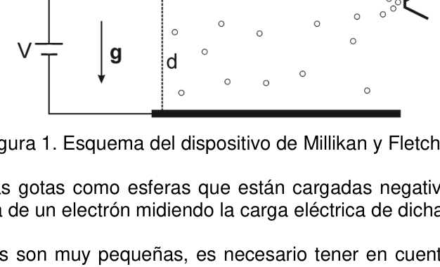
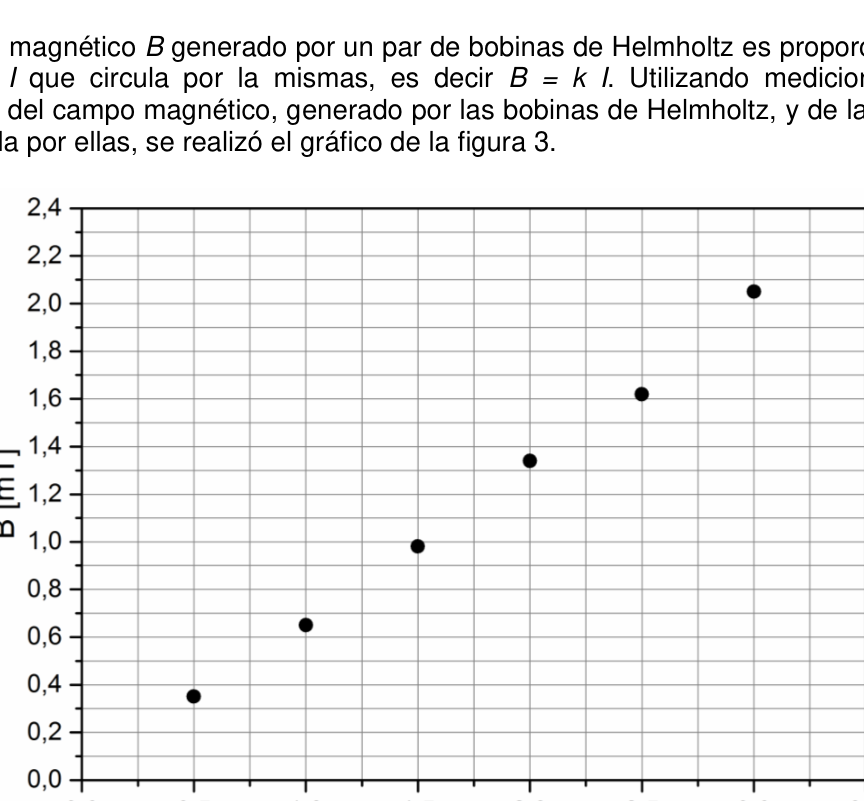
Topic: Electrostatics Metodi: Free-Body Diagram, Coulomb’s Law, Lorentz Force Analysis Competenze: Physical Reasoning, Mathematical Modeling Objects: Droplet, Capacitor, Electron Fonte: Testo (PDF) — p.5
Il progetto di Millikan
Problema 2
Nota: Prendere l’accelerazione della gravità come g = 9,8 m s-2.
1ra. Parte Robert Millikan e Hervey Fletcher nel 1909 fecero uno degli esperimenti più importanti. Le cose più importanti della fisica del XX secolo. Questi ricercatori hanno ottenuto, con le loro misurazioni, Per determinare la carica elettrica di un elettrone, hanno misurato la velocità di gocce di olio, elettricamente carico, in presenza e in assenza di un campo elettrico Uniforme. Nei loro esperimenti, mettevano gocce di olio dentro una camera formata da due. di piastrelle metalliche parallele e orizzontali, separate da una distanza d=10 mm. - Quelli . le schede, erano collegate a una fonte di tensione come schematizzato nella figura 1. Per generare le gocce di olio elettricamente cariche, i ricercatori hanno usato un spruzzatore.
Figura 1. Stigma del dispositivo di Millikan e Fletcher.
Se supponiamo che le gocce siano sfere che sono cariche negativamente, è possibile determinare la carica di un elettrone misurando la carica elettrica di tali gocce.
Poiché le gocce sono molto piccole, occorre tenere conto dell’effetto dell’aria.
- di quelle stesse. Cioè, le gocce si muovono in un fluido che esercita, oltre. La forza di attrito, a causa della viscosità dell’aria, ha un Il senso opposto al movimento della goccia e il suo modulo è proporzionale alla sua velocità.
Per un corpo sferico, la forza di attrito è data da, FD = -6 r v
OAF 2017 - 7 dove è la viscosità del fluido e r è il raggio della goccia. Per l’aria, = 1,8×10-5 Pa s-1.
Poiché la forza di attrito si oppone al movimento, si arriva a una situazione in cui la forza di attrito si oppone al movimento. L’accelerazione della goccia è zero e raggiunge (la goccia) una velocità costante chiamata velocità terminale. Nella situazione che stiamo affrontando, si assume che i movimenti orizzontali siano che la goccia fa solo un movimento verticale.
Per il caso in cui la tensione applicata alle schede è zero, si osserva un calo di goccia con velocità terminale v1=0,095 cm s-1. a) Sviluppa un diagramma del corpo isolato della goccia di olio.
b) Sapendo che l’olio ha una densità ρ=0.92 g cm-3 e che la densità di aria è ρa=0,0013 g cm-3, determina il raggio r della goccia di olio.
Se si applica una volta di 5000 V alle plache, si osserva che, la stessa goccia del punto precedente, si muove verso l’alto con una velocità terminale v2=0,010 cm s-1.
c) Determina il campo elettrico generato tra le schede.
d) Rendi un diagramma del corpo isolato della goccia di olio per questo caso.
(e) Determina il carico q della goccia di olio.
Parte 2 Prima delle ricerche di Millikan e Fletcher, Thompson realizzò, nel 1897, un’opera di ricerca di esperimento in cui ha potuto determinare il rapporto tra la carica (e) e la massa dell’elettrone (me), denominato carico specifico (). Per questo, ha misurato la deviazione che i cittadini subiscono. gli elettroni mentre si muovono in un campo magnetico.
Attualmente, per determinare la carica specifica dell’elettrone, si utilizza il Tubo di Raggio elettronico filipforme. In questo dispositivo, gli elettroni vengono generati da emissione. Termionici e accelerati da un potenziale elettrico U, entrando poi in una regione dove esiste un campo magnetico uniforme generato da un sistema di bobine di Helmholtz. Un schema del dispositivo può essere visto nella figura 2.
Figura 2 Schema del tubo di raggi elettronici filiforme.
f) Scrivi un’espressione per la velocità degli elettroni al punto A, di figura 2, in termini di carico specifico dell’elettrone e del potenziale U.
8 - OAF 2017 Il campo magnetico B generato da una coppia di bobine di Helmholtz è proporzionale alla corrente I che circola attraverso la stessa, cioè B = k I. L’utilizzo di misure di Magnitudine del campo magnetico, generato dalle bobine di Helmholtz, e del corrente che circola attraverso di loro, è stato fatto il grafico di figura 3.
Figura 3 Magnitud del campo magnetico in funzione del corrente che circola attraverso le bobine di Helmholtz.
g) Sulla base del grafico di figura 3, determinare la costante di proporzionalità k.
Topic: Electrostatics Metodi: Free-Body Diagram, Coulomb’s Law, Lorentz Force Analysis Competenze: Physical Reasoning, Mathematical Modeling Objects: Droplet, Capacitor, Electron Fonte: Testo (PDF) — p.5
The results of the experiment were presented in the form of a sample of samples.
Problem two .
Note: Take the acceleration of gravity as g = 9.8 m s-2.
1ra. Part Robert Millikan and Hervey Fletcher conducted one of the most famous experiments in 1909. The first two are the most important pieces of 20th century physics. These researchers achieved, with their measurements, To determine the electric charge of an electron, they measured the velocity of droplets of oil, electrically charged, in the presence or absence of an electric field uniform. In their experiments, they put drops of oil inside a chamber made up of two. parallel and horizontal metal plates, separated by a distance of d=10 mm. Those are . The electricity supply is generated by the electricity generated by the electricity generated by the electricity generated by the electricity generated by the electricity generated by the electricity generated by the electricity generated by the electricity generated by the electricity generated by the electricity generated by the electricity generated by the electricity generated by the electricity generated by the electricity generated by the electricity generated by the electricity generated by the electricity generated by the electricity generated by the electricity generated by the electricity generated by the electricity generated by the electricity generated by the electricity generated by the electricity generated by the electricity generated by the electricity generated by the electricity generated electricity. To generate electrically charged oil droplets, the researchers used a sprayer.
Figure 1 is shown. Sketch of the Millikan and Fletcher device.
If we assume the droplets as spheres that are negatively charged, it’s possible. determine the charge of an electron by measuring the electric charge of such droplets.
Since the droplets are very small, the effect of air must be taken into account. about the same. That is, the droplets move in a fluid (air) that exerts, plus of the thrust, a friction force due to the viscosity of the air, this force has a The direction of the droplet is opposite to the movement of the droplet and its modulus is proportional to its velocity.
For a spherical body, the frictional force is given by, FD = -6 r v
The Commission shall adopt implementing acts in accordance with Article 21 of the Financial Regulation. where is the viscosity of the fluid and r is the radius of the drop. For air, = 1,8×10-5 Pa s-1.
As the friction force opposes the motion, a situation is reached where the force is The acceleration of the drop is zero and it reaches (the drop) a constant velocity called terminal speed. In the situation we are presenting, it is assumed that horizontal movements are The drop makes only one vertical movement.
For the case where the voltage applied to the plates is zero, a drop is observed. with terminal speed v1 = 0,095 cm s-1. (a) Draw a body diagram of the oil drop.
(b) Knowing that the oil has a density ρ=0.92 g cm-3 and that the density of the oil is Air is ρa=0,0013 g cm-3, determine the radius r of the oil drop.
If a voltage of 5000 V is applied to the plates, and you see that, the same drop of the point The previous one moves upwards at a terminal velocity v2=0.010 cm s-1.
(c) Determine the electric field generated between the plates.
(d) Draw a body diagram of the oil drop for this case.
(e) Determine the load q of the oil drop.
Part 2 Prior to the investigations of Millikan and Fletcher, Thompson conducted, in 1897, a experiment where he could determine the relationship between the charge (s) and the mass of the electron (me), called specific load (). To that end, he measured the deviation suffered by the electrons as they move in a magnetic field.
Currently, the electron specific charge is determined using the tube of Electronic beam with a beam of filament. In this device, electrons are generated by emission. The thermionic and accelerated by an electric potential U, then entering a region where there is a uniform magnetic field generated by a coil system The first is Helmholtz. A diagram of the device can be seen in Figure 2.
Figure two. Sketch of the Filiform Electronic Ray Tube.
(f) Write an expression for the electron speed at point A, of the Figure 2, in terms of the specific charge of the electron and the potential U.
The Commission shall adopt delegated acts in accordance with Article 21 of Regulation (EU) No 1303/2013. The magnetic field B generated by a pair of Helmholtz coils is proportional to the current I that circulates through it, that is, B = k I. Using measurements of the magnitude of the magnetic field, generated by Helmholtz coils, and current And the graph of the circle is shown in Figure 3.
Figure 3 is shown. Magnitude of the magnetic field as a function of current It’s moving through Helmholtz’s coils.
(g) From the graph in Figure 3, determine the proportionality constant k.
Topic: Electrostatics Metodi: Free-Body Diagram, Coulomb’s Law, Lorentz Force Analysis Competenze: Physical Reasoning, Mathematical Modeling Objects: Droplet, Capacitor, Electron Fonte: Testo (PDF) — p.5
Oposicion Planetaria
Problema 3
Oposición Planetaria
El 21 de agosto pasado ocurrió un fenómeno astronómico que se dió a conocer en la prensa como el ―Eclipse del Siglo‖. Algunos periódicos hasta informaron que el peso de las personas sobre la Tierra iba a ser afectado. Esta noticia nos hizo pensar… ¿y si hacemos un problema de Astronomía e interacción gravitatoria?
En Astronomía, se denomina Oposición al fenómeno en el cual dos astros se encuentran, en relación a la Tierra, en dos puntos del cielo diametralmente opuestos. La figura 1 muestra a Marte en Oposición al Sol.
Figura 1: Marte en Oposición al Sol
P SO L Tierra Marte
OAF 2017 - 9 A lo largo de este problema, haremos uso de las leyes de Kepler y de la ley de interacción gravitatoria de Newton. Las Leyes de Kepler son
Primera ley
Todos los planetas se desplazan alrededor del Sol describiendo órbitas elípticas.
El Sol se encuentra en uno de los focos de la elipse.
Segunda ley El radio vector que une un planeta y el Sol barre áreas iguales en tiempos iguales.
Tercera Ley
Se cumple que para todos los planetas, la razón entre el periodo de revolución al
cuadrado y el semieje mayor de la elipse al cubo se mantiene constante. Esto es:
𝑇2 𝑎3 = 𝐶
Donde T es el periodo orbital (tiempo que tarda en dar una vuelta alrededor del Sol), 𝑎 es la distancia media del planeta con el Sol y 𝐶 la constante de proporcionalidad.
Nota: en nuestro problema, consideraremos que las órbitas son circulares y los focos de la elipse coninciden en el centro del circulo. Ademas las orbitas de los panetas considerados están ubicadas en un mismo plano.
Resuelva los siguientes puntos:
a) Si la última vez que Marte estuvo en Oposicion al sol, ocurrió el 22 de mayo de 2016, ¿Cuándo ocurrirá la próxima Oposicion al sol?
b) ¿Cuál es el radio de la órbita del planeta Marte?
c) ¿Cuál es su peso en la superficie de Marte de un astronauta que en la Tierra pesa
700 N?
(no tenga en cuenta efectos debidos a la rotación del los planetas sobre sus
propios ejes).
Suponga que, estando Marte en Oposición al sol, el astronauta se encuentra en el punto P de la Figura 1.
d) ¿Cuál es el cambio que experimenta en su peso debido a la máxima proximidad de la Tierra respecto de Marte?
Datos útiles para el problema
Masa de Marte: 6,39 × 1023 kg Periodo orbital de Marte: 687 días Periodo orbital de la Tierra: 365 días Masa de la Tierra: 5,972 × 1024 kg Masa del Sol: 1,989 × 1030 kg Radio de la Tierra: 6371 km Radio de Marte: 3390 km Velocidad de la luz: 300000 km s-1 Constante universal de la gravitación: 𝐺= 6,674 𝑥 10−11 𝑁𝑚2 𝑘𝑔2
10 - OAF 2017 Prueba Experimental - Nivel 1
Interferencia por una Doble Rendija
Objetivo General Verificar experimentalmente la naturaleza ondulatoria de la luz mediante la observación del patrón de interferencia generado por una doble rendija.
Introducción
En 1801 Thomas Young realizó un experimento de óptica, cuyo resultado sólo puede
explicarse considerando que la luz se comporta como una onda, en contraposición de la
teoría tradicional que sostenía que la luz estaba formada por una corriente de finas
partículas.
Para realizar el experimento, Young utilizó una fuente de luz monocromática, esto es de
un sólo y determinado color. A la luz proveniente de esta fuente la hizo incidir sobre una
lámina no transparente que tenía una rendija delgada, único lugar por el que podía pasar
la luz. Luego de pasar por esta rendija, la luz incidió sobre otra lámina no transparente
que tenía dos rendijas delgadas y muy próximas entre sí, como se muestra en la Figura
- Grande fue la sorpresa de Young cuando observó que la luz captada sobre una pantalla, esto es la luz que ―emanaba‖ de las dos rendijas, producía un patrón de franjas brillantes y oscuras.
Interpretación
Para poder interpretar estos resultados, Young tuvo que suponer un comportamiento
ondulatorio de la luz:
La luz se comporta como una onda, cuya longitud de onda asociada está
relacionada con el color de la luz que se observa. Esto es, el color rojo tiene una
longitud de onda diferente a la del amarillo o a la del verde.
La luz emerge de las rendijas como ondas cilíndricas, esto es que tiene frentes de
onda cilíndricos (Figura 1).
Los frentes de onda que inciden sobre la lámina con la doble rendija emergen con
la misma fase, es decir: las ondas son coherentes.
Las diferencias de fase entre dos ondas está relacionada con la diferencia entre
las distancias que han recorrido.
Las ondas que ―parten‖ de cada rendija de la segunda lámina (doble rendija)
recorren diferentes distancias hasta alcanzar los puntos sobre la pantalla, por lo
que arriban a cada punto con diferentes fases.
Figura 1
Franjas brillantes
Franjas oscuras
Pantalla
Lámina con una
rendija
Lámina con dos
rendijas
Fuente de luz
OAF 2017 - 11 Al superponerse, es decir: al sumarse ondas con diferentes fases se produce un patrón de interferencia (patrón de franjas brillantes y oscuras).
Análisis En la Figura 2 se muestra esquemáticamente la disposición geométrica del experimento y la diferencia 𝛥 entre las distancias que recorren los frentes de onda hasta alcanzar un punto de una pantalla muy lejana.
La condición de muy lejana es necesaria para tratar los rayos que alcanzan la pantalla como rayos casi paralelos y facilitar los cálculos matemáticos. Así, se puede considerar que la diferencia de ―camino recorrido‖ 𝛥 entre los rayos que emergen de una rendija y los que emergen de la otra rendija es: 𝛥= 𝑑sin θ Donde 𝑑 es la distancia de separación entre las rendijas y θ es el ángulo que posiciona al punto considerado sobre la pantalla. Para no tener que poner una pantalla lejana, se suele usar una lente ―delgada‖, mediante la cual se consigue que los rayos paralelos converjan en el foco de la misma, en donde Figura 2 Δ d
Zona ampliada Rayos “casi” paralelos Δ
d
12 - OAF 2017 se ubica la pantalla. O realizar este experimento usando nuestro ojo, sistema ―cornea- cristalino‖, como lente y nuestra retina como pantalla. Si ponemos la doble rendija muy próxima a nuestro ojo, podemos esquematizar la situación como se muestra en la Figura 3.
Como se indica en la figura 3 se percibirá a los rayos que alcanzan nuestra retina, como provenientes de franjas brillantes ubicadas en el mismo plano en donde se encuentra la fuente de luz. Por ejemplo, parecerán ―provenir‖ del punto P’ ubicado a una distancia y del eje horizontal y sobre el plano en donde se ubica la fuente de luz y con una inclinación θ. Si el ángulo θ es pequeño (menor a 15º) se puede considerar: 𝛥≅𝑑𝑡𝑔θ ≅𝑑 𝑦 𝐷
En este caso, considerando la diferencia de camino ―recorrido‖ por los rayos originados en cada rendija y considerando θ pequeños, la posición de las regiones brillantes (máximos de interferencia) estará dada por: 𝑦𝑚= 𝑚 𝜆 𝐷 𝑑 donde 𝜆 es la longitud de onda de la luz que incide sobre la doble rendija y 𝑚 es el número de orden de máximo considerado. Esto es: 𝑚= 0 (central y coincidente con la fuente de luz), 𝑚= ±1 (primeras franjas: a derecha y a izquierda de la central), 𝑚= ±2 (segundas franjas) y así sucesivamente.
Patrón de franjas visualizado
Figura 3 θ 𝐷 𝑦 Retina Cornea- Cristalino P’ Fuente de luz Patrón de franjas visualizado Ojo
OAF 2017 - 13
Nota: En el análisis realizado no se ha considerado el fenómeno de difracción, el cual hace que la intensidad de las regiones brillantes no sean las mismas y que se desvanezcan a medida que se incrementa el orden del máximo considerado.
Propuesta Experimental
Elementos disponibles
Diapositivas con dobles rendijas. Se ha escrito la separación entre las primeras doble rendijas 𝑑1 y el ancho de las rendijas 𝑎1 y, también la separación entre las segundas doble rendijas 𝑑2 y el ancho de las rendijas 𝑎2. En la diapositiva INCOGNITA no se consignan datos.
Dispositivo a pilas, con tres fuentes de luz (roja, verde y azul) con sistema para controlar la intensidad de luz, encendido y apagado. Con regla incorporada. Notas: la luz de color verde NO será utilizada en esta práctica; si tenés problemas para reconocer los colores: llamá al bedel.
Dos ―jinetillos‖ para ser ubicados sobre la regla incorporada en la fuente de luz.
Tabla con pie y ranuras para ubicar el dispositivo de luz.
Porta diapositivas adaptado a la Tabla provista.
Nota: cuando no esté realizando mediciones apague la fuente de luz (ponga el interruptor en “off”).
Objetivo experimental:
Realizar las mediciones necesarias para determinar la longitud de onda de una fuente de
luz a partir del fenómeno de interferencia, utilizando el dispositivo provisto y teniendo en
cuenta la configuración descripta en la Figura 3.
Desarrollo de las mediciones:
- Arme el dispositivo en la mesa de trabajo.
Regla incorporada
Diapositiva con dobles
rendijas
Interruptores
Pie móvil, ajustable
Control de intensidad
jinetillos
Ranuras predeterminadas para
posicionar la fuente de luz
Fuente de luz
Equipo armado
14 - OAF 2017 2) Mida las distancias (𝐷𝑖), previstas en el equipo, entre la diapositiva (doble rendija) y la fuente de luz (una rendija).
Encienda la luz ROJA y observe el patrón de interferencia producido por la doble rendija.
Debido al fenómeno de difracción, la intensidad de las franjas de luz decrece a partir del
máximo central (𝑚= 0) a medida que el orden (𝑚) crece, alcanzando un valor próximo a
cero en 𝑚max .
Utilizando la doble rendija 1 (𝑑1 = 0,13 mm) y la doble rendija 2 ( 𝑑2 = 0,065 mm)
-
Identifique el valor de 𝑚 máximo (𝑚max ) y mida la distancia entre las franjas correspondientes a −𝑚max y 𝑚max (∆𝑦 max ).
-
Determine la distancia que separa los máximos −𝑚 y 𝑚 ( ∆𝑦𝑚= 𝑦𝑚−𝑦−𝑚) al menos para 3 valores de 𝑚 (incluida la distancia correspondiente a 𝑚max ) para cada una de las posiciones 𝐷𝑖 la fuente de luz.
Presente los resultados en una tabla (TABLA 1) y agregue el valor de 𝑥 definido por: 𝑥= 𝑚 𝐷𝑖 𝑑𝑖
Modelo de TABLA sugerido. 𝑑𝑖 𝐷𝑖 𝑚 ∆𝑦𝑚 𝑥
Nota: confeccione la TABLA con las filas que considere necesarias. Recuerde consignar las incertezas correspondientes.
-
A partir de los datos recopilados en la TABLA 1, confeccione un gráfico (GRAFICO 1) ∆𝑦𝑚 en función de 𝑥.
-
Ajuste los puntos del GRAFICO 1 mediante una recta y determine la pendiente de la misma.
-
A partir del valor de la pendiente, determine la longitud de onda 𝜆 correspondiente al color ROJO ( 𝜆𝑅).
Determine la separación entre las rendijas de la diapositiva denominada INCÓGNITA (𝑑𝐼𝑅)
Prueba Teórica - Nivel 2
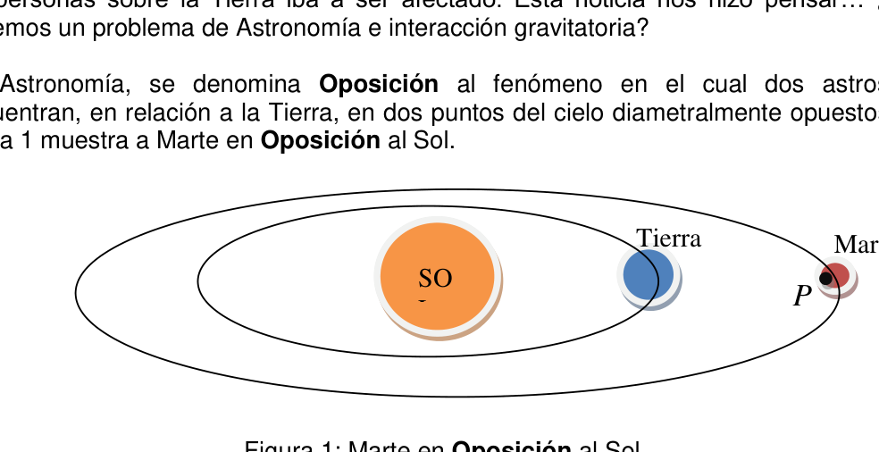
Topic: Gravitation, Astrophysics Metodi: Kepler’s Laws, Newton’s Law of Gravitation Competenze: Physical Reasoning, Mathematical Modeling Objects: Planet, Star Fonte: Testo (PDF) — p.5
Oposizione planetaria
Problema 3 Opposizione planetaria
Il 21 agosto scorso si è verificato un fenomeno astronomico che si è reso noto all’Università di San Francisco. La stampa come l’Eclipse del Secolo. Alcuni giornali hanno anche riferito che il peso di le persone sulla Terra sarebbero state colpite. Questa notizia ci ha fatto pensare:
- Facciamo un problema di astronomia e interazione gravitazionale?
In astronomia, si chiama Opposizione al fenomeno in cui due stelle si incontrano. si trovano, rispetto alla Terra, in due punti del cielo diametralmente opposti. La La figura 1 mostra Marte in opposizione al Sole.
Figura 1: Marte in opposizione al Sole
P SO L Terra . Marte .
OAF 2017 - 9 Nel corso di questo problema, faremo uso delle leggi di Kepler e della legge di Interazione gravitazionale di Newton. Le leggi di Kepler sono:
La prima legge Tutti i pianeti si muovono attorno al Sole descrivendo orbite elliptiche. Il Sole si trova in uno dei foci dell’ellipse.
Secondo legge La radio-vettrice che unisce un pianeta e il Sole spazia le stesse aree allo stesso tempo.
Terza legge Si realizza che per tutti i pianeti, il rapporto tra il periodo di rivoluzione al La quadrata e la semiezza maggiore dell’ellipse al cubo rimangono costanti. Questo è:
𝑇2 𝑎3 = 𝐶
Dove T è il periodo orbitale (il tempo necessario per girare intorno al Sol), a è la distanza media del pianeta dal Sole e C la costante di Proporzionalità.
Nota: nel nostro problema, consideriamo che le orbite siano circolari e i foci di L’ellipse coincide con il centro del cerchio. E le orbite dei pianeti. Le parti considerate sono situate nello stesso piano.
Risolvi i seguenti punti:
a) Se l’ultima volta che Marte è stato in opposizione al sole, è avvenuto il 22 maggio di 2016, quando si verificherà la prossima opposizione al sole?
b) Qual è il raggio di orbita del pianeta Marte?
c) Qual è il peso sulla superficie di Marte di un astronauta che pesa sulla Terra? 700 N? (non tiene conto degli effetti dovuti alla rotazione dei pianeti sui loro aumenti di velocità di velocità di velocità di velocità di velocità di velocità di velocità di velocità di velocità di velocità di velocità di velocità di velocità di velocità di velocità di velocità di velocità di velocità di velocità di velocità di velocità di velocità di velocità di velocità di velocità di velocità di velocità di velocità di velocità di velocità di velocità di velocità di velocità di velocità di velocità di velocità di velocità di velocità di velocità di velocità di velocità di velocità di velocità di velocità di velocità di velocità di velocità di velocità di velocità di velocità di velocità di velocità di velocità di velocità di velocità di velocità di velocità di velocità di velocità di velocità di velocità di velocità di velocità di velocità di velocità di velocità di velocità di velocità di velocità di velocità di velocità di velocità di velocità di velocità di velocità di velocità di velocità di velocità di velocità di velocità di velocità di velocità di velocità di velocità di velocità di velocità di velocità di velocità di velocità di velocità di velocità di velocità di velocità di velocità di velocità di velocità di velocità di velocità di velocità di velocità di velocità di velocità di velocità di velocità di velocità di velocità di velocità di velocità di velocità di velocità di velocità di velocità di velocità di velocità di velocità di velocità di velocità di velocità di velocità di velocità di velocità di velocità di velocità di velocità di velocità di velocità di velocità di velocità di velocità di velocità di velocità di velocità di velocità di velocità di velocità di velocità di velocità di velocità di velocità di velocità di velocità di velocità di velocità di velocità di velocità di velocità di velocità di velocità di velocità di velocità di velocità di velocità di velocità di velocità di velocità di velocità di velocità di velocità di velocità di velocità di velocità di velocità di velocità di velocità di velocità di velocità di velocità di velocità di velocità di veloc
Supponiamo che Marte sia in opposizione al sole, l’astronauta si trovi al punto. P della figura 1.
d) Qual è il cambiamento di peso che si prova a causa della massima vicinanza? della Terra rispetto a Marte?
Dati utili per il problema
Massa di Marte: 6,39 × 1023 kg Periodo orbitale di Marte: 687 giorni Periodo orbitale della Terra: 365 giorni Massa terrestre: 5,972 × 1024 kg Massa del Sole: 1,989 × 1030 kg Radiosfera della Terra: 6371 km Radio di Marte: 3390 km Velocità della luce: 300000 km s-1 Costante universale di gravità: G=6.674 x 10−11 𝑁𝑚2 𝑘𝑔2
10 - OAF 2017 Prova sperimentale - Livello 1
Interferenza da una doppia rendija
Obiettivo generale Verificare sperimentalmente la natura ondulatoria della luce mediante l’osservazione di interferenza generata da una doppia spazia.
Introduzione Nel 1801 Thomas Young eseguì un esperimento di ottica, il cui risultato è solo possibile. La luce si comporta come un’onda, al contrario della luce. La teoria tradizionale che sosteneva che la luce fosse costituita da un flusso di fine particelle. Per eseguire l’esperimento, Young utilizzò una fonte di luce monocromatica, cioè di un colore unico e determinato. Alla luce proveniente da questa fonte, ha fatto incidere su una una lamina non trasparente che aveva una scia sottile, l’unico posto dove poteva passare. la luce. Dopo aver attraversato questa spazia, la luce si è incentrata su un’altra lamina non trasparente. che aveva due sottili spazzature molto vicine, come si vede nella figura.
- Grande fu la sorpresa di Young quando osservò che la luce catturata su una la luce che “emanò” dalle due spaccature, produceva un modello di strisce. luminosi e scuri.
Interpretazione Per interpretare questi risultati, Young ha dovuto supporre un comportamento ondulazione della luce: La luce si comporta come un’onda, la cui lunghezza d’onda associata è è legato al colore della luce osservata. Cioè, il colore rosso ha un lunghezza d’onda diversa da quella del giallo o del verde. La luce emerge dalle spacie come onde cilindriche, cioè ha frunti di L’aumento della capacità di trasmissione è stato determinato in base alle seguenti caratteristiche: I frunti d’onda che incidono sulla lamina con la doppia spazia emergono con la stessa fase, cioè: le onde sono coerenti. Le differenze di fase tra due onde sono correlate alla differenza tra Le distanze che hanno percorso. Le onde che “partono” da ogni spaccatura della seconda lamina (doppio spaccatura) si spostano a diverse distanze fino a raggiungere i punti sullo schermo, quindi che arrivano a ogni punto con diverse fasi. Figura 1 Strisce lucide Strisce scure Scattoli Laminata con una .
- La spaccatura L’ lamina con due
- Le scintille Fonte di luce
OAF 2017 - 11 Quando si superponono, cioè quando si sommano onde con diverse fasi si produce un modello di interferenza (modello di strisce luminose e scure).
Analisi La figura 2 mostra schematicamente la disposizione geometrica dell’esperimento e La differenza Δ tra le distanze percorse dai frunti d’onda fino a raggiungere un punto di uno schermo molto lontano.
La condizione di distanza è necessaria per trattare i raggi che raggiungono lo schermo. Come raggi quasi paralleli e facilitare i calcoli matematici. Così, si può considerare che la differenza di “corso percorso” Δ tra i raggi che emergono da una spaccatura e quelli che emergono dall’altra spaccatura sono: Δ = dsin θ Dove d è la distanza di separazione tra le spazzature e θ è l’angolo che posiziona al punto considerato sullo schermo. Per non dover mettere uno schermo lontano, si usa di solito un lente “sottile” mediante che permette di far convergere i raggi paralleli nel foco di questa stessa luce, dove Figura 2 Δ d
Zona ampliata Raggi quasi paralleli Δ
d
12 - OAF 2017 si trova lo schermo. O fare questo esperimento usando il nostro occhio, il sistema — cornea — “Cristallino” come lente e la nostra retina come schermo. Se mettiamo il doppio spazzo molto vicino al nostro occhio, possiamo schematizzare la situazione come mostrato nella Figura 3.
Come indicato nella figura 3 si vedranno i raggi che raggiungono la nostra retina, come provenienti da strisce luminose situate nello stesso piano in cui si trova la fonte di luce. Ad esempio, sembreranno “provengono” dal punto P situato a distanza e di un’asse orizzontale e sul piano in cui si trova la fonte di luce e con una inclinamento θ. Se l’angolo θ è piccolo (meno di 15°) si può considerare: Δdtgθ d e 𝐷
In questo caso, considerando la differenza di Il percorso “corso” dei raggi originari di per ogni spazzo e considerando θ piccole, la La posizione delle regioni luminose (massimo di interferenza) sarà data da: 𝑦𝑚= 𝑚 𝜆 𝐷 𝑑 dove λ è la lunghezza d’onda della luce che si incide sulla doppia spazia e m è il numero di di massima considerazione. Questo è: m=0 (centrale e coincidente con la fonte di luce), m= ±1 (prime strisce: a destra e a a sinistra della centrale), m= ±2 (secondi La Commissione ha adottato una decisione che non può essere adottata.
Patrono di strisce visualizato
Figura 3 θ 𝐷 𝑦 Retina Cornea-Cristalino P’ Fonte di luce Patrono di strisce visualizzato Occhio
OAF 2017 - 13
Nota: L’analisi non ha preso in considerazione il fenomeno di difrazione, che La luce di questa luce è molto più intensa che la luce di questa luce. La maggior parte dei prodotti di cui trattasi è destinata a essere utilizzata per la produzione di prodotti di base.
Proposta sperimentale
Elementi disponibili
Slide con doppia spaccatura. È stata scritta la separazione tra le prime. doppia spazia d1 e larghezza delle spazia a1 e, anche la separazione tra le secondo doppio di rotture d2 e larghezza di rotture a2. Slide INCONONITA Non sono registrati dati.
Dispositivo a batteria, con tre fonti di luce (rosso, verde e blu) con sistema per controllare l’intensità della luce, accesa e spenta. Con regola incorporata. Nota: la luce verde non sarà utilizzata in questa pratica; se hai problemi per riconoscere i colori: chiama il bedel.
Due “chinettoni” da posizionare sopra la regola incorporata nella fonte di luce.
Tavola con piede e rotture per individuare il dispositivo di luce.
Porta diapositive adattate alla tabella fornita.
Nota: quando non si effettuano le misure, spegnere la fonte di luce (spegni il
- il interruttore in off.
Obiettivo sperimentale: Realizzare le misurazioni necessarie per determinare la lunghezza d’onda di una fonte di la luce proveniente dal fenomeno di interferenza, utilizzando il dispositivo fornito e tenendo in il numero di configurazioni descritto in figura 3.
Sviluppo delle misure:
- Armati il dispositivo sul tavolo di lavoro.
Regola incorporata Slide con doppi
- Le scintille Interruttori Piede mobile, regolabile Controllo dell’intensità Cavalieri Scratche predefinite per posizionare la fonte di luce Fonte di luce Equipaggiamento armato
14 - OAF 2017 2) Misurare le distanze (Di) previste nell’apparecchio tra la diapositiva (doppio spaziolo) e la fonte della luce.
Accendi la luce RED e osserva il modello di interferenza prodotto dalla doppia spazia. A causa del fenomeno di diffrazione, l’intensità delle strisce di luce diminuisce a partire dal Il valore di riferimento è il valore di riferimento di un valore di riferimento. Zero su mmax .
Utilizzando il doppio slot 1 (d1 = 0,13 mm) e il doppio slot 2 (d2 = 0,065 mm)
-
Identificare il valore massimo di m (mmax) e misurare la distanza tra le strisce corrispondenti a −mmax e mmax (∆y max).
-
Determina la distanza tra i massimi −m e m (∆ym= ym−y−m) e meno per 3 valori di m (inclusi la distanza corrispondente a mmax) per Ogni posizione diede la fonte di luce.
Presenta i risultati in una tabella (TABELLA 1) e somma il valore di x definito da: 𝑥= 𝑚 𝐷𝑖 𝑑𝑖
Modello di tabella suggerito. 𝑑𝑖 𝐷𝑖 𝑚 ∆𝑦𝑚 𝑥
Nota: confezionare la tabella con le righe che ritieni necessarie. Ricordate di consigliare. le circostanze di cui trattasi.
-
Basandosi sui dati raccolti in TABELLA 1, confezionate un grafico (Grafico 1) ∆ym in funzione di x.
-
Aggiusta i punti di GRAFICO 1 con una retta e determina la pendenza di
- La stessa.
- Dal valore della pendenza, determinare la corrispondente lunghezza d’onda λ il colore ROSSO ( λR).
Determina la separazione tra le slitte della scheda denominata INCÓNITA (DIR)
Prova teorica - Livello 2
Topic: Gravitation, Astrophysics Metodi: Kepler’s Laws, Newton’s Law of Gravitation Competenze: Physical Reasoning, Mathematical Modeling Objects: Planet, Star Fonte: Testo (PDF) — p.5
The Commission has also adopted a proposal for a regulation on the protection of the environment.
Problem three . Planetary Opposition
On 21 August last, an astronomical phenomenon occurred which was reported in the Press such as the “Eclipse of the Century”. Some newspapers even reported that the weight of people on Earth would be affected. This news made us think, “What if? We’re going to do an astronomy and gravitational interaction problem?
In astronomy, it is called Opposition to the phenomenon in which two stars are They are located, relative to the Earth, at two diametrically opposite points in the sky. La Figure 1 shows Mars as opposed to the Sun.
Figure 1: Mars in opposition to the Sun
P SO L Earth . Mars .
The Commission shall adopt implementing acts in accordance with Article 21 of the Financial Regulation. Throughout this problem, we’ll use Kepler’s laws and Kepler’s law. Newton’s gravitational interaction. Kepler’s laws are
First law All the planets move around the Sun describing elliptical orbits. The Sun is at one of the focuses of the ellipse.
Second law The vector radius that connects a planet to the Sun crosses the same areas at the same time.
Third Law It is true that for all planets, the ratio between the period of revolution to the square and the major semicircle of the ellipse to the cube remains constant. This is:
𝑇2 𝑎3 = 𝐶
Where T is the orbital period (the time it takes to go around the Sun), a is the mean distance of the planet from the Sun and C is the constant of the Commission’s proposal.
Note: in our problem, we will consider that the orbits are circular and the focuses of The ellipse coincides with the center of the circle. In addition to the orbits of the planets The two are located on the same plane.
Resolve the following points:
(a) If the last time Mars was in opposition to the sun, it happened on May 22nd of 2016, when will the next Opposition to the Sun occur?
(b) What is the radius of orbit of the planet Mars?
(c) What is the weight on the surface of Mars of an astronaut who weighs on Earth? 700 N? (does not take into account effects due to the rotation of the planets on their own axes).
Suppose that, with Mars in opposition to the sun, the astronaut is at the point. P of Figure 1.
(d) What is the change in weight you experience due to the maximum proximity? Earth’s relationship to Mars?
Data useful for the problem
The mass of Mars: 6,39 × 1023 kg Mars orbital period: 687 days Earth’s orbital period: 365 days The mass of the Earth: 5,972 × 1024 kg The mass of the Sun: 1,989 × 1030 kg Radius of the Earth: 6371 km Radio of Mars: 3390 km The speed of light: 300000 km s-1 Universal gravity constant: G = 6,674 x 10−11 𝑁𝑚2 𝑘𝑔2
10 - OAF 2017 The following is the list of the types of tests:
Interference by a Double Rendija
General objective Experimentally verify the wavy nature of light by observation the interference pattern generated by a double slit.
The first is the introduction. In 1801 Thomas Young conducted an experiment in optics, the result of which can only be The reason for this is that light behaves as a wave, as opposed to light. The traditional theory that light was made up of a fine stream of light. particles. To perform the experiment, Young used a monochrome light source, that is, from a single, determined color. The light from this source made her focus on a The non-transparent sheet that had a thin cleft, the only place he could pass through. The light. After passing through this crack, the light struck another opaque sheet. It had two thin, very close slits, as shown in Figure 1.
- Great was Young’s surprise when he noticed that light captured on a screen, this is the light that “emitted” from the two slits, producing a pattern of stripes. bright and dark.
Interpretation of the text To interpret these results, Young had to assume a behavior. The light wavelength: Light behaves like a wave, whose associated wavelength is It’s related to the color of the light we see. I mean, the red color has a The wavelength is different from that of yellow or green. Light emerges from the gaps as cylindrical waves, that is, it has fronts of The following is the list of the types of electrical power generated by the electrical system: The wavefronts that impact the sheet with the double-slit emerge with The same phase, that is, the waves are consistent. The phase differences between two waves are related to the difference between the distances they’ve traveled. The waves that “break” from each slit of the second sheet (double slit) They travel different distances to reach the points on the screen, so They come to each point with different phases. Figure 1 Bright stripes . Dark stripes . Screen Laminate with a . The gap Laminate with two .
- I ‘m not . Light source
The Commission shall adopt implementing acts in accordance with Article 21 of the Financial Regulation. When superimposed, i.e. when waves with different phases add up, a interference pattern (bright and dark band pattern).
Analysis of the data Figure 2 shows the geometric arrangement of the experiment and The difference Δ between the distances travelled by the wavefronts to reach a point of a very distant screen.
The condition of very distant is necessary to treat the rays reaching the screen. Like almost parallel beams and make mathematical calculations easier. So, you can consider that the difference in “pathway” Δ between the rays emerging from a crack and Those that emerge from the other slit are: Δ = dsin θ Where d is the distance between the gaps and θ is the angle that it positions the point considered on the screen. To avoid having to put a remote screen, a thin lens is usually used, using a thin lens. which is where the parallel rays converge at the focus of the same, where Figure 2 Δ d
Enlarged area Almost parallel beams Δ
d
The Commission shall adopt delegated acts in accordance with Article 21 of this Regulation. the screen is located. Or do this experiment using our eye, system — the cornea — “crystalline” as a lens and our retina as a screen. If we put the double slit too much close to our eye, we can outline the situation as shown in Figure 3.
As shown in Figure 3, you will see the rays reaching our retina, such as The resulting light is a bright band located on the same plane as the the source of light. For example, they will appear to be “coming” from the point P located at a distance and The light source is located on the horizontal axis and on the plane where the light source is located and with a slope θ. If the angle θ is small (less than 15o) it is may consider: Ddtgθ d and 𝐷
In this case, considering the difference of The path ― traversed ― by the rays originating in Each slit and considering θ small, the The position of the bright regions (maximum of interference) shall be given by: 𝑦𝑚= 𝑚 𝜆 𝐷 𝑑 where λ is the wavelength of the light that It’s on the double-slit and m is the number of order of maximum consideration. This is: m=0 (central and matching the light source), m= ±1 (first lines: to the right and to The value of the input data shall be the value of the input data. The Commission has already taken a number of measures to ensure that the Community’s financial resources are not used to finance the implementation of the programme.
Pattern of stripes displayed
Figure 3 θ 𝐷 𝑦 Retina Cornea- crystalline P’ Light source Pattern of stripes displayed Eye .
The Commission shall adopt delegated acts in accordance with Article 21 of the Financial Regulation.
Note: The analysis did not consider the diffraction phenomenon, which The intensity of the bright regions is not the same and it is The number of the maximum considered shall be increased.
Experimental proposal
Available items
Slides with double slits. The separation between the former has been written. double cleavage d1 and the width of the cleavages a1 and, also the separation between the second double slits d2 and the width of the slits a2. On the slide. NO data is recorded.
Battery device with three light sources (red, green and blue) with system for control the intensity of the light, on and off. With a built-in rule. Notes: the green light will NOT be used in this practice; if you have problems To recognize colors: call the bedel.
Two “knuckles” to be placed over the rule incorporated into the light source.
Table with foot and slots to locate the lighting device.
Slide port adapted to the provided table.
Note: when not measuring, turn off the light source (set the switch in off).
The experimental objective: Perform the measurements necessary to determine the wavelength of a source of light from the interference phenomenon, using the provided device and having in The configuration described in Figure 3 is calculated.
Development of measurements:
- Arming the device on the work table.
Embedded rule Slide with doubles
- I ‘m not . The switches Moveable foot, adjustable Control of intensity Horsemen Defaulted slots for Position the light source Light source Armed team .
The Commission shall adopt delegated acts in accordance with Article 21 of this Regulation. 2) Measure the distance (Di) planned on the equipment between the slide (double slit) and the source of light.
Turn on the RED light and observe the interference pattern produced by the double-slit. Due to the diffraction phenomenon, the intensity of the light bands decreases from the The average value of the value of the product is the value of the product. Zero on mmax .
Using the double slot 1 (d1 = 0,13 mm) and the double slot 2 (d2 = 0,065 mm)
-
Identify the maximum m value (mmax) and measure the distance between the bands The following is the list of the values of the values of the values of the values of the values of the values of the values of the values of the values of the values of the values of the values of the values of the values of the values of the values of the values of the values of the values of the values of the values of the values of the values of the values of the values of the values of the values of the values of the values of the values of the values of the values of the values of the values of the values of the values of the values of the values of the values of the values of the values of the values of the values of the values of the values of the values of the values of the values of the values of the values of the values of the values of the values of the values of the values of the values of the values of the values of the values of the values of the values of the values of the values of the values of the values of the values of the values of the values of the values of the values of the values of the values of the values of the values of the values of the values of the values of the values of the values of the values of the values of the values of the values of the values of the values of the values of the values of the values of the values of the values of the values of the values of the values of the values of the values of the values of the values of the values of the values of the values of the values of the values of the values of the values of the values of the values of the values of the values of the values of the values of the values of the values of the values of the values of the values of the values of the values of the values of the values of the values of the values of the values of the values of the values of the values of the values of the values of the values of the first of the first of the first of the first of the first of the first of the first of the first of those values of the first of the first of those values of the first of those values of the first of those values of those values of the first of those values of the first of those values of the first of the first of those values of the first of the first of the first of those values of those values of those values of the first of those values:
-
Determine the distance between the maximum −m and m (∆ym= ym−y−m) to minus 3 values of m (including the distance to mmax) for Each of the positions is given the light source.
Present the results in a table (TABLE 1) and add the value of x defined by: 𝑥= 𝑚 𝐷𝑖 𝑑𝑖
Suggested table model. 𝑑𝑖 𝐷𝑖 𝑚 ∆𝑦𝑚 𝑥
Note: Make the TABLE with the rows you deem necessary. Remember to record . the relevant uncertainties.
-
Draw up a graph from the data collected in TABLE 1. (Graph 1) ∆ym as a function of x.
-
Adjust the points of GRAFICO 1 by a straight line and determine the slope of the The same.
-
From the slope value, determine the corresponding wavelength λ the colour RED ( λR).
Determine the separation between the slits of the slide called INCÓNITA (dIR)
Theoretical proof - Level 2
Topic: Gravitation, Astrophysics Metodi: Kepler’s Laws, Newton’s Law of Gravitation Competenze: Physical Reasoning, Mathematical Modeling Objects: Planet, Star Fonte: Testo (PDF) — p.5
Calor Humano
Problema 1
Calor Humano
De acuerdo a la Guía Alimentaria 2017 de la Organización Mundial de la Salud, un ser humano adulto debería consumir 2000 Kcal al día. De una forma u otra, toda esa energía termina convertida en calor y transmitida al medio circundante.
Suponiendo que un ser humano adulto consume esa cantidad de calorías por día,
a) calcule la potencia térmica (en W) entregada, al medio circundante, por ese ser humano adulto.
OAF 2017 - 15 Según los manuales de la construcción, el flujo de calor q por unidad de área (en W/m2), a través de un muro de espesor d, se expresa como
q = (Ti−Te) λ/d,
donde Ti es la temperatura interior, Te es la temperatura exterior y λ es el coeficiente de conductividad térmica del material. Un flujo positivo se interpreta como calor que sale a través del muro, y uno negativo como calor que entra.
Suponga que el aula de una escuela rural es un paralelepípedo de 3 m de altura, 5 m de ancho y 8 m de largo, que los muros son de ladrillo (λ = 0,56 W m-1 ºC-1) de 30 cm de espesor, que el flujo de calor a través del piso y el techo puede despreciarse, y que el flujo de calor a través de puertas y ventanas es el mismo que si fueran parte de los muros. Suponga también que en el aula hay 20 alumnos (equivalentes cada uno a un adulto) y una maestra, y que cada uno consume la cantidad de calorías recomendada por la Guía Alimentaria. Si la temperatura exterior es constante, después de un tiempo relativamente breve, la temperatura en el interior del aula alcanzará un estado estacionario, es decir que ya no cambiará con el tiempo.
b) Calcule la temperatura dentro del aula una vez alcanzado el estado estacionario, considerando los casos en que la temperatura exterior es de 0 ºC, 10 ºC, 20 ºC, 30 ºC y 40 ºC.
En un día con temperatura exterior de 0 ºC, y bajo las mismas condiciones del punto (b), se desea mantener el interior del aula a una temperatura de 20 ºC.
c) Calcule la potencia térmica (en W) que debe entregar un calefactor para mantener dicha temperatura interior.
En un día con temperatura exterior de 40 ºC, y bajo las mismas condiciones del punto (b), se desea mantener el interior del aula a una temperatura de 20 ºC.
d) Calcule la potencia térmica (en W) que debe entregar un acondicionador de aire para mantener dicha temperatura interior.
Ahora suponga que la energía obtenida del metabolismo de los alimentos procede de la reacción C6H12O6 + 6O2 → 6CO2 + 6H2O + E (1)
Esta reacción indica que por cada mol de glucosa (C6H12O6) se necesitan 6 moles de Oxígeno molecular (O2), que se toman del aire, y que durante esta reacción se liberan 263Kcal de energía (E).
e) Calcule cuántos moles de oxígeno del aire consume un ser humano cada día.
Sabiendo que un mol de aire está compuesto por 0,78 moles de Nitrógeno molecular,
0,21 moles de O2 y 0,01 moles de Argón y suponiendo al aire como un gas ideal
diatómico,
f) calcule el caudal de aire en l/h (a presión de 1 atm) que debe ingresar al aula del punto (b) para satisfacer esta demanda de O2.
d Ti Te
16 - OAF 2017 g) Si el aire del punto (f) ingresa por un conducto cilíndrico de 100 mm de diámetro, calcule la velocidad (en cm/s) del flujo de aire en el conducto.
h) Si el aire del punto (f) ingresa a la temperatura del exterior, calcule cuánto debe incrementarse la potencia térmica del calefactor del punto (c), y cuánto debe incrementarse la del acondicionador de aire del punto (d), para mantener la temperatura deseada.
Suponga que el calefactor del punto (c) es de tiro balanceado, y quema gas natural (metano) con oxígeno del aire exterior en la reacción CH4 + 2O2 → CO2 + 2H2O + E (2)
Esta reacción indica que por cada mol de metano (CH4) se necesitan dos moles de Oxígeno molecular (O2) y se liberan 210 Kcal de energía (E). Suponga que el gas natural es un gas ideal y es suministrado a una presión de 1,02 atm a la temperatura del exterior.
i) Calcule cuántos metros cúbicos de gas natural por hora consume este calefactor para satisfacer los requerimientos del punto (h).
Suponga ahora que el calefactor del punto (c) es eléctrico y está alimentado por una central termoeléctrica, que quema metano como se describe en la reacción (2). En este caso, el 35% del calor liberado en la reacción se convierte en energía eléctrica que es transmitida sin pérdidas al calefactor; el cual la convierte en calor por efecto Joule. Suponga que este calefactor eléctrico no pierde calor al exterior.
j) Calcule cuántos metros cúbicos de gas natural por hora consume la central para que el calefactor eléctrico pueda satisfacer los requerimientos del punto (h).
k) Calcule la intensidad (en A) de la corriente eléctrica suministrada al calefactor eléctrico, a una tensión (r.m.s.) de 220 V.
Topic: Thermodynamics, Fluid Mechanics Metodi: First Law of Thermodynamics, Ideal Gas Law, Continuity Equation Competenze: Physical Reasoning, Mathematical Modeling Objects: Gas, Tube Fonte: Testo (PDF) — p.5
Calore umano
Problema 1 Calore umano
Secondo la Guida alimentare 2017 dell’Organizzazione mondiale della sanità, un essere L’uomo adulto dovrebbe consumare 2000 Kcal al giorno. In un modo o nell’altro, tutta quell’energia. finisce per essere caldo e trasmesso all’ambiente circostante.
Supponendo che un essere umano adulto consuma quante calorie al giorno,
a) calcolare la potenza termica (in W) trasmessa, all’ambiente circostante, da tale essere
- Un uomo adulto.
OAF 2017 - 15 Secondo i manuali di costruzione, il flusso di calore q per unità di area (in W/m2), attraverso un muro di spessore d, espresso come
q = (Ti−Te) λ/d,
dove Ti è la temperatura interna, Te è la temperatura e λ è il coefficiente di conduzione termico di materiale. Un flusso positivo è interpretato come calore che esce attraverso Il muro, e un negativo come calore che entra.
Supponiamo che la classe di una scuola rurale sia un parallelepied di 3 m di altezza, 5 m di altezza. Larghezza e lunghezza di 8 m, i muri sono di mattoni (λ = 0,56 W m-1 oC-1) di 30 cm di diametro spessore, che il flusso di calore attraverso il pavimento e il tetto può essere disprezzato, e che il Il flusso di calore attraverso le porte e le finestre è lo stesso che se fossero parte dei
- Le mura. Supponiamo anche che in classe ci siano 20 studenti (equivalenti a uno ciascuno). Adulta) e un’insegnante, e che ognuno consuma le calorie raccomandate per la guida alimentare. Se la temperatura esterna è costante, dopo un po’ relativamente breve, la temperatura all’interno della classe raggiungerà uno stato stazionario, cioè non cambierà più col tempo.
b) Calcolare la temperatura all’interno della classe una volta raggiunto lo stato di stazionarietà, considerando i casi in cui la temperatura esterna è di 0 oC, 10 oC, 20 oC, 30 ºC y 40 ºC.
In una giornata con temperatura esterna di 0 oC, e nelle stesse condizioni di (b), si desidera mantenere l’interno della classe a una temperatura di 20 oC.
c) Calcolare la potenza termico (in W) che un riscaldatore deve fornire per mantenere tale temperatura interna.
In una giornata con temperatura esterna di 40 oC, e nelle stesse condizioni di cui al punto (b), si desidera mantenere l’interno della classe a una temperatura di 20 oC.
d) Calcolare la potenza termico (in W) da fornire da un condizionatore d’aria per mantenere tale temperatura interna.
Ora supponiamo che l’energia ottenuta dal metabolismo dei cibi proviene dalla reazione C6H12O6 + 6O2 → 6CO2 + 6H2O + E (1)
Questa reazione indica che per ogni mol di glucosio (C6H12O6) sono necessari 6 mol di glucosio. L’ossigeno molecolare (O2), che viene preso dall’aria e che durante questa reazione viene rilasciato. 263 Kcal di energia (E).
e) Calcolare quante molli di ossigeno dell’aria un essere umano consuma ogni giorno.
Sapendo che un mol d’aria è composto da 0,78 mol di azoto molecolare, 0,21 mol di O2 e 0,01 mol di Argone e supponendo l’aria come un gas ideale diametro diametrico,
f) calcolare l’aria che deve entrare nella classe di scuola in l/h (a pressione di 1 atm). (b) per soddisfare tale domanda di O2.
d Ti Te
16 - OAF 2017 g) Se l’aria del punto (f) entra attraverso un tubo cilindrico di 100 mm di diametro, Calcolare la velocità (in cm/s) del flusso d’aria nel conducto.
h) Se l’aria del punto (f) entra alla temperatura esterna, calcola quanto deve aumentare la potenza termico del riscaldatore di punto (c), e quanto deve aumentare la temperatura dell’aria condizionata al punto (d) per mantenere la temperatura desiderata.
Supponiamo che il riscaldatore di punto (c) sia di tiro in equilibrio, e bruci gas naturale (metano) con ossigeno dell’aria esterna in reazione CH4 + 2O2 → CO2 + 2H2O + E (2)
Questa reazione indica che per ogni mol di metano (CH4) sono necessari due mol di L’ossigeno molecolare (O2) e 210 Kcal di energia (E) vengono rilasciati. Supponiamo che il gas naturale sia un gas ideale e sia fornito a una pressione di 1,02 atm. alla temperatura esterna.
i) Calcolare quanti metri cubi di gas naturale per ora consumano questo riscaldatore per soddisfare i requisiti di cui al punto (h).
Supponiamo che il riscaldatore di punto (c) sia elettrico e sia alimentato da una centrale termoelettrica, che brucia metano come descritto nella reazione (2). In questo . In questo caso, il 35% del calore rilasciato nella reazione viene convertito in energia elettrica che è Il caldo viene trasmesso senza perdite al riscaldatore, che lo converte in calore per effetto Joule. Supponiamo che questo riscaldatore elettrico non perda calore all’esterno.
j) Calcolare quanti metri cubi di gas naturale per ora consumano la centrale per che il riscaldatore elettrico possa soddisfare i requisiti di (h).
k) Calcolare l’intensità (in A) del corrente elettrica fornita al riscaldatore di una velocità di velocità di un po’ di più di 100 V,
Topic: Thermodynamics, Fluid Mechanics Metodi: First Law of Thermodynamics, Ideal Gas Law, Continuity Equation Competenze: Physical Reasoning, Mathematical Modeling Objects: Gas, Tube Fonte: Testo (PDF) — p.5
The following table shows the results of the test:
Problem 1 is Human heat .
According to the World Health Organization’s 2017 Food Guide, a being is An adult human should consume 2,000 Kcal per day. One way or another, all that energy. It is then converted into heat and transmitted to the surrounding environment.
Assuming an adult human consumes that much calories a day,
(a) calculate the thermal power (in W) delivered to the surrounding environment by that being. adult human.
The Commission shall adopt implementing acts in accordance with Article 21 of the Financial Regulation. According to the construction manuals, the heat flow q per unit area (in W/m2), through a wall of thickness d, expressed as
q = (Ti−Te) λ/d,
Where Ti is the temperature inside, Ti is the temperature The heat conductivity coefficient of the the material. A positive flow is interpreted as heat coming out through it. And one negative as heat enters.
Suppose the classroom of a rural school is a 3 m high, 5 m high parallel-stone. wide and 8 m long, the walls are of brick (λ = 0,56 W m-1 oC-1) of 30 cm thickness, that heat flow through the floor and ceiling can be neglected, and that the The heat flow through doors and windows is the same as if they were part of the walls. Suppose there are 20 pupils in the classroom (equivalent to one each). The average number of calories consumed by each adult (adult) and one teacher (teacher) is the recommended number of calories consumed by each adult. The food guide. If the outside temperature is constant, after a while. Relatively briefly, the temperature inside the classroom will reach a state stationary, which means it won’t change over time.
(b) Calculate the temperature inside the classroom once stationary status is reached. Whereas the outdoor temperature is 0 oC, 10 oC, 20 oC, 30 ºC y 40 ºC.
On a day with an outside temperature of 0 oC, and under the same conditions as in point (b), the room is to be kept at a temperature of 20 oC.
(c) Calculate the thermal power (in W) to be delivered by a heater for maintain this indoor temperature.
On a day with an outdoor temperature of 40 oC, and under the same conditions as in point (b), the room is to be kept at a temperature of 20 oC.
(d) Calculate the thermal power (in W) to be delivered by an air conditioner to maintain this internal temperature.
It is therefore not possible to determine the exact amount of energy that is produced by the metabolism of food. The reaction C6H12O6 + 6O2 → 6CO2 + 6H2O + E (1)
This reaction indicates that 6 moles of glucose are needed for each mole of glucose (C6H12O6). Molecular oxygen (O2), which is taken from the air, and which during this reaction is released 263 Kcal of energy (E).
(e) Calculate how many moles of oxygen an individual consumes from the air each day.
Knowing that one mole of air is composed of 0.78 mole of molecular nitrogen, 0.21 moles of O2 and 0.01 moles of Argon and assuming air as an ideal gas The following table shows the results of the study:
(f) calculate the air flow in l/h (at 1 atm pressure) to be entered into the classroom of the (b) to meet this demand for O2.
d Ti Te
16 - OAF 2017 (g) If the air in point (f) enters through a cylindrical tube 100 mm in diameter, calculate the velocity (in cm/s) of the air flow in the duct.
(h) If the air in point (f) enters the outside temperature, calculate how much it must increase the thermal power of the heater at point (c) and how much it should increase the air conditioner in point (d) to maintain the the desired temperature.
Suppose the heater at point (c) is of balanced charge, and burns natural gas (methane) with oxygen from the outer air in the reaction. CH4 + 2O2 → CO2 + 2H2O + E (2)
This reaction indicates that for each mole of methane (CH4) two moles of methane are needed. Molecular oxygen (O2) and 210 Kcal of energy (E) are released. Suppose natural gas is an ideal gas and is supplied at a pressure of 1.02 atm. the outside temperature.
(i) Calculate how many cubic meters of natural gas per hour this heater consumes to meet the requirements of point (h).
Suppose the heater at point (c) is electric and is powered by a thermoelectric power plant, which burns methane as described in the reaction (2). In this one . In this case, 35% of the heat released in the reaction is converted to electrical energy which is The heat is transferred to the heater without loss, which converts it to Joule heat. Suppose this electric heater doesn’t lose heat outside.
(j) Calculate how many cubic metres of natural gas per hour the plant consumes for the electric heater can meet the requirements of point (h).
k) Calculate the intensity (in A) of the electric current supplied to the heater Electrical, at a voltage (r.m.s.) of 220 V.
Topic: Thermodynamics, Fluid Mechanics Metodi: First Law of Thermodynamics, Ideal Gas Law, Continuity Equation Competenze: Physical Reasoning, Mathematical Modeling Objects: Gas, Tube Fonte: Testo (PDF) — p.5
Experimento de Millikan
Problema 2
Nota: Tomar a la aceleración de la gravedad como g = 9,8 m s-2.
1ra. Parte
Robert Millikan y Hervey Fletcher realizaron, en 1909, uno de los experimentos más
relevantes de la física del siglo XX. Estos investigadores lograron, con sus mediciones,
determinar la carga eléctrica de un electrón; para ello, midieron la velocidad de gotas de
aceite, cargadas eléctricamente, en presencia y ausencia de un campo eléctrico
uniforme.
En sus experimentos, colocaban gotas de aceite dentro de una cámara formada por dos
placas metálicas paralelas y horizontales, separadas una distancia d=10 mm. Esas
placas, estaban conectadas a una fuente de voltaje como se esquematiza en la figura 1.
Para generar las gotas de aceite cargadas eléctricamente, los investigadores utilizaban
un rociador.
Figura 1. Esquema del dispositivo de Millikan y Fletcher.
OAF 2017 - 17 Si suponemos a las gotas como esferas que están cargadas negativamente, es posible determinar la carga de un electrón midiendo la carga eléctrica de dichas gotas.
Dado que las gotas son muy pequeñas, es necesario tener en cuenta el efecto del aire sobre las mismas. Es decir, las gotas se mueven en un fluido (aire) que ejerce, además del empuje, una fuerza de fricción debido a la viscosidad del aire, esta fuerza tiene un sentido opuesto al movimiento de la gota y su módulo es proporcional a su velocidad.
Para un cuerpo esférico, la fuerza de fricción está dada por,
FD = -6 r v
donde es la viscosidad del fluido y r es el radio de la gota. Para el aire, = 1,8×10-5 Pa s-1.
Como la fuerza de fricción se opone al movimiento, se llega a una situación donde la aceleración de la gota es cero y alcanza (la gota) una velocidad constante llamada velocidad terminal. En la situación que estamos planteando, se asume que los movimientos horizontales son despreciables, es decir: la gota realiza solo un movimiento vertical.
Para el caso en que el voltaje aplicado a las placas es cero, se observa que una gota cae
con velocidad terminal v1=0,095 cm s-1.
a) Realice un diagrama de cuerpo aislado de la gota de aceite.
b) Sabiendo que el aceite tiene una densidad ρ=0,92 g cm-3 y que la densidad del aire es ρa=0,0013 g cm-3, determine el radio r de la gota de aceite.
Si se aplica un voltaje de 5000 V a las placas, y se observa que, la misma gota del punto anterior, se mueve hacia arriba con una velocidad terminal v2=0,010 cm s-1.
c) Determine el campo eléctrico generado entre las placas.
d) Realice un diagrama de cuerpo aislado de la gota de aceite para este caso.
e) Determine la carga q de la gota de aceite.
2da Parte Anteriormente a las investigaciones de Millikan y Fletcher, Thompson realizó, en 1897, un experimento donde pudo determinar la relación entre la carga (e) y la masa del electrón (me), denominada carga específica (). Para ello, midió la desviación que sufren los electrones mientras se mueven en un campo magnético.
En la actualidad, para determinar la carga específica del electrón, se utiliza el Tubo de Rayo Electrónico Filiforme. En este dispositivo, los electrones son generados por emisión termoiónica y acelerados por un potencial eléctrico U, ingresando, luego, a una región donde existe un campo magnético uniforme generado mediante un sistema de bobinas de Helmholtz. Un esquema del dispositivo puede observarse en la figura 2.
18 - OAF 2017
Figura 2. Esquema del Tubo de Rayo Electrónico Filiforme.
f) Escriba una expresión para la velocidad de los electrones en el punto A, de la
figura 2, en términos de la carga específica del electrón y del potencial U.
El campo magnético B generado por un par de bobinas de Helmholtz es proporcional a la corriente I que circula por la mismas, es decir B = k I. Utilizando mediciones de la magnitud del campo magnético, generado por las bobinas de Helmholtz, y de la corriente que circula por ellas, se realizó el gráfico de la figura 3.
Figura 3. Magnitud del campo magnético en función de la corriente que circula por las bobinas de Helmholtz.
g) A partir del gráfico de la figura 3, determine la constante de proporcionalidad k.
En el campo magnético, se observa que los electrones realizan un movimiento circular
uniforme de radio R = 4 cm, como se esquematiza en la figura 2, cuando el potencial de
aceleración es U = 300 V y la corriente que circula por las bobinas de Helmholtz es
I = 2,15 A.
OAF 2017 - 19 h) Determine la carga específica de los electrones.
Replicando el experimento de Millikan y Fletcher (1ra. Parte) se obtuvieron los siguientes valores para la carga de tres gotas distintas,
q1 = -9,63 × 10-19 C q2 = -4,78 × 10-19 C q3 = -1,28 × 10-18 C
i) Sabiendo que las cargas medidas son múltiplos enteros de la carga del electrón, es decir que q = n e donde n es un número entero mayor que cero, determine el valor de la carga del electrón a partir de estos valores medidos.
j) Determine el valor de la masa de un electrón me.
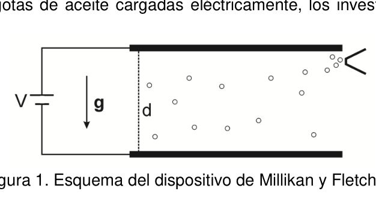
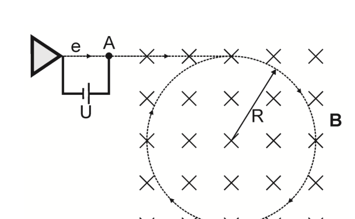
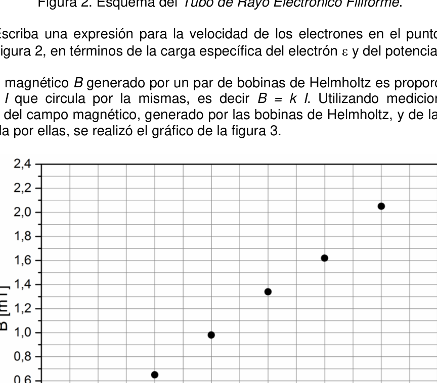
Topic: Electromagnetism, Electrostatics Metodi: Free-Body Diagram, Lorentz Force Analysis, Coulomb’s Law Competenze: Physical Reasoning, Mathematical Modeling Objects: Droplet, Electron, Coil Fonte: Testo (PDF) — p.5
Il progetto di Millikan
Problema 2
Nota: Prendere l’accelerazione della gravità come g = 9,8 m s-2.
1ra. Parte Robert Millikan e Hervey Fletcher nel 1909 fecero uno degli esperimenti più importanti. Le cose più importanti della fisica del XX secolo. Questi ricercatori hanno ottenuto, con le loro misurazioni, Per determinare la carica elettrica di un elettrone, hanno misurato la velocità di gocce di olio, elettricamente carico, in presenza e in assenza di un campo elettrico Uniforme. Nei loro esperimenti, mettevano gocce di olio dentro una camera formata da due. di piastrelle metalliche parallele e orizzontali, separate da una distanza d=10 mm. - Quelli . le schede, erano collegate a una fonte di tensione come schematizzato nella figura 1. Per generare le gocce di olio elettricamente cariche, i ricercatori hanno usato un spruzzatore.
Figura 1. Stigma del dispositivo di Millikan e Fletcher.
OAF 2017 - 17 Se supponiamo che le gocce siano sfere che sono cariche negativamente, è possibile determinare la carica di un elettrone misurando la carica elettrica di tali gocce.
Poiché le gocce sono molto piccole, occorre tenere conto dell’effetto dell’aria.
- di quelle stesse. Cioè, le gocce si muovono in un fluido che esercita, oltre. La forza di attrito, a causa della viscosità dell’aria, ha un Il senso opposto al movimento della goccia e il suo modulo è proporzionale alla sua velocità.
Per un corpo sferico, la forza di attrito è data da,
FD = -6 r v
dove è la viscosità del fluido e r è il raggio della goccia. Per l’aria, = 1,8×10-5 Pa s-1.
Poiché la forza di attrito si oppone al movimento, si arriva a una situazione in cui la forza di attrito si oppone al movimento. L’accelerazione della goccia è zero e raggiunge (la goccia) una velocità costante chiamata velocità terminale. Nella situazione che stiamo affrontando, si assume che i movimenti orizzontali siano che la goccia fa solo un movimento verticale.
Per il caso in cui la tensione applicata alle schede è zero, si osserva un calo di goccia con velocità terminale v1=0,095 cm s-1. a) Sviluppa un diagramma del corpo isolato della goccia di olio.
b) Sapendo che l’olio ha una densità ρ=0.92 g cm-3 e che la densità di aria è ρa=0,0013 g cm-3, determina il raggio r della goccia di olio.
Se si applica una volta di 5000 V alle plache, si osserva che, la stessa goccia del punto precedente, si muove verso l’alto con una velocità terminale v2=0,010 cm s-1.
c) Determina il campo elettrico generato tra le schede.
d) Rendi un diagramma del corpo isolato della goccia di olio per questo caso.
(e) Determina il carico q della goccia di olio.
Parte 2 Prima delle ricerche di Millikan e Fletcher, Thompson realizzò, nel 1897, un’opera di ricerca di esperimento in cui ha potuto determinare il rapporto tra la carica (e) e la massa dell’elettrone (me), denominato carico specifico (). Per questo, ha misurato la deviazione che i cittadini subiscono. gli elettroni mentre si muovono in un campo magnetico.
Attualmente, per determinare la carica specifica dell’elettrone, si utilizza il Tubo di Raggio elettronico filipforme. In questo dispositivo, gli elettroni vengono generati da emissione. Termionici e accelerati da un potenziale elettrico U, entrando poi in una regione dove esiste un campo magnetico uniforme generato da un sistema di bobine di Helmholtz. Un schema del dispositivo può essere visto nella figura 2.
18 - OAF 2017
Figura 2 Schema del tubo di raggi elettronici filiforme.
f) Scrivi un’espressione per la velocità degli elettroni al punto A, di figura 2, in termini di carico specifico dell’elettrone e del potenziale U.
Il campo magnetico B generato da una coppia di bobine di Helmholtz è proporzionale alla corrente I che circola attraverso la stessa, cioè B = k I. L’utilizzo di misure di Magnitudine del campo magnetico, generato dalle bobine di Helmholtz, e del corrente che circola attraverso di loro, è stato fatto il grafico di figura 3.
Figura 3 Magnitud del campo magnetico in funzione del corrente che circola attraverso le bobine di Helmholtz.
g) Sulla base del grafico di figura 3, determinare la costante di proporzionalità k.
Nel campo magnetico, si osserva che gli elettroni effettuano un movimento circolare. Uniforme di radius R = 4 cm, come illustrato in figura 2, quando il potenziale di L’accelerazione è U = 300 V e la corrente che circola attraverso le bobine di Helmholtz è I = 2,15 A.
OAF 2017 - 19 h) Determina la carica specifica degli elettroni.
Riplicando l’esperimento di Millikan e Fletcher (1a. Parte) sono state ottenute le seguenti valori per il carico di tre gocce diverse,
q1 = -9,63 × 10-19 C q2 = -4,78 × 10-19 C q3 = -1,28 × 10-18 C
i) Sapendo che i carichi misurati sono multipli interi del carico dell’elettrone, che significa che q = n e dove n è un intero più grande di zero, determina il Valore della carica dell’elettrone a partire da questi valori misurati.
j) Determina il valore di massa di un elettrone me.
Topic: Electromagnetism, Electrostatics Metodi: Free-Body Diagram, Lorentz Force Analysis, Coulomb’s Law Competenze: Physical Reasoning, Mathematical Modeling Objects: Droplet, Electron, Coil Fonte: Testo (PDF) — p.5
The results of the experiment were presented in the form of a sample of samples.
Problem two .
Note: Take the acceleration of gravity as g = 9.8 m s-2.
1ra. Part Robert Millikan and Hervey Fletcher conducted one of the most famous experiments in 1909. The first two are the most important pieces of 20th century physics. These researchers achieved, with their measurements, To determine the electric charge of an electron, they measured the velocity of droplets of oil, electrically charged, in the presence or absence of an electric field uniform. In their experiments, they put drops of oil inside a chamber made up of two. parallel and horizontal metal plates, separated by a distance of d=10 mm. Those are . The electricity supply is the electrical energy supply. To generate electrically charged oil droplets, the researchers used a sprayer.
Figure 1 is shown. Sketch of the Millikan and Fletcher device.
The Commission shall adopt delegated acts in accordance with Article 21 of the Financial Regulation. If we assume the droplets as spheres that are negatively charged, it’s possible. determine the charge of an electron by measuring the electric charge of such droplets.
Since the droplets are very small, the effect of air must be taken into account. about the same. That is, the droplets move in a fluid (air) that exerts, plus of the thrust, a friction force due to the viscosity of the air, this force has a The direction of the droplet is opposite to the movement of the droplet and its modulus is proportional to its velocity.
For a spherical body, the frictional force is given by,
FD = -6 r v
where is the viscosity of the fluid and r is the radius of the drop. For air, = 1,8×10-5 Pa s-1.
As the friction force opposes the motion, a situation is reached where the force is The acceleration of the drop is zero and it reaches (the drop) a constant velocity called terminal speed. In the situation we are presenting, it is assumed that horizontal movements are The drop makes only one vertical movement.
For the case where the voltage applied to the plates is zero, a drop is observed. with terminal speed v1 = 0,095 cm s-1. (a) Draw a body diagram of the oil drop.
(b) Knowing that the oil has a density ρ=0.92 g cm-3 and that the density of the oil is Air is ρa=0,0013 g cm-3, determine the radius r of the oil drop.
If a voltage of 5000 V is applied to the plates, and you see that, the same drop of the point The previous one moves upwards at a terminal velocity v2=0.010 cm s-1.
(c) Determine the electric field generated between the plates.
(d) Draw a body diagram of the oil drop for this case.
(e) Determine the load q of the oil drop.
Part 2 Prior to the investigations of Millikan and Fletcher, Thompson conducted, in 1897, a experiment where he could determine the relationship between the charge (s) and the mass of the electron (me), called specific load (). To that end, he measured the deviation suffered by the electrons as they move in a magnetic field.
Currently, the electron specific charge is determined using the tube of Electronic beam with a beam of filament. In this device, electrons are generated by emission. The thermionic and accelerated by an electric potential U, then entering a region where there is a uniform magnetic field generated by a coil system The first is Helmholtz. A diagram of the device can be seen in Figure 2.
The Commission shall adopt delegated acts in accordance with Article 18 of the Financial Regulation.
Figure two. Sketch of the Filiform Electronic Ray Tube.
(f) Write an expression for the electron speed at point A, of the Figure 2, in terms of the specific charge of the electron and the potential U.
The magnetic field B generated by a pair of Helmholtz coils is proportional to the current I that circulates through it, that is, B = k I. Using measurements of the magnitude of the magnetic field, generated by Helmholtz coils, and current And the graph of the circle is shown in Figure 3.
Figure 3 is shown. Magnitude of the magnetic field as a function of current It’s moving through Helmholtz’s coils.
(g) From the graph in Figure 3, determine the proportionality constant k.
In the magnetic field, electrons are observed to make a circular motion. uniform radius R = 4 cm, as outlined in Figure 2, when the potential of acceleration is U = 300 V and the current circulating through the Helmholtz coils is I = 2,15 A.
The Commission shall adopt implementing acts in accordance with Article 21 of the Financial Regulation. (h) Determine the specific charge of the electrons.
Replicating the Millikan and Fletcher experiment (1st. Part) obtained the following values for the load of three different drops,
q1 = -9,63 × 10-19 C q2 = -4,78 × 10-19 C q3 = -1,28 × 10-18 C
(i) Knowing that the measured charges are integers multiple of the electron charge, That is, q = n and where n is an integer greater than zero, determine the the value of the electron charge from these measured values.
(j) Determine the mass value of an electron m.
Topic: Electromagnetism, Electrostatics Metodi: Free-Body Diagram, Lorentz Force Analysis, Coulomb’s Law Competenze: Physical Reasoning, Mathematical Modeling Objects: Droplet, Electron, Coil Fonte: Testo (PDF) — p.5
Oposicion Planetaria
Problema 3
Oposición Planetaria
El 21 de agosto pasado ocurrió un fenómeno astronómico que se dió a conocer en la prensa como el ―Eclipse del Siglo‖. Algunos periódicos hasta informaron que el peso de las personas sobre la Tierra iba a ser afectado. Esta noticia nos hizo pensar… ¿y si hacemos un problema de Astronomía e interacción gravitatoria?
En Astronomía, se denomina Oposición al fenómeno en el cual dos astros se encuentran, en relación a la Tierra, en dos puntos del cielo diametralmente opuestos. La figura 1 muestra a Marte en Oposición al Sol.
Figura 1: Marte en Oposición al Sol
A lo largo de este problema, haremos uso de las leyes de Kepler y de la ley de interacción gravitatoria de Newton. Las Leyes de Kepler son
Primera ley
Todos los planetas se desplazan alrededor del Sol describiendo órbitas elípticas.
El Sol se encuentra en uno de los focos de la elipse.
Segunda ley El radio vector que une un planeta y el Sol barre áreas iguales en tiempos iguales.
Tercera Ley
Se cumple que para todos los planetas, la razón entre el periodo de revolución al
cuadrado y el semieje mayor de la elipse al cubo se mantiene constante. Esto es:
𝑇2 𝑎3 = 𝐶
P SO L Tierra Marte
20 - OAF 2017 Donde T es el periodo orbital (tiempo que tarda en dar una vuelta alrededor del Sol), 𝑎 es la distancia media del planeta con el Sol y 𝐶 la constante de proporcionalidad.
Nota: en nuestro problema, consideraremos que las órbitas son circulares y los focos de la elipse coninciden en el centro del circulo. Ademas las orbitas de los panetas considerados están ubicadas en un mismo plano.
Resuelva los siguientes puntos:
a) Si la última vez que Marte estuvo en Oposicion al sol, ocurrió el 22 de mayo de
2016, ¿Cuándo ocurrirá la próxima Oposicion al sol?
b) ¿Cuál es el radio de la órbita del planeta Marte?
c) ¿Cuál es su peso en la superficie de Marte de un astronauta que en la Tierra pesa
700 N?
(no tenga en cuenta efectos debidos a la rotación del los planetas sobre sus
propios ejes).
Suponga que, estando Marte en Oposición al sol, el astronauta se encuentra en el punto P de la Figura 1. d) ¿Cuál es el cambio que experimenta en su peso debido a la máxima proximidad de la Tierra respecto de Marte?
Júpiter, el mayor planeta de nuestro sistema solar, es un planeta gaseoso. Su período de rotación, alrededor de su eje, es el menor entre todos los correspondientes a los planetas del sistema solar (es menor a 10 hs). Cabe aclarar que, por ser gaseoso, tiene distintas velocidades a distintas latitudes.
Por otro lado, el espectro de radiación proveniente de Jupiter, que llega a la Tierra, es prácticamente idéntico al del Sol; esto es, funciona como un ―espejo rotante‖ para la luz solar. Cada trece meses Júpiter se encuentra en Oposición al Sol, lo que es una buena ocasión para realizar mediciones sobre él; en particular, para medir su velocidad de rotación.
Para realizar las mediciones de la velocidad de rotacion de Júpiter, se utiliza el efecto Doppler; es decir, la variación de la longitud de onda debido al movimiento de la fuente.
Si una fuente que emite en una longitud de onda 𝜆 se desplaza a una velocidad 𝑣 la
longitud de onda que percibirá un observador en reposo 𝜆´ cumplirá con
Δ𝜆
𝜆= ± 𝑣
𝑐 (1)
donde Δ𝜆= 𝜆´ − 𝜆 es el corrimiento de la longitud de onda, c es la velocidad de la luz y
𝜆 es la longitud de onda de la radiación medida en un laboratorio en reposo. El signo (+)
corresponde a la situacion en la que la fuente se aleja del observador y el signo (−)
corresponde a la situacion en la que la fuente se acerca al observador.
Suponga que desde una fuente F se emite luz de longitud de onda que incide y se refleja sobre un espejo perfecto que se mueve con velocidad v (Figura 2).
Figura 2: Radiación sobre un espejo en movimiento alejandose de la fuente. v Espejo Haz de luz incidente Haz de luz reflejada F
OAF 2017 - 21 Considerando que el movimiento del espejo es a lo largo de la dirección x y la incidencia del rayo es normal al mismo:
e) calcule la variación en la longitud de onda (Δ𝜆) de la radiación, al reflejarse en el espejo en movimiento.
Recuerde que, según el postulado de la relatividad, la velocidad de la luz es la misma para todo observador. Supondremos además que la velocidad del espejo es muy baja comparada con la velocidad de la luz.
En la figura 3 se muestra el espectro de radiación proveniente de Júpiter, tomado a la altura de su ecuador. Se observan dos líneas espectrales levemente inclinadas y bien marcadas, que corresponden a un doblete del Sodio (Na1 y Na2). También, se observan dos líneas perfectamente verticales, de origen terrestre, correspondientes al vapor de agua de nuestra atmósfera (T1 y T2).
Figura 3: Espectro del planeta Júpiter tomado a la altura de su ecuador
La leve inclinación en las líneas Na1 y Na2 se debe a la rotación de Júpiter. La longitud de onda de la radiación proveniente del borde A, que se ―aleja‖ de un observador terrestre, aumenta. Por otro lado, la radiación proveniente del borde B, que se ―acerca‖ a un observador terrestre, disminuye. Ver figura 4.
Figura 4: Representación esquemática de la rendija del espectrómetro apuntando al ecuador de Júpiter.
Borde A S N Borde B
Borde A Ecuador Borde B Doblete del
22 - OAF 2017 Teniendo presente lo calculado en el punto anterior (e) y que se ha determinado que las líneas del doblete de sodio tienen una longitud de onda λNa1 = 588.995 nm y λNa2 = 589.592 nm y que la diferencia de longitud de onda entre la radiación proveniente del borde A y la proveniente del borde B, para ambas líneas, es 8,96 10-2 nm:
f) determine la velocidad de rotación de Júpiter.
Para resolver este punto también puede serle útil la expresión (1).
Datos útiles para el problema
Masa de Marte: 6,39 × 1023 kg Periodo orbital de Marte: 687 días Periodo orbital de la Tierra: 365 días Masa de la Tierra: 5,972 × 1024 kg Masa del Sol: 1,989 × 1030 kg Radio de la Tierra: 6371 km Radio de Marte: 3390 km Velocidad de la luz: 300000 km s-1 Constante universal de la gravitación: 𝐺= 6,674 𝑥 10−11 𝑁𝑚2 𝑘𝑔2
Prueba Experimental - Nivel 2
Interferencia por una Doble Rendija
Objetivo General
Verificar experimentalmente la naturaleza ondulatoria de la luz mediante la observación
del patrón de interferencia generado por una doble rendija.
Introducción
En 1801 Thomas Young realizó un experimento de óptica, cuyo resultado sólo puede
explicarse considerando que la luz se comporta como una onda, en contraposición de la
teoría tradicional que sostenía que la luz estaba formada por una corriente de finas
partículas.
Para realizar el experimento, Young utilizó una fuente de luz monocromática, esto es de
un sólo y determinado color. A la luz proveniente de esta fuente la hizo incidir sobre una
lámina no transparente que tenía una rendija delgada, único lugar por el que podía pasar
la luz. Luego de pasar por esta rendija, la luz incidió sobre otra lámina no transparente
que tenía dos rendijas delgadas y muy próximas entre sí, como se muestra en la Figura
- Grande fue la sorpresa de Young cuando observó que la luz captada sobre una pantalla, esto es la luz que ―emanaba‖ de las dos rendijas, producía un patrón de franjas brillantes y oscuras.
Figura 1
Franjas brillantes
Franjas oscuras
Pantalla
Lámina con una
rendija
Lámina con dos
rendijas
Fuente de luz
OAF 2017 - 23
Interpretación
Para poder interpretar estos resultados, Young tuvo que suponer un comportamiento
ondulatorio de la luz:
La luz se comporta como una onda, cuya longitud de onda asociada está
relacionada con el color de la luz que se observa. Esto es, el color rojo tiene una
longitud de onda diferente a la del amarillo o a la del verde.
La luz emerge de las rendijas como ondas cilíndricas, esto es que tiene frentes de
onda cilíndricos (Figura 1).
Los frentes de onda que inciden sobre la lámina con la doble rendija emergen con
la misma fase, es decir: las ondas son coherentes.
Las diferencias de fase entre dos ondas está relacionada con la diferencia entre
las distancias que han recorrido.
Las ondas que ―parten‖ de cada rendija de la segunda lámina (doble rendija)
recorren diferentes distancias hasta alcanzar los puntos sobre la pantalla, por lo
que arriban a cada punto con diferentes fases.
Al superponerse, es decir: al sumarse ondas con diferentes fases se produce un
patrón de interferencia (patrón de franjas brillantes y oscuras).
Análisis En la Figura 2 se muestra esquemáticamente la disposición geométrica del experimento y la diferencia 𝛥 entre las distancias que recorren los frentes de onda hasta alcanzar un punto de una pantalla muy lejana.
Figura 2 Δ d
Zona ampliada Rayos “casi” paralelos Δ
d
24 - OAF 2017
La condición de muy lejana es necesaria para tratar los rayos que alcanzan la pantalla
como rayos casi paralelos y facilitar los cálculos matemáticos. Así, se puede considerar
que la diferencia de ―camino recorrido‖ 𝛥 entre los rayos que emergen de una rendija y
los que emergen de la otra rendija es:
𝛥= 𝑑sin θ
Donde 𝑑 es la distancia de separación entre las rendijas y θ es el ángulo que posiciona
al punto considerado sobre la pantalla.
Para no tener que poner una pantalla lejana, se suele usar una lente ―delgada‖, mediante
la cual se consigue que los rayos paralelos converjan en el foco de la misma, en donde
se ubica la pantalla. O realizar este experimento usando nuestro ojo, sistema ―cornea-
cristalino‖, como lente y nuestra retina como pantalla. Si ponemos la doble rendija
muy próxima a nuestro ojo, podemos esquematizar la situación como se muestra en la
Figura 3.
Como se indica en la figura 3 se percibirá a los rayos que alcanzan nuestra retina, como provenientes de franjas brillantes ubicadas en el mismo plano en donde se encuentra la fuente de luz. Por ejemplo, parecerán ―provenir‖ del punto P’ ubicado a una distancia y del eje horizontal y sobre el plano en donde se ubica la fuente de luz y con una inclinación θ. Si el ángulo θ es pequeño (menor a 15º) se puede considerar: 𝛥≅𝑑𝑡𝑔θ ≅𝑑 𝑦 𝐷
En este caso, considerando la diferencia de camino ―recorrido‖ por los rayos originados en
Patrón de franjas visualizado
Figura 3 θ 𝐷 𝑦 Retina Cornea- Cristalino P’ Fuente de luz Patrón de franjas visualizado Ojo
OAF 2017 - 25 cada rendija y considerando θ pequeños, la posición de las regiones brillantes (máximos de interferencia) estará dada por: 𝑦𝑚= 𝑚 𝜆 𝐷 𝑑 donde 𝜆 es la longitud de onda de la luz que incide sobre la doble rendija y 𝑚 es el número de orden de máximo considerado. Esto es: 𝑚= 0 (central y coincidente con la fuente de luz), 𝑚= ±1 (primeras franjas: a derecha y a izquierda de la central), 𝑚= ±2 (segundas franjas) y así sucesivamente.
Nota: En el análisis realizado no se ha considerado el fenómeno de difracción, el cual hace que la intensidad de las regiones brillantes no sean las mismas y que se desvanezcan a medida que se incrementa el orden del máximo considerado.
Propuesta Experimental
Elementos disponibles
Diapositivas con dobles rendijas. Se ha escrito la separación entre las primeras doble rendijas 𝑑1 y el ancho de las rendijas 𝑎1 y, también la separación entre las segundas doble rendijas 𝑑2 y el ancho de las rendijas 𝑎2. En la diapositiva INCOGNITA no se consignan datos.
Dispositivo a pilas, con tres fuentes de luz (roja, verde y azul) con sistema para controlar la intensidad de luz, encendido y apagado. Con regla incorporada. Notas: la luz de color verde NO será utilizada en esta práctica; si tenés problemas para reconocer los colores: llamá al bedel.
Dos ―jinetillos‖ para ser ubicados sobre la regla incorporada en la fuente de luz.
Tabla con pie y ranuras para ubicar el dispositivo de luz.
Porta diapositivas adaptado a la Tabla provista.
Nota: cuando no esté realizando mediciones apague la fuente de luz (ponga el interruptor en “off”).
Regla incorporada
Diapositiva con dobles
rendijas
Interruptores
Pie móvil, ajustable
Control de intensidad
jinetillos
Ranuras predeterminadas para
posicionar la fuente de luz
Fuente de luz
Equipo armado
26 - OAF 2017
Objetivo experimental:
Realizar las mediciones necesarias para determinar la longitud de onda de una fuente de
luz a partir del fenómeno de interferencia, utilizando el dispositivo provisto y teniendo en
cuenta la configuración descripta en la Figura 3.
Desarrollo de las mediciones:
-
Arme el dispositivo en la mesa de trabajo.
-
Mida las distancias (𝐷𝑖), previstas en el equipo, entre la diapositiva (doble rendija) y la fuente de luz (una rendija).
Encienda la luz ROJA y observe el patrón de interferencia producido por la doble rendija.
Debido al fenómeno de difracción, la intensidad de las franjas de luz decrece a partir del
máximo central (𝑚= 0) a medida que el orden (𝑚) crece, alcanzando un valor próximo a
cero en 𝑚max .
Utilizando la doble rendija 1 (𝑑1 = 0,13 mm) y la doble rendija 2 ( 𝑑2 = 0,065 mm)
-
Identifique el valor de 𝑚 máximo (𝑚max ) y mida la distancia entre las franjas correspondientes a −𝑚max y 𝑚max (∆𝑦 max ).
-
Determine la distancia que separa los máximos −𝑚 y 𝑚 ( ∆𝑦𝑚= 𝑦𝑚−𝑦−𝑚) al menos para 3 valores de 𝑚 (incluida la distancia correspondiente a 𝑚max ) para cada una de las posiciones 𝐷𝑖 la fuente de luz.
Presente los resultados en una tabla (TABLA 1) y agregue el valor de 𝑥 definido por: 𝑥= 𝑚 𝐷𝑖 𝑑𝑖
Modelo de TABLA sugerido. 𝑑𝑖 𝐷𝑖 𝑚 ∆𝑦𝑚 𝑥
Nota: confeccione la TABLA con las filas que considere necesarias. Recuerde consignar las incertezas correspondientes.
-
A partir de los datos recopilados en la TABLA 1, confeccione un gráfico (GRAFICO 1) ∆𝑦𝑚 en función de 𝑥.
-
Ajuste los puntos del GRAFICO 1 mediante una recta y determine la pendiente de la misma.
-
A partir del valor de la pendiente, determine la longitud de onda 𝜆 correspondiente al color ROJO ( 𝜆𝑅).
-
Determine la separación entre las rendijas de la diapositiva denominada INCOGNITA ( 𝑑𝐼𝑅 ).
-
Repita los incisos 3 y 4 utilizando la luz de color AZUL.
Presente los resultados en una tabla (TABLA 2)
- A partir de los datos recopilados en la TABLA 2, confeccione un gráfico (GRAFICO 2) ∆𝑦𝑚 versus 𝑥.
OAF 2017 - 27 18) Ajuste los puntos del GRAFICO 2 mediante una recta y determine la pendiente de la misma.
-
A partir del valor de la pendiente, determine la longitud de onda 𝜆 correspondiente al color AZUL ( 𝜆𝐴).
-
Determine la separación entre las rendijas de la dispositiva denominada INCOGNITA ( 𝑑𝐼𝐴 ).
Compare los valores obtenidos de 𝑑𝐼𝑅 y de 𝑑𝐼𝐴 . Diga cuál es el más preciso y si son indistinguibles.
28 - OAF 2017
OAF 2017 - 29 Pruebas Preparatorias
Primer Prueba Preparatoria: Mecánica
Problema Teórico 1.
De un grifo caen gotas de agua, de igual masa, a intervalos iguales de tiempo. Cuando una determinada gota de agua (gota A1) comienza su caída libre, la gota precedente (gota A) ha descendido ya 0.3 m. Suponga despreciable el roce de las gotas con el aire. Considere g = 10 m/s2.
a) Escriba la función de posición de la gota A. Considere como instante inicial (t=0)
al instante en que la gota A comienza su caída.
b) ¿Cuánto tiempo después que la gota A salió del grifo lo hace la gota A1?
c) Escriba la función de posición de la gota A1.
d) Cuando la distancia entre A y A1 es de 0.9 m: ¿qué tiempo transcurrió desde que
salió la gota A del grifo?
e) ¿Donde se encuentran, respecto del grifo, las gotas A y A1 en el tiempo
calculado en el punto anterior?
Problema Teórico 2.
En la figura está representada la energía potencial V(x) de un cuerpo de 3 Kg de masa, que realiza un movimiento unidimensional. El cuerpo se mueve, inicialmente, en dirección creciente de la coordenada x (de izquierda a derecha en el gráfico) partiendo de x = 0. Considere g = 10 m/s2.
30 - OAF 2017 Si la energía total de cuerpo es 30 J y no hay fuerzas disipativas actuando sobre el mismo: a) ¿Cuál será la velocidad del cuerpo en el intervalo [0 - 2] m? b) ¿Cuál es la velocidad del cuerpo en x = 7 m? c) ¿Cuál es la posición más alejada que alcanzará el cuerpo respecto al origen? Esta posición es un punto de retorno. d) Al pasar por x = 10 m, el cuerpo pierde repentinamente 9 J de energía. Describa y justifique el movimiento que realizará el cuerpo. Si la energía total de cuerpo sigue siendo 30 J, pero ahora entre x = 0 m y x = 20 m existe una fuerza de rozamiento tal que el cuerpo pierde energía a razón de 2 J/m: e) ¿Cuál es el punto de retorno del cuerpo?
Problema Teórico 3.
Considere el sistema de cuerpos mostrado en la siguiente figura.
En ese sistema: entre los cuerpos A y B existe una fuerza de fricción. la superficie horizontal y las poleas no tienen fricción; las cuerdas son consideradas sin masa e inextensibles. los cuerpos se encuentran en reposo. considere g = 10 m/s2
a) Dibuje un diagrama de cuerpo aislado para cada cuerpo. b) Determine el mínimo valor del coeficiente de fricción estático, para que los cuerpos permanezcan en reposo. c) Encuentre la tensión (T1 y T2) en las cuerdas 1 y 2.
Problema Experimental.
Objetivo: Determinar el coeficiente de rozamiento estático entre un trozo de madera y
una mesa.
Breve descripción: La mayoría de las superficies, aún las que se consideran pulidas,
son extremadamente rugosas a escala microscópica. Esto es evidente cuando uno ejerce
una fuerza para mover un cuerpo: es posible notar una oposición al movimiento relativo
entre ambas superficies.
Si el cuerpo está inicialmente en reposo e incrementamos paulatinamente la fuerza que
ejercemos sobre él, vemos que dicho cuerpo continuará en reposo hasta que la
intensidad de la fuerza que ejercemos supere un valor límite, entonces el cuerpo
comenzará a moverse.
OAF 2017 - 31 A la fuerza que ejerce la superficie, y que se opone al movimiento del cuerpo que está en reposo, se la denomina fuerza de rozamiento estático. El valor máximo de esta fuerza, es proporcional al módulo de la fuerza normal que ejerce la superficie. La constante de proporcionalidad (µe) entre las dos fuerzas, depende de los materiales y características de las superficies en contacto. N F e máxima roce
Montaje experimental
Elementos necesarios
- Un trozo de madera (tabla).
- Vaso plástico.
- Pesas o sistema de reemplazo: como ser tuercas, un recipiente contenedor de agua (―graduado‖ o graduable mediante una jeringa graduada).
- Balanza de cocina
- Jeringa hipodérmica
- Hilo de algodón o piolín
- Trozo de alambre (maleable)
- Un sorbete
- Cinta adhesiva
- Tachuelas
- Martillo
Desarrollo del experimento:
-
Sobre dos caras opuestas del trozo de madera clave las tachuelas, como se indica en la Figura 2, a una altura de la base del orden del diámetro del sorbete. Figura 1
32 - OAF 2017
Figura 2
- Ate a cada tachuela un trozo de hilo de algodón de aproximadamente 15 cm de largo.
- En el extremo de uno de los hilos coloque un gancho hecho con el alambre.
- Clave una tachuela en la mesa de madera y ate allí el extremo del otro hilo (ver Figura 1).
- Sobre el borde de la mesa y con la ayuda de la cinta pegue la sorbete.
- Disponga el sistema como se muestra en la Figura 1 y coloque el vaso de plástico sobre el trozo de madera.
- Con la ayuda de la balanza determine el peso de las pesas o sistema de reemplazo.
- Utilice la jeringa para ir agregando agua al vaso plástico (Considere densidad del agua igual a 1 g/cm3).
Consignas:
a) Mida la fuerza máxima necesaria para que el sistema ―cuerpo de madera + vaso
con agua‖, se empiece a mover. Realice esto para distintas masas de agua (al
menos diez). Construya una tabla.
Sugerencia: Comience con 10 cm3 de agua en el vaso y coloque de a una pesa
en el soporte de alambre, hasta que el cuerpo se empiece a mover de una
posición determinada (marcada previamente en la mesa). Incremente de a 10
cm3 de agua.
b) Grafique la masa de las pesas vs la masa de agua.
c) En el gráfico del punto anterior, ajuste una recta y determine el valor del
coeficiente de rozamiento estático.
d) Explique a que se debe que la recta tenga una ordenada al origen.
Segunda Prueba Preparatoria: Termodinámica, Electricidad y Magnetismo
Problema Teórico 1.
El Primer Principio de la Termodinámica postula que la energía se conserva; es decir, en cualquier proceso termodinámico, la energía mecánica, eléctrica, magnética, o de cualquier otra naturaleza, se convierte en energía interna del sistema o en calor, siendo este último energía que fluye de un cuerpo a otro.
Teniendo ese principio en cuenta, considere el siguiente problema.
Una cantimplora de aluminio adiabática, cuya masa es de 500 g, contiene 750 g de agua y 100 g de hielo; ese sistema, está en equilibrio térmico. Se deja caer la cantimplora desde un globo aerostático, que se encuentra a cierta altura por encima de la superficie terrestre. Después de que la cantimplora impacta contra la
OAF 2017 - 33 tierra, la temperatura del sistema resultante es de 25°C, encontrándose el mismo en equilibrio térmico. Suponga que el rozamiento del aire es despreciable.
a) Si durante el impacto no se transfiere energía al suelo, ¿cuál es la velocidad de la cantimplora justo antes de golpear la tierra?
b) Si la velocidad inicial de la cantimplora es igual a 0: calcule a qué altura se encuentra el globo, en el momento en que se lanza la cantimplora.
Datos:
Calor específico del aluminio: 0,21 cal/g °C
Calor específico del agua: 1 cal/g °C
Calor latente de fusión del hielo: 79,7 cal/g
El equivalente mecánico del calor es: 4,186 J = 1 cal.
Problema Teórico 2.
Un motor eléctrico de corriente continua de 24 V, alcanza su velocidad máxima (1450 revoluciones por minuto -RPM-), cuando circula por él una corriente de 36 A. Considere que hay una relación lineal entre el número de RPM y la corriente que circula por el motor. Se desea controlar la velocidad del motor con un conjunto de resistencias, no más de tres, colocadas en paralelo; los valores de dichas resistencias se encuentran en un rango de 0,5 a 1. En el circuito puede usar llaves que permitan que la corriente circule por las distintas resistencias.
a) Proponga circuitos adecuados para hacer funcionar el motor a la mitad de su velocidad máxima y a un tercio de esa velocidad.
b) Determine qué potencia se disipa en cada una de las resistencias, cuando el eje del motor gira a un tercio de su máxima velocidad.
c) ¿Cuál es el máximo torque que puede proveer este motor?
Problema Teórico 3.
Una campana de buzo de forma cilíndrica, con una altura de 2,50 m y un diámetro de 1
m, está cerrada en la parte superior y abierta en la parte inferior.
La campana se baja desde la superficie del océano (donde el aire está a una presión de
1 atm y a una temperatura de 20°C) al agua de mar. La campana desciende hasta una
profundidad, medida desde el fondo de la campana, de 82,3 m. A esa profundidad, la
temperatura del agua es de 4°C y la campana está en equilibrio térmico con el agua.
Suponga al aire como un gas ideal.
a) Determine el número de moles de aire dentro de la campana.
34 - OAF 2017 b) A la profundidad alcanzada: ¿cuánto subirá el nivel del agua dentro de la campana?
c) Calcule la presión mínima necesaria del aire, dentro de la campana, para sacar el agua que entró.
Datos: Densidad del agua de mar 𝜌= 1,025 𝑔 𝑐𝑚−3 1 𝑎𝑡𝑚= 1,01325 × 105𝑃𝑎
Problema Experimental.
Tensión superficial
Las fuerzas cohesivas entre las moléculas de un líquido son las responsables del fenómeno conocido como tensión superficial. En una interface líquido-gas, las moléculas del líquido que están justo en la superficie sienten fuerzas hacia los lados (en direcciones tangentes a la interface) y hacia el seno del líquido, pero no hacia afuera del mismo. El resultado, es que las moléculas que se encuentran en la superficie son atraídas hacia el interior de éste.
Para determinar el coeficiente de tensión superficial se puede utilizar el Tensímetro de Lecomte du Noüy. Este tensímetro, que se esquematiza en la figura, consta de un anillo suspendido de una balanza. Al sumergir el anillo en un líquido, se puede medir la fuerza 𝛥𝐹 necesaria que hay que ejercer, sobre el anillo, justo en el momento en el que la lámina de líquido se va a romper. La tensión superficial del líquido () se determina a partir del radio 𝑅 del anillo y del valor de la fuerza 𝛥𝐹 mediante, 𝛾= Δ𝐹 2 2𝜋𝑅
Elementos disponibles
- Recipiente
- Alambre, hilo, cable
- Palito de helado
- Regla
- Pinza, tijera
- Plastilina
OAF 2017 - 35
- Agua
- Detergente
- Balanza de uso común
Actividades a) Construya un tensímetro con los elementos disponibles.
b) Mida la tensión superficial del agua y de una mezcla de agua con detergente.
36 - OAF 2017
OAF 2017 - 37 Instancias Locales
Problemas Teóricos
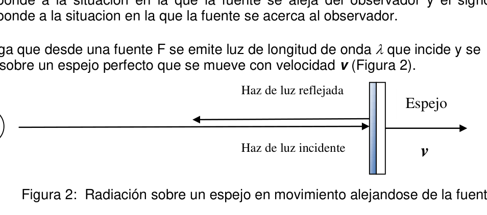
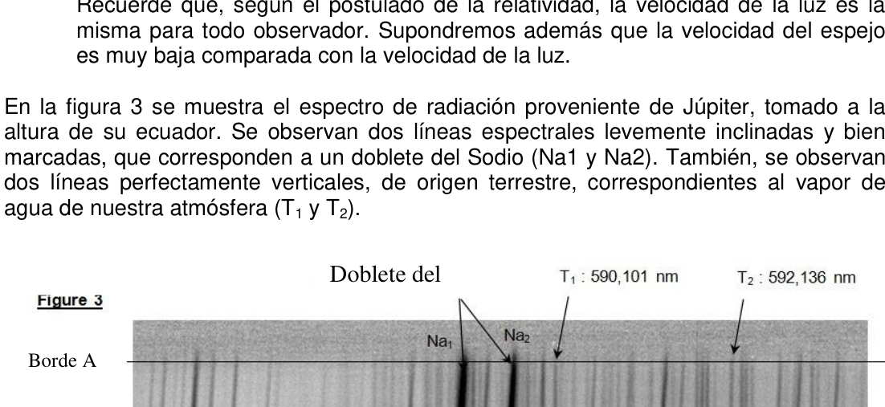
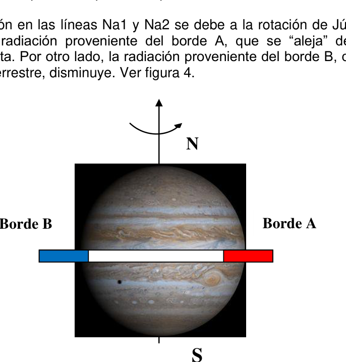
Topic: Gravitation, Astrophysics Metodi: Kepler’s Laws, Newton’s Law of Gravitation, Wave Equation Competenze: Physical Reasoning, Mathematical Modeling Objects: Planet, Star, Mirror Fonte: Testo (PDF) — p.5
Oposizione planetaria
Problema 3 Opposizione planetaria
Il 21 agosto scorso si è verificato un fenomeno astronomico che si è reso noto all’Università di San Francisco. La stampa come l’Eclipse del Secolo. Alcuni giornali hanno anche riferito che il peso di le persone sulla Terra sarebbero state colpite. Questa notizia ci ha fatto pensare:
- Facciamo un problema di astronomia e interazione gravitazionale?
In astronomia, si chiama Opposizione al fenomeno in cui due stelle si incontrano. si trovano, rispetto alla Terra, in due punti del cielo diametralmente opposti. La La figura 1 mostra Marte in opposizione al Sole.
Figura 1: Marte in opposizione al Sole
Nel corso di questo problema, faremo uso delle leggi di Kepler e della legge di Interazione gravitazionale di Newton. Le leggi di Kepler sono:
La prima legge Tutti i pianeti si muovono attorno al Sole descrivendo orbite elliptiche. Il Sole si trova in uno dei foci dell’ellipse.
Secondo legge La radio-vettrice che unisce un pianeta e il Sole spazia le stesse aree allo stesso tempo.
Terza legge Si realizza che per tutti i pianeti, il rapporto tra il periodo di rivoluzione al La quadrata e la semiezza maggiore dell’ellipse al cubo rimangono costanti. Questo è:
𝑇2 𝑎3 = 𝐶
P SO L Terra . Marte .
20 - OAF 2017 Dove T è il periodo orbitale (il tempo necessario per girare intorno al Sol), a è la distanza media del pianeta dal Sole e C la costante di Proporzionalità.
Nota: nel nostro problema, consideriamo che le orbite siano circolari e i foci di L’ellipse coincide con il centro del cerchio. E le orbite dei pianeti. Le parti considerate sono situate nello stesso piano.
Risolvi i seguenti punti:
a) Se l’ultima volta che Marte è stato in opposizione al sole, è avvenuto il 22 maggio di 2016, quando si verificherà la prossima opposizione al sole? b) Qual è il raggio di orbita del pianeta Marte? c) Qual è il peso sulla superficie di Marte di un astronauta che pesa sulla Terra? 700 N? (non tiene conto degli effetti dovuti alla rotazione dei pianeti sui loro aumenti di velocità di velocità di velocità di velocità di velocità di velocità di velocità di velocità di velocità di velocità di velocità di velocità di velocità di velocità di velocità di velocità di velocità di velocità di velocità di velocità di velocità di velocità di velocità di velocità di velocità di velocità di velocità di velocità di velocità di velocità di velocità di velocità di velocità di velocità di velocità di velocità di velocità di velocità di velocità di velocità di velocità di velocità di velocità di velocità di velocità di velocità di velocità di velocità di velocità di velocità di velocità di velocità di velocità di velocità di velocità di velocità di velocità di velocità di velocità di velocità di velocità di velocità di velocità di velocità di velocità di velocità di velocità di velocità di velocità di velocità di velocità di velocità di velocità di velocità di velocità di velocità di velocità di velocità di velocità di velocità di velocità di velocità di velocità di velocità di velocità di velocità di velocità di velocità di velocità di velocità di velocità di velocità di velocità di velocità di velocità di velocità di velocità di velocità di velocità di velocità di velocità di velocità di velocità di velocità di velocità di velocità di velocità di velocità di velocità di velocità di velocità di velocità di velocità di velocità di velocità di velocità di velocità di velocità di velocità di velocità di velocità di velocità di velocità di velocità di velocità di velocità di velocità di velocità di velocità di velocità di velocità di velocità di velocità di velocità di velocità di velocità di velocità di velocità di velocità di velocità di velocità di velocità di velocità di velocità di velocità di velocità di velocità di velocità di velocità di velocità di velocità di velocità di velocità di velocità di velocità di velocità di velocità di velocità di velocità di velocità di velocità di velocità di velocità di velocità di velocità di velocità di velocità di velocità di velocità di veloc
Supponiamo che Marte sia in opposizione al sole, l’astronauta si trovi al punto. P della figura 1. d) Qual è il cambiamento di peso che si prova a causa della massima vicinanza? della Terra rispetto a Marte?
Giove, il pianeta più grande del nostro sistema solare, è un pianeta gassoso. Il suo periodo di La rotazione, intorno al suo asse, è la più piccola di tutte quelle corrispondenti ai pianeti. di un’area del sistema solare (meno di 10 ore). Si deve chiarire che, essendo gassoso, ha diverse velocità a diverse latitudini.
D’altra parte, lo spettro di radiazioni provenienti da Giove, che raggiunge la Terra, è praticamente identico al Sole, cioè funziona come uno specchio rotante per la luce.
- Il sole. Ogni 13 mesi Giove si trova in opposizione al Sole, che è un buon La velocità di raggiungimento di un’onda di velocità è determinata da un’onda di velocità di raggiungimento di una velocità di velocità di velocità di velocità. rotazione.
Per effettuare le misurazioni della velocità di rotazione di Giove, si utilizza l’effetto Doppler; cioè la variazione della lunghezza d’onda a causa del movimento della fonte.
Se una fonte che emette a una lunghezza d’onda λ si sposta a velocità v la
L’ osservatore a riposo si comporterà con la lunghezza d’ onda che percepisce
Δ𝜆
𝜆= ± 𝑣
𝑐 (1)
dove Δλ= λ ́ − λ è la velocità della lunghezza d’onda, c è la velocità della luce e
λ è la lunghezza d’onda della radiazione misurata in un laboratorio a riposo. Il segno (+)
corrisponde alla situazione in cui la fonte si allontana dall’osservatore e il segno (−)
corrisponde alla situazione in cui la fonte si avvicina all’osservatore.
Supponiamo che da una fonte F venga emessa luce a lunghezza d’onda che incide e si riflette su uno specchio perfetto che si muove a velocità v (Figura 2).
Figura 2: Radiazione su uno specchio in movimento allontanandosi dalla fonte. v Specchio Fa’ la luce incidente. Fate luce riflessa F
OAF 2017 - 21 Considerando che il movimento dello specchio è lungo la direzione x e l’incidenza Il raggio è normale al stesso:
(e) calcolare la variazione della lunghezza d’onda (Δλ) della radiazione, quando si riflette nel specchio in movimento.
Ricordate che, secondo il postulato della relatività, la velocità della luce è la velocità della luce. per ogni osservatore. Supponiamo inoltre che la velocità dello specchio E’ molto bassa rispetto alla velocità della luce.
La figura 3 mostra lo spettro di radiazioni provenienti da Giove, preso a alti dell’equatore. Si osservano due linee spettrali leggermente inclinate e ben di cui sopra: Anche, si osservano. due linee perfettamente verticali, di origine terrestre, corrispondenti al vapore di L’acqua della nostra atmosfera (T1 e T2).
Figura 3: Spettro del pianeta Giove a quota dell’equatore
La lieve inclinazione sulle linee Na1 e Na2 è dovuta alla rotazione di Giove. L’altezza di onde di radiazione provenienti dal bordo A, che si “allontanano” da un osservatore Terra, cresce. Dall’altro lato, la radiazione proveniente dal bordo B, che si avvicina un osservatore terrestre, diminuisce. Vedi figura 4.
Figura 4: Rappresentazione schematica della spazia dello spettometro che punta al Equatore di Giove.
L’ a S N Borda B
L’ a Ecuador Borda B Due volte più
22 - OAF 2017 Considerando che il punto (e) precedente ha calcolato che Le linee del doppio di sodio hanno una lunghezza d’onda λNa1 = 588.995 nm e λNa2 = 589.592 nm e che la differenza di lunghezza d’onda tra la radiazione proveniente dal L’orlo A e l’orlo B, per entrambe le linee, sono 8,96 10-2 nm:
f) determinare la velocità di rotazione di Giove.
Per risolvere questo punto può essere utile anche l’espressione (1).
Dati utili per il problema
Massa di Marte: 6,39 × 1023 kg Periodo orbitale di Marte: 687 giorni Periodo orbitale della Terra: 365 giorni Massa terrestre: 5,972 × 1024 kg Massa del Sole: 1,989 × 1030 kg Radiosfera della Terra: 6371 km Radio di Marte: 3390 km Velocità della luce: 300000 km s-1 Costante universale di gravità: G=6.674 x 10−11 𝑁𝑚2 𝑘𝑔2
Prova sperimentale - Livello 2
Interferenza da una doppia rendija Obiettivo generale Verificare sperimentalmente la natura ondulatoria della luce mediante l’osservazione di interferenza generata da una doppia spazia.
Introduzione Nel 1801 Thomas Young eseguì un esperimento di ottica, il cui risultato è solo possibile. La luce si comporta come un’onda, al contrario della luce. La teoria tradizionale che sosteneva che la luce fosse costituita da un flusso di fine particelle. Per eseguire l’esperimento, Young utilizzò una fonte di luce monocromatica, cioè di un colore unico e determinato. Alla luce proveniente da questa fonte, ha fatto incidere su una una lamina non trasparente che aveva una scia sottile, l’unico posto dove poteva passare. la luce. Dopo aver attraversato questa spazia, la luce si è incentrata su un’altra lamina non trasparente. che aveva due sottili spazzature molto vicine, come si vede nella figura.
- Grande fu la sorpresa di Young quando osservò che la luce catturata su una la luce che “emanò” dalle due spaccature, produceva un modello di strisce. luminosi e scuri.
Figura 1 Strisce lucide Strisce scure Scattoli Laminata con una .
- La spaccatura L’ lamina con due
- Le scintille Fonte di luce
OAF 2017 - 23 Interpretazione Per interpretare questi risultati, Young ha dovuto supporre un comportamento ondulazione della luce: La luce si comporta come un’onda, la cui lunghezza d’onda associata è è legato al colore della luce osservata. Cioè, il colore rosso ha un lunghezza d’onda diversa da quella del giallo o del verde. La luce emerge dalle spacie come onde cilindriche, cioè ha frunti di L’aumento della capacità di trasmissione è stato determinato in base alle seguenti caratteristiche: I frunti d’onda che incidono sulla lamina con la doppia spazia emergono con la stessa fase, cioè: le onde sono coerenti. Le differenze di fase tra due onde sono correlate alla differenza tra Le distanze che hanno percorso. Le onde che “partono” da ogni spaccatura della seconda lamina (doppio spaccatura) si spostano a diverse distanze fino a raggiungere i punti sullo schermo, quindi che arrivano a ogni punto con diverse fasi. Quando si superponono, cioè quando si sommano onde con diverse fasi si produce un modello di interferenza (modello di strisce luminose e scure).
Analisi La figura 2 mostra schematicamente la disposizione geometrica dell’esperimento e La differenza Δ tra le distanze percorse dai frunti d’onda fino a raggiungere un punto di uno schermo molto lontano.
Figura 2 Δ d
Zona ampliata Raggi quasi paralleli Δ
d
24 - OAF 2017 La condizione di distanza è necessaria per trattare i raggi che raggiungono lo schermo. Come raggi quasi paralleli e facilitare i calcoli matematici. Così, si può considerare che la differenza di “corso percorso” Δ tra i raggi che emergono da una spaccatura e quelli che emergono dall’altra spaccatura sono: Δ = dsin θ Dove d è la distanza di separazione tra le spazzature e θ è l’angolo che posiziona al punto considerato sullo schermo. Per non dover mettere uno schermo lontano, si usa di solito un lente “sottile” mediante che permette di far convergere i raggi paralleli nel foco di questa stessa luce, dove si trova lo schermo. O fare questo esperimento usando il nostro occhio, il sistema — cornea — “Cristallino” come lente e la nostra retina come schermo. Se mettiamo il doppio slitto molto vicino al nostro occhio, possiamo schematizzare la situazione come mostrato in Figura 3
Come indicato in figura 3 si vedranno i
- Ragazzi che raggiungono La nostra . retina, Come provenienti da strisce luminose situate nel lo stesso piano in cui si trova la fonte di luce. Ad esempio, sembreranno “provengono” dal punto P situato a distanza e dall’asse orizzontale e sul piano in cui si trova la fonte luminosa e con un’inclinazione θ. Se l’angolo θ è piccolo (meno di 15°) si può considerare: Δdtgθ d e 𝐷
In questo caso, considerando la differenza di Il percorso “corso” dei raggi originari di
Patrono di strisce visualizato
Figura 3 θ 𝐷 𝑦 Retina Cornea-Cristalino P’ Fonte di luce Patrono di strisce visualizzato Occhio
OAF 2017 - 25 La posizione delle regioni luminose (massimo di interferenza) sarà data da: 𝑦𝑚= 𝑚 𝜆 𝐷 𝑑 dove λ è la lunghezza d’onda della luce che incide sulla doppia spazia e m è il numero di ordine massimo considerato. Questo è: m=0 (centrale e coincidente con fonte di luce), m= ±1 (prime strisce: a destra e a sinistra della centrale), m= ±2 (secondi fasce) e così via.
Nota: L’analisi non ha preso in considerazione il fenomeno di difrazione, che La luce di questa luce è molto più intensa che la luce di questa luce. La maggior parte dei prodotti di cui trattasi è destinata a essere utilizzata per la produzione di prodotti di base.
Proposta sperimentale
Elementi disponibili
Slide con doppia spaccatura. È stata scritta la separazione tra le prime. doppia spazia d1 e larghezza delle spazia a1 e, anche la separazione tra le secondo doppio di rotture d2 e larghezza di rotture a2. Slide INCONONITA Non sono registrati dati.
Dispositivo a batteria, con tre fonti di luce (rosso, verde e blu) con sistema per controllare l’intensità della luce, accesa e spenta. Con regola incorporata. Nota: la luce verde non sarà utilizzata in questa pratica; se hai problemi per riconoscere i colori: chiama il bedel.
Due “chinettoni” da posizionare sopra la regola incorporata nella fonte di luce.
Tavola con piede e rotture per individuare il dispositivo di luce.
Porta diapositive adattate alla tabella fornita.
Nota: quando non si effettuano le misure, spegnere la fonte di luce (spegni il
- il interruttore in off.
Regola incorporata Slide con doppi
- Le scintille Interruttori Piede mobile, regolabile Controllo dell’intensità Cavalieri Scratche predefinite per posizionare la fonte di luce Fonte di luce Equipaggiamento armato
26 - OAF 2017 Obiettivo sperimentale: Realizzare le misurazioni necessarie per determinare la lunghezza d’onda di una fonte di la luce proveniente dal fenomeno di interferenza, utilizzando il dispositivo fornito e tenendo in il numero di configurazioni descritto in figura 3.
Sviluppo delle misure:
-
Armati il dispositivo sul tavolo di lavoro.
-
Misurare le distanze (Di) previste nell’apparecchio tra la diapositiva (dobbia spazia) e la fonte della luce.
Accendi la luce RED e osserva il modello di interferenza prodotto dalla doppia spazia. A causa del fenomeno di diffrazione, l’intensità delle strisce di luce diminuisce a partire dal Il valore di riferimento è il valore di riferimento di un valore di riferimento. Zero su mmax .
Utilizzando il doppio slot 1 (d1 = 0,13 mm) e il doppio slot 2 (d2 = 0,065 mm)
-
Identifica il valore massimo di m (mmax) e misura la distanza tra le strisce corrispondenti a −mmax e mmax (∆y max).
-
Determina la distanza tra i massimi −m e m (∆ym= ym−y−m) e meno per 3 valori di m (inclusi la distanza corrispondente a mmax) per Ogni posizione diede la fonte di luce.
Presenta i risultati in una tabella (TABELLA 1) e somma il valore di x definito da: 𝑥= 𝑚 𝐷𝑖 𝑑𝑖
Modello di tabella suggerito. 𝑑𝑖 𝐷𝑖 𝑚 ∆𝑦𝑚 𝑥
Nota: confezionare la tabella con le righe che ritieni necessarie. Ricordate di consigliare. le circostanze di cui trattasi.
-
Basandosi sui dati raccolti in TABELLA 1, confezionate un grafico (Grafico 1) ∆ym in funzione di x.
-
Aggiusta i punti del grafico 1 con una retta e determina la pendenza di
- La stessa.
-
Dal valore della pendenza, determinare la lunghezza d’onda λ corrispondente al colore RED ( λR).
-
Determina la separazione tra le spazi della diapositiva denominata INCONO (dIR).
-
Ripeti gli incisioni 3 e 4 utilizzando la luce blu.
Presenta i risultati in una tabella (tabella 2)
- Basandosi sui dati raccolti in TABELLA 2, confezionate un grafico (FRAGICO 2) ∆ym versus x.
OAF 2017 - 27 18) Aggiusta i punti del grafico 2 con una retta e determina la pendenza di quella stessa.
-
Dal valore della pendenza, determinare la lunghezza d’onda λ corrispondente al colore AZUL ( λA).
-
Determina la separazione tra le spazzature del dispositivo denominato INCONOGNITA (dIA).
Confronta i valori ottenuti da DIR e DIA . Dici quale è il più preciso e se sono indistinguibilmente.
28 - OAF 2017
OAF 2017 - 29 Prove preliminari
Primo test preparatorio: meccanica
Problema teorico 1.
Da un rubinetto cadono gocce d’acqua, di uguale massa, a uguali intervalli di tempo. Quando una certa goccia d’acqua (goccia A1) inizia la sua caduta libera, la goccia precedente (Gatto A) è già scesa di 0,3 m. Supponi sconsiderato il frattura delle gocce con l’aria. Considera g = 10 m/s2.
a) Scrivi la funzione di posizione della goccia A. Considera come istante iniziale (t=0) Appena la goccia A inizia a cadere. b) Quanto tempo dopo che la goccia A è uscita dal rubinetto, la goccia A1 lo fa? c) Scrivi la funzione di posizione della goccia A1. d) Quando la distanza tra A e A1 è di 0,9 m: che tempo è passato da quando E’ uscita la goccia A del rubinetto? e) Dove si trovano, rispetto al rubinetto, le gocce A e A1 nel tempo calcolato nel punto precedente?
Problema teorico 2.
La figura mostra l’energia potenziale V(x) di un corpo di 3 Kg di massa, che fa un movimento unidimensional. Il corpo si muove inizialmente in direzione crescente della coordinata x (a sinistra a destra del grafico) partendo da x = 0. Considera g = 10 m/s2.
30 - OAF 2017 Se l’energia totale del corpo è di 30 J e non ci sono forze dissipatrici che agiscono sul corpo
- Proprio: a) Qual è la velocità del corpo nell’intervallo [0 - 2] m? b) Qual è la velocità del corpo in x = 7 m? c) Qual è la posizione più lontana che il corpo raggiungerà rispetto all’origine? Questa posizione è un punto di ritorno. d) Passando per x = 10 m, il corpo perde improvvisamente 9 J di energia. Descrivi e giustifica il movimento che il corpo farà. Se l’energia totale del corpo è ancora 30 J, ma ora tra x = 0 m e x = 20 m esiste una forza di rottura tale che il corpo perde energia a un tasso di 2 J/m: e) Qual è il punto di ritorno del corpo?
Problema teorico 3.
Considerate il sistema di corpi mostrato nella figura seguente.
In questo sistema: • tra i corpi A e B vi è una forza di frizione. la superficie orizzontale e le pole non hanno frizione; le corde sono Considerate senza massa e inespandibili. • i corpi sono a riposo. considerare g = 10 m/s2
a) Disegna un diagramma di corpo isolato per ogni corpo. b) Determina il valore minimo del coefficiente di attrito statico, in modo che i i corpi restano a riposo. c) Trova la tensione (T1 e T2) sulle corde 1 e 2.
Problema sperimentale. Obiettivo: Determinare il coefficiente di rasatura statica tra un pezzo di legno e
- Un tavolo. Breve descrizione: la maggior parte delle superfici, anche quelle considerate pulite, sono estremamente rugose su scala microscopica. Questo è evidente quando si esercita. una forza per muovere un corpo: è possibile notare un’opposizione al movimento relativo tra le due superfici. Se il corpo è inizialmente a riposo e si aumenta gradualmente la forza che esercitando su di lui, vediamo che tale corpo continuerà a riposare fino a quando la L’intensità della forza che eserciti supera un limite, quindi il corpo Comincerà a muoversi.
OAF 2017 - 31 La forza che esercita la superficie, e che si oppone al movimento del corpo che è in La forza di riposo è chiamata forza di rasatura statica. Il valore massimo di questa forza è proporzionale al modulo della forza normale esercitata sulla superficie. La costante di proporzionalità (μe) tra le due forze, dipende dai materiali e dalle caratteristiche delle superfici in contatto. N F e Massimo rassi
Montaggio sperimentale
Elementi necessari
- Un pezzo di legno.
- Vaso di plastica.
- Pese o sistema di sostituzione: come essere noci, un contenitore contenente acqua (-“graduata” o graduabile mediante un’irrigazione graduata).
- Sbalzo di cucina
- Seringa ipodermica.
- Felli di cotone o di piselli
- Fraglio di filo (malleabile)
- Una sorbetta .
- Fascia adesiva
- Le maniche.
- Martello .
Sviluppo dell’esperimento:
- Su due facce opposte del pezzo di legno chiave le tazze, come si indica in figura 2, a una altezza della base dell’ordine di diametro della sorbetta. Figura 1
32 - OAF 2017
Figura 2
- Attaccare a ciascuna cucchiaio un pezzo di filo di cotone di circa 15 cm di larghezza
- Molto lungo.
- Alla fine di uno dei fili, metti un gancio fatto con il filo.
- Chiudi una chiave sul tavolo di legno e attacca lì l’altra punta del filo (vedi Figura 1).
- Sul bordo del tavolo e con l’aiuto del nastro, attacca la sorbetta.
- Disponi il sistema come mostrato in figura 1 e inserisci il vaso di plastica sul pezzo di legno.
- Con l’aiuto della bilancia determina il peso dei pesi o sistema di sostituzione.
- Utilizzare la siringa per aggiungere acqua al bicchiere di plastica (considerare la densità di acqua pari a 1 g/cm3.
Consigni: a) Misura la forza massima necessaria per rendere il sistema ― corpo in legno + vaso con l’acqua, comincia a muoversi. Fate questo per diverse masse d’ acqua (al
- 10 meno). Costruisci una tavola. Suggerimento: Inizia con 10 cm3 di acqua nel bicchiere e metti un pesce. sul supporto del filo, fino a quando il corpo inizia a muoversi da una posizione determinata (indicata in precedenza sulla tabella). Incremento di 10 cm3 di acqua. b) Grafica la massa dei pesi vs. la massa dell’acqua. (c) Nel grafico del punto precedente, regolare una retta e determinare il valore di coefficiente di rottura statico. d) Spiegare perché la linea deve avere un ordine all’origine.
Secondo test preparatorio: Termodinamica, elettricità e magnetismo
Problema teorico 1.
Il Primo Principio della Termodinamica postula che l’energia sia conservata; cioè, in Qualsiasi processo termodinamico, energia meccanica, elettrica, magnetica o di Qualsiasi altra natura, si trasforma in energia interna del sistema o in calore, essendo l’ultima energia che fluisce da un corpo all’altro.
Considerando questo principio, considera il seguente problema.
Un cantimplora di alluminio adiabatico, di massa di 500 g, contiene 750 g di acqua e 100 grammi di ghiaccio, il sistema, è in equilibrio termico. Si lascia cadere la cantimplora da un pallone aereo, che si trova ad una certa altezza. sopra la superficie terrestre. Dopo che la cantimplora colpisce la
OAF 2017 - 33 La temperatura del sistema risultante è 25°C, trovandosi nella stessa equilibrio termico. Supponiamo che il ruggine dell’aria sia sconsiderato.
a) Se durante l’impatto non viene trasferita energia al suolo, qual è la velocità di La cantimplora appena prima di colpire la terra?
b) Se la velocità iniziale della cantimplora è pari a 0: calcola a che altezza si trova il globo, nel momento in cui lancia la cantimplora.
Datati: Calore specifico dell’alluminio: 0,21 cal/g °C Calore specifico dell’acqua: 1 cal/g °C Calore latente di fusione del ghiaccio: 79,7 cal/g L’equivalente meccanico del calore è: 4.186 J = 1 cal.
Problema teorico 2.
Un motore elettrico a corrente continua di 24 V, raggiunge la sua velocità massima (1450 -RPM-), quando si circola attraverso di esso un corrente di 36 A. Considera che c’ è un rapporto lineare tra il numero di RPM e il corrente circolante
- Per il motore. Si desidera controllare la velocità del motore con un insieme di resistenze non superiore a tre, posizionate in parallelo; i valori di tali resistenze sono in un range de 0,5 a 1. Nel circuito si possono usare chiavi che permettono al corrente di circolare per le diverse resistenze.
a) Propone circuiti adeguati per far funzionare il motore a metà della sua velocità. velocità massima e a un terzo di quella velocità.
b) Determina quale potenza si dissipe in ciascuna resistenza, quando l’asse il motore gira a un terzo della sua velocità massima.
c) Qual è la massima torsione che questo motore può fornire?
Problema teorico 3.
Una campana da immersione in forma cilindrica, con una altezza di 2,50 m e un diametro di 1 m, è chiusa in alto e aperta in basso. La campana scende dalla superficie dell’oceano (dove l’aria è a una pressione di 1 atm e a una temperatura di 20°C) all’acqua di mare. La campana scende fino a una profondità, misurata dal fondo della campana, di 82,3 m. A quel punto, la la temperatura dell’acqua è 4°C e la campana è in equilibrio termico con l’acqua. Supponiamo che l’aria sia un gas ideale.
a) Determina il numero di molli d’aria all’interno della campana.
34 - OAF 2017 b) A profondità raggiunta: quanto aumenterà il livello dell’acqua all’interno della
- La campana?
c) Calcolare la pressione minima necessaria dell’aria all’interno della campana per estrarre il acqua che è entrata.
Datati: Densità dell’acqua di mare ρ= 1,025 g cm−3 1 atm = 1,01325 × 105Pa
Problema sperimentale.
Tensione superficiale
Le forze di coesione tra le molecole di un liquido sono responsabili della fenomeno noto come tensione superficiale. In un’interfaccia liquido-gas, le molecole del liquido che sono proprio sulla superficie sentono forze verso i lati (in direzioni tangenti all’interfaccia) e verso il seno del liquido, ma non fuori di esso. Il risultato è che le molecole che si che si trovano sulla superficie sono attirati verso l’interno di esso.
Per determinare il coefficiente di tensione superficiale si può usare il Tensimetro di Lecomte du Noüy. Questo tensiometro, che viene schematizzato nella figura, è costituito da un anello. Sospeso da una bilancia. Immergendo l’anello in un liquido, si può misurare la forza. DF necessaria da esercitare sull’anello, proprio quando la La lamina di liquido si sta rompendo. La tensione superficiale del liquido () è determinata a partire dal raggio R del anello e dal valore di forza ΔF mediante, 𝛾= Δ𝐹 2 2𝜋𝑅
Elementi disponibili
- Ricevente
- Cable, filo, cavo
- Un palla di gelato .
- Regola .
- Pinza, taglia
- Plastici .
OAF 2017 - 35
- Acqua .
- Detergente .
- Balance di uso comune
Attività a) Costruire un tensiometro con gli elementi disponibili.
b) Misura la tensione superficiale dell’acqua e di una miscela di acqua con detergente.
36 - OAF 2017
OAF 2017 - 37 I servizi locali
Problemi teorici
Topic: Gravitation, Astrophysics Metodi: Kepler’s Laws, Newton’s Law of Gravitation, Wave Equation Competenze: Physical Reasoning, Mathematical Modeling Objects: Planet, Star, Mirror Fonte: Testo (PDF) — p.5
The Commission has also adopted a proposal for a regulation on the protection of the environment.
Problem three . Planetary Opposition
On 21 August last, an astronomical phenomenon occurred which was reported in the Press such as the “Eclipse of the Century”. Some newspapers even reported that the weight of people on Earth would be affected. This news made us think, “What if? We’re going to do an astronomy and gravitational interaction problem?
In astronomy, it is called Opposition to the phenomenon in which two stars are They are located, relative to the Earth, at two diametrically opposite points in the sky. La Figure 1 shows Mars as opposed to the Sun.
Figure 1: Mars in opposition to the Sun
Throughout this problem, we’ll use Kepler’s laws and Kepler’s law. Newton’s gravitational interaction. Kepler’s laws are
First law All the planets move around the Sun describing elliptical orbits. The Sun is at one of the focuses of the ellipse.
Second law The vector radius that connects a planet to the Sun crosses the same areas at the same time.
Third Law It is true that for all planets, the ratio between the period of revolution to the square and the major semicircle of the ellipse to the cube remains constant. This is:
𝑇2 𝑎3 = 𝐶
P SO L Earth . Mars .
The Commission shall adopt delegated acts in accordance with Article 21 of Regulation (EU) No 1095/2017. Where T is the orbital period (the time it takes to go around the Sun), a is the mean distance of the planet from the Sun and C is the constant of the Commission’s proposal.
Note: in our problem, we will consider that the orbits are circular and the focuses of The ellipse coincides with the center of the circle. In addition to the orbits of the planets The two are located on the same plane.
Resolve the following points:
(a) If the last time Mars was in opposition to the sun, it happened on May 22nd of 2016, when will the next Opposition to the Sun occur? (b) What is the radius of orbit of the planet Mars? (c) What is the weight on the surface of Mars of an astronaut who weighs on Earth? 700 N? (does not take into account effects due to the rotation of the planets on their own axes).
Suppose that, with Mars in opposition to the sun, the astronaut is at the point. P of Figure 1. (d) What is the change in weight you experience due to the maximum proximity? Earth’s relationship to Mars?
Jupiter, the largest planet in our solar system, is a gas planet. Its period of rotation, around its axis, is the smallest of all the corresponding planets. the solar system (less than 10 hs). It should be clarified that, being gaseous, it has different speeds at different latitudes.
On the other hand, the spectrum of radiation coming from Jupiter, reaching Earth, is It’s almost identical to the sun; that is, it works like a “rotating mirror” for light. The sun. Every thirteen months Jupiter is in opposition to the Sun, which is a good thing. The first is the use of the electrical system to measure the speed of the electrical system. rotation.
To measure the rotational speed of Jupiter, the effect Doppler; that is, the variation in wavelength due to the motion of the source.
If a source emitting at a wavelength λ moves at a speed v the
The wavelength perceived by a resting observer shall meet
Δ𝜆
𝜆= ± 𝑣
𝑐 (1)
where Δλ= λ ́ − λ is the wavelength velocity, c is the speed of light and
λ is the radiation wavelength measured in a resting laboratory. The sign (+)
corresponds to the situation in which the source moves away from the observer and the sign (−)
The source is the observer’s approach.
Suppose from a source F, wavelength light is emitted which incides and is reflects on a perfect mirror that moves at v speed (Figure 2).
Figure 2: Radiation on a moving mirror moving away from the source. v Mirror . Make the light incidental . Make it a reflected light . F
The Commission shall adopt delegated acts in accordance with Article 21 of the Financial Regulation. Considering that the motion of the mirror is along the x-direction and the incidence The lightning is normal to the same:
(e) calculate the variation in the wavelength (Δλ) of the radiation, reflected in the moving mirror.
Remember, according to the relativity postulate, the speed of light is It’s the same for every observer. We’ll also assume that the speed of the mirror is It’s very low compared to the speed of light.
Figure 3 shows the spectrum of radiation from Jupiter taken from the Height of its equator. Two slightly inclined and well-defined spectral lines are observed. marked, which correspond to a double of sodium (Na1 and Na2). Also, they’re observed. two perfectly vertical lines of terrestrial origin corresponding to the steam of water from our atmosphere (T1 and T2).
Figure 3: Spectrum of the planet Jupiter taken at the height of its equator
The slight tilt on the Na1 and Na2 lines is due to Jupiter’s rotation. Length radiation wave from the A-border, which is “away” from an observer Earth, it’s increasing. On the other hand, radiation from the B edge, which is “close” to the A ground observer, it decreases. See figure 4.
Figure 4: Schematic representation of the spectrometer slit pointing to Jupiter’s equator.
The edge of the A S N B-side
The edge of the A Ecuador B-side Double the
The Commission shall adopt delegated acts in accordance with Article 22 of the Financial Regulation. Having regard to the calculation in point (e) above and having regard to the determination that The lines of the sodium double have a wavelength λNa1 = 588.995 nm and λNa2 = The difference in wavelength between the radiation coming from the edge A and the one from edge B, for both lines, is 8,96 10-2 nm:
(f) determine the rotational speed of Jupiter.
The following expression may also be useful in solving this point:
Data useful for the problem
The mass of Mars: 6,39 × 1023 kg Mars orbital period: 687 days Earth’s orbital period: 365 days The mass of the Earth: 5,972 × 1024 kg The mass of the Sun: 1,989 × 1030 kg Radius of the Earth: 6371 km Radio of Mars: 3390 km The speed of light: 300000 km s-1 Universal gravity constant: G = 6,674 x 10−11 𝑁𝑚2 𝑘𝑔2
The following is the list of the types of tests:
Interference by a Double Rendija General objective Experimentally verify the wavy nature of light by observation the interference pattern generated by a double slit.
The first is the introduction. In 1801 Thomas Young conducted an experiment in optics, the result of which can only be The reason for this is that light behaves as a wave, as opposed to light. The traditional theory that light was made up of a fine stream of light. particles. To perform the experiment, Young used a monochrome light source, that is, from a single, determined color. The light from this source made her focus on a The non-transparent sheet that had a thin cleft, the only place he could pass through. The light. After passing through this crack, the light struck another opaque sheet. It had two thin, very close slits, as shown in Figure 1.
- Great was Young’s surprise when he noticed that light captured on a screen, this is the light that “emitted” from the two slits, producing a pattern of stripes. bright and dark.
Figure 1 Bright stripes . Dark stripes . Screen Laminate with a . The gap Laminate with two .
- I ‘m not . Light source
The Commission shall adopt implementing acts in accordance with Article 21 of the Financial Regulation. Interpretation of the text To interpret these results, Young had to assume a behavior. The light wavelength: Light behaves like a wave, whose associated wavelength is It’s related to the color of the light we see. I mean, the red color has a The wavelength is different from that of yellow or green. Light emerges from the gaps as cylindrical waves, that is, it has fronts of The following is the list of the types of electrical power generated by the electrical system: The wavefronts that impact the sheet with the double-slit emerge with The same phase, that is, the waves are consistent. The phase differences between two waves are related to the difference between the distances they’ve traveled. The waves that “break” from each slit of the second sheet (double slit) They travel different distances to reach the points on the screen, so They come to each point with different phases. When superimposed, i.e. when waves with different phases add up, a interference pattern (bright and dark band pattern).
Analysis of the data Figure 2 shows the geometric arrangement of the experiment and The difference Δ between the distances travelled by the wavefronts to reach a point of a very distant screen.
Figure 2 Δ d
Enlarged area Almost parallel beams Δ
d
The Commission shall adopt implementing acts in accordance with Article 21 of the Financial Regulation. The condition of very distant is necessary to treat the rays reaching the screen. Like almost parallel beams and make mathematical calculations easier. So, you can consider that the difference in “pathway” Δ between the rays emerging from a crack and Those that emerge from the other slit are: Δ = dsin θ Where d is the distance between the gaps and θ is the angle that it positions the point considered on the screen. To avoid having to put a remote screen, a thin lens is usually used, using a thin lens. which is where the parallel rays converge at the focus of the same, where the screen is located. Or do this experiment using our eye, system — the cornea — “crystalline” as a lens and our retina as a screen. If we put the double-slit Very close to our eye, we can sketch the situation as shown in the Figure 3 is shown.
As shown in Figure 3 the
- What ? That They reach Our . retina, How from bright bands located in the the same plane where the source of Light. For example, they will appear to be “coming” from the point P located at a distance and on the horizontal axis and above the plane where the light source is located and with a slope θ. If the angle θ is small (less than 15o) it is may consider: Ddtgθ d and 𝐷
In this case, considering the difference of The path ― traversed ― by the rays originating in
Pattern of stripes displayed
Figure 3 θ 𝐷 𝑦 Retina Cornea- crystalline P’ Light source Pattern of stripes displayed Eye .
The Commission shall adopt delegated acts in accordance with Article 21 of the Financial Regulation. The position of the bright regions (maximum (i) the amount of the aid shall be calculated as follows: 𝑦𝑚= 𝑚 𝜆 𝐷 𝑑 where λ is the wavelength of light that hits the double-slit and m is the the maximum order number considered. This is: m=0 (central and corresponding to the light source), m= ±1 (first stripes: to the right and left of the centre), m= ±2 (seconds) and so on.
Note: The analysis did not consider the diffraction phenomenon, which The intensity of the bright regions is not the same and it is The number of the maximum considered shall be increased.
Experimental proposal
Available items
Slides with double slits. The separation between the former has been written. double cleavage d1 and the width of the cleavages a1 and, also the separation between the second double slits d2 and the width of the slits a2. On the slide. NO data is recorded.
Battery device with three light sources (red, green and blue) with system for control the intensity of the light, on and off. With a built-in rule. Notes: the green light will NOT be used in this practice; if you have problems To recognize colors: call the bedel.
Two “knuckles” to be placed over the rule incorporated into the light source.
Table with foot and slots to locate the lighting device.
Slide port adapted to the provided table.
Note: when not measuring, turn off the light source (set the switch in off).
Embedded rule Slide with doubles
- I ‘m not . The switches Moveable foot, adjustable Control of intensity Horsemen Defaulted slots for Position the light source Light source Armed team .
The Commission shall adopt delegated acts in accordance with Article 21 of this Regulation. The experimental objective: Perform the measurements necessary to determine the wavelength of a source of light from the interference phenomenon, using the provided device and having in The configuration described in Figure 3 is calculated.
Development of measurements:
-
Arming the device on the work table.
-
Measure the distance (Di) between the slide (double slit) and the source of light.
Turn on the RED light and observe the interference pattern produced by the double-slit. Due to the diffraction phenomenon, the intensity of the light bands decreases from the The average value of the value of the product is the value of the product. Zero on mmax .
Using the double slot 1 (d1 = 0,13 mm) and the double slot 2 (d2 = 0,065 mm)
-
Identify the maximum m value (mmax) and measure the distance between the bands The following is the list of the values of the values of the values of the values of the values of the values of the values of the values of the values of the values of the values of the values of the values of the values of the values of the values of the values of the values of the values of the values of the values of the values of the values of the values of the values of the values of the values of the values of the values of the values of the values of the values of the values of the values of the values of the values of the values of the values of the values of the values of the values of the values of the values of the values of the values of the values of the values of the values of the values of the values of the values of the values of the values of the values of the values of the values of the values of the values of the values of the values of the values of the values of the values of the values of the values of the values of the values of the values of the values of the values of the values of the values of the values of the values of the values of the values of the values of the values of the values of the values of the values of the values of the values of the values of the values of the values of the values of the values of the values of the values of the values of the values of the values of the values of the values of the values of the values of the values of the values of the values of the values of the values of the values of the values of the values of the values of the values of the values of the values of the values of the values of the values of the values of the values of the values of the values of the values of the values of the values of the values of the values of the values of the values of the values of the values of the values of the values of the values of the first of the respective values of the first of the values of the first of the first of the first of the first of those values of the first of those values of the first of the first of those values of the first of those values of the first of those values of the first of the first of those values of the first of those values of the first of those values of those values of those values of the first of those values of the first - - - - - - - - - - - - - - - - - - - - - - - - - - - - - - -
-
Determine the distance between the maximum −m and m (∆ym= ym−y−m) to minus 3 values of m (including the distance to mmax) for Each of the positions is given the light source.
Present the results in a table (TABLE 1) and add the value of x defined by: 𝑥= 𝑚 𝐷𝑖 𝑑𝑖
Suggested table model. 𝑑𝑖 𝐷𝑖 𝑚 ∆𝑦𝑚 𝑥
Note: Make the TABLE with the rows you deem necessary. Remember to record . the relevant uncertainties.
-
Draw up a graph from the data collected in TABLE 1. (Graph 1) ∆ym as a function of x.
-
Adjust the points of GRAFICO 1 by a straight line and determine the slope of the The same.
-
From the slope value, determine the wavelength λ corresponding to the colour RED ( λR).
-
Determine the separation between the slits of the designated slide The Commission has not yet decided on the application of this Regulation.
-
Repeat paragraphs 3 and 4 using the BLUE light.
Present the results in a table (TABLE 2)
- Draw a graph from the data collected in TABLE 2. (Graph 2) ∆ym versus x.
The Commission shall adopt delegated acts in accordance with Article 21 of the Financial Regulation. 18) Adjust the points of GRAFICO 2 by a straight line and determine the slope of the same.
-
From the slope value, determine the wavelength λ corresponding to the colour BLUE ( λA).
-
Determine the separation between the slots of the device called The following is the list of the official languages of the European Union:
Compare the values obtained from DIR and DIA . Tell me which one is more accurate and if they are . They are indistinguishable.
The Commission shall adopt delegated acts in accordance with Article 21 of this Regulation.
The Commission shall adopt implementing acts in accordance with Article 21 of the Financial Regulation. Preparatory tests
First Preparatory Test: Mechanics
Theoretical problem one.
From a tap, droplets of water fall, of equal mass, at equal intervals of time. When a certain drop of water (drop A1) begins its free fall, the previous drop (A) has already dropped 0.3 m. Assume the rubbing of the drops with the air is despicable. Consider g = 10 m/s2.
(a) Write the position function of drop A. Consider as the initial instance (t=0) The moment the A drop starts to fall. (b) How long after the drop A has left the tap does the drop A1? (c) Write the position function of droplet A1. (d) When the distance between A and A1 is 0.9 m: how long has it been since Did the A drop come out of the tap? (e) Where are the A and A1 time droplets in relation to the tap? calculated in the previous point?
Theoretical problem two.
The figure shows the potential energy V(x) of a body of 3 kg mass, It’s a one-dimensional movement. The body initially moves in an increasing direction of the x-coordinate (left right on the graph) starting from x = 0. Consider g = 10 m/s2.
The Commission shall adopt delegated acts in accordance with Article 21 of this Regulation. If the total body energy is 30 J and there are no dissipative forces acting on the The same: (a) What is the body speed in the interval [0 - 2] m? b) What is the velocity of the body at x = 7 m? (c) What is the most distant position the body will reach with respect to origin? This position is a turning point. d) When passing x = 10 m, the body suddenly loses 9 J of energy. Describe And justify the movement that the body will make. If the total body energy is still 30 J, but now between x = 0 m and x = 20 m there is a force of friction such that the body loses energy at a rate of 2 J/m: (e) What is the body’s point of return?
Theoretical problem three.
Consider the body system shown in the following figure.
In that system: there is a friction force between bodies A and B. the horizontal surface and the pulleys are frictionless; the strings are The Commission has already adopted a number of proposals for a new directive. • bodies are at rest. consider g = 10 m/s2
(a) Draw an isolated body diagram for each body. (b) Determine the minimum value of the static friction coefficient so that the bodies remain at rest. (c) Find the voltage (T1 and T2) on strings 1 and 2.
It’s an experimental problem. Objective: Determine the static friction coefficient between a piece of wood and A table. Brief description: Most surfaces, even those considered polished, They’re extremely rough on a microscopic scale. This is evident when you exercise. a force to move a body: it is possible to notice an opposition to relative motion between the two surfaces. If the body is initially at rest and we gradually increase the force that We exercise on it, we see that that body will continue to rest until the The intensity of the force we exert exceeds a limit value, then the body It’ll start moving.
The Commission shall adopt delegated acts in accordance with Article 21 of the Financial Regulation. The force exerted on the surface, and which opposes the movement of the body that is in it. rest, it’s called static friction force. The maximum value of this force, is proportional to the modulus of the normal force exerted on the surface. The constant of The proportionality (μe) between the two forces depends on the materials and characteristics of the contact surfaces. N F e maximum rubbing
Experimental assembly
The necessary elements
- A piece of wood.
- Plastic glass.
- Weights or replacement system: such as nuts, a container containing water (-“graduated” or graded by a graduated syringe).
- Kitchen scale .
- Hypodermic syringe .
- Cotton yarn or plum
- Wire (molded)
- A shot of sorbet .
- The adhesive tape
- The towels .
- Hammer .
Development of the experiment:
- On two opposite sides of the key piece of wood the stakes, as you indicated in Figure 2, at a height of the base of the order of the sorbet diameter. Figure 1
The Commission shall adopt delegated acts in accordance with Article 32 of the Financial Regulation.
Figure 2
- Tie to each handle a piece of cotton thread about 15 cm in length.
- It’s a long one.
- At the end of one of the wires, put a hook made of wire.
- Put a key on the wooden table and tie the other end of the thread there (see The following is the list of the following:
- On the edge of the table and with the help of the tape, stick the sorbet.
- Set up the system as shown in Figure 1 and place the glass of plastic on the piece of wood.
- Using the scale to determine the weight of weights or system of weights replacement.
- Use the syringe to add water to the plastic glass (Consider the density of the glass) water equal to 1 g/cm3).
The following is the list of winners: (a) Measure the maximum force required for the system to be fitted ― wood body + glass With water, it starts moving. Do this for different water masses (al minus ten). Build a board. Suggestion: Start with 10 cm3 of water in the glass and place a weigh on the wire support, until the body starts moving from a a given position (marked previously on the table). Increased from 10 1 cm3 of water. (b) Graph the mass of the weights vs. the mass of the water. (c) In the graph above, adjust a straight line and determine the value of the the static friction coefficient. (d) Explain why the straight has an order at the origin.
Second Preparatory Test: Thermodynamics, Electricity and Magnetism
Theoretical problem one.
The First Principle of Thermodynamics posits that energy is conserved; that is, in Any thermodynamic process, mechanical, electrical, magnetic or other Any other nature, it becomes internal energy of the system or heat, being This last energy that flows from one body to another.
With that principle in mind, consider the following problem.
An adiabatic aluminium cantimplora, with a mass of 500 g, contains 750 g of water. And 100 g of ice, that system, it’s in thermal equilibrium. The cantimplora is dropped from an air balloon, which is at a certain height. above the earth’s surface. After the cantimplora impacts the
The Commission shall adopt delegated acts in accordance with Article 21 of the Financial Regulation. The temperature of the resulting system is 25°C, the same as in The heat balance. Suppose the air gnawing is despicable.
(a) If during impact no energy is transferred to the ground, what is the velocity of The cantimplora just before it hit the ground?
(b) If the initial speed of the cantillation is 0: calculate the height of the cantillation. He finds the balloon, the moment the cantimplora is thrown.
The data: The specific heat of aluminium: 0,21 cal/g °C The water specific heat: 1 cal/g °C Latent heat from melting ice: 79,7 cal/g The mechanical equivalent of heat is: 4,186 J = 1 cal.
Theoretical problem two.
A 24 V DC electric motor, reaching its maximum speed (1450 rotations per minute (RPM-), when a current of 36 A is circulated through it. Consider that there is a linear relationship between the number of RPMs and the current circulating by the engine. The engine speed is to be controlled by a set of resistors not exceeding three, placed in parallel; the values of these resistors are in a range de 0,5 a 1. In the circuit you can use keys that allow the current to flow through. The different resistance.
(a) Propose appropriate circuits to operate the engine at half its speed. maximum speed and at one-third of that speed.
(b) Determine which power is dissipated in each resistor when the axle is The engine spins at one third of its maximum speed.
(c) What is the maximum torque that this engine can provide?
Theoretical problem three.
A cylindrical diving bell, with a height of 2.50 m and a diameter of 1 m, it is closed at the top and open at the bottom. The bell is lowered from the ocean surface (where the air is at a pressure of 1 atm and at a temperature of 20°C) to seawater. The bell goes down to a . depth, measured from the bottom of the bell, 82,3 m. At that depth, the The water temperature is 4°C and the bell is in thermal equilibrium with the water. Suppose the air is an ideal gas.
(a) Determine the number of moles of air inside the bell.
The Commission shall adopt delegated acts in accordance with Article 21 of Regulation (EU) No 1303/2013. (b) At the depth reached: how much water level will rise within the The bell?
(c) Calculate the minimum necessary air pressure inside the bell to remove the water that came in.
The data: Sea water density ρ= 1,025 g cm−3 The following is the list of the following:
It’s an experimental problem.
Surface tension
The cohesive forces between molecules in a liquid are responsible for the phenomenon known as surface tension. In a liquid-gas interface, the molecules of the liquid that are right on the surface They feel forces towards the sides (in directions tangent to the interface) and towards the breast. of the liquid, but not out of it. The result is that the molecules that are They are attracted to the surface and are attracted to the inside of the surface.
The surface tension coefficient can be determined using the Tensimeter of The French are not the same. This pressure gauge, which is outlined in the figure, consists of a ring. suspended from a scale. By dipping the ring in a liquid, you can measure the strength. The ring must be placed on the ring at the moment when the ring is liquid sheet is going to break. The surface tension of the liquid () is determined from the ring radius R and the value of the force ΔF by, 𝛾= Δ𝐹 2 2𝜋𝑅
Available items
- The receiver .
- Wire, thread, wire
- A palette of ice cream .
- Rule .
- Pinza, scissor
- Plastic .
The Commission shall adopt delegated acts in accordance with Article 21 of the Financial Regulation.
- Water .
- Dryer .
- Balance of common use
Activities (a) Build a pressure gauge with the available elements.
(b) Measure the surface tension of water and a water mixture with detergent.
The Commission shall adopt delegated acts in accordance with Article 36 of the Financial Regulation.
The Commission shall adopt delegated acts in accordance with Article 21 of the Financial Regulation. Local authorities
Theoretical problems
Topic: Gravitation, Astrophysics Metodi: Kepler’s Laws, Newton’s Law of Gravitation, Wave Equation Competenze: Physical Reasoning, Mathematical Modeling Objects: Planet, Star, Mirror Fonte: Testo (PDF) — p.5
PT1. EPES N° 67 Emilio Puchini Ciudad de Formosa.
Durante el servicio, un jugador de tenis apunta para golpear la pelota horizontalmente Observe la figura 1, determinar:
a) Realizar el esquema y el sistema de referencia elegido. b) Escriba las ecuaciones de aceleración, velocidad y posición de la pelota en función del tiempo. c) ¿Qué rapidez mínima se requiere para que la pelota libre la red de 0.90 m de alto aproximadamente a 15.0 m del jugador, si la pelota es ―lanzada‖ desde una altura de 2.50 m? d) ¿Dónde caerá la pelota si apenas libra la red (y el servicio será ―bueno‖ si la pelota cae dentro de los 7.0 m a partir de la red)? e) ¿Cuánto tiempo estará en el aire? f) La magnitud y dirección de la velocidad de la pelota justo antes de tocar el piso. g) La posición horizontal y vertical a los 0,2 s.
Topic: Newtonian Mechanics Metodi: Kinematic Equations, Vector Decomposition, Free-Body Diagram Competenze: Physical Reasoning, Mathematical Modeling Objects: Projectile, Ball Fonte: Testo (PDF) — p.5
PT1. EPES N° 67 Emilio Puchini Città di Formosa.
Durante il servizio, un giocatore di tennis punta per colpire la palla orizzontalmente. Si noti che la figura 1 determina:
a) realizzare lo schema e il sistema di riferimento scelto. b) Scrivi le equazioni di accelerazione, velocità e posizione della palla in funzione del tempo. c) Qual è la velocità minima richiesta per liberare la palla dalla rete di 0.90 m di velocità? alto circa 15,0 m dal giocatore, se il pallone è “tirolato” da una Alti di 2,5 metri? d) Dove cadrà la palla se appena lancia la rete (e il servizio sarà “buono” se la la palla cade entro 7,0 m dalla rete)? e) Quanto tempo sarà in onda? f) La velocità della palla e la direzione della velocità della palla appena prima di toccare il pavimento. g) La posizione orizzontale e verticale a 0,2 s.
Topic: Newtonian Mechanics Metodi: Kinematic Equations, Vector Decomposition, Free-Body Diagram Competenze: Physical Reasoning, Mathematical Modeling Objects: Projectile, Ball Fonte: Testo (PDF) — p.5
PT1. The Commission has also adopted a proposal for a Regulation (EC) No 1408/71 on the approximation of the laws of the Member States relating to the protection of the environment. The city of Formosa.
During the service, a tennis player points to hit the ball horizontally. See Figure 1 to determine:
(a) carry out the scheme and the reference system chosen. (b) Write the equations of acceleration, speed and position of the ball in function of time. (c) What minimum speed is required for the ball to free the net of 0.90 m from the ground? high approximately 15.0 m from the player, if the ball is “thrown” from a Height of 2.50 m? d) Where will the ball fall if the net is not even spread (and the service will be “good” if the net is not ball falls within 7.0 m from the net)? (e) How long will it be in the air? (f) The magnitude and direction of the ball’s speed just before it hits the floor. (g) The horizontal and vertical position at 0,2 s.
Topic: Newtonian Mechanics Metodi: Kinematic Equations, Vector Decomposition, Free-Body Diagram Competenze: Physical Reasoning, Mathematical Modeling Objects: Projectile, Ball Fonte: Testo (PDF) — p.5
PT2. EPES N° 67 Emilio Puchini Ciudad de Formosa.
En el circuito que se representa en la figura 1, el resistor (R1) de33 Ω disipa 0.80 W. Datos: R2: 68 Ω; R3:75Ω.
Determinar: a) Utilizando sus conocimientos sobre circuitos eléctricos, realiza los cálculos necesarios y responder: ¿Cuáles el voltaje de la batería?
Topic: Circuits Metodi: Kirchhoff’s Laws, Equivalent Circuit Reduction Competenze: Physical Reasoning Objects: Resistor, Battery Fonte: Testo (PDF) — p.5
PT2. EPES N° 67 Emilio Puchini Città di Formosa.
Nel circuito rappresentato nella figura 1, la resistenza (R1) di 33 Ω dissipa 0,80 W. Data: R2: 68 Ω; R3: 75Ω.
Determinare: a) Sfruttando le sue conoscenze sui circuiti elettrici, esegue i calcoli E’ necessario rispondere: Qual è la tensione della batteria?
Topic: Circuits Metodi: Kirchhoff’s Laws, Equivalent Circuit Reduction Competenze: Physical Reasoning Objects: Resistor, Battery Fonte: Testo (PDF) — p.5
PT2. The Commission has also adopted a proposal for a Regulation (EC) No 1408/71 on the approximation of the laws of the Member States relating to the protection of the environment. The city of Formosa.
In the circuit shown in Figure 1, the resistor (R1) of 33 Ω dissipates 0.80 W. The data are: R2: 68 Ω; R3: 75Ω.
Determine: (a) Using his knowledge of electrical circuits, he performs calculations What is the voltage of the battery?
Topic: Circuits Metodi: Kirchhoff’s Laws, Equivalent Circuit Reduction Competenze: Physical Reasoning Objects: Resistor, Battery Fonte: Testo (PDF) — p.5
PT3. EPES N° 67 Emilio Puchini Ciudad de Formosa.
Un concepto esencial de la termodinámica es el de sistema macroscópico, que se define como un conjunto de materia que se puede aislar espacialmente y que coexiste con un entorno infinito e imperturbable. El estado de un sistema macroscópico en equilibrio
38 - OAF 2017 puede describirse mediante propiedades medibles como la temperatura, la presión o el volumen, que se conocen como variables termodinámicas. Ahora bien, en el análisis de sistemas tiene vital importancia la cuantificación del “calor”, el cual se refiere a la transferencia de energía de una parte a otra de un cuerpo, o entre diferentes cuerpos, en virtud de una diferencia de temperatura. En un bloque de Hormigón de 2 kg de masa, a una temperatura inicial de 104 ºF y calor específico de 0,2 kcal/kg ºC se introduce en un litro de agua (1l = 1 kg) a temperatura t = 293K y calor específico Ce=1.0 kcal/kg. ºC
Determinar:
a) Exprese la temperatura inicial del hormigón en º C y K.
b) Determine la temperatura final de equilibrio.
¿Qué cantidad de calor cedió el bloque al agua?
Topic: Thermodynamics Metodi: First Law of Thermodynamics, Conservation of Energy Competenze: Physical Reasoning Objects: Calorimeter, Block Fonte: Testo (PDF) — p.5
PT3. EPES N° 67 Emilio Puchini Città di Formosa.
Un concetto essenziale della termodinamica è quello di sistema macroscopico, definito come un insieme di materia che può essere isolato spazialmente e che coesiste con un ambiente infinito e imperturbabile. Lo stato di un sistema macroscopico in equilibrio
38 - OAF 2017 può essere descritta con proprietà misurabili come la temperatura, la pressione o il volume, che si sono conosciute come variabili termodinamiche. Ora, In questo contesto, l’analisi dei sistemi è di vitale importanza. “calore” che si riferisce alla trasferimento di energia da una parte all’altra di una La Commissione ha adottato una decisione che prevede che il sistema di controllo dei dati sia stato adottato in base a un’azione di controllo. differenze di temperatura. In un blocco di cemento. di 2 kg di massa, a una temperatura iniziale di 104 oF e calore specifico di 0,2 kcal/kg oC viene introdotto in un litro di acqua (1l = 1 kg) a temperatura t = 293K e calore specifico Ce=1,0 kcal/kg. ºC
Determinare: a) Indicare la temperatura iniziale del cemento in o C e K. b) Determina la temperatura di equilibrio finale. Quanto calore ha ceduto il blocco all’acqua?
Topic: Thermodynamics Metodi: First Law of Thermodynamics, Conservation of Energy Competenze: Physical Reasoning Objects: Calorimeter, Block Fonte: Testo (PDF) — p.5
PT3. The Commission has also adopted a proposal for a Regulation (EC) No 1408/71 on the approximation of the laws of the Member States relating to the protection of the environment. The city of Formosa.
An essential concept of thermodynamics is that of a macroscopic system, which is defined as As a set of matter that can be spatially isolated and coexist with a infinite and uninterruptible environment. The state of a macroscopic system in equilibrium
The Commission shall adopt delegated acts in accordance with Article 21 of this Regulation. can be described by measurable properties The temperature, pressure or volume, which is They’re known as thermodynamic variables. Now, what? In systems analysis, the importance of the The ‘heat’ quantification, which refers to the transfer of energy from one part to another of a The Commission has already adopted a number of proposals for a new directive on the protection of workers’ rights. the temperature difference. In a concrete block. Of a mass of 2 kg, at an initial temperature of 104 oF and specific heat of 0,2 kcal/kg oC is introduced into a 1 litre of water (1l = 1 kg) at t = 293K temperature and heat The specific Ce = 1.0 kcal/kg. ºC
Determine: (a) Express the initial temperature of the concrete in either C and K. (b) Determine the final equilibrium temperature. How much heat did the block give to the water?
Topic: Thermodynamics Metodi: First Law of Thermodynamics, Conservation of Energy Competenze: Physical Reasoning Objects: Calorimeter, Block Fonte: Testo (PDF) — p.5
Un verdadero proyecto sobre ruedas
PT4. IPETAyM N° 65 Juan Antonio de Mena Vicuña Mackenna, Córdoba.
Un verdadero proyecto sobre ruedas.
Nuestra escuela, por ser técnica, tiene como proyecto final la construcción de un pequeño
auto. Para ello los alumnos deben utilizar lo aprendido en las asignaturas de aula y de
taller.
Ahora bien, la física tiene un papel central en esta tarea y los alumnos deben poner a
prueba lo que saben.
Una vez que el auto estuvo terminado, los neumáticos (que tienen la forma semejante a
un toro o anillo cilíndrico, cuyos diámetros son: Dmayor=0,8m y dmenor=0,15m) eran una
preocupación para los chicos, ya que la temperatura se eleva y estos podrían romperse.
Antes de probar el auto, midieron la presión de los neumáticos con un manómetro,
resultando esta en 270 kPa a 28°C, después de correr a alta velocidad, se constató que
la presión en los neumáticos subió a 340 kPa.
Los neumáticos del auto fueron inflados con un compresor que se encuentra en el taller
de la escuela, y se conoce que este trabaja con un pistón, forzando un volumen de aire
de 0,5m3 dentro de un cilindro contra una presión opuesta de 689 kPa.
a) Calcule cual será la temperatura del aire de un neumático después de la prueba
del auto. Considere la presión atmosférica como 101 kPa.
b) Teniendo en cuenta la densidad del aire, averigüe la masa de aire dentro de un
neumático.
c) ¿Los neumáticos absorbieron o liberaron calor, después de la prueba de
velocidad? Encuentre la cantidad de calor en Joules.
d) Averigüe la cantidad de trabajo que realiza el pistón del compresor para inflar a
los neumáticos.
Datos: ρaire = 1,29 kg/m3 Vtoro = (π2/4). D.d2 Calor especifico del aire. Ceaire = 0,24 Cal/g. °C
Hormigón
OAF 2017 - 39
Topic: Thermodynamics Metodi: Ideal Gas Law, First Law of Thermodynamics Competenze: Physical Reasoning, Mathematical Modeling Objects: Gas, Piston, Wheel Fonte: Testo (PDF) — p.5
Un vero progetto su ruote
PT4. IMPETIMENTO N° 65 Giovanni Antonio di Mena Vicina Mackenna, Cordoba.
Un vero progetto sulle ruote. La nostra scuola, per essere tecnica, ha come progetto finale la costruzione di un piccolo auto. Per questo gli studenti devono utilizzare ciò che hanno imparato nelle lezioni di classe e di scuola. laboratorio. La fisica ha un ruolo centrale in questo compito e gli studenti devono mettere a punto provare quello che sanno. Una volta che la macchina è stata terminata, le gomme (che hanno la forma simile a un toro o anello cilindrico, i cui diametri sono: Dmayor=0,8m e dminor=0,15m) erano una Preoccupante per i ragazzi, visto che la temperatura si alza e questi potrebbero rompersi. Prima di testare la macchina, hanno misurato la pressione delle gomme con un manometro. La velocità di velocità di velocità è stata ridotta a 270 kPa a 28°C. La pressione sulle gomme è salita a 340 kPa. I pneumatici della macchina sono stati gonfiati con un compresso che si trova in laboratorio. La scuola, e questo è noto che lavora con un pistone, costringendo un volume di aria di 0,5 m3 all’interno di un cilindro contro una pressione opposta di 689 kPa. a) Calcolare la temperatura dell’aria di una gomma dopo la prova della macchina. Considerate la pressione atmosferica come 101 kPa. b) Considerando la densità dell’aria, verificare la massa di aria all’interno di un
- Una gomma. c) I pneumatici hanno assorbito o rilasciato calore dopo la prova di velocità? Trova la quantità di calore in Joules. d) Scopri quanto lavoro fa il pistone del compressore per gonfiare l’a
- Le gomme.
Datati: ρaire = 1,29 kg/m3 Vtor = (π2/4). D.d2 Calore specifico dell’aria. Ceaire = 0,24 cal/g. °C
Concreto
OAF 2017 - 39
Topic: Thermodynamics Metodi: Ideal Gas Law, First Law of Thermodynamics Competenze: Physical Reasoning, Mathematical Modeling Objects: Gas, Piston, Wheel Fonte: Testo (PDF) — p.5
A real project on wheels
PT4. The Commission has also adopted a number of proposals for a new directive on the protection of workers’ rights. Vicina Mackenna, from Cordoba.
A real project on wheels. Our school, being technical, has as its final project the construction of a small
- I’m not driving. To do this, students should use what they have learned in class and in school. The workshop. Now, physics has a central role in this task and students should put prove what you know. Once the car was finished, the tires (which have a shape similar to a a bull or cylindrical ring, whose diameters are: Dmayor=0.8m and dminor=0.15m) were a The kids are worried, because the temperature rises and these could break. Before testing the car, they measured the tire pressure with a manometer. The resulting high-speed run at 270 kPa at 28°C was that The pressure on the tires went up to 340 kPa. The tires of the car were inflated with a compressor found in the workshop. It’s known to work with a piston, forcing a volume of air. 0,5 m3 inside a cylinder against an opposite pressure of 689 kPa. (a) Calculate the air temperature of a tyre after the test. The car. Consider the atmospheric pressure as 101 kPa. (b) Considering the density of air, find out the air mass within a
- The tire. (c) Did the tyres absorb or release heat after the test? speed? Find the amount of heat in Joules. (d) Find out how much work the compressor piston does to inflate a The tires.
The data: The following conditions shall apply: The value of the underlying asset shall be the sum of the underlying asset’s assets. D.d2 Specific heat of the air. Ceaire = 0,24 cal/g. °C
Concrete .
The following is the list of the countries of the European Union:
Topic: Thermodynamics Metodi: Ideal Gas Law, First Law of Thermodynamics Competenze: Physical Reasoning, Mathematical Modeling Objects: Gas, Piston, Wheel Fonte: Testo (PDF) — p.5
La prueba accidentada
PT5. IPETAyM N° 65 Juan Antonio de Mena Vicuña Mackenna, Córdoba.
¡La prueba accidentada! Durante las pruebas del auto armado por los alumnos de séptimo año, se dedicaron a medir datos técnicos de las prestaciones del auto, para ello realizaron algunas pruebas de velocidad. Observa con cuidado en este enunciado, que aunque parezcan pocos los datos que se tienen del auto, puedes ser capaz de encontrar muchas conclusiones importantes para la seguridad de los alumnos. El auto tiene una masa de 910 kg y se está desplazando sobre una calle asfaltada a 28,3 m/s y de repente el piloto aplica una frenada brusca de aproximadamente 5,5 m/s2,de valor absoluto, para no chocar con un automóvil que circulaba en el mismo sentido pero a menor velocidad que el nuestro. Los datos técnicos del motor que tiene el vehículo son su potencia de 180 cv y que además sabemos que recorre 100 m en 7 s. El auto de los alumnos era pilotado por uno de ellos, siendo la masa del piloto 49 kg.
a) Encuentre el peso y realiza el diagrama de cuerpo libre del auto, mostrando todas las fuerzas actuantes. b) Calcule la distancia a la cual se detuvo por completo el auto. c) ¿Cuál será la fuerza que realiza el motor del vehículo? Encuentre el coeficiente dinámico de fricción entre los neumáticos del auto y el asfalto. d) ¿Qué trabajo realiza la fuerza de fricción sobre el vehículo? e) Utilizando el teorema del trabajo y la energía cinética, calcule la fuerza promedio que ejerce el cinturón de seguridad sobre el piloto del auto, cuando este se detuvo.
Datos: 1 cv = 745,7 W
Topic: Newtonian Mechanics, Conservation of Energy Metodi: Free-Body Diagram, Kinematic Equations, Energy Conservation Method Competenze: Physical Reasoning, Mathematical Modeling Objects: Block Fonte: Testo (PDF) — p.5
Prova accidentata
PT5. IMPETIMENTO N° 65 Giovanni Antonio di Mena Vicina Mackenna, Cordoba.
La prova accidentata! Durante i test di auto armata dei studenti di settimo anno, si dedicarono a Per questo hanno effettuato alcuni test. di velocità. Notate con attenzione in questa frase, che anche se sembrano pochi i Se hai dati sulla macchina, potresti essere in grado di trovare molte conclusioni. La sicurezza degli studenti è importante. La macchina ha una massa di 910 kg e si sta spostando su una strada asfaltata a 28,3 m/s e all’improvviso il pilota impone un brusco frenaggio di circa 5,5 m/s2, di
- l’automobile che si muoveva nella stessa direzione, ma non si scontrò.
- Più veloce di noi. I dati tecnici del motore che ha il veicolo sono i suoi E’ un’automobile che ha una potenza di 180 CV e che, inoltre, è in grado di percorrere 100 m in sette secondi. La macchina dei I ragazzi erano guidati da uno di loro, il pilota pesava 49 kg.
a) Trova il peso e realizza il diagramma del corpo libero della macchina, mostrando tutte le forze attive. b) Calcolare la distanza a cui la macchina si è fermata completamente. c) Qual è la forza che il motore del veicolo esercita? Trova il coefficiente dinamica di attrito tra le gomme della macchina e l’asfalto. d) Che lavoro fa la forza di frizione sul veicolo? e) Utilizzo del teorema del lavoro e dell’energia cinetica, calcola la forza media che esercita la cintura di sicurezza sul pilota della macchina, quando si sta
- Ha fermato.
Datati: 1 cv = 745,7 W
Topic: Newtonian Mechanics, Conservation of Energy Metodi: Free-Body Diagram, Kinematic Equations, Energy Conservation Method Competenze: Physical Reasoning, Mathematical Modeling Objects: Block Fonte: Testo (PDF) — p.5
The test is performed on the vehicle.
PT5. The Commission has also adopted a number of proposals for a new directive on the protection of workers’ rights. Vicina Mackenna, from Cordoba.
The crash test! During the armed car tests by seventh-year students, they were devoted to The Commission has also taken a number of measures to assess the technical data on the performance of the car. I’m not going to be able to get any speed. Note carefully in this statement that although they may seem few, data you have on the car, you might be able to find many conclusions. The Commission’s proposal for a directive on the protection of workers from the risks of the use of the Internet is therefore not a priority. The car weighs 910 kg and is moving over a paved road at 28.3 m/s and suddenly the pilot applies a sudden braking of approximately 5.5 m/s2, of absolute value, so as not to collide with a car that was moving in the same direction but to slower than ours. The technical data of the engine that the vehicle has is its It’s a 180 hp power plant, and we also know it’s 100 meters in 7 seconds. The car of the The student was piloted by one of them, the pilot weighed 49 kg.
(a) Find the weight and draw the car’s free body diagram, showing All the forces at work. (b) Calculate the distance to which the car stopped completely. (c) What will be the force exerted by the vehicle’s engine? Find the coefficient friction dynamics between the car tyres and the asphalt. (d) What is the frictional force on the vehicle? (e) Using the theorem of work and kinetic energy, calculate the average force The driver of the vehicle shall wear the seat belt on the driver when he is driving. He stopped.
The data: 1 cv = 745,7 W
Topic: Newtonian Mechanics, Conservation of Energy Metodi: Free-Body Diagram, Kinematic Equations, Energy Conservation Method Competenze: Physical Reasoning, Mathematical Modeling Objects: Block Fonte: Testo (PDF) — p.5
La seguridad ante todo
PT6. IPETAyM N° 65 Juan Antonio de Mena Vicuña Mackenna, Córdoba.
La seguridad ante todo. Una parte importante del auto es el sistema eléctrico, ya que sirve para alimentar el sistema de alumbrado, la bocina, los circuitos de encendido, de arranque y de carga (que sirve para mantener la batería siempre con la carga adecuada).Los circuitos en paralelo se utilizan en casi todos los componentes eléctricos automotrices, por ejemplo: las luces exteriores son todas controladas por el interruptor de los faros y están conectadas en paralelo. Si estuvieran conectadas en serie, y se fundiera un foco, ambos faros se apagarían debido al circuito abierto causado por el foco defectuoso. Esto no ocurre en un circuito en paralelo, si alguno de los focos está defectuoso la corriente fluye todavía a través de las otras resistencias (focos) como si nada hubiese pasado.
40 - OAF 2017 Supongamos para simplificar que el circuito de las luces delanteras de nuestro auto tiene la siguiente forma:
La batería del auto es de 12 V y las lámparas tienen una resistencia de 2,6 Ω cada una. Como datos extras de los fabricantes, se conoce que las lámparas consumen 95 W (entre las dos) y que la batería puede proporcionar una energía equivalente a 150 A de corriente por 1h. El auto está equipado con dos espejos retrovisores convexos, como se muestran en la figura, se sabe que el radio del espejo es de 20 cm y la imagen virtual que se forma está a 50 cm del espejo.
a) Calcule la resistencia equivalente del circuito eléctrico de iluminación del vehículo. b) Averigüe la intensidad de corriente que atraviesa el circuito eléctrico. c) ¿Cuánto tiempo tardarán en agotarse los 12 V de la carga total de la batería del auto? d) ¿A qué distancia del espejo se localiza un alumno que se encuentra trabajando en el auto?
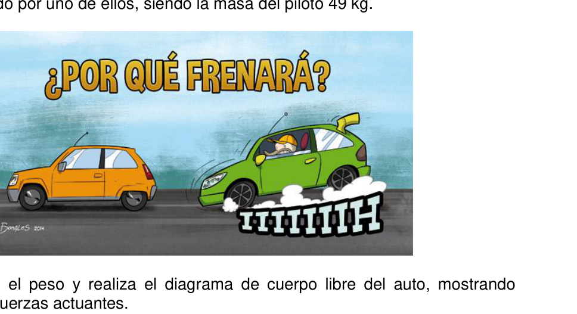
Topic: Circuits, Geometric Optics Metodi: Equivalent Circuit Reduction, Thin Lens & Mirror Equation Competenze: Physical Reasoning, Mathematical Modeling Objects: Resistor, Battery, Mirror Fonte: Testo (PDF) — p.5
La sicurezza prima di tutto
PT6. IMPETIMENTO N° 65 Giovanni Antonio di Mena Vicina Mackenna, Cordoba.
La sicurezza prima di tutto. Un’importante parte dell’auto è il sistema elettrico, in quanto serve a alimentare il sistema elettrico. sistema di illuminazione, la voce, i circuiti di accensione, di avvio e di carica (che Per mantenere la batteria sempre con la giusta carica. sono utilizzati in quasi tutti i componenti elettrici automobilistici, ad esempio: Le luci sono tutte controllate dal interruttore dei fari e sono collegate a parallelo. Se fossero collegati in serie, e si fondesse un foco, entrambi i fari si sarebbero si spegnerebbero a causa del circuito aperto causato dal foco difettoso. Questo non accade in un Circuito parallelo, se uno dei foci è difettoso il corrente scorre ancora a attraverso le altre resistenze come se non fosse successo nulla.
40 - OAF 2017 Supponiamo per semplificare che il circuito delle luci anteriori della nostra auto abbia la seguente formula:
La batteria dell’auto è di 12 V e le lampade hanno una resistenza di 2,6 Ω ciascuna. Come dati extra dei produttori, le lampade consumano 95 W (tra La batteria può fornire un’energia equivalente a 150 A di corrente Per un’ora. La macchina è dotata di due specchi retrovisori convex, come mostrato nella foto di oggi. La figura, si sa che il raggio dello specchio è di 20 cm e l’immagine virtuale che si forma è a 50 cm dallo specchio.
a) Calcolare la resistenza equivalente del circuito elettrico di illuminazione del veicolo. b) Indicare l’intensità di corrente che attraversa il circuito elettrico. c) Quanto tempo ci vorrà prima che i 12 V del carico totale della batteria del dispositivo siano esauriti?
- Auto? d) A che distanza si trova uno studente che sta lavorando dal specchio?
- In macchina?
Topic: Circuits, Geometric Optics Metodi: Equivalent Circuit Reduction, Thin Lens & Mirror Equation Competenze: Physical Reasoning, Mathematical Modeling Objects: Resistor, Battery, Mirror Fonte: Testo (PDF) — p.5
The Commission shall adopt delegated acts in accordance with Article 21 of the Financial Regulation.
PT6. The Commission has also adopted a number of proposals for a new directive on the protection of workers’ rights. Vicina Mackenna, from Cordoba.
Security first. An important part of the car is the electrical system, as it serves to power the car. Lighting system, loudspeaker, ignition, start and load circuits (which It is used to keep the battery always at the correct charge. They are used in almost all electrical components of automobiles, for example: lights The exterior is all controlled by the light switch and connected to the parallel to the other. If they were connected in series, and a light was cast, both headlights would be. would shut down due to the open circuit caused by the faulty focus. This doesn ‘t happen in a parallel circuit, if any of the focuses are faulty the current still flows to through the other resistance (focuses) as if nothing had happened.
The Commission shall adopt delegated acts in accordance with Article 21 of Regulation (EU) No 1303/2013. Let’s say to simplify that the front-light circuit of our car has the following form:
The car’s battery is 12 V and the lamps have a resistance of 2.6 Ω each. As additional data from manufacturers, the lamps are known to consume 95 W (between The battery can provide energy equivalent to 150 A of current For one hour. The car is equipped with two convex rear-view mirrors, as shown in the Figure, you know the radius of the mirror is 20 cm and the virtual image that forms is 50 centimeters from the mirror.
(a) Calculate the equivalent strength of the electric lighting circuit of the vehicle. (b) Find the current intensity passing through the electrical circuit. (c) How long will it take to deplete the 12 V of the total battery charge of the device?
- The car? (d) How far from the mirror is a student who is working? In the car?
Topic: Circuits, Geometric Optics Metodi: Equivalent Circuit Reduction, Thin Lens & Mirror Equation Competenze: Physical Reasoning, Mathematical Modeling Objects: Resistor, Battery, Mirror Fonte: Testo (PDF) — p.5
En las profundidades del oceano
PT7. ET N° 27 Hipólito Yrigoyen Ciudad de Buenos Aires.
En las profundidades del océano. Para obtener datos del fondo del mar, se utiliza una sonda de forma esférica. Su volumen es de 5,045 m3 y tiene una masa de 5150 kg. Se quiere investigar una fosa marina de 2,5 km de profundidad. La temperatura en la superficie es de 20ºC y desciende 1ºC cada 180 m de profundidad. Además, la densidad del agua de mar en la superficie es de 1020 kg/m3 y su coeficiente de dilatación volumétrico es 1,202 x10-4 1/ºC. (Se supone que la sonda no se dilata). a) Calcular la aceleración de la sonda en la superficie, cuando se la coloca totalmente sumergida en el agua. b) Calcular la densidad del agua de mar en el fondo de la fosa. c) ¿Hasta qué profundidad puede descender la sonda? d) ¿Qué volumen de agua deberá ingresar para llegar al fondo de la fosa?
OAF 2017 - 41
Topic: Fluid Mechanics Metodi: Hydrostatic Equilibrium, Free-Body Diagram Competenze: Physical Reasoning, Mathematical Modeling Objects: Sphere Fonte: Testo (PDF) — p.5
Nelle profondità dell’oceano
PT7. E’ stato un’occasione per la nostra società di creare un’organizzazione che non è stata mai stata adottata. Città di Buenos Aires.
Nelle profondità dell’oceano. Per ottenere dati dal fondo del mare, si utilizza una sonda a forma di sfera. Il volume è di 5.045 m3 e ha una massa di 5150 kg. Si vuole indagare su una fossa marina di 2,5 km di profondità. La temperatura in La superficie è di 20°C e scende di 1°C ogni 180 m di profondità. Inoltre, la densità di acqua di mare a superficie è di 1020 kg/m3 e il suo coefficiente di dilatazione Il volume è di 1.202 x 10-4 1/oC. (La sonda non dovrebbe dilatarsi). a) Calcolare l’accelerazione della sonda sulla superficie quando viene posizionata completamente immersa nell’acqua. b) Calcolare la densità dell’acqua di mare al fondo del pozzo. c) A che profondità può scendere la sonda? d) Che volume di acqua deve entrare per arrivare al fondo del pozzo?
OAF 2017 - 41
Topic: Fluid Mechanics Metodi: Hydrostatic Equilibrium, Free-Body Diagram Competenze: Physical Reasoning, Mathematical Modeling Objects: Sphere Fonte: Testo (PDF) — p.5
In the depths of the ocean
PT7. The Commission has also adopted a number of measures to combat the use of the ‘space’ in the transport sector. City of Buenos Aires.
In the depths of the ocean. For data from the seabed, a spherical probe is used. Its volume It is 5,045 m3 and has a mass of 5150 kg. They want to investigate a sea trench 2.5 km deep. The temperature in the surface is 20°C and it drops 1°C every 180 m deep. In addition, the density the surface area of sea water is 1020 kg/m3 and its coefficient of dilation The volume is 1,202 x 10-4 1/oC. (The probe is not supposed to dilate). (a) Calculate the acceleration of the probe on the surface when it is placed completely submerged in water. (b) Calculate the density of seawater at the bottom of the pit. (c) How deep can the probe descend? (d) What volume of water must it enter to reach the bottom of the pit?
The Commission shall adopt delegated acts in accordance with Article 21 of the Financial Regulation.
Topic: Fluid Mechanics Metodi: Hydrostatic Equilibrium, Free-Body Diagram Competenze: Physical Reasoning, Mathematical Modeling Objects: Sphere Fonte: Testo (PDF) — p.5
Acerca del movimiento de un electron
PT8. ET N° 27 Hipólito Yrigoyen Ciudad de Buenos Aires.
Acerca del movimiento de un electrón. Un electrón ingresa en una zona (punto A), con una velocidad vertical cuyo módulo es VA= 1x107m/s, donde existe un campo magnético uniforme B entrante al plano del dibujo. Al salir de esa zona (punto C) su velocidad es horizontal. Despreciando el campo gravitatorio, determinar: a) La ubicación del punto C (calcular x e y) Inmediatamente pasa a otra región donde hay un campo eléctrico uniforme E, creado por dos placas conductoras, cada una de longitud 10 cm b) ¿Cuánto tiempo necesita el electrón para desplazarse desde C hasta salir de esta región? c) Calcular la desviación transversal del electrón al atravesar el espacio entre las placas d) Calcular el ángulo que forma respecto a la horizontal, al salir de esta región. Datos: Relación carga-masa del electrón= -1,76x1011 C/kg.
Intensidad del campo magnético B = 1,13x10-3 T
Intensidad del campo eléctrico entre las placas: E= 2x103 N/C
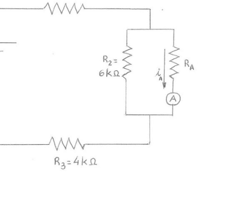
Topic: Electromagnetism Metodi: Lorentz Force Analysis, Kinematic Equations Competenze: Physical Reasoning, Mathematical Modeling Objects: Electron, Capacitor Fonte: Testo (PDF) — p.5
In merito al movimento di un elettrone
PT8. E’ stato un’occasione per la nostra società di creare un’organizzazione che non è stata mai stata adottata. Città di Buenos Aires.
Il movimento di un elettrone. Un elettrone entra in una zona (punto A), con una velocità verticale il cui modulo è VA = 1x107m/s, dove esiste un campo magnetico uniforme B che entra nel piano del disegno. Uscendo da quella zona (punto C) la sua velocità è orizzontale. Disprezzando il campo gravità, determinare: a) La posizione del punto C (calcolare x e y) Immediatamente passa ad un’altra regione dove c’è un campo elettrico uniforme E, creato da due targhe di condotta, di 10 cm ciascuna b) Quanto tempo l’elettrone deve impiegare per spostarsi da C a uscire da
- Questa regione? c) Calcolare la deviazione trasversale dell’elettrone attraverso lo spazio tra le Le placche d) Calcolare l’angolo che forma rispetto all’orizzontale, quando esce da questa regione. Data: Relazione carico-massa dell’elettrone = -1,76x1011 C/kg.
Intensità del campo magnetico B = 1,13x10-3 T
Intensità del campo elettrico tra le plache: E= 2x103 N/C
Topic: Electromagnetism Metodi: Lorentz Force Analysis, Kinematic Equations Competenze: Physical Reasoning, Mathematical Modeling Objects: Electron, Capacitor Fonte: Testo (PDF) — p.5
About the movement of an electron
PT8. The Commission has also adopted a number of measures to combat the use of the ‘space’ in the transport sector. City of Buenos Aires.
About the movement of an electron. An electron enters a zone (point A), with a vertical velocity whose module is VA = 1x107m/s, where there is a uniform magnetic field B entering the plane of the drawing. When you leave that area (point C) your speed is horizontal. Disdain for the countryside Gravitational, to determine: (a) The location of point C (calculate x and y) It immediately passes to another region where there is a uniform electric field E, created by two driving plates, each 10 cm long (b) How long does it take the electron to move from C to exit from This region? (c) Calculate the transverse deviation of the electron through the space between the two plates (d) Calculate the angle it forms with respect to the horizontal, when leaving this region. The data are based on the mass-to-charge ratio of the electron = -1,76x1011 C/kg.
Magnetic field intensity B = 1,13x10-3 T
Intensity of the electric field between the plates: E= 2x103 N/C
Topic: Electromagnetism Metodi: Lorentz Force Analysis, Kinematic Equations Competenze: Physical Reasoning, Mathematical Modeling Objects: Electron, Capacitor Fonte: Testo (PDF) — p.5
Uno de circuitos
PT9. ET N° 27 Hipólito Yrigoyen Ciudad de Buenos Aires.
¡¡Uno de circuitos!! En el circuito de la figura, el amperímetro indica una corriente de 1 mA. Determinar: a) El valor de la resistencia RA . b) El valor de la corriente que circula por la fuente. c) El valor de la resistencia equivalente Re que disipa la misma energía por unidad de tiempo que las cuatro resistencias del circuito. La cantidad de calor por unidad de tiempo generada en RA.
42 - OAF 2017
Topic: Circuits Metodi: Kirchhoff’s Laws, Equivalent Circuit Reduction Competenze: Physical Reasoning Objects: Resistor, Galvanometer Fonte: Testo (PDF) — p.5
Un circuito
PT9. E’ stato un’operazione di grande importanza. Città di Buenos Aires.
Un circuito!! Nel circuito della figura, l’ampielitore indica un corrente di 1 mA. Determinare: a) Il valore della resistenza RA . b) Il valore del corrente che circola attraverso il fonte. (c) Il valore della resistenza equivalente Re che dissipa la stessa energia per unità Il tempo che le quattro resistenze del circuito. La quantità di calore per unità di tempo generato in RA.
42 - OAF 2017
Topic: Circuits Metodi: Kirchhoff’s Laws, Equivalent Circuit Reduction Competenze: Physical Reasoning Objects: Resistor, Galvanometer Fonte: Testo (PDF) — p.5
The following is the list of the components of the engine:
PT9. The Commission has also adopted a number of measures to combat the use of the ‘small’ technology. City of Buenos Aires.
One of the circuits!! In the circuit in the figure, the ampere indicates a current of 1 mA. Determine: (a) The value of the RA resistance . (b) The value of the current circulating through the The source. (c) The value of the equivalent resistance Re It dissipates the same energy per unit. Time to make the four resistors. of the circuit. The amount of heat per unit of time generated in RA.
The following is the list of the countries of the European Union:
Topic: Circuits Metodi: Kirchhoff’s Laws, Equivalent Circuit Reduction Competenze: Physical Reasoning Objects: Resistor, Galvanometer Fonte: Testo (PDF) — p.5
PT10. IPET N° 266 General Savio Río Tercero, Córdoba.
Un pequeño avión de 760 kg de masa requiere 120 m de pista para despegar por sí mismo. (120m es el desplazamiento horizontal del avión justo antes de separarse de la pista, no la longitud total de la pista). Como un modelo simplificado, ignore la fricción y la fuerza de resistencia al avance y suponga que el motor del avión ejerce, una fuerza constante hacia adelante sobre el avión. Si el avión remolca un planeador cuya masa es de 330 kg, a) Dibuje un diagrama de cuerpo aislado para cada cuerpo. b) ¿qué distancia horizontal necesitará ahora recorrer sobre la pista para poder despegar? c) Considerando que la rapidez del avión justo antes de elevarse es 28 m/s (rapidez necesaria para poder despegar). Calcule la tensión en el cable con el cual remolca el planeador a lo largo de la pista.
Topic: Newtonian Mechanics Metodi: Free-Body Diagram, Kinematic Equations Competenze: Physical Reasoning, Mathematical Modeling Objects: String, Block Fonte: Testo (PDF) — p.5
PT10. Il programma di ricerca è stato adottato dal Consiglio nel corso del suo anno. Rio Tercero, Córdoba.
Un piccolo aereo di 760 kg di massa richiede 120 metri di pista per decollare da solo
- Proprio così. (120m è il spostamento orizzontale dell’aereo appena prima di separarsi dalla pista, non la lunghezza totale della pista). Come modello semplificato, ignora la friczione e la forza di resistenza all’avanzamento e Suppone che il motore dell’aereo eserciti una forza costante verso l’avanguardia sul
- Un aereo. Se l’aereo trascina un aereo di massa 330 kg, a) Disegna un diagramma di corpo isolato per ogni corpo. b) quale distanza orizzontale dovrà percorrere sulla pista per poter
- Prendere il volo? c) considerando che la velocità dell’aereo appena prima di salire è di 28 m/s (velocità necessaria per poter decollare). Calcola la tensione del cavo con il che trascina il lander lungo la pista.
Topic: Newtonian Mechanics Metodi: Free-Body Diagram, Kinematic Equations Competenze: Physical Reasoning, Mathematical Modeling Objects: String, Block Fonte: Testo (PDF) — p.5
PT10. The Commission shall adopt delegated acts in accordance with Article 21 of Regulation (EC) No 1295/2006. The third river, Cordoba.
A small plane weighing 760 kg requires 120 m of runway to take off on its own. I’m not. (120m is the horizontal displacement of the aircraft just before separating from the track, not the total length of the track). As a simplified model, it ignores friction and resistance to advancement and Suppose the engine of the aircraft exerts a constant force forward on the aircraft.
- The plane. If the aircraft towed a glider with a mass of 330 kg, (a) Draw an isolated body diagram for each body. (b) what horizontal distance will you now need to travel over the track to be able to take off? (c) Whereas the speed of the aeroplane just before takeoff is 28 m/s (speed needed to take off). Calculate the voltage in the cable with the which towers the glider along the runway.
Topic: Newtonian Mechanics Metodi: Free-Body Diagram, Kinematic Equations Competenze: Physical Reasoning, Mathematical Modeling Objects: String, Block Fonte: Testo (PDF) — p.5
PT11. IPET N° 266 General Savio Río Tercero, Córdoba.
Un protón se mueve en una órbita circular de 14 cm de radio en un campo magnético uniforme de 0,35 T perpendicular a la velocidad del protón. a) Determine la rapidez lineal del protón. b) Si fuese un electrón que se mueve perpendicular al mismo campo magnético a esa misma rapidez lineal, ¿cuál sería el radio de su órbita?
Topic: Electromagnetism Metodi: Lorentz Force Analysis Competenze: Physical Reasoning, Mathematical Modeling Objects: Particle Beam, Electron Fonte: Testo (PDF) — p.5
PT11. Il programma di ricerca è stato adottato dal Consiglio nel corso del suo anno. Rio Tercero, Córdoba.
Un protone si muove in un’orbita circolare di 14 cm di raggio in un campo magnetico. uniforme di 0,35 T perpendicolare alla velocità del protone. a) Determina la velocità lineare del protone. b) Se fosse un elettrone che si muove perpendicolare allo stesso campo magnetico a la stessa velocità lineare, qual sarebbe il raggio di sua orbita?
Topic: Electromagnetism Metodi: Lorentz Force Analysis Competenze: Physical Reasoning, Mathematical Modeling Objects: Particle Beam, Electron Fonte: Testo (PDF) — p.5
PT11. The Commission shall adopt delegated acts in accordance with Article 21 of Regulation (EC) No 1295/2006. The third river, Cordoba.
A proton moves in a circular orbit of 14 cm radius in a magnetic field. uniformly of 0,35 T perpendicular to the proton velocity. (a) Determine the linear velocity of the proton. (b) If it were an electron moving perpendicular to the same magnetic field to That same linear velocity, what would be the radius of its orbit?
Topic: Electromagnetism Metodi: Lorentz Force Analysis Competenze: Physical Reasoning, Mathematical Modeling Objects: Particle Beam, Electron Fonte: Testo (PDF) — p.5
PT12. IPET N° 266 General Savio Río Tercero, Córdoba.
El aire a 20 °C en el cilindro de un motor diésel se comprime desde una presión inicial de 1 atm y volumen de 800 cm3 hasta un volumen de 60 cm3. Suponga que el aire se comprime adiabáticamente como un gas ideal con γ= 1,4. a) Dibuje un esquema que represente la situación planteada. b) Calcule la presión final a la que se encontrará el aire. Calcule la temperatura final del aire.
Topic: Thermodynamics Metodi: Ideal Gas Law, First Law of Thermodynamics Competenze: Physical Reasoning, Mathematical Modeling Objects: Gas, Piston Fonte: Testo (PDF) — p.5
PT12. Il programma di ricerca è stato adottato dal Consiglio nel corso del suo anno. Rio Tercero, Córdoba.
L’aria 20 °C contenuta nel cilindro di un motore diesel viene compressa a partire da una pressione iniziale di 1 atm e un volume di 800 cm3 fino a un volume di 60 cm3. Supponiamo che l’aria si compressa adiabatamente come un gas ideale con γ= 1,4. a) Disegnare un schema che rappresenti la situazione. b) Calcolare la pressione finale che l’aria si troverà. Calcola la temperatura finale dell’aria.
Topic: Thermodynamics Metodi: Ideal Gas Law, First Law of Thermodynamics Competenze: Physical Reasoning, Mathematical Modeling Objects: Gas, Piston Fonte: Testo (PDF) — p.5
PT12. The Commission shall adopt delegated acts in accordance with Article 21 of Regulation (EC) No 1295/2006. The third river, Cordoba.
The air at 20 °C in the cylinder of a diesel engine is compressed from an initial pressure of 1 atm and volume of 800 cm3 to a volume of 60 cm3. Suppose the air is compresses adiabatically as an ideal gas with γ= 1,4. (a) Draw a diagram that shows the situation. (b) Calculate the final pressure at which the air will be exposed. Calculate the final air temperature.
Topic: Thermodynamics Metodi: Ideal Gas Law, First Law of Thermodynamics Competenze: Physical Reasoning, Mathematical Modeling Objects: Gas, Piston Fonte: Testo (PDF) — p.5
Un bloque desde el reposo, desliza y a veces vuelca
PT13. Colegio Nacional Dr. Arturo U. Illia
Instituto Albert Einstein - Colegio Mar del Plata
Mar del Plata, Buenos Aires.
Un bloque desde el reposo, desliza y a veces vuelca.
Un bloque rectangular homogéneo de 750 𝑔 de masa,50 𝑐𝑚 de altura y 20 𝑐𝑚 de ancho,
descansa sobre una tabla 𝐴𝐵.
Si se eleva lentamente el extremo 𝐵 de la tabla, tal
como se muestra en la figura, al llegar a 𝜃= 17° el
bloque comienza a deslizar hacia abajo y alcanzará, en
ese instante, una altura de 2 𝑚 respecto del piso.
Se sabe que la relación entre el coeficiente de roce
cinético y estático entre la tabla y el bloque es
𝜇𝑐𝜇𝑒
= 0,8.
a) Realice un diagrama de cuerpo aislado para el instante que alcanza un ángulo de 17° la tabla y un momento después. b) Calcular el coeficiente de roce estático entre el bloque y la tabla.
OAF 2017 - 43 c) Calcular el trabajo de la fuerza peso hasta la base del plano. d) ¿Qué velocidad alcanza el bloque en la base del plano? e) ¿Cuánta energía se perdió en calor en este movimiento? f) Si se reemplaza la tabla AB por otra cuyo coeficiente de roce estático es 0,5, y se ubica el bloque en su posición inicial, al incrementarse el ángulo, en un momento dado el bloque vuelca ¿Qué ángulo respecto a la horizontal alcanzó la tabla antes de volcar?
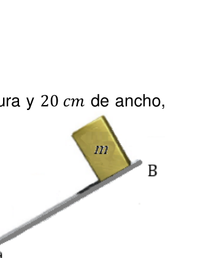
Topic: Newtonian Mechanics, Rigid Body Statics Metodi: Free-Body Diagram, Energy Conservation Method, Torque & Angular Momentum Analysis Competenze: Physical Reasoning, Mathematical Modeling Objects: Block, Inclined Plane Fonte: Testo (PDF) — p.5
Un blocco dal riposo, scivola e a volte si riversa
PT13. Il Dr. Arturo U. Illia
Albert Einstein Institute - Colegio Mar del Plata
Mar del Plata, Buenos Aires.
Un blocco dal riposo, scivola e a volte si torna indietro. Un blocco rettangolare omogeneo di 750 g di massa, 50 cm di altezza e 20 cm di larghezza, Si posa su una tavola AB. Se la punta B della tavola si alza lentamente, tale Come mostrato nella figura, raggiungendo θ= 17° il Il blocco inizia a scivolare verso il basso e raggiungerà, in In quel momento, un’altezza di 2 metri rispetto al pavimento. È noto che il rapporto tra il coefficiente di rottura è Cinetico e statico tra la tabella e il blocco è
- di cui sopra
= 0,8.
a) Realizzare un diagramma di corpo isolato per l’istante che raggiunge un angolo di La tabella e un momento dopo. b) Calcolare il coefficiente di rottura statico tra il blocco e la tabella.
OAF 2017 - 43 c) Calcolare il lavoro della forza-peso fino alla base del piano. d) Qual è la velocità raggiunta dal blocco alla base del piano? e) Quanta energia è stata persa in calore in questo movimento? (f) Se la tabella AB è sostituita da un’altra con un coefficiente di rottura statico di 0,5, e si posiziona il blocco nella sua posizione iniziale, all’ingresso dell’angolo, in un momento dato che il blocco si ribalta che angolo rispetto all’orizzontale ha raggiunto la tabella prima di volgere?
Topic: Newtonian Mechanics, Rigid Body Statics Metodi: Free-Body Diagram, Energy Conservation Method, Torque & Angular Momentum Analysis Competenze: Physical Reasoning, Mathematical Modeling Objects: Block, Inclined Plane Fonte: Testo (PDF) — p.5
**A block from rest, slides and sometimes rolls **
PT13. National College Dr. - Arthur U. Illia
Albert Einstein Institute - College of the Silver Sea
The city of Mar del Plata, Buenos Aires.
A block from the rest, sliding and sometimes rolling. A homogeneous rectangular block of 750 g of mass, 50 cm high and 20 cm wide, It rests on an AB board. If the B-end of the table is slowly raised, such As shown in Figure 1, at θ= 17° the block starts sliding down and will reach, in That instant, a height of 2 meters above the floor. The ratio of the brushing coefficient is known to be The kinetic and static between the table and the block is Other
= 0,8.
(a) Draw an isolated body diagram for the instant it reaches an angle of The table and a moment later. (b) Calculate the static friction coefficient between the block and the table.
The Commission shall adopt delegated acts in accordance with Article 21 of the Financial Regulation. (c) Calculate the work force of the weight to the base of the plane. (d) What is the speed at which the block reaches the base of the plane? (e) How much energy was lost in heat in this movement? (f) If table AB is replaced by another table with a static friction coefficient of 0,5, and It places the block in its initial position, as the angle increases, at a moment. given the block rolls over, what angle relative to the horizontal reached the table? before you turn?
Topic: Newtonian Mechanics, Rigid Body Statics Metodi: Free-Body Diagram, Energy Conservation Method, Torque & Angular Momentum Analysis Competenze: Physical Reasoning, Mathematical Modeling Objects: Block, Inclined Plane Fonte: Testo (PDF) — p.5
En la casa de campo
PT14. Colegio Nacional Dr. Arturo U. Illia
Instituto Albert Einstein - Colegio Mar del Plata
Mar del Plata, Buenos Aires.
En la casa de campo. En una casa de campo se dispone de una batería con tensión V=24V como fuente de alimentación. La misma se utiliza para alimentar dos focos (R1 y R2) de 8 Ω y una pequeña heladera (R3). El diagrama del circuito se muestra en la figura.
La batería es una fuente real, por lo cual tiene naturalmente ciertas pérdidas, las mismas pueden representarse como una resistencia pequeña r=0,25 Ω en serie con la batería. a) En la situación de la figura, con la llave abierta (heladera desconectada), diga la corrientes que circula por la batería y por cada foco. Calcule además la potencia que se disipa en cada foco. b) Si los cables de la instalación resisten una corriente máxima de 20 A ¿cuál sería la mínima resistencia que puede tener la heladera para que al conectarla no se quemen los cables? En realidad la heladera es una resistencia particular. Al conectarla a la línea, durante unos breves instantes toma un valor muy bajo, con lo cual la corriente que circula por ella es grande. Luego de un cierto tiempo su resistencia se eleva hasta quedar constante. Para la heladera de la figura la resistencia en función del tiempo puede modelarse como se indica en la figura.
0 1 2 3 4 5 6 0 10 20 30 40 50 60 R3 (Ω) t (ms) Resistencia de la heladera en función del tiempo
44 - OAF 2017 c) Al conectarse la heladera, debido a la gran corriente, se produce un parpadeo en las luces (como si se apagaron durante unos pocos milisegundos). Calcule la caída de tensión en los focos durante ese instante y explique por qué motivo se observa el parpadeo. d) Calcule la potencia que disipa la heladera una vez que ha pasado un tiempo largo desde que está conectada. e) Aunque la corriente que circula por los cables es más de 20 A al conectar la heladera (ver inciso (b)) los cables no se queman. Explique por qué ocurre esto.
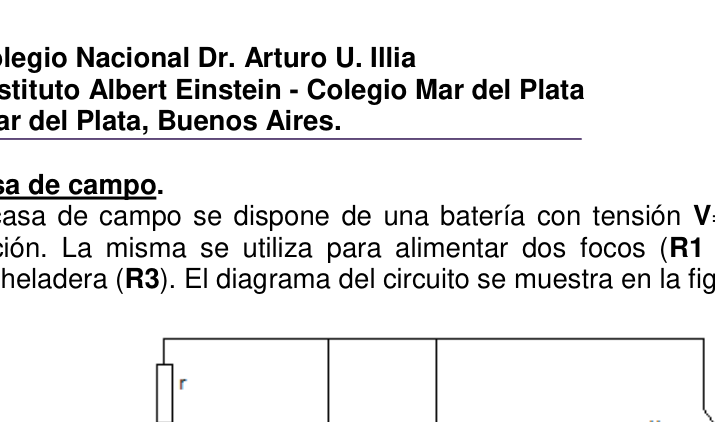
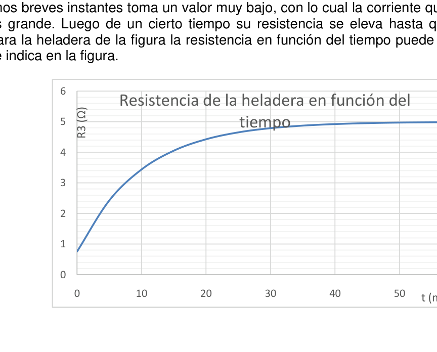
Topic: Circuits Metodi: Kirchhoff’s Laws, Equivalent Circuit Reduction Competenze: Physical Reasoning, Mathematical Modeling Objects: Resistor, Battery Fonte: Testo (PDF) — p.5
In campagna
PT14. Il Dr. Arturo U. Illia
Albert Einstein Institute - Colegio Mar del Plata
Mar del Plata, Buenos Aires.
Nella casa di campagna. In una casa di campagna si dispone di una batteria con tensione V=24V come fonte di energia. alimentazione. La stessa viene utilizzata per alimentare due foci (R1 e R2) di 8 Ω e una il piccolo frigorifero (R3). Il diagramma del circuito è mostrato nella figura.
La batteria è una fonte reale, quindi ha naturalmente alcune perdite, le stesse. possono essere rappresentate come una piccola resistenza r=0,25 Ω in serie con la batteria. a) In posizione figura, con la chiave aperta (la spalla disconnessa), dire: corrente che circola attraverso la batteria e ogni foco. Calcola anche la potenza che si dissipa in ogni foco. b) Se i cavi dell’impianto resistono a un corrente massimo di 20 A, quale sarebbe? la minima resistenza che il frigorifero può avere per non essere attaccato bruciano i cavi? In realtà il frigorifero è una resistenza particolare. Connetterla alla linea, durante In pochi istanti si prende un valore molto basso, con cui la corrente che circola attraverso di essa. È grande. Dopo un certo tempo la resistenza aumenta fino a diventare costante. Per il congelatore della figura la resistenza a seconda del tempo può essere modellata come è indicato nella figura.
0 1 2 3 4 5 6 0 10 20 30 40 50 60 R3 (Ω) t (ms) Resistenza del frigorifero a seconda del tempo
44 - OAF 2017 c) Quando si collega il frigorifero, a causa della grande corrente, si produce un brivido in le luci (come se fossero spente per qualche milliseconda). Calcola il La pressione dei foci durante quel momento è diminuita e spiega il motivo per cui si Guarda il brivido. d) Calcolare la potenza che il congelatore si dissipa una volta che è passato un certo periodo di tempo Da quando è connessa. (e) Anche se il corrente che circola attraverso i cavi è superiore a 20 A quando si collega la il congelatore (vedere punto (b)) i cavi non si bruciano. Spiega perché succede.
Topic: Circuits Metodi: Kirchhoff’s Laws, Equivalent Circuit Reduction Competenze: Physical Reasoning, Mathematical Modeling Objects: Resistor, Battery Fonte: Testo (PDF) — p.5
In the country house
PT14. National College Dr. - Arthur U. Illia
Albert Einstein Institute - College of the Silver Sea
The city of Mar del Plata, Buenos Aires.
In the country house. In a country house a V=24V battery is available as a source of energy. food. It is used to power two foci (R1 and R2) of 8 Ω and one small freezer (R3). The circuit diagram is shown in the figure.
The battery is a real source, so it naturally has certain losses, the same. can be represented as a small resistance r=0.25 Ω in series with the battery. (a) In the figure position, with the key open (header unconnected), say the following: currents flowing through the battery and through each focus. Also calculate the power. which dissipates at every flash. (b) If the cables in the installation are resistant to a maximum current of 20 A, what would it be? The minimum resistance the freezer can have so that when it is connected it does not break. They’re burning the wires? Actually, the freezer is a particular resistance. By connecting it to the line, during In a few moments it takes a very low value, so the current circulating through it. It’s big. After a while, their resistance rises to a constant. For the figure freezer the resistance depending on the weather can be modelled as is shown in the figure.
0 1 2 3 4 5 6 0 10 20 30 40 50 60 R3 (Ω) t (ms) The resistance of the freezer according to time
The Commission shall adopt delegated acts in accordance with Article 21 of Regulation (EU) No 1308/2013. (c) When the refrigerator is connected, due to the high current, a blinking occurs in the the lights (as if they were off for a few milliseconds). Calculate the The lighting system is designed to reduce the voltage drop in the flashes during that instant and explain why it is so low. Watch the blinking. (d) Calculate the coolant dissipation power once a time has elapsed It’s been a long time since it’s connected. (e) Although the current circulating through the cables is more than 20 A when connecting the the cables are not burned. Explain why this is happening.
Topic: Circuits Metodi: Kirchhoff’s Laws, Equivalent Circuit Reduction Competenze: Physical Reasoning, Mathematical Modeling Objects: Resistor, Battery Fonte: Testo (PDF) — p.5
Los problemas del Nitrogeno y la temperatura
PT15. Colegio Nacional Dr. Arturo U. Illia
Instituto Albert Einstein - Colegio Mar del Plata
Mar del Plata, Buenos Aires.
Los problemas del Nitrógeno y la temperatura. El nitrógeno, es el principal componente del aire en la atmósfera. A presión atmosférica tiene un punto de ebullición sumamente bajo (77 K), por lo cual es usual encontrarlo en estado gaseoso. Sin embargo, el nitrógeno líquido tiene una gran diversidad de aplicaciones y puede obtenerse en una veterinaria o una química. Uno de los problemas del nitrógeno líquido es la dificultad para transportarlo y almacenarlo, por encontrarse a temperaturas tan bajas.
a) Considere un termo bien aislado que se encuentra a 20°C inicialmente. La parte interna del termo (la que contacta directamente con el nitrógeno) consta de una pared fina de acero de 300 gramos aproximadamente, el calor específico del acero es 1,46 J/gK. Si se vierte nitrógeno líquido a 77K en el termo calcule cuánto se evapora para que la pared de acero se enfríe hasta el equilibrio. El calor de vaporización del nitrógeno líquido es 199 J/g.
La transferencia de calor del termo con el ambiente es esencialmente por conducción, la potencia (calor por unidad de tiempo) puede calcularse de la siguiente manera: Ta T e k A P
Donde P es la potencia, e el espesor del aislante del termo de conductividad térmica k, A el área de transferencia de calor, T la temperatura interna del termo y Ta la temperatura ambiente.
b) El termo utilizado es esencialmente un cilindro de 10 cm de diámetro y 25 cm de alto. El espesor de aislante es de 1.5 cm y su conductividad térmica es 0,003 W/mK. Si se coloca dentro de este 1 kg de nitrógeno líquido ¿cuánto demorará en evaporarse todo? Considere la temperatura del ambiente 20°C.
La construcción del termo es sumamente complicada puesto que debe resistir un brusco cambio de temperatura. Uno de los problemas es la contracción del acero. El coeficiente de expansión lineal del mismo es 1.7. 10-5 K-1.
c) Diga cuánto disminuye el volumen del termo al colocarle adentro el nitrógeno líquido.
d) En realidad el calor específico del acero no es un valor constante, sino que cambia con la temperatura. El gráfico a continuación muestra esta variación. En base a esta información diga si la respuesta correcta del inciso (a) es mayor, menor o igual a la calculada anteriormente. Justifique cualitativamente.
OAF 2017 - 45
Topic: Thermodynamics Metodi: First Law of Thermodynamics, Conservation of Energy Competenze: Physical Reasoning, Mathematical Modeling Objects: Container, Cylinder Fonte: Testo (PDF) — p.5
I problemi di nitrogeno e temperatura
PT15. Il Dr. Arturo U. Illia
Albert Einstein Institute - Colegio Mar del Plata
Mar del Plata, Buenos Aires.
I problemi di azoto e temperatura. L’azoto, è il principale componente dell’aria nell’atmosfera. A pressione atmosferica ha un punto di ebollizione molto basso (77 K), quindi è comune trovarlo in stato gassoso. Tuttavia, l’azoto liquido ha una grande diversità di La ricerca è stata condotta da un medico veterinario o da un chimico. Uno dei problemi L’idrogeno liquido è la difficoltà di trasportarlo e di immagazzinarlo, perché si trova in temperature così basse.
a) Considerare un termico ben isolato che si trova inizialmente a 20°C. La parte Il termostato interno (che entra in contatto diretto con l’azoto) è costituito da una Parete di acciaio fino di circa 300 grammi, calore specifico di l’acciaio è 1,46 J/gK. Se si versano azoto liquido a 77K nel termostato calcolate quanto si evapora per far raffreddare il muro in acciaio fino all’equilibrio. El calore di vaporizzazione dell’azoto liquido è di 199 J/g.
Il trasferimento di calore dal termico all’ambiente è essenzialmente condotto, il Potenza (calore per unità di tempo) può essere calcolata come segue: Ta T e k A P
Dove P è la potenza, e lo spessore dell’isolatore termico di conduzione termica k, A T la temperatura interna del termostato e Ta la temperatura ambiente.
b) Il termo utilizzato è essenzialmente un cilindro di 10 cm di diametro e 25 cm di diametro.
- Alzate! Il spessore dell’isolatore è di 1,5 cm e la sua conducibilità termico è di 0,003 W/mK. Se si mette dentro questo 1 kg di nitrogeno liquido, quanto tempo ci vorrà?
- E’ che tutto evapora? Considerare la temperatura ambientale 20°C.
La costruzione del termostato è estremamente complicata in quanto deve resistere a un brusco cambiamento di temperatura. Uno dei problemi è la contrazione dell’acciaio. Il coefficiente La velocità di espansione lineare di questo è di 1.7. 10-5 K-1.
c) Indicare quanto diminuisce il volume del termolo inserendo l’ azoto dentro. liquido.
d) In realtà il calore specifico dell’acciaio non è un valore costante, ma che cambia con la temperatura. Il grafico seguente mostra questa variazione. En sulla base di queste informazioni, indicare se la risposta corretta di cui al punto (a) è maggiore, inferiore o uguale a quella calcolata prima. Giustifica qualitativamente.
OAF 2017 - 45
Topic: Thermodynamics Metodi: First Law of Thermodynamics, Conservation of Energy Competenze: Physical Reasoning, Mathematical Modeling Objects: Container, Cylinder Fonte: Testo (PDF) — p.5
The nitrogen and temperature problems
PT15. National College Dr. - Arthur U. Illia
Albert Einstein Institute - College of the Silver Sea
The city of Mar del Plata, Buenos Aires.
The nitrogen and temperature issues. Nitrogen, is the main component of air in the atmosphere. At atmospheric pressure . It has an extremely low boiling point (77 K), so it is commonly found in the gas state. However, liquid nitrogen has a great diversity of The use of the drug is not a problem. One of the problems . The problem of liquid nitrogen is the difficulty of transporting and storing it, because it is found in the temperatures are so low.
(a) Consider a well-insulated thermoset initially located at 20°C. The part The internal thermos (the one that comes into direct contact with nitrogen) consists of a The heat specifications of the test are: steel is 1.46 J/gK. If you pour liquid nitrogen to 77K in the thermos calculate how much evaporates to cool the steel wall to equilibrium. El The vaporization heat of liquid nitrogen is 199 J/g.
The transfer of heat from the thermal to the environment is essentially conductive, the The power (heat per unit of time) can be calculated as follows: Ta T e k A P
Where P is the power, and the thermal conductivity thermal insulator thickness k, A The heat transfer area, T the thermal internal temperature and Ta the temperature The environment.
(b) The thermos used is essentially a cylinder 10 cm in diameter and 25 cm in diameter.
- Shut up. The insulation thickness is 1.5 cm and its thermal conductivity is 0.003 W/mK. If you put it inside this 1 kg of liquid nitrogen, how long will it take?
- I’m not going to. Consider the ambient temperature 20°C.
The construction of the thermos is extremely complicated as it must withstand a sudden The temperature changes. One of the problems is the steel’s contraction. The coefficient The linear expansion of the same is 1.7. 10-5 K-1.
(c) Tell how much the volume of the thermos decreases by putting nitrogen in it. liquid.
(d) The specific heat of steel is not actually a constant value, but rather It changes with temperature. The graph below shows this variation. En on the basis of this information, tell me whether the correct answer to subparagraph (a) is greater, less than or equal to the previously calculated. You can qualitatively justify it.
The Commission shall adopt delegated acts in accordance with Article 21 of Regulation (EU) No 1303/2013.
Topic: Thermodynamics Metodi: First Law of Thermodynamics, Conservation of Energy Competenze: Physical Reasoning, Mathematical Modeling Objects: Container, Cylinder Fonte: Testo (PDF) — p.5
PT16. Colegio Juan Humberto Morán
Eduardo Castex, La Pampa.
En una pista sin fricción, Carlos empuja con una fuerza de 200 Newtons a Roberto que esta sentado sobre un carro y tiene una masa de 50 kg partiendo del reposo durante 3 segundos, recorriendo una distancia A-B, luego lo suelta y sigue el movimiento hasta C donde cae por una rampa. Llegando finalmente al punto E que encuentra una superficie rugosa con coeficiente de fricción de μ= 0.35 que lo termina deteniendo en el punto F. Datos: h= 3 m. (Usar g=10 m/s2).
Calcular:
a) Velocidad en B.
b) distancia A-B.
c) Energía Mecánica en C.
d) Velocidad en D.
e) Distancia E-F.
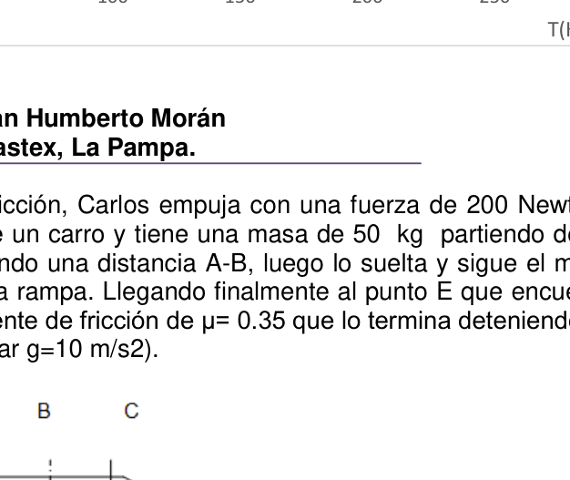
Topic: Newtonian Mechanics, Conservation of Energy Metodi: Kinematic Equations, Energy Conservation Method, Free-Body Diagram Competenze: Physical Reasoning, Mathematical Modeling Objects: Cart, Inclined Plane Fonte: Testo (PDF) — p.5
PT16. Colegio Juan Humberto Morán
Eduardo Castex, La Pampa.
In un circuito senza frizioni, Carlos spinge con una forza di 200 Newton Roberto che Si sta seduto su un carro e ha una massa di 50 kg partendo dal riposo per 3 secondi, percorrendo una distanza A-B, poi lo rilascia e segue il movimento fino a C dove cade per un ramp. Arrivare finalmente al punto E che trova una superficie rugosa con coefficiente di attrito μ= 0,35 che termina per fermarla al punto F. Dati: h= 3 m. (Utilizzare g=10 m/s2).
Calcolare: a) Velocità in B. b) distanza A-B. c) Energia meccanica in C. d) Velocità in D. e) Distanza E-F.
Topic: Newtonian Mechanics, Conservation of Energy Metodi: Kinematic Equations, Energy Conservation Method, Free-Body Diagram Competenze: Physical Reasoning, Mathematical Modeling Objects: Cart, Inclined Plane Fonte: Testo (PDF) — p.5
PT16. The school is called Juan Humberto Morán.
Eduardo Castex, the Pampa.
On a frictionless track, Carlos pushes with a force of 200 Newtons to Roberto who He ‘s sitting on a cart and weighs 50 kg from rest for three days . Seconds, traveling a distance A-B, then release it and follow the motion to C where it falls off a ramp. Finally getting to the point E that finds a surface rough with a coefficient of friction of μ=0.35 which ends in stopping at point F. Data: h = 3 m (Use g=10 m/s2).
Calculation: (a) Speed in B. (b) distance A to B. (c) Mechanical energy in C. (d) Speed in D. (e) E-F distance.
Topic: Newtonian Mechanics, Conservation of Energy Metodi: Kinematic Equations, Energy Conservation Method, Free-Body Diagram Competenze: Physical Reasoning, Mathematical Modeling Objects: Cart, Inclined Plane Fonte: Testo (PDF) — p.5
PT17. Colegio Juan Humberto Morán
Eduardo Castex, La Pampa.
En un calorímetro hay 350 cc agua liquida junto con 120 grs de hielo ambos a cero grado
Cº.
Se colocan 1,8 Kgrs de hierro a una temperatura inicial de Tih= 95 Cº. Sacar de la tablas
los coeficientes.
a) Calcular si se logra fundir el hielo completamente.
b) En caso positivo determinar la temperatura de equilibrio final de la mezcla.
0,8
0,9
1
1,1
1,2
1,3
1,4
1,5
50
100
150
200
250
300
C(j/gK)
T(K)
Calor especifico del acero en funcion de T
46 - OAF 2017
Topic: Thermodynamics Metodi: First Law of Thermodynamics, Conservation of Energy Competenze: Physical Reasoning Objects: Calorimeter Fonte: Testo (PDF) — p.5
PT17. Colegio Juan Humberto Morán
Eduardo Castex, La Pampa.
In un calometro ci sono 350 cc di acqua liquida insieme a 120 gr di ghiaccio entrambi a zero gradi. Cº. 1,8 Kgrs di ferro vengono messe a una temperatura iniziale di Tih= 95 C. Togliere dalle tabelle i coefficienti. a) Calcolare se si riesce a fondere completamente l’acqua. b) Se è positivo, determinare la temperatura di equilibrio finale della miscela. 0,8 0,9 1 1,1 1,2 1,3 1,4 1,5 50 100 150 200 250 300 C(j/gK) T(K) Calore specifico dell’acciaio in funzione di T
46 - OAF 2017
Topic: Thermodynamics Metodi: First Law of Thermodynamics, Conservation of Energy Competenze: Physical Reasoning Objects: Calorimeter Fonte: Testo (PDF) — p.5
PT17. The school is called Juan Humberto Morán.
Eduardo Castex, the Pampa.
In a heat meter there are 350 cc of liquid water along with 120 grams of ice both at zero degree. Cº. 1,8 Kgrs of iron is placed at an initial temperature of Tih= 95 C. Remove from the boards the coefficients. (a) Calculate whether the ice is completely melted. (b) If positive, determine the final equilibrium temperature of the mixture. 0,8 0,9 1 1,1 1,2 1,3 1,4 1,5 50 100 150 200 250 300 C(j/gK) T(K) Specific heat of T-functioning steel
The following points shall be added:
Topic: Thermodynamics Metodi: First Law of Thermodynamics, Conservation of Energy Competenze: Physical Reasoning Objects: Calorimeter Fonte: Testo (PDF) — p.5
PT18. Colegio Juan Humberto Morán
Eduardo Castex, La Pampa.
Un tanque de agua cilíndrico vacio, se va llenando con un caudal Q= 0.5 m3/seg.
constante.
En el fondo tiene un cilindro con un pistón sostenido por un resorte de constante K= 2000
N/m.
A medida que aumenta la altura h del agua el mismo retrocede por presión hasta llegar
a un tubo vertical
de descarga a x= 10cm de distancia, que al abrirse eroga un caudal también Q. Calcular:
a) Para que altura h comienza la descarga
b) El tiempo que tarda en hacerlo.
c) Graficar h en función de t desde t=0 antes de abrirse el tubo y después de la
apertura
d) Cual será el radio del tubo de descarga para mantener h constante?
Datos: radio de pistón r = 0.05m, radio del tanque Rt= 1.2m peso especifico del agua
ϱ=10000 N/m3.
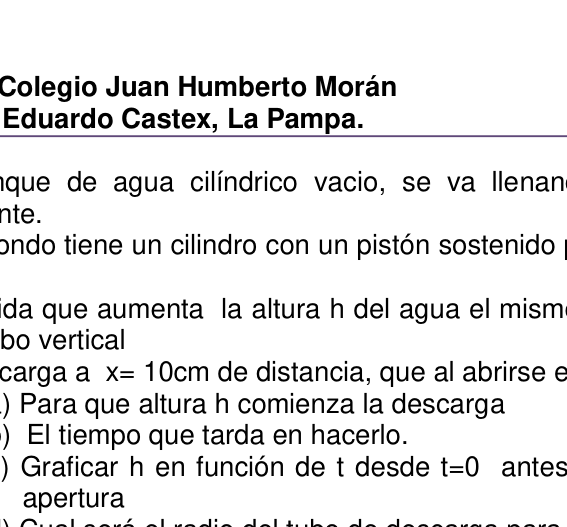
Topic: Fluid Mechanics Metodi: Continuity Equation, Hooke’s Law, Hydrostatic Equilibrium Competenze: Physical Reasoning, Mathematical Modeling Objects: Container, Spring, Piston Fonte: Testo (PDF) — p.5
PT18. Colegio Juan Humberto Morán
Eduardo Castex, La Pampa.
Un serbatoio di acqua cilindrica vuoto, si riempie con un flusso Q= 0,5 m3/sec. costante. In fondo ha un cilindro con un pistone sostenuto da una sorgente costante K= 2000 N/m. Mentre l’altezza h dell’acqua aumenta, essa si ritira sotto pressione fino a raggiungere a un tubo verticale di scarico a x= 10 cm di distanza, che all’apertura emette un flusso anche Q. Calcolare: a) A che altezza h inizia la scarica b) Il tempo necessario per farlo. c) Graficare h in funzione di t da t=0 prima di aprire il tubo e dopo il apertura d) Qual è il raggio del tubo di scarico per mantenere la h costante? Dati: radius del pistone r = 0,05m, radius del serbatoio Rt = 1,2m peso specifico dell’acqua ϱ=10000 N/m3.
Topic: Fluid Mechanics Metodi: Continuity Equation, Hooke’s Law, Hydrostatic Equilibrium Competenze: Physical Reasoning, Mathematical Modeling Objects: Container, Spring, Piston Fonte: Testo (PDF) — p.5
PT18. The school is called Juan Humberto Morán.
Eduardo Castex, the Pampa.
An empty cylindrical water tank, is filled with a flow rate of Q= 0.5 m3/sec. It’s constant. At the bottom it has a cylinder with a piston held by a spring of constant K=2000. N/m. As the water level rises, it retreats under pressure until it reaches the water level. to a vertical tube The discharge is at x=10 cm, which when opened also generates a flow Q. Calculation: (a) At what height h starts the discharge (b) The time it takes to do so. (c) Graph h in function of t from t=0 before opening the tube and after the Opening up (d) What is the radius of the exhaust pipe to keep h constant? Data: piston radius r = 0.05m, tank radius Rt = 1.2m specific weight of water ϱ=10000 N/m3.
Topic: Fluid Mechanics Metodi: Continuity Equation, Hooke’s Law, Hydrostatic Equilibrium Competenze: Physical Reasoning, Mathematical Modeling Objects: Container, Spring, Piston Fonte: Testo (PDF) — p.5
PT19. Escuela PreUniversitaria Fray Mamerto Esquiu
ENET N° 1 Prof. Vicente Aguilera - Colegio del Carmen y San José
Secundaria N° 3 Gustavo G. Levene - Colegio Padre Ramón de la Quintana
Instituto Pía Didoménico - Instituto Superior FASTA Catamarca
Instituto Privado Enrique G. Hood - Escuela Munic. N° 1 Fray Mamerto Esquiu
San Fernando del Valle, Catamarca.
En el marco de la Semana de la Ciencia organizada por la Facultad de Ciencias Exactas y Naturales de la UNCA, Ud. y sus compañeros de clases son invitados al laboratorio de
OAF 2017 - 47 Física a realizar un experimento de dilatación térmica. Al ingresar, Ud. observa que el termómetro que indica la temperatura del laboratorio marca 68°F y el termómetro que indica la temperatura del horno que se utilizará en la experiencia marca 788°F (considere que el horno está perfectamente aislado y no transmite calor al ambiente). Ud. observa también que en unas de las paredes del laboratorio hay un panel de tablas de valores y formulas varias, entre las cuales se hallan las siguientes:
Tabla N° 1
Tabla N°2
El experimento consiste en observar cuánto se dilata una varilla (de material hasta ahora desconocido) sometida a un cambio de temperatura, y para ello deberá medir su longitud a dos temperaturas diferentes. Ud. toma un alambre (varilla) de los que tienen disponibles para la experiencia, mide 1,5000 m de longitud y 3mm de diámetro antes de ingresar al horno y 1,5175mde longitud después de haber alcanzado la temperatura del mismo. a) ¿Cuál es el cambio de la longitud del alambre? Exprese su resultado en cm.
48 - OAF 2017 b) Exprese las lecturas de los termómetros en °C. ¿En cuántos °C se ha elevado la temperatura del alambre? c) Calcule el coeficiente de dilatación lineal del alambre y demuestre que está fabricado de plomo. Use la TABLA N° 1 para justificar su respuesta. d) ¿Qué volumen tiene el alambre antes de ingresar al horno? Exprese su resultado en cm3. e) Determine la masa de la varilla. Obtenga de la TABLA N° 2 el dato necesario. f) Suponiendo que el diámetro del alambre no ha cambiado sustancialmente su valor al alcanzar la temperatura del horno, calcule el volumen de la varilla a la temperatura del horno. g) ¿Cuál es la densidad del alambre a la temperatura del horno?
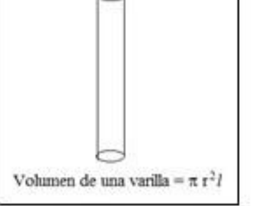
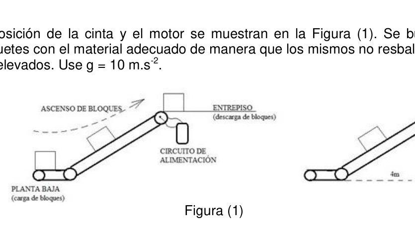
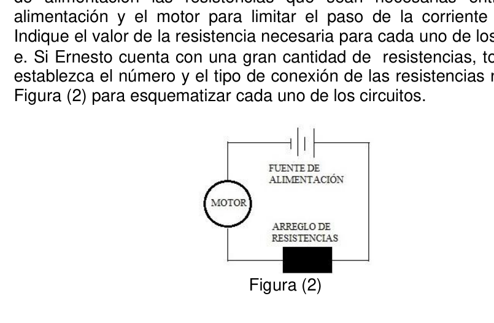
Topic: Thermodynamics, Elasticity & Materials Metodi: Stress-Strain Analysis, First Law of Thermodynamics Competenze: Physical Reasoning, Mathematical Modeling Objects: Rod Fonte: Testo (PDF) — p.5
PT19. Preuniversità Fray Mamerto Esquiu
ENET N° 1 Prof. Vicente Aguilera - Colegio del Carmen e San José
Secundaria N° 3 Gustavo G. Levene - Scuola Padre Ramón de la Quintana
Istituto Pía Didoménico - Istituto Superiore FASTA Catamarca
Istituto privato Enrique G. Hood - Scuola di Munico. N° 1 Fray Mamerto Esquiu
San Fernando del Valle, Catamarca.
Nell’ambito della Settimana della Scienza organizzata dalla Facoltà di Scienze Esatte E Naturale dell’UNCA, lei. e i suoi compagni di classe sono invitati al laboratorio di
OAF 2017 - 47 Fisica per eseguire un esperimento di dilatazione termica. Entrando, tu… osserva che il termometro che indica la temperatura del laboratorio 68°F e il termometro che indica la temperatura del forno da utilizzare nell’esperienza di marca 788°F (considerare che il forno sia perfettamente isolato e non trasmetta calore all’ambiente). Ud. osserva E anche che su uno dei muri del laboratorio c’è un pannello di tabelle di valori e formulazioni diverse, tra cui:
Tabella N° 1
Tabella N°2
L’esperimento consiste nell’osservare quanto si dilata una canna (di materiale fino ad ora) Il numero di persone che si trovano in una zona di cui non si conosce la temperatura è variabile. a due temperature diverse. Ud. Prende un filo (barella) di quelli che hanno a disposizione Per l’esperienza, misura 1,5000 m di lunghezza e 3 mm di diametro prima di entrare nel il forno e 1,5175m di lunghezza dopo aver raggiunto la temperatura del forno. a) Qual è il cambiamento della lunghezza del filo? Esprimete il risultato in cm.
48 - OAF 2017 b) Esprimere le letture dei termometri in °C. In quante volte è stata aumentata la temperatura del filo? (c) Calcolare il coefficiente di dilatazione lineare di
- il filo e dimostrare che è fabbricato di
- Piombo. Utilizzare il tabella N° 1 per giustificare il suo
- Risposta. d) Qual è il volume del filo prima di entrare nel forno? Esprimi il tuo risultato in cm3. e) Determina la massa del bastone. - Prendi la TABELLA N° 2 la data necessaria. f) Supponendo che il diametro del filo non abbia se il suo valore è sostanzialmente alterato al raggiungere la temperatura del forno, calcola il volume della canna alla temperatura del forno. g) Qual è la densità del filo a temperatura di forno?
Topic: Thermodynamics, Elasticity & Materials Metodi: Stress-Strain Analysis, First Law of Thermodynamics Competenze: Physical Reasoning, Mathematical Modeling Objects: Rod Fonte: Testo (PDF) — p.5
PT19. Fray Mamerto Esquiu Pre-university School
The Commission shall adopt implementing acts in accordance with Article 21 of Regulation (EC) No 1272/2009. Vicente Aguilera - College of the Carmen and San José
Secondary school N° 3 Gustavo G. Levene - Father Ramón de la Quintana College is located in the city of Quintana
The Spanish language is spoken by the Spanish language.
Private Institute Enrique G. Hood - Munich School. N° 1 Fray Mamerto Esquiu
San Fernando del Valle, Catamarca. It was a great day.
Within the framework of the Week of Science organized by the Faculty of Exact Sciences and Natural from the UNCA, you. and his classmates are invited to the laboratory of
The Commission shall adopt delegated acts in accordance with Article 21 of the Financial Regulation. Physicist to perform a thermal dilation experiment. When you enter, you. He notes that a thermometer indicating the laboratory temperature 68°F and the thermometer which indicates the temperature of the oven to be used in the 788°F mark experiment (see The oven is perfectly insulated and does not transmit heat to the environment. Ud. He observes Also, on one of the lab walls is a value table panel and several formulas, including the following:
The following table shows the following:
The following table shows the following:
The experiment involves observing how much a rod is dilated (from material to date) The temperature of the water is changed and the length of the water is measured. at two different temperatures. Ud. Take a wire (bar) from those you have available For the experience, it measures 1,5000 m in length and 3 mm in diameter before entering the The temperature of the oven and 1,5175m of length after it has reached its temperature. (a) What is the change in the length of the wire? Express your result in cm.
48 - OAF 2017 (b) Express the readings of thermometers in °C. How many °C has been raised? the temperature of the wire? (c) Calculate the linear dilation coefficient of the Wire and prove that it is made of lead. Use TABLE N° 1 to justify your The answer. (d) What volume is the wire before Get in the oven? Express your result in cm3. (e) Determine the mass of the rod. Get the Table N° 2 the necessary data. (f) Assuming that the diameter of the wire has not If the value of the product has changed substantially at the oven temperature, calculate the volume of the rod at the oven temperature. (g) What is the density of the wire at the oven temperature?
Topic: Thermodynamics, Elasticity & Materials Metodi: Stress-Strain Analysis, First Law of Thermodynamics Competenze: Physical Reasoning, Mathematical Modeling Objects: Rod Fonte: Testo (PDF) — p.5
PT20. Escuela PreUniversitaria Fray Mamerto Esquiu
ENET N° 1 Prof. Vicente Aguilera - Colegio del Carmen y San José
Secundaria N° 3 Gustavo G. Levene - Colegio Padre Ramón de la Quintana
Instituto Pía Didoménico - Instituto Superior FASTA Catamarca
Instituto Privado Enrique G. Hood - Escuela Munic. N° 1 Fray Mamerto Esquiu
San Fernando del Valle, Catamarca.
Frente a un semáforo en rojo, un automóvil (A1) está detenido sobre el carril derecho de
una calle despejada de una sola mano. En el momento de cambio de rojo a verde el
automóvil se pone en marcha con una aceleración de 1 m.s-2. Cinco segundos después,
es alcanzado por un segundo automóvil (A2) que venía circulando por el carril izquierdo a
velocidad constante igual a 36 km.h-1. Responda las siguientes preguntas suponiendo
que la calle estará libre de obstáculos en todo momento y que la aceleración de (A1) y la
velocidad de (A2) se mantienen constantes a lo largo de su trayecto.
a) Escriba la ecuación horariax1=f(t) del auto(A1), usando unidades de x=[m] y t=[s].
b) ¿En qué posición se encuentran los automóviles? Exprese en [m].
c) Calcule la posición (en unidades de [m]) del auto (A2) en el instante en el que el
auto (A1) comienza su movimiento.
d) Escriba la ecuación horaria x2=f(t) de (A2), usando unidades de x=[m] y t=[s].
e) Represente gráficamente las ecuaciones horarias de ambos automóviles en un
mismo par de ejes.
f) ¿Cuál de los dos automóviles llegará primero a la posición 75m? Resuelva
analíticamente.
g) ¿En qué instante y posición se vuelven a encontrar los automóviles? Resuelva
analíticamente.
Topic: Newtonian Mechanics Metodi: Kinematic Equations Competenze: Physical Reasoning, Mathematical Modeling Objects: Cart Fonte: Testo (PDF) — p.5
PT20. Preuniversità Fray Mamerto Esquiu
ENET N° 1 Prof. Vicente Aguilera - Colegio del Carmen e San José
Secundaria N° 3 Gustavo G. Levene - Scuola Padre Ramón de la Quintana
Istituto Pía Didoménico - Istituto Superiore FASTA Catamarca
Istituto privato Enrique G. Hood - Scuola di Munico. N° 1 Fray Mamerto Esquiu
San Fernando del Valle, Catamarca.
Di fronte a un semaforo rosso, una macchina (A1) è fermata sulla pista destra di Una strada chiusa da una sola mano. Al momento del passaggio dal rosso al verde il La velocità di lancio dell’auto è di 1 m.s.-2. Cinque secondi dopo, è stato raggiunto da una seconda auto (A2) che circolava sulla corsia sinistra a velocità costante pari a 36 km.h-1. Rispondere alle seguenti domande: che la strada sarà libera da ostacoli in ogni momento e che l’accelerazione di (A1) e la Le velocità di (A2) sono costanti lungo il loro percorso. a) Scrivi l’equazione orariax1=f(t) dell’auto(A1), utilizzando unità di x=[m] e t=[s]. b) In che posizione sono le auto? Esprimere in [m]. c) Calcolare la posizione (in unità di [m]) della macchina (A2) all’istante in cui il auto (A1) inizia il suo movimento. d) Scrivi l’equazione oraria x2=f(t) di (A2), utilizzando unità di x=[m] e t=[s]. e) Rappresenta graficamente le equazioni orarie di entrambe le auto in una lo stesso paio di assi. f) Quale delle due auto arriverà prima alla posizione 75m? Risolvi analisica. (g) In che momento e in che posizione si ritrovano le auto? Risolvi analisica.
Topic: Newtonian Mechanics Metodi: Kinematic Equations Competenze: Physical Reasoning, Mathematical Modeling Objects: Cart Fonte: Testo (PDF) — p.5
PT20. Fray Mamerto Esquiu Pre-university School
The Commission shall adopt implementing acts in accordance with Article 21 of Regulation (EC) No 1272/2009. Vicente Aguilera - College of the Carmen and San José
Secondary school N° 3 Gustavo G. Levene - Father Ramón de la Quintana College is located in the city of Quintana
The Spanish language is spoken by the Spanish language.
Private Institute Enrique G. Hood - Munich School. N° 1 Fray Mamerto Esquiu
San Fernando del Valle, Catamarca. It was a great day.
In front of a red traffic light, a car (A1) is stopped on the right lane of A street cleared with one hand. At the time of the red-to-green change the The vehicle is started at a speed of 1 m.s-2. Five seconds later, It was hit by a second car (A2) which was driving on the left lane to a constant speed equal to 36 km.h-1. Answer the following questions by assuming The road will be free of obstacles at all times and the acceleration of (A1) and the The speed of (A2) is constant throughout the course. a) Write the time equation x1=f(t) of the auto(A1), using units of x=[m] and t=[s]. (b) What position are cars in? Express in [m]. (c) Calculate the position (in units of [m]) of the car (A2) at the moment when the car (A1) starts its movement. d) Write the time equation x2=f(t) of (A2), using units of x=[m] and t=[s]. (e) Graphically represent the time equations of both cars in a same pair of axes. (f) Which of the two cars will reach the 75m position first? Resolve it . analytically. (g) At what moment and position are cars recovered? Resolve it . analytically.
Topic: Newtonian Mechanics Metodi: Kinematic Equations Competenze: Physical Reasoning, Mathematical Modeling Objects: Cart Fonte: Testo (PDF) — p.5
PT21. Escuela PreUniversitaria Fray Mamerto Esquiu
ENET N° 1 Prof. Vicente Aguilera - Colegio del Carmen y San José
Secundaria N° 3 Gustavo G. Levene - Colegio Padre Ramón de la Quintana
Instituto Pía Didoménico - Instituto Superior FASTA Catamarca
Instituto Privado Enrique G. Hood - Escuela Munic. N° 1 Fray Mamerto Esquiu
San Fernando del Valle, Catamarca.
En la planta de empaque de una fábrica de muebles se cuenta con una rampa que permite elevar los paquetes de muebles necesarios hacia un entrepiso elevado a 3m. La rampa está construida con los mismos principios de una máquina de correr, un motor hace girar una cinta transportadora de caucho. Las dimensiones de la rampa y la
OAF 2017 - 49 disposición de la cinta y el motor se muestran en la Figura (1). Se busca recubrir los paquetes con el material adecuado de manera que los mismos no resbalen hacia abajo al ser elevados. Use g = 10 m.s-2.
Figura (1)
a) Suponga que el motor está apagado de manera que la cinta transportadora está en reposo y que un bloque descansa sobre la rampa. Construya un diagrama de cuerpo libre y establezca las ecuaciones válidas en este problema. Luego, elija uno de los siguientes materiales para recubrir el bloque y así evitar un deslizamiento hacia abajo: lona, concreto, madera.
Coeficientes de rozamiento estático:
caucho – lona = 0,5
caucho – madera = 0,75
caucho – concreto = 0,9
b) Calcule el trabajo que debe realizarse en contra de la gravedad a fin de elevar
hasta el entre piso bloques de 7,5 kg, de 37,5 kg y de 112,5 kg.
c) Si el tiempo previsto para que un bloque de cualquier masa ascienda hasta el
entre piso está establecido en 5 (cinco) segundos, determine la potencia a la que
deberá trabajar el motor en cada uno de los casos del inciso b.
d) El circuito de alimentación del motor que mueve la cinta transportadora cuenta
con una fuente de voltaje continua de 15 V y la corriente máxima de trabajo del
motor es de 50 A. ¿Será necesario desarmar alguno de los paquetes del inciso
b. a fin de no dañar el motor?
e) Establezca los valores de la corriente mínima necesaria para trasladar por la
rampa hacia el entre piso cada uno de los bloques del inciso b. (de a uno por
vez), suponiendo que la fuente de alimentación permanece fija siempre en 15 V.
f) Ernesto, el encargado del funcionamiento de la rampa, bien podría mantener la
corriente de trabajo del motor en 50 A, sin importarle el peso de los bloques de
muebles que debe llevar al entre piso. Sin embargo, Ernesto quiere que el motor
funcione sin derroche de energía y para ello se propone conectar en el circuito
de alimentación las resistencias que sean necesarias entre la fuente de
alimentación y el motor para limitar el paso de la corriente hacia el mismo.
Indique el valor de la resistencia necesaria para cada uno de los casos del inciso
e. Si Ernesto cuenta con una gran cantidad de resistencias, todas ellas de 2,
establezca el número y el tipo de conexión de las resistencias necesario. Use la
Figura (2) para esquematizar cada uno de los circuitos.
Figura (2)
50 - OAF 2017
Topic: Newtonian Mechanics, Circuits Metodi: Free-Body Diagram, Energy Conservation Method, Equivalent Circuit Reduction Competenze: Physical Reasoning, Mathematical Modeling Objects: Block, Inclined Plane, Resistor Fonte: Testo (PDF) — p.5
PT21. Preuniversità Fray Mamerto Esquiu
ENET N° 1 Prof. Vicente Aguilera - Colegio del Carmen e San José
Secundaria N° 3 Gustavo G. Levene - Scuola Padre Ramón de la Quintana
Istituto Pía Didoménico - Istituto Superiore FASTA Catamarca
Istituto privato Enrique G. Hood - Scuola di Munico. N° 1 Fray Mamerto Esquiu
San Fernando del Valle, Catamarca.
Il sito di imballaggio di una fabbrica di mobili dispone di un rampa che permette di elevare i pacchetti di mobili necessari verso un terrazzo alto 3m. La La rampa è costruita con gli stessi principi di una macchina da corsa, un motore. gira una cinta trasportatrice di gomma. Le dimensioni della rampa e della
OAF 2017 - 49 La disposizione della cinta e del motore sono riportate in Figura (1). Si cerca di coprire i con il materiale appropriato in modo che non scivolassero verso il basso essere alti. Utilizzare g = 10 m.s-2.
Figura 1
a) Supponiamo che il motore sia spento in modo che la cinta trasportatrice sia spenta. a riposo e che un blocco si riposa sul rampo. Costruisci un diagramma di E’ un problema che non è più che un problema. Poi scegli uno dei seguenti materiali per rivestire il blocco e quindi evitare un scivolamento verso il basso: tela, cemento, legno.
Coefficienti di rottura statica:
gomma tela = 0,5
gomma legno = 0,75
gomma cemento = 0,9
b) Calcolare il lavoro da svolgere contro la gravità per alzare fino all’intervallo blocchi di 7,5 kg, 37,5 kg e 112,5 kg. c) Se il tempo previsto per un blocco di qualsiasi massa è di interpiano è stabilito in 5 (cinque) secondi, determina la potenza a cui il motore deve funzionare in ogni caso di cui al punto (b). d) Il circuito di alimentazione del motore che muove la cinta trasportatrice conta con una fonte di tensione continua di 15 V e il massimo corrente di lavoro di Il motore è di 50 A. Sarà necessario disarmarne uno dei pacchetti dell’articolo b. - Per non danneggiare il motore? e) Stabilire i valori del minimo corrente necessario per spostare il rampa verso il piano intermediale ogni blocco di cui al punto b. (di uno per Il sistema di alimentazione è stato modificato per un periodo di tempo di circa 15 V. f) Ernesto, responsabile del funzionamento della rampa, potrebbe ben mantenere la corrente di lavoro del motore a 50 A, indipendentemente dal peso dei blocchi di Furniture che deve portare al penthouse. Tuttavia, Ernesto vuole che il motore La rete è stata creata per il funzionamento di un sistema di controllo di energia e per questo si propone di collegare il circuito. La resistenza di alimentazione è necessaria tra la fonte di alimentazione e il motore per limitare il passaggio del corrente verso di esso. Indicare il valore della resistenza necessaria per ciascun caso di cui al punto e. Se Ernesto ha un gran numero di resistenze, tutte di 2, Indicare il numero e il tipo di connessione delle resistenze necessarie. Usa il Figura (2) per schematizzare ciascuno dei circuiti.
Figura 2
50 - OAF 2017
Topic: Newtonian Mechanics, Circuits Metodi: Free-Body Diagram, Energy Conservation Method, Equivalent Circuit Reduction Competenze: Physical Reasoning, Mathematical Modeling Objects: Block, Inclined Plane, Resistor Fonte: Testo (PDF) — p.5
PT21. Fray Mamerto Esquiu Pre-university School
The Commission shall adopt implementing acts in accordance with Article 21 of Regulation (EC) No 1272/2009. Vicente Aguilera - College of the Carmen and San José
Secondary school N° 3 Gustavo G. Levene - Father Ramón de la Quintana College is located in the city of Quintana
The Spanish language is spoken by the Spanish language.
Private Institute Enrique G. Hood - Munich School. N° 1 Fray Mamerto Esquiu
San Fernando del Valle, Catamarca. It was a great day.
In the packaging plant of a furniture factory there is a ramp which It allows the necessary furniture packages to be raised to a 3m high mezzanine. La The ramp is built on the same principles as a running machine, a motor. It turns a rubber conveyor belt. The dimensions of the ramp and the
The Commission shall adopt delegated acts in accordance with Article 21 of the Financial Regulation. The arrangement of the belt and engine are shown in Figure (1). It seeks to cover the Packages with the appropriate material so that they do not slip down to the to be high. Use g = 10 m.s-2.
Figure 1
(a) Suppose the engine is switched off so that the conveyor belt is At rest and a block resting on the ramp. Build a diagram of and establish the equations valid for this problem. Then choose. One of the following materials to cover the block and thus prevent a Sliding down: canvas, concrete, wood.
Static friction coefficients:
Rubber cloth = 0,5
Rubber wood = 0,75
Rubber concrete = 0,9
(b) Calculate the work to be done against gravity in order to lift up to the floor between blocks of 7,5 kg, 37,5 kg and 112,5 kg. (c) If the expected time for a block of any mass to rise to between floor is set in 5 (five) seconds, determine the power to which the engine shall be operated in each of the cases referred to in point (b). (d) The power supply circuit of the motor moving the conveyor belt counts with a continuous voltage source of 15 V and the maximum working current of the engine is 50 A. Will it be necessary to disarm any of the packages in the section? b. So you don’t damage the engine? (e) Establish the minimum current values necessary to move through the ramp to the intersection of each block of subparagraph (b). (from one to The power supply shall be at least 15 V. (f) Ernesto, the ramming manager, could well maintain the The engine operating current at 50 A, regardless of the weight of the blocks furniture that you should take to the front. However, Ernesto wants the engine It is designed to run without waste of energy and to do so it is proposed to connect it to the circuit. The resistance between the source of power and the motor to limit the flow of current to it. Indicate the value of the resistance required for each of the cases in the subsection e. If Ernesto has a lot of resistance, all of them 2, establish the number and type of connection of the resistors required. Use the Figure (2) to outline each of the circuits.
Figure 2
50 - OAF 2017
Topic: Newtonian Mechanics, Circuits Metodi: Free-Body Diagram, Energy Conservation Method, Equivalent Circuit Reduction Competenze: Physical Reasoning, Mathematical Modeling Objects: Block, Inclined Plane, Resistor Fonte: Testo (PDF) — p.5
PT22. Escuela Técnica N° 9 Luis A. Huergo
Ciudad de Buenos Aires.
Se tiene el siguiente gráfico de v(t) para dos móviles que parten de la misma posición y recorren el mismo camino.
Se solicita,
a) Calcular el desplazamiento de a tramos y total de ambos móviles.
b) Calcular la velocidad media de cada móvil.
c) Encontrar las ecuaciones de v(t) para el movimiento de cada cuerpo.
d) Encontrar las ecuaciones de x(t) para el movimiento de cada cuerpo.
e) Calcular cada posición de encuentro de los móviles.
Topic: Newtonian Mechanics Metodi: Kinematic Equations, Graph Linearization Competenze: Physical Reasoning, Mathematical Modeling Objects: — Fonte: Testo (PDF) — p.5
PT22. Scuola tecnica N° 9 Luis A. - Hoorgo
Città di Buenos Aires.
Abbiamo il seguente grafico di v(t) per due cellulari che partono dalla stessa posizione e
- E’ la stessa strada.
Richiesta di iscrizione a) Calcolare il spostamento totale e di parti di entrambi i movimenti. b) Calcolare la velocità media di ciascuna cellulare. c) Trovare le equazioni di v(t) per il movimento di ogni corpo. d) Trovare le equazioni di x(t) per il movimento di ogni corpo. e) Calcolare ogni posizione di incontro dei cellulari.
Topic: Newtonian Mechanics Metodi: Kinematic Equations, Graph Linearization Competenze: Physical Reasoning, Mathematical Modeling Objects: — Fonte: Testo (PDF) — p.5
PT22. Technical School N° 9 Luis A. I ‘m not .
City of Buenos Aires.
You have the following graph of v(t) for two mobiles starting from the same position and They’re going the same way.
It is requested, (a) Calculate the total and total movement of both movements. (b) Calculate the average speed of each mobile. (c) Find the equations of v(t) for the motion of each body. d) Find the equations of x(t) for the motion of each body. (e) Calculate each meeting position of the mobiles.
Topic: Newtonian Mechanics Metodi: Kinematic Equations, Graph Linearization Competenze: Physical Reasoning, Mathematical Modeling Objects: — Fonte: Testo (PDF) — p.5
PT23. Escuela Técnica N° 9 Luis A. Huergo
Ciudad de Buenos Aires.
Una lámina de caras plano paralelas de índice de refracción n2 > 1 se encuentra rodeada por aire, de n1 = 1.
Se solicita: a) Efectuar un gráfico similar al representado en la figura, indicando nombres de los ángulos, construcciones auxiliares, y demás detalles relativos a la resolución del problema.
OAF 2017 - 51 b) Si se conocen los índices de refracción n1 y n2, obtener la expresión para calcular el ángulo con el cual emerge el rayo de la última cara. Especificar, en caso de ser necesario, la existencia de otras variables o características utilizadas. c) Con similares consideraciones que en b), calcular el desplazamiento del rayo emergente respecto de la trayectoria del rayo primitivo. d) Efectuar el gráfico pedido en a) si el índice de refracción del medio que rodea la lamina fuera n1 > n2.
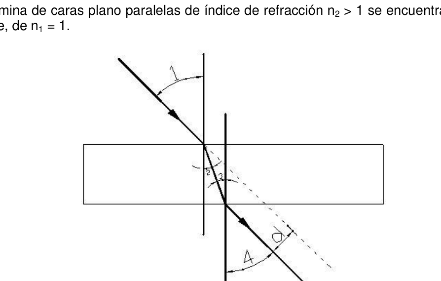
Topic: Geometric Optics Metodi: Snell’s Law, Ray Tracing Competenze: Physical Reasoning, Mathematical Modeling Objects: Prism Fonte: Testo (PDF) — p.5
PT23. Scuola tecnica N° 9 Luis A. - Hoorgo
Città di Buenos Aires.
Una lamina di facce piatte parallele di indice di rifrazione n2 > 1 è circondata per aria, di n1 = 1.
Si richiede: a) realizzare un grafico simile a quello rappresentato nella figura, indicando i nomi dei La Commissione ha adottato una decisione che prevede che il progetto di regolamento (CE) n.
- Non è un problema.
OAF 2017 - 51 b) Se i indici di refraczione n1 e n2 sono conosciuti, ottenere l’espressione per calcolare l’angolo con cui emerge il raggio dell’ultima faccia. Specificare, in caso di se necessario, l’esistenza di altre variabili o caratteristiche utilizzate. (c) Con considerazioni simili a quelle di (b), calcolare il spostamento del raggio che emerge dal percorso del raggio primitivo. (d) eseguire il grafico richiesto in a) se l’indice di refraczione del mezzo che circonda la la lamina è fuori n1 > n2.
Topic: Geometric Optics Metodi: Snell’s Law, Ray Tracing Competenze: Physical Reasoning, Mathematical Modeling Objects: Prism Fonte: Testo (PDF) — p.5
PT23. Technical School N° 9 Luis A. I ‘m not .
City of Buenos Aires.
A sheet of parallel flat-faces with a refractive index n2 > 1 is surrounded for air, of n1 = 1.
The following is requested: (a) Draw a graph similar to that shown in the figure, indicating the names of the The Commission has also adopted a number of proposals for a new directive on the protection of workers’ rights. It’s a problem.
The Commission shall adopt delegated acts in accordance with Article 21 of the Financial Regulation. (b) If the refractive indices n1 and n2 are known, obtain the expression to calculate The angle at which the ray emerges from the last face. Specify, in the case of if necessary, the existence of other variables or characteristics used. (c) With similar considerations as in (b), calculate the beam displacement The first is the emergence of the trajectory of the primitive ray. (d) To perform the graph requested in (a) if the refractive index of the surrounding medium is The following table shows the following:
Topic: Geometric Optics Metodi: Snell’s Law, Ray Tracing Competenze: Physical Reasoning, Mathematical Modeling Objects: Prism Fonte: Testo (PDF) — p.5
PT24. Escuela Técnica N° 9 Luis A. Huergo
Ciudad de Buenos Aires.
Un resorte se deforma 5 cm al colgarse de él un cuerpo de masa = 2 kg. El cuerpo, colgando del resorte anterior, se apoya sobre un resorte de k = 300 N/m, que se encuentra vertical en el fondo de un recipiente vacío. La elongación del resorte del que cuelga la masa es en este caso 3 cm. Luego se llena el recipiente con agua, quedando el cuerpo sumergido. Se observa que en este caso los resortes se deforman, respecto de su longitud natural, 2 cm el inferior y 0,5 cm el superior. Se sabe que el cuerpo está compuesto de dos sustancias de densidades δ1 = 1,2 g/cm3 y δ1 = 1,8 g/cm3. a) Calcular la constante elástica del resorte que sostiene la masa. b) Calcular la deformación del resorte inferior al serle apoyada la masa. c) Calcular la densidad del cuerpo sumergido. d) Calcular que porcentaje de masa aporta cada sustancia.
Topic: Elasticity & Materials, Fluid Mechanics Metodi: Hooke’s Law, Hydrostatic Equilibrium Competenze: Physical Reasoning, Mathematical Modeling Objects: Spring, Block Fonte: Testo (PDF) — p.5
PT24. Scuola tecnica N° 9 Luis A. - Hoorgo
Città di Buenos Aires.
Una resorte si deforma 5 cm appeso a un corpo di massa = 2 kg. Il corpo, appeso alla prima sorgente, si appoggia su una sorgente di k = 300 N/m, che si si trova verticale sul fondo di un contenitore vuoto. L’allungamento della primavera di cui la massa appesa è in questo caso 3 cm. Poi si riempie il contenitore con acqua, lasciando il corpo immerso. Si osserva che in questo caso le sorgenti si deformano rispetto alla loro lunghezza naturale, 2 cm la parte inferiore e 0,5 cm la parte superiore. Si sa che il corpo è in stato di… composto da due sostanze di densità δ1 = 1,2 g/cm3 e δ1 = 1,8 g/cm3. a) Calcolare la costante elastica della sorgente che sostiene la massa. b) Calcolare la deformazione della sorgente inferiore alla massa appoggiata. c) Calcolare la densità del corpo immerso. d) Calcolare la percentuale di massa di ciascuna sostanza.
Topic: Elasticity & Materials, Fluid Mechanics Metodi: Hooke’s Law, Hydrostatic Equilibrium Competenze: Physical Reasoning, Mathematical Modeling Objects: Spring, Block Fonte: Testo (PDF) — p.5
PT24. Technical School N° 9 Luis A. I ‘m not .
City of Buenos Aires.
A spring is deformed 5 cm by hanging a body of mass = 2 kg. The body, Hanging from the previous spring, it rests on a spring of k = 300 N/m, which is It’s found vertically at the bottom of an empty container. The elongation of the spring from which The mass hanging is in this case 3 cm. Then fill the container with water, leaving the water. body submerged. It is noted that in this case the springs are distorted, with respect to their Natural length, 2 cm at the bottom and 0,5 cm at the top. The body is known to be in the composed of two substances of densities δ1 = 1,2 g/cm3 and δ1 = 1,8 g/cm3. (a) Calculate the elastic constant of the spring holding the mass. (b) Calculate the deformation of the lower spring when the mass is supported. (c) Calculate the density of the submerged body. (d) Calculate the percentage of mass of each substance.
Topic: Elasticity & Materials, Fluid Mechanics Metodi: Hooke’s Law, Hydrostatic Equilibrium Competenze: Physical Reasoning, Mathematical Modeling Objects: Spring, Block Fonte: Testo (PDF) — p.5
PT25. Colegio Hermano Hermas de Bruijn - Colegio San Francisco de Asís
ET N° 3 Ing. Santiago Maradona - Instituto de Enseñanza San Jorge
Ciudad de Santiago del Estero.
Un niño está debajo de un naranjo y en un determinado momento arroja una piedra a una naranja que está en la rama del naranjo. La piedra sale con una velocidad de 5m/s en una dirección que forma un ángulo de 37° respecto del suelo. En el mismo instante que arrojó la piedra, la naranja se desprendió del árbol y luego de 0,3 segundos la piedra impactó con la naranja. Nota: Considere g= 10 m/s2
a) Esquematice la situación planteada.(Desprecie la altura del niño) b) Determine la velocidad de la naranja al momento del impacto. c) ¿Cuáles son las coordenadas del punto de encuentro de la piedra y la naranja? d) ¿Desde qué altura cayo la naranja? e) Si la piedra no hubiera impactado en la naranja, ¿a qué distancia del niño hubiera caído la piedra sobre el suelo? f) Realice las graficas de velocidad v(x) y v(y) de la piedra.
Topic: Newtonian Mechanics Metodi: Kinematic Equations, Vector Decomposition Competenze: Physical Reasoning, Mathematical Modeling Objects: Projectile Fonte: Testo (PDF) — p.5
PT25. Collegio Fratello Hermas di Bruijn - Collegio San Francesco di Assisi
E.T. N° 3 Ing. Santiago Maradona - Istituto di istruzione San Jorge
Città di Santiago del Estero.
Un bambino è sotto un arancione e a un certo punto lancia una pietra su di lui un’arancia che è nel ramo dell’arancia. La pietra sale a velocità di 5m/s in una direzione che forma un angolo di 37° rispetto al suolo. In un istante che ha gettato la pietra, l’arancia si è sganciata dall’albero e dopo 0,3 secondi la pietra colpisce l’arancia. Nota: Considera g= 10 m/s2
a) Squamatizzare la situazione. b) Determina la velocità dell’arancia al momento dell’impatto. c) Quali sono le coordinate del punto di incontro della pietra e dell’arancia? d) Da che altezza cade l’arancia? e) Se la pietra non avesse colpito l’arancia, a che distanza dal bambino?
- Se la pietra fosse caduta sul pavimento? f) eseguire i grafici di velocità v(x) e v(y) della pietra.
Topic: Newtonian Mechanics Metodi: Kinematic Equations, Vector Decomposition Competenze: Physical Reasoning, Mathematical Modeling Objects: Projectile Fonte: Testo (PDF) — p.5
PT25. Brother Brother School of Bruijn - College of St. Francis of Assisi
The following table shows the total number of units of the vehicle: Santiago Maradona - Institute of Education of San Jorge
The city of Santiago del Estero.
A child is under an orange tree and at a certain point he throws a stone at her. an orange that’s on the orange branch. The stone is coming out at a speed of 5m/s. in a direction that forms an angle of 37° with respect to the ground. At the same moment He threw the stone, the orange fell off the tree and after 0.3 seconds the stone. It hit the orange. Note: Consider g= 10 m/s2
(a) Schematize the situation. (b) Determine the speed of the orange at the time of impact. (c) What are the coordinates of the meeting point of the stone and the orange? (d) From what height does the orange fall? (e) If the stone had not hit the orange, how far from the child? Would the stone have fallen to the ground? (f) Perform the velocity charts v(x) and v(y) of the stone.
Topic: Newtonian Mechanics Metodi: Kinematic Equations, Vector Decomposition Competenze: Physical Reasoning, Mathematical Modeling Objects: Projectile Fonte: Testo (PDF) — p.5
PT26. Colegio Hermano Hermas de Bruijn - Colegio San Francisco de Asís
ET N° 3 Ing. Santiago Maradona - Instituto de Enseñanza San Jorge
Ciudad de Santiago del Estero.
En la sucursal del BSE de la calle Olaechea dejó de funcionar un cajero automático. La empresa responsable fue a reemplazarlo por uno nuevo. El nuevo cajero está embalado en una caja de madera sin ruedas que tiene un peso de 1500 N. Los técnicos decidieron arrastrar la caja por la rampa de discapacitados ejerciendo una fuerza paralela a la superficie de la rampa. La rampa forma un ángulo de 30° con la horizontal. De acuerdo a la situación planteada, y teniendo en cuenta que las superficies no son rugosas, responda:
52 - OAF 2017 a) El diagrama de cuerpo libre de la caja que contiene el cajero automático. b) ¿Qué fuerza ejercieron los técnicos sobre la caja, si lograron desplazarla con una aceleración de 20 m/ s 2 hasta llegar al extremo superior de la rampa. c) Si realizaron un trabajo de 15000 Nm, desde la base hasta el final de la rampa, que longitud tiene la rampa? d) ¿Cuál es la energía potencial de la caja en el extremo superior de la rampa? e) En una maniobra desafortunada, el cajero se libera de los técnicos que lo soportan y se desliza por la rampa hasta llegar al suelo. En el instante que llega al final de la rampa (suelo), ¿qué velocidad tenia la caja? f) Haciendo la misma fuerza, ¿hubieran logrado subir el cajero automático si la rampa tenía pegada una goma en su superficie?
Coeficiente de roce estático madera-goma =0,80
Coeficiente de roce cinético madera-goma =0,60
Topic: Newtonian Mechanics, Conservation of Energy Metodi: Free-Body Diagram, Energy Conservation Method Competenze: Physical Reasoning, Mathematical Modeling Objects: Block, Inclined Plane Fonte: Testo (PDF) — p.5
PT26. Collegio Fratello Hermas di Bruijn - Collegio San Francesco di Assisi
E.T. N° 3 Ing. Santiago Maradona - Istituto di istruzione San Jorge
Città di Santiago del Estero.
Nella filiale del BSE di Olaechea Street è stata interrotta la funzione di una cassa automatica. La La società responsabile ha deciso di sostituirlo con una nuova. Il nuovo cassiere è pronto. in una scatola di legno senza ruote che pesa 1500 N. I tecnici hanno deciso. trascinare la cassa sul rampa dei disabili esercitando una forza parallela alla superficie del ramp. Il rampo forma un angolo 30° con la orizzontale. Secondo la situazione in questione, e considerando che le superfici non sono rugose, Rispondi:
52 - OAF 2017 a) Il diagramma di corpo libero della cassa contenente la cassa automatica. b) Che forza hanno esercitato i tecnici sulla scatola, se sono riusciti a spostarla con una accelerazione di 20 m/ s 2 fino all’estremità superiore del rampo. c) Se hanno effettuato un lavoro di 15000 Nm, dalla base alla fine del ramp, Qual è la lunghezza della rampa? d) Qual è l’energia potenziale della cassa all’estremità superiore del ramp? e) In un’incidente, il cassiere si libera dei tecnici che lo sopporta e scivola per il ramp fino al suolo. Appena arriva alla fine del rampo, che velocità aveva la scatola? (f) Se la stessa forza fosse stata applicata, l’automobile sarebbe stato rilevato se l’automobile fosse stato rilevato. La rampa aveva un’attaccatura di gomma sulla sua superficie?
Coefficiente di rottura statico legno-gomma =0,80 Coefficiente di rottura cinetica legno-gomma =0,60
Topic: Newtonian Mechanics, Conservation of Energy Metodi: Free-Body Diagram, Energy Conservation Method Competenze: Physical Reasoning, Mathematical Modeling Objects: Block, Inclined Plane Fonte: Testo (PDF) — p.5
PT26. Brother Brother School of Bruijn - College of St. Francis of Assisi
The following table shows the total number of units of the vehicle: Santiago Maradona - Institute of Education of San Jorge
The city of Santiago del Estero.
A cash machine has ceased to operate at the BSE branch on Olaechea Street. La responsible company went to replace it with a new one. The new cashier is packed . in a wooden box without wheels weighing 1500 N. The technicians have decided . drag the box down the disabled ramp by applying a force parallel to the surface of the ramp. The ramp forms an angle of 30° with the horizontal. According to the situation in question, and taking into account that the surfaces are not rough, Answer:
The Commission shall adopt delegated acts in accordance with Article 21 of Regulation (EU) No 1303/2013. (a) The free-body diagram of the box containing the ATM. (b) What force did the technicians exert on the box, if they were able to move it with acceleration of 20 m/ s 2 until reaching the top of the ramp. (c) If they have carried out a 15000 Nm work from the base to the end of the ramp, What’s the length of the ramp? (d) What is the potential energy of the box at the upper end of the ramp? (e) In an unfortunate maneuver, the cashier is released from the technicians who have been They hold it and it slides down the ramp to the ground. As soon as he arrives At the end of the ramp, what was the speed of the box? (f) By doing the same force, would they have been able to get the ATM up if the The ramp had a rubber patch on its surface?
The static rubbing coefficient wood-rubber =0,80 The coefficient of kinetic brushing of wood-rubber =0,60
Topic: Newtonian Mechanics, Conservation of Energy Metodi: Free-Body Diagram, Energy Conservation Method Competenze: Physical Reasoning, Mathematical Modeling Objects: Block, Inclined Plane Fonte: Testo (PDF) — p.5
PT27. Colegio Hermano Hermas de Bruijn - Colegio San Francisco de Asís
ET N° 3 Ing. Santiago Maradona - Instituto de Enseñanza San Jorge
Ciudad de Santiago del Estero.
Un día de verano en Santiago del Estero, Alejandro tiene sed y se sirve un vaso de agua de la canilla (Vagua=250 cm3 ). Al tomar el agua detecta que su temperatura es igual a la del ambiente, es decir 40°. En ese momento se dirige a la heladera y extrae un cubito de hielo (V=12 cm3) del freezer que está a -4°C. Lo coloca en vaso y luego de un momento Alejandro disfruta del vaso de agua, aplacando el calor intenso de la siesta santiagueña. De acuerdo a lo ocurrido, responda: a) ¿Qué cantidad de calor absorbió el cubito de hielo para llegar a 0°C? b) ¿Cuántas calorías debe quitársele al agua para que su temperatura descienda 1°C? c) ¿El hielo se funde completamente?, ¿Por qué? d) ¿Cuál es la temperatura final que alcanza la mezcla de agua con el cubito de hielo? e) ¿Qué hubiera ocurrido si se hubiesen colocado 2 cubitos en lugar de 1?
Calor especifico del Agua (Ce H2O): 1cal/g°C Calor especifico del Hielo (Ce Hielo): 0.5 cal/g°C Calor latente de fusión del Hielo ( Lf Hielo): 80 cal/g Densidad del Agua: 1 g/cm3 Densidad del Hielo: 0,92 g/cm3
Nota: Idealmente ninguno de los elementos intercambia calor con el medio que lo rodea. Desprecie la masa del vaso.
Topic: Thermodynamics Metodi: First Law of Thermodynamics, Conservation of Energy Competenze: Physical Reasoning Objects: Calorimeter Fonte: Testo (PDF) — p.5
PT27. Collegio Fratello Hermas di Bruijn - Collegio San Francesco di Assisi
E.T. N° 3 Ing. Santiago Maradona - Istituto di istruzione San Jorge
Città di Santiago del Estero.
Un giorno d’estate a Santiago del Estero, Alejandro ha sete e serve un bicchiere d’acqua. di canella (Vagua=250 cm3). Quando si prende l’acqua si rileva che la temperatura è uguale alla temperatura di La misurazione è stata effettuata in base al metodo di valutazione del rischio. A quel punto si dirige al frigorifero e tira fuori un cubetto di ghiaccio (V=12 cm3) del congelatore che è a -4°C. Lo mette in un bicchiere e dopo un momento Alejandro gode del bicchiere d’acqua, calmando il caldo intenso del siesta santiagena. Secondo quello che è successo, rispondi: a) Quanta calore ha assorbito il coperchio di ghiaccio per raggiungere 0°C? b) Quante calorie devono essere toglie dall’acqua per far scendere la temperatura? 1°C? c) Il ghiaccio si fonde completamente? d) Qual è la temperatura finale raggiunta dalla miscela di acqua con il coperchio di
- Il ghiaccio? e) Cosa sarebbe successo se si fossero messi due cubetti al posto di uno?
Calore specifico dell’acqua (Ce H2O): 1 cal/g°C Calore specifico del ghiaccio (Ce ghiaccio): 0,5 cal/g°C Calore latente di fusione del ghiaccio (Lf ghiaccio): 80 cal/g Densità dell’acqua: 1 g/cm3 Densità del ghiaccio: 0,92 g/cm3
Nota: Idealmente nessuno degli elementi intercambia calore con l’ambiente circostante. Sprezzate la massa del bicchiere.
Topic: Thermodynamics Metodi: First Law of Thermodynamics, Conservation of Energy Competenze: Physical Reasoning Objects: Calorimeter Fonte: Testo (PDF) — p.5
PT27. Brother Brother School of Bruijn - College of St. Francis of Assisi
The following table shows the total number of units of the vehicle: Santiago Maradona - Institute of Education of San Jorge
The city of Santiago del Estero.
One summer day in Santiago del Estero, Alejandro is thirsty and drinks a glass of water. The following table shows the results of the analysis: When you drink the water , you detect that its temperature is equal to the temperature of the water . the environment, i.e. 40°. At that moment he heads to the freezer and pulls out a cubit of ice (V=12 cm3) from the freezer which is at -4°C. Put it in a glass and then after a while Alexander enjoys the glass of water, soothing the intense heat of the Santiago nap. According to what happened, answer: (a) How much heat did the ice sheet absorb to reach 0°C? (b) How many calories should be removed from the water to lower its temperature? 1°C? (c) Does ice melt completely? Why? (d) What is the final temperature reached by the water mixture with the water cube?
- ice? (e) What would have happened if 2 cubes had been placed instead of 1?
The specific heat of the water (Ce H2O): 1 cal/g°C Specific heat of the ice (Ce Ice): 0.5 cal/g°C Latent heat of melting of ice (Lf ice): 80 cal/g Density of water: 1 g/cm3 The following is the list of the following:
Note: Ideally none of the elements exchange heat with the surrounding environment. Disdain the mass of the glass.
Topic: Thermodynamics Metodi: First Law of Thermodynamics, Conservation of Energy Competenze: Physical Reasoning Objects: Calorimeter Fonte: Testo (PDF) — p.5
PT28. Escuela Normal Juan P. Pringles
Ciudad de San Luis.
En el día del niño le regalaron a tu hermanito una mini montaña rusa de juguete, luego de armarla y probarla te resultó más interesante el juguete a ti que a tu hermanito y empezaste a tomar mediciones de lo cual resultó que el carrito de la montaña rusa tiene una masa de 1,5 kg, el punto A se encuentra a una altura de 1 m por encima del punto más bajo de la pista. Luego de pasar por el punto A el carrito se desliza cuesta abajo y sigue la pista alrededor de un bucle con un radio de 25 cm, en todo este tramo la fricción es despreciable pero el carrito continúa su recorrido pasando por una zona en donde la superficie tiene fricción y cubre unos 50cm y encuentra por internet que el coeficiente de fricción entre las dos superficies en contacto es de 0,22.
OAF 2017 - 53
a) ¿Cuánto trabajo se necesita para que el carrito alcance el punto A? b) Calcule la rapidez del carro en el punto C. c) Dibuje y describa las fuerzas que actúan sobre el carro cuando se encuentra en el punto C. d) Calcule la velocidad del carrito en el punto B. e) Dibuje y describa las fuerzas que actúan sobre el carrito cuando se encuentra invertido en el punto B. f) Cuando el carrito pasa por la zona de fricción, ¿Cómo le afecta a su movimiento? ¿Qué fuerza neta experimenta? ¿Logra superar la zona de fricción el carrito? y si es así, ¿Con qué velocidad continúa después?
Topic: Conservation of Energy, Newtonian Mechanics Metodi: Energy Conservation Method, Free-Body Diagram Competenze: Physical Reasoning, Mathematical Modeling Objects: Cart Fonte: Testo (PDF) — p.5
PT28. Scuola Normale Juan P. Pringles
Città di San Luis.
Il giorno del bambino, hanno regalato a tuo fratello un mini roller coaster giocattolo, dopo
- E ’ un gioco che ti interessa più di tuo fratello. Hai iniziato a prendere le misure che ha scoperto che il carro della rusa ha una massa di 1,5 kg, il punto A è situato ad un’altezza di 1 m sopra il punto più basso del tracciato. Dopo aver attraversato il punto A, il carrello scivola verso il basso e… segue la pista intorno a un ciclo con un raggio di 25 cm, in tutto questo tratto la frizione E ’ disprezzabile, ma il carro continua il suo percorso attraversando un’area dove la La superficie è a circa 50 cm di rigore e si trova su Internet che il coefficiente di la frizione tra le due superfici in contatto è di 0,22.
OAF 2017 - 53
a) Quanto lavoro è necessario per raggiungere il punto A? b) Calcolare la velocità del carro al punto C. (c) Disegna e descriva le forze che agiscono sul carro quando si trova in il punto C. d) Calcolare la velocità del carrello al punto B. e) Disegna e descriva le forze che agiscono sul carrello quando si trova inverso al punto B. f) Quando il carrello passa attraverso la zona di frizione, come l’effetto ha sulla sua movimento? Che forza netta sperimenta? Riuscirà a superare la zona di attrito? Il carrello? E se è così, a che velocità continua dopo?
Topic: Conservation of Energy, Newtonian Mechanics Metodi: Energy Conservation Method, Free-Body Diagram Competenze: Physical Reasoning, Mathematical Modeling Objects: Cart Fonte: Testo (PDF) — p.5
PT28. The school is a private school. Pringles .
City of St. Louis.
On child’s day, your little brother was given a mini toy roller coaster, after You found the toy more interesting to you than your little brother and… You started taking measurements which turned out the roller coaster cart has a mass of 1,5 kg, point A is at a height of 1 m above the point lower off the track. After passing through point A the cart slides down the hill and Follow the track around a loop with a radius of 25 cm, throughout this stretch friction It’s despicable, but the cart continues its journey through an area where the The surface has friction and covers about 50 cm and finds on the Internet that the coefficient of The friction between the two contact surfaces is 0.22.
The Commission shall adopt delegated acts in accordance with Article 21 of the Financial Regulation.
(a) How much work is needed to get the cart to point A? (b) Calculate the speed of the car at point C. (c) Draw and describe the forces acting on the car when it is in the vehicle. the point C. (d) Calculate the speed of the cart at point B. (e) Draw and describe the forces acting on the cart when it is in position Inverted at point B. (f) When the cart passes through the friction zone, how does it affect its What’s the motion? What net force does he experience? Can you get past the friction zone? The cart? And if so, how fast does it go on after that?
Topic: Conservation of Energy, Newtonian Mechanics Metodi: Energy Conservation Method, Free-Body Diagram Competenze: Physical Reasoning, Mathematical Modeling Objects: Cart Fonte: Testo (PDF) — p.5
PT29. Escuela Normal Juan P. Pringles
Ciudad de San Luis.
Los movimientos de tres autos A, B y C, en una calle, están representados en el diagrama v(t) de la figura de este problema. En el instante t=0, los tres coches se hallan uno al lado del otro, a una distancia de 140 m de una señal que dice que ―No hay paso‖.
a) Describa el movimiento de cada auto Y compare.
b) Empleando el gráfico, verifique si alguno de ellos rebasó la señal.
c) Calcula a partir del gráfico la aceleración que experimenta cada móvil.
d) Escribe la ecuación de movimiento de cada móvil.
e) Realiza los gráficos de posición versus tiempo de cada móvil en el mismo eje de
coordenadas.
54 - OAF 2017
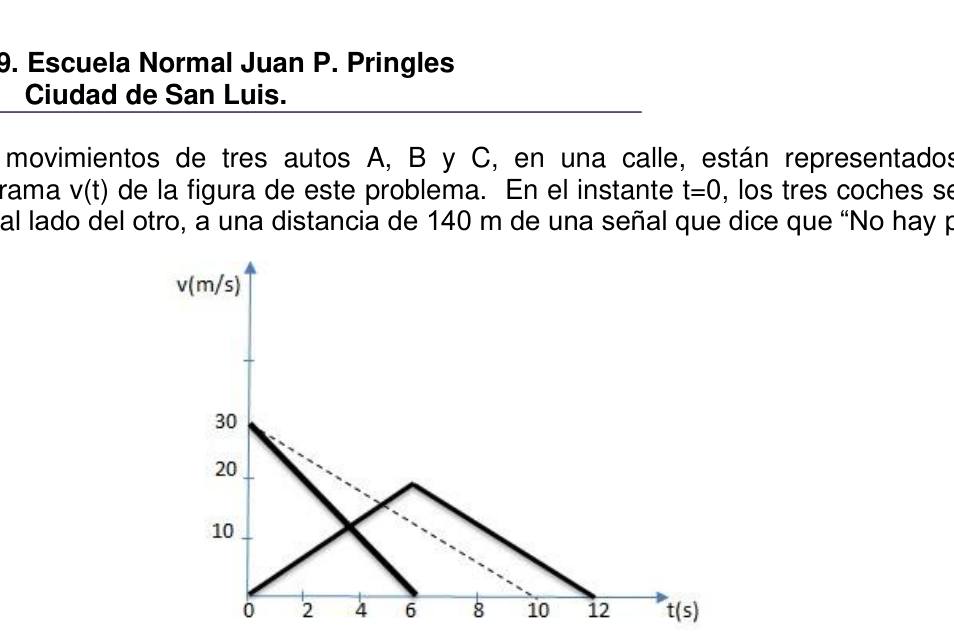
Topic: Newtonian Mechanics Metodi: Kinematic Equations, Graph Linearization Competenze: Physical Reasoning, Mathematical Modeling Objects: — Fonte: Testo (PDF) — p.5
PT29. Scuola Normale Juan P. Pringles
Città di San Luis.
I movimenti di tre auto A, B e C, in una strada, sono rappresentati nel Il diagramma v (t) della figura di questo problema. Nel momento t=0, le tre auto sono presenti uno accanto all’altro, a 140 metri da un segnale che dice “Non c’è passaggio”.
a) Descrivi il movimento di ogni auto e confronta. b) Usando il grafico, verificate se uno di essi ha superato il segnale. c) Calcola l’accelerazione che ogni mobile prova a partire dal grafico. d) Scrivi l’equazione di movimento di ogni mobile. e) Realizza i grafici di posizione versus tempo di ogni cellulare sullo stesso asse di coordinate.
54 - OAF 2017
Topic: Newtonian Mechanics Metodi: Kinematic Equations, Graph Linearization Competenze: Physical Reasoning, Mathematical Modeling Objects: — Fonte: Testo (PDF) — p.5
PT29. The school is a private school. Pringles .
City of St. Louis.
The movements of three cars A, B and C, on one street, are represented in the The following table shows the figures for this problem. In the t=0 instant, the three cars are there. One next to the other, at a distance of 140 meters from a signal that says “There’s no way”.
(a) Describe the movement of each car and compare. (b) Using the chart, check if any of them exceeded the signal. (c) Calculate the acceleration experienced by each mobile from the graph. (d) Write the equation of motion of each mobile. (e) Performs the position versus time charts of each mobile on the same axis of coordinates.
The following is the list of the countries of the European Union:
Topic: Newtonian Mechanics Metodi: Kinematic Equations, Graph Linearization Competenze: Physical Reasoning, Mathematical Modeling Objects: — Fonte: Testo (PDF) — p.5
PT30. Escuela Normal Juan P. Pringles
Ciudad de San Luis.
En una de las clases de Física los llevan al Laboratorio de Física de la Universidad Nacional de San Luis en donde los profesores han armado un experimento de electrostática. Se puede observar una esfera metálica apoyada en la mesada de trabajo, la misma contiene una carga en exceso de -6 µC y se encuentra aislada, pero lo que más llama la atención es que una gota de aceite de 6gr levita por encima de la esfera y la misma no se apoya sobre nada ni tiene cuerdas que la sostengan, como se muestra en la imagen de este problema.
Le proponen: a) Explicar lo que sucede con la gota a partir de los pocos datos que le dieron. Si es necesario hacer el diagrama de cuerpo libre de la gota. Y deducir ¿Cuál es el signo de la carga de la gota? b) Medir la distancia a la que se encuentra levitando la gota respecto del centro de la esfera (les da 15cm) y encontrar la magnitud de la carga de la gota. c) Le proponen que deduzca que pasaría si duplicamos la carga en la gota ¿Cuál será su aceleración inicial? Justifique. d) Si se cambia la carga de a esfera por una del mismo valor pero con signo positivo ¿Qué es lo que cambia? Justifique
Topic: Electrostatics Metodi: Coulomb’s Law, Free-Body Diagram Competenze: Physical Reasoning, Mathematical Modeling Objects: Droplet, Conducting Sphere Fonte: Testo (PDF) — p.5
PT30. Scuola Normale Juan P. Pringles
Città di San Luis.
In una delle lezioni di fisica, vengono portati al laboratorio di fisica dell’università. Nazionale di San Luis dove i professori hanno armato un esperimento di
- l’elettrostatica. Si può osservare una sfera metallica appoggiata sul lavoro, la stessa contiene un carico in eccesso di -6 μC e si trova isolata, ma che La cosa più interessante è che una goccia di olio di 6 gr levita sopra la sfera e la non si appoggia a nulla e non ha corde che lo sostengano, come si vede in immagine di questo problema.
Gli propongono: a) Esprimi cosa succede alla goccia a partire dai pochi dati che ti sono stati dati. Si è necessario fare il diagramma del corpo libero dalla goccia. E dedurre quale è il Segno del carico della goccia? b) Misurare la distanza a cui si trova la goccia levita rispetto al centro di La sfera (le dà 15 cm) e trovare la grandezza del carico della goccia. c) Propongono di dedurre che sarebbe successo se raddoppiassimo il carico nella goccia. sarà la sua accelerazione iniziale? giustifica. d) Se si cambia la carica di a sfera per una della stessa valore ma con segno positivo. Cosa cambia? Giustifica
Topic: Electrostatics Metodi: Coulomb’s Law, Free-Body Diagram Competenze: Physical Reasoning, Mathematical Modeling Objects: Droplet, Conducting Sphere Fonte: Testo (PDF) — p.5
PT30. The school is a private school. Pringles .
City of St. Louis.
In one of the physics classes they take them to the University’s Physics Laboratory. National of St. Louis where teachers have armed an experiment of The electrostatic system. You can see a metallic sphere supported on the workpiece, The same contain a load in excess of -6 μC and is isolated, but what Most striking is that a 6g drop of oil leaved above the sphere and the It is not supported by anything, nor does it have ropes to hold it, as shown in the image of this problem.
They propose: (a) Explain what happens to gout from the few data you were given. Si It is necessary to make the drop-free body diagram. And deduce what it is Sign of the drop load? (b) Measure the distance at which the drop is levitating from the centre of the eye. The sphere (give them 15cm) and find the magnitude of the drop load. (c) They propose that you deduce what would happen if we double the load on the drop? will be its initial acceleration? You justify it. (d) If the load of a sphere is changed by one of the same value but with a sign What’s the difference? Justify it
Topic: Electrostatics Metodi: Coulomb’s Law, Free-Body Diagram Competenze: Physical Reasoning, Mathematical Modeling Objects: Droplet, Conducting Sphere Fonte: Testo (PDF) — p.5
PT31. EPET N° 4 OEA
Puerto Iguazú, Misiones.
A continuación, se muestra el circuito de la caja de cambios de un auto eléctrico. La misma permite obtener 3 marchas hacia adelante. Mediante un ensayo se determinó que cuando el motor gira a 1500 rpm, consume 52,5 A (considere una relación lineal entre la velocidad de giro del motor y la corriente eléctrica que por él circula). Se le pide que:
- Seleccione las resistencias e indique las llaves que deben cerrarse o quedar abiertas para que el motor gire a 500, 788.2 y 1000 rpm. Las resistencias disponibles son 0,37 Ω, 0,5 Ω y 2 Ω. Considere al motor como ideal.
- ¿Cómo haría para el motor gire al revés?
- ¿Cuál es la corriente máxima que debe entregar la batería y la potencia máxima que disipan las resistencias por efecto Joule?
OAF 2017 - 55
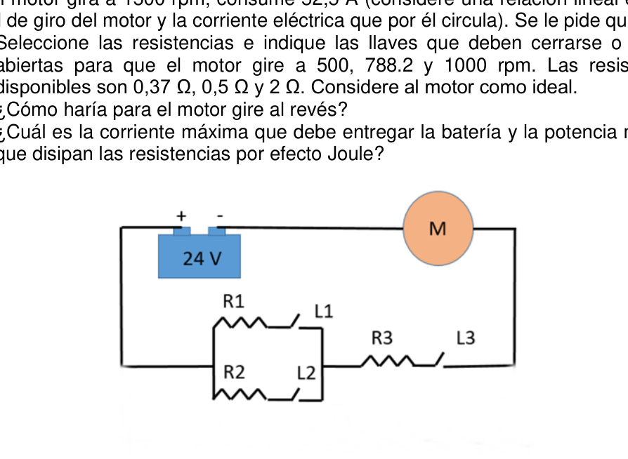
Topic: Circuits Metodi: Kirchhoff’s Laws, Equivalent Circuit Reduction Competenze: Physical Reasoning, Mathematical Modeling Objects: Resistor, Switch, Battery Fonte: Testo (PDF) — p.5
PT31. La Commissione ha adottato una decisione che modifica la direttiva del Consiglio 76/269/CEE.
Port Iguazú, Missioni.
In seguito è mostrato il circuito della casella di cambio di un’auto elettrica. La La stessa cosa permette di ottenere 3 passi avanti. In un test è stato determinato che Quando il motore gira a 1500 rpm, consuma 52,5 A (considera un rapporto lineare tra velocità di rotazione del motore e corrente elettrica che circola attraverso di esso). Vi viene chiesto di:
- Selezionare le resistenze e indicare le chiavi che devono essere chiuse o rimanere aperte per il motore a 500, 788,2 e 1000 giri al minuto. Le resistenze sono disponibili 0,37 Ω, 0,5 Ω e 2 Ω. Considera il motore come ideale.
- Come farebbe per il motore a girare al contrario?
- Qual è la corrente massima che deve essere consegnata dalla batteria e la potenza massima? che dissipano le resistenze per effetto Joule?
OAF 2017 - 55
Topic: Circuits Metodi: Kirchhoff’s Laws, Equivalent Circuit Reduction Competenze: Physical Reasoning, Mathematical Modeling Objects: Resistor, Switch, Battery Fonte: Testo (PDF) — p.5
PT31. The following table shows the results of the evaluation:
Port Iguazu, Mission is the place.
The circuit of the transmission of an electric car is shown below. La It allows you to get 3 steps forward. It was determined by an experiment that When the engine is running at 1500 rpm, it consumes 52.5 A (consider a linear ratio between the speed of rotation of the motor and the electric current flowing through it). You are asked to:
- Select resistors and indicate the keys to be closed or left. The engine is opened to rotate at 500, 788.2 and 1000 rpm. The resistance available are 0,37 Ω, 0,5 Ω and 2 Ω. Consider the engine as ideal.
- How would you turn the engine back?
- What is the maximum current that the battery must deliver and the maximum power? What about the Joule effect?
The following is the list of the Member States’ financial statements:
Topic: Circuits Metodi: Kirchhoff’s Laws, Equivalent Circuit Reduction Competenze: Physical Reasoning, Mathematical Modeling Objects: Resistor, Switch, Battery Fonte: Testo (PDF) — p.5
PT32. EPET N° 4 OEA
Puerto Iguazú, Misiones.
El sistema mostrado en la figura está formado por dos bloques de masas m1=12 kg y m2=38 kg que se mueven hacia la derecha. Los bloques están unidos por una cuerda ideal que pasa por una polea de masa M=146 kg y radio R=0,7 m. Un bloque se mueve sobre un plano inclinado y el coeficiente de fricción en todas las superficies vale k=0,17.
Calcular:
- La aceleración tangencial de un punto del borde de la polea de radio R y masa
M, cuyo momento de inercia con respecto a su eje de giro vale
𝐼= 𝑀𝑅2 2 - La aceleración lineal de cada masa.
- Las tensiones en la cuerda.
Topic: Rotational Dynamics Metodi: Torque & Angular Momentum Analysis, Free-Body Diagram Competenze: Physical Reasoning, Mathematical Modeling Objects: Pulley, Block, Inclined Plane Fonte: Testo (PDF) — p.5
PT32. La Commissione ha adottato una decisione che modifica la direttiva del Consiglio 76/269/CEE.
Port Iguazú, Missioni.
Il sistema mostrato nella figura è formato per due blocchi di massa m1=12 kg e m2=38 kg che si muovono a destra. I i blocchi sono uniti da una corda ideale che passa attraverso un pole di massa M=146 kg e radio R=0,7 m. Un blocco si muove su un piano inclinato e il coefficiente di attrito in tutti Le superfici sono k=0,17.
Calcolare:
- L’accelerazione tangenziale di un punto del bordo della polea di radio R e massa M, il cui momento di inerzia rispetto al suo asse di rotazione vale 𝐼= 𝑀𝑅2 2
- L’accelerazione lineare di ogni massa.
- Tensioni nella corda.
Topic: Rotational Dynamics Metodi: Torque & Angular Momentum Analysis, Free-Body Diagram Competenze: Physical Reasoning, Mathematical Modeling Objects: Pulley, Block, Inclined Plane Fonte: Testo (PDF) — p.5
PT32. The following table shows the results of the evaluation:
Port Iguazu, Mission is here.
The system shown in the figure is formed For two blocks of mass m1=12 kg and m2=38 kg moving to the right. The The blocks are connected by an ideal rope that It passes through a pulley of mass M=146 kg and radius R=0,7 m. A block moves on a plane. slope and friction coefficient at all The surfaces are k=0.17.
Calculation:
- The tangential acceleration of a point on the edge of the R-ray pole and mass M, whose moment of inertia with respect to its axis of rotation is equal to 𝐼= 𝑀𝑅2 2
- The linear acceleration of each mass.
- The tension on the rope.
Topic: Rotational Dynamics Metodi: Torque & Angular Momentum Analysis, Free-Body Diagram Competenze: Physical Reasoning, Mathematical Modeling Objects: Pulley, Block, Inclined Plane Fonte: Testo (PDF) — p.5
PT33. EPET N° 4 OEA
Puerto Iguazú, Misiones.
Un cilindro vertical de paredes adiabáticas y 100 cm de altura está dividido en dos partes por una membrana impermeable que se encuentra a 50 cm de la base. La parte superior del cilindro está encerrada por un pistón adiabático sobre el que se ejerce una presión exterior constante. Inicialmente la parte inferior está vacía, mientras que la superior contiene un mol de gas ideal monoatómico a 300 K, encontrándose el pistón a 100 cm de altura. En un momento determinado se rompe la membrana y, en consecuencia, el pistón desciende. Determine la altura a la que se detiene el pistón una vez que se ha alcanzado el equilibrio, y el trabajo realizado sobre el gas.
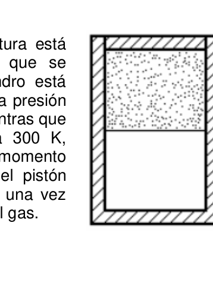
Topic: Thermodynamics Metodi: First Law of Thermodynamics, Ideal Gas Law Competenze: Physical Reasoning, Mathematical Modeling Objects: Gas, Piston, Cylinder Fonte: Testo (PDF) — p.5
PT33. La Commissione ha adottato una decisione che modifica la direttiva del Consiglio 76/269/CEE.
Port Iguazú, Missioni.
Un cilindro verticale di pareti adiabatiche, alto 100 cm, è Diviso in due parti da una membrana impermeabile che si si trova a 50 cm dalla base. La parte superiore del cilindro è bloccato da un pistone adiavatico su cui viene esercitato una pressione esterno costante. Inizialmente la parte inferiore è vuota, mentre la parte superiore contiene un mol di gas ideale monoatomo a 300 K, il pistone si trova a 100 cm di altezza. In un momento . La membrana è rotta e, di conseguenza, il pistone è rotto. Scende. Determina l’altezza a cui si ferma il pistone una volta che il bilanciamento è stato raggiunto, e il lavoro fatto sul gas.
Topic: Thermodynamics Metodi: First Law of Thermodynamics, Ideal Gas Law Competenze: Physical Reasoning, Mathematical Modeling Objects: Gas, Piston, Cylinder Fonte: Testo (PDF) — p.5
PT33. The following table shows the results of the evaluation:
Port Iguazu, Mission is the place.
A vertical cylinder of adiabatic walls and 100 cm high is divided in two by an impermeable membrane which is It’s 50 cm from the base. The top of the cylinder is Locked by an adiabatic piston on which pressure is applied the external constant. Initially the bottom is empty, while The upper one contains a mol of monoatomic ideal gas at 300 K, The piston is located at a height of 100 cm. In a moment . The membrane is broken and the piston is broken. Get down there. Determine the height at which the piston stops once The Commission has already established a balance between the two.
Topic: Thermodynamics Metodi: First Law of Thermodynamics, Ideal Gas Law Competenze: Physical Reasoning, Mathematical Modeling Objects: Gas, Piston, Cylinder Fonte: Testo (PDF) — p.5
PT34. EPET N° 16
Dos de Mayo, Misiones.
Sobre un plano inclinado de 5 metros se desliza un cuerpo cuya masa es de 3kg. El
ángulo de inclinación del plano es de 60° con respecto a la horizontal. Al final del plano
hay una superficie horizontal de 1 metro, luego de la cual el cuerpo cae libremente hasta
el suelo que se encuentra 5 metros más abajo.
a) Determina la aceleración que adquiere el cuerpo suponiendo que el rozamiento
es despreciable.
b) ¿Qué energía potencial tiene antes de comenzar el descenso?
c) ¿Con que velocidad llega el cuerpo al final de la superficie inclinada?
d) ¿Cuánto tiempo emplea el cuerpo en llegar al suelo?
e) ¿A qué distancia (medida horizontalmente) cae el cuerpo?
f) Suponiendo que el coeficiente de rozamiento es µ=0,15 ¿qué aceleración recibe
el cuerpo mientras desciende por la superficie inclinada?
56 - OAF 2017
Topic: Newtonian Mechanics, Conservation of Energy Metodi: Kinematic Equations, Free-Body Diagram, Energy Conservation Method Competenze: Physical Reasoning, Mathematical Modeling Objects: Block, Inclined Plane, Projectile Fonte: Testo (PDF) — p.5
PT34. La Commissione ha adottato una decisione che non prevede che la Commissione non possa adottare misure di cui al paragrafo 1.
Due maggio, missioni.
Su un piano inclinato di 5 metri si scivola un corpo di 3 kg di massa. El l’angolo di inclinamento del piano è di 60° rispetto al orizzontale. Alla fine del piano C’è una superficie orizzontale di 1 metro, dopo la quale il corpo cade liberamente fino a il terreno che si trova 5 metri più in basso. a) Determina l’accelerazione che il corpo acquista, supponendo che il rottura è disprezzabile. b) Qual è la sua energia potenziale prima di iniziare la discesa? c) A che velocità il corpo arriva alla fine della superficie inclinata? d) Quanto tempo ci vuole per arrivare al suolo? e) A che distanza (misurata orizzontalmente) si trova il corpo? f) Supponendo che il coefficiente di rottura sia μ=0.15 che accelerazione riceve il corpo mentre scende sulla superficie inclinata?
56 - OAF 2017
Topic: Newtonian Mechanics, Conservation of Energy Metodi: Kinematic Equations, Free-Body Diagram, Energy Conservation Method Competenze: Physical Reasoning, Mathematical Modeling Objects: Block, Inclined Plane, Projectile Fonte: Testo (PDF) — p.5
PT34. The following information is provided:
May 2nd, missions.
On a sloping plane of 5 meters a body weighing 3 kg slides. El the plane angle of inclination is 60° with respect to the horizontal. At the end of the picture There’s a horizontal surface of 1 meter, after which the body falls freely upwards. The ground that’s 5 meters down. (a) Determines the acceleration acquired by the body assuming that the friction is It’s despicable. (b) What potential energy does it have before the descent begins? (c) How fast does the body reach the end of the sloping surface? (d) How long does it take the body to reach the ground? (e) How far (horizontally measured) does the body fall? (f) Assuming the coefficient of friction is μ=0.15 what acceleration is given The body as it descends down the sloping surface?
The following is the list of the countries of the European Union:
Topic: Newtonian Mechanics, Conservation of Energy Metodi: Kinematic Equations, Free-Body Diagram, Energy Conservation Method Competenze: Physical Reasoning, Mathematical Modeling Objects: Block, Inclined Plane, Projectile Fonte: Testo (PDF) — p.5
PT35. EPET N° 16
Dos de Mayo, Misiones.
El siguiente circuito eléctrico está conectado a una fuente de 220voltios (que consideraremos sin resistencia interna), con una resistencia total desconocida y una potencia de 500 Watts
a) Determina el valor de la resistencia total b) Calcula la intensidad en cada rama del circuito c) ¿Cuál debe ser valor de la resistencia X d) ¿Qué cantidad de energía consume el circuito si permanece conectado durante una hora? e) En X está conectado un motor que en esas condiciones tiene una velocidad de rotación de 1500 r.p.m. Determinar el torque del mismo
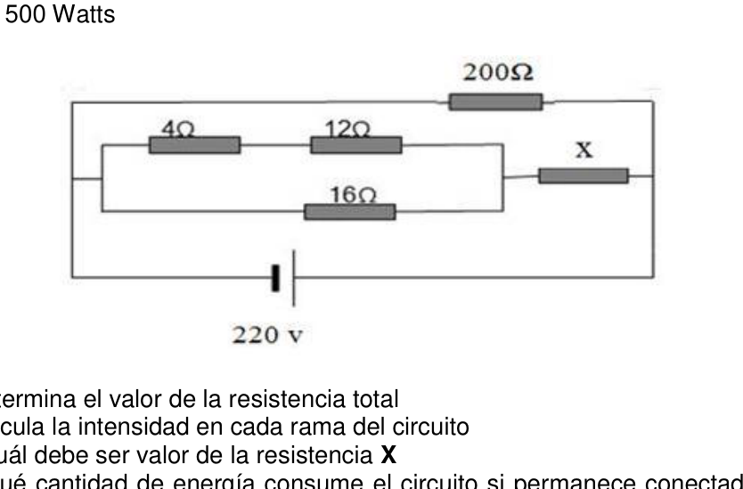
Topic: Circuits Metodi: Kirchhoff’s Laws, Equivalent Circuit Reduction Competenze: Physical Reasoning, Mathematical Modeling Objects: Resistor, Battery Fonte: Testo (PDF) — p.5
PT35. La Commissione ha adottato una decisione che non prevede che la Commissione non possa adottare misure di cui al paragrafo 1.
Due maggio, missioni.
Il circuito elettrico seguente è collegato a una fonte di 220 volt (che Considerate come resistente interno, con una resistenza totale sconosciuta e una resistenza totale. Potenza di 500 Watts
a) Determina il valore della resistenza totale b) Calcola l’intensità in ogni ramo del circuito (c) Qual è il valore della resistenza X d) Quanta energia il circuito consuma se rimane connesso per un periodo di tempo
- Un’ora? e) In X è collegato un motore che in queste condizioni ha una velocità di rotazione di 1500 r.p.m. Determinare la torsione di tale
Topic: Circuits Metodi: Kirchhoff’s Laws, Equivalent Circuit Reduction Competenze: Physical Reasoning, Mathematical Modeling Objects: Resistor, Battery Fonte: Testo (PDF) — p.5
PT35. The following information is provided:
May 2nd, missions.
The following electrical circuit is connected to a 220 volt source (which We will consider no internal resistance), with total resistance unknown and a Power of 500 Watts
(a) Determines the value of the total resistance (b) Calculate the intensity in each branch of the circuit (c) What is the resistance value of X? (d) How much energy is consumed by the circuit if it remains connected for a period of time
- What? (e) In X is connected an engine which under these conditions has a speed of a rotation speed of 1500 r.p.m. Determine the torque of the same
Topic: Circuits Metodi: Kirchhoff’s Laws, Equivalent Circuit Reduction Competenze: Physical Reasoning, Mathematical Modeling Objects: Resistor, Battery Fonte: Testo (PDF) — p.5
PT36. EPET N° 16
Dos de Mayo, Misiones.
Dos moles de un gas monoatómico de comportamiento ideal realizan una expansión
isotérmica desde 1000 cm3 hasta 6000 cm3 a 350 K.
a) Calcular el trabajo realizado, si el proceso es irreversible con una presión exterior
de 8,2 Atm
b) Calcula el trabajo si el proceso es reversible
c) Determina a qué velocidad cambia la presión interna cuando el volumen es 4000
cm3 si en ese momento el incremento de volumen es 0,2 m3/s
Topic: Thermodynamics Metodi: Ideal Gas Law, First Law of Thermodynamics, Calculus-Integration Competenze: Physical Reasoning, Mathematical Modeling Objects: Gas Fonte: Testo (PDF) — p.5
PT36. La Commissione ha adottato una decisione che non prevede che la Commissione non possa adottare misure di cui al paragrafo 1.
Due maggio, missioni.
Due molli di un gas monoatomo di comportamento ideale effettuano un’espansione. Isotermico da 1000 cm3 a 6000 cm3 a 350 K. a) Calcolare il lavoro svolto, se il processo è irreversibile con una pressione esterna di 8,2 Atm b) Calcola il lavoro se il processo è reversibile c) Determina a che velocità cambia la pressione interna quando il volume è 4000 cm3 se a quel punto l’aumento di volume è di 0,2 m3/s
Topic: Thermodynamics Metodi: Ideal Gas Law, First Law of Thermodynamics, Calculus-Integration Competenze: Physical Reasoning, Mathematical Modeling Objects: Gas Fonte: Testo (PDF) — p.5
PT36. The following information is provided:
May 2nd, missions.
Two moles of a monatomic gas of ideal behavior perform an expansion. isothermal from 1000 cm3 to 6000 cm3 to 350 K. (a) Calculate the work done if the process is irreversible under external pressure of 8,2 Atm (b) Calculate the work if the process is reversible (c) Determines the rate at which internal pressure changes when the volume is 4000. cm3 if at that time the volume increase is 0,2 m3/s
Topic: Thermodynamics Metodi: Ideal Gas Law, First Law of Thermodynamics, Calculus-Integration Competenze: Physical Reasoning, Mathematical Modeling Objects: Gas Fonte: Testo (PDF) — p.5
Tiro oblicuo
PT37.
Resistencia, Chaco.
Tiro oblicuo. Desde un avión se tira un proyectil horizontalmente desde una altura de 200 m con una velocidad de 15 m/s. a) Ubiquen un sistema de referencia para el fenómeno descripto. b) Hallar las componentes de la velocidad. c) Calcular el tiempo que tarda en tocar el suelo. d) Calcular el alcance.
OAF 2017 - 57
Topic: Newtonian Mechanics Metodi: Kinematic Equations, Vector Decomposition Competenze: Physical Reasoning, Mathematical Modeling Objects: Projectile Fonte: Testo (PDF) — p.5
Tiro oblico
PT37.
Resistenza, Chaco.
Tiro oblicuo. Da un aereo viene lanciato un proiettile orizzontalmente da un’altezza di 200 m con un velocità di 15 m/s. a) Sosteni un sistema di riferimento per il fenomeno descritto. b) Indicare i componenti della velocità. c) Calcolare il tempo necessario per toccare il suolo. d) Calcolare la portata.
OAF 2017 - 57
Topic: Newtonian Mechanics Metodi: Kinematic Equations, Vector Decomposition Competenze: Physical Reasoning, Mathematical Modeling Objects: Projectile Fonte: Testo (PDF) — p.5
The following is the list of the types of vehicles used:
PT37.
Resistance, Chaco. What is it?
Oblique shot. From an airplane a projectile is thrown horizontally from a height of 200 m with a speed of 15 m/s. (a) Set a reference system for the phenomenon described. (b) Find the components of the speed. (c) Calculate the time it takes to touch the ground. (d) Calculate the scope.
The Commission shall adopt delegated acts in accordance with Article 21 of Regulation (EU) No 1303/2013.
Topic: Newtonian Mechanics Metodi: Kinematic Equations, Vector Decomposition Competenze: Physical Reasoning, Mathematical Modeling Objects: Projectile Fonte: Testo (PDF) — p.5
Electroestatica
PT38.
Resistencia, Chaco.
Electroestática. Tres cargas puntuales 𝑞1, 𝑞2 y 𝑞3, se encuentran ubicadas en los vértices de un triángulo rectángulo sabiendo que el ángulo sobre el vértice de la q3 es de 30°como muestra la figura:
a) Calcular la F13. b) Calcular la F23. c) Calcular la fuerza resultante sobre q3. d) Calcular el ángulo de la fuerza resultante.
Topic: Electrostatics Metodi: Coulomb’s Law, Superposition Principle, Vector Decomposition Competenze: Physical Reasoning, Mathematical Modeling Objects: Point Charge Fonte: Testo (PDF) — p.5
Electroestatica
PT38.
Resistenza, Chaco.
- Eletrostatica. Tre cariche puntate q1, q2 e q3 si trovano situate sui vertici di un triangolo rectangle sapendo che l’angolo sul vertice della q3 è di 30° come mostra la figura:
a) Calcolare la F13. b) Calcolare la F23. c) Calcolare la forza risultante su q3. d) Calcolare l’angolo della forza risultante.
Topic: Electrostatics Metodi: Coulomb’s Law, Superposition Principle, Vector Decomposition Competenze: Physical Reasoning, Mathematical Modeling Objects: Point Charge Fonte: Testo (PDF) — p.5
The following table shows the results of the calculations:
PT38.
Resistance, Chaco. What is it?
It’s electrostatic. Three point loads q1, q2 and q3 are located at the vertices of a triangle. rectangle knowing that the angle over the vertex of the q3 is 30° as shown by Figure:
(a) Calculate the F13. (b) Calculate the F23. (c) Calculate the resulting force on q3. (d) Calculate the angle of the resulting force.
Topic: Electrostatics Metodi: Coulomb’s Law, Superposition Principle, Vector Decomposition Competenze: Physical Reasoning, Mathematical Modeling Objects: Point Charge Fonte: Testo (PDF) — p.5
Termodinamica
PT39.
Resistencia, Chaco.
Termodinámica. Se tiene contenido en un recipiente un gas ideal que posee 0,015 m3 de volumen, está a una temperatura de 321K y a una presión de 1,013.105 Pa. Si el gas se expande, hasta ocupar un volumen de 0,025 m3 y la presión disminuye a 8.104Pa : a) Calcular el número de moles del gas. b) Calcular la temperatura final del sistema.
Topic: Thermodynamics Metodi: Ideal Gas Law Competenze: Physical Reasoning, Mathematical Modeling Objects: Gas Fonte: Testo (PDF) — p.5
Termodinamica
PT39.
Resistenza, Chaco.
Termodinamica. Un contenitore di gas ideale di 0,015 m3 di volume è una temperatura di 321 K e una pressione di 1,013,105 Pa. Se il gas si espandesse, fino a occuparsi di un volume di 0,025 m3 e la pressione diminuire a 8,104Pa: a) Calcolare il numero di molli di gas. b) Calcolare la temperatura finale del sistema.
Topic: Thermodynamics Metodi: Ideal Gas Law Competenze: Physical Reasoning, Mathematical Modeling Objects: Gas Fonte: Testo (PDF) — p.5
The following table shows the results of the calculations:
PT39.
Resistance, Chaco. What is it?
It’s thermodynamic. The ideal gas contained in a container is 0.015 m3 in volume. a temperature of 321 K and a pressure of 1,013,105 Pa. If the gas expands, up to The pressure is reduced to 8.104Pa: (a) Calculate the number of moles of gas. (b) Calculate the final temperature of the system.
Topic: Thermodynamics Metodi: Ideal Gas Law Competenze: Physical Reasoning, Mathematical Modeling Objects: Gas Fonte: Testo (PDF) — p.5
PT40. Instituto Eduardo L. Holmberg
Quilmes, Buenos Aires.
En un laboratorio científico se está analizando una partícula subatómica nueva para determinar sus propiedades. En un primer experimento se dispara una de estas partículas en dirección perpendicular a un campo magnético, tal como se ve en el esquema de abajo. Lo primero que se ve es que la partícula adopta una trayectoria circular cuando entra al campo magnético.
a) ¿Qué se puede deducir sobre las propiedades de la partícula al ver que adopta una trayectoria circular? b) Jaime, el científico encargado de este experimento, dice que el radio de la trayectoria circular es un dato muy importante para conocer las características de la partícula. Demostrar que la expresión para el radio de giro de la partícula es
𝑟= 𝑚 𝑣 𝐵 𝑞 donde B es la densidad de flujo del campo magnético; v, m y q son la velocidad, la masa y la carga de la partícula, respectivamente.
58 - OAF 2017
c) El campo magnético tiene una densidad de flujo de 0,12 T y es producido por
una bobina de 40 cm de diámetro con 2200 espiras, ubicada en una cámara de
vacío. Determinar la intensidad de la corriente que fluye por la bobina.
d) ¿Cuál es la longitud del alambre usado en esta bobina? No considerar la parte
de alambre usada en los contactos.
e) Si la tensión usada para generar la corriente en la bobina es de 380 v, ¿cuál es
la resistencia del alambre de esta bobina?
f) Si el alambre de la bobina es de cobre ( = 1,72 × 10-8 Ω.m), ¿cuál es el
diámetro del alambre?
g) Jaime logró determinar la masa de la partícula a partir de la medición de los
siguientes datos:
radio de giro (r = 9,964 × 10-4 m); velocidad (v = 2,1 × 107 m/s);
carga (q = 1,6 × 10-19 C).
¿Cuál es la masa de esta partícula?
h) Si la partícula giró tal como se ve en la línea punteada del diagrama, ¿cuál es el
signo de su carga?
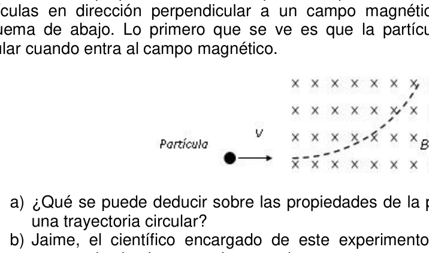
Topic: Electromagnetism, Magnetism Metodi: Lorentz Force Analysis, Ampère’s Law, Biot-Savart Law Competenze: Physical Reasoning, Mathematical Modeling Objects: Solenoid, Coil, Particle Beam Fonte: Testo (PDF) — p.5
PT40. Istituto Eduardo L. Holmberg
Quilmes, Buenos Aires.
In un laboratorio scientifico si sta analizzando una nuova particella subatomica per determinare le sue proprietà. In un primo esperimento, uno di questi viene sparato. le particelle in direzione perpendicolare a un campo magnetico, come si vede nel Schema di sotto. La prima cosa che si vede è che la particella si sta spostando . circolare quando entra nel campo magnetico.
a) Cosa si può dedurre sulle proprietà della particella vedendo che essa si adotta un percorso circolare? b) Jaime, lo scienziato responsabile di questo esperimento, dice che il radio della La traccia circolare è un dato molto importante per conoscere le caratteristiche di la particella. Dimostra che l’espressione per il raggio di rotazione della particella è
𝑟= 𝑚 𝑣 𝐵 𝑞 dove B è la densità di flusso del campo magnetico; v, m e q sono la velocità, la massa e il carico della particella, rispettivamente.
58 - OAF 2017 c) Il campo magnetico ha una densità di flusso di 0,12 T e è prodotto da una bobina di 40 cm di diametro con 2200 spirale, collocata in una camera di
- Vazio. Determinare l’intensità del corrente che scorre attraverso la bobina. d) Qual è la lunghezza del filo utilizzato in questa bobina? Non considerare la parte di filo utilizzato nei contatti. (e) Se la tensione utilizzata per generare corrente nella bobina è di 380 v, quale è la resistenza del filo di questa bobina? f) Se il filo della bobina è di rame ( = 1,72 × 10-8 Ω.m), qual è il il diametro del filo? g) Jaime è riuscito a determinare la massa della particella a partire dalla misurazione dei dati seguenti: radius di rotazione (r = 9,964 × 10-4 m); velocità (v = 2,1 × 107 m/s); carico (q = 1,6 × 10-19 C). Qual è la massa di questa particella? h) Se la particella è girata come si vede nella linea puntata del diagramma, quale è il
- Un segno del suo carico?
Topic: Electromagnetism, Magnetism Metodi: Lorentz Force Analysis, Ampère’s Law, Biot-Savart Law Competenze: Physical Reasoning, Mathematical Modeling Objects: Solenoid, Coil, Particle Beam Fonte: Testo (PDF) — p.5
PT40. The Institute Eduardo L. Holmberg
Quilmes, Buenos Aires is where I am.
A new subatomic particle is being analyzed in a scientific laboratory for determine its properties. In a first experiment , one of these is fired . particles in a direction perpendicular to a magnetic field, as seen in The diagram below. The first thing you see is that the particle is taking a path. It’s going to circulate when it enters the magnetic field.
(a) What can be deduced about the properties of the particle by seeing it adopt A circular path? (b) Jaime, the scientist in charge of this experiment, says that the radius of the Circular trajectory is a very important data to know the characteristics of the particle. Prove that the expression for the radius of spin of the particle is
𝑟= 𝑚 𝑣 𝐵 𝑞 where B is the magnetic field flow density; v, m and q are the velocity, the mass and charge of the particle, respectively.
The Commission shall adopt delegated acts in accordance with Article 21 of this Regulation. (c) The magnetic field has a flow density of 0.12 T and is produced by a coil of 40 cm in diameter with 2200 spires, located in a chamber of It’s empty. Determine the intensity of the current flowing through the coil. (d) What is the length of the wire used in this coil? Do not consider the part of wire used in contact. (e) If the voltage used to generate the current in the coil is 380 V, what is the resistance of the wire of this coil? (f) If the coil wire is copper ( = 1,72 × 10-8 Ω.m), what is the diameter of the wire? (g) Jaime was able to determine the mass of the particle from the measurement of the the following data: The speed of the engine shall be determined by the following steps: The following conditions shall apply: What is the mass of this particle? (h) If the particle spins as shown in the dashed line of the diagram, what is the Sign of your load?
Topic: Electromagnetism, Magnetism Metodi: Lorentz Force Analysis, Ampère’s Law, Biot-Savart Law Competenze: Physical Reasoning, Mathematical Modeling Objects: Solenoid, Coil, Particle Beam Fonte: Testo (PDF) — p.5
Acelerador de partículas y choque protón-alfa
PT41. Instituto Eduardo L. Holmberg
Quilmes, Buenos Aires.
Jaime, el científico del problema anterior, siguió haciendo experimentos dentro del laboratorio. Primero quiso averiguar algunos detalles del movimiento de la partícula que estaba analizando.
a) Sabiendo que fue acelerada por un dispositivo llamado acelerador de partículas que mide 36 m de longitud, que acelera las partículas en línea recta y considerando los datos del problema anterior, calcular: i) la aceleración lineal de la partícula. ii) el valor de la fuerza que la aceleró hasta alcanzar esa rapidez. iii) el tiempo que duró esa aceleración dentro del acelerador lineal de partículas.
b) Jaime continuó haciendo experimentos, pero esta vez aceleraba otras partículas y las hacía chocar contra partículas alfa (núcleos de helio: 𝐻𝑒 2 4 ). En uno de los choques que logró producir, un protón que viajaba a 3,6 × 106 m/s chocó contra una partícula alfa que estaba en reposo. Luego del choque ambas partículas quedaron unidas. Determinar: i) la rapidez de las partículas luego del choque. ii) la energía cinética del protón antes de la colisión. iii) la energía cinética de las partículas luego de la colisión. iv) la cantidad de energía perdida en la colisión. Expresar el resultado en porcentaje.
c) Jaime reconoció que se perdía mucha energía cinética en estas colisiones, por lo que se puso a pensar qué se podría hacer con esta energía. Se le ocurrió que se podría calentar agua para tomar mate. Entonces, determinar la cantidad de colisiones necesarias para que se pueda calentar 0,75 litros de agua desde 15 °C hasta 82 °C.
Jaime hizo todos estos experimentos sin considerar los efectos de la relatividad en sus cálculos. Por lo tanto, su jefe lo despidió y Jaime comenzó a buscar nuevo trabajo.
OAF 2017 - 59
Topic: Conservation of Momentum, Newtonian Mechanics Metodi: Conservation of Momentum, Kinematic Equations, Conservation of Energy Competenze: Physical Reasoning, Mathematical Modeling Objects: Particle Beam, Nucleus Fonte: Testo (PDF) — p.5
Acceleratore di particelle e colpisce protone-alfa
PT41. Istituto Eduardo L. Holmberg
Quilmes, Buenos Aires.
Jaime, lo scienziato del problema precedente, ha continuato a fare esperimenti all’interno del laboratorio. Prima voleva scoprire alcuni dettagli del movimento della particella che Stavo analizzando.
a) Sapendo che è stata accelerata da un dispositivo chiamato acceleratore di particelle. che misura 36 metri di lunghezza, che accelera le particelle in linea retta e considerando i dati del problema precedente, calcolare: i) l’accelerazione lineare della particella. (ii) il valore della forza che l’ha accelerata fino a raggiungere tale velocità. (iii) il tempo di durata di tale accelerazione all’interno dell’acceleratore lineare di particelle.
b) Jaime continuò a fare esperimenti, ma questa volta accelerava altre particelle. e li faceva sbattere contro particelle alfa (nuclei di elio: He). 2 4 ). In uno dei Gli scosse che ha prodotto, un protone che viaggiava a 3,6 × 106 m/s, si è schiantato contro una particella alfa che era a riposo. Dopo l’impatto, entrambe le particelle. Sono stati uniti. Determinare: i) la velocità delle particelle dopo l’impatto. (ii) l’energia cinetica del protone prima della collisione. (iii) l’energia cinetica delle particelle dopo la collisione. (iv) la quantità di energia persa in collisione. Esprimere il risultato in percentuale.
c) Jaime ha riconosciuto che molte energie cinetiche venivano perdute in queste collisioni, per cui che si è messo a pensare a cosa si potrebbe fare con questa energia. E ’ venuto a mente che Potrebbe scaldare l’acqua per prendere il mate. Quindi, determinare la quantità di le collisioni necessarie per riscaldare 0,75 litri di acqua da 15 °C fino a 82 °C.
Jaime ha fatto tutti questi esperimenti senza considerare gli effetti della relatività sui suoi Calcoli. Quindi il suo capo lo licenziò e Jaime cominciò a cercare un nuovo lavoro.
OAF 2017 - 59
Topic: Conservation of Momentum, Newtonian Mechanics Metodi: Conservation of Momentum, Kinematic Equations, Conservation of Energy Competenze: Physical Reasoning, Mathematical Modeling Objects: Particle Beam, Nucleus Fonte: Testo (PDF) — p.5
The vehicle shall be equipped with a ‘P’ and ‘P’ in the form of a ‘P’ in the form of a ‘P’ in the form of a ‘P’ in the form of ‘P’ in the form of ‘P’ in the form of ‘P’ in the form of ‘P’ in the form of ‘P’ in the form of ‘P’ in the form of ‘P’ in the form of ‘P’ in the form of ‘P’ in the form of ‘P’ in the form of ‘P’ in the form of ‘P’ in the form of ‘P’ in the form of ‘P’ in the form of ‘P’ in the form of ‘P’ in the form of ‘P’ in the form of ‘P’ in the form of ‘P’ in the form of ‘P’ in the form of ‘P’ in the form of ‘P’ in the form of ‘P’ in the form of ‘P’ in the form of ‘P’ in the form of ‘P’ in the form of ‘P’ in the form of ‘P’ in the form of ‘P’ in the form of ‘P’ in the form of ‘P’ in the ‘P’ in the form of ‘P’ in the ‘P’ in the form ‘P’ in the form ‘P’ in the form ‘P’ in the ‘P’ in ‘P’ in the form ‘P’ in ‘P’ in the ‘P’ in the ‘P’ in the ‘P’ in ‘P’ in the ‘P’ in the ‘P’ in the ‘P’ in ‘P’ in the ‘P’ in the ‘P’
PT41. The Institute Eduardo L. Holmberg
Quilmes, Buenos Aires is where I am.
Jaime, the scientist on the previous problem, continued to experiment within the The lab. First he wanted to find out some details of the particle ‘s motion that I was analyzing.
(a) Knowing that it was accelerated by a device called a particle accelerator It measures 36 m in length, accelerates particles in a straight line and Considering the data from the above problem, calculate: (i) the linear acceleration of the particle. (ii) the value of the force which accelerated it to that speed. (iii) the time that the acceleration lasted within the linear accelerator of particles.
(b) Jaime continued to experiment, but this time he was speeding up other particles. And then he made them collide with alpha particles. 2 4 ). In one of the The proton travelling at 3,6 × 106 m/s collided with the an alpha particle that was resting. After the collision both particles They’re all tied together. Determine: (i) the velocity of the particles after impact. (ii) the kinetic energy of the proton before the collision. (iii) the kinetic energy of the particles after the collision. (iv) the amount of energy lost in the collision. Express the result in The percentage.
(c) Jaime acknowledged that a lot of kinetic energy was lost in these collisions, so He started thinking about what he could do with this energy. It occurred to him that he was I could heat water for mate. Then determine the amount of The impact of the impact is necessary to heat 0.75 litres of water from 15 The following information shall be provided:
Jaime did all these experiments without considering the effects of relativity on his The calculations. So his boss fired him and Jaime began looking for a new job.
The Commission shall adopt delegated acts in accordance with Article 21 of Regulation (EU) No 1303/2013.
Topic: Conservation of Momentum, Newtonian Mechanics Metodi: Conservation of Momentum, Kinematic Equations, Conservation of Energy Competenze: Physical Reasoning, Mathematical Modeling Objects: Particle Beam, Nucleus Fonte: Testo (PDF) — p.5
Calentar leche con vapor de agua
PT42. Instituto Eduardo L. Holmberg
Quilmes, Buenos Aires.
En los bares y confiterías es muy común calentar leche con vapor de agua. En el
proceso, el vapor se condensa entregando calor a la leche y se incorpora en forma de
agua líquida hasta alcanzar una temperatura de equilibrio con la leche.
a) Jaime está aprendiendo el oficio de mozo en un bar y tiene que calentar 250 ml
de leche que sacó de la heladera a 4 °C hasta 92 °C usando este método. La
leche se encuentra en una jarra de acero de 100 g. Si el vapor de agua de la
máquina sale a 100 °C, ¿qué cantidad de vapor será necesaria? Considerar que
el calor específico de la leche es igual al del agua; despreciar las pérdidas de
calor.
b) Jaime quedó muy impresionado con la forma de calentar la leche y decidió hacer
un experimento. Tomó un trozo de hielo del freezer de 240 g que estaba a -18
°C, y usando una jarra de acero igual a la anterior, comenzó a tirarle vapor de
agua a 100 °C para ver cómo se derretía. En medio del proceso, su jefe le llama
la atención e interrumpe su experimento cuando solo parte del hielo se había
fundido. Jaime había agregado solo 20 g de vapor. ¿Qué cantidad de hielo se
había fundido? Expresar el resultado en porcentaje.
c) Jaime hizo otro experimento usando la misma jarra de acero de antes, que tiene
una capacidad de 0,5 litros. La llenó al ras de agua a 20 °C y comenzó a
calentarla sobre una hornalla. Rápidamente observó que el agua comenzaba a
desbordar la jarra y cuando la temperatura era de 72 °C entró nuevamente su
jefe y le llamó la atención. ¿Cuánta agua se derramó? Expresar el resultado en
cm3.
Jaime fue despedido nuevamente y prometió buscar otro trabajo, pero no ahora. Será el
año próximo.
Datos
chielo = 2093 J/kg °C; cagua = 4186 J/kg °C; LF agua = 3,34 x 105 J/kg;
LV agua = 2,26 x 106 J/kg; cacero = 480 J/kg °C; αacero = 1,2 x 10-5 °C-1; βagua = 2,1 x 10-4 °C-1
Topic: Thermodynamics Metodi: First Law of Thermodynamics, Conservation of Energy Competenze: Physical Reasoning, Mathematical Modeling Objects: Container, Gas Fonte: Testo (PDF) — p.5
Caldare il latte con vapore d’acqua
PT42. Istituto Eduardo L. Holmberg
Quilmes, Buenos Aires.
Nei bar e nei confiterie è molto comune riscaldare il latte con vapore acqueo. En el Il processo di condensamento del vapore, che dà calore al latte, si inserisce in forma di acqua liquida fino a raggiungere una temperatura di equilibrio con il latte. a) Jaime sta imparando il mestiere di ragazzo in un bar e deve riscaldare 250 ml di latte che è stato estratto dal congelatore a 4 °C fino a 92 °C utilizzando questo metodo. La il latte è in un vassoio di acciaio di 100 g. Se il vapore d’acqua della la macchina si sposta a 100 °C, quanta vapore sarà necessaria? Considerare che Il calore specifico del latte è uguale a quello dell’acqua; disprezzo per le perdite di caldo. b) Jaime è stato molto impressionato dal modo in cui il latte è stato riscaldato e ha deciso di fare Un esperimento. Ha preso un pezzo di ghiaccio dal freezer di 240 grammi che era a -18 . E usando un vassoio di acciaio come quello precedente, ha iniziato a gettarlo vapore di acqua a 100 °C per vedere come si scioglie. Nel mezzo del processo, il suo capo le chiama. l’attenzione e interrompe il suo esperimento quando solo parte del ghiaccio era stato Fuso. Jaime aveva aggiunto solo 20 grammi di vapore. Quanta ghiaccio è?
- Si è fonduto? Esprimere il risultato in percentuale. c) Jaime ha fatto un altro esperimento usando lo stesso vassoio di acciaio di prima, che ha una capacità di 0,5 litri. L’ha riempita al livello di acqua a 20 °C e ha iniziato a la scaldare su un forno. Presto notò che l’acqua stava iniziando a Quando la temperatura era 72 °C, il suo contenitore è stato ripreso. Il capo e ha attirato l’attenzione. Quanta acqua è stata versata? Esprimere il risultato in cm3. Jaime è stato licenziato di nuovo e ha promesso di cercare un altro lavoro, ma non ora. Sarà il
- l’anno prossimo.
Datos L’acqua è di 3,34 x 105 J/kg; LV acqua = 2,26 x 106 J/kg; cacciatore = 480 J/kg °C; αacciaio = 1,2 x 10-5 °C-1; βacqua = 2,1 x 10-4 °C-1
Topic: Thermodynamics Metodi: First Law of Thermodynamics, Conservation of Energy Competenze: Physical Reasoning, Mathematical Modeling Objects: Container, Gas Fonte: Testo (PDF) — p.5
Heating milk with water vapor
PT42. The Institute Eduardo L. Holmberg
Quilmes, Buenos Aires is where I am.
In bars and confectioneries it is very common to heat milk with water vapor. En el In the process, the steam condenses to deliver heat to the milk and is incorporated into the form of liquid water until a temperature of equilibrium with milk is reached. (a) Jaime is learning the craft of dating at a bar and he needs to heat 250 ml. milk that was removed from the refrigerator to 4 °C to 92 °C using this method. La milk is in a 100 g steel jar. If the water vapour of the The machine goes to 100 °C, how much steam will be needed? Consider that The specific heat of milk is equal to that of water; disregard the losses of It’s hot. (b) Jaime was very impressed with the way the milk was heated and decided to do It’s an experiment. He took a piece of ice from the 240-g freezer that was -18 . And using a steel jar the same as the one before, he started throwing steam at it. water to 100 °C to see how it melted. In the middle of the process, your boss calls you. He interrupts his experiment when only part of the ice was gone. It’s melted. Jaime had added only 20 g of steam. How much ice is it? I was melting? Express the result as a percentage. (c) Jaime did another experiment using the same steel jar he had before, which he has. a capacity of 0,5 litres. He filled it to the water level at 20 °C and started to Heat it on a stove. He quickly noticed that the water was beginning to The water was then pumped into the pot and when the temperature was 72 °C it re-entered its Chief and caught his attention. How much water did it spill? Express the result in cm3. Jaime was fired again and promised to look for another job, but not now. It will be the next year.
Data from the report The following table shows the results of the calculation of the total weight of the product: LV water = 2,26 x 106 J/kg; hunting = 480 J/kg °C; α steel = 1,2 x 10-5 °C-1; β water = 2,1 x 10-4 °C-1
Topic: Thermodynamics Metodi: First Law of Thermodynamics, Conservation of Energy Competenze: Physical Reasoning, Mathematical Modeling Objects: Container, Gas Fonte: Testo (PDF) — p.5
Bloques con polea en plano inclinado
PT43. Instituto Educativo Génesis
Posadas, Misiones.
En la siguiente figura se pueden observar dos bloques que se encuentran conectados por
medio de una cuerda sin masa que pasa por una polea sin fricción y masa despreciable.
La aceleración del sistema es de 2.5 m/s2 hacia la izquierda y la superficie sobre el plano
inclinado es rugosa. Considerando que la aceleración de la gravedad es 9.8 m/s2.
a) Realizar el diagrama de cuerpo
libre de cada uno de los bloques.
Indicar claramente las fuerzas que
actúan en cada uno.
b) Escribir
las
ecuaciones
de
movimiento de los bloques.
c) Calcular la tensión en la cuerda.
d) Calcular la fuerza normal sobre el
bloque de masa 2.
e) Determinas la fuerza de fricción
dinámica sobre el bloque que
corresponda.
f) Determinar el coeficiente de fricción entre el bloque correspondiente y la
superficie.
60 - OAF 2017
Topic: Newtonian Mechanics Metodi: Free-Body Diagram, Vector Decomposition, Kinematic Equations Competenze: Physical Reasoning, Mathematical Modeling Objects: Block, Pulley, Inclined Plane Fonte: Testo (PDF) — p.5
Blocchi con pullea a piano inclinato
PT43. Istituto Educativo Genesi
Posate, Missioni.
Nella figura seguente si possono vedere due blocchi collegati da mezzo di una corda senza massa che passa attraverso una polea senza attrito e massa disprezzabile. L’accelerazione del sistema è di 2,5 m/s2 verso sinistra e la superficie sul piano inclinato è rugoso. Considerando che l’accelerazione della gravità è di 9,8 m/s2. a) Realizzare il diagramma del corpo libero da ogni blocco. Indicare chiaramente le forze che che agiscono su ognuno di loro. b) Scrivere Le
- Equazioni de movimento dei blocchi. c) Calcolare la tensione della corda. d) Calcolare la forza normale sul blocco di massa 2. e) Determina la forza di attrito dinamica sul blocco che corrisponde. f) Determinare il coefficiente di attrito tra il blocco corrispondente e il blocco di attrito. superficie.
60 - OAF 2017
Topic: Newtonian Mechanics Metodi: Free-Body Diagram, Vector Decomposition, Kinematic Equations Competenze: Physical Reasoning, Mathematical Modeling Objects: Block, Pulley, Inclined Plane Fonte: Testo (PDF) — p.5
**Blocks with sloping flat pole **
PT43. The Genesis Education Institute
The inn, the missions.
In the following figure you can see two blocks connected by A massless rope that passes through a frictionless pole and scornful mass. The acceleration of the system is 2.5 m/s2 to the left and the surface on the plane The slope is rough. Considering that the acceleration of gravity is 9.8 m/s2. (a) Draw the body diagram free of each block. Clearly indicate the forces that They act on each one. (b) Write The Equations de movement of the blocks. (c) Calculate the tension on the rope. (d) Calculate the normal force on the mass block 2. (e) Determine the friction force dynamics on the block that It’s the same. (f) Determine the friction coefficient between the relevant block and the surface.
The following points shall be added:
Topic: Newtonian Mechanics Metodi: Free-Body Diagram, Vector Decomposition, Kinematic Equations Competenze: Physical Reasoning, Mathematical Modeling Objects: Block, Pulley, Inclined Plane Fonte: Testo (PDF) — p.5
Carrito con rozamiento y resorte
PT44. Instituto Educativo Génesis
Posadas, Misiones.
Un carrito de 6 kg ubicado a 5 m respecto al suelo se suelta, al llegar al tramo A el mismo desciende su velocidad dado que el tramo AB de 2.5 m posee una rugosidad de 0.20, sabiendo que la constante del resorte es de 5200 N/m. a) Indicar que energías se producen en cada tramo 1-2-3-4. b) Calcular la energía en el punto 1. c) Calcular la velocidad en el punto 2. d) Indicar el trabajo que se produce en el tramo AB. e) Calcular cuánto se comprime el resorte al chocar el carrito con el mismo.
Topic: Conservation of Energy Metodi: Energy Conservation Method, Hooke’s Law Competenze: Physical Reasoning, Mathematical Modeling Objects: Cart, Spring, Inclined Plane Fonte: Testo (PDF) — p.5
Carrito a ruggine e a resorgenza
PT44. Istituto Educativo Genesi
Posate, Missioni.
Un carrello di 6 kg, situato a 5 m dal suolo, si scarica, arrivando al tratto A stesso si abbassa la velocità dal momento che il tratto AB di 2,5 m ha una rugosità di 0,20, sapendo che la costante della primavera è di 5200 N/m. a) Indicare quali energie si producono in ogni stadio 1-2-3-4. b) Calcolare l’energia al punto 1. c) Calcolare la velocità al punto 2. d) Indicare il lavoro svolto in il tratto AB. e) Calcolare quanto si comprime il Primavera colpendo il carrello con il stesso.
Topic: Conservation of Energy Metodi: Energy Conservation Method, Hooke’s Law Competenze: Physical Reasoning, Mathematical Modeling Objects: Cart, Spring, Inclined Plane Fonte: Testo (PDF) — p.5
Cartridge with grinding and springing
PT44. The Genesis Education Institute
The inn, the missions.
A 6 kg cart placed 5 m above the ground is released, upon reaching section A. It’s slowing down as the AB section 2.5 m has a roughness of 0.20, Knowing that the spring constant is from 5200 N/m. (a) Indicate which energies are produced in Each section is 1-2-3-4. (b) Calculate the energy in point 1. (c) Calculate the speed at point 2. (d) Indicate the work carried out in the AB section. (e) Calculate how much is compressed spring when you hit the cart with it.
Topic: Conservation of Energy Metodi: Energy Conservation Method, Hooke’s Law Competenze: Physical Reasoning, Mathematical Modeling Objects: Cart, Spring, Inclined Plane Fonte: Testo (PDF) — p.5
Recipiente adiabático con agua y hielo
PT45. Instituto Educativo Génesis
Posadas, Misiones.
Se tiene un recipiente, el cual se puede considerar como adiabático (no intercambia calor
con el medio ambiente que lo rodea). El recipiente contiene 1kg de agua a temperatura
ambiente. Un termómetro de mercurio dentro del recipiente indica que la temperatura del
sistema es de 28 ºC.
En el recipiente se vuelca agua en estado de ebullición, y cuando la temperatura del
agua se estabiliza, el termómetro indica que la temperatura del sistema es de 50ºC.
Consideraciones: La transferencia de calor al recipiente se puede despreciar.
Calcular a) ¿Cuál es la masa de agua en estado de ebullición que se agregó al recipiente?
Datos: Cagua = 1 cal/(°C g) y la masa equivalente de agua para el termómetro es meq= 10g
b) Luego, se extrae de un freezer 4 cubitos de hielo de 20g de masa cada uno y a una temperatura de -15°C, y se agregan al recipiente. Calcular la temperatura que indicará el termómetro cuando el sistema alcance el equilibrio.
Datos generales:
Calor latente de fusión del hielo λhielo = 80 cal/g
Calor específico del hielo Chielo = 0.53 cal/(°C g)
Topic: Thermodynamics Metodi: First Law of Thermodynamics, Conservation of Energy Competenze: Physical Reasoning, Mathematical Modeling Objects: Calorimeter Fonte: Testo (PDF) — p.5
Ricarica adiabita con acqua e ghiaccio
PT45. Istituto Educativo Genesi
Posate, Missioni.
Si ha un recipiente, che può essere considerato adiabatico (non scambiare calore) con l’ambiente che lo circonda). Il contenitore contiene 1 kg di acqua a temperatura ambiente. Un termometro di mercurio all’interno del recipiente indica che la temperatura del sistema è di 28 oC. L’acqua in recipiente si ribalta in stato di ebollizione e quando la temperatura del l’acqua si stabilizza, il termometro indica che la temperatura del sistema è di 50°C. Considerazioni: il trasferimento di calore nel recipiente può essere disprezzato.
Calcolare a) Qual è la massa di acqua in stato di ebollizione che è stata aggiunta al recipiente?
Dati: Acqua = 1 cal/(°C g) e la massa equivalente di acqua per il termometro è meq= 10g
b) Successivamente, 4 cubetti di ghiaccio di massa di 20 g sono estratti da un freezer e a una temperatura di -15°C, e vengono aggiunte al contenitore. Calcolare la temperatura che indicherà il termometro quando il sistema raggiunge l’equilibrio.
Datori generali: Calore latente di fusione del ghiaccio λ ghiaccio = 80 cal/g Calore specifico del ghiaccio Chielo = 0,53 cal/(°C g)
Topic: Thermodynamics Metodi: First Law of Thermodynamics, Conservation of Energy Competenze: Physical Reasoning, Mathematical Modeling Objects: Calorimeter Fonte: Testo (PDF) — p.5
Adiabatic container with water and ice
PT45. The Genesis Education Institute
The inn, the missions.
You have a container, which can be considered adiabatic (no heat exchange) the environment around it). The container contains 1 kg of water at temperature The environment. A mercury thermometer inside the container indicates that the temperature of the The system is 28 oC. In the container, boiling water is turned into boiling water, and when the temperature of the water is stabilized, the thermometer indicates that the system temperature is 50oC. Considerations: Heat transfer to the container can be neglected.
Calculate (a) What is the boiling water mass added to the container?
Data: Water = 1 cal/(°C g) and the equivalent water mass for the thermometer is meq= 10g
(b) Then 4 ice cubes of 20 g of mass each are extracted from a freezer and a a temperature of -15°C, and added to the container. Calculate the temperature which will indicate the thermometer when the system reaches equilibrium.
General data: Latent heat of melting of the ice λ ice = 80 cal/g The specific heat of Chielo ice = 0,53 cal/(°C g)
Topic: Thermodynamics Metodi: First Law of Thermodynamics, Conservation of Energy Competenze: Physical Reasoning, Mathematical Modeling Objects: Calorimeter Fonte: Testo (PDF) — p.5
El Esquiador
PT46. Escuela Técnica ORT N° 2
Ciudad de Buenos Aires.
El Esquiador. Un esquiador de 80 kg se deja caer por una colina de 30 metros de altura, partiendo con una velocidad inicial de 6 m/s. No se impulsa con los bastones y se puede despreciar el rozamiento con la nieve y con el aire. a) ¿Cuál es la energía mecánica inicial del esquiador? ¿Cambia este valor a lo largo del recorrido? Justifique su respuesta analizando las fuerzas que actúan sobre el esquiador. b) ¿Con qué velocidad llega el esquiador al pie de
OAF 2017 - 61 la colina? c) ¿Qué debería hacer el esquiador para llegar al pie de la colina con una velocidad de 30 m/s? Justifique su respuesta sobre la base de consideraciones dinámicas y energéticas (dé valores numéricos). d) Si quisiera llegar con una velocidad de 15 m/s ¿Qué tipo de trabajo debería realizar? ¿De qué valor?
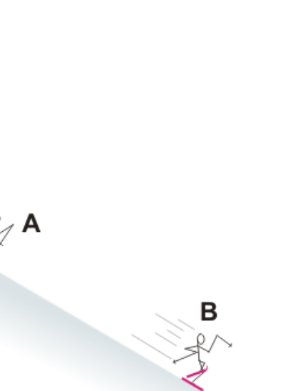
Topic: Conservation of Energy Metodi: Energy Conservation Method, Conservation of Energy Competenze: Physical Reasoning, Mathematical Modeling Objects: — Fonte: Testo (PDF) — p.5
Il sciatore
PT46. Scuola tecnica ORT N° 2
Città di Buenos Aires.
Lo sciatore. Un sciatore di 80 kg si lascia cadere da una collina di Alti 30 metri, partendo a velocità iniziale. de 6 m/s. Non si spinge con i bastoni e si può. disprezzo il ruggimento con la neve e con l’aria. (a) Qual è l’energia meccanica iniziale di sciatore? Cambierà questo valore nel corso del
- Il tour? Giustifica la tua risposta analizzando le forze che agiscono sul sciatore. b) Con quale velocità il sciatore arriva al piede di
OAF 2017 - 61
- La collina? c) Cosa dovrebbe fare lo sciatore per raggiungere il piede della collina a velocità? de 30 m/s? Raccontate la vostra risposta sulla base di considerazioni dinamiche e energetici (dati numerici). d) Se volessi arrivare a 15 m/s, che tipo di lavoro dovrei fare?
- Per realizzare? Di che valore?
Topic: Conservation of Energy Metodi: Energy Conservation Method, Conservation of Energy Competenze: Physical Reasoning, Mathematical Modeling Objects: — Fonte: Testo (PDF) — p.5
The skier
PT46. Technical School ORT N° 2
City of Buenos Aires.
The skier. A 50-pound skier is dropped off a hill in the mountains. 30 meters high, starting at an initial speed. de 6 m/s. You can ‘t push with sticks and you can . To despise the grating with snow and air. (a) What is the initial mechanical energy of the
- What? Does this value change over the course of the
- What? Justify your answer by analyzing the forces acting on the skier. (b) How fast does the skier reach the foot of
The Commission shall adopt delegated acts in accordance with Article 21 of the Financial Regulation. the hill? (c) What should the skier do to get to the foot of the hill at a speed? de 30 m/s? Justify your answer on the basis of dynamic considerations The Commission will also examine the possible effects of the new measures. (d) If you wanted to get there at a speed of 15 m/s, what kind of work should you do? to perform? What value?
Topic: Conservation of Energy Metodi: Energy Conservation Method, Conservation of Energy Competenze: Physical Reasoning, Mathematical Modeling Objects: — Fonte: Testo (PDF) — p.5
Tierra y la Luna
PT47. Escuela Técnica ORT N° 2
Ciudad de Buenos Aires.
Tierra y la Luna. La luna gira alrededor de la Tierra cumpliendo una revolución en 27,4 días. La distancia entre los centros de los planetas es de 384.000 km. Suponga que el movimiento es circular. a) Calcule la velocidad angular y la velocidad tangencial de la luna en su órbita. A partir de estas calcule la aceleración y la fuerza centrífuga que sufre la luna. Claramente la luna siente una fuerza de atracción hacia la Tierra, que es la que la mantiene en órbita y es exactamente igual a la fuerza centrífuga descripta por su movimiento circular. Esta fuerza viene dada por la Ley de Gravitación de Newton: F=GmM D 2
donde G es la constante de gravitación universal y D la distancia entre los centros de los cuerpos. M y m son las masas de los dos cuerpos que interactúan.
b) Calcule la constante de gravitación universal con sus respectivas unidades. Si introducimos otro cuerpo entre la Tierra y la Luna, este sufrirá dos fuerzas atractivas.
c) Encuentre el punto de equilibrio donde un cuerpo de masa m no sentiría ninguna fuerza, es decir, no ―caería‖ ni a la Tierra ni a la Luna. La fuerza gravitatoria terrestre tiene una energía potencial asociada. Esta es:
V=−GmM T D
Un cuerpo m a una distancia D del centro de la Tierra tendrá esa D energía. Para poder escapar de la atracción terrestre se le debe dar a un cuerpo de masa m una velocidad muy grande. Suponga ahora que no se encuentra la Luna.
d) ¿Qué velocidad mínima se le debe dar a un cuerpo de masa m para que pueda escapar de la atracción terrestre? Se considera que ocurre esto si la energía potencial final es nula y la velocidad también. Utilice la conservación de la
62 - OAF 2017 energía. Vuelva a las condiciones normales y coloque a la Luna de vuelta en su lugar
e) ¿Cuál es la velocidad de escape en esta circunstancia? Ayuda: para escapar ahora el cuerpo debe poder llegar al punto de equilibrio calculado en c) con velocidad nula
Datos
MTierra = 5,98. 1024 kg - MLuna= 7,34.1022 kg
RadioT = 6370 km - RadioL = 1740 km
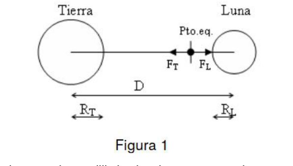
Topic: Gravitation Metodi: Newton’s Law of Gravitation, Energy Conservation Method, Kepler’s Laws Competenze: Physical Reasoning, Mathematical Modeling Objects: Planet, Satellite Fonte: Testo (PDF) — p.5
Terra e Luna
PT47. Scuola tecnica ORT N° 2
Città di Buenos Aires.
Terra e la Luna. La luna gira intorno alla Terra completando una rivoluzione in 27,4 giorni. La distanza tra i centri dei pianeti è di 384.000 km. Supponiamo che il movimento sia circolare. a) Calcolare la velocità angolare e la velocità tangenziale della luna in orbita. A A partire da queste calcoli l’accelerazione e la forza centrifugante che la luna soffre. Chiaramente la luna sente una forza di attrazione verso la Terra, che è quella che La forza centrifugante che la tiene in orbita è esattamente uguale alla forza centrifugante descritta da il suo movimento circolare. Questa forza è data dalla Legge di Gravità di Newton: F=GmM D 2
dove G è la costante di gravitazione universale e D la distanza tra i Centri del corpo. M e m sono le masse dei due corpi che interagiscono.
b) Calcolare la costante di gravità universale con le rispettive unità. Si Se introduciamo un altro corpo tra la Terra e la Luna, subirà due forze. attraenti.
c) Trova il punto di equilibrio dove un corpo di massa m non sentirebbe nessuna La forza, cioè non sarebbe caduta né sulla Terra né sulla Luna. La forza gravitazionale terrestri ha un’energia potenziale associata. Questa è:
V=−GmM T D
Un corpo a m a distanza di D dal centro della Terra avrà quella energia di D. Per poter Scappa dall’attrazione terrestre deve dare un corpo di massa a velocità m Molto grande. Supponiamo ora che la Luna non sia trovata.
d) Che velocità minima deve essere data a un corpo di massa m per poterlo Scappa dall’attrazione terrestre? Si ritiene che questo accada se l’energia Potenzialmente, la velocità è zero. Utilizzare la conservazione della
62 - OAF 2017 energia. Torna alle condizioni normali e rimetti la Luna nella sua posizione. luogo
e) Qual è la velocità di fuga in questa circostanza? Aiuto: per scappare Ora il corpo deve essere in grado di raggiungere il punto di equilibrio calcolato in c) con velocità zero
Datos Mterra = 5,98. 1024 kg - MLuna = 7,34.1022 kg RadioT = 6370 km - RadioL = 1740 km
Topic: Gravitation Metodi: Newton’s Law of Gravitation, Energy Conservation Method, Kepler’s Laws Competenze: Physical Reasoning, Mathematical Modeling Objects: Planet, Satellite Fonte: Testo (PDF) — p.5
The Commission shall adopt delegated acts in accordance with Article 21 of this Regulation.
PT47. Technical School ORT N° 2
City of Buenos Aires.
Earth and the Moon. The moon orbits the Earth completing a revolution in 27.4 days. The distance The distance between the centers of the planets is 384,000 kilometers. Suppose the motion is circulate. (a) Calculate the angular velocity and tangential velocity of the moon in its orbit. A From these, calculate the acceleration and centrifugal force the moon is experiencing. Clearly the moon feels a force of attraction towards the Earth, which is what it is. It keeps it in orbit and is exactly equal to the centrifugal force described by its circular motion. This force is given by the Law of Gravitation of Newton: F=GmM D 2
where G is the universal gravitational constant and D is the distance between the centers of the body. M and m are the masses of the two bodies that They interact.
(b) Calculate the universal gravitational constant with its respective units. Si We’ll bring another body between the Earth and the Moon, this one will suffer two forces. They’re attractive.
c) Find the equilibrium point where a mass body m would feel none The first is that the energy of the earth is not “falling” on the moon. The gravitational force . Earth has a potential energy associated with it. This is:
V=−GmM T D
A m-body at a distance D from the center of the Earth will have that D energy. To be able to To escape the Earth’s gravity must give a mass body a velocity of m It’s very big. Now suppose the moon is not found.
(d) What minimum speed should be given to a m mass body so that it can escape from the Earth’s attraction? This is considered to occur if energy The end potential is zero and so is the speed. Use the conservation of the
The Commission shall adopt delegated acts in accordance with Article 21 of Regulation (EU) No 1303/2013. energy. Return to normal conditions and put the moon back on its back . Place
(e) What is the escape velocity in this circumstance? Help: to escape Now the body should be able to reach the equilibrium point calculated in c) with 0 speed
Data from the report Earth is 5.98. The Commission shall adopt implementing acts in accordance with Article 21 of Regulation (EC) No 1272/2009. The Commission shall adopt delegated acts in accordance with Article 21 of the Treaty.
Topic: Gravitation Metodi: Newton’s Law of Gravitation, Energy Conservation Method, Kepler’s Laws Competenze: Physical Reasoning, Mathematical Modeling Objects: Planet, Satellite Fonte: Testo (PDF) — p.5
La Lámpara de Lava
PT48. Escuela Técnica ORT N° 2
Ciudad de Buenos Aires.
La Lámpara de Lava. Una lámpara de lava es un lindo artefacto decorativo de iluminación donde entran en juego varias leyes físicas. Cuando está en pleno funcionamiento se ven burbujas de lava subiendo y bajando dentro de la lámpara en un hermoso baile. La clave en este dispositivo son los ingredientes que se colocan en el interior de la botella que forma la lámpara. Es necesario que la parafina y el agua que posee en su interior tengan densidades muy cercanas. La botella se calienta por debajo con una lamparita, que además de calor provee la iluminación. Veamos como funciona. La botella es de vidrio y posee 254,25g de parafina y 750g de agua. La base posee un área interior de 25cm2, y las paredes un espesor de 2mm. Está llena en un 95% de su capacidad. Utilice el esquema de la figura para ver la distribución de agua y parafina. a) ¿Cuál es la masa de vidrio de la botella? ¿Cuál es la altura de la columna de agua en su interior? Al calentarse los ingredientes, la densidad de la parafina disminuye, lo que le permite flotar. Se prende a 20ºC. La densidad del agua no cambia apreciablemente en estas temperaturas. b) ¿Cuál es el volumen que debe adquirir la parafina para comenzar a flotar y cuál es su volumen inicial? Para llegar a disminuir su densidad, la parafina se dilata aumentando su volumen. Esto lo hace sólo en estado líquido, teniendo un punto de fusión de 40ºC. c) ¿A qué temperatura consigue el volumen necesario para flotar?
El estado final de trabajo de la lámpara es cuando la parafina adquiere una temperatura de 60ºC. Suponemos que la columna de agua posee un gradiente térmico lineal que va de la temperatura de la parafina en el fondo y 40ºC arriba de todo. d) ¿Cuál es la cantidad de calor que tuvo que suministrarse a la botella para llegar a esta situación? Para simplificar suponemos que todo el vidrio alcanza una temperatura constante en el punto medio entre la de la parafina y la temperatura ambiente. Llegado a este punto, la bola de lava (parafina líquida a 60ºC) se desprende del fondo y comienza a subir. Asumimos que no varía la temperatura hasta llegar arriba de todo y que luego de 5 seg vuelve a tener 40ºC y recién en ese momento comienza a bajar también manteniendo esa temperatura.
OAF 2017 - 63 e) ¿Cuánto tiempo tarda en subir y bajar? La potencia suministrada por la lamparita es de 40W y se aprovecha un 80% de la energía consumida. f) ¿Cuánto tarda en llegar la lámpara a pleno funcionamiento?
Datos
1J = 0,24cal
Lfusión parafina = 34 cal/g δagua = 1 g/cm3 g = 9.82m/s2 cagua = 1Cal/g°C
δvidrio = 8 g/cm3 cparafina líq = 0,55 cal/g°C δparafina a 20ºC = 1,017 g/cm3
cparafina sól = 0,52 cal/g°C parafina líq= 6,2. 10-4 1/ºC cvidrio = 0,2 cal/g°C
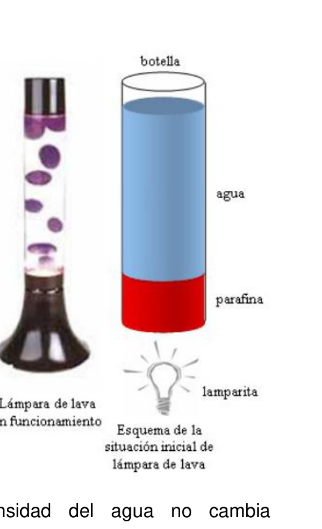
Topic: Fluid Mechanics, Thermodynamics Metodi: Hydrostatic Equilibrium, First Law of Thermodynamics Competenze: Physical Reasoning, Mathematical Modeling Objects: Container, Bubble Fonte: Testo (PDF) — p.5
Lampa di lava
PT48. Scuola tecnica ORT N° 2
Città di Buenos Aires.
La Lanterna di Lava. Una lampada di lava è un bel artefatto decorativo di illuminazione dove entrano in gioco diverse leggi fisica. Quando è in pieno funzionamento si vedono Bubble di lava che salivano e scendevano all’interno della una lampada in un bel ballo. La chiave in questo. I dispositivi sono gli ingredienti che vengono inseriti nel all’interno della bottiglia che forma la lampada. Es necessaria che la parafina e l’acqua che possiede in suo all’interno hanno densità molto vicine. La bottiglia Si scalda sotto con una lampadina, che inoltre di calore fornisce l’illuminazione. Vediamo come. funziona. La bottiglia è di vetro e contiene 254,25g di parafina e 750 g di acqua. La base possiede un’area. interno di 25 cm2, e le pareti di 2 mm di spessore. È piena al 95% della sua capacità. Utilizzare lo schema della figura per vedere la distribuzione di acqua e parafina. a) Qual è la massa di vetro della bottiglia? Qual è l’altezza della colonna d’acqua in il suo interno? Quando si riscaldano gli ingredienti, la La densità della parafina diminuisce, il che le
- E’ un’arma che permette di fluttuare. Si accende a 20°C. La densità dell’acqua non cambia apprezzabile a queste temperature. b) Qual è il volume di parafina da acquistare per iniziare a fluttuare e quale volume? è il volume iniziale? Per ridurre la densità, la parafina si dilata. aumentando il volume. Questo lo fa solo in stato liquido, avendo un punto. di fusione a 40 °C. c) A che temperatura si ottiene il volume necessario per fluttuare?
Lo stato di lavoro finale della lampada è quando la parafina acquista una temperatura. de 60ºC. Supponiamo che la colonna d’acqua abbia un gradiente termico lineare che va La temperatura della parafina al fondo e 40°C sopra tutto. d) Qual è la quantità di calore che è stato necessario fornire alla bottiglia per raggiungere
- Questa situazione? Per semplificare, supponiamo che tutto il vetro raggiunga un temperatura costante al punto medio tra quella della parafina e la temperatura ambiente. A questo punto, la palla di lava (parafina liquida a 60oC) si si spalanca dal fondo e inizia a salire. Supponiamo che la temperatura non varia. fino a quando non arrivi al massimo e dopo 5 secondi torna a 40°C e solo in il momento inizia a scendere, mantenendo anche quella temperatura.
OAF 2017 - 63 e) Quanto tempo ci vuole per salire e scendere? Potenza fornita dalla lamparita E’ di 40W e si utilizza l’80% dell’energia consumata. f) Quanto tempo ci vuole per raggiungere il pieno funzionamento della lampada?
Datos 1J = 0,24 cal L’acqua di parafina = 34 cal/g δacqua = 1 g/cm3 g = 9,82m/s2 acqua = 1 Cal/g°C δvidrio = 8 g/cm3 cparafina liquida = 0,55 cal/g°C δparafina a 20oC = 1,017 g/cm3 cparafina sol = 0,52 cal/g°C parafina lica = 6,2. 10-4 1/oC di cvidrio = 0,2 cal/g°C
Topic: Fluid Mechanics, Thermodynamics Metodi: Hydrostatic Equilibrium, First Law of Thermodynamics Competenze: Physical Reasoning, Mathematical Modeling Objects: Container, Bubble Fonte: Testo (PDF) — p.5
The manufacturer shall ensure that the manufacturer is able to provide the manufacturer with the necessary information.
PT48. Technical School ORT N° 2
City of Buenos Aires.
The lava lamp. A lava lamp is a lovely decorative artifact . The lighting industry is a field where several laws are involved. The physical. When it ‘s fully functional , you can see it . lava bubbles rising and falling inside the lamp at a beautiful dance. The key in this one . The device is the ingredients that are placed in the inside the bottle that forms the lamp. Es The paraffin and water it contains are necessary for the Inside, they have very close densities. The bottle . It’s heated underneath with a light bulb, which also heat provides the lighting. Let ‘s see how . It works. The bottle is glass and contains 254.25g of Paraffin and 750g of water. The base has an area. 25cm2 interior and 2mm thick walls. It’s full at 95% capacity. Use the diagram in the figure to see the distribution water and paraffin. (a) What is the glass mass of the bottle? What is the height of the water column in the inside? When the ingredients are heated, the The paraffin density decreases, which causes the It allows it to float. It’s going to burn to 20 degrees. The density of the water does not change. appreciably at these temperatures. (b) What volume must paraffin acquire to start floating and what volume is its initial volume? To reduce its density, paraffin dilates. increasing its volume. This only does it in liquid state, having a point. of a thickness of 40 °C. (c) At what temperature does the volume required to float attain?
The final working state of the lamp is when the paraffin acquires a temperature. de 60ºC. Suppose the water column has a linear thermal gradient that goes The paraffin temperature at the bottom and 40 degrees above everything. (d) What was the amount of heat needed to supply the bottle to reach This situation? To simplify, we assume that all glass reaches a constant temperature at the midpoint between paraffin and temperature The environment. At this point, the lava ball (liquid paraffin at 60oC) is It comes out of the bottom and starts to rise. We assume the temperature does not change. until it reaches the top of everything and after 5 seconds it gets back to 40oC and just in That moment starts to go down, and it keeps that temperature.
The Commission shall adopt implementing acts in accordance with Article 21 of the Financial Regulation. (e) How long does it take to go up and down? Power supplied by the lamp It’s 40W and it uses 80 percent of the energy it consumes. (f) How long does it take for the lamp to be fully operational?
Data from the report 1J = 0,24 cal The amount of the water used for the preparation of the product shall be calculated as follows: The amount of the aid shall be calculated on the basis of the following data: The amount of the product shall be calculated on the basis of the following data: The following table shows the results of the calculations:
Topic: Fluid Mechanics, Thermodynamics Metodi: Hydrostatic Equilibrium, First Law of Thermodynamics Competenze: Physical Reasoning, Mathematical Modeling Objects: Container, Bubble Fonte: Testo (PDF) — p.5
Campana, dilatación y resorte
PT49. Escuela N° 4-016 Ing. Antonio M. Arboit
Junín, Mendoza.
Una campana cuelga de un cable de acero (Coeficiente de dilatación α= 1,2 x 10-5 °C-1) que se sujeta de una polea, y durante la noche la temperatura del lugar desciende 10°C. En el punto ―A‖ la tensión de la cuerda es de 200 N cuando nadie toca la campana.
a) Determinar el peso de la campana b) Hallar la longitud del cable durante la noche. c) Suponga que ahora el cable de acero del que cuelga la campana es reemplaza-do por un resorte. La longitud del resorte cuando soporta solo la campana es de 80 cm y cuando se ejerce una fuerza adicional de 100 N es de 90 cm. Determine la constante elástica del resorte d) Cuál es la longitud original del resorte (es decir cuando no se ejerce ninguna fuerza y tampoco soporta la campana).
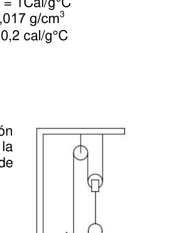
Topic: Elasticity & Materials Metodi: Hooke’s Law, Free-Body Diagram Competenze: Physical Reasoning, Mathematical Modeling Objects: Spring, Pulley Fonte: Testo (PDF) — p.5
Campa, dilatazione e resortimento
PT49. Scuola N° 4-016 Ing. Antonio M. Arboit
Junín, Mendoza.
Una campana appesa a un cavo di acciaio (Cefficiente di dilatazione α= 1,2 x 10-5 °C-1) che si attacca a una polla, e durante la notte la temperatura del luogo scende 10°C. Al punto ―A‖ la tensione di La corda è di 200 N quando nessuno tocca la campana.
a) Determinare il peso della campana b) Calcolare la lunghezza del cavo durante la notte. (c) Supponiamo che ora il cavo di acciaio dal quale si appende la La campana è sostituita da una primavera. L’intervallo di Primavera quando si sopporta solo la campana è di 80 cm e quando si esercita una forza aggiuntiva di 100 N è di 90 cm. Determina la costante elastica della primavera d) Qual è la lunghezza originale della sorgente (cioè quando non si non esercita alcuna forza e non sopporta la campana).
Topic: Elasticity & Materials Metodi: Hooke’s Law, Free-Body Diagram Competenze: Physical Reasoning, Mathematical Modeling Objects: Spring, Pulley Fonte: Testo (PDF) — p.5
Camp, dilation and spring
PT49. School N° 4-016 Ing. The Commission shall adopt implementing acts. The tree .
Junín, Mendoza, you know what?
A bell hanging from a steel wire (Cofficiency of dilation α= 1.2 x 10-5 °C-1) which is held by a pulley, and at night the The temperature of the place is 10°C. At the point ―A‖ the voltage of The rope is 200 N when no one’s ringing the bell.
(a) Determine the weight of the bell. (b) Find the length of the cable at night. (c) Suppose that the steel wire from which the Bell is replaced-do by a spring. The length of the spring when it only holds the bell is 80 cm and when an additional force of 100 N is applied, 90 cm. Determine the spring elastic constant (d) What is the original length of the spring (i.e. when it is not He exerts no force and he cannot bear the bell.
Topic: Elasticity & Materials Metodi: Hooke’s Law, Free-Body Diagram Competenze: Physical Reasoning, Mathematical Modeling Objects: Spring, Pulley Fonte: Testo (PDF) — p.5
Circuito motor malacate
PT50. Escuela N° 4-016 Ing. Antonio M. Arboit
Junín, Mendoza.
El siguiente circuito tiene como fin accionar un motor malacate para levantar una caja que pesa 500 N a un ritmo de 3 m/min.
a) Considerando que la eficiencia del motor es de 85%, calcular la potencia entre-
gada del motor malacate y la potencia consumida.
b) Que valor tendrá R para que por ella circule la misma corriente que por el motor.
c) Calcular la potencia disipada por la resistencia.
Topic: Circuits Metodi: Kirchhoff’s Laws, Equivalent Circuit Reduction Competenze: Physical Reasoning, Mathematical Modeling Objects: Resistor, Battery Fonte: Testo (PDF) — p.5
Motor circolo malaccato
PT50. Scuola N° 4-016 Ing. Antonio M. Arboit
Junín, Mendoza.
Il circuito successivo ha lo scopo di attivare un motore malaccato per sollevare una scatola che Pese 500 N a un ritmo di 3 m/min.
(a) Considerando che l’efficienza del motore è dell’85% la caduta del motore malaccato e la potenza consumata. b) Qual è il valore di R per circolare la stessa corrente che si fa con il motore? c) Calcolare la potenza dissipata dalla resistenza.
Topic: Circuits Metodi: Kirchhoff’s Laws, Equivalent Circuit Reduction Competenze: Physical Reasoning, Mathematical Modeling Objects: Resistor, Battery Fonte: Testo (PDF) — p.5
The following is the list of the components of the engine:
PT50. School N° 4-016 Ing. The Commission shall adopt implementing acts. The tree .
Junín, Mendoza, you know what?
The next circuit is to operate a malfunctioning engine to lift a box that Weighs 500 N at a rate of 3 m/min.
(a) Whereas the efficiency of the engine is 85%, calculate the power between The engine is not running at full speed. (b) What value will R have for the same current to flow through it as through the engine? (c) Calculate the power dissipated by the resistance.
Topic: Circuits Metodi: Kirchhoff’s Laws, Equivalent Circuit Reduction Competenze: Physical Reasoning, Mathematical Modeling Objects: Resistor, Battery Fonte: Testo (PDF) — p.5
Hielo en placa de cobre
PT51. Escuela N° 4-016 Ing. Antonio M. Arboit
Junín, Mendoza.
Un cubo de hielo de 30 g y a -3°C se coloca en una placa de cobre de 900 g que tiene una temperatura de 400° C. Ambos se encuentran en un recipiente adiabático y a una presión de 1 atmósfera. a) Determinar la temperatura la temperatura final del agua.
64 - OAF 2017 b) ¿Qué volumen ocupará el agua luego de alcanzar la temperatura final? c) Determine la temperatura máxima a la que debería estar la placa de cobre para que el hielo nunca se descongele.
Datos Calor latente de fusión del agua: 334 J/g Calor latente de vaporización del agua: 2260 J/g Calor específico del hielo ch=2,09 J/ (g K) Calor específico del agua c=4,18 J/ (g K) Calor específico del vapor de agua: 1,84 J/(g·K) Calor específico del cobre: 0,39 J/(g·K) Constante de los gases R=0,082 L atm/mol K Peso Molecular del Agua= 18 g/mol
Topic: Thermodynamics Metodi: First Law of Thermodynamics, Conservation of Energy Competenze: Physical Reasoning, Mathematical Modeling Objects: Calorimeter Fonte: Testo (PDF) — p.5
Ghiaccio in piastra di rame
PT51. Scuola N° 4-016 Ing. Antonio M. Arboit
Junín, Mendoza.
Un cubetto di ghiaccio di 30 g e a -3°C viene messo su una piastra di rame di 900 g che ha una temperatura di 400° C. Entrambi sono contenuti in un contenitore adiabatico e in un contenitore adiabatico. pressione di 1 atmosfera. a) Determinare la temperatura la temperatura finale dell’acqua.
64 - OAF 2017 b) Che volume occuperà l’acqua dopo aver raggiunto la temperatura finale? c) Determina la temperatura massima a cui dovrebbe essere la scheda di rame per che il ghiaccio non si scongela mai.
Datos Calore latente di fusione dell’acqua: 334 J/g Calore latente di vaporizzazione dell’acqua: 2260 J/g Calore specifico del ghiaccio ch=2,09 J/ (g K) Calore specifico dell’acqua c=4,18 J/ (g K) Calore specifico del vapore idrico: 1,84 J/(g·K) Calore specifico del rame: 0,39 J/(g·K) Costante dei gas R=0,082 L atm/mol K Peso molecolare dell’acqua= 18 g/mol
Topic: Thermodynamics Metodi: First Law of Thermodynamics, Conservation of Energy Competenze: Physical Reasoning, Mathematical Modeling Objects: Calorimeter Fonte: Testo (PDF) — p.5
The following table shows the results of the calculation of the total weight of the product:
PT51. School N° 4-016 Ing. The Commission shall adopt implementing acts. The tree .
Junín, Mendoza, you know what?
A 30 g ice cube and a -3°C is placed on a 900 g copper plate which has a temperature of 400° C. Both are in an adiabatic vessel and a pressure of 1 atmosphere. (a) Determine the temperature the final temperature of the water.
The Commission shall adopt delegated acts in accordance with Article 21 of this Regulation. (b) What volume will the water take up after reaching the final temperature? (c) Determine the maximum temperature at which the copper plate should be for I’m sure the ice never thaws.
Data from the report Latent water melting heat: 334 J/g Latent heat of water vaporization: 2260 J/g Specific heat of ice ch=2,09 J/ (g K) The specific heat of the water c=4,18 J/ (g K) Specific heat of water vapour: 1,84 J/(g·K) Specific heat of copper: 0,39 J/(g·K) The gas constant R=0,082 L atm/mol K Molecular weight of water = 18 g/mol
Topic: Thermodynamics Metodi: First Law of Thermodynamics, Conservation of Energy Competenze: Physical Reasoning, Mathematical Modeling Objects: Calorimeter Fonte: Testo (PDF) — p.5
Bola en tobogán ABCD
PT52. ESRN N° 123
San Carlos de Bariloche, Río Negro.
Una bola de 2kg se desliza sin fricción, por el tobogán ABCD. En A, la energía cinética de la esfera es de 10J y su energía potencial de 54J. Cuáles de las siguientes afirmaciones son ciertas y cuáles no. Explica claramente en que leyes o principios basas tus respuestas.
a) La energía cinética de la bola al pasar por B es de 64J. b) La energía potencial de la bola en C es de 18J. c) La energía cinética de la bola en C vale 46J. d) La energía mecánica en D es de 64J. e) La velocidad de la bola en D es de 8m/s
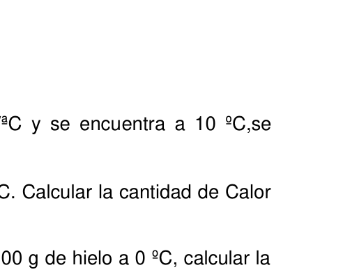
Topic: Conservation of Energy Metodi: Energy Conservation Method, Conservation of Energy Competenze: Physical Reasoning Objects: Ball Fonte: Testo (PDF) — p.5
Bolla in scivolo ABCD
PT52. NORM N° 123
San Carlo di Bariloche, Rio Negro.
Una palla da 2 kg scivola senza attrito, attraverso il toboggan ABCD. In A, l’energia cinetica di La sfera è di 10J e la sua energia potenziale è di 54J. Quali delle seguenti affermazioni sono veri e non sono. Spiega chiaramente su quali leggi o principi si basano i tuoi risposte.
a) L’energia cinetica della palla passando B es de 64J. b) L’energia potenziale della palla in C è de 18J. c) L’energia cinetica della palla in C vale 46J. d) L’energia meccanica in D è di 64J. e) La velocità della palla in D è di 8m/s
Topic: Conservation of Energy Metodi: Energy Conservation Method, Conservation of Energy Competenze: Physical Reasoning Objects: Ball Fonte: Testo (PDF) — p.5
The following table shows the results of the calculation of the total weight of the ball:
PT52. The amount of the adjustment shall be reported in the following table:
St. Charles of Bariloche, Rio Negro.
A 2kg ball slides without friction through the ABCD slide. In A, the kinetic energy of The sphere is 10J and its potential energy is 54J. Which of the following statements They’re true and they’re not. Clearly explain what laws or principles you base your ideas on. I’m not going to answer.
(a) The kinetic energy of the ball as it passes through. B es de 64J. (b) The potential energy of the ball in C is de 18J. (c) The kinetic energy of the ball in C is equal to 46J. d) The mechanical energy in D is 64J. (e) The speed of the ball in D is 8m/s
Topic: Conservation of Energy Metodi: Energy Conservation Method, Conservation of Energy Competenze: Physical Reasoning Objects: Ball Fonte: Testo (PDF) — p.5
Calorimetría con calentador eléctrico
PT53. ESRN N° 123
San Carlos de Bariloche, Río Negro.
En un recipiente cuya capacidad térmica es de 20 cal/ªC y se encuentra a 10 ºC,se colocan 300 g de agua a 10 ºC.
a) Se desea calentar el conjunto hasta llegar a 50 ºC. Calcular la cantidad de Calor necesario, en Joules y calorías.
b) Si en las condiciones iniciales se agregan otros 100 g de hielo a 0 ºC, calcular la cantidad de calor necesario.
c) Si para lograrlo se utiliza un calentador eléctrico cuya resistencia es de 300 ohm, conectado a la red domiciliaria, determinar la potencia del aparato.
d) Calcular el tiempo necesario para realizar la operación.
Ce del agua = 1 cal/g.ºC Calor de Fusión del hielo = 80 cal/g
OAF 2017 - 65
Topic: Thermodynamics Metodi: First Law of Thermodynamics, Conservation of Energy Competenze: Physical Reasoning, Mathematical Modeling Objects: Calorimeter, Resistor Fonte: Testo (PDF) — p.5
Calorimetria con riscaldatore elettrico
PT53. NORM N° 123
San Carlo di Bariloche, Rio Negro.
In un recipiente con una capacità termico di 20 cal/aC e a 10 oC, si mettono 300 g di acqua a 10 oC.
(a) Si desidera riscaldare l’insieme fino a 50 oC. Calcolare la quantità di calore necessaria, in joules e calorie.
b) Se si aggiungono altri 100 g di ghiaccio a 0 oC nelle condizioni iniziali, calcolare la la quantità di calore necessaria.
c) Se per conseguire tale obiettivo si utilizza un riscaldatore elettrico di resistenza di 300 ohm, collegato alla rete domestica, determinare la potenza dell’apparecchio.
d) Calcolare il tempo necessario per effettuare l’operazione.
C dell’acqua = 1 cal/g.oC Calore di fusione del ghiaccio = 80 cal/g
OAF 2017 - 65
Topic: Thermodynamics Metodi: First Law of Thermodynamics, Conservation of Energy Competenze: Physical Reasoning, Mathematical Modeling Objects: Calorimeter, Resistor Fonte: Testo (PDF) — p.5
Calorimetry with electric heater
PT53. The amount of the adjustment shall be reported in the following column:
St. Charles of Bariloche, Rio Negro.
In a container with a thermal capacity of 20 cal/aC and at 10 oC, They place 300 g of water at 10 oC.
(a) The whole is to be heated to 50 oC. Calculate the amount of heat It’s necessary, in Joules and calories.
(b) If 100 g of ice at 0 oC are added under the initial conditions, calculate the the amount of heat required.
(c) If an electric heater with a resistance of 300 ohms is used to achieve this, connected to the home network, determine the power of the device.
(d) Calculate the time required to perform the operation.
The water content of the ice is equal to 1 cal/g.oC.
The following is the list of the Member States’ financial statements:
Topic: Thermodynamics Metodi: First Law of Thermodynamics, Conservation of Energy Competenze: Physical Reasoning, Mathematical Modeling Objects: Calorimeter, Resistor Fonte: Testo (PDF) — p.5
Medición del dinamómetro
PT54. ESRN N° 123
San Carlos de Bariloche, Río Negro.
Determina la medición del dinamómetro
h del cilindro 15 cm
diámetro del cilindro 30 cm
δ del aluminio 2,7 g/cm3
δ del agua 1g/cm3
Topic: Fluid Mechanics Metodi: Hydrostatic Equilibrium Competenze: Physical Reasoning, Mathematical Modeling Objects: Cylinder Fonte: Testo (PDF) — p.5
Messa del dinamometro
PT54. NORM N° 123
San Carlo di Bariloche, Rio Negro.
Determina la misurazione del dinamometro
h del cilindro 15 cm
diametro del cilindro 30 cm
di alluminio 2,7 g/cm3
δ di acqua 1 g/cm3
Topic: Fluid Mechanics Metodi: Hydrostatic Equilibrium Competenze: Physical Reasoning, Mathematical Modeling Objects: Cylinder Fonte: Testo (PDF) — p.5
The measurement of the dynamometer shall be carried out by the following:
PT54. The amount of the adjustment shall be reported in the following column:
St. Charles of Bariloche, Rio Negro.
Determine the dynamometer measurement
h of the cylinder 15 cm
diameter of the cylinder 30 cm
Other, of a width of not more than 15 mm
δ of water 1 g/cm3
Topic: Fluid Mechanics Metodi: Hydrostatic Equilibrium Competenze: Physical Reasoning, Mathematical Modeling Objects: Cylinder Fonte: Testo (PDF) — p.5
El coyote y la pelota ACME
PT55. Colegio Del Cerro - Bachillerato Humanista Moderno
Instituto parroquial San Alfonso - Instituto Modelo
Instituto de Educación Media Dr. Arturo Oñativia
Colegio José Manuel Estrada - Colegio 5095 - Colegio de Jesús
Escuela Técnica Alberto Einstein - Colegio Santa Teresa de Jesús
Ciudad de Salta.
El coyote y la pelota ACME. Wile E. el coyote caza-correcaminos pretende comprobar su última adquisición, una pelota, marca ACME de choques elásticos. Parado en el borde de un precipicio de 60 metros de alto, el coyote realizará algunas pruebas, antes de lanzarse a la fase final de su plan.
- Inicialmente lanza la pelota horizontalmente con velocidad 𝑣𝑥= 1 𝑚𝑠𝑒𝑔
. Si no hay gasto energético con el aire ni en el rebote en el suelo, describa el movimiento que tendrá. 2. Luego de recuperar la pelota, la lanza con velocidad de componentes horizontal y vertical (Vy, Vx respectivamente), hacia adelante y hacia abajo, respectivamente. Describa el nuevo movimiento. 3. Calcule la altura máxima a la que llegará la pelota. Una vez hechas estas pruebas, inicia la segunda parte, donde utilizara la pelota para avanzar sobre el precipicio, saltando cuando la bola llega a la altura inicial del lanzamiento.
Fotos aportadas por el oso Yogui para mostrar el funcionamiento de la pelota.
66 - OAF 2017 4. Después de la mentalización preparatoria para la hazaña, el coyote corre hacia el precipicio a velocidad 𝑣𝑥 (misma componente que la pelota). Lanza la pelota y salta. Si la idea es llegar a la pelota cuando ésta vuelve a la altura de lanzamiento, y su velocidad vertical (𝑣𝑐 del coyote es de 2m/s), calcular la velocidad inicial neta de la pelota. 5. Suponiendo choques elásticos entre la pelota y el coyote, calcular la velocidad de éste luego de cada choque, sabiendo que solo ―se impulsa‖ hacia arriba sobre la pelota en dicha interacción. 6. Como no podía ser de otra forma, por ser Acme, la pelota empieza a fallar, y pierde 10% de su velocidad vertical en cada rebote con el piso. Calcular cuántos ―pasos‖ podría dar el coyote. 7. Luego de su inevitable y rotundo fracaso, prueba otro producto de la misma compañía (de dueño Roadrunner): una silla que le permitiría evitar daños al caer desde una gran altura. El procedimiento es el siguiente: durante la caída, se para sobre la silla, y cuando llegue a estar a 2 m del suelo, se impulsa hacia arriba, transfiriéndole su energía cinética a la silla, como sus patas le permitan. Si realiza esto con el acantilado anteriormente tratado, calcule la velocidad con la que la silla llegaría al suelo (masa de la silla 5 Kg) 8. Suponiendo que la altura máxima de salto de un coyote en condiciones normales es de 2.5 m; calcule la velocidad con la que el pobre canino llegaría al suelo durante este último ensayo.
Datos Masa del coyote: 15 kg Gravedad: 9.8 𝑚 𝑠𝑒𝑔2
Altura del precipicio: 60 m
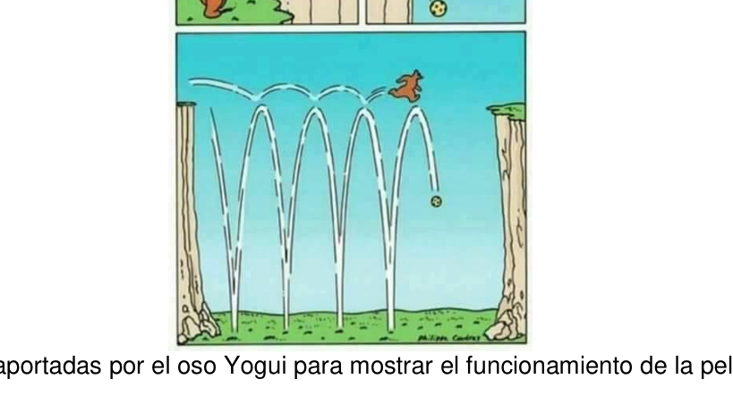
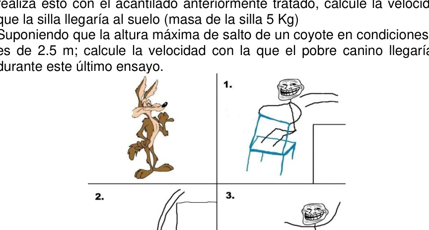
Topic: Newtonian Mechanics, Conservation of Momentum Metodi: Kinematic Equations, Conservation of Momentum, Conservation of Energy Competenze: Physical Reasoning, Mathematical Modeling Objects: Projectile, Ball Fonte: Testo (PDF) — p.5
Il coyote e la palla ACME
PT55. Colegio Del Cerro - Bachillerato Humanista Moderno
Istituto parrocchiale San Alfonso - Istituto Modello
Istituto di media educazione Dr. Arturo Oñativia
Colegio José Manuel Estrada - Colegio 5095 - Colegio di Gesù
Alberto Einstein Technical School - La Santa Teresa di Gesù
Città di Salta.
Il coyote e la palla ACME. Wile E. Il coyote cacciatore-costagiano vuole verificare il suo ultimo acquisto, un palla, marca ACME di colpi elastica. Fermo sul bordo di un precipizio alto 60 metri, il coyote farà alcune prova, prima di lanciare la fase finale del suo piano.
- Inizialmente lancia la palla orizzontalmente con velocità vx= 1 msec
. Si no Non si può fare a meno di un’energia aerea o a terra. movimento che avrà. 2. Dopo aver recuperato la palla, lancia con velocità di componenti orizzontali. e verticale (Vy, Vx rispettivamente), avanti e giù, rispettivamente. Descrivi il nuovo movimento. 3. Calcola la massima altezza alla quale raggiungerà la palla. Una volta che hai fatto questi test, inizia la seconda parte, dove usi la palla per Avanzare sul precipizio, saltando quando la palla raggiunge l’altezza iniziale del lancio.
Foto fornite dal orso Yogui per mostrare il funzionamento della palla.
66 - OAF 2017 4. Dopo la mentalità preparatoria per l’impresa, il coyote corre verso il precipitamento a velocità vx (lo stesso componente della palla). Lancia la palla e… Salta. Se l’idea è di arrivare alla palla quando essa torna a lancio, e il suo velocità verticale (vc del coyote è di 2m/s), calcolare la velocità iniziale netta della palla. 5. Supponiamo colpi elastici tra la palla e il coyote, calcolando la velocità. di questo dopo ogni colpo, sapendo che si spinge solo verso l’alto sulla palla in tale interazione. 6. Non poteva essere altrimenti, per essere Acme, la palla inizia a fallire, e perde il 10% della velocità verticale con ogni rimbalzo con il pavimento. Calcolare quanti “passi” potrebbe dare il coyote. 7. Dopo il suo inevitabile e rotondo fallimento, prova un altro prodotto della stessa società (proprietaria Roadrunner): una sedia che consentirebbe di evitare danni da caduta Da un’alta quota. La procedura è la seguente: durante il caduto, si ferma sulla sedia, e quando arriva a due metri dal pavimento, si spinge verso l’alto, trasferendo la sua energia cinetica alla sedia, come le sue gambe lo consentono. Si Fa questo con la roccia trattata prima, calcola la velocità con la che la sedia raggiungesse il pavimento (massa della sedia 5 Kg) 8. Supponiamo che la massima altezza di salto di un coyote in condizioni normali È di 2,5 m. Calcola la velocità con cui il povero cane arriverebbe al suolo. durante l’ultimo test.
Datos Massa del coyote: 15 kg • Gravità: 9,8 m seg2
Altezza del precipizio: 60 m
Topic: Newtonian Mechanics, Conservation of Momentum Metodi: Kinematic Equations, Conservation of Momentum, Conservation of Energy Competenze: Physical Reasoning, Mathematical Modeling Objects: Projectile, Ball Fonte: Testo (PDF) — p.5
The coyote and the ACME ball
PT55. Del Cerro College - Modern Humanist Degree
The Parish Institute of San Alfonso - Model Institute
The Institute of Middle Education Dr. Arturo Oñativia is a great writer.
The school is located in the city of San José.
Albert Einstein Technical School - Saint Teresa of Jesus College
Salt City.
The coyote and the ACME ball. Wile E. The coyote hunter-gatherer intends to verify his latest acquisition, a ball, ACME brand of elastic shock. Standing on the edge of a 60-meter-high cliff, the coyote will perform some Tests, before you jump into the final phase of your plan.
- Initially, throw the ball horizontally at vx= 1 msec.
. Si no There is energy expenditure with air or rebound on the ground, describe the movement you’ll have. 2. After you recover the ball, you throw it at horizontal component speed. and vertical (Vy, Vx respectively), forward and downwards, the Commission. Describe the new movement. 3. Calculate the maximum height the ball will reach. Once you’ve done these tests, start the second part, where you use the ball to advance over the precipice, jumping when the ball reaches the initial height of the launch.
Photos provided by the Yogui bear to show the ball’s operation.
The Commission shall adopt delegated acts in accordance with Article 66 of the Financial Regulation. 4. After the preparatory mindset for the feat, the coyote runs toward the precipice at vx speed (the same component as the ball). He throws the ball and
- Jump up. If the idea is to get the ball when it gets back to pitch height, and your vertical speed (coyote vc is 2m/s), calculate the net initial speed of the ball.
- Assuming elastic collisions between the ball and the coyote, calculate the speed. of this one after every crash, knowing that it only “pushes itself upwards” on the ball in that interaction.
- As it could not be otherwise, being Acme, the ball starts to fail, and It loses 10% of its vertical speed on every rebound with the floor. Calculate how many “steps” could give the coyote.
- After his inevitable and resounding failure, try another product of the same. company (owned by Roadrunner): a chair that would allow you to avoid falling damage From a great height. The procedure is as follows: during the fall, stop On the chair, and when it gets to be two meters from the ground, it’s pushed upwards. transferring his kinetic energy to the chair, as his legs allow. Si You do this with the cliff above, calculate the speed with the The chair would reach the floor (chair mass 5 kg)
- Assuming the maximum jump height of a coyote under normal conditions It ‘s 2.5 m . Calculate the speed at which the poor canine would reach the ground . during this last test.
Data from the report • Coyote weight: 15 kg • Gravity: 9.8 m Other
Height of the precipice: 60 m
Topic: Newtonian Mechanics, Conservation of Momentum Metodi: Kinematic Equations, Conservation of Momentum, Conservation of Energy Competenze: Physical Reasoning, Mathematical Modeling Objects: Projectile, Ball Fonte: Testo (PDF) — p.5
Dilatación de barras y flotación
PT56. Colegio Del Cerro - Bachillerato Humanista Moderno
Instituto parroquial San Alfonso - Instituto Modelo
Instituto de Educación Media Dr. Arturo Oñativia
Colegio José Manuel Estrada - Colegio 5095 - Colegio de Jesús
Escuela Técnica Alberto Einstein - Colegio Santa Teresa de Jesús
Ciudad de Salta.
El profesor de física GokuResaka de la universidad de Salsipuedes, Japón, propone dos problemas a sus alumnos:
- Se tiene dos barras de metal, una barra de aluminio de longitud L1, cuyo coeficiente de dilatación lineal es de 2.3x10^-5ºC^-1, y otra barra de acero de longitud L2, cuyo coeficiente de dilatación lineal es 1.1x10^-5ºC^-1. Cada barra es sometida a una diferencia de temperatura DT=200ºC y cada una llega a medir una longitud L.
OAF 2017 - 67
Suponiendo que tuviéramos unidas las dos barras de un extremo, la longitud total
aumenta 0.3cm.
a) Hacer un esquema explicativo
b) Determinar L1 y L2
La Figura P.2 ilustra un esquema de un péndulo cuya longitud l no sea afectado por la
dilatación térmica. Las tres barras claras de la figura tienen la misma longitud l1 y son de
acero. Mientras que las dos barras oscuras del péndulo, de misma longitud l2, son de
aluminio
c) Hacer un esquema explicativo
d) Determine l1 y l2 de forma de mantener l=0.5m.
- La Figura P.5 muestra un recipiente cilíndrico de acero contiene mercurio sobre el cual flota un bloque cilíndrico de latón. A una temperatura de 20ºC, el nivel de mercurio en el depósito está a una altura ho=0.5m en relación al fondo y la altura ao del cilindro de latón es de 0.3m. A esa temperatura la densidad del latón es de 8.6g/cm3 y la densidad del mercurio es de 13.55g/cm3 a) A que altura Ho esta la parte superior del bloque de latón en relación con el fondo del recipiente a 20ºC. b) El coeficiente de dilatación lineal del latón es 1.9x10^-5ºC^-1. El coeficiente de dilatación volumétrica del mercurio es 1.8x10^-4ºC^-1. Calcule la variación dH de altura Ho(en mm) cuando la temperatura es 80ºC. Suponer el radio del cilindro de latón r=0.15m y el radio del recipiente de acero de 0.4m.
68 - OAF 2017
Topic: Elasticity & Materials, Fluid Mechanics Metodi: Stress-Strain Analysis, Hydrostatic Equilibrium Competenze: Physical Reasoning, Mathematical Modeling Objects: Rod, Cylinder Fonte: Testo (PDF) — p.5
Dilatazione delle barre e fluttuazione
PT56. Colegio Del Cerro - Bachillerato Humanista Moderno
Istituto parrocchiale San Alfonso - Istituto Modello
Istituto di media educazione Dr. Arturo Oñativia
Colegio José Manuel Estrada - Colegio 5095 - Colegio di Gesù
Alberto Einstein Technical School - La Santa Teresa di Gesù
Città di Salta.
Il professore di fisica GokuResaka dell’università di Salsipuedes, in Giappone, propone due problemi ai suoi studenti:
- Si dispone di due barre di metallo, una barra di alluminio di lunghezza L1, il cui coefficiente di dilatamento lineare è di 2,3x10^-5oC^-1, e un’altra barra di acciaio di lunghezza L2, Il coefficiente di dilatazione lineare è di 1,1x10^-5oC^-1. Ogni barra è sottoposta a una La differenza di temperatura DT=200oC e ciascuna misura una lunghezza L.
OAF 2017 - 67 Supponiamo che abbiamo uniti i due punti di un’estremità, la lunghezza totale. aumenta di 0,3 cm. a) Fare un schema esplicativo b) Determinare L1 e L2 La figura P.2 illustra un schema di un pendolo la cui lunghezza l non è influenzata dalla dilatazione termica. Le tre barre chiare della figura hanno la stessa lunghezza e sono di
- l’acciaio. Mentre le due barre oscure del pendolo, di uguale lunghezza l2, sono di Alumini c) Disegnare un schema esplicativo d) Determina l1 e l2 in modo da mantenere l=0.5m.
- La figura P.5 mostra un recipiente cilindrico in acciaio contenente mercurio su cui flotta un blocco cilindrico di rame. A una temperatura di 20°C, il livello di mercurio in Il deposito è a un’altezza ho=0.5m rispetto al fondo e all’altezza del cilindro di rame. es de 0.3m. A questa temperatura la densità del latone è di 8,6 g/cm3 e la densità del latone è di 8,6 g/cm3. Mercurio è di 13,55 g/cm3 a) A che altezza si trova la parte superiore del blocco di rame rispetto al fondo del recipiente a 20°C. b) Il coefficiente di dilatazione lineare del latone è di 1,9x10^-5oC^-1. Il coefficiente di La dilatazione volumetrica del mercurio è di 1,8x10^-4oC^-1. Calcolare la variazione dH di Altizza (in mm) quando la temperatura è di 80oC. Supponiamo il raggio del cilindro di rame r=0,15 m e di radio del recipiente in acciaio di 0,4 m.
68 - OAF 2017
Topic: Elasticity & Materials, Fluid Mechanics Metodi: Stress-Strain Analysis, Hydrostatic Equilibrium Competenze: Physical Reasoning, Mathematical Modeling Objects: Rod, Cylinder Fonte: Testo (PDF) — p.5
The following table shows the results of the calculation of the weighted average weight of the product:
PT56. Del Cerro College - Modern Humanist Degree
The Parish Institute of San Alfonso - Model Institute
The Institute of Middle Education Dr. Arturo Oñativia is a great writer.
The school is located in the city of San José.
Albert Einstein Technical School - Saint Teresa of Jesus College
Salt City.
Professor GokuResaka of the University of Salsipuedes, Japan, proposes two problems for their students:
- It has two metal bars, an aluminium bar of L1 length, whose coefficient of Linear dilation is 2.3x10^-5oC^-1, and another L2 length steel bar, whose The coefficient of linear dilation is 1.1x10^-5oC^-1. Each bar is subjected to a temperature difference DT=200oC and each reaches a length of L.
The Commission shall adopt implementing acts in accordance with Article 21 of the Financial Regulation. Suppose we had the two bars of one end joined together, the total length. increases by 0.3 cm. (a) Draw up an explanatory scheme (b) Determine L1 and L2 Figure P.2 illustrates a diagram of a pendulum whose length is not affected by the The thermal expansion. The three clear bars in the figure are of the same length and are of steel. Whereas the two dark bars of the pendulum, of equal length l2, are of Aluminium (c) Draw up an explanatory scheme (d) Determine l1 and l2 so as to maintain l=0.5m.
- Figure P.5 shows a cylindrical steel container containing mercury on which It floats a cylindrical block of brass. At a temperature of 20°C, the mercury level in the The tank is at a height of 0.5 m in relation to the bottom and height of the brass cylinder. es de 0.3m. At that temperature the density of brass is 8.6 g/cm3 and the density of the brass is 8.6 g/cm3. Mercury is 13.55 g/cm3. (a) How high is the top of the brass block in relation to the bottom of the container at 20 °C. (b) The coefficient of linear brass dilation is 1.9x10^-5oC^-1. The coefficient of The volumetric dilation of mercury is 1.8×10^-4oC^-1. Calculate the change in dH of Height Ho(in mm) when the temperature is 80oC. Suppose the radius of the cylinder of brass r=0.15m and the steel container radius of 0.4m.
The following is the list of the countries of the European Union:
Topic: Elasticity & Materials, Fluid Mechanics Metodi: Stress-Strain Analysis, Hydrostatic Equilibrium Competenze: Physical Reasoning, Mathematical Modeling Objects: Rod, Cylinder Fonte: Testo (PDF) — p.5
Thor, el hacedor de tormentas
PT57. Colegio Del Cerro - Bachillerato Humanista Moderno
Instituto parroquial San Alfonso - Instituto Modelo
Instituto de Educación Media Dr. Arturo Oñativia
Colegio José Manuel Estrada - Colegio 5095 - Colegio de Jesús
Escuela Técnica Alberto Einstein - Colegio Santa Teresa de Jesús
Ciudad de Salta.
Thor, el hacedor de tormentas. Thor, el semi-dios asgardiano, fiel seguidor de las tradiciones de su gente; está en una cruenta batalla contra los gigantes de hielo. Si bien su desarrollo neuronal no es grandioso, sus músculos si, logrando que sea un gran guerrero. Pero su martillo, Mjolnir, es en gran parte, la clave de sus éxitos; capaz de convocar grandes tormentas y rayos. En el clímax de la batalla, el futuro rey de Asgard, arremete contra el suelo con su arma, generando una diferencia de potencial de 10 000 voltios con respecto al suelo, en un radio de 300 metros; logrando así rayos de 650 metros de alto.
- Calcule la resistencia del aire al momento de producirse las descargas a tierra. Grafique la situación (no a Thor, sino el fenómeno eléctrico)
- Calcule la corriente que fluye en la situación descripta.
- Considerando que los 9826 gigantes de hielo (Loki los contó) miden 3 metros, y ―ocupan‖ (con la misma resistividad que el aire) el campo alrededor del héroe, calcule el voltaje al que están sometidos.
- Calcule la potencia entregada a cada uno de los gigantes de hielo.
- ¿Habría sido diferente el valor anterior si lo gigantes gélidos decidían hacerse cococho (subirse a los hombres de un gigante amigo)? ¿Les habría convenido?
- El potencial eléctrico establecido genera, magia mediante, una particularidad en el aire de la zona de guerra: ¡modifica la visibilidad! Esto, sumado al polvo y humedad del ambiente, hace que el aire tenga un índice de refracción igual a 2 (dos). Tomando en cuenta la velocidad media a la que viaja un rayo, calcular el tiempo máximo y mínimo que le tomaría a cada rayo alcanzar al héroe en el centro de la épica batalla.
- ¿Cuánta carga atraviesa a cada uno de los enormes de hielo?
Constantes Resistividad del aire: 16 Ω.m Velocidad media de un rayo: 440 𝑘𝑚𝑠𝑒𝑔
Topic: Circuits Metodi: Kirchhoff’s Laws, Equivalent Circuit Reduction Competenze: Physical Reasoning, Mathematical Modeling Objects: Resistor Fonte: Testo (PDF) — p.5
Thor, il creatore di tempeste
PT57. Colegio Del Cerro - Bachillerato Humanista Moderno
Istituto parrocchiale San Alfonso - Istituto Modello
Istituto di media educazione Dr. Arturo Oñativia
Colegio José Manuel Estrada - Colegio 5095 - Colegio di Gesù
Alberto Einstein Technical School - La Santa Teresa di Gesù
Città di Salta.
Thor, il creatore di tempeste. Thor, il semideo asgardiano, fedele seguitore delle tradizioni del suo popolo, è in una sta combattendo contro i giganti del ghiaccio. Mentre il suo sviluppo neuronale non è grandioso, i suoi muscoli lo sono, riuscendo a renderlo un Grande guerriero. Ma il suo martello, Mjolnir, è in gran parte la chiave del suo successo; capace di Chiamare grandi tempeste e fulmini. Al culmine della battaglia, il futuro re di Asgard, lancia il suo arma sul suolo. La differenza di potenza di 10 000 volt rispetto al suolo, in un 300 metri di radius, raggiungendo così raggi di altezza di 650 metri.
- Calcolare la resistenza dell’aria al momento della scarica a terra. Grafica la situazione (non Thor, ma il fenomeno elettrico)
- Calcolare il flusso corrente nella situazione descritta.
- Considerando che i 9.826 giganti di ghiaccio (Loki li ha contati) sono di 3 metri di altezza, e “occupano” (con la stessa resistenza dell’aria) il campo intorno al eroe, Calcola la tensione a cui sono sottoposti.
- Calcola la potenza distribuita a ciascun gigante di ghiaccio.
- Il valore precedente sarebbe stato diverso se i giganti gelati decidessero di farlo. cocco (sballare gli uomini di un amico gigante)? Le sarebbe piaciuto?
- Il potenziale elettrico stabilito genera, magicamente, una particolarità in L’aria della zona di guerra: modifica la visibilità! Questo, aggiunto alla polvere e l’umidità dell’ambiente, fa sì che l’aria abbia un indice di refraczione pari a 2. (due). Considerando la velocità media a cui un fulmine viaggia, calcolare il Il tempo massimo e minimo che ci vorrebbe per ogni fulmine di raggiungere il eroe in centro dell’epico combattimento.
- Quanti carichi attraversano ogni gigantesca ghiaccio?
Costanti Resistenza all’aria: 16 Ω.m Velocità media di un fulmine: 440 kmsec
Topic: Circuits Metodi: Kirchhoff’s Laws, Equivalent Circuit Reduction Competenze: Physical Reasoning, Mathematical Modeling Objects: Resistor Fonte: Testo (PDF) — p.5
The following is the list of the Member States’ official data protection authorities.
PT57. Del Cerro College - Modern Humanist Degree
The Parish Institute of San Alfonso - Model Institute
The Institute of Middle Education Dr. Arturo Oñativia is a great writer.
The school is located in the city of San José.
Albert Einstein Technical School - Saint Teresa of Jesus College
Salt City.
Thor, the storm maker. Thor, the Asgardian semi-god, faithful follower of the traditions of his people; he is in a It’s a battle against the ice giants. While his neuronal development isn’t great, his muscles do, making him a great player. A great warrior. But his hammer, Mjolnir, is largely the key to his success; capable of Calling for big storms and lightning. At the climax of the battle, the future king of Asgard, throws his weapon at the ground. The resulting potential difference is 10 000 volts from the ground in a radius of 300 meters, thus achieving 650 meters high rays.
- Calculate the air resistance at the time of land discharges. Graph the situation (not Thor, but the electrical phenomenon)
- Calculate the current flowing in the situation described.
- Considering that the 9,826 ice giants (Loki counted them) are 3 meters tall, and ” occupy the field around the hero, Calculate the voltage they are subjected to.
- Calculate the power delivered to each of the ice giants.
- Would the previous value have been different if the icy giants decided to make it? Coconut (riding the men of a giant friend)? Would it have been good for you?
- The established electric potential generates, magic by, a peculiarity in The air of the war zone: modify visibility! This, plus the dust and Humidity in the environment, makes the air have a refractive index of 2 (two). Taking into account the average speed at which a lightning travels, calculate the Maximum and minimum time it would take each beam to reach the hero in the The epic battle center.
- How much cargo does each of these huge ice sheets carry?
Constantly Resistance to air: 16 Ω.m Average speed of lightning: 440 km/s
Topic: Circuits Metodi: Kirchhoff’s Laws, Equivalent Circuit Reduction Competenze: Physical Reasoning, Mathematical Modeling Objects: Resistor Fonte: Testo (PDF) — p.5
Tiro libre de básquetbol
PT58. Escuela Escocesa San Andrés
Escuela Municipal Paula Albarracín de Sarmiento
Olivos, Buenos Aires.
Graciela, de 1,79 metros de altura, se encuentra lanzando los tiros libres en un partido de básquetbol. El primero lo erra. El segundo lanzamiento, que lo hace extendiendo sus brazos unos 50 cm por sobre la altura de sus hombros y a 30 cm hacia delante: ¿lo encestará? a) Calcular el ángulo de inclinación del lanzamiento con el brazo extendido, y la altura de la pelota al momento de ser lanzada medida desde el suelo, entendiendo que la altura de los hombros al suelo es de 1,55 metros. b) El aro se encuentra reglamentariamente a 3,05 metros de altura, ¿con qué velocidad se debería lanzar la pelota para que demore su vuelo 1,2 segundos y resulte convertido el lanzamiento? c) Si al embocarse la pelota ésta atraviesa el aro y se atora unos instantes a unos diez centímetros por debajo del aro por enredarse con la red, para luego caer libremente al suelo: ¿cuál será la pérdida de energía mecánica si posteriormente
OAF 2017 - 69 al rebote contra el suelo se eleva tan solo la pelota unos 2,3 metros? La masa de la pelota es de 550 gramos.
Topic: Newtonian Mechanics Metodi: Kinematic Equations, Conservation of Energy Competenze: Physical Reasoning, Mathematical Modeling Objects: Projectile, Ball Fonte: Testo (PDF) — p.5
Pillo libero di basket
PT58. Scuola scozzese San Andrés
Scuola Comunale Paula Albarracín di Sarmiento
Olivos, Buenos Aires.
Graciela, di 1,79 metri di altezza, si trova a lanciare i free-throw in una partita di
- Basketball. Il primo sbaglia. Il secondo lancio, che lo fa estendendo i suoi braccia circa 50 cm al di sopra delle spalle e 30 cm in avanti:
- Si farà? a) Calcolare l’angolo di inclinamento del lancio con l’armo esteso, e altezza della palla al momento del lancio, misurata dal suolo, intendo che l’altezza delle spalle al suolo è di 1,55 metri. b) L’arco si trova regolarmente a 3,05 metri di altezza, con quale La velocità dovrebbe essere lanciata per ritardare il volo per 1,2 secondi e Il lancio è convertito? c) Se, quando si stacca la palla, essa attraversa l’arco e si ferma per qualche istante a qualche 10 centimetri sotto l’anello per essere intrappolati con la rete, per poi cadere La perdita di energia meccanica, se successivamente
OAF 2017 - 69 Quando si rimbalza contro il suolo, la palla si solleva solo a circa 2,3 metri? La massa di La palla è di 550 grammi.
Topic: Newtonian Mechanics Metodi: Kinematic Equations, Conservation of Energy Competenze: Physical Reasoning, Mathematical Modeling Objects: Projectile, Ball Fonte: Testo (PDF) — p.5
I’m not sure I’m gonna make it.
PT58. St. Andrew’s Scottish School
The city of Sarmiento is the city of Paula Albarracín.
Olive trees, from Buenos Aires.
Graciela, who stands 1.79 meters tall, is shooting free throws in a match in I’m playing basketball. The first one’s wrong. The second release, which he does by extending his arms about 50 cm above the shoulder height and 30 cm forward: Will it be? (a) Calculate the angle of inclination of the throw with the outstretched arm, and ball height at the time of throwing measured from the ground, Understanding that the height of the shoulders to the floor is 1.55 meters. (b) The ring is normally at a height of 3.05 metres, with what? Speed should be thrown the ball to delay its flight 1.2 seconds and turns out the launch is? (c) If the ball is caught, it passes through the ring and is stopped for a few moments at a time. Ten centimeters below the ring by entangling with the net, then falling. free to the ground: what will be the mechanical energy loss if subsequently
The Commission shall adopt implementing acts in accordance with Article 21 of the Financial Regulation. When you bounce back against the ground, only the ball rises about two feet? The mass of The ball is 550 grams.
Topic: Newtonian Mechanics Metodi: Kinematic Equations, Conservation of Energy Competenze: Physical Reasoning, Mathematical Modeling Objects: Projectile, Ball Fonte: Testo (PDF) — p.5
Sonda en órbita
PT59. Escuela Escocesa San Andrés
Escuela Municipal Paula Albarracín de Sarmiento
Olivos, Buenos Aires.
Esta pregunta es sobre una sonda en órbita. Una sonda de masa m está en un órbita circular de radio r alrededor de un planeta esférico de masa M.
a) Deduzca que para la sonda en órbita su i) rapidez es v = . ii) energía total es E = . c) Ahora se necesita colocar a la sonda en una órbita más alejada del planeta. Para hacerlo se deben prender los motores de la sonda por un breve tiempo. Diga y explique si el trabajo realizado sobre la sonda será positive, negative o cero.
Topic: Gravitation Metodi: Newton’s Law of Gravitation, Energy Conservation Method Competenze: Physical Reasoning, Mathematical Modeling Objects: Satellite, Planet Fonte: Testo (PDF) — p.5
Sonda in orbita
PT59. Scuola scozzese San Andrés
Scuola Comunale Paula Albarracín di Sarmiento
Olivos, Buenos Aires.
Questa domanda riguarda una sonda in orbita. Una sonda di massa m è in orbita circolare di radio r attorno a un pianeta di massa M.
a) Dall’ipotesi che la sonda in orbita sia i) velocità è v = . (ii) l’energia totale è E = . c) Ora la sonda deve essere posta in un’orbita più lontana dal pianeta. Per farlo, è necessario accendere i motori della sonda per un breve periodo. Di’ e spiega se il lavoro svolto sulla sonda sarà positivo, negativo o zero.
Topic: Gravitation Metodi: Newton’s Law of Gravitation, Energy Conservation Method Competenze: Physical Reasoning, Mathematical Modeling Objects: Satellite, Planet Fonte: Testo (PDF) — p.5
The following information shall be provided:
PT59. St. Andrew’s Scottish School
The city of Sarmiento is the city of Paula Albarracín.
Olive trees, from Buenos Aires.
This question is about a probe in orbit. An m-mass probe is in a circular orbit of radius r around a planet. a spherical mass of M.
(a) It is deduced that for the probe in orbit its (i) speed is v = . (ii) total energy is E = . (c) Now the probe needs to be placed in a more distant orbit of the planet. To do this, the probe’s engines must be switched on for a short time. Tell and explain whether the work done on the probe will be positive, negative or zero.
Topic: Gravitation Metodi: Newton’s Law of Gravitation, Energy Conservation Method Competenze: Physical Reasoning, Mathematical Modeling Objects: Satellite, Planet Fonte: Testo (PDF) — p.5
Campos eléctricos y circuitos
PT60. Escuela Escocesa San Andrés
Escuela Municipal Paula Albarracín de Sarmiento
Olivos, Buenos Aires.
Esta pregunta es sobre campos eléctricos y circuitos eléctricos. a) Dos placas metálicas cargadas y paralelas A y B están en un vacío.
En un momento en particular un electrón se encuentra en el punto P. En el diagrama, dibuje i) el campo eléctrico debido a las placas. ii) una flecha para representar la dirección de la fuerza sobre el electrón en P. b) La aceleración del electrón en P es 8.8 × 1014 m s–2. Determine la magnitud del campo eléctrico en P. c) El potencial eléctrico del electrón cambia por 1.9 × 10–17 J cuando se mueve de una placa a la otra. Muestre que la diferencia de potencial (voltaje) entre las placas es de 120 V. r GM r GMm 2
70 - OAF 2017 d) Una Resistencia R y una lámpara de filamento L están conectadas en serie con una batería. La batería tiene una fem (fuerza electromotriz) de 12 V y una resistencia interna de 4.0 Ω. La diferencia de potencial sobre la lámpara de filamento es de 3.0 V y la corriente es de 0.25 A.
i) Calcule la potencia total suministrada por la batería. ii) Calcule la potencia total disipada en el circuito externo. iii) Determine la resistencia R.
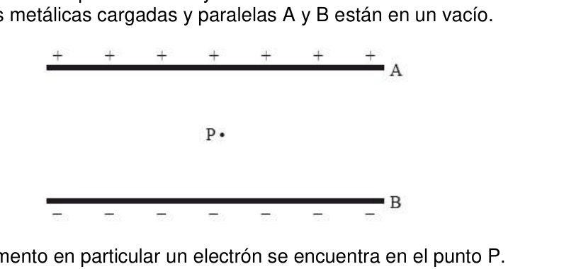
Topic: Electrostatics, Circuits Metodi: Coulomb’s Law, Kirchhoff’s Laws Competenze: Physical Reasoning, Mathematical Modeling Objects: Capacitor, Electron, Battery Fonte: Testo (PDF) — p.5
Campaggi elettrici e circuiti
PT60. Scuola scozzese San Andrés
Scuola Comunale Paula Albarracín di Sarmiento
Olivos, Buenos Aires.
Questa domanda riguarda campi elettrici e circuiti elettrici. a) Due lastre metalliche cariche e parallele A e B sono in un vuoto.
In un momento particolare un elettrone si trova al punto P. Sulla scheda, disegna. (i) il campo elettrico a causa delle placche. (ii) un’arcia per rappresentare la direzione della forza sull’elettrone in P. b) L’accelerazione dell’elettrone in P è 8.8 × 1014 m s2. Determina la portata di campo elettrico in P. c) L’elettro potenzialmente cambia di 1.9 × 1017 J quando si muove da una targa all’altra. Mostra che la differenza di potenziale (voltaggio) tra le le plache sono di 120 V. r GM r GMm 2
70 - OAF 2017 d) Una Resistenza R e una lampada a filamento L sono collegate in serie con una batteria. La batteria ha una fem (forza) elettro-motori) di 12 V e una resistenza interno di 4,0 Ω. La differenza di potenziale sulla lampada di filamento è di 3.0 V e la corrente è di 0,25 A.
i) Calcolare la potenza totale fornita
- Per la batteria. (ii) Calcolare la potenza totale dissipata in circuito esterno. (iii) Determina la resistenza R.
Topic: Electrostatics, Circuits Metodi: Coulomb’s Law, Kirchhoff’s Laws Competenze: Physical Reasoning, Mathematical Modeling Objects: Capacitor, Electron, Battery Fonte: Testo (PDF) — p.5
Electric fields and circuits
PT60. St. Andrew’s Scottish School
The city of Sarmiento is the city of Paula Albarracín.
Olive trees, from Buenos Aires.
This question is about electric fields and electrical circuits. (a) Two charged metal plates parallel to A and B are in a vacuum.
At a particular moment an electron is at the point P. On the diagram, draw. (i) the electric field due to the plates. (ii) an arrow to represent the direction of the force on the electron in P. (b) The acceleration of the electron in P is 8.8 × 1014 m s2. Determine the magnitude of the electric field in P. (c) The electric potential of the electron changes by 1.9 × 1017 J when it moves from One plaque to another. Show that the potential difference (voltage) between the plate is 120 V. r GM r GMm 2
The Commission shall adopt implementing acts in accordance with Article 21 of Regulation (EU) No 1303/2013. (d) An R-resistance and an L-filament lamp are connected in series with A battery. The battery has a fem (strength) Electric motor) of 12 V and a resistance internal of 4.0 Ω. The potential difference The filament lamp is 3.0 V and the Current is 0.25 A.
(i) Calculate the total power supplied I’m going to use the battery. (ii) Calculate the total power dissipated in the the external circuit. (iii) Determine the resistance R.
Topic: Electrostatics, Circuits Metodi: Coulomb’s Law, Kirchhoff’s Laws Competenze: Physical Reasoning, Mathematical Modeling Objects: Capacitor, Electron, Battery Fonte: Testo (PDF) — p.5
Combustible para calentar
PT61. Escuela Escocesa San Andrés
Escuela Municipal Paula Albarracín de Sarmiento
Olivos, Buenos Aires.
Esta pregunta es sobre combustible para calentar. Un calentador hogareño quema combustible líquido y los siguientes datos están disponibles. Densidad del combustible líquido = 8.0 × 102 kg m–3 Energía producida por 1 m3 del combustible = 2.7 × 1010 J Velocidad de consumo del combustible= 0.13 g s–1 Temperatura a la que entra el aire al calentador = 12 °C Temperatura a la que sale el aire del calentador = 32 °C Calor específico del aire = 990 J kg–1 K–1 i) Use los datos para calcular la potencia de salida del calentador, ignorando la potencia necesaria para convertir el combustible líquido en gas. ii) Toda la energía del calentador sube la temperatura del aire que pase por él. Use los datos para calcular la masa de aire que se mueve por el calentador en un segundo.
Topic: Thermodynamics Metodi: First Law of Thermodynamics, Conservation of Energy Competenze: Physical Reasoning, Mathematical Modeling Objects: Gas Fonte: Testo (PDF) — p.5
Fruiccio per il riscaldamento
PT61. Scuola scozzese San Andrés
Scuola Comunale Paula Albarracín di Sarmiento
Olivos, Buenos Aires.
Questa domanda riguarda il combustibile per il riscaldamento. Un riscaldatore domestico brucia combustibile liquido e i seguenti dati sono disponibili. Densità del combustibile liquido = 8.0 × 102 kg m3 Energia prodotta per 1 m3 di combustibile = 2.7 × 1010 J Rilassamento di energia elettrica Temperatura all’interno del riscaldatore = 12 °C Temperatura di uscita dell’aria del riscaldatore = 32 °C Calore specifico dell’aria = 990 J kg1 K1 i) Utilizza i dati per calcolare la potenza di uscita del riscaldatore ignorando la la potenza necessaria per trasformare il combustibile liquido in gas. (ii) L’energia totale del riscaldatore aumenta la temperatura dell’aria che passa attraverso di esso. Usate i dati per calcolare la massa di aria che si muove attraverso il riscaldatore in un
- Secondo.
Topic: Thermodynamics Metodi: First Law of Thermodynamics, Conservation of Energy Competenze: Physical Reasoning, Mathematical Modeling Objects: Gas Fonte: Testo (PDF) — p.5
Heating fuel
PT61. St. Andrew’s Scottish School
The city of Sarmiento is the city of Paula Albarracín.
Olive trees, from Buenos Aires.
This question is about fuel for heating. A home heater burns liquid fuel and the following data are available. The fuel density of the liquid fuel = 8.0 × 102 kg m3 Energy produced per 1 m3 of fuel = 2.7 × 1010 J Fuel consumption speed = 0.13 g s1 The temperature at which the air enters the heater = 12 °C The temperature at which the heater air exits = 32 °C The specific heat of the air = 990 J kg1 K1 (i) Use the data to calculate the output power of the heater, ignoring the The power required to convert liquid fuel into gas. (ii) All the energy of the heater increases the temperature of the air passing through it. Use it . The data for calculating the mass of air moving through the heater in a Second.
Topic: Thermodynamics Metodi: First Law of Thermodynamics, Conservation of Energy Competenze: Physical Reasoning, Mathematical Modeling Objects: Gas Fonte: Testo (PDF) — p.5
Energía interna, calor y gases ideales
PT62. Escuela Escocesa San Andrés
Escuela Municipal Paula Albarracín de Sarmiento
Olivos, Buenos Aires.
Esta pregunta es sobre energía interna, calor y gases ideales. a) La energía interna de un pedazo de cobre aumenta al calentarse. El pedazo de cobre tiene una masa de 0.25 kg. El aumento de la energía interna del cobre es de 1.2 × 103 J y el aumento de temperatura es de 20 K. Estime el calor específico del cobre. b) Un gas ideal se mantiene en un cilindro por un pistón que es libre de moverse. El gas se calienta tal que su energía interna aumenta y la presión se mantiene constante. Use el modelo molecular de los gases ideales para explicar: i) el aumento en la energía interna. ii) cómo la presión se mantiene constante.
OAF 2017 - 71
Topic: Thermodynamics, Kinetic Theory Metodi: First Law of Thermodynamics, Kinetic Theory of Gases Competenze: Physical Reasoning Objects: Gas, Piston, Cylinder Fonte: Testo (PDF) — p.5
Energia interna, calore e gas ideali
PT62. Scuola scozzese San Andrés
Scuola Comunale Paula Albarracín di Sarmiento
Olivos, Buenos Aires.
Questa domanda riguarda energia interna, calore e gas ideali. a) L’energia interna di un pezzo di rame aumenta al riscaldamento. Il pezzo di il rame ha una massa di 0,25 kg. L’aumento dell’energia interna del rame è di 1.2 × 103 J e l’aumento della temperatura è di 20 K. Valutate il caldo . specifico del rame. b) Un gas ideale è mantenuto in un cilindro da un pistone che è libero di muoversi. El Il gas si riscalderà in modo tale che la sua energia interna aumenterà e la pressione si manterrà costante. Utilizzare il modello molecolare dei gas ideali per spiegare: (i) l’aumento dell’energia interna. (ii) come la pressione è mantenuta costante.
OAF 2017 - 71
Topic: Thermodynamics, Kinetic Theory Metodi: First Law of Thermodynamics, Kinetic Theory of Gases Competenze: Physical Reasoning Objects: Gas, Piston, Cylinder Fonte: Testo (PDF) — p.5
The following table shows the results of the calculations:
PT62. St. Andrew’s Scottish School
The city of Sarmiento is the city of Paula Albarracín.
Olive trees, from Buenos Aires.
This question is about internal energy, heat and ideal gases. (a) The internal energy of a piece of copper increases when heated. The piece of copper has a mass of 0.25 kg. The increase in the internal energy of copper is of 1.2 × 103 J and the temperature increase is 20 K. - You ‘re gonna be so hot . specific to copper. (b) An ideal gas is held in a cylinder by a piston that is free to move. El The gas is heated so that its internal energy increases and the pressure is maintained. It’s constant. Use the molecular model of ideal gases to explain: (i) the increase in internal energy. (ii) how the pressure is maintained constantly.
The following is the list of the countries of the European Union:
Topic: Thermodynamics, Kinetic Theory Metodi: First Law of Thermodynamics, Kinetic Theory of Gases Competenze: Physical Reasoning Objects: Gas, Piston, Cylinder Fonte: Testo (PDF) — p.5
Paneles solares para calentar
PT63. Escuela Escocesa San Andrés
Escuela Municipal Paula Albarracín de Sarmiento
Olivos, Buenos Aires.
Esta pregunta es sobre paneles solares para calentar. Un pueblo consiste de 120 casas. Se propone el uso de paneles solares para proveer de agua caliente a las casas. Se dispone de los siguientes datos: Potencia promedio necesaria por casa para calendar aguar = 3.0 kW Intensidad solar promedio en la superficie = 650 W m–2 Eficiencia de conversión energética de un panel solar = 18 % Calcule la mínima superficie de los paneles solares para proveer toda la potencia necesaria para calentar toda el agua.
Topic: Thermodynamics Metodi: Conservation of Energy, Order-of-Magnitude Estimation Competenze: Physical Reasoning, Mathematical Modeling Objects: — Fonte: Testo (PDF) — p.5
Solar panneale per il riscaldamento
PT63. Scuola scozzese San Andrés
Scuola Comunale Paula Albarracín di Sarmiento
Olivos, Buenos Aires.
Questa domanda riguarda i pannelli solari per il riscaldamento. Un villaggio è composto da 120 case. Si propone l’uso di pannelli solari per fornire acqua calda alle case. I seguenti dati sono disponibili: Potenza media necessaria per casa per calcolare l’acqua = 3.0 kW Intensità solare media in superficie = 650 W m2 Eficienza di conversione energetica di un pannello solare = 18 % Calcola la superficie minima dei pannelli solari per fornire tutta la potenza necessaria per riscaldare tutta l’acqua.
Topic: Thermodynamics Metodi: Conservation of Energy, Order-of-Magnitude Estimation Competenze: Physical Reasoning, Mathematical Modeling Objects: — Fonte: Testo (PDF) — p.5
Heating systems for solar panels
PT63. St. Andrew’s Scottish School
The city of Sarmiento is the city of Paula Albarracín.
Olive trees, from Buenos Aires.
This question is about solar panels for heating. A village consists of 120 houses. The use of solar panels is proposed to provide Hot water to the houses. The following data are available: Average power required per household for water heating = 3.0 kW Average solar intensity on the surface = 650 W m2 Energy conversion efficiency of a solar panel = 18 % Calculate the minimum surface area of the solar panels to provide all the power It’s necessary to heat all the water.
Topic: Thermodynamics Metodi: Conservation of Energy, Order-of-Magnitude Estimation Competenze: Physical Reasoning, Mathematical Modeling Objects: — Fonte: Testo (PDF) — p.5
Calorimetría con agua y hielo
PT64. Instituto Jesús María
Ciudad de Córdoba.
En un recipiente cuya capacidad térmica es de 20 cal/ºC y se encuentra a 10 ºC, se colocan 200 g de agua a 10ºC y otros 100 g de hielo a -5 ºC. Se desea calentar el conjunto hasta llegar a 20 ºC. a) Calcular la cantidad de Calor necesario, en Joule y calorías. b) Si para lograrlo se utiliza un calentador eléctrico cuya resistencia es de 500 ohm, conectado a la red domiciliaria, determinar la potencia del aparato. c) Calcular el tiempo necesario para realizar la operación. d) Volumen Final del líquido.
Ce del agua = 1 cal/g.ºC
Ce del Hielo = 0,55 cal/g ºC
Calor de Fusión del hielo = 80 cal/g
Coef de dilatación del agua 1 x 10-3 ºC-1
Topic: Thermodynamics Metodi: First Law of Thermodynamics, Conservation of Energy Competenze: Physical Reasoning, Mathematical Modeling Objects: Calorimeter, Resistor Fonte: Testo (PDF) — p.5
Calorimetria con acqua e ghiaccio
PT64. Istituto Gesù Maria
Città di Córdoba.
In un recipiente con una capacità termico di 20 cal/oC e a 10 oC, si mettono 200 g di acqua a 10 °C e altri 100 g di ghiaccio a -5 °C. Si desidera riscaldare l’insieme fino a 20 oC. a) Calcolare la quantità di calore necessaria, in joule e calorie. b) Se per conseguire tale obiettivo si utilizza un riscaldatore elettrico di resistenza di 500 ohm, collegato alla rete domestica, determinare la potenza dell’apparecchio. c) Calcolare il tempo necessario per effettuare l’operazione. d) Volume finale del liquido.
C dell’acqua = 1 cal/g.oC Ce del ghiaccio = 0,55 cal/g oC Calore di fusione del ghiaccio = 80 cal/g Coefficienti di dilatazione dell’acqua 1 x 10-3 oC-1
Topic: Thermodynamics Metodi: First Law of Thermodynamics, Conservation of Energy Competenze: Physical Reasoning, Mathematical Modeling Objects: Calorimeter, Resistor Fonte: Testo (PDF) — p.5
Calorimetry with water and ice
PT64. Jesus Mary Institute
The city of Cordoba.
In a container with a thermal capacity of 20 cal/oC and at 10 oC, They place 200 g of water at 10oC and another 100 g of ice at -5oC. The whole is to be heated to 20 oC. (a) Calculate the amount of heat required, in Joules and calories. (b) If an electric heater with a resistance of 500 ohms is used to achieve this, connected to the home network, determine the power of the device. (c) Calculate the time required to perform the operation. (d) Final volume of the liquid.
The water content is 1 cal/g.oC The ice level is 0.55 cal/g oC Heat of ice melting = 80 cal/g Coefficient of water dilation 1 x 10-3 oC-1
Topic: Thermodynamics Metodi: First Law of Thermodynamics, Conservation of Energy Competenze: Physical Reasoning, Mathematical Modeling Objects: Calorimeter, Resistor Fonte: Testo (PDF) — p.5
Esfera de aluminio sumergida
PT65. Instituto Jesús María
Ciudad de Córdoba.
a) Una esfera hueca de aluminio que pesa 1 N se sumerge completamente en un gran tanque de agua, ambos a 20 ºC, quedando en suspensión. Cuál es el volumen del cuerpo? b) Si esa misma esfera se la sumergiera a 200 ºC en el agua a 20 ºC, en el instante inicial y antes que se enfríe, ¿seguiría en suspensión? Justifique. c) Calcule el nuevo Empuje. d) Si la presión del gas contenido en la esfera era de 1,5 atm en la situación a), ¿cuánto valdrá a 200 ºC?
Coef de Dilatación Lineal del Aluminio: 23 x 10-6 ºC-1 Coef.de Dilatación volumétrica del agua: 1 x 10-3 ºC-1 Considere despreciable el Peso del Gas contenido en la esfera.
Topic: Fluid Mechanics Metodi: Hydrostatic Equilibrium, Ideal Gas Law Competenze: Physical Reasoning, Mathematical Modeling Objects: Sphere, Gas Fonte: Testo (PDF) — p.5
Sfera di alluminio immersa
PT65. Istituto Gesù Maria
Città di Córdoba.
a) Una sfera vuota di alluminio che pesa 1 N si immerge completamente in una grande serbatoio d’acqua, entrambi a 20 oC, in sospensione. Qual è il volume del corpo? b) Se la stessa sfera fosse immersa a 200 oC in acqua a 20 oC, immediatamente prima che si raffreddi, sarebbe ancora in sospensione? giustifica. c) Calcolare il nuovo Puls. d) Se la pressione del gas contenuto nella sfera era di 1,5 atm in a), Quanto vale a 200 oC?
Coefficienti di dilatazione lineare dell’alluminio: 23 x 10-6 oC-1 Coef. di dilatazione volumetrica dell’acqua: 1 x 10-3 oC-1 Considera disprezioso il Peso del Gas contenuto nella sfera.
Topic: Fluid Mechanics Metodi: Hydrostatic Equilibrium, Ideal Gas Law Competenze: Physical Reasoning, Mathematical Modeling Objects: Sphere, Gas Fonte: Testo (PDF) — p.5
The manufacturer shall ensure that the product is not used in the manufacture of the product.
PT65. Jesus Mary Institute
The city of Cordoba.
(a) A hollow aluminium sphere weighing 1 N is completely submerged in a large water tank, both at 20 oC, suspended. What’s the body volume? (b) If that same sphere is submerged at 200 oC in water at 20 oC, immediately And before it gets cold, would you still be suspended? You justify it. (c) Calculate the new Push. (d) If the pressure of the gas contained in the sphere was 1,5 atm in situation a), How much will it be worth at 200 degrees?
Aluminium linear coefficient of dilation: 23 x 10-6 oC-1 Volume of water dilation: 1 x 10-3 oC-1 Consider the Weight of the Gas contained in the sphere despicable.
Topic: Fluid Mechanics Metodi: Hydrostatic Equilibrium, Ideal Gas Law Competenze: Physical Reasoning, Mathematical Modeling Objects: Sphere, Gas Fonte: Testo (PDF) — p.5
Esferas cargadas y aceleración
PT66. Instituto Jesús María
Ciudad de Córdoba.
Dos pequeñas esferas metálicas iguales de 1 g de masa, se encuentran inicialmente
separadas 10 cm en el vacío y cargadas ambas con 1 μ C.
a) Calcule la Fuerza entre ambas.
b) Calcule la aceleración inicial de las esferas.
72 - OAF 2017 c) Confeccione una tabla aceleración X distancia hasta 1 m de separación. d) Trace la Gráfica de la función anterior. e) Calcule las velocidades en cada punto de la tabla anterior. f) Confeccione una tabla Energía Cinética X distancia en los mismos puntos. g) Trace la gráfica de la función anterior. h) Analice las gráficas y elabore conclusiones.
K0 = 9 x 109 N.m2. C-2
Topic: Electrostatics Metodi: Coulomb’s Law, Energy Conservation Method Competenze: Physical Reasoning, Mathematical Modeling Objects: Point Charge, Sphere Fonte: Testo (PDF) — p.5
Sfere cariche e accelerazione
PT66. Istituto Gesù Maria
Città di Córdoba.
Due piccole sfere metalliche uguali di 1 g di massa, si trovano inizialmente separati 10 cm nel vuoto e caricati entrambi a 1 μ C. a) Calcola la forza tra le due. b) Calcolare l’accelerazione iniziale delle sfere.
72 - OAF 2017 c) Confezionare una tabella di accelerazione X distante fino a 1 m di distanza. d) Traccia il grafico della funzione precedente. e) Calcolare le velocità in ogni punto della tabella precedente. f) Configgere una tabella di energia cinetica X distanza negli stessi punti. g) Traccia il grafico della funzione precedente. h) Analizzare i grafici e trarre conclusioni.
K0 = 9 x 109 N.m2. C-2
Topic: Electrostatics Metodi: Coulomb’s Law, Energy Conservation Method Competenze: Physical Reasoning, Mathematical Modeling Objects: Point Charge, Sphere Fonte: Testo (PDF) — p.5
Charged spheres and acceleration
PT66. Jesus Mary Institute
The city of Cordoba.
Two small equal metal spheres of 1 g mass are initially found separated 10 cm in the vacuum and both loaded with 1 μ C. (a) Calculate the Force between the two. (b) Calculate the initial acceleration of the spheres.
The Commission shall adopt delegated acts in accordance with Article 21 of this Regulation. (c) Construct an acceleration table X distance up to 1 m apart. (d) Draw the graph of the previous function. (e) Calculate the speeds at each point in the table above. f) Construct a kinetic energy X distance table at the same points. (g) Draw the graph of the previous function. (h) Analyze the charts and draw conclusions.
K0 = 9 x 109 N.m2. C-2
Topic: Electrostatics Metodi: Coulomb’s Law, Energy Conservation Method Competenze: Physical Reasoning, Mathematical Modeling Objects: Point Charge, Sphere Fonte: Testo (PDF) — p.5
Furgón tirado por malacate
PT67. Escuela Industrial Superior
Ciudad de Santa Fe.
Un furgón cargado tiene una masa de 950 kg y rueda sobre rieles con fricción
despreciable. Parte del reposo y un cable conectado a una malacate lo tira hacia arriba
por el túnel de una mina. EL cable forma un ángulo de 30° con la horizontal. El furgón
acelera de manera uniforme a una rapidez de 2,20 m/s en 12 s y después continúa con
rapidez constante.
a) ¿Qué potencia debe proporcionar el motor del malacate cuando el furgón se
mueve con rapidez constante?
b) ¿Qué potencia máxima debe proporcionar el motor del malacate?
c) ¿Qué energía total transfirió el motor mediante trabajo para cuando el furgón
salió de la pista que tiene 1250 m de largo.
d) ¿Cuáles serían los valores de los items a), b) y c) si el coeficiente de rozamiento
de la pista es µ = 0,2?
Topic: Newtonian Mechanics, Conservation of Energy Metodi: Free-Body Diagram, Kinematic Equations, Energy Conservation Method Competenze: Physical Reasoning, Mathematical Modeling Objects: Cart Fonte: Testo (PDF) — p.5
Furgonetto tirato da malaccato
PT67. Scuola superiore industriale
Città di Santa Fe.
Un furgone carico ha una massa di 950 kg e ruota su binari a friczione
- Desprezioso. Parte del riposo e un cavo collegato a una malacca lo tira verso l’alto.
- Per il tunnel di una mina. Il cavo forma un angolo di 30° con la orizzontale. Il furgone . Accelera uniformemente a una velocità di 2,20 m/s in 12 s e poi continua con velocità costante. a) Che potenza deve fornire il motore del malacato quando il furgone è si muove a velocità costante? b) Qual è la massima potenza che deve fornire il motore del malacato? c) Qual è la quantità di energia totale trasmessa dal motore per lavoro per quando il furgone E’ uscito dalla pista che è lunga 1250 metri. (d) Quali sarebbero i valori di a), (b) e (c) se il coefficiente di rottura di pista è μ = 0,2?
Topic: Newtonian Mechanics, Conservation of Energy Metodi: Free-Body Diagram, Kinematic Equations, Energy Conservation Method Competenze: Physical Reasoning, Mathematical Modeling Objects: Cart Fonte: Testo (PDF) — p.5
Machate-drawn furnace
PT67. Higher Industrial School
City of Santa Fe.
A loaded van weighs 950 kg and wheels on railways with friction. I’m not a big fan of this. Part of the rest and a cable attached to a malachite pulls it up . through the tunnel of a mine. The cable forms an angle of 30° with the horizontal. The van . accelerates uniformly at a speed of 2.20 m/s in 12 s and then continues with constant speed. (a) What power should the machinery of the machinery provide when the van is It’s moving at a constant speed? (b) What maximum power should the machinery of the malachite provide? (c) What total energy was transferred by the engine by work to when the van He left the track which is 1250 meters long. (d) What would be the values of items (a), (b) and (c) if the friction coefficient of the track is μ = 0.2?
Topic: Newtonian Mechanics, Conservation of Energy Metodi: Free-Body Diagram, Kinematic Equations, Energy Conservation Method Competenze: Physical Reasoning, Mathematical Modeling Objects: Cart Fonte: Testo (PDF) — p.5
Densímetro y densidad de fluidos
PT68. Escuela Industrial Superior
Ciudad de Santa Fe.
La determinación de la densidad de un fluido tiene muchas aplicaciones importantes. La
batería de un automóvil contiene acido sulfúrico, para el que la densidad es una medida
de concentración; la batería funciona adecuadamente si la densidad esta dentro de un
intervalo especificado por el fabricante. De igual modo la efectividad del anticongelante
en el refrigerante del motor de un automóvil depende de la densidad de la mezcla ( por lo
general etilenglicol y agua).
Cuando usted dona sangre, su tamizado incluye la determinación de la densidad de la
sangre, porque mayor densidad se relaciona con mayor contenido de hemoglobina.
a) Un densímetro es un instrumento que se usa para determinar la densidad de los liquidos. En la figura se muestra uno simple. El bulbo de una jeringa se presiona y libera para dejar que la atmosfera eleve una muestra del liquido de interés, en un tubo que contiene una barra calibrada de densidad conocida. La barra, de longitud “L” y densidad promedio ρ0, flota parciamente sumergido en el fluido de densidad ρ. Una longitud “h”, de la barra sobresale de la superficie del liquido. Demuestre que la densidad del liquido es:
OAF 2017 - 73 b) Se quiere construir un densímetro como el de la figura con una barra cilíndrica flotante. Se colocaran 9 marcas a lo largo de la barra para indicar densidades que tenga valores de: 0.98 g/cm3, 1.00 g/cm3 , 1.02 g/cm3 , 1.04 g/cm3 …1.14 g/cm3 . La hilera de marcas comenzará 0.200 cm desde el extremo superior de la barra, y terminara 1.80 cm desde el extremo superior. b1) ¿Cual es la longitud requerida de la barra? b2) ¿Cual debe ser su densidad promedio? b3) ¿Las marcas, deben estar igualmente espaciadas? Explique su respuesta.
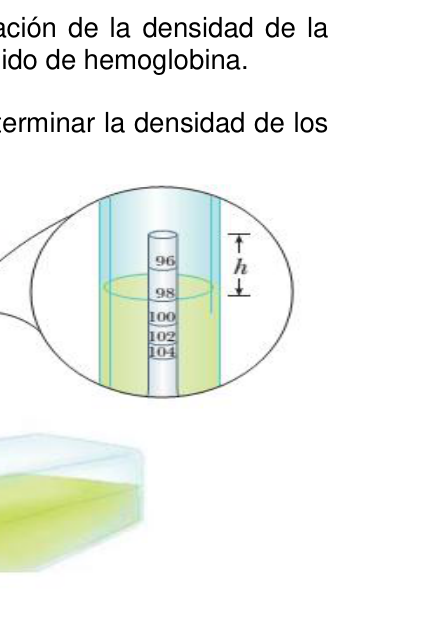
Topic: Fluid Mechanics Metodi: Hydrostatic Equilibrium Competenze: Physical Reasoning, Mathematical Modeling Objects: Rod, Container Fonte: Testo (PDF) — p.5
Densità e densità di fluidi
PT68. Scuola superiore industriale
Città di Santa Fe.
La determinazione della densità di un fluido ha molte applicazioni importanti. La la batteria di un’auto contiene acido solforico, per il quale la densità è una misura La batteria funziona correttamente se la densità è all’interno di un intervallo specificato dal fabbricante. L’ efficacia dell’ anticongelante è simile. La densità della miscela (per esempio, il calore di un’auto) è determinata dal calore di una macchina. (Generalmente etilenglicolo e acqua). Quando si dona sangue, il suo taglio include la determinazione della densità della sangue, perché maggiore densità è correlata ad un maggiore contenuto di emoglobina.
a) Un densimetro è un strumento utilizzato per determinare la densità dei liquidi. La figura mostra uno.
- semplice. Il bulbo di una siringa si è Presione e rilascio per lasciare che la atmosfera eleva un campione di liquido di interesse, in un tubo che contiene Una . barra calibrato de densità nota. La barra, di lunghezza “L” e densità media ρ0, flotta parzialmente immersa nel fluido di densità ρ. Una lunghezza “h”, della barra si estende dalla superficie del liquido. Dimostra che la densità del liquido è:
OAF 2017 - 73 b) Si vuole costruire un densimetro come quello della figura con una barra cilindrica fluttuante. 9 segni sono stati posti lungo la barra per indicare le densità che ha valori di: 0,98 g/cm3, 1,00 g/cm3, 1,02 g/cm3, 1,04 g/cm3 …1,14 g/cm3 . La fila di segni inizia a 0.200 cm dall’estremità superiore della la barra, e terminerà a 1,80 cm dall’estremità superiore. b) Qual è la lunghezza richiesta della barra? b2) Qual è la densità media? b3) I marchi devono essere spaziati in modo uguale? Spiega la tua risposta.
Topic: Fluid Mechanics Metodi: Hydrostatic Equilibrium Competenze: Physical Reasoning, Mathematical Modeling Objects: Rod, Container Fonte: Testo (PDF) — p.5
Fluid density and density
PT68. Higher Industrial School
City of Santa Fe.
Determining the density of a fluid has many important applications. La A car battery contains sulfuric acid, for which density is a measure The battery is functioning properly if the density is within a the interval specified by the manufacturer. Similarly, the effectiveness of the anti-freezer The amount of heat used in the refrigerant of an automobile engine depends on the density of the mixture (for example, the amount of heat used in the refrigerant in the car). (A complex combination of the following substances is known: When you donate blood, your seeding includes determining the density of the blood. blood, because higher density is related to higher hemoglobin content.
(a) A densometer is an instrument used to determine the density of the liquid. The figure shows one It’s simple. The bulb of a syringe is Press and release to let her go. atmosphere elevates a sample of the The Commission has not yet taken any further action. contains One . Bar calibrated de density known. The bar, of length “L” and average density ρ0, The fleet is partially submerged in the density fluid ρ. A length “h”, The bar is protruding from the surface. of the liquid. It shows that density The liquid is:
The Commission shall adopt delegated acts in accordance with Article 21 of the Financial Regulation. b) You want to build a densometer like the figure with a cylindrical bar floating. 9 marks are placed along the bar to indicate densities having a value of: 0,98 g/cm3, 1,00 g/cm3, 1,02 g/cm3, 1,04 g/cm3 …1,14 g/cm3 . The line of marks shall start 0.200 cm from the upper end of the bar, and finish 1.80 cm from the top end. (b1) What is the required length of the bar? (b2) What should be its average density? (b3) Should the marks be equally spaced? Explain your answer.
Topic: Fluid Mechanics Metodi: Hydrostatic Equilibrium Competenze: Physical Reasoning, Mathematical Modeling Objects: Rod, Container Fonte: Testo (PDF) — p.5
Experiencia con gases (Helio)
PT69. Escuela Industrial Superior
Ciudad de Santa Fe.
Como investigadores, quisimos realizar una experiencia sencilla con gases. Las paredes de un cilindro de base 1 dm2, el pistón y la pared divisoria interna son aisladores térmicos perfectos (Figura derecha). La válvula en la pared divisoria se abre si la presión sobre el lado derecho es mayor que en el lado izquierdo. Inicialmente hay 12 g de Helio en el lado izquierdo y 2g Helio en el lado derecho. Las longitudes de ambos lados son de 11,2 dm cada una y la temperatura es 0 °C. Fuera tenemos una presión de 100 kPa. El calor específico a volumen constante es Cv = 3,15 J/gK y a presión constante es Cp = 5,25 J / gK. El pistón es empujado lentamente hacia la pared divisoria. Cuando la válvula abre (Sólo abre cuando la presión ejercida es mayor a la que ejerce el propio gas en el interior!) nos detenemos y seguimos empujando despacio hasta que se alcance la pared. a) Sabiendo que 2 g de gas Helio es igual a un mol de Helio, ¿cuál es el volumen molar del compartimiento izquierdo?. b) Calcula el volumen final que alcanza el compartimiento derecho antes de que se abra la compuerta central, y la temperatura que alcanza el gas tras dicha acción. c) ¿Se modificará la temperatura cuando la compuerta central se abra y las dos masas de gas se mezclen? En caso afirmativo, calcúlala de ser posible (recuerda que un gas puede ser considerado un fluido). d) ¿Cuál será la temperatura final tras que el pistón llegue a la posición final? e) Calcula el trabajo total entregado al sistema por parte de los investigadores.
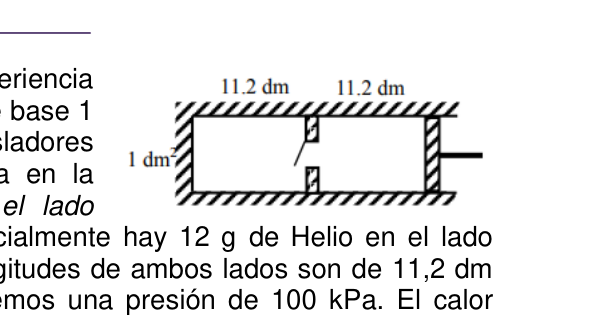
Topic: Thermodynamics, Kinetic Theory Metodi: Ideal Gas Law, First Law of Thermodynamics Competenze: Physical Reasoning, Mathematical Modeling Objects: Gas, Piston, Cylinder Fonte: Testo (PDF) — p.5
**Esperienza con gas (Elio) **
PT69. Scuola superiore industriale
Città di Santa Fe.
Come ricercatori, abbiamo voluto fare un esperimento. semplice con i gas. I muri di un cilindro base 1 dm2, il pistone e la parete divisoria interna sono isolanti Perfetto termico (Figura destra). Valvola in Il muro di divisione si apre se la pressione sul lato La destra è più grande della sinistra. Inizialmente ci sono 12 grammi di elio sul lato. Sinistra e 2g di elio sul lato destro. Le lunghezze di entrambi i lati sono di 11,2 dm ogni volta e la temperatura è 0 °C. Fuori abbiamo una pressione di 100 kPa. Il caldo La specifica a volume costante è Cv = 3,15 J/gK e a pressione costante è Cp = 5,25 J/ gK. Il pistone viene spinto lentamente verso il muro di divisione. Quando la valvola si apre (Si apre solo quando la pressione esercitata è superiore a quella esercitata dal gas stesso nel dentro!) ci fermiamo e continuiamo a spingere lentamente fino a raggiungere la
- Il muro. a) Sapendo che 2 g di gas elio è uguale a un mol di elio, qual è il volume
- Il molar del compartimento sinistro? b) Calcola il volume finale che raggiunge il compartimento destro prima che si aprire il portale centrale e la temperatura raggiunta dal gas dopo tale azione. c) La temperatura sarà modificata quando la porta centrale si aprirà e le due ore Masse di gas si mescolano? Se sì, calcola se è possibile. (ricorda che un gas può essere considerato un fluido). d) Qual è la temperatura finale dopo che il pistone è raggiunto la posizione finale? e) Calcola il lavoro totale che i ricercatori hanno fornito al sistema.
Topic: Thermodynamics, Kinetic Theory Metodi: Ideal Gas Law, First Law of Thermodynamics Competenze: Physical Reasoning, Mathematical Modeling Objects: Gas, Piston, Cylinder Fonte: Testo (PDF) — p.5
The following is a list of the types of gas and gas emissions from the production of the product:
PT69. Higher Industrial School
City of Santa Fe.
As researchers, we wanted to do an experiment. It’s simple with gas. The walls of a base cylinder 1 dm2, the piston and the internal dividing wall are insulators The total energy consumption of the product is calculated as follows: The valve in the The dividing wall opens if the pressure on the side . The right side is bigger than the left side. Initially there are 12 g of helium on the side. Left and 2g of helium on the right side. The lengths on both sides are 11.2 dm. Each and the temperature is 0 °C. Outside we have a pressure of 100 kPa. The heat . The specific constant volume is Cv = 3.15 J/gK and the constant pressure is Cp = 5.25 J/ gK. The piston is pushed slowly towards the dividing wall. When the valve opens (It only opens when the pressure exerted is greater than that exerted by the gas itself in the inside!) we stop and keep pushing slowly until the The wall. (a) Knowing that 2 g of helium gas is equal to one mol of helium, what is the volume The left compartment molar. (b) Calculate the final volume reaching the right compartment before it is open the central gate and the temperature reached by the gas after this action. (c) Will the temperature change when the central gate is opened and the two doors open? mass of gas mixing? If so, calculate if it is possible. (remember that a gas can be considered a fluid). (d) What will be the final temperature after the piston reaches the final position? (e) Calculates the total work delivered to the system by the researchers.
Topic: Thermodynamics, Kinetic Theory Metodi: Ideal Gas Law, First Law of Thermodynamics Competenze: Physical Reasoning, Mathematical Modeling Objects: Gas, Piston, Cylinder Fonte: Testo (PDF) — p.5
Engañando al Capitán
PT70. EESOPI N° 3060 San Jorge
Rosario, Santa Fe.
Engañando al Capitán.
El capitán de un barco en el que Ud. es tripulante le comenta que debe mantener rumbo
Norte para no chocar con los arrecifes que se encuentran al este y el oeste del recorrido.
Ud, modestamente, le recuerda al capitán que hay una corriente de Oeste a Este que lo
desviará del curso y lo hará chocar contra los arrecifes, preguntándole si no debería fijar
rumbo NordOeste para compensar dicha corriente y así navegar al norte.
El capitán hace caso omiso de su recomendación, y ante el peligro de un naufragio Ud.
decide engañar al capitán.
Decide instalar bajo la brújula, un conductor eléctrico paralelo a la dirección de
movimiento del barco de tal modo que cuando el capitán vea que la embarcación está
moviéndose en la dirección del Norte (en la dirección de la aguja de la brújula), realmente
esté navegando con el rumbo corregido para evitar la colisión.
La idea consiste en que la corriente que circule por el conductor, genere un campo
magnético Bi, de tal modo que cuando el barco apunte a la dirección deseada por Ud, la
suma del campo magnético terrestre Bt más el campo Bi, den un campo magnético
resultante paralelo a la dirección de movimiento del barco.
74 - OAF 2017 No se asuste, vamos a resolver juntos el problema:
- Si el módulo de velocidad del barco, medido respecto del agua, es de 30 km/h, y la velocidad de arrastre del agua es de 5 km/h en la dirección Oeste-Este ¿Cuál tendría que ser el ángulo, medido desde el norte, en que debería el capitán apuntar la embarcación, para que la misma avance en la dirección sur-norte respecto a la tierra? Indique los grados y si deben medirse hacia el este o el oeste respecto al norte. Ej: 32°E respecto al N ó 32°O respecto al norte
- El circuito que Ud., diseña para engañar al capitán es un alambre de cobre por el que circula una corriente I, de tal modo que se genere un campo magnético que, al sumarse con el de la tierra, la suma de ambos campos apunte en la dirección que Ud quiere que vaya el barco. Si Ud. dispone el conductor paralelo a la dirección de movimiento del barco (es decir, de popa a proa) ¿En qué dirección se genera el campo magnético del alambre? ¿Paralelo o Perpendicular al alambre?
- Conocido el ángulo calculado en (1), y suponiendo que en el lugar de la tierra donde Ud. se encuentra, el campo magnético terrestre es de 3,00E-5 Tesla en la dirección Norte ¿Qué intensidad tendría que tener el campo Bi generado por su circuito, de tal modo que cuando la embarcación esté orientada en el ángulo que Ud. calculó, la aguja de la brújula apunte en esa dirección (en lugar del norte)?
- Si el alambre de cobre, se oculta 1 cm por debajo de la aguja de la brújula ¿Cuál debería ser la Intensidad y el sentido de circulación de la corriente eléctrica (de proa a popa o de popa a proa) necesaria para que genere el campo magnético calculado en el punto anterior.
- Si cuenta con una fuente de 12V de corriente continua ¿Qué valor de resistencia R debería usar para generar la corriente calculada en el punto anterior?
Permeabilidad del vacío µ0= 4 p E-7 T m / A
Topic: Magnetism Metodi: Biot-Savart Law, Vector Decomposition Competenze: Physical Reasoning, Mathematical Modeling Objects: Wire, Magnet Fonte: Testo (PDF) — p.5
Mestiamo il capitano
PT70. ESOPI N° 3060 San Giorgio
Rosario, Santa Fe.
- Ingannando il capitano. Il capitano di una nave in cui lei… E ’ un’equipaggio che dice che deve mantenere il suo corso. Nord per non scontrarsi con i reef che si trovano a est e a ovest del percorso. Tu, modestamente, ricorda al capitano che c’è una corrente da ovest a est che lo fa. E’ fuori corso e lo fa schiantare contro i reef, chiedendo se non dovrebbe fissare. La Commissione ha deciso di prendere il provvedimento di ridurre il flusso di acqua. Il capitano ignora la sua raccomandazione, e a causa del pericolo di un naufragio, lei… decide di ingannare il capitano. Decide di installare sotto la compassa un conduttore elettrico parallelo alla direzione di Movimento della nave in modo tale che quando il capitano vede che la nave è Se si muove in direzione nord (in direzione dell’ago della compassa), davvero sta navigando nella direzione corretta per evitare la collisione. L’idea è che il corrente che circola attraverso il conduttore, genera un campo. Magnetico Bi, in modo che quando la nave punta nella direzione desiderata da te, la La somma del campo magnetico terrestre Bt più il campo Bi, danno un campo magnetico risultante parallelo alla direzione di movimento della nave.
74 - OAF 2017 Non si spaventi, risolveremo il problema insieme:
- Se il modulo di velocità della nave, misurato rispetto all’acqua, è di 30 km/h, e La velocità di trascinamento dell’acqua è di 5 km/h in direzione ovest-est. Dovrebbe essere l’angolo, misurato dal nord, dove dovrebbe essere il capitano. puntare la nave, affinché si faccia avanti in direzione sud-nord. rispetto alla terra? Indicare i gradi e se devono essere misurati verso est o verso est a ovest rispetto al nord. Esempio: 32°E rispetto al N o 32°O rispetto al nord
- Il circuito che tu, progettando per ingannare il capitano è un filo di rame per il che circola un corrente I, in modo da generare un campo magnetico che, Quando si somma con quello della terra, la somma dei due campi punta in direzione. che tu vuoi che la barca vada. Si Ud. il conducente è disposto parallelo alla direzione di movimento della nave (cioè, da poppa a proa) si genera il campo magnetico del filo? Parallelamente o perpendicolare al
- Il filo?
- Conosciuto l’angolo calcolato in (1), e supponendo che in luogo della terra dove tu. si trova, il campo magnetico terrestre è di 3,00E-5 Tesla in la direzione nord che intensità avrebbe dovuto avere il campo Bi generato da suo circuito, in modo che quando la nave è orientata all’angolo che Ud. ha calcolato, l’ago della compassa punta in quella direzione (invece del nord)?
- Se il filo di rame si nasconde 1 cm sotto l’ago della compassa La velocità di movimento della corrente elettrica dovrebbe essere l’intensità e il senso di circolazione del corrente elettrica (di a testa a testa o a testa a testa) necessaria per generare il campo magnetico il calcolo del punto precedente.
- Se ha una fonte di corrente continua di 12 V, che valore di resistenza R dovrebbe usare per generare il corrente calcolato al punto precedente?
Permeabilità del vuoto μ0= 4 p E-7 T m / A
Topic: Magnetism Metodi: Biot-Savart Law, Vector Decomposition Competenze: Physical Reasoning, Mathematical Modeling Objects: Wire, Magnet Fonte: Testo (PDF) — p.5
Cheating on the Captain
PT70. The Commission shall adopt delegated acts in accordance with Article 21 of Regulation (EC) No 1272/2009.
Rosario, Santa Fe.
Cheating on the Captain. The captain of a ship you’re on. He ‘s a crewman . He says he must keep his course . North to avoid colliding with reefs that lie east and west of the route. You, modestly, remind the captain that there is a west-to-east current that will He’ll deviate from course and make you hit the reefs, asking you if you should fix it. I’m heading northwest to compensate for the current and sail north. The captain ignores your recommendation, and in the face of the danger of a shipwreck you. He decides to fool the captain. Decides to install under the compass, an electrical conductor parallel to the direction of Move the ship so that when the captain sees that the ship is in motion Moving in the northern direction (in the direction of the compass needle), really is navigating in the correct direction to avoid collision. The idea is that the current that’s flowing through the conductor, generates a field. Bi magnetic, so that when the ship points to the direction you want, the Sum of the Earth’s magnetic field Bt plus the field Bi, give a magnetic field The resulting parallel to the direction of movement of the ship.
The Commission shall adopt delegated acts in accordance with Article 21 of this Regulation. Don’t worry, we’ll solve the problem together:
- If the speed module of the vessel, measured with respect to water, is 30 km/h, and The water’s trailing speed is 5 km/h in the West-East direction. It would have to be the angle, measured from the north, at which the captain should be. point the boat, so that it moves in a south-north direction. about the earth? Indicate the degrees and whether to be measured east or west. West to north. For example: 32°E with respect to N or 32°O with respect to north
- The circuit you’re designing to fool the captain is a copper wire for the which circulates a current I, so that a magnetic field is generated that, When you add up to the earth, the sum of the two fields points in the direction. You want the ship to go. Si Ud. The driver is positioned parallel to the direction of movement of the ship (i.e. from stern to bow) In which direction Does the magnetic field of the wire generate? Parallel or Perpendicular to Wire?
- Known angle calculated in (1), and assuming that in the earth’s place Where you are. It’s located, the Earth’s magnetic field is 3.00E-5 Tesla in the North direction What intensity would the Bi field have to have generated by its circuit, such that when the vessel is oriented at an angle that Ud. Calculated, does the compass needle point in that direction (instead of north)?
- If the copper wire is hidden 1 cm below the needle of the compass The intensity and direction of electric current (of (b) required to generate the magnetic field. calculated in the previous point.
- If it has a 12V DC power source, what is the resistance value? Should R use to generate the current calculated at the previous point?
Permeability of the vacuum μ0 = 4 p E-7 T m / A
Topic: Magnetism Metodi: Biot-Savart Law, Vector Decomposition Competenze: Physical Reasoning, Mathematical Modeling Objects: Wire, Magnet Fonte: Testo (PDF) — p.5
Exoplanetas
PT71. EESOPI N° 3060 San Jorge
Rosario, Santa Fe.
Exoplanetas. El 10 de mayo de 2016, el telescopio espacial Kepler descubrió 2 planetas en torno a la estrella Kepler-712, por el método de tránsito. En dicho método, se detecta la existencia de planetas por ligeras variaciones regulares de la luz emitida por una estrella, como consecuencia del eclipse parcial que el planeta produce a su paso. Si se cuenta el tiempo entre dos pasadas consecutivas del plantea puede conocerse el período orbital del mismo. Así se detectaron los planetas: Kepler-712-b, con un período orbital de 21,02 días terrestres, y el Kepler-712-c con un período orbital de 226,89 días terrestres. Conociendo que la masa de la estrella Kepler-712 es de 0,89 veces la masa solar. Lo invitamos a contribuir con los científicos a encontrar los radios orbitales de ambos planetas:
- Deduzca la ley de Kepler a partir de la Ley de Gravitación Universal de Newton para órbitas circulares (puede hacerlo a partir de la expresión de la fuerza centrípeta del movimiento circular para la gravitación de Newton, o a partir de la relación entre Ec y Ep para órbitas circulares, ambos caminos son válidos).
- Usando la relación encontrada en el punto anterior, calcule los radios de las órbitas de cada exoplaneta.
- Se define como ―Zona de Vida‖ al intervalo de distancia a una estrella, dónde el agua puede existir en estado líquido. En el caso de la estrella Kepler-712 la Zona de vida la constituye cualquier orbita que se encuentre entre los 0,65 UA y los 1,23 UA. Determine si alguno de los dos exoplanetas se encuentra en dicha zona. Constante de Gravitación Universal = 6,67 E-11 N m^2 / kg^2 Unidad Astronómica. 1 UA = 1,496 E+11 m - Masa Solar = 1,989 E+30 kg
OAF 2017 - 75
Topic: Gravitation, Astrophysics Metodi: Kepler’s Laws, Newton’s Law of Gravitation Competenze: Physical Reasoning, Mathematical Modeling Objects: Planet, Star Fonte: Testo (PDF) — p.5
Esoplaneti
PT71. ESOPI N° 3060 San Giorgio
Rosario, Santa Fe.
Esoplaneti. Il 10 maggio 2016, il telescopio spaziale Kepler ha scoperto 2 pianeti attorno alla Terra. la stella Kepler-712, per il metodo di transito. In questo metodo si rileva l’esistenza di di pianeti a causa di leggere variazioni regolari della luce emessa da una stella, come conseguenza dell’eclissi parziale che il pianeta produce nel suo cammino. Se si conta il tempo Tra due passi consecutivi del pianeta si può conoscere il periodo orbitale del
- Proprio così. Così sono stati rilevati i pianeti: Kepler-712-b, con un periodo orbitale di 21,02 giorni. e Kepler-712-c con un periodo orbitale di 226,89 giorni terrestri. Sapendo che la massa della stella Kepler-712 è 0,89 volte quella del Sole. Lo Vi invitiamo a collaborare con gli scienziati per trovare i raggi orbiti di entrambi. pianeti:
- Deduce la legge di Kepler dalla legge di gravitazione universale di Newton. per orbite circolari (può farlo dall’espressione della forza centripede di movimento circolare per la gravitazione di Newton, o a partire da La relazione tra Ec ed Ep per orbite circolari, entrambi i percorsi sono validi).
- Usando il rapporto trovato nel punto precedente, calcola i raggi delle Orbit di ogni esoplaneta.
- Si definisce come “Zona di Vita” all’intervallo di distanza da una stella, dove il l’acqua può esistere in stato liquido. Nel caso della stella Kepler-712 la Zona La vita è costituita da qualsiasi orbita che si trova tra 0,65 UA e i 1,23 UA. Determina se uno dei due esopianeti si trova in tale zona. Costante di Gravità Universale = 6,67 E-11 N m^2 / kg^2 Unità Astronomica. 1 UA = 1,496 E+11 m - Massa solare = 1,989 E+30 kg
OAF 2017 - 75
Topic: Gravitation, Astrophysics Metodi: Kepler’s Laws, Newton’s Law of Gravitation Competenze: Physical Reasoning, Mathematical Modeling Objects: Planet, Star Fonte: Testo (PDF) — p.5
The following is the list of exoplanets:
PT71. The Commission shall adopt delegated acts in accordance with Article 21 of the Treaty.
Rosario, Santa Fe.
Exoplanets are here. On May 10, 2016, the Kepler space telescope discovered 2 planets around Earth. Kepler-712 star, by the transit method. In this method, the existence is detected. of planets by slightly regular variations in the light emitted by a star, such as The result of the partial eclipse that the planet produces in its path. If you count the time Between two consecutive planetary passes the orbital period of the planet can be known. I’m not. This is how the planets were detected: Kepler-712-b, with an orbital period of 21.02 days. Earth orbiters, and Kepler-712-c with an orbital period of 226.89 Earth days. Knowing that the mass of the star Kepler-712 is 0.89 times the mass of the sun. Lo We invite you to help scientists find the orbital radii of both. planets:
- deduce Kepler’s law from Newton’s law of universal gravitation. For circular orbits (you can do this from the force expression centrifuge of circular motion for Newton’s gravity, or from the The EC and Ep relationships for circular orbits, both paths are valid).
- Using the ratio found in the previous point, calculate the radii of the orbits of each exoplanet.
- It is defined as the “Zone of Life” at the distance interval to a star, where the water can exist in a liquid state. In the case of the star Kepler-712 the Zone The life cycle of the orbit is any orbit between 0.65 AU and 0.6 AU. 1,23 UA. Determine if any of the two exoplanets are in the same region. area. Universal Gravity Constant = 6.67 E-11 N m^2 / kg^2 The Astronomical Unit. 1 UA = 1,496 E+11 m - Solar mass = 1,989 E+30 kg
The following is the list of the countries of the European Union:
Topic: Gravitation, Astrophysics Metodi: Kepler’s Laws, Newton’s Law of Gravitation Competenze: Physical Reasoning, Mathematical Modeling Objects: Planet, Star Fonte: Testo (PDF) — p.5
Ciclo de Carnot
PT71. EESOPI N° 3060 San Jorge
Rosario, Santa Fe.
Termodinámica
Suponga el caso ideal en que tiene una máquina de Carnot, la que usará para levantar un
cuerpo de 200 kg hasta una altura de 10 cm.
El ciclo de la máquina de Carnot se representa en la figura 3-1. Suponga que la menor
temperatura de su ciclo es de 20°C y la mayor es de 100°C.
El ciclo inicia en A, con presión 1 atm y volumen 1 metro cúbico. Comprimiéndose
isotérmicamente hasta la mitad del volumen en B. De tal modo que VB = 0,5 VA
- Suponiendo que el gas se comporta como GAS IDEAL en todo momento, complete la siguiente tabla de los valores de Presión P, Volumen V, temperatura T y número de moles n, correspondientes a cada uno de los estados A, B,C y D del ciclo de Carnot graficado arriba. Los valores que ya se encuentran en la tabla, transfórmelos al SI de unidades.
Estado
P
V
n
T
A
1 atm
1 m3
20°C B
VA / 2
C
VD / 2
D
0.547 m3
100°C
- Suponiendo que el gas es diatómico, y tomando como convención a W como el
trabajo que el sistema realiza sobre el medio, y Q como el calor que el sistema
absorbe de medio, de tal modo que los signos de la primera ley de la
termodinámica queda ΔU = Q – W , complete la siguiente tabla:
Transformación ΔU Q W ΔS Isotérmica A → B
-0,240 J/K Adiabática B → C
Isotérmica C → D
Adiabática D → A
TOTAL (neto) es decir ciclo completo
- Calcule la Eficiencia del Ciclo de Carnot
- A partir del cálculo de Eficiencia ¿Cuanto calor Q debe suministrar el medio al sistema de tal modo de poder usar el W para elevar la carga de 200 kg una altura de 10 cm?
- ¿Cuantos ciclos necesita realizar la máquina de Carnot para lograr tal tarea?
Constante Universal de los Gases R = 0,082 atm.l/K.mol = 8,31 J/K.mol. 1 atmósfera = 101,325 Pa Logaritmos Neperianos Necesarios: Ln( 2 ) = 0.693
76 - OAF 2017
Topic: Thermodynamics Metodi: Thermodynamic Cycle Analysis, First Law of Thermodynamics, Ideal Gas Law Competenze: Physical Reasoning, Mathematical Modeling Objects: Heat Engine, Gas Fonte: Testo (PDF) — p.5
Cicco di Carnot
PT71. ESOPI N° 3060 San Giorgio
Rosario, Santa Fe.
Termodinamica Supponiamo che il caso ideale sia che tu abbia una macchina Carnot, che userai per sollevare un’altra. corpo di 200 kg fino a 10 cm di altezza. Il ciclo della macchina di Carnot è rappresentato nella figura 3-1. Supponiamo che la minore La temperatura del suo ciclo è di 20°C e la massima è di 100°C. Il ciclo inizia in A, con pressione di 1 atm e volume di 1 metro cubo. Compressione Isotermicamente fino a metà del volume in B. In modo che VB = 0,5 VA
- Supponendo che il gas si comporti come GAS IDEAL in ogni momento, Completa la seguente tabella dei valori di pressione P, volume V, temperatura T e numero di molli n, corrispondenti a ciascuno degli stati A, B, C e D del ciclo di Carnot, come illustrato sopra. I valori già presenti in tabella, trasformarli nell’SI di unità.
Stato P V n T A 1 atm 1 m3
20°C B
VA / 2
C
VD / 2
D
0.547 m3
100°C
- Supponendo che il gas sia diatomico, e prendendo come convenzione W come il lavoro che il sistema fa sul mezzo, e Q come il calore che il sistema Il sistema di controllo delle informazioni è stato creato per la prima volta nel corso del periodo di tempo. la termodinamica resta ΔU = Q W , completa la tabella seguente: Trasformazione ΔU Q W ΔS Isotermico A → B
-0,240 J/K Adiabatic B → C
Isotermico C → D
Adiabatic D → A
TOTAL (netto) è il ciclo completo
- Calcolare l’efficienza del ciclo di Carnot
- Dal calcolo di Efficienza, quanto calore Q deve fornire al mezzo sistema in modo che si possa usare il W per sollevare il carico di 200 kg una
- Alti 10 cm?
- Quanti cicli ha bisogno la macchina di Carnot per svolgere tale compito?
Costante universale dei gas R = 0,082 atm.l/K.mol = 8,31 J/K.mol. 1 atmosfera = 101.325 Pa Logaritmi Neperiani necessari: Ln( 2 ) = 0,693
76 - OAF 2017
Topic: Thermodynamics Metodi: Thermodynamic Cycle Analysis, First Law of Thermodynamics, Ideal Gas Law Competenze: Physical Reasoning, Mathematical Modeling Objects: Heat Engine, Gas Fonte: Testo (PDF) — p.5
The following table shows the results of the calculation of the risk of the risk of the risk of the risk of the risk of the risk of the risk of the risk of the risk of the risk of the risk of the risk of the risk of the risk of the risk of the risk of the risk of the risk of the risk of the risk of the risk of the risk of the risk of the risk of the risk of the risk of the risk of the risk of the risk of the risk of the risk of the risk of the risk of the risk of the risk of the risk of the risk of the risk of the risk of the risk of the risk of the risk of the risk of the risk of the risk of the risk of the risk of the risk of the risk of the risk of the risk of the risk of the risk of the risk of the risk of the risk of the risk of the risk of the risk of the risk of the risk of the risk of the risk of the risk of the risk of the risk of the risk of the risk of the risk of the risk of the risk of the risk of the risk of the risk of the risk of the risk of the risk of the risk of the risk of the risk of the risk of the risk of the risk of the risk of the risk of the risk of the risk of the risk of the risk of the risk of the risk of the risk of the risk of the risk of the risk of the risk of the risk of the risk of the risk of the risk of the risk of the risk of the risk of the risk of the risk of the risk of the risk of the risk of the risk of the risk of the risk of the risk of the risk of the risk of the risk of the risk of the risk of the risk of the risk of the risk of the risk of the risk of the risk of the risk of the risk of the risk of the risk of the risk of the risk of the risk of the risk of the risk of the risk of the risk of the risk of the risk of the risk of the risk of the risk of the risk of the occurrence of the risk of the risk of the risk of the risk of the risk of the risk of the risk of the risk of the risk of the risk of the risk of the risk of the risk of the risk of the risk of the risk of the risk::::::::
PT71. The Commission shall adopt delegated acts in accordance with Article 21 of the Treaty.
Rosario, Santa Fe.
The thermodynamics Suppose the ideal case is that you have a Carnot machine, which you’ll use to lift a body weight of 200 kg up to a height of 10 cm. The Carnot machine cycle is shown in Figure 3-1. Suppose the minor The temperature of its cycle is 20°C and the maximum is 100°C. The cycle starts at A, with a pressure of 1 atm and volume of 1 cubic meter. Compressing . isothermic to half the volume in B. So that VB = 0,5 VA
- Assuming that the gas behaves like an ideal gas at all times, Complete the following table of the values of Pressure P, Volume V, temperature T and number of moles n, corresponding to each of the states A, B, C and D of the Carnot cycle graphed above. The values already in the table, convert them to SI units.
State P V n T A 1 atm 1 m3
20°C B
VA / 2
C
VD / 2
D
0.547 m3
100°C
- Supposing that the gas is diatomic, and taking as convention W as the The work the system does on the medium, and Q as the heat the system does The first law of the law of the The thermodynamic remains ΔU = Q W , complete the following table: Transformation of the ΔU Q W ΔS The following is a list of the types of products used:
-0,240 J/K Adiabatic B → C
The following is the list of the components of the test:
The following table shows the results of the calculation of the risk of the risk:
TOTAL (net) means full cycle
- Calculate the Carnot Cycle Efficiency
- From the calculation of Efficiency, how much heat Q should the medium supply to the system so that you can use the W to lift the 200 kg load one 10 cm high?
- How many cycles does the Carnot machine need to perform to accomplish such a task?
The gas constant R = 0,082 atm.l/K.mol = 8,31 J/K.mol. 1 atmosphere = 101,325 Pa Necessary Neperian logarithms: Ln( 2) = 0.693
The following points shall be added:
Topic: Thermodynamics Metodi: Thermodynamic Cycle Analysis, First Law of Thermodynamics, Ideal Gas Law Competenze: Physical Reasoning, Mathematical Modeling Objects: Heat Engine, Gas Fonte: Testo (PDF) — p.5
Al que madruga, Dios lo ayuda
PT72. Instituto Primo Capraro - Colegio San Patricio
San Carlos de Bariloche, Río Negro.
Al que madruga, Dios lo ayuda!!!! Juan es un alumno que habitualmente llega tarde a sus clases en la escuela a la que concurre. El motivo siempre es el mismo: ―profesor perdí el tren de las 7:30‖. Una mañana de invierno, cuando se acerca a la estación, nuevamente está a punto de perder el tren. En un desesperado intento, corre a una velocidad constante de 21.6 km/h. Cuando está a 32 m de la ́ultima puerta del vagón de cola , el tren arranca con una aceleración constante de 0,5 m/s2. a) ¿Logrará nuestro viajero aprovechar su boleto o habrá perdido su pasaje, tiempo y aliento en un infructuoso intento, sumando otra llegada tarde a su currículum? Para ello calcula, en forma analítica, en cuánto tiempo lo alcanzaría y, en ese caso, qué distancia debería correr para subirse al tren. Analiza los resultados. b) Representa los gráficos cartesianos de la velocidad en función del tiempo y la posición en función del tiempo, para ambos (Juan y el tren) c) ¿Cuál debería ser la mínima velocidad de Juan que le permitiría alcanzar el tren? d) En este último caso, ¿qué distancia deberá correr?
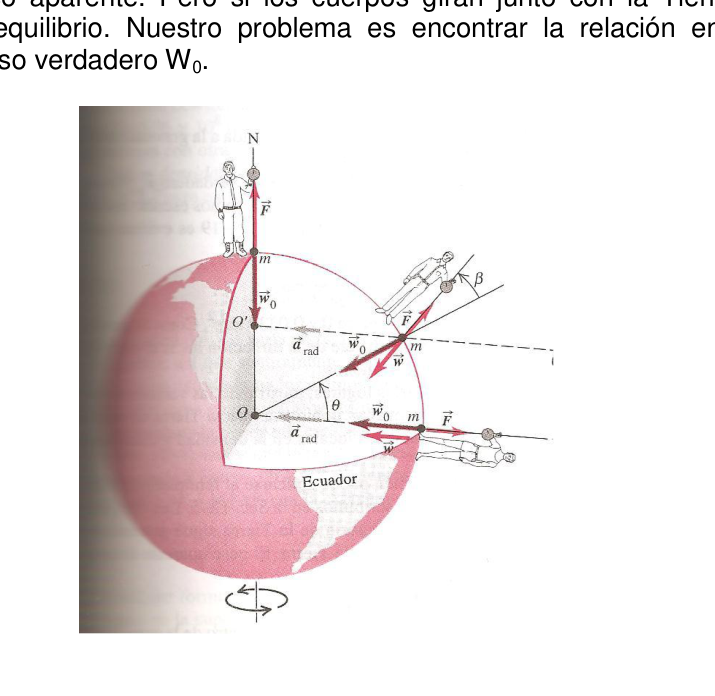
Topic: Newtonian Mechanics Metodi: Kinematic Equations, Graph Linearization Competenze: Physical Reasoning, Mathematical Modeling Objects: — Fonte: Testo (PDF) — p.5
Chi si alza, Dio lo aiuta.
PT72. Istituto Primo Capraro - Colegio San Patricio
San Carlo di Bariloche, Rio Negro.
A chi si fa presto, Dio lo aiuta!!!! Juan è un allievo che viene spesso tardi alle lezioni alla scuola a cui frequenta.
- Contesta. Il motivo è sempre lo stesso: “Professore, ho perso il treno delle 7:30”. Una . Domani invernale, quando si avvicina alla stazione, è di nuovo sul punto di perdere. il treno. In un disperato tentativo, corre a una velocità costante di 21,6 km/h. Quando si trova a 32 metri dall’ultima porta del vagone di cola
- Il treno parte con una . accelerazione costante di 0,5 m/s2. a) Il nostro viaggiatore potrà prendere il suo biglietto o avrà perso il suo biglietto, tempo e incoraggiamento in un tentativo infructuoso, aggiungendo un altro arrivo tardivo al suo curriculum? Per questo calcola, in modo analitico, quanto tempo ci vorrebbe per raggiungerlo e, in quel caso, Se è così, quale distanza dovrebbe correre per salire sul treno. Analizza i risultati. b) Rappresenta i grafici cartesiani della velocità in funzione del tempo e della velocità. posizione in base al tempo, per entrambi (Giovanni e il treno) c) Qual è la velocità minima di Juan che gli permetterebbe di raggiungere il
- Il treno? d) In questo caso, che distanza deve percorrere?
Topic: Newtonian Mechanics Metodi: Kinematic Equations, Graph Linearization Competenze: Physical Reasoning, Mathematical Modeling Objects: — Fonte: Testo (PDF) — p.5
To the one who wakes up, God helps him.
PT72. The first is the Capraro Institute - St. Patrick’s College.
St. Charles of Bariloche, Rio Negro.
Whoever gets up early, God help him!!!! Juan is a student who usually arrives late for his classes at the school he attended. competing. The reason is always the same: “Professor, I missed the 7:30 train”. One . Tomorrow winter, when he gets closer to the station, he’s about to lose again. The train. In a desperate attempt, it runs at a constant speed of 21.6 km/h. When he’s 20 feet from the last door of the tail car The train starts with a . The following shall be added to the list of the following: (a) Will our traveller take advantage of his ticket or have he lost his ticket, time And encouragement in a fruitless attempt, adding another late arrival to your resume? To do this, he calculates analytically how long it would take him to achieve it and, in that If you’re not, how far should you run to get on the train? Analyze the results. (b) It represents the Cartesian graphs of velocity in terms of time and the position based on time, for both (John and the train) (c) What should be John’s minimum speed to reach the
- The train? (d) In the latter case, what distance should he run?
Topic: Newtonian Mechanics Metodi: Kinematic Equations, Graph Linearization Competenze: Physical Reasoning, Mathematical Modeling Objects: — Fonte: Testo (PDF) — p.5
El peso de las apariencias
PT73. Instituto Primo Capraro - Colegio San Patricio
San Carlos de Bariloche, Río Negro.
El peso de las apariencias. Como la Tierra gira sobre su eje, no es precisamente un marco de referencia inercial, ya que todo movimiento circular tiene aceleración. Por esta razón el peso aparente de un cuerpo en la Tierra no es exactamente igual a la atracción gravitatoria terrestre, a la que llamaremos peso verdadero W0 del cuerpo. La figura es una vista recortada de la Tierra que muestra a tres observadores. Cada uno sostiene una balanza de resorte de la que pende un cuerpo de masa m. Cada balanza aplica una fuerza de tensión F al cuerpo, y la lectura de cada una es la magnitud F de dicha fuerza. Si los observadores no son conscientes de la rotación de la Tierra, cada uno piensa que la lectura de la báscula es igual al peso verdadero del cuerpo porque cree que éste está en equilibrio. Así cada observador piensa que a la tensión F debe oponerse una fuerza igual y opuesta W, a la que llamamos peso aparente. Pero si los cuerpos giran junto con la Tierra, no están precisamente en equilibrio. Nuestro problema es encontrar la relación entre el peso aparente W y el peso verdadero W0.
OAF 2017 - 77 Supondremos que la Tierra es esféricamente simétrica de radio R, masa MT y de densidad uniforme. Para esta situación determinar: a) El peso verdadero de una masa de 10 kg colocada en la báscula de resortes, para cualquiera de los tres observadores, utilizando la Ley de Gravitación Universal. Pero como la Tierra gira a razón de una vuelta por día (no consideraremos el pequeño aporte de su órbita alrededor del Sol), calcular b) La rapidez de rotación de la Tierra en unidades del SI. c) La rapidez tangencial de cada uno de los tres observadores, considerando que uno de ellos se encuentra en el Polo Norte, el último en el Ecuador y el del medio a 41º de latitud (lo mismo que en Bariloche) y todos sobre el nivel del mar. d) La aceleración centrípeta de cada observador e) La fuerza neta que actúa sobre la masa de 10 kg en cada caso f) Dibuja el diagrama vectorial de las fuerzas que actúan sobre la masa en cada caso y calcula el peso aparente de la masa en el Polo, en el Ecuador y en la latitud 41º.
Datos G = 6.67·10-11 N m2 / kg2 (constante de gravitación universal) R = 6370 km (radio de la Tierra) MT = 5,97·1024 kg (masa de la Tierra)
Topic: Gravitation, Newtonian Mechanics Metodi: Newton’s Law of Gravitation, Vector Decomposition Competenze: Physical Reasoning, Mathematical Modeling Objects: Planet Fonte: Testo (PDF) — p.5
Il peso delle apparenze
PT73. Istituto Primo Capraro - Colegio San Patricio
San Carlo di Bariloche, Rio Negro.
Il peso delle apparenze. Poiché la Terra ruota sull’asse, non è proprio un quadro di riferimento inerziale, già. che ogni movimento circolare ha un’accelerazione. Per questo il peso apparente di un Il corpo sulla Terra non è esattamente uguale alla gravità terrestre, alla quale Chiameremo il peso reale del corpo W0. La figura è una vista tagliata della Terra che mostra tre osservatori. Ognuno di loro ha un’onda di primavera di cui appenda un corpo di massa m. Ogni bilancia applica una forza di tensione F al corpo, e la La lettura di ciascuna è la magnitudo F di tale forza. Se gli osservatori non sono Consapevoli della rotazione della Terra, ognuno pensa che la lettura della bilancia sia pari al peso reale del corpo perché crede che il peso sia in equilibrio. Così ogni L’osservatore pensa che alla tensione F deve opporsi una forza uguale e opposta a W, che chiamiamo peso apparente. Ma se i corpi girano insieme alla Terra, non sono. Proprio in equilibrio. Il nostro problema è trovare il rapporto tra il peso. apparente W e il peso reale W0.
OAF 2017 - 77 Supponiamo che la Terra sia sfericamente simmetrica di raggio R, massa MT e di densità uniforme. Per questo motivo, determinare: a) Il peso reale di una massa di 10 kg posta sulla bilancia delle sorgenti, per uno dei tre osservatori, usando la legge di gravità Universale. Ma poiché la Terra gira a ragione di una volta al giorno (non consideriamo il piccolo contribuzione della sua orbita attorno al Sole), calcolare b) La velocità di rotazione della Terra in unità SI. c) La velocità tangenziale di ciascuno dei tre osservatori, considerando che Uno di questi si trova al Polo Nord, l’ultimo all’Ecuador e l’altro all’Ecuador. La maggior parte dei paesi in via di sviluppo, con un’alta quota di energia, è in grado di raggiungere il livello di un’area di altitudine di circa 40°C. d) L’accelerazione centripetal di ogni osservatore e) La forza netta che agisce sulla massa di 10 kg in ogni caso f) Disegna il diagramma vettoriale delle forze che agiscono sulla massa in ogni Il caso e il peso apparente della massa nel Polo, nell’Ecuador e in latitudine 41°.
Datos G = 6,67·10-11 N m2 / kg2 (costante di gravità universale) R = 6370 km (radius terrestre) MT = 5,97·1024 kg (massa della Terra)
Topic: Gravitation, Newtonian Mechanics Metodi: Newton’s Law of Gravitation, Vector Decomposition Competenze: Physical Reasoning, Mathematical Modeling Objects: Planet Fonte: Testo (PDF) — p.5
Weight of appearances
PT73. The first is the Capraro Institute - St. Patrick’s College.
St. Charles of Bariloche, Rio Negro.
The weight of appearances. As the Earth rotates on its axis, it’s not exactly an inertial frame of reference, either. That every circular motion has acceleration. For this reason the apparent weight of a body on Earth is not exactly equal to Earth’s gravitational pull, which We’ll call it real body weight W0. The figure is a cut-off view of the Earth . It shows three observers. Each holds a spring scale of which Hang a body of mass m. Each scale applies a force of tension F to the body, and the The reading of each is the magnitude F of that force. If the observers are not Aware of the Earth’s rotation, everyone thinks reading the scale is It’s equal to the real weight of the body because you think it’s in balance. So each The observer thinks that the voltage F must be opposed by a force equal to and opposite to W, the We call it apparent weight. But if the bodies rotate along with the Earth, they’re not. It’s precisely in balance. Our problem is finding the relationship between weight. The apparent W and the true weight W0.
The Commission shall adopt delegated acts in accordance with Article 21 of the Financial Regulation. Let’s assume that the Earth is spherically symmetrical radius R, mass MT and mass of The density is uniform. For this situation to determine: (a) The true weight of a mass of 10 kg placed on the spring scale, for any of the three observers, using the Law of Gravitation It’s all over the place. But as the Earth rotates at a rate of one rotation per day (we won’t consider the small The total number of stars in the solar system is estimated at (b) The speed of rotation of the Earth in SI units. (c) The tangential velocity of each of the three observers, considering that One of them is at the North Pole, the last one is at the Equator and the last one is at the North Pole. The average is 41° of latitude (the same as in Bariloche) and all above sea level. (d) The centrifugal acceleration of each observer (e) The net force acting on the mass of 10 kg in each case (f) Draw the vector diagram of the forces acting on the mass at each point. The average mass of the planet is about 0. latitude 41o.
Data from the report G = 6.67·10-11 N m2 / kg2 (universal gravity constant) R = 6370 km (earth radius) MT = 5,97·1024 kg (mass of the Earth)
Topic: Gravitation, Newtonian Mechanics Metodi: Newton’s Law of Gravitation, Vector Decomposition Competenze: Physical Reasoning, Mathematical Modeling Objects: Planet Fonte: Testo (PDF) — p.5
A no calentarse tanto (calentar mate)
PT74. Instituto Primo Capraro - Colegio San Patricio
San Carlos de Bariloche, Río Negro.
¡A no calentarse tanto! En una nota periodística del mes de junio del año pasado, se especifica que la OMS (Organización Mundial de la Salud) retiró al mate y al café del listado de posibles cancerígenos. Sin embargo, hizo una salvedad que deja a los argentinos en el ojo de la tormenta: el mate no debería tomarse a una temperatura de más de 65ºC. Es que en nuestro país, estamos acostumbrados a tomar el mate con el agua cerca del punto de hervor. En los últimos años, los hábitos de los argentinos se fueron modificando gracias a una mayor difusión de campañas que invitan a cebar bien el mate y poder disfrutar de una buena infusión. ―Hace 10 años estábamos en que casi todos los argentinos, tomaba el mate con el agua hervida. Estaba esa idea del mate a punto de hervir‖, cuenta en la nota una sommelier especialista en cata de yerba mate. ―Hace 5 años ya hubo un cambio y mejoró notablemente la forma de consumo. Y se nota que hay un cuidado con la temperatura del agua, hoy la relación podría ser que el 70% todavía toma mate con agua casi hervida y un 30% que ya adoptó esta buena costumbre del agua no tan caliente como un hábito‖, añade. Y se sincera: ―Cuando la mayoría de los argentinos cree que el agua está bien, ya está pasada‖. La sommelier considera que una temperatura de alrededor de 70°C es una buena temperatura para la infusión y no hace daño a la salud. ―Los argentinos no estamos como deberíamos estar, pero cada vez se está cuidando más el tema del agua y el consumo de la yerba mate‖, reconoce la sommelier. Una manera de calentar el agua durante un viaje largo en automóvil, es utilizar los calentadores eléctricos de inmersión conectados a 12 V, como el que se observa en la figura de la izquierda. También es muy
78 - OAF 2017 práctico para el que realiza el viaje conduciendo el vehículo y sin acompañante, utilizar un mate listo como los de la figura de la derecha.
La capacidad de un mate listo es de 500 cm3,
se encuentra lleno de agua a una temperatura
inicial de 20ºC y nuestro objetivo es elevar la
misma hasta los 70ºC, de acuerdo a las
recomendaciones de la OMS. Suponiendo el
mate listo adiabático y toda la energía eléctrica
se utiliza para elevar la temperatura del agua,
se pide:
a) Calcular la cantidad de calor necesaria para tener la temperatura del agua ideal
para tomar mate.
El calentador eléctrico del que disponemos tiene una potencia media de 87.2 w entre las
temperaturas de trabajo (tanto la potencia, como la intensidad de corriente y la resistencia
eléctrica, varían con la temperatura). Suponemos que la diferencia de potencial eléctrico
es constante de 12 V.
b) Determinar el tiempo necesario para que el agua alcance los 70ºC.
c) Calcular la intensidad de corriente media que pasa por el calentador.
d) Determinar la resistencia eléctrica promedio del calentador a inmersión.
La resistencia eléctrica de un material conductor aumenta con la temperatura en forma
aproximadamente lineal, de acuerdo con la siguiente expresión:
𝑅 𝑇 = 𝑅0 1 + 𝛼 ∆𝑇
Donde R(T) es la resistencia del conductor a una determinada temperatura R(0) es la resistencia del conductor a 293 K 𝛼 es el coeficiente de temperatura, ∆𝑇 es la variación de temperatura
Considerando que el material con el que se construyó la resistencia del calentador tiene un 𝛼 indicado en los datos al final del problema, se pide: e) Calcular la resistencia del calentador a 20ºC (temperatura inicial del agua) f) Representar en forma aproximada, la resistencia en función de la temperatura entre los 20ºC y 70ºC g) Representar en forma aproximada, la intensidad de corriente eléctrica y la potencia eléctrica en función de la temperatura entre los 20ºC y 70ºC
Datos Calor específico del agua Ce = 4,186 J/g K (lo suponemos constante en ese rango de temperaturas). Coeficiente de temperatura α = 4·10-3 1/K a 20ºC
Topic: Thermodynamics, Circuits Metodi: First Law of Thermodynamics, Conservation of Energy Competenze: Physical Reasoning, Mathematical Modeling Objects: Resistor, Container Fonte: Testo (PDF) — p.5
**Non riscaldarsi troppo (calda matte) **
PT74. Istituto Primo Capraro - Colegio San Patricio
San Carlo di Bariloche, Rio Negro.
Non si scaldare così! Un comunicato stampa del giugno dello scorso anno ha specificato che l’OMS (Organizzazione Mondiale della Sanità) ha ritirato il mate e il caffè dalla lista di possibili
- sono cancerogeni. Tuttavia, ha fatto un salvataggio che lascia gli argentini nell’occhio della tempesta: il mate non deve essere assunto a temperature superiori ai 65°C. - E ’ che in Il nostro paese, siamo abituati a prendere il mate con l’acqua vicino al punto di
- Rompete. Negli ultimi anni, le abitudini degli argentini sono state modificate grazie a un’incidenza di più diffusione di campagne che invitano a fare bene il mate e a godersi una Buona infusione.
- 10 anni fa eravamo in un momento in cui quasi tutti gli argentini, prendevano il mate con l’acqua. fermentazione. Era l’idea del mate che stava per bollire, dice una sommelier. Specialista in cata di erba mate. - Cinque anni fa c’era un cambiamento e si è migliorato. la forma di consumo. E si nota che c’è un controllo sulla temperatura del Oggi il rapporto potrebbe essere che il 70% prende ancora mate con acqua quasi bollita e un 30% che ha già adottato questa buona abitudine dell’acqua non così calda come un’abitudine aggiunge. E si dice sincero: “Quando la maggior parte degli argentini pensa che l’acqua sia buona, già è passato. La sommeliera ritiene che una temperatura de
- In giro . de 70°C es Una .
- Buona . temperatura per l’ infusione e non fa male alla la salute. - Gli argentini non sono come noi. Dovremmo essere, ma ogni volta si sta.
- con maggiore attenzione al tema dell’acqua e del consumo. “La sommeliera riconosce che l’erba mate”. Un modo per riscaldare l’acqua per un Il viaggio lungo in auto, è utilizzare i calorificatori elettrici de Immersione collegati a 12 V, come quello che si vede in la figura sulla sinistra. E ’ anche molto.
78 - OAF 2017 pratica per chi fa il viaggio guidando il veicolo e senza accompagnatore, utilizzare un mate bravi come quelli della figura sulla destra.
La capacità di un mate pronto è di 500 cm3, Si trova pieno di acqua a una temperatura La temperatura iniziale è di 20 °C e il nostro obiettivo è di elevare la temperatura. La temperatura del corpo è di circa 70°C, secondo le raccomandazioni dell’OMS. Supponendo il Matte pronto adiabatic e tutta l’energia elettrica è usato per elevare la temperatura dell’acqua, si chiede: a) Calcolare la quantità di calore necessaria per avere la temperatura idonea dell’acqua
- Per prendere il mate. Il riscaldatore elettrico che abbiamo a disposizione ha una potenza media di 87.2 w tra le due
- le temperature di lavoro (sia la potenza, sia l’intensità di corrente e la resistenza) elettrica, varia con la temperatura). Supponiamo che la differenza di potenziale elettrico è costante di 12 V. b) Determinare il tempo necessario per raggiungere i 70°C. c) Calcolare l’intensità di corrente media che passa attraverso il riscaldatore. d) Determinare la resistenza elettrica media del riscaldatore a immersione. La resistenza elettrica di un materiale conduttore aumenta con la temperatura in forma. approssimativamente lineare, secondo la seguente espressione:
𝑅 𝑇 = 𝑅0 1 + 𝛼 ∆𝑇
Dove R(T) è la resistenza del conducente a una certa temperatura R(0) è la resistenza del conducente a 293 K α è il coefficiente di temperatura, ∆T è la variazione di temperatura
Considerando che il materiale con cui è stato costruito ha resistenza al riscaldatore un α indicato nei dati alla fine del problema, si chiede: e) Calcolare la resistenza del riscaldatore a 20°C (temperatura iniziale dell’acqua) f) Rappresentare in modo approssimativo la resistenza a temperatura tra 20oC e 70oC (g) Rappresentare in modo approssimativo l’intensità di corrente elettrica e la Potenza elettrica a temperatura compressa tra 20oC e 70oC
Datos Calore specifico dell’acqua Ce = 4.186 J/g K (si supponga costante in questo intervallo di temperatura). Coefficiente di temperatura α = 4·10-3 1/K a 20oC
Topic: Thermodynamics, Circuits Metodi: First Law of Thermodynamics, Conservation of Energy Competenze: Physical Reasoning, Mathematical Modeling Objects: Resistor, Container Fonte: Testo (PDF) — p.5
**Do not heat up too much (matte heat) **
PT74. The first is the Capraro Institute - St. Patrick’s College.
St. Charles of Bariloche, Rio Negro.
Don’t get too hot! In a press release in June last year, the WHO stated that: (World Health Organization) removed mate and coffee from the list of possible It’s carcinogenic. However, he made a salvation that leaves the Argentines in the eye of the storm. Storm: the mate should not be taken at a temperature above 65°C. It ‘s just that in Our country, we’re used to taking mate with water near the point of I’m going to get a break. In recent years, the habits of Argentines have been changed thanks to a More broadcast campaigns inviting you to cook the matte well and enjoy a good one. Good infusion.
- Ten years ago we were in a place where almost all Argentines, drank matte with water. boiled. There was this matte idea about to boil, says a sommelier in the note. He’s a specialist in herb mate. - Five years ago, there was a change and it got better. The Commission has not yet adopted a proposal for a regulation on the use of the product. And you see there is a care with temperature in the Today the ratio could be that 70% still take mate with almost boiled water and 30% who already adopted this good habit of not as hot water as a habit, He adds. And he’s honest: “When most Argentines think the water is good, already. It’s over. The sommelier considers a temperature de around de 70°C es One . Good . temperature for infusion and does not harm health. - Argentines are not like us. We should be, but every time he’s gone. By taking more care of water and consumption issues The sommelier recognizes the “Matte” herb. A way to heat water for a while. Long journey by car, is to use the Heaters Electrical power de
- I ‘m going to dive . connected to 12 V, as seen in The figure on the left. It ‘s also very
The Commission shall adopt implementing acts in accordance with Article 21 of Regulation (EU) No 1303/2013. practical for the person who makes the journey by driving the vehicle and without an escort, use a matte smart as the ones on the right.
The capacity of a ready mate is 500 cm3, It ‘s filled with water at a temperature . Initial temperature is 20oC and our goal is to raise the temperature. The same as the 70°C, according to the The Commission has also adopted a number of recommendations. Assuming the Ready matte adiabatic and all electrical power is used to raise the water temperature, It is asked: (a) Calculate the amount of heat required to have the ideal water temperature to take mate. The electric heater we have has an average power of 87.2 w between the The working temperature (both power, current intensity and resistance) Electrical, they vary with temperature). Suppose the electric potential difference is constant at 12 V. (b) Determine the time required for water to reach 70°C. (c) Calculate the average current intensity passing through the heater. (d) Determine the average electrical resistance of the heater to immersion. The electrical resistance of a conductive material increases with temperature in the form approximately linear, according to the following expression:
𝑅 𝑇 = 𝑅0 1 + 𝛼 ∆𝑇
Where R(T) is the resistance of the driver to a given temperature R(0) is the resistance of the driver to 293 K α is the temperature coefficient, ∆T is the temperature change
Whereas the material from which the heater was built has resistance to heat a α indicated in the data at the end of the problem, is asked: (e) Calculate the resistance of the heater to 20oC (initial water temperature) (f) Approximate representation of the resistance to temperature between 20oC and 70oC (g) Approximate representation of the electric current intensity and the current Electrical power based on temperature between 20oC and 70oC
Data from the report The specific heat of the water Ce = 4,186 J/g K (we assume it is constant in that range of temperature). The temperature coefficient α = 4·10-3 1/K at 20oC
Topic: Thermodynamics, Circuits Metodi: First Law of Thermodynamics, Conservation of Energy Competenze: Physical Reasoning, Mathematical Modeling Objects: Resistor, Container Fonte: Testo (PDF) — p.5
PT75. Instituto Privado Rivadavia
Alderetes, Tucumán.
a) Determina si es posible mover un bloque de 1000 Kg, arrastrándolo por el suelo durante 10 metros en 30 segundos, aplicando para ello una potencia motriz de 50 W. µ=0,1. b) En caso de que la respuesta sea negativa, ¿qué potencia se debería aplicar para mover el bloque?
OAF 2017 - 79
Topic: Newtonian Mechanics Metodi: Free-Body Diagram, Conservation of Energy Competenze: Physical Reasoning Objects: Block Fonte: Testo (PDF) — p.5
PT75. Rivadavia Privato Instituto
Alderetes, Tucumán.
a) Determina se è possibile spostare un blocco di 1000 Kg trascinandolo sul suolo Per 10 metri in 30 secondi, applicando una potenza motoria di 50 W. µ=0,1. b) Se la risposta è negativa, quale potenza dovrebbe essere applicata per spostare il blocco?
OAF 2017 - 79
Topic: Newtonian Mechanics Metodi: Free-Body Diagram, Conservation of Energy Competenze: Physical Reasoning Objects: Block Fonte: Testo (PDF) — p.5
PT75. Rivadavia Private Institute
You are a fool, Tucuman.
(a) Determine whether it is possible to move a 1000 kg block by dragging it down the floor For 10 metres in 30 seconds, applying a driving force of 50 W. µ=0,1. (b) If the answer is negative, what power should be applied to Move the block?
The Commission shall adopt delegated acts in accordance with Article 21 of this Regulation.
Topic: Newtonian Mechanics Metodi: Free-Body Diagram, Conservation of Energy Competenze: Physical Reasoning Objects: Block Fonte: Testo (PDF) — p.5
PT76. Instituto Privado Rivadavia
Alderetes, Tucumán.
Para el siguiente circuito, calcular:
a) Las corrientes y tensiones b) La potencia de cada resistencia y la potencia total. c) El tiempo que demora la resistencia R3 en calentar 2 litros de agua, desde 20°C hasta vapor a 100°C, si su rendimiento es del 80%.
Topic: Circuits, Thermodynamics Metodi: Kirchhoff’s Laws, First Law of Thermodynamics Competenze: Physical Reasoning, Mathematical Modeling Objects: Resistor, Battery Fonte: Testo (PDF) — p.5
PT76. Rivadavia Privato Instituto
Alderetes, Tucumán.
Per il circuito seguente, calcolare:
a) Correnti e tensioni b) Potenza di ogni resistenza e potenza totale. c) Il tempo necessario per riscaldare la resistenza R3 a 2 litri di acqua, da 20°C fino a 100°C di vapore, se il rendimento è dell’80%.
Topic: Circuits, Thermodynamics Metodi: Kirchhoff’s Laws, First Law of Thermodynamics Competenze: Physical Reasoning, Mathematical Modeling Objects: Resistor, Battery Fonte: Testo (PDF) — p.5
PT76. Rivadavia Private Institute
You are a fool, Tucuman.
For the following circuit, calculate:
(a) Current and voltage (b) The power of each resistance and the total power. (c) The time taken for R3 resistance to heat 2 litres of water, from 20°C until steam to 100°C, if the yield is 80%.
Topic: Circuits, Thermodynamics Metodi: Kirchhoff’s Laws, First Law of Thermodynamics Competenze: Physical Reasoning, Mathematical Modeling Objects: Resistor, Battery Fonte: Testo (PDF) — p.5
PT77. Instituto Privado Rivadavia
Alderetes, Tucumán.
Al sumergir una piedra de 2,5 Kg en agua, comprobamos que tiene un peso aparente de 20 N. Calcular: a) El empuje que experimenta la piedra b) El volumen de la piedra c) La densidad de la piedra.
Topic: Fluid Mechanics Metodi: Hydrostatic Equilibrium Competenze: Physical Reasoning Objects: — Fonte: Testo (PDF) — p.5
PT77. Rivadavia Privato Instituto
Alderetes, Tucumán.
Se immergevamo una pietra di circa 2,5 kg in acqua, si verifica che ha un peso apparente di 20 N. Calcolare: a) La spinta che la pietra prova b) Il volume della pietra c) La densità della pietra.
Topic: Fluid Mechanics Metodi: Hydrostatic Equilibrium Competenze: Physical Reasoning Objects: — Fonte: Testo (PDF) — p.5
PT77. Rivadavia Private Institute
You are a fool, Tucuman.
When you submerge a 2.5 kg stone in water, you find that it has an apparent weight of 20 N. Calculation: (a) The thrust the stone experiences (b) The volume of the stone (c) The density of the stone.
Topic: Fluid Mechanics Metodi: Hydrostatic Equilibrium Competenze: Physical Reasoning Objects: — Fonte: Testo (PDF) — p.5
Orbitando
PT78. Escuela de Agricultura
General Alvear, Mendoza.
“Orbitando”.
Un satélite de 300 kg de masa se encuentra en una órbita circular alrededor de la tierra a
una altitud igual al radio medio de la tierra. Determina
a) La rapidez orbital del satélite
b) El periodo de su revolución
c) La fuerza gravitacional que actúa sobre él?
d) Realiza un diagrama de cuerpo libre del satélite
Topic: Gravitation Metodi: Newton’s Law of Gravitation, Kepler’s Laws Competenze: Physical Reasoning, Mathematical Modeling Objects: Satellite, Planet Fonte: Testo (PDF) — p.5
**Orbita **
PT78. La scuola di agricoltura
Generale Alvear, Mendoza.
Orbitando. Un satellite di 300 kg di massa si trova in orbita circolare attorno alla Terra a un’altitudine pari al raggio medio della terra. Determina a) La velocità orbitale del satellite b) Il periodo della sua rivoluzione c) La forza gravitazionale che agisce su di lui? d) Realizza un diagramma del corpo libero del satellite
Topic: Gravitation Metodi: Newton’s Law of Gravitation, Kepler’s Laws Competenze: Physical Reasoning, Mathematical Modeling Objects: Satellite, Planet Fonte: Testo (PDF) — p.5
The following shall be added to the list of the following:
PT78. School of Agriculture
General Alvear, Mendoza, please.
Orbiting. A 300 kg mass satellite is in a circular orbit around the Earth at an altitude equal to the average radius of the earth. Determine (a) The orbital speed of the satellite (b) The period of his revolution (c) The gravitational force acting on it? (d) Perform a satellite free body diagram
Topic: Gravitation Metodi: Newton’s Law of Gravitation, Kepler’s Laws Competenze: Physical Reasoning, Mathematical Modeling Objects: Satellite, Planet Fonte: Testo (PDF) — p.5
PT79. Escuela de Agricultura
General Alvear, Mendoza.
Una carga puntual (6e-) se desplaza en la dirección positiva x con una velocidad de
5.105m/s. Cuando se halla en el origen, calcula el campo magnético en
a) P1: x=0, y=0, z=6cm.
b) P2: x=0, y=2cm, z=0
c) P3: x=2cm, y=2cm, z=2cm.
80 - OAF 2017
Si al desplazarse en dicha dirección se encuentra con un campo magnético (perpendicular) B de 9.10-4 T. d) ¿Cuál será la dirección de la carga? e) Realiza una gráfica del movimiento de la carga puntual.
Topic: Magnetism Metodi: Biot-Savart Law, Lorentz Force Analysis Competenze: Physical Reasoning, Mathematical Modeling Objects: Point Charge Fonte: Testo (PDF) — p.5
PT79. La scuola di agricoltura
Generale Alvear, Mendoza.
Un carico puntuale (6e-) si sposta in direzione positiva x a velocità di
5.105m/s. Quando si trova all’origine, calcola il campo magnetico in
a) P1: x=0, y=0, z=6cm.
b) P2: x=0, y=2cm, z=0
c) P3: x=2cm, y=2cm, z=2cm.
80 - OAF 2017
Se si muove in questa direzione si trova un campo magnetico (perpendicolare) B di 9.10-4 T. d) Qual è l’indirizzo del carico? e) realizza un grafico del movimento della carica puntuale.
Topic: Magnetism Metodi: Biot-Savart Law, Lorentz Force Analysis Competenze: Physical Reasoning, Mathematical Modeling Objects: Point Charge Fonte: Testo (PDF) — p.5
PT79. School of Agriculture
General Alvear, Mendoza, please.
A point charge (6e-) moves in the positive direction x at a speed of
5.105m/s. When it is at the source, it calculates the magnetic field at
a) P1: x=0, y=0, z=6cm.
b) P2: x=0, y=2cm, z=0
c) P3: x=2cm, y=2cm, z=2cm.
The Commission shall adopt implementing acts in accordance with Article 21 of Regulation (EU) No 1303/2013.
If moving in that direction encounters a magnetic field (perpendicular) B of 9.10-4 T. (d) What will be the direction of the cargo? (e) Draw a graph of the movement of the point load.
Topic: Magnetism Metodi: Biot-Savart Law, Lorentz Force Analysis Competenze: Physical Reasoning, Mathematical Modeling Objects: Point Charge Fonte: Testo (PDF) — p.5
Choques
PT80. Escuela de Agricultura
General Alvear, Mendoza.
“Choques”.
Tres partículas A, B y C de masas mA = mB = m y mC = 2m,
respectivamente se están moviendo con velocidades cuyo
sentido se indica en la figura y de valor vA = vB = v y vC = 2v.
Se dirigen hacia el origen del sistema de coordenadas al que
llegan en el mismo instante. Al colisionar A y B quedan
adheridas y salen en la dirección indicada con velocidad v/2.
a) ¿Qué principio aplicas para resolver el problema?
¿Por qué?
b) Determina: la velocidad y dirección sale la partícula C.
c) ¿Es un choque elástico? Fundamenta tu respuesta.
d) Realiza una breve conclusión en base a lo obtenido
Topic: Conservation of Momentum Metodi: Conservation of Momentum, Vector Decomposition Competenze: Physical Reasoning, Mathematical Modeling Objects: Particle Beam Fonte: Testo (PDF) — p.5
Stocchi
PT80. La scuola di agricoltura
Generale Alvear, Mendoza.
- Gli shock. Tre particelle A, B e C di massa mA = mB = m e mC = 2m, rispettivamente si stanno muovendo a velocità che Il senso è indicato nella figura e del valore vA = vB = v e vC = 2v. Si dirigono verso l’origine del sistema di coordinate che Arrivano nello stesso istante. Quando A e B si colpiscono, restano. adesioni e uscite nella direzione indicata a velocità v/2. a) Quale principio hai applicato per risolvere il problema?
- Perché? b) Determina: velocità e direzione della particella C. c) È un colpo elastico? Fondamenta la tua risposta. d) Sulla base di ciò che è stato ottenuto, conclude brevemente:
Topic: Conservation of Momentum Metodi: Conservation of Momentum, Vector Decomposition Competenze: Physical Reasoning, Mathematical Modeling Objects: Particle Beam Fonte: Testo (PDF) — p.5
The following is the list of the types of vehicles that are included in the list:
PT80. School of Agriculture
General Alvear, Mendoza, please.
Shocks. Three particles A, B and C with masses mA = mB = m and mC = 2m, They are moving at speeds of which The value of the value vA = vB = v and vC = 2v is shown in the figure. They are directed towards the origin of the coordinate system to which They’re coming in at the same moment. When A and B collide , they stay . adhesive and exit in the indicated direction at v/2 speed. (a) What principle do you apply to resolving the problem?
- Why? - I don’t know. (b) Determine: the velocity and direction of the particle C. c) Is it an elastic shock? Fundamentate your answer. (d) Draw a brief conclusion on the basis of the results obtained
Topic: Conservation of Momentum Metodi: Conservation of Momentum, Vector Decomposition Competenze: Physical Reasoning, Mathematical Modeling Objects: Particle Beam Fonte: Testo (PDF) — p.5
PT81. Colegio San José de los Hermanos Maristas
Escuela Técnica Industrial Emilio Civit - Departamento de Aplicación Docente
Liceo Agrícola y Enológico Domingo F. Sarmiento
Maipú y Ciudad de Mendoza.
Un objeto de masa 3 kg es tirado verticalmente hacia arriba, alcanzando una altura
máxima de 20 m. (Considere despreciable la fricción)
a) ¿Cuál es la velocidad con que debe lanzarse para que alcance esa altura?
b) ¿En qué tiempo la alcanza?
c) Determine la energía mecánica del objeto en el inicio del movimiento, cuando
alcanza la altura máxima y cuando alcanza los 15m de altura. ¿Difieren estos
valores? ¿Por qué?
d) ¿A qué altura se encuentra 3,5 s después de su lanzamiento? Describa que ha
ocurrido con el objeto.
e) Realice una gráfica de posición en función del tiempo, para el intervalo de tiempo
[0 s;5 s]
f) Realice una gráfica de velocidad en función del tiempo, para el mismo intervalo
de tiempo.
OAF 2017 - 81
Topic: Conservation of Energy, Newtonian Mechanics Metodi: Conservation of Energy, Kinematic Equations Competenze: Physical Reasoning, Mathematical Modeling Objects: Projectile Fonte: Testo (PDF) — p.5
PT81. Colegio San José dei Fratelli Maristi
Emilio Civit Industrial Technical School - Dipartimento di Applicazione Docente
Liceo Agricolo e Enologico Domingo F. Sarmiento
Maipú e Mendoza.
Un oggetto di massa di 3 kg viene tirato verticalmente verso l’alto, raggiungendo una altezza massimo di 20 m. (Considera scortese la friczione) a) A che velocità deve lanciare per raggiungere tale altezza? b) In che tempo raggiunge? c) Determina l’energia meccanica dell’oggetto all’inizio del movimento, quando raggiunge la massima altezza e quando raggiunge i 15 metri di altezza. Questi sono diversi?
- Valori? - Perché? d) A che altezza si trova 3,5 secondi dopo il lancio? Descrivi il suo problema.
- l’oggetto. e) Realizzare un grafico di posizione in base al tempo, per l’intervallo di tempo [0 s;5 s] f) Realizzare un grafico di velocità in base al tempo, per lo stesso intervallo
- Il tempo.
OAF 2017 - 81
Topic: Conservation of Energy, Newtonian Mechanics Metodi: Conservation of Energy, Kinematic Equations Competenze: Physical Reasoning, Mathematical Modeling Objects: Projectile Fonte: Testo (PDF) — p.5
PT81. St. Joseph’s College of the Marist Brothers
The following is a list of the main activities of the European Commission:
The Ministry of Agriculture and Oenology Sarmiento .
Maipú and Mendoza City.
An object weighing 3 kg is pulled up vertically, reaching a height. maximum of 20 m. (Consider friction despicable) (a) How fast must he hurl to reach that height? (b) How long does it take to reach it? (c) Determine the mechanical energy of the object at the start of movement, when reaches maximum height and when it reaches 15m height. Are these different? What are values? - Why? - I don’t know. (d) What is the height of the vehicle 3,5 s after launch? Describe what you ‘ve got . occurred with the object. (e) Perform a position graph based on time, for the time interval [0 s;5 s] (f) Perform a time-speed graph for the same interval I’m not going to be late.
The following is the list of the countries of the European Union:
Topic: Conservation of Energy, Newtonian Mechanics Metodi: Conservation of Energy, Kinematic Equations Competenze: Physical Reasoning, Mathematical Modeling Objects: Projectile Fonte: Testo (PDF) — p.5
PT82. Colegio San José de los Hermanos Maristas
Escuela Técnica Industrial Emilio Civit - Departamento de Aplicación Docente
Liceo Agrícola y Enológico Domingo F. Sarmiento
Maipú y Ciudad de Mendoza.
Consideremos los dos sistemas más usuales para obtener agua caliente en el hogar: el
termotanque y el calefón.
Un termotanque almacena agua caliente en un gran recipiente, aislado térmicamente del
entorno de forma parcial. Supongamos que posee un sensor que encenderá un
calentador cuando la temperatura del agua almacenada sea inferior a Ti = 30 ºC y lo
apagará cuando sea superior a Ts = 45 ºC.
Si el termotanque tiene forma cilíndrica, con 30 cm de radio y 150 cm de altura, resuelva
lo siguiente:
a) Justifique por qué un termotanque, para ser útil como tal, no puede ser un
sistema aislado ideal.
b) Calcule el calor necesario para calentar el termotanque lleno desde temperatura
ambiente hasta Ts (desprecie perdidas de calor hacia el ambiente).
c) Si la potencia entregada por el calentador es 5000 cal/seg y se puede asumir el
rendimiento del mismo igual al 100%. ¿Cuál es el tiempo necesario para realizar
el proceso del inciso b?
Supongamos ahora que el termotanque pierde calor a razón de 200 cal/seg.
d) ¿Cuántas veces durante un día se encenderá el calentador para mantener la
temperatura dentro del rango buscado?
e) ¿Cuántas calorías consumirá el termotanque para proveer durante un día a una
familia que consume 500 litros de agua caliente?
En el caso del calefón, el principio de funcionamiento es hacer circular el agua por una
larga serpentina mientras que el calentador entrega el calor necesario para alcanzar la
temperatura de salida.
Considerando una serpentina de 2 cm2 de sección, una longitud de 2 m y un caudal de
consumo de agua de 0,20 litros/seg.
f) ¿Cuál es la velocidad del agua dentro de la serpentina? ¿Cuánto tarda un litro
de volumen en recorrer la serpentina?
g) Asumiendo el rendimiento del calentador en un 50% y la temperatura inicial del
agua como 30°C. ¿Cuál debe ser la potencia del mismo para alcanzar una
temperatura de salida de 45 ºC?
h) ¿Cuántas calorías consumirá el calefón para proveer durante un día a la misma
familia del inciso e?
Topic: Thermodynamics, Fluid Mechanics Metodi: First Law of Thermodynamics, Continuity Equation Competenze: Physical Reasoning, Mathematical Modeling Objects: Container, Tube Fonte: Testo (PDF) — p.5
PT82. Colegio San José dei Fratelli Maristi
Emilio Civit Industrial Technical School - Dipartimento di Applicazione Docente
Liceo Agricolo e Enologico Domingo F. Sarmiento
Maipú e Mendoza.
Considerate i due sistemi più comuni per ottenere acqua calda in casa: il Termo e caffone. Un termotank conserva acqua calda in un grande recipiente, isolato termicamente dal ambiente in parte. Supponiamo che possieda un sensore che accende un caldaio quando la temperatura dell’acqua immagazzinata è inferiore a Ti = 30 oC e si spegne quando è superiore a Ts = 45 oC. Se il termotank è cilindrico, con un raggio di 30 cm e una altezza di 150 cm, risolve il seguente: a) giustificare perché un termotank, per essere utile in quanto tale, non può essere un sistema isolato ideale. b) Calcolare il calore necessario per riscaldare il termotank pieno a temperatura ambiente fino a Ts (spregiate le perdite di calore verso l’ambiente). c) Se la potenza fornita dal riscaldatore è di 5000 cal/sec e si può presumere che il calorificatore sia rendimento pari al 100%. Quanto tempo è necessario per realizzare il processo di inciso b?
Supponiamo che il termotantuco perda calore a 200 cal/sec. d) Quante volte durante il giorno si deve accendere il riscaldatore per mantenere la temperatura di temperatura? temperatura entro il range richiesto? e) Quante calorie consumerà il termotank per fornire durante un giorno a uno Famiglia che consuma 500 litri di acqua calda?
Nel caso del caffone, il principio di funzionamento è quello di far circolare l’acqua per una L’energia elettrica è stata generata da una corrente elettrica di circa un milione di tonnellate di gas. temperatura di uscita. Considerando una serpentina di 2 cm2 di sezione, una lunghezza di 2 m e un’aria di corrente di consumo di acqua di 0,20 litri/sec. f) Qual è la velocità dell’acqua all’interno della serpentina? Quanto ci vuole un litro? di volume in giro per la serpentina? g) Assumendo che il caldaio sia in grado di funzionare al 50% e che la temperatura iniziale del caldaio sia di acqua come 30°C. Qual è la potenza di questo per raggiungere un temperatura di uscita di 45 oC? h) Quante calorie consumerà il caffè per fornire per un giorno? Famiglia del punto e?
Topic: Thermodynamics, Fluid Mechanics Metodi: First Law of Thermodynamics, Continuity Equation Competenze: Physical Reasoning, Mathematical Modeling Objects: Container, Tube Fonte: Testo (PDF) — p.5
PT82. St. Joseph’s College of the Marist Brothers
The following is a list of the main activities of the European Commission:
The Ministry of Agriculture and Oenology Sarmiento .
Maipú and Mendoza City.
Consider the two most common systems for getting hot water in the home: the Thermotank and the cafeteria. A heat tank stores hot water in a large container, which is thermal insulated from the water. the environment in a partial manner. Let’s say you have a sensor that will turn on a heater when the temperature of the water stored is less than Ti = 30 oC and shall be turned off when greater than Ts = 45 oC. If the thermostat is cylindrical, with a radius of 30 cm and a height of 150 cm, solve the following: (a) Justify why a thermostat, to be useful as such, cannot be a thermostat. The ideal insulated system. (b) Calculate the heat required to heat the full thermostat from the temperature. The amount of heat lost to the environment is calculated as the sum of the heat lost to the environment. (c) If the power delivered by the heater is 5000 cal/sec and the The yield of the same is 100%. What is the time it takes to perform the process of subparagraph b?
Now let’s say the thermostat loses heat at a rate of 200 cal/second. (d) How many times during a day should the heater be switched on to maintain the temperature? temperature within the target range? (e) How many calories will the thermostat consume to supply for a day? A family that consumes 500 liters of hot water?
In the case of the calefone, the principle of operation is to circulate water by a The heater delivers the heat needed to reach the the output temperature. Considering a 2 cm2 section, a length of 2 m and a flow of water consumption of 0,20 litres/sec. (f) What is the velocity of water inside the serpentine? How long does a liter take? of volume in the serpentine course? (g) Assuming the heater performance at 50% and the initial temperature of the heater at water as 30°C. What must be the power of it to achieve a the output temperature of 45 oC? (h) How many calories will the cauliflower consume to supply for a day? Family of the incisure and?
Topic: Thermodynamics, Fluid Mechanics Metodi: First Law of Thermodynamics, Continuity Equation Competenze: Physical Reasoning, Mathematical Modeling Objects: Container, Tube Fonte: Testo (PDF) — p.5
PT83. Colegio San José de los Hermanos Maristas
Escuela Técnica Industrial Emilio Civit - Departamento de Aplicación Docente
Liceo Agrícola y Enológico Domingo F. Sarmiento
Maipú y Ciudad de Mendoza.
Considere un circuito eléctrico como el que muestra la Figura 1. Si el valor del potencial
(V) suministrado por la batería es 12 V y las resistencias tienen los valores R1 = R3 = 10 Ω
y R2=5 Ω.
a) Calcule el valor de la resistencia equivalente del circuito.
b) ¿Cómo cambia el resultado del inciso (a) si ahora R1 = R2 = R3 = 10 Ω?
c) Determine la intensidad de corriente I que suministra la batería al circuito en
cuestión.
d) Determine la intensidad de corriente que atraviesa cada una de las resistencias.
82 - OAF 2017 e) Repita el inciso (d) suponiendo ahora que V = 24 V. ¿Cómo resulta cada una de las corrientes en relación a las obtenidas con la batería de 12 V? Justifique este resultado.
Figura 1
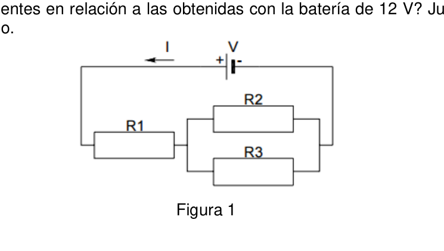
Topic: Circuits Metodi: Equivalent Circuit Reduction, Kirchhoff’s Laws Competenze: Physical Reasoning, Mathematical Modeling Objects: Resistor, Battery Fonte: Testo (PDF) — p.5
PT83. Colegio San José dei Fratelli Maristi
Emilio Civit Industrial Technical School - Dipartimento di Applicazione Docente
Liceo Agricolo e Enologico Domingo F. Sarmiento
Maipú e Mendoza.
Considerate un circuito elettrico come quello mostrato in Figura 1. Se il valore del potenziale (V) fornito dalla batteria è di 12 V e le resistenze hanno valori R1 = R3 = 10 Ω y R2=5 Ω. a) Calcolare il valore della resistenza equivalente del circuito. b) Come cambia il risultato di inciso (a) se ora R1 = R2 = R3 = 10 Ω? c) Determina l’intensità di corrente I che la batteria fornisce al circuito in
- La questione. d) Determina l’intensità di corrente attraversata da ciascuna resistenza.
82 - OAF 2017 e) Ripeta il punto (d) supponendo ora che V = 24 V. Come si fa a trovare ogni le correnti rispetto a quelle ottenute con la batteria da 12 V? Giustifica questo. risultato.
Figura 1
Topic: Circuits Metodi: Equivalent Circuit Reduction, Kirchhoff’s Laws Competenze: Physical Reasoning, Mathematical Modeling Objects: Resistor, Battery Fonte: Testo (PDF) — p.5
PT83. St. Joseph’s College of the Marist Brothers
The following is a list of the main activities of the European Commission:
The Ministry of Agriculture and Oenology Sarmiento .
Maipú and Mendoza City.
Consider an electrical circuit such as that shown in Figure 1. If the value of potential (V) supplied by the battery is 12 V and the resistors have the values R1 = R3 = 10 Ω y R2=5 Ω. (a) Calculate the value of the equivalent resistance of the circuit. (b) How does the result of subsection (a) change if now R1 = R2 = R3 = 10 Ω? (c) Determine the current intensity I supplied by the battery to the circuit in The question. (d) Determine the current intensity of each resistor.
The Commission shall adopt delegated acts in accordance with Article 82 of the Treaty. (e) Repeat subparagraph (d) by assuming that V = 24 V. How does each one of them turn out? the current in relation to that obtained with the 12 V battery? Justify this one . The result.
Figure 1
Topic: Circuits Metodi: Equivalent Circuit Reduction, Kirchhoff’s Laws Competenze: Physical Reasoning, Mathematical Modeling Objects: Resistor, Battery Fonte: Testo (PDF) — p.5
Autos electricos
PT84. EPET N° 4 Juan Agustín Larrús
General Acha, La Pampa.
Autos eléctricos. La EPET nº 4 de General Acha la pampa esta participando desde hace 3 años, en el campeonato argentino de auto eléctricos (desafío ECO). Este año se ha modificado el reglamento, los motores eléctricos son de 48 volt que es alimentado con 4 baterías de 12 volt y 17 amper hora. Dichas baterias no pueden ser recargadas en ningun momento de la competencia.
Consigna
a) ¿de qué forma se deben conectar las baterias para poder alimentar el motor y
cual será su corriente y tensión?
b) El sistema de carrera es distinto a años anteriores y es así: se debe correr 15
minutos utilizando la máxima potencia y luego 1,30 horas con lo que queda de
batería. Si el rendimiento del auto es óptimo, la potencia del motor es de 500
watt mas un 10 % por perdidas en rozamiento.
A. ¿cuanto seria la corriente utilizada en los primeros 15 minutos?
B. ¿qué corriente debería ir consumiendo en la segunda parte para llegar al
final de la carrera?
c) Si en la segunda parte el consumo fuera máximo ¿cuanto tiempo duraría las
baterías? ¿llegará al final?
d) ¿cual sería la resistencia que produce el motor en cada caso anterior?
Topic: Circuits Metodi: Equivalent Circuit Reduction, Kirchhoff’s Laws Competenze: Physical Reasoning, Mathematical Modeling Objects: Battery, Resistor Fonte: Testo (PDF) — p.5
Automobili elettrici
PT84. EPET N° 4 Juan Agustín Larrús
Generale Acha, La Pampa.
Automobili elettrici. L’EPET n. 4 del Generale Acha la pampa è stata partecipata da 3 anni, nel campionato argentino di auto elettriche (sfido ECO). Quest’anno il regolamento è stato modificato, i motori elettrici sono di 48 volt che è Potenziato da 4 batterie da 12 volt e 17 amperes orari. Queste batterie non possono essere Non sono state ricaricate in nessun momento della competizione.
Consigna a) come le batterie devono essere collegate per poter alimentare il motore e Qual è il suo corrente e la sua tensione? b) Il sistema di gara è diverso da quello degli anni precedenti e è il seguente: minuti usando la massima potenza e poi 1,30 ore con il resto di Batteria. Se la performance della macchina è ottimale, la potenza del motore è di 500 watt più il 10% per perdite di rasatura. A. Quanto sarebbe stato il corrente usato nei primi 15 minuti? B. che corrente dovrebbe consumare nella seconda parte per arrivare al fine della gara? (c) Se nella seconda parte il consumo fosse massimo, quanto tempo durerebbero le batterie? Arriverà alla fine? d) quale sarebbe la resistenza prodotta dal motore in ogni precedente caso?
Topic: Circuits Metodi: Equivalent Circuit Reduction, Kirchhoff’s Laws Competenze: Physical Reasoning, Mathematical Modeling Objects: Battery, Resistor Fonte: Testo (PDF) — p.5
The following is the list of the vehicles used in the production of the product:
PT84. The Commission has also adopted a number of proposals for a new directive on the protection of workers’ rights.
General Acha, the Pampa.
Electric cars. The EPET no 4 of General Acha la pampa has been participating for 3 years, in the The Argentine electric car championship (ECO challenge). This year the regulations have been changed, the electric motors are 48 volts which is Powered by four 12-volt batteries and 17 ampers per hour. Such batteries cannot be The Commission has not yet taken any action.
I ‘m giving it away . (a) how the batteries must be connected to power the engine; and What will be its current and voltage? (b) The system of racing is different from previous years and is as follows: minutes using maximum power and then 1.30 hours with the rest of I’m going to use the battery. If the performance of the car is optimal, the engine power is 500. watt plus 10% for losses in friction. A. What would be the current used in the first 15 minutes? B. What current should I be consuming in the second part to get to the End of the race? (c) If consumption in the second part were maximum, how long would the consumption last?
- What about batteries? Will it come to an end? (d) what would be the resistance produced by the engine in each of the preceding cases?
Topic: Circuits Metodi: Equivalent Circuit Reduction, Kirchhoff’s Laws Competenze: Physical Reasoning, Mathematical Modeling Objects: Battery, Resistor Fonte: Testo (PDF) — p.5
Minibuses
PT85. EPET N° 4 Juan Agustín Larrús
General Acha, La Pampa.
Minibuses.
Hace un tiempo atrás cambio de dueño la línea de buses que une General Acha-Santa
Rosa. Los choferes era nuevos, oriundo uno de cada lugar siendo 2 combis las que viajan
a diario (retirando y llevando los pasajeros a su casa.).
Para mejorar el servicio y mas rápido decide el dueño de la empresa intercambiar los
choferes en algunos viajes diarios, en la localidad de Ataliva Roca distante 38 km de la
salida de Santa Rosa y a 65 km de General Acha.
La combi que sale de Sta. Rosa por el estado de las rutas viaja a una velocidad media de
80 km /h, demora 15 minutos para llegar de la terminal a la ruta con una velocidad de 20
km/h y tarda 5 segundo en llegar a la velocidad media
A la misma hora sale de General Acha otra combi que no pierde tiempo en tomar la ruta
y viaja a una velocidad media de 90 km/h y parte de parado y demora 10 segundo a
llegar a la velocidad media y a los 30 km debe disminuir la velocidad por tener que pasar
OAF 2017 - 83 por un puesto caminero a 40 km/h demora 5 segundo en disminuir la velocidad y lo mismo para volver a esa velocidad
Calcular
a) Aceleraciones de las combi
b) Distancia que necesita para acelerar
c) Tiempo que demora cada una en llegar a Ataliva Roca
d) Si no cambiaran los choferes a que distancia de Sta. Rosa se cruzaría y cuanto
tiempo de después
e) ¿cual sera la velocidad media de cada una en su recorrido?
f) A que velocidad tendrían que ir cada una para llegar juntas teniendo en cuenta
que no pueden sobrepasar los 95 km/h
g) Si hicieran el viaje de sin cambiar de choferes cuanto demora cada una
Topic: Newtonian Mechanics Metodi: Kinematic Equations Competenze: Physical Reasoning, Mathematical Modeling Objects: — Fonte: Testo (PDF) — p.5
Minibus
PT85. EPET N° 4 Juan Agustín Larrús
Generale Acha, La Pampa.
Minibus. Un po ’ fa, il cambio di proprietà della linea di autobus che collega il generale Acha-Santa. Rosa. I conducenti erano nuovi, dove uno di ogni posto era due combi che viaggiavano. quotidianamente (trovando e portando i passeggeri a casa loro). Per migliorare il servizio e più rapidamente il proprietario di un’azienda decide di scambiare i I conducenti di alcuni viaggi giornalieri, nella località di Ataliva Roca a 38 km dalla città di uscita da Santa Rosa e a 65 km da General Acha. L’ho fatta uscire da Sta. Rosa per lo stato delle rotte viaggia a una velocità media di 80 km/h, ci vogliono 15 minuti per arrivare dal terminal alla rotta a una velocità di 20 km/h e ci vogliono 5 secondi per raggiungere la velocità media Al tempo stesso, il generale Acha lascia un’altra combi che non perde tempo a prendere la rotta. e viaggia a una velocità media di 90 km/h e parte ferma e dura 10 secondi a Arrivare alla velocità media e a 30 km deve rallentare la velocità perché deve passare.
OAF 2017 - 83 per un posto camminatore a 40 km/h ci vogliono 5 secondi per rallentare la velocità e il
- Per tornare a quella velocità.
Calcolare a) Accelerazioni dei combi b) Distanza necessaria per accelerare c) Il tempo che ci vuole per arrivare ad Ataliva Roca d) Se non si cambia il conducente, a che distanza da Sta. Rosa si sarebbe incrociata e quanto
- Un po ’ dopo. e) qual è la velocità media di ciascuna in corso? f) A che velocità avrebbero dovuto andare ognuno per arrivare insieme tenendo conto che non possono superare i 95 km/h g) Se si effettuano il viaggio senza cambiare i conducenti, quanto tempo ciascuno
Topic: Newtonian Mechanics Metodi: Kinematic Equations Competenze: Physical Reasoning, Mathematical Modeling Objects: — Fonte: Testo (PDF) — p.5
The following is the list of the vehicles used:
PT85. The Commission has also adopted a number of proposals for a new directive on the protection of workers’ rights.
General Acha, the Pampa.
Minibuses are here. A while ago , the bus line connecting General Acha-Santa changed hands .
- It’s pink. The drivers were new, one from each place being 2 combs the ones traveling. daily (withdrawing and taking passengers home). To improve service and speed up the business owner decides to exchange the services. Drivers on some daily trips, in the town of Ataliva Roca 38 km from the exit from Santa Rosa and 65 km from General Acha. I’m the one who’s coming out of Sta. Rose by the state of the routes travels at an average speed of 80 km/h, 15 minutes to reach the terminal at a speed of 20 km/h and takes 5 seconds to reach the average speed At the same time , General Acha leaves another combi that does not waste time taking the route . And it travels at an average speed of 90 km/h and partly stops and takes 10 seconds to You have to slow down to the mid-speed and 30 km.
The Commission shall adopt implementing acts in accordance with Article 21 of the Financial Regulation. For a pedestrian stand at 40 km/h it takes 5 seconds to slow down and I ‘m just trying to get back to that speed .
Calculate (a) Acceleration of combi (b) The distance you need to accelerate (c) Time each takes to reach Ataliva Roca (d) If the drivers are not changed at what distance from Sta. Rose would cross and how much After time . (e) what will be the average speed of each on its journey? (f) How fast would each have to go to get together taking into account which cannot exceed 95 km/h (g) If they made the journey without changing drivers, how long each one takes
Topic: Newtonian Mechanics Metodi: Kinematic Equations Competenze: Physical Reasoning, Mathematical Modeling Objects: — Fonte: Testo (PDF) — p.5
Riego en pista de motocross
PT86. EPET N° 4 Juan Agustín Larrús
General Acha, La Pampa.
Riego en pista de motocross.
En el circuito de motocross de General Acha se ha instalado un cisterna de agua para
cargar rápido los camiones que riegan el circuito entre carreras.
La forma de la misma es cilíndrica con diámetro de 4 metros y una altura de 6 metros. Y
se carga con una bomba que carga 8000 litros por hora
La cisterna se encuentra abierta a la atmósfera, alimenta a una cañería de sección
variable que vierte agua en el camión.
Datos:
La presión atmosférica es de 1,013. 105 pa
El caudal con que fluye el agua, cuando la canilla c está abierta, es de 0,005 m3/s
El diámetro de la cañería en el punto a es da = 10 cm
El diámetro de la cañería en el punto b es db = 25 cm
La cañería, entre los puntos a y b, tiene una diferencia de altura 4m
El diámetro del recipiente el camión tiene un tanque de forma cilíndrica de 2 metros de diámetros por 4 ms de largo
a) que tiempo necesita para llenarla
b) ¿qué presión soporta el punto b cuando la canilla c está cerrada?
c) ¿qué velocidad tiene el agua en el punto a cuando la canilla c está abierta?
d) ¿qué presión soporta el punto a cuando la canilla c está abierta?
84 - OAF 2017
e) ¿cuál es la presión hidrodinámica que soporta el punto b cuando la canilla c está
abierta?
f) ¿cuanto tiempo se tarda en llenar el camión?
g) ¿cuántos m3 contiene el camión a los 10 segundos después de comenzar a
llenarse?
h) En una hora cuantos camiones se llenarían
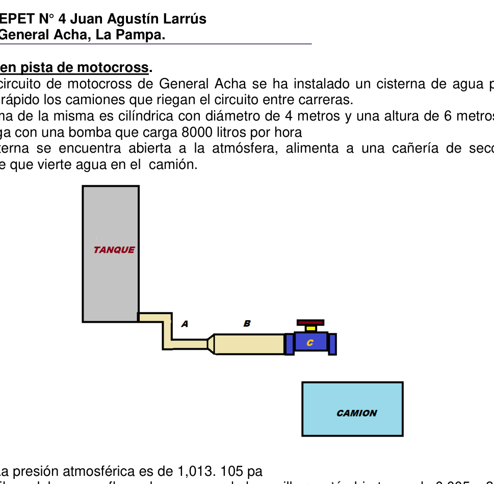
Topic: Fluid Mechanics Metodi: Bernoulli’s Equation, Continuity Equation Competenze: Physical Reasoning, Mathematical Modeling Objects: Container, Tube Fonte: Testo (PDF) — p.5
Irigamento su pista di motocross
PT86. EPET N° 4 Juan Agustín Larrús
Generale Acha, La Pampa.
L’irrigazione in pista di motocross. Al circuito di motocross di General Acha è stato installato un serbatoio di acqua per caricare velocemente i camion che irrigano il circuito tra le gare. La sua forma è cilindrica con un diametro di 4 metri e un’altezza di 6 metri. Y Si carica con una bomba che carica 8000 litri all’ora Il serbatoio è aperto all’atmosfera, alimenta un canale di sezione variabile che versano acqua sul camion.
Datati:
La pressione atmosferica è di 1.013 105 pa
La corrente di flusso dell’acqua, quando la cana c è aperta, è di 0,005 m3/s
Il diametro del tubo al punto a è da = 10 cm
Il diametro del tubo al punto b è db = 25 cm
La canisteria, tra i punti a e b, ha una differenza di altezza di 4 m
Il diametro del contenitore il camion ha un serbatoio cilindrico di 2 metri di diametro di 4 ms di lunghezza
a) quanto tempo ci vuole per riempirla b) quale pressione sopporta il punto b quando la canestra c è chiusa? c) che velocità ha l’acqua al punto a quando la cana c è aperta? d) quale pressione sopporta il punto a quando la canella c è aperta?
84 - OAF 2017 e) qual è la pressione idrodinamica che il punto b sopporta quando la canella c è
- Aperto? f) Quanto tempo ci vuole per riempire il camion? g) quanti m3 contengono i camion 10 secondi dopo l’inizio di riempire? h) In un’ora quanti camion si riempirebbero
Topic: Fluid Mechanics Metodi: Bernoulli’s Equation, Continuity Equation Competenze: Physical Reasoning, Mathematical Modeling Objects: Container, Tube Fonte: Testo (PDF) — p.5
The following conditions shall apply:
PT86. The Commission has also adopted a number of proposals for a new directive on the protection of workers’ rights.
General Acha, the Pampa.
Watering on the motocross track. A water tank has been installed at General Acha’s motorcycle circuit for to quickly load the trucks that irrigate the circuit between races. Its shape is cylindrical with a diameter of 4 meters and a height of 6 meters. Y It ‘s loaded with a pump that can charge 8,000 liters per hour . The tank is open to the atmosphere, feeding a section plumbing. variable that pours water on the truck.
The data:
The atmospheric pressure is 1,013. 105 pa
The flow rate of water when the channel c is open is 0,005 m3/s
The diameter of the pipe at point a is da = 10 cm
The diameter of the pipe at point b is db = 25 cm
The pipe, between points a and b, has a height difference of 4m
The diameter of the container the truck has a cylindrical tank of 2 meters of 4 ms in diameter
(a) how long it takes to fill it (b) what pressure does point (b) withstand when the channel c is closed? (c) what is the velocity of the water at point a when the channel c is open? (d) what pressure does the point a withstand when the c-bar is open?
The Commission shall adopt delegated acts in accordance with Article 21 of this Regulation. (e) what is the hydrodynamic pressure that point b is under when the c-bar is open? (f) how long does it take to fill the truck? (g) how many m3 the truck contains 10 seconds after starting filling up? h) How many trucks would be filled in an hour
Topic: Fluid Mechanics Metodi: Bernoulli’s Equation, Continuity Equation Competenze: Physical Reasoning, Mathematical Modeling Objects: Container, Tube Fonte: Testo (PDF) — p.5
Mecanica
PT87. Colegio Santa Rosa
San Miguel, Tucumán.
Mecánica.
En una plantación de pinos de hojas aciculares (en forma de aguja) ubicado en una
pequeña ladera en el Cerro San Javier (Tucumán), durante el invierno, el suelo bajo los
mismos cubiertos de estas hojas constituía una superficie lo suficientemente lisa como
para que un grupo de niños descubrieran que se podían deslizar con facilidad sobre una
tabla usada a la manera de trineo.
Si estimamos que la altura máxima de la ladera era de unos 15 metros, y la longitud total
que se podía recorrer durante el deslizamiento hasta llegar a una cerca perimetral era de
unos 30 m de longitud, determine:
a) El ángulo de elevación de la ladera.
b) La velocidad cuando recorre la mitad del camino.
c) La velocidad al llegar a la cerca si usando una tabla muy lisa la fuerza de
rozamiento se considera despreciable.
Generalmente quienes jugaban en este deslizadero eran niños de entre nueve y doce
años. Consideramos un niño de 30kg, determine: (g=9,8m/s2)
d) La aceleración que experimenta durante el descenso.
e) La energía cinética a la mitad de su camino.
Si usando una tabla nueva, cuya superficie es más rugosa, la velocidad final del niño se
reduce a la mitad calcule:
f) El coeficiente de roce dinámico entre la tabla y el piso cubierto de hojas.
g) La aceleración que adquiere ahora en el descenso.
h) Su energía cinética a la mitad del recorrido.
i) Su energía potencial cuando le faltan 5 metros para llegar a la cerca.
j) La variación de energía mecánica de este nuevo sistema.
Topic: Conservation of Energy, Newtonian Mechanics Metodi: Conservation of Energy, Free-Body Diagram Competenze: Physical Reasoning, Mathematical Modeling Objects: Inclined Plane, Block Fonte: Testo (PDF) — p.5
Meccanica
PT87. La scuola Santa Rosa
San Miguel, Tucumán.
- Meccanica. In una piantagione di alberi accicolari (a forma di ago) situata in una piccola collina nel Cerro San Javier (Tucuman), durante l’inverno, il terreno sotto i Le stesse coperture di queste foglie costituiscono una superficie abbastanza liscia come per un gruppo di bambini che scoprirono che potevano scivolare facilmente su una tabella usata per il modo sciatto. Se stimassimo che l’altezza massima del fianco fosse di circa 15 metri, e la lunghezza totale che si poteva percorrere durante lo scivolamento fino a raggiungere un recinto perimetrale era di circa 30 m di lunghezza, determinare: a) L’angolo di elevazione della scogliera. b) La velocità quando si percorre la metà della strada. c) La velocità di raggiungimento della barriera se si utilizza una tavola molto liscia la forza di il raggio è considerato disprezzo. In genere , i giocatori di questo scivolo erano bambini di 9-12 anni . anni. Considerate un bambino di 30 kg, determinate: (g=9,8m/s2) d) L’accelerazione che si prova durante la discesa. e) L’energia cinetica a metà strada. Se si usa una nuova tavola, la cui superficie è più rugosa, la velocità finale del bambino è Riduce a metà calcola: f) Il coefficiente di rottura dinamica tra la tavola e il pavimento ricoperto di fogli. g) L’accelerazione che acquista ora in discesa. h) La sua energia cinetica a metà percorso. i) La sua energia potenziale quando gli manca 5 metri per raggiungere la recinzione. j) La variazione di energia meccanica di questo nuovo sistema.
Topic: Conservation of Energy, Newtonian Mechanics Metodi: Conservation of Energy, Free-Body Diagram Competenze: Physical Reasoning, Mathematical Modeling Objects: Inclined Plane, Block Fonte: Testo (PDF) — p.5
The following table shows the technical specifications of the manufacturer:
PT87. Santa Rosa College
San Miguel, Tucumán.
I’m a mechanic. In a pine plantation of acyclic leaves (in the form of a needle) located on a small hillside in the Cerro San Javier (Tucuman), during the winter, the ground under the The same covers of these leaves constituted a surface smooth enough as So a group of kids discovered that they could easily slip on a table used in the sleigh mode. If we estimate that the maximum height of the slope was about 15 meters, and the total length It was possible to go through the slide until you reached a perimeter fence. about 30 m in length, determine: (a) The angle of rise of the slope. (b) The speed when travelling halfway. (c) The speed at which the fence is reached if using a very smooth table the force of The scratching is considered despicable. Usually the ones who played on this slide were children between nine and twelve . years. Consider a 30kg kid, determine: (g=9.8m/s2) (d) The acceleration experienced during descent. (e) Kinetic energy halfway through. If you use a new board, whose surface is rougher, the final speed of the child is Reduces to half calculate: (f) The dynamic friction coefficient between the table and the sheet-covered floor. (g) The acceleration it now gains in descent. (h) Its kinetic energy at halfway. i) Its potential energy when it’s 5 meters away from the fence. (j) The variation in mechanical energy of this new system.
Topic: Conservation of Energy, Newtonian Mechanics Metodi: Conservation of Energy, Free-Body Diagram Competenze: Physical Reasoning, Mathematical Modeling Objects: Inclined Plane, Block Fonte: Testo (PDF) — p.5
Calor
PT87. Colegio Santa Rosa
San Miguel, Tucumán.
Calor. Un día de tormenta de verano en el centro de San Miguel de Tucumán, un estudiante de física medir la temperatura del agua de lluvia, y descubre que esta tenía 1,5°C más que la temperatura ambiente de 25°C. Usando como dato la altura promedio de unos cumulonimbos (2 km), y suponiendo que la temperatura ambiente es constante en toda la caída, para una porción de 100 ml de agua, calcule: a) El calor absorbido por el agua. b) La disminución de la velocidad al llegar a tierra de la gota de agua, comparada con una caída libre. c) La temperatura que tendrían a 50 metros de llegar al suelo si la absorción de calor fuera uniforme durante la caída d) ¿Cuál es su variación de energía mecánica al llegar al suelo? Usando este mismo modelo, considere una moneda de cobre de 5 gramos que cae de un edificio de 30 metros de altura: e) ¿Cuál es su variación de temperatura?
OAF 2017 - 85 f) ¿Cuánto calor absorbe la moneda? g) ¿Cuál es su variación de energía mecánica?
Datos ρagua=1g/ml cagua=1cal/g°C ccobre=0,092cal/g°C
Topic: Conservation of Energy, Thermodynamics Metodi: Energy Conservation Method, First Law of Thermodynamics Competenze: Physical Reasoning, Mathematical Modeling Objects: Droplet Fonte: Testo (PDF) — p.5
Calore
PT87. La scuola Santa Rosa
San Miguel, Tucumán.
Calore. Un giorno di tempesta estiva nel centro di San Miguel de Tucumán, un studente di La fisica di misurazione della temperatura dell’acqua piovana, e scopre che ha avuto 1,5°C più di temperatura ambiente di 25°C. Usando come dato l’altezza media di alcuni cumulonimbos (2 km), e supponendo che la Temperatura ambiente è costante durante tutto il periodo di caduta, per una porzione di 100 ml di acqua, calcola: a) Il calore assorbito dall’acqua. b) Riduzione della velocità di arrivo sulla terra della goccia d’acqua, rispetto a con un caduta libera. c) La temperatura che avrebbero a 50 metri di distanza dal suolo se l’assorbimento di Calore uniforme durante il caduta d) Qual è la variazione di energia meccanica che ha raggiunto il suolo? Usando questo stesso modello, consideriamo una moneta di rame di 5 grammi che cade da un edificio alto 30 metri: e) Qual è la sua variazione di temperatura?
OAF 2017 - 85 f) Quanto calore assorbe la moneta? g) Qual è la sua variazione di energia meccanica?
Datos ρacqua=1g/ml Cassazione di acqua Cobre=0,092 cal/g°C
Topic: Conservation of Energy, Thermodynamics Metodi: Energy Conservation Method, First Law of Thermodynamics Competenze: Physical Reasoning, Mathematical Modeling Objects: Droplet Fonte: Testo (PDF) — p.5
The heat output of the engine shall be measured in the following steps:
PT87. Santa Rosa College
San Miguel, Tucumán.
It’s warm. On a summer storm day in downtown San Miguel de Tucumán, a student from Physically measuring the temperature of the rainwater, he finds that it was 1,5°C higher than the The temperature of the room is 25°C. Using the average height of a few cumulonimbos (2 km) as a data, and assuming that the room temperature is constant throughout the fall, for a 100 ml serving of water, calculate: (a) The heat absorbed by water. (b) The decrease in the speed of the water drop to land, compared with with a free fall. (c) The temperature at which they would have 50 metres to reach the ground if the absorption of Heat was uniform during the fall . (d) What is its variation in mechanical energy upon reaching the ground? Using this same model, consider a 5-gram copper coin that falls from a Building 30 metres high: (e) What is its temperature variation?
The Commission shall adopt delegated acts in accordance with Article 21 of the Financial Regulation. (f) How much heat does the coin absorb? (g) What is its variation in mechanical energy?
Data from the report The water is equal to 1 g/ml The water is 1 cal/g°C The following table shows the results of the calculation of the CO2 emissions from the Union industry:
Topic: Conservation of Energy, Thermodynamics Metodi: Energy Conservation Method, First Law of Thermodynamics Competenze: Physical Reasoning, Mathematical Modeling Objects: Droplet Fonte: Testo (PDF) — p.5
Termodinamica
PT89. Colegio Santa Rosa
San Miguel, Tucumán.
Termodinámica. El neumático de un automóvil se infla a una presión manométrica de 207 kPa en un momento en que la presión de los alrededores es de 1 atm (101,3 kPa) y la temperatura es de 25°C. Si el volumen del neumático es de 5000cm3 a) ¿Cuántos gramos de aire (M = 29 g/mol) es necesario bombear en un neumático de automóvil para que tenga esa presión manométrica? b) ¿Cuál será la densidad del aire dentro del neumático? Después de manejarlo, la temperatura del aire del neumático aumenta a 40°C. c) Suponga que el cambio del volumen del aire es despreciable, ¿cuál es la nueva presión manométrica en el neumático? d) ¿La densidad del aire dentro del neumático sufre algún cambio? e) ¿Qué cantidad de calor absorbe el aire? (Su calor específico a volumen constante es de 0,72 kj/kg.K ) Si estos neumáticos estallan a una presión de 800 kPa: ¿Cuál es la temperatura que debería alcanzar para estallar?
Topic: Thermodynamics Metodi: Ideal Gas Law, First Law of Thermodynamics Competenze: Physical Reasoning, Mathematical Modeling Objects: Gas Fonte: Testo (PDF) — p.5
Termodinamica
PT89. La scuola Santa Rosa
San Miguel, Tucumán.
Termodinamica. Il pneumatico di un’auto si gonfia a una pressione manometrica di 207 kPa in un quando la pressione dell’ambiente è di 1 atm (101,3 kPa) e la temperatura es de 25°C. Se il volume della gomma è di 5000 cm3 a) Quanti grammi di aria (M = 29 g/mol) devono essere pompati su una gomma di un’auto per avere quella pressione manometrica? b) Qual è la densità dell’aria all’interno della gomma? Dopo averla maneggiata, la temperatura dell’aria della gomma aumenta a 40°C. c) Supponiamo che il cambiamento del volume dell’aria sia scarsa, qual è la nuova pressione manometrica sulla gomma? d) La densità dell’aria all’interno della gomma subisce qualche cambiamento? e) Quanta calore assorbe l’aria? (Il suo calore specifico a volume costante è di 0,72 kj/kg.K) Se queste gomme esplodono a una pressione di 800 kPa: Qual è la temperatura che dovrebbe raggiungere per esplodere?
Topic: Thermodynamics Metodi: Ideal Gas Law, First Law of Thermodynamics Competenze: Physical Reasoning, Mathematical Modeling Objects: Gas Fonte: Testo (PDF) — p.5
The following table shows the results of the calculations:
PT89. Santa Rosa College
San Miguel, Tucumán.
It’s thermodynamic. The tyre of a car is inflated to a manometric pressure of 207 kPa in a the time at which the ambient pressure is 1 atm (101.3 kPa) and the temperature es de 25°C. If the tyre volume is 5000 cm3 (a) How many grams of air (M = 29 g/mol) is needed to be pumped on a tyre So you can get that pressure pressure? (b) What will be the air density inside the tyre? After handling, the tyre air temperature increases to 40°C. (c) Suppose the change in air volume is negligible, what is the new pressure on the tyre? (d) Is the air density inside the tyre changing? (e) How much heat does the air absorb? (His specific heat by volume The constant is 0,72 kj/kg.K) If these tires explode at a pressure of 800 kPa: What temperature should I reach to explode?
Topic: Thermodynamics Metodi: Ideal Gas Law, First Law of Thermodynamics Competenze: Physical Reasoning, Mathematical Modeling Objects: Gas Fonte: Testo (PDF) — p.5
PT90. EET N° 1 Coronel Manuel Álvarez Prado
San Pedro, Jujuy.
Un ratón regresa a su cueva con una velocidad constante de 1 m/s. En el camino hay un gato que duerme a 5 m de la entrada de la cueva. En el instante que pasa al lado del gato sin querer le pisa la cola y lo despierta, éste inmediatamente quiere atraparlo y corre tras él, logrando una aceleración constante de 0,5 m/s2.
- Representa en un mismo gráfico de posición respecto del tiempo, los movimientos realizados por el gato y el ratón.
- Realice algunos cálculos y luego responda las siguientes cuestiones, justificando las respuestas. a) Tiempo que transcurre desde que le pisa la cola hasta que el gato alcanza al ratón. b) Desplazamiento realizado por los dos durante ese tiempo.
- El ratón sigue a la misma velocidad porque está seguro de que el gato no lo alcanza. De acuerdo a los datos obtenidos en el punto anterior, contesta si tiene razón o no el ratón justificando tu respuesta.
Topic: Newtonian Mechanics Metodi: Kinematic Equations Competenze: Physical Reasoning, Mathematical Modeling Objects: — Fonte: Testo (PDF) — p.5
PT90. EET N° 1 Colonnello Manuel Álvarez Prado
San Pietro, Jujuy.
Un topo torna nella sua caverna a una velocità costante di 1 m/s. C’è un’altra strada un gatto che dorme a 5 metri dall’ingresso della caverna. L’ istante che passa vicino al gatto Non volendo, il ragazzo lo scatta alla coda e lo sveglia. la sua accelerazione è costante di 0,5 m/s2.
- Il grafico di posizione relativa al tempo rappresenta la stessa posizione. movimenti compiuti dal gatto e dal topo.
- Fare qualche calcolo e poi rispondere alle seguenti domande, giustificando le risposte. a) Il tempo che passa dal momento in cui il gatto si mette alla coda fino a quando il gatto raggiunge Il topo. b) spostamento effettuato da entrambi durante quel periodo.
- Il topo sta seguendo alla stessa velocità perché è sicuro che il gatto non lo farà
- Si’, basta. In base ai dati ottenuti nel punto precedente, risponde se ha giusto o no il topo giustificando la tua risposta.
Topic: Newtonian Mechanics Metodi: Kinematic Equations Competenze: Physical Reasoning, Mathematical Modeling Objects: — Fonte: Testo (PDF) — p.5
PT90. The Commission has already adopted a number of proposals.
St. Peter, Jujuy.
A mouse returns to its cave at a constant speed of 1 m/s. On the way there ‘s a A sleeping cat five metres from the cave entrance. The moment he passes by the cat Unwittingly stepping on his tail and waking him up, he immediately wants to catch him and runs after him. the same, achieving a constant acceleration of 0.5 m/s2.
- It represents on the same position graph with respect to time, the movements made by the cat and mouse.
- Make some calculations and then answer the following questions, justifying The answers. (a) Time from the time the cat steps on its tail to the time the cat reaches it the mouse. (b) the displacement of both during that time.
- The mouse is going at the same speed because he ‘s sure the cat won ‘t . It’s enough. According to the data obtained in the previous point, answer if you have Right or wrong the mouse justifying your answer.
Topic: Newtonian Mechanics Metodi: Kinematic Equations Competenze: Physical Reasoning, Mathematical Modeling Objects: — Fonte: Testo (PDF) — p.5
PT91. EET N° 1 Coronel Manuel Álvarez Prado
San Pedro, Jujuy.
En lo alto de un plano de 2 m de altura y 30º de inclinación se coloca una masa de 0,5 kg.
Al final del plano se encuentra un aro circular como indica la figura. En todo el recorrido
no existe rozamiento.
Calcule
a) La velocidad de la masa en los puntos A, B y C.
86 - OAF 2017
b) ¿Desde qué altura sobre el plano se debe dejar caer la masa para que al llegar a C no ejerza ninguna fuerza sobre el aro?
Topic: Conservation of Energy Metodi: Conservation of Energy, Free-Body Diagram Competenze: Physical Reasoning, Mathematical Modeling Objects: Inclined Plane Fonte: Testo (PDF) — p.5
PT91. EET N° 1 Colonnello Manuel Álvarez Prado
San Pietro, Jujuy.
Al di sopra di un piano di 2 m di altezza e 30° di inclinamento si colloca una massa di 0,5 kg. Alla fine del piano si trova un anello circolare come indica la figura. Per tutto il percorso non c’è laccio. Calcola a) La velocità della massa nei punti A, B e C.
86 - OAF 2017
b) Da che altezza sul piano si deve abbassare la massa in modo che quando si raggiunge C non esercita alcuna forza sull’anello?
Topic: Conservation of Energy Metodi: Conservation of Energy, Free-Body Diagram Competenze: Physical Reasoning, Mathematical Modeling Objects: Inclined Plane Fonte: Testo (PDF) — p.5
PT91. The Commission has already adopted a number of proposals.
St. Peter, Jujuy.
A mass of 0,5 kg is placed on a plane 2 m high and 30° inclined. At the end of the plane is a circular circle as shown in the figure. All the way . There is no rubbing. Calculate (a) The mass velocity at points A, B and C.
The Commission shall adopt implementing acts in accordance with Article 86 of the Financial Regulation.
(b) From what height above the plane should the mass be dropped so that when it reaches C doesn’t exert any force on the ring?
Topic: Conservation of Energy Metodi: Conservation of Energy, Free-Body Diagram Competenze: Physical Reasoning, Mathematical Modeling Objects: Inclined Plane Fonte: Testo (PDF) — p.5
PT92. EET N° 1 Coronel Manuel Álvarez Prado
San Pedro, Jujuy.
El motor de un auto suministra una potencia de 90 CV a 5000 rpm. El vehículo se encuentra subiendo una pendiente, por lo que tiene que vencer una fuerza de 1744,5 N en la dirección del movimiento. La transmisión del motor hasta las ruedas, de radio 0,3 m, tiene un rendimiento del 95 %. Determine a) La velocidad máxima con la que asciende el vehículo. b) El par motor en cada una de las ruedas tractoras. c) La relación de cambio para conseguir la fuerza necesaria. d) El consumo horario de combustible en las condiciones del problema, teniendo en cuenta que el motor tiene un rendimiento térmico del 20 % y que el combustible tiene un poder calorífico de 9960 Kcal/Kg y una densidad de 0,75 Kg/dm3.
Topic: Newtonian Mechanics, Rotational Dynamics Metodi: Torque & Angular Momentum Analysis, First Law of Thermodynamics Competenze: Physical Reasoning, Mathematical Modeling Objects: Wheel Fonte: Testo (PDF) — p.5
PT92. EET N° 1 Colonnello Manuel Álvarez Prado
San Pietro, Jujuy.
Il motore di una macchina fornisce una potenza di 90 CV a 5000 rpm. Il veicolo è stato si trova a salire una pendenza, quindi deve vincere una forza di 1744,5 N nella direzione del movimento. Trasmissione del motore fino alle ruote, di radio 0,3 m, ha un rendimento del 95%. Determina a) La velocità massima con cui il veicolo sale. b) Il torque motore su ciascuna ruota del trattore. c) Il rapporto di cambio per ottenere la forza necessaria. d) Il consumo di carburante orario in condizioni di problema, tenendo conto di Il motore ha un’efficienza termico del 20% e il combustibile ha una potenza calorica di 9960 Kcal/Kg e una densità di 0,75 Kg/dm3.
Topic: Newtonian Mechanics, Rotational Dynamics Metodi: Torque & Angular Momentum Analysis, First Law of Thermodynamics Competenze: Physical Reasoning, Mathematical Modeling Objects: Wheel Fonte: Testo (PDF) — p.5
PT92. The Commission has already adopted a number of proposals.
St. Peter, Jujuy.
The engine of a car supplies a power of 90 hp at 5000 rpm. The vehicle is finds a slope up, so he has to beat a force of 1744.5 N In the direction of movement. The transmission of the engine to the wheels, radius 0,3 m, It has a yield of 95 percent. Determine (a) The maximum speed at which the vehicle ascends. (b) The torque on each of the tractor wheels. (c) The change ratio to obtain the force required. (d) The hourly fuel consumption under the conditions of the problem, having regard to the The engine has a thermal efficiency of 20% and the fuel is It has a heat output of 9960 Kcal/Kg and a density of 0,75 Kg/dm3.
Topic: Newtonian Mechanics, Rotational Dynamics Metodi: Torque & Angular Momentum Analysis, First Law of Thermodynamics Competenze: Physical Reasoning, Mathematical Modeling Objects: Wheel Fonte: Testo (PDF) — p.5
PT93. Colegio Santísimo Rosario
Monteros, Tucumán.
En la destilería del Ingenio Ñuñorco, ubicado en la ciudad de Monteros, en ocasiones se
utiliza ―glicerina‖, durante el desarrollo del proceso industrial. En cierta ocasión se
transportan 200 litros del líquido mencionado en un tacho de acero cilíndrico de 0,500 m
de diámetro por 1,100 m de altura (medidas interiores). Las magnitudes del recipiente y
fluido fueron tomadas una fría mañana a 5°C.
El coeficiente de expansión lineal del acero es = 11 . 10-6 °C-1 y el coeficiente de
expansión volumétrica de la glicerina es = 4,85 . 10-4 °C-1.
Parámetros típicos de la ciudad: Densidad del aire: 1,18 Kg./m3. Presión atmosférica: 96000 Pa. Aceleración de la gravedad: 9,785 m/s2.
Si el recipiente con el líquido se cierra herméticamente a la presión atmosférica: a) ¿Cuál es el peso del aire contenido en el recipiente?
Como el recipiente se deposita, herméticamente cerrado, al aire libre y la amplitud térmica del día es importante, llegando en horas de la tarde a 30°C, considerando el volumen del aire encerrado en el tacho b) ¿Cuál es la presión que tendrá el aire a la tarde?
Si se cuenta con un manómetro calibrado en la ciudad, a la presión atmosférica típica:
OAF 2017 - 87 c) ¿Cuánto será la presión manométrica del aire en horas de la tarde?
Luego de utilizarse la glicerina, el recipiente de acero queda vacío, tiene una masa de 30kg, se coloca en una cinta transportadora, en cuyo trayecto pasa por una compactadota y en cercanías de una zona de calderas por lo que la temperatura asciende hasta los 50°C, arrojándose desde allí a zonas refrigeradas, dentro de un tanque con 100 litros de agua a 0°C, de de las cuales 3 litros están en estado sólido; considerando las constantes físicas: Calor especifico del agua: ce = 1 cal . g-1 . °C-1. Calor especifico del acero: ce = 0,11 cal . g-1 . °C-1. Calor latente de fusión del agua: ce = 80 cal . g-1 .
d) ¿Cuáles serán las condiciones finales de la mezcla?
Topic: Conservation of Energy Metodi: Conservation of Energy Competenze: Physical Reasoning, Mathematical Modeling Objects: — Fonte: Testo (PDF) — p.5
PT93. “Santa Rosario”
Monteros, Tucumán.
Nella distilleria dell’Ingenio Ñuñorco, situata nella città di Monteros, occasionalmente si La produzione di prodotti di base è un’attività di base. In un certo momento si è trasportano 200 litri di tale liquido in un tappo di acciaio cilindrico di 0,500 m di diametro per 1,100 m di altezza (misure interne). Le dimensioni del recipiente e I pazienti che hanno ricevuto il trattamento di questo tipo di fluido sono stati presi a 5°C un giorno dopo. Il coefficiente di espansione lineare dell’ acciaio è = 11 . 10-6 °C-1 e il coefficiente di La crescita volumetrica della glicerina è di = 4,85 . 10-4 °C-1.
Parametri tipici della città: Densità dell’aria: 1,18 Kg/m3. Pressione atmosferica: 96000 Pa. Accelerazione della gravità: 9,785 m/s2.
Se il recipiente con il liquido si chiude a pressione: a) Qual è il peso dell’aria contenuta nel recipiente?
Come il contenitore si deposita, fermato, all’aria aperta e amplitude La temperatura di giorno è importante, raggiungendo 30°C nelle ore del pomeriggio, considerando che il volume dell’aria chiusa nel tetto b) Qual è la pressione dell’aria nel pomeriggio?
Se si dispone di un manometro calibrato in città, alla pressione atmosferica tipica:
OAF 2017 - 87 c) Qual è la pressione aeromagnetica nelle ore del pomeriggio?
Dopo l’uso della glicerina, il recipiente di acciaio rimane vuoto, ha una massa di 30 kg, viene posta su una cinta trasportatrice, in cui passa attraverso un La temperatura di una caldaia è di circa si eleva fino a 50°C, e da lì si lancia in zone refrigerate, all’interno di un un serbatoio di 100 litri di acqua a 0°C, di cui 3 litri sono in stato solido; considerando le costanti fisiche: Calore specifico dell ’ acqua: ce = 1 cal. g-1 . °C-1. Calore specifico dell’ acciaio: ce = 0,11 cal . g-1 . °C-1. Calore latente di fusione dell ’ acqua: ce = 80 cal . g-1 .
d) Quali saranno le condizioni finali della miscela?
Topic: Conservation of Energy Metodi: Conservation of Energy Competenze: Physical Reasoning, Mathematical Modeling Objects: — Fonte: Testo (PDF) — p.5
PT93. Holy Rosary College .
Monteros, Tucumán. What is it?
In the Ingenio Ñuñorco distillery, located in the city of Monteros, sometimes you are It uses “glycerin” during the development of the industrial process. On one occasion they were They carry 200 litres of the liquid mentioned in a 0,500 m cylindrical steel beam. of a diameter of 1,100 m (inner measurements). The size of the container and fluid were taken a cold morning at 5°C. The coefficient of linear expansion of the steel is = 11 . 10-6 °C-1 and the coefficient of The volumetric expansion of glycerin is = 4.85 . 10-4 °C-1.
Typical city parameters: Air density: 1,18 Kg/m3. Air pressure: 96000 Pa. The acceleration of gravity is 9,785 m/s2.
If the container with the liquid is closed tightly to atmospheric pressure: (a) What is the weight of the air contained in the container?
How the container is deposited, tightly closed, outdoors and width The temperature of the day is important, reaching 30°C in the afternoon, considering the volume of air locked in the roof (b) What pressure will the air have in the afternoon?
If you have a calibrated manometer in the city, at typical air pressure:
The Commission shall adopt delegated acts in accordance with Article 21 of this Regulation. (c) What is the manometric pressure of the air in the afternoon?
After glycerin is used, the steel container is empty, has a mass of 30 kg, is placed on a conveyor belt, through which it passes through a The temperature is therefore very low. rises to 50°C, from there to cooling areas, within a tank with 100 litres of water at 0°C, of which 3 litres are in solid state; Whereas the physical constants: Specific water temperature: ce = 1 cal . g-1 . °C-1. Specific heat of steel: ce = 0.11 cal . g-1 . °C-1. Latent heat of water melt: ce = 80 cal . g-1 .
(d) What will be the final conditions for the mixture?
Topic: Conservation of Energy Metodi: Conservation of Energy Competenze: Physical Reasoning, Mathematical Modeling Objects: — Fonte: Testo (PDF) — p.5
PT94. Colegio Santísimo Rosario
Monteros, Tucumán.
Un automovilista circula por una zona montañosa y detiene su marcha para mirar el paisaje, estacionando el auto en una pradera con una pendiente de 45º(AB). Al descender, por torpe, destraba el freno de mano en forma parcial y el coche comienza a descender por la misma llegando al nivel del valle (BC), para ascender luego por la otra pendiente de 30º(CD). La altura inicial ha es de 50 m, pero por efecto del rozamiento, la Ec que adquirió en B es el 30% de la que tendría si no hubiera fricciones. Al iniciarse el tramo plano ebc un bache destraba totalmente el freno de mano, sin embargo la vegetación hace perder el 20% de la Ec que había en B por acción de una fuerza de rozamiento de 100 kgf, cuando llega a C. Con la energía que le queda, comienza a ascender por el plano CD anulando su velocidad en el punto D luego de recorrer la distancia lcd que es el 55% de lo que debería haber recorrido si el rozamiento fuese nulo. Peso (P) del auto 1000kgf.-
Calcular a) Longitud del tramo AB. b) Energía cinética en B c) Fuerza de rozamiento en el tramo AB d) Aceleración en el tramo AB e) Espacio ebc f) Longitud lcd mientras el auto asciende
88 - OAF 2017
g) Altura hd
h) Fuerza de rozamiento en el tramo CD
i) El auto se quedará quieto en D?
j) Si no se queda quieto en D, dónde se detiene?
Topic: Conservation of Energy, Newtonian Mechanics Metodi: Conservation of Energy, Free-Body Diagram Competenze: Physical Reasoning, Mathematical Modeling Objects: Inclined Plane Fonte: Testo (PDF) — p.5
PT94. “Santa Rosario”
Monteros, Tucumán.
Un autista si muove in un’area montana e ferma la marcia per guardare il Paesaggio, parcheggio della macchina su una praderia con un pendio di 45o(AB). Scendiamo, torpe, allentiamo il freno in parte e la macchina parte. per scendere per la stessa raggiungendo il livello della valle (BC), per poi salire per la un’altra pendenza di 30o(CD). L’altezza iniziale ha è di 50 m, ma per effetto del rasatura, l’Ec che ha acquisito in B è il 30% di quello che avrei se non ci fossero frizioni. Quando si inizia la fascia piana, un bacchetto si allontana completamente il freno di mano, senza Tuttavia la vegetazione perde il 20% dell’Ec che c’era in B per un’azione di una forza di rottura di 100 kgf, quando raggiunge C. Con l’energia che gli resta, inizia a salire sul piano CD annullando il suo velocità al punto D dopo aver percorso la distanza lcd che è il 55% di quello che dovrebbe se il taglio fosse nullo. Peso (P) della macchina 1000 kgf.
Calcolare a) Lunghezza del tratto AB. b) Energia cinetica in B c) Forza di rasatura nel tramo AB d) Accelerazione nel tramo AB e) Spazio ebc f) L’incidenza lungo la salita della macchina
88 - OAF 2017 g) Altura hd h) Forza di ruggine sul tramo CD I) La macchina resterà ferma in D? j) Se non si ferma a D, dove si ferma?
Topic: Conservation of Energy, Newtonian Mechanics Metodi: Conservation of Energy, Free-Body Diagram Competenze: Physical Reasoning, Mathematical Modeling Objects: Inclined Plane Fonte: Testo (PDF) — p.5
PT94. Holy Rosary College .
Monteros, Tucumán. What is it?
A motorist is driving through a mountainous area and stops his march to look at the landscape, parking the car on a meadow with a slope of 45o. As he descended, he unwrapped the brake partially and the car started. to descend through it reaching the valley level (BC), to ascend then through the valley. Another slope of 30o(CD). The initial height has been 50 m, but by effect of the grinding, the EC acquired in B is 30% of what I would have if there were no friction. When the flat section was started, a bump completely unbrake the hand brake, without However, vegetation loses 20% of the EC that was in B per action of a a force of 100 kgf when it reaches C. With the energy left over, he starts to ascend the CD plane canceling his Speed at point D after you have traveled the distance lcd which is 55% of what you should I would have gone if the rub was null. Weight (P) of the car 1000kgf.
Calculate (a) Length of the AB section. (b) Kinetic energy in B (c) Rusting force in the AB section (d) Acceleration in the AB segment (e) EBC space (f) Length lcd as the car ascends
The Commission shall adopt delegated acts in accordance with Article 88 (1) of the Financial Regulation. (g) Height hd (h) The friction force on the CD-beam (i) Will the car stand still in D? (j) If you do not stay still in D, where do you stop?
Topic: Conservation of Energy, Newtonian Mechanics Metodi: Conservation of Energy, Free-Body Diagram Competenze: Physical Reasoning, Mathematical Modeling Objects: Inclined Plane Fonte: Testo (PDF) — p.5
PT95. Colegio Santísimo Rosario
Monteros, Tucumán.
Un estudiante desea armar un circuito y dispone de 4 resistores cuyas resistencias valen: R1 = 2,0 Ω, R2 = 3,0 Ω , R3 = 10,0 Ω y R4 = 10,0 Ω respectivamente y cuatro pilas de 1,5 V y 0,2 Ω de resistencias internas cada uno. a) Cómo conectaría las pilas para obtener la máxima fem alimentando al circuito? b) ¿qué corriente circula por el circuito si se conectan las tres primeras resistencias en serie y la cuarta en paralelo con las anteriores , a una tensión de 3V? Dibuje el circuito. ¿Cuántas pilas conectaría y en qué forma? c) ¿Cómo conectaría las resistencias (en serie o paralelo) para que la energía disipada en todo el circuito en 10 min sea la máxima posible? Ε = 6V
Los resistores R3 y R4 son alambres conductores del mismo material pero el diámetro de R3 es la tercera parte del diámetro de R4 ¿es posible esto? Explique
Topic: Circuits Metodi: Equivalent Circuit Reduction, Kirchhoff’s Laws Competenze: Physical Reasoning, Mathematical Modeling Objects: Resistor, Battery Fonte: Testo (PDF) — p.5
PT95. “Santa Rosario”
Monteros, Tucumán.
Uno studente vuole costruire un circuito e ha 4 resistori che valgono: R1 = 2,0 Ω, R2 = 3,0 Ω , R3 = 10,0 Ω e R4 = 10,0 Ω rispettivamente e quattro batterie di 1,5 V e 0,2 Ω di resistenza interna ciascuno. a) Come collegare le batterie per ottenere il massimo di fem alimentando il circuito? b) che corrente circola nel circuito se si collegano le prime tre resistenze in serie e la quarta in parallelo con le precedenti, a una tensione di 3V? Disegna il circuito. Quante batterie collegerebbe e in che forma? c) Come collegare le resistenze (serial o parallelo) per rendere l’energia
- Si dissipe in tutto il circuito in 10 minuti. - Si può fare il massimo? Ε = 6V
Le resistori R3 e R4 sono fili conduttori dello stesso materiale ma il diametro di R3 è la terza parte del diametro di R4 è possibile? Spiega
Topic: Circuits Metodi: Equivalent Circuit Reduction, Kirchhoff’s Laws Competenze: Physical Reasoning, Mathematical Modeling Objects: Resistor, Battery Fonte: Testo (PDF) — p.5
PT95. Holy Rosary College .
Monteros, Tucumán. What is it?
A student wants to assemble a circuit and has 4 resistors whose resistance is worth: R1 = 2,0 Ω, R2 = 3,0 Ω, R3 = 10,0 Ω and R4 = 10,0 Ω respectively and four batteries of 1,5 V and 0,2 Ω of internal resistance each. (a) How would you connect the batteries to get the maximum fem by powering the circuit? (b) what current is circulating in the circuit if the first three resistors are connected In series and the fourth parallel to the previous ones, at a voltage of 3V? Draw it . the circuit. How many batteries would you connect and in what form? (c) How would you connect the resistors (in series or parallel) so that the energy dissipated throughout the circuit in 10 minutes is the maximum possible? Ε = 6V
The resistors R3 and R4 are conductive wires of the same material but the diameter of the R3 is one third of the diameter of R4. Is this possible? Explain
Topic: Circuits Metodi: Equivalent Circuit Reduction, Kirchhoff’s Laws Competenze: Physical Reasoning, Mathematical Modeling Objects: Resistor, Battery Fonte: Testo (PDF) — p.5
El escape de ancora
PT96. Escuela ORT Sede Almagro
Ciudad de Buenos Aires.
Como se sabe, las oscilaciones de un péndulo son isócronas, es decir, la duración de las
oscilaciones es la misma cuando éstas son pequeñas. Por esta razón, son idóneas como
referencia para la medida del tiempo en los relojes. Sin embargo, las oscilaciones de un
péndulo real son siempre amortiguadas, pues siempre hay pérdidas energéticas que
reducen paulatinamente su amplitud. Por lo tanto, su aplicación en un reloj requiere de un
dispositivo que suministre en cada oscilación una energía igual a la disipada, de forma
que la amplitud de oscilación del péndulo sea constante.
El escape de áncora es un ingenioso mecanismo que hace precisamente eso. El
movimiento del péndulo balancea la pieza llamada áncora de tal manera que traba y
destraba sucesivos dientes de la rueda de escape, lo que a su vez permite que la rueda
gire un ángulo preciso en cada oscilación. Los encuentros del áncora con la rueda de
escape, al llegar el péndulo a los extremos de su recorrido, producen el tic-tac
característico de estos relojes. A continuación se presentan dos esquemas de un reloj por
dentro:
OAF 2017 - 89
Como se puede observar en la figura, el péndulo está constituido por una masa conocida
𝑀situada en el extremo de una varilla metálica. La pesa es una masa que cuelga de un
hilo enrollado en un cilindro giratorio, al que se conectan mediante engranajes las agujas
del reloj. La pesa desciende muy lentamente, haciendo girar los engranajes y las
manecillas, y perdiendo energía potencial que, en parte, se transfiere al péndulo. Esta
pesa es, por tanto, la ―fuente de alimentación‖ energética del reloj.
El mecanismo de escape está formado por una rueda con dientes de tallado especial,
conectada mediante los engranajes adecuados al eje de las agujas y a la pesa. El áncora
oscila solidariamente con el péndulo y sus extremos contactan con los dientes de la
rueda de escape al final de cada semioscilación. El sistema cumple una doble función:
por una parte controla la marcha del reloj dejando pasar un único diente de la rueda en
cada oscilación completa del péndulo, de forma que el sistema gira el mismo ángulo en
cada periodo; por otra, en cada contacto la rueda da un pequeño impulso al áncora, y por
tanto al péndulo, para compensar el amortiguamiento y mantener constante la amplitud
de sus oscilaciones.
En cada semioscilación, la rueda de escape se mantiene en contacto con el áncora
durante un pequeño intervalo de tiempo, durante el que el sistema no gira. El resto del
tiempo gira libremente, accionada por el descenso de la pesa, y con ella todo el sistema
de engranajes y las propias manecillas del reloj. De esta forma, la pesa desciende
lentamente, a pequeños saltos siempre iguales. La energía potencial que pierde se
transfiere al propio péndulo, para compensar la energía disipada en cada oscilación, y
también al sistema de engranajes para compensar las pérdidas por fricción.
a) Sabiendo que el péndulo del reloj realiza media oscilación en 1 𝑠 y que el campo
gravitatorio terrestre es de 𝑔= 9.8
𝑚
𝑠2, determinar la longitud de la varilla
metálica.
b) Determinar la energía mecánica del sistema en función de los datos y de la
amplitud de oscilación.
c) Demostrar que, para pequeñas oscilaciones, la energía mecánica es
proporcional al cuadrado de la amplitud.
d) Suponiendo que la pesa desciende cierta altura en un tiempo 𝜏, determinar el
trabajo de las fuerzas y calcular la potencia media disipada.
e) Calcular la relación entre las velocidades angulares de la rueda de escape, 𝜔𝑎, y
de la aguja horaria del reloj, 𝜔𝑟 en función de la longitud 𝐿 de la varilla metálica y
el número de dientes 𝑁 de la rueda de escape.
f) Suponiendo que ya no se le entrega energía al péndulo y la amplitud disminuye
con cada oscilación. Si al cabo de una oscilación se tiene una fracción 𝛾 de la
energía inicial, determinar el número de oscilaciones 𝑛 necesarias para que la
amplitud final sea la mitad de la inicial.
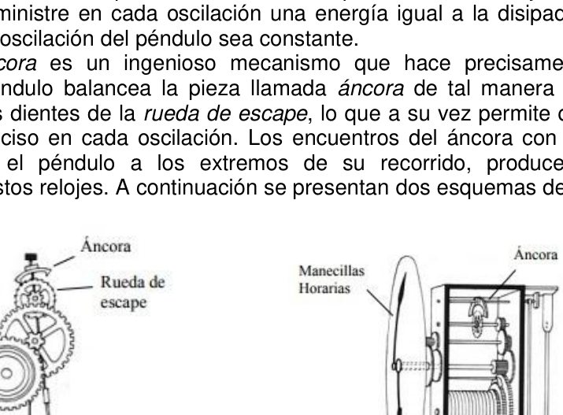
Topic: Oscillations & Waves Metodi: Simple Harmonic Motion Analysis, Conservation of Energy Competenze: Physical Reasoning, Mathematical Modeling Objects: Pendulum, Gear Fonte: Testo (PDF) — p.5
L’esuscita di ancoraggio
PT96. Scuola ORT Sede Almagro
Città di Buenos Aires.
Come si sa, le oscillazioni di un pendolo sono isocroni, cioè la durata delle le oscillazioni sono le stesse quando queste sono piccole. Per questo motivo, sono idonee come riferimento per la misurazione del tempo in orologi. Tuttavia, le oscillazioni di un Il pendolo reale è sempre ammortizzato, perché ci sono sempre perdite energetiche che le loro larghezza si riducono gradualmente. Quindi, la sua applicazione su un orologio richiede un dispositivo che fornisce a ogni oscillazione un’energia uguale a quella dissipata, in modo che che l’ampiezza di oscillazione del pendolo sia costante. L’esplosione di ancore è un meccanismo ingegnoso che fa proprio questo. El Il movimento del pendolo oscilla la parte chiamata ancoraggio in modo tale che si lavora e La ruota di uscita si staccava successivamente, permettendo alla ruota di girare un angolo preciso in ogni oscillazione. Gli incontri dell’ancora con la ruota di Esce, quando il pendolo arriva alle estremità del suo percorso, produce il tic-tac caratteristica di questi orologi. Qui di seguito sono presentati due schemi di un orologio per all’interno:
OAF 2017 - 89 Come si può vedere nella figura, il pendolo è costituito da una massa nota Situata all’estremità di un bastone metallico. La pesante è una massa che si appende da un filo rotolato in un cilindro rotativo, al quale vengono collegati con i guarnizioni
- Il mio orologio. Il peso scende molto lentamente, facendo girare i guanti e le macchine. Le manipolazioni, e perdendo energia potenziale che, in parte, viene trasferita al pendolo. Questa è la mia . Il peso è quindi la “fonte di alimentazione” energetica del nostro orologio. Il meccanismo di scarico è costituito da una ruota con denti di speciale taglio, collegata con i dispositivi adatti all’asse delle aghi e al peso. L’ancora oscilla solidariamente con il pendolo e le sue estremità contattano i denti della ruota di scarico alla fine di ogni semiscilazione. Il sistema ha una duplice funzione: da una parte controlla il movimento del orologio lasciando passare un singolo dente della ruota ogni oscillazione completa del pendolo, in modo che il sistema ruota l’angolo stesso in ogni periodo; peraltro, a ogni contatto la ruota dà un piccolo impulso all’ancora, e per La portata del pendolo è di circa un milione di metri. delle loro oscillazioni. In ogni semiscilazione, la ruota di scarico resta in contatto con l’ancora. per un piccolo intervallo di tempo, durante il quale il sistema non gira. Il resto del Il tempo gira liberamente, azionato dalla discesa del peso, e con esso tutto il sistema. di ingranaggi e delle maniglie del proprio orologio. Così il peso scende. lentamente, a piccoli salti sempre uguali. L’energia potenziale che perde è trasferisce l’energia a ogni oscillazione, e Il sistema di ingranaggi per compensare le perdite di attrito.
a) Sapendo che il pendolo dell’orologio oscilla a metà di un secondo e che il campo La gravità terrestre è di g=9.8 𝑚 s2, determinare la lunghezza della canna metallica. b) Determinare l’energia meccanica del sistema in base ai dati e alla amplitudine di oscillazione. c) dimostrare che, per piccole oscillazioni, l’energia meccanica è proporzionale al quadrato dell’ampiezza. d) Supponendo che il peso scenda da una certa altezza in un tempo τ, determinare il La forza di lavoro e calcolare la potenza media dissipata. e) Calcolare il rapporto tra le velocità angolari della ruota di scarico, ωa, e di orologio, ωr in funzione della lunghezza L della battuta metallica e il numero di denti N della ruota di scarico. f) Supponendo che il pendolo non sia più alimentato e che l’ampiezza diminuisca con ogni oscillazione. Se dopo un oscillazione si ha una frazione γ della L’energia iniziale, determinare il numero di oscillazioni n necessarie per L’ampiezza finale è la metà dell’ampiezza iniziale.
Topic: Oscillations & Waves Metodi: Simple Harmonic Motion Analysis, Conservation of Energy Competenze: Physical Reasoning, Mathematical Modeling Objects: Pendulum, Gear Fonte: Testo (PDF) — p.5
The anchorage exhaust
PT96. School ORT Headquarters Almagro
City of Buenos Aires.
As is known, the oscillations of a pendulum are isochron, i.e. the duration of the pendulum. oscillations are the same when these are small. For this reason, they are ideal as reference for measuring time on clocks. However, the oscillations of a The actual pendulum is always cushioned, because there are always energy losses that They gradually reduce their width. Therefore, its application on a clock requires a A device that provides at each oscillation an energy equal to the dissipation, so that the width of oscillation of the pendulum is constant. Anchor escape is an ingenious mechanism that does just that. El The pendulum movement swayes the piece called the anchor in such a way that it works and It untied successive teeth from the exhaust wheel, which in turn allowed the wheel to rotate a precise angle at each oscillation. The encounters of the anchor with the wheel of The pendulum reaches the ends of its course, producing the tic-tac. The characteristic of these watches. The following are two schemes for a clock by inside:
The Commission shall adopt implementing acts in accordance with Article 21 of the Financial Regulation. As can be seen in the figure, the pendulum is made up of a known mass. It’s placed at the end of a metal rod. The weight is a mass that hangs from a wire wrapped in a rotating cylinder to which the needles are connected by gears The clock. The weight drops very slowly, turning the gears and the gears. And then you lose some potential energy, which is transferred to the pendulum. This one . Weight is therefore the “power source” of the clock’s energy. The exhaust mechanism is made up of a wheel with special carved teeth, connected by gears appropriate to the needle axis and the weighing. The anchor . It oscillates solidly with the pendulum and its ends contact the teeth of the BAR exhaust wheel at the end of each semi-swing. The system has a dual function: On one hand it controls the movement of the clock by letting a single tooth of the wheel pass through. Each full swing of the pendulum, so that the system turns the same angle at Each period; on the other hand, at each contact the wheel gives a small boost to the anchor, and by The pendulum is designed to compensate for the cushioning and to maintain the width constant. of its oscillations. At each semi-swing, the exhaust wheel is kept in contact with the anchor. for a short period of time, during which the system does not rotate. The rest of the . Time spins freely, driven by the descent of the weight, and with it the whole system. The gears and the clock hands themselves. This way, the weight goes down. Slowly, with small leaps always equal. The potential energy you lose is It transfers to the pendulum itself, to compensate for the energy dissipated in each oscillation, and The Commission has also adopted a proposal for a regulation on the use of the gears to compensate for friction losses.
(a) Knowing that the clock pendulum oscillates halfway in 1 s and that the field Earth’s gravitational pull is g=9.8 𝑚 s2, determine the length of the rod It’s metallic. (b) Determine the mechanical energy of the system based on data and the the amplitude of oscillation. (c) To demonstrate that for small oscillations, mechanical energy is proportional to the square of the width. (d) Assuming that the weight descends a certain height in a time τ, determine the The work of the forces and calculate the average dissipated power. (e) Calculate the ratio of the angular velocities of the exhaust wheel, ωa, and of the clock clock, ωr according to the length L of the metal rod and the number of N teeth on the exhaust wheel. (f) Assuming that the pendulum is no longer powered and the width decreases With every swing. If after a oscillation you have a fraction γ of the The initial energy, determine the number of oscillations n necessary for the The final width is half the initial width.
Topic: Oscillations & Waves Metodi: Simple Harmonic Motion Analysis, Conservation of Energy Competenze: Physical Reasoning, Mathematical Modeling Objects: Pendulum, Gear Fonte: Testo (PDF) — p.5
Medidor de densidad
PT97. Escuela ORT Sede Almagro
Ciudad de Buenos Aires.
En la figura se muestra un prototipo de medidor de densidad. El prototipo es un recipiente con la forma mostrada lleno de un fluido de viscosidad despreciable y de densidad 𝛿𝐿. En el lado izquierdo, a la mitad de la altura del recipiente hay un brazo con un mecanismo que permite insertar un cubo de volumen 𝑉𝑜𝑏𝑗 en el recipiente. En el mismo brazo, hay un mecanismo que permite acelerar el cubo, sin importar su masa, hasta la misma velocidad 𝑉𝑖. Sobre la pared opuesta al brazo, de altura 2, hay una reglagraduada. Cuando el objeto impacta sobre la pared derecha tocará alguna parte de la escala, los valores de esta escala se corresponden a la densidad del objeto colocado 𝛿𝑂𝑏𝑗.
90 - OAF 2017 a) Hacer dos diagramas de cuerpo libre: en el primero ubicar todas las fuerzas actuantes; en el segundo, solamente la resultante y dar la expresión de la misma (elegir un sentido arbitrario). b) Calcular cuánto tiempo le lleva al dispositivo en medir las densidades. ¿Depende de la densidad del objeto colocado? c) Calcular las densidades máxima y mínima que el dispositivo permite medir. Indique qué valor de densidad debe ir indicado en la regla graduada a una altura del suelo. d) Dar la expresión genérica del punto de impacto. ¿Sirve esta ecuación para graduar la regla? En caso de que sí, despejar la relación entre el punto de impacto (𝑦𝑖𝑚) y la densidad del objeto colocado (𝛿𝑜𝑏𝑗). e) Un objeto extremadamente denso se coloca en el dispositivo, su densidad es tal que el objeto no alcanza a impactar la regla, sino que queda sobre el suelo del dispositivo a una distancia 𝑑/2 del extremo inferior izquierdo. ¿Se puede indicar su densidad sabiendo esto? f) Al romperse el dispositivo que permite acelerar a todos los objetos a la misma velocidad, se reemplaza al mismo por un resorte de constante 𝐾, que en cada lanzamiento se comprime 𝛥𝑥. ¿Es ahora la velocidad de salida 𝑉𝑖 la misma para todos los objetos? Dar su expresión. Ajustar la expresión genérica del punto de impacto para que funcione con el nuevo mecanismo.
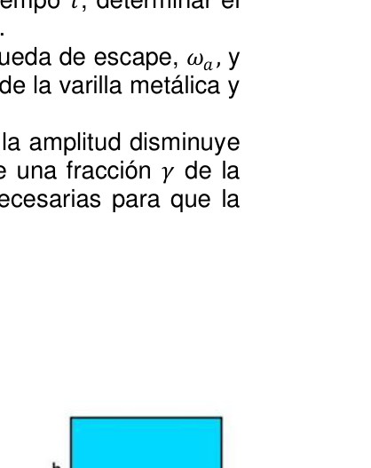
Topic: Fluid Mechanics, Newtonian Mechanics Metodi: Hydrostatic Equilibrium, Kinematic Equations Competenze: Physical Reasoning, Mathematical Modeling Objects: Container, Spring Fonte: Testo (PDF) — p.5
Mettore di densità
PT97. Scuola ORT Sede Almagro
Città di Buenos Aires.
La figura mostra un prototipo di misurazione di densità. El prototipo è un recipiente con la forma mostrata piena di un fluido di viscosità scarsa e di densità δL. Al lato. Sulla sinistra, a metà della altezza del recipiente c’è un braccio con un meccanismo che consente di inserire un cubo di volume Vobj in il contenitore. Nello stesso braccio, c’è un meccanismo che permette di accelerare il cubo, indipendentemente dalla massa, fino alla stessa velocità. velocità Vi. Sull’opposto del muro, alto 2, c’è una regallada. Quando l’ oggetto colpisce il muro Giusto toccherà qualche parte della scala, i valori di questo La scala corrisponde alla densità dell’oggetto collocato δObj.
90 - OAF 2017 a) Fare due diagrammi di corpo libero: nella prima, localizzare tutte le forze. La seconda è la sola espressione della stessa. (scelta un senso arbitrario). b) Calcolare quanto tempo il dispositivo deve impiegare per misurare le densità. Dipende? della densità dell’oggetto posto? c) Calcolare le densità massime e minime che il dispositivo consente di misurare. Indicare quale valore di densità deve essere indicato nella regola graduale a un’altezza
- dal pavimento. d) Esprimere genericamente il punto di impatto. Questa equazione serve a gradire la regola? In caso di sì, chiarire la relazione tra il punto di l’impatto (yim) e la densità dell’oggetto posizionato (δobj). e) Un oggetto estremamente denso viene inserito nel dispositivo, la densità è tale che l’oggetto non riesce a colpire la regola, ma rimane sul suolo del dispositivo a distanza d/2 dall’estremità inferiore sinistra. Si può indicare la sua densità sapendo questo? f) Se si rompe il dispositivo che permette di accelerare tutti gli oggetti alla stessa velocità velocità, viene sostituito lo stesso da una sorgente di costante K, che in ogni lancio viene compresso Δx. E’ ora la velocità di uscita V la stessa per tutti gli oggetti? Esprimere la sua voce. Aggiustare l’espressione generica del punto di riferimento l’impatto per funzionare con il nuovo meccanismo.
Topic: Fluid Mechanics, Newtonian Mechanics Metodi: Hydrostatic Equilibrium, Kinematic Equations Competenze: Physical Reasoning, Mathematical Modeling Objects: Container, Spring Fonte: Testo (PDF) — p.5
The following information shall be provided:
PT97. School ORT Headquarters Almagro
City of Buenos Aires.
A prototype density meter is shown in the figure. El Prototype is a container with the shape shown full of a a fluid of negligible viscosity and density δL. On the side . Left, halfway up the container is an arm with a mechanism that allows a Vobj volume cube to be inserted into the container. In the same arm, there’s a mechanism that It allows you to accelerate the cube, regardless of its mass, to the same size. speed Vi. On the wall opposite the arm, height 2, there is A regulated one. When the object hits the wall Right will touch some part of the scale, values of this The scale corresponds to the density of the object placed δObj.
The Commission shall adopt delegated acts in accordance with Article 21 of this Regulation. a) Make two free-body diagrams: in the first place all forces The second is the resulting and giving expression to the resulting. (choose an arbitrary sense). (b) Calculate how long it takes the device to measure densities. It depends. of the density of the object placed? (c) Calculate the maximum and minimum densities that the device can measure. Indicate which density value should be indicated in the graduated at a height rule
- From the ground. (d) Give the generic expression of the impact point. Does this equation serve to Graduate the rule? If yes, clear the relationship between the point of impact (yim) and density of the placed object (δobj). (e) An extremely dense object is placed on the device, its density being such that The object does not reach the impact of the rule, but remains on the ground of the device at a distance of d/2 from the lower left end. Can you indicate? your density knowing this? (f) When the device is broken which allows all objects to accelerate to the same speed speed, it is replaced by a spring of constant K, which at each The launch is compressed to Δx. Is the output speed now the same as I saw for All the objects? Give her expression. Adjust the generic expression of the point of impact to make it work with the new mechanism.
Topic: Fluid Mechanics, Newtonian Mechanics Metodi: Hydrostatic Equilibrium, Kinematic Equations Competenze: Physical Reasoning, Mathematical Modeling Objects: Container, Spring Fonte: Testo (PDF) — p.5
PT98. Escuela ORT Sede Almagro
Ciudad de Buenos Aires.
Una burbuja de jabón esférica de radio 𝑅0 tiene en su interior aire de densidad 𝜌𝑖 a
temperatura 𝑇𝑖. Se sabe que la burbuja se encuentra rodeada por aire de densidad 𝜌𝑎 a
temperatura 𝑇𝑎 y presión atmosférica 𝑃𝑎. La superficie de jabón tiene una tensión
superficial 𝛾, densidad 𝜌𝑠 y grosor 𝑡. Suponiendo que la masa y la densidad del jabón no
cambia con la temperatura y que 𝑅0 ≫𝑡.
a) Calcular la relación entre 𝑃𝑎 y 𝜌𝑖 sabiendo que la burbuja se mantiene estable y
no explota.
b) Encontrar una expresión para
𝜌𝑖𝑇𝑖
𝜌𝑎𝑇𝑎 en función de los datos.
c) ¿Qué condición debe verificar la temperatura inicial 𝑇𝑖 para que la burbuja flote
en el aire?
d) Si se desprecia la tensión superficial y se considera que la esfera tiene una
carga eléctrica uniforme 𝑞, encontrar el nuevo radio 𝑅1 en función de los datos
del problema.
Determinar qué condición debe cumplir 𝑞 para que la burbuja cargada flote en el aire.
Topic: Fluid Mechanics, Thermodynamics Metodi: Hydrostatic Equilibrium, Ideal Gas Law Competenze: Physical Reasoning, Mathematical Modeling Objects: Bubble, Gas Fonte: Testo (PDF) — p.5
PT98. Scuola ORT Sede Almagro
Città di Buenos Aires.
Una bolla di sapone sferica a radio R0 ha all’interno aria di densità ρi a Temperatura Ti. La bolla è conosciuta per essere circondata da aria di densità ρa a Temperatura Ta e pressione atmosferica Pa. La superficie del sapone ha una tensione. superficiale γ, densità ρs e spessore t. Supponendo che la massa e la densità del sapone non La temperatura varia e R0 ≫t. a) Calcolare il rapporto tra Pa e ρi sapendo che la bolla è mantenuta stabile e Non esplodere. b) Trovare un’espressione per Rt
- l’esistenza di un’organizzazione di ricerca e di sviluppo. c) Che condizione deve verificare la temperatura iniziale Ti per far flotare la bolla
- In aria? d) Se si disprezza la tensione superficiale e si ritiene che la sfera abbia una Carga elettrica uniforme q, trovare il nuovo raggio R1 in base ai dati Il problema. Determinare quali condizioni devono essere soddisfatte per far fluttuare la bolla carica.
Topic: Fluid Mechanics, Thermodynamics Metodi: Hydrostatic Equilibrium, Ideal Gas Law Competenze: Physical Reasoning, Mathematical Modeling Objects: Bubble, Gas Fonte: Testo (PDF) — p.5
PT98. School ORT Headquarters Almagro
City of Buenos Aires.
A spherical R0-ray soap bubble has air density ρi to The temperature is Ti. The bubble is known to be surrounded by density air ρa to Temperature Ta and atmospheric pressure Pa. The soap surface has a tension. surface γ, density ρs and thickness t. Assuming the mass and density of the soap are not The temperature changes and R0 ≫t. (a) Calculate the relationship between Pa and ρi knowing that the bubble remains stable and It doesn’t explode. (b) Find an expression for The following is the list of the The data are based on the data. (c) What condition should the initial temperature Ti check for the bubble to float in the air? (d) If the surface tension is neglected and the sphere is considered to have a uniform electrical charge q, find the new R1 radius based on the data The problem. Determine what condition must be met for the charged bubble to float in the air.
Topic: Fluid Mechanics, Thermodynamics Metodi: Hydrostatic Equilibrium, Ideal Gas Law Competenze: Physical Reasoning, Mathematical Modeling Objects: Bubble, Gas Fonte: Testo (PDF) — p.5
Tarzan y Jane
PT99. Colegio Pablo Apóstol - Colegio del Sol
Yerba Buena y San Miguel, Tucumán.
Las aventuras de Tarzán y Jane en su Isla.
Jane, cuya masa es 50.0kg necesita columpiarse a lo largo de un río (de ancho D) lleno
de cocodrilos comedores de personas para salvar a Tarzán del peligro. Además, Jane
debe columpiarse contra un viento que ejerce una fuerza horizontal constante F
sobre la soga de longitud L y que inicialmente está a un ángulo respecto de la
vertical como se muestra en la Figura. Suponiendo D 50.0m, F 110N, L 40.0m y
50.0º
OAF 2017 - 91
-
Calcule la mínima velocidad con la que Jane debe comenzar a columpiarse para conseguir llegar hasta Tarzán. (Ayuda: primero determine la energía potencial asociada con la fuerza del viento).
-
Una vez que el rescate se consiguió, Tarzán y Jane deben volver a la otra orilla. Calcule la nueva velocidad mínima con la que deben comenzar a balancearse asumiendo que la masa de Tarzán es de 80.0kg .
Más tarde, Tarzán se pone a juntar cocos en lo alto de una palmera de 20.0m de altura justo cuando uno se cae y se dirige hacia la desprevenida Jane de 1.75 m de altura parada justito debajo de la palmera.
- ¿A qué altura del suelo puede estar el coco antes de que sea demasiado tarde para que Tarzán desde arriba le advierta a Jane que se corra? Suponga que Jane requiere 0.300seg para responder a la advertencia.
Resulta que la isla de Tarzán y Jane se encuentra en medio de una zona de guerra. Un barco enemigo se encuentra al Oeste de la montañosa isla como se muestra en la Figura. Puede maniobrar hasta un rango de 2500m de la base de la montaña de 1800m de altura y disparar proyectiles con una rapidez inicial de 250m/s . Si la costa Este de la isla está horizontalmente a 300m del pico:
- Encontrar las distancias a la costa Este en las cuales un barco puede estar resguardado de los bombardeos de la nave enemiga.
92 - OAF 2017 He
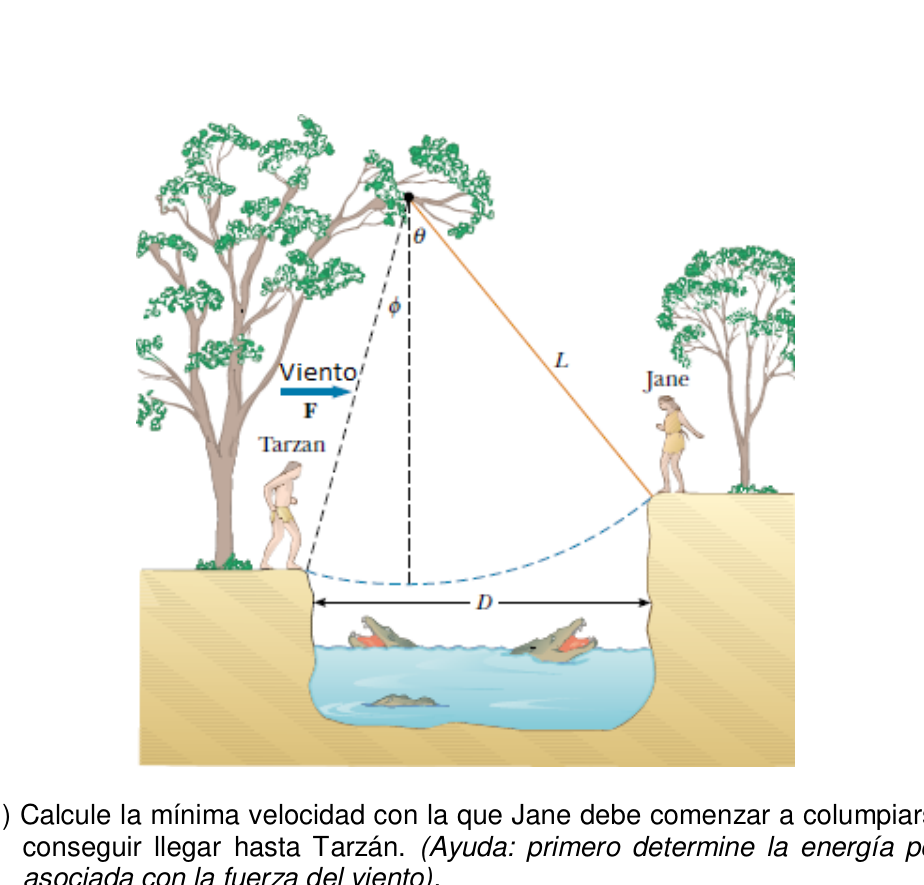
Topic: Conservation of Energy, Newtonian Mechanics Metodi: Conservation of Energy, Kinematic Equations Competenze: Physical Reasoning, Mathematical Modeling Objects: Pendulum, Projectile Fonte: Testo (PDF) — p.5
Tarzan e Jane
PT99. Colegio Paolo Apóstol - Colegio del Sole
Erba Buena e San Miguel, Tucumán.
Le avventure di Tarzan e Jane sull’isola. Jane, che pesa 50 kg, deve andare a galleggiare lungo un fiume pieno. dei coccodrilli che mangiano le persone per salvare Tarzan dal pericolo. E poi, Jane. deve essere oscillato contro un vento che esercita una forza orizzontale costante F su una corda di lunghezza L che è inizialmente all’angolo rispetto alla Verticale come mostrato nella Figura. Supponendo D 50.0m, F 110N, L 40.0m e 50.0º
OAF 2017 - 91
-
Calcola la velocità minima con cui Jane deve iniziare a girare per riuscire a raggiungere Tarzan. (Aiuto: prima determinare l’energia potenziale associata alla forza del vento).
-
Una volta che il salvataggio è stato ottenuto, Tarzan e Jane devono tornare dall’altra riva. Calcola la nuova velocità minima con cui devono iniziare a sbalzare. Supponendo che la massa di Tarzan sia di 80,0 kg .
Più tardi, Tarzan si mette a raccogliere coccoli in cima a una palma di 20,0 m di altezza. Alto appena quando si cade e si dirige verso l’inattesa Jane di 1.75 m di altezza. Altizza a piedi proprio sotto la palma.
- A che altezza del suolo può essere il cocco prima che sia troppo tardi? Per far sì che Tarzan, dall’alto, avverta Jane di correre? Supponiamo che Jane richiede 0,300 secondi per rispondere all’avvertimento.
Risulta che l’isola di Tarzan e Jane si trova in mezzo a una zona di guerra. Un Nave nemiche si trova ad ovest dell’isola montuosa come mostrato in
- Figura. Può manovrare fino a un raggio di 2500m dalla base del monte di 1800 metri di altezza e lanciare proiettili con una velocità iniziale di 250m/s . Se la costa Questo dell’isola è orizzontale a 300 m dal picco:
- Trovare le distanze verso la costa orientale in cui un’imbarcazione può essere risparmiato dai bombardamenti della nave nemica.
92 - OAF 2017 He
Topic: Conservation of Energy, Newtonian Mechanics Metodi: Conservation of Energy, Kinematic Equations Competenze: Physical Reasoning, Mathematical Modeling Objects: Pendulum, Projectile Fonte: Testo (PDF) — p.5
The Commission shall adopt implementing acts in accordance with Article 21 of the Financial Regulation.
PT99. The school of Paul the Apostle - The school of the sun
Herba Buena and San Miguel, Tucumán.
Tarzan and Jane’s adventures on their island. Jane, whose mass is 50.0kg needs to swing along a full river (width D) of crocodiles eating people to save Tarzan from danger. Besides, Jane. It must swing against a wind exerting a constant horizontal force F on the length L rope and which is initially at an angle to the vertical as shown in Figure 1. Suppose D 50.0m, F 110N, L 40.0m and 50.0º
The Commission shall adopt delegated acts in accordance with Article 21 of the Financial Regulation.
-
Calculate the minimum speed at which Jane must start to swing to I’ll get to Tarzan. (Help: first determine the potential energy associated with the force of the wind).
-
Once the ransom is obtained, Tarzan and Jane must return to the other shore. Calculate the new minimum speed at which they must start to swing . Assuming Tarzan ‘s mass is 80.0 kg .
Later, Tarzan sets about to collect coconuts on top of a 20-meter-high palm tree. Height just as you fall and head towards the unconscious 1.75 m Jane of Height standing just below the palm tree.
- How high can the coconut be before it’s too late? So Tarzan from above warns Jane to run? Suppose that Jane needs 0.300 seconds to respond to the warning.
Turns out Tarzan and Jane Island is in the middle of a war zone. Un enemy ship is west of the mountainous island as shown in the It’s a figure. It can maneuver up to a range of 2500m from the base of the mountain of 1800m high and firing shells at an initial speed of 250m/s . If the coast This one of the island is horizontally 300m from the peak:
- Find the distances to the east coast where a ship can be. shielded from enemy ship bombardment.
The Commission shall adopt delegated acts in accordance with Article 21 of this Regulation. He
Topic: Conservation of Energy, Newtonian Mechanics Metodi: Conservation of Energy, Kinematic Equations Competenze: Physical Reasoning, Mathematical Modeling Objects: Pendulum, Projectile Fonte: Testo (PDF) — p.5
Los locos experimentos de Lucrecio
PT100. Colegio Pablo Apóstol
Yerba Buena, Tucumán.
El pequeño Lucrecio y sus locos experimentos. Lucrecio es un pequeño y creativo niño que sueña convertirse en Físico. Se pasa las tardes jugando y haciendo experimentos, por ejemplo una tarde quiso sacar una manzana de un árbol sin tener que treparse al mismo. Se sentó en una silla conectada a una soga que pasa por una polea sin rozamiento como se muestra en la Figura. Lucrecio tira del extremo libre de la soga con tal fuerza que el dinamómetro de resorte marca 250 N . Si su peso es de 320 N y el de la silla 160N : a) Dibuje diagramas de cuerpo libre para Lucrecio y la silla considerándolos como sistemas separados y otro como si fuesen el mismo sistema (En total son 3 diagramas). b) Muestre que la aceleración del sistema es hacia arriba y calcúlela. c) Encuentre la Fuerza que Lucrecio hace sobre la silla.
Luego coloca una moneda de masa 3.10g sobre un pequeño bloque de 20.0g apoyado sobre un disco giratorio como se muestra en la Figura. Si los coeficientes de roce entre el bloque y el disco son 0.750 (estático) y 0.640 (dinámico) mientras que entre la moneda y el bloque son 0.450 (dinámico) y 0.520 (estático): d) Calcular la máxima frecuencia de rotación (en revoluciones por minuto) que puede tener el disco antes de que el bloque o la moneda comiencen a deslizar.
A continuación se pone a experimentar con un resorte liviano de constante
k = 90.0N/m que descansa verticalmente sobre una mesa. Infla un globo de 2.00 g
lleno con He ( Hs0.180kg/m3) hasta un volumen final de 5.00m3 y lo conecta con
el resorte, haciendo que este se estire como se muestra en la Figura.
e) Encuentre la distancia L cuando el sistema está en equilibrio.
OAF 2017 - 93 Finalmente se pone a jugar con un tanque de agua que posee una válvula en el fondo (ver Figura).
f) Calcular la máxima altura alcanzada por el chorro de agua que sale por la derecha del tanque al abrir la válvula. Suponga h = 10.0m, L = 2.00m y 30.0º y que el área en el punto A es muchísimo más grande comparada a la del punto B.
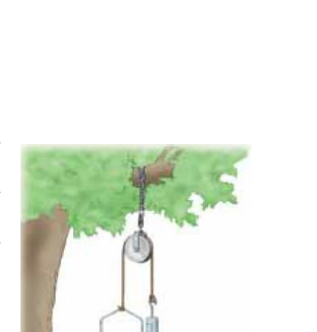
Topic: Newtonian Mechanics, Fluid Mechanics Metodi: Free-Body Diagram, Bernoulli’s Equation Competenze: Physical Reasoning, Mathematical Modeling Objects: Pulley, Disk, Spring Fonte: Testo (PDF) — p.5
I folli esperimenti di Lucrezio
PT100. Colegio Paolo l’apostolo
- Buona erba, Tucumán.
Il piccolo Lucrezio e i suoi folli esperimenti. Lucrezio è un bambino creativo e piccolo che sogna. diventare fisico. Passa le sere a giocare e a fare un’altra sera ha voluto fare un’esperienza. Appolo di un albero senza dover salire. Se Siede su una sedia connessa a una corda che passa attraverso una Pulla senza rottura come mostrato nella figura. Lucrezio tira l’estremità libera della corda con una forza tale che il dinamometro di scarico di 250 N . Se il suo peso è di 320 N e quello della sedia 160N: a) Disegna diagrammi di corpo libero per Lucrezio e la il sedile considerandoli come sistemi separati e un altro Come se fossero lo stesso sistema (in totale sono 3
- di cui al capitolo 1. b) Mostra che l’accelerazione del sistema è verso
- Si, si, si. - Si, si. C) Trova la Forza che Lucrezio fa sulla sedia.
Poi metti una moneta di massa di 3,10g su un piccolo blocco di 20,0g appoggiato su un disco La rotazione è come mostrato nella figura. Se i coefficienti di rottura tra il blocco e il disco sono 0.750 (statico) e 0.640 (dinamico) mentre tra la moneta e il blocco sono 0.450 (dinamica) e 0,520 (statico): d) Calcolare la frequenza massima di rotazione (in revoluzioni al minuto) che può avere il disco prima che il blocco o la La moneta inizia a scivolare.
Poi viene sperimentato con una leggera sorgente di costante k = 90,0 N/m che si riposa verticalmente su un tavolo. Infla un pallone di 2,00 g riempito di He (Hs0.180kg/m3) fino a un volume finale di 5.00m3 e collegato con la primavera, facendoli allungare come mostrato nella figura.
e) Trova la distanza L quando il sistema è in equilibrio.
OAF 2017 - 93 Alla fine si mette a giocare con un serbatoio d’acqua che possiede una valvola in fondo. (vedi figura).
f) Calcolare l’altezza massima raggiunta dal jet d’acqua che esce dalla destra del serbatoio quando si apre la valvola. Supponiamo che h = 10,0m, L = 2,00m e 30.0o e che l’area del punto A è molto più grande rispetto a il punto B.
Topic: Newtonian Mechanics, Fluid Mechanics Metodi: Free-Body Diagram, Bernoulli’s Equation Competenze: Physical Reasoning, Mathematical Modeling Objects: Pulley, Disk, Spring Fonte: Testo (PDF) — p.5
The crazy Lucretian experiments.
PT100. Paul the Apostle College
It’s good grass, Tucumán.
Little Lucretius and his crazy experiments. Lucrecio is a small and creative child who dreams . become a physicist. He spends the evenings playing and making Experiments, for example one afternoon he wanted to take out a apple of a tree without having to climb it. Se He sat in a chair connected to a rope passing through a The resulting powder is a powdered powder with a sweet taste. Lucretius . pull the free end of the rope with such force that the spring dynamometer with a 250 N mark . If its weight is 320 N and the 160N chair: (a) Draw free body diagrams for Lucretius and the Chair considering them as separate systems and another As if they were the same system (Total 3 (see diagrams). (b) Show that the system acceleration is towards Up and calculate it. c) Find the Force that Lucretius makes on the chair.
Then put a 3.10g mass coin on a A small block of 20.0g resting on a disc. rotational as shown in Figure 1. If the friction coefficients between the block and the disc They are 0.750 (static) and 0.640 (dynamic) while between the currency and the block are 0.450 (dynamic) and 0.520 (static): (d) Calculate the maximum rotation frequency (in revolutions per minute) that you can Have the disk before the block or the currency starts to slip.
Then he goes on to experiment with a light spring of constant k = 90.0 N/m lying vertically on a table. It inflates a 2.00 g balloon. filled with He (Hs0.180kg/m3) to a final volume of 5.00m3 and connected to The spring, causing it to stretch as shown in Figure.
(e) Find the distance L when the system is in equilibrium.
The Commission shall adopt delegated acts in accordance with Article 21 of the Financial Regulation. He finally gets to play with a water tank that has a valve in the bottom . (see Figure).
(f) Calculate the maximum height reached by the water jet exiting the waterway. Right of the tank when opening the valve. Suppose h = 10.0m, L = 2.00m and 30.0o and that the area at point A is much larger than the one in point B.
Topic: Newtonian Mechanics, Fluid Mechanics Metodi: Free-Body Diagram, Bernoulli’s Equation Competenze: Physical Reasoning, Mathematical Modeling Objects: Pulley, Disk, Spring Fonte: Testo (PDF) — p.5
Circuitos y cortocircuitos
PT101. Colegio Pablo Apóstol
Yerba Buena, Tucumán.
Circuitos y cortocircuitos. a) En el siguiente circuito calcule la potencia disipada por cada resistencia
Dos resistencias conectadas en serie tienen una resistencia equivalente de 690 Ω mientras que si se las conecta en paralelo su resistencia equivalente es 150 Ω.
b) Encuentre el valor de cada resistencia.
Un típico problema al que uno se enfrenta cuando quiere medir el voltaje y la corriente en un circuito real utilizando un voltímetro y un amperímetro es elegir la forma en la que va a conectar los instrumentos para introducir el menor error posible. Si en un circuito simple compuesto por una fuente y una resistencia se desea medir la tensión y corriente de forma simultánea, en general se presentan dos alternativas de montaje del circuito como se muestra en la Figura:
94 - OAF 2017 ¿Cuál es la diferencia entre conectar de un modo u otro? En principio, en términos de elementos de circuito ideales, no habría diferencia, pero es distinto el caso si se considera que el amperímetro y el voltímetro no son ideales y tienen resistencias internas (RVOLT y RAMP respectivamente).
c) Encuentre para ambos circuitos las expresiones del voltaje y corriente medidos por cada instrumento considerando las resistencias internas RVOLT y RAMP en serie con cada instrumento.
Como se ve el error sistemático principal del circuito (a) es que, por interacción con el
amperímetro, la tensión que mide el voltímetro no es la que está aplicada a la resistencia
R. El error sistemático principal del circuito (b), por su parte, es que por interacción con el
voltímetro, la corriente que mide el amperímetro no es la que pasa por la resistencia R.
Entonces ¿cuál de los dos circuitos conviene elegir?
Razonando sobre la base de esta discusión, podemos ver que el error de interacción del
circuito (a) la caída de tensión medida por el voltímetro será tanto más distinta de la caída
de tensión en R cuanto más grande sea y cuanto más chica sea RAMP. Entonces
intuitivamente podemos decir que el error relativo de interacción de este circuito está
dado por a = RAMP / R.
Por su parte, en el circuito (b) será tanto mayor cuanta más corriente se derive por la
rama del voltímetro. Esta corriente será más grande cuanto mayor sea la resistencia R y
cuanto menor sea RVOLT. Es decir que, intuitivamente, el error relativo de interacción de
este circuito está dado por b = R / RVOLT.
-
Represente gráficamente el comportamiento de a y b como función de R y demuestre que el valor de resistencia crítica para la cual ambos son iguales es 𝑅𝑐= 𝑅𝐴𝑀𝑃 𝑅𝑉𝑂𝐿𝑇 .
-
Calcule dicho valor teniendo en cuenta que los valores típicos de resistencias internas para un multímetro digital son RVOLT = 10 MΩ y RAMP = 1 Ω.
Finalmente siempre que:
𝑅 > 𝑅𝐶 => Circuito (a)
𝑅 < 𝑅𝐶 =>Circuito (b)
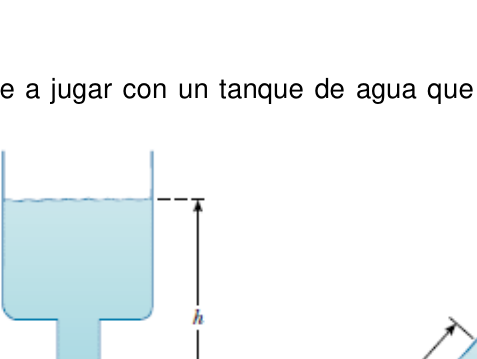
Topic: Circuits Metodi: Equivalent Circuit Reduction, Kirchhoff’s Laws, Error Propagation Competenze: Physical Reasoning, Mathematical Modeling Objects: Resistor, Galvanometer Fonte: Testo (PDF) — p.5
Circuiti e shortcircuiti
PT101. Colegio Paolo l’apostolo
- Buona erba, Tucumán.
Circuiti e short-circuiti. a) Nel circuito successivo calcoli la potenza dissipata per ogni resistenza
Due resistenze collegate in serie hanno una resistenza equivalente di 690 Ω mentre se le si collegano in parallelo la resistenza equivalente è di 150 Ω.
b) Trova il valore di ogni resistenza.
Un problema tipico che si trova quando si vuole misurare la tensione e la corrente in Un circuito reale usando un voltometro e un ampere è scegliere il modo in cui va collegare gli strumenti per introdurre il minor errore possibile. Se in un circuito semplice composto da una fonte e una resistenza si desidera misurare la tensione e il corrente di In questo caso, la struttura di montaggio del circuito è composta da due alternative: si mostra nella Figura:
94 - OAF 2017 Qual è la differenza tra collegare in un modo o nell’altro? In linea di principio, in termini di Gli elementi di circuito ideali non sarebbero differenti, ma è diverso il caso se si considera che l’amperiometro e il voltometro non sono ideali e hanno resistenze interne (RVOLT e RAMP rispettivamente).
c) Trova per entrambi i circuiti le espressioni di voltage e corrente misurate per ogni strumento considerando le resistenze interne RVOLT e RAMP in serie con ogni strumento.
Come si vede, l’errore sistematico principale del circuito (a) è che, per interazione con il Amperimetro, la tensione che misura il voltometro non è quella applicata alla resistenza R. Il principale errore sistematico del circuito (b) è che, per interazione con il circuito, il circuito è stato Voltímetro, la corrente che misura l’ampievere non passa attraverso la resistenza R. Allora quale dei due circuiti è meglio scegliere? Ragionando sulla base di questa discussione, possiamo vedere che l’errore di interazione del (a) la caduta di tensione misurata dal voltímetro sarà tanto più diversa dalla caduta di tensione in R più grande è e più piccolo è RAMP. Allora… Intuitivamente possiamo dire che l’errore relativo di interazione di questo circuito è dato da a = RAMP / R. Il circuito (b) sarà maggiore il più corrente viene derivata dal circuito (b) il ramo del voltometro. Questo corrente sarà più grande quanto più grande è la resistenza R e quanto più piccolo sia il RVOLT. In altre parole, l’errore relativo di interazione di Questo circuito è dato da b = R / RVOLT.
-
Rappresenta graficamente il comportamento di a e b come funzione di R e dimostra che il valore di resistenza critica per il quale entrambi sono uguali è Rc = RAMP RVOLT .
-
Calcolare tale valore tenendo conto che i valori tipici di resistenza Le dimensioni interne di un multimetro digitale sono RVOLT = 10 MΩ e RAMP = 1 Ω.
Infine, se: R > RC => Circuito (a) R < RC =>Circuito (b)
Topic: Circuits Metodi: Equivalent Circuit Reduction, Kirchhoff’s Laws, Error Propagation Competenze: Physical Reasoning, Mathematical Modeling Objects: Resistor, Galvanometer Fonte: Testo (PDF) — p.5
Circuits and short circuits
PT101. Paul the Apostle College
It’s good grass, Tucumán.
Circuits and short circuits. (a) In the next circuit calculate the power dissipated for each resistance.
Two resistors connected in series have an equivalent resistance of 690 Ω whereas if connected in parallel their equivalent resistance is 150 Ω.
(b) Find the value of each resistance.
A typical problem that you face when you want to measure the voltage and current in A real circuit using a voltmeter and an amp is choosing the way it goes to connect the instruments to introduce the least possible error. If on a simple circuit composed of a source and a resistor is desired to measure the voltage and current of In the case of the same circuit, two alternatives to the circuit assembly are generally presented: is shown in Figure:
The Commission shall adopt delegated acts in accordance with Article 21 of this Regulation. What’s the difference between connecting one way or another? In principle, in terms of The idea of a perfect circuit would be different, but it is different if you considers that the ampere and voltmeter are not ideal and have internal resistance (RVOLT and RAMP respectively).
(c) Find the measured voltage and current expressions for both circuits for each instrument considering the internal resistance of RVOLT and RAMP in series with each instrument.
As you can see the main systematic error of circuit (a) is that, by interaction with the Amp, the voltage that measures the voltmeter is not the voltage that is applied to the resistance. R. The main systematic error of the circuit (b) is that by interaction with the Volts, the current that measures the ampere is not the current that passes through the R resistance. So which of the two circuits is the best one to choose? On the basis of this discussion, we can see that the error of interaction of the circuit (a) the voltage drop measured by the voltmeter will be as different from the drop The bigger the R and the smaller the RAMP. Then … Intuitively we can say that the relative error of interaction of this circuit is given by a = RAMP / R. In turn, in circuit (b) it will be the higher the more current is derived from the the branch of the voltmeter. This current will be greater the greater the resistance R and The smaller the RVOLT. That is, intuitively, the relative error of interaction of This circuit is given by b = R/RVOLT.
-
Graphically represents the behavior of a and b as a function of R and It shows that the critical resistance value for which both are equal is Rc is RAMP RVOLT .
-
Calculate this value taking into account the typical resistance values The internal values for a digital multimeter are RVOLT = 10 MΩ and RAMP = 1 Ω.
Finally, as long as: R > RC => Circuit (a) R < RC => Circuit (b)
Topic: Circuits Metodi: Equivalent Circuit Reduction, Kirchhoff’s Laws, Error Propagation Competenze: Physical Reasoning, Mathematical Modeling Objects: Resistor, Galvanometer Fonte: Testo (PDF) — p.5
Titania
PT102. Colegio Del Sol
San Miguel, Tucumán.
Titania. El planeta Urano posee 27 lunas. La mayor de ellas se llama Titania, un astro que fue hallado en 1787 por Sir William Herschel, descubridor del planeta y de otro de sus satélites naturales, Oberón. Su nombre se debe a uno de los personajes de la comedia romántica ―Sueño de una noche de verano‖ de Shakespeare. Su tamaño es mediano, tiene de diámetro la mitad del radio de la Tierra, ocupando el octavo lugar dentro de las lunas del Sistema Solar.
Datos Básicos
Distancia media a Urano
436.000 km
Diámetro
1.578 km
Período orbital alrededor de Urano
8,7 días
Período de rotación alrededor de su eje
8,7 días
Masa
3,527 x 1021 Kg
Excentricidad
0,0011
Gravedad
0,38 m/s2
OAF 2017 - 95 Masa de Urano 8,68 x 1025 kg Constante de gravitación universal 6,69 x 10-11 m3/(kg.s2)
Para este satélite calcular:
a) Densidad media del astro
b) Suponiendo que su órbita es perfectamente circular (usar distancia media),
velocidad angular
c) Velocidad tangencial
d) Aceleración centrípeta
e) Si estoy parado en Titania, ¿cuánto valdría la aceleración centrífuga y cuál sería
su dirección? Hacer un esquema
f) Teniendo en cuenta la rotación propia de Titania alrededor de su eje, calcular la
velocidad angular y la velocidad tangencial de un punto sobre el ecuador del
satélite.
g) La velocidad de escape en un satélite es aquella velocidad mínima que le
permite a un objeto superar los efectos gravitatorios de ese satélite y poder salir
del mismo. Es cuando la energía cinética del cuerpo iguala a la energía potencial
gravitatoria a nivel de la superficie del satélite. ¿Cuánto vale la velocidad de
escape para Titania?
h) Urano tarda 84 años en dar una vuelta al Sol, en ese tiempo ¿Cuántas vueltas da
Titania alrededor de Urano en un ciclo completo de Urano alrededor del Sol?
i) La tercera ley de Kepler plantea una relación entre el período orbital y el semieje
mayor de la órbita. La relación está dada por
3
2
2
4
a
GM
T
donde G es la constante
de gravitación universal y M es la masa del cuerpo central, en este caso sería la
masa de Urano. Obtener a, el semieje mayor.
j) Un poco de geometría: la órbita de Titania no es una circunferencia, es una elipse
donde Urano se encuentra en uno de los focos (F). La excentricidad de la órbita
elíptica nos da una idea acerca de la forma, es un valor que varía entre 0 y 1,
cuánto más cerca es el valor a 0, la órbita es más circular, en cambio, si el valor
se acerca a 1, la elipse es más pronunciada y achatada. Para calcular la
excentricidad podemos usar
2
1
a
b
e
Determinar el valor de c y comparar con
el radio de Urano (25.559 km) ¿qué puede concluir? Comparar a y b para tener
una idea de la forma de la órbita.
Topic: Gravitation, Astrophysics Metodi: Kepler’s Laws, Newton’s Law of Gravitation Competenze: Physical Reasoning, Mathematical Modeling Objects: Satellite, Planet Fonte: Testo (PDF) — p.5
Titanico
PT102. Colegio del Sol
San Miguel, Tucumán.
Titanica. Il pianeta Urano possiede 27 lune. La più grande di queste si chiama Titania, una stella che fu Il suo nome è stato scoperto nel 1787 da Sir William Herschel, scopritore del pianeta e di un altro di loro. satelliti naturali, Oberon. Il suo nome deriva da uno dei personaggi della commedia. romantica “Sognare una notte estiva” di Shakespeare. Il suo taglio è medio, Ha il diametro di metà del raggio terrestre, occupando l’ottava posizione tra le altre. le lune del Sistema Solare.
Datos di base Distanza media da Urano 436.000 km Diametro 1.578 km Periodo orbitale attorno ad Urano 8,7 giorni Periodo di rotazione attorno all’asse 8,7 giorni Massa 3,527 x 1021 Kg Eccentricità 0,0011 Gravità 0,38 m/s2
OAF 2017 - 95 Massa di Urano 8,68 x 1025 kg Costante di gravitazione universale 6,69 x 10-11 m3/(kg.s2)
Per questo satellite calcolare: a) Densità media dell’ astro b) Supponendo che la sua orbita sia perfettamente circolare (usare una distanza media), velocità angolare (c) velocità tangenziale d) Accelerazione centripeta e) Se sto in Titania, quanto sarebbe la centrifugata e quanto sarebbe? il suo indirizzo? - Facciamo un schema. f) Considerando la rotazione di Titania intorno al suo asse, calcolare la velocità angolare e velocità tangenziale di un punto sull’equatore del
- satellite. g) La velocità di uscita di un satellite è quella minima che la permette ad un oggetto di superare gli effetti gravitazionali di quel satellite e di poter uscire . di quello stesso. E ’ quando l’ energia cinetica del corpo equa l’ energia potenziale gravità a livello della superficie del satellite. Quanto vale la velocità di Scappa per Titania? h) Urano ha 84 anni per girare il Sole, in quel tempo, quante volte fa Titania attorno ad Urano in un ciclo completo di Urano attorno al Sole? i) La terza legge di Kepler propone una relazione tra il periodo orbitale e il semiezio più grande dell’orbita. La relazione è data da 3 2 2 4 a GM T dove G è la costante La gravità universale e M è la massa del corpo centrale, in questo caso sarebbe la massa di Urano. Ottenere, il semestre maggiore. j) Un po’ di geometria: l’orbita di Titanio non è una circonferenza, è un’ellipse. dove Urano si trova in uno dei foci (F). L’escentricità dell’orbita. L’elliptica ci dà un’idea della forma, è un valore che varia da 0 a 1. Più vicino è il valore a 0, l’orbita è più circolare, invece, se il valore Si avvicina a 1, l’ellipse è più pronunciata e piatta. Per calcolare il eccentricità possiamo usare 2 1 a b e Determinare il valore di c e confrontare con Il raggio di Urano (25.559 km) cosa può concludere? Confrontare a e b per avere un’idea della forma dell’orbita.
Topic: Gravitation, Astrophysics Metodi: Kepler’s Laws, Newton’s Law of Gravitation Competenze: Physical Reasoning, Mathematical Modeling Objects: Satellite, Planet Fonte: Testo (PDF) — p.5
The following table shows the total number of units of the vehicle:
PT102. College of the Sun
San Miguel, Tucumán.
It’s called Titania. The planet Uranus has 27 moons. The largest of these is called Titania, a star that was It was discovered in 1787 by Sir William Herschel, the discoverer of the planet and another of its Natural satellites, Oberon. His name comes from one of the comedy characters. It’s a romantic “Summer night’s dream” by Shakespeare. Its size is medium, It is half the diameter of Earth’s radius, occupying the eighth place among the Earth’s oceans. moons in the solar system.
Basic data Average distance to Uranus 436.000 km Diameters 1.578 km Orbital period around Uranus 8.7 days Period of rotation around its axis 8.7 days Mass 3,527 x 1021 Kg Excentricity . 0,0011 Gravity 0,38 m/s2
The Commission shall adopt delegated acts in accordance with Article 21 of the Financial Regulation. The mass of Uranus 8,68 x 1025 kg Universal gravity constant is 6,69 x 10-11 m3/(kg.s2)
For this satellite calculate: (a) Average star density (b) Assuming its orbit is perfectly circular (using average distance), angular velocity (c) Tangential speed (d) Centripetal acceleration e) If I’m standing on Titania, how much would the centrifugal acceleration be worth and what would it be? Your address? Making a scheme (f) Taking into account Titania’s own rotation around its axis, calculate the angular velocity and tangential velocity of a point above the equator of the satellite. (g) The escape velocity of a satellite is the minimum velocity that it is capable of It allows an object to overcome the gravitational effects of that satellite and be able to exit . of the same. It ‘s when the kinetic energy of the body equals the potential energy . gravity at the surface level of the satellite. How much is the speed of escape to Titania? (h) Uranus takes 84 years to orbit the Sun, in that time how many orbits does it make? Titania around Uranus in a full cycle of Uranus around the Sun? (i) Kepler’s third law poses a relationship between the orbital period and the half-life. greater than the orbit. The relationship is given by 3 2 2 4 a GM T where G is the constant of universal gravity and M is the mass of the central body, in this case it would be the mass of Uranus. Get to, the major semis. j) A little geometry: Titania’s orbit is not a circumference, it’s an ellipse where Uranus is in one of the focuses (F). The eccentricity of the orbit elliptic gives us an idea about the shape, it’s a value that varies between 0 and 1. The closer the value is to 0, the more circular the orbit is, but if the value It’s closer to 1, the ellipse is steeper and flatter. To calculate the We can use eccentricity. 2 1 a b e Determine the value of c and compare with The radius of Uranus (25,559 km) what can you conclude? Comparing a and b to have An idea of the shape of the orbit.
Topic: Gravitation, Astrophysics Metodi: Kepler’s Laws, Newton’s Law of Gravitation Competenze: Physical Reasoning, Mathematical Modeling Objects: Satellite, Planet Fonte: Testo (PDF) — p.5
PT103. Colegio Del Sol
San Miguel, Tucumán.
Un tipo de tostador tiene un elemento de calentamiento hecho de alambre de resistencia de nicromo (aleación níquel-cromo). Cuando el tostador se conecta en primer lugar a una fuente de diferencia de potencial de 120v (y el alambre está a una temperatura de 20º C) la corriente inicial es de 1,80 A.
96 - OAF 2017 Sin embargo, la corriente empieza a disminuir a medida que el elemento de resistencia se calienta, cuando el tostador ha alcanzado su temperatura de funcionamiento final, la corriente ha caído a 1,53A.Se pide: a) Calcular la potencia suministrada al tostador. b) Encontrar el porcentaje de potencia útil del tostador. c) ¿Qué cantidad de energía se disipó si se la mantiene encendida 20 minutos, a partir del estado estacionario? d) El propietario de la tostadora observó que no calentaba lo suficiente y para aumentar la temperatura se le ocurrió las siguientes modificaciones:
- Cortar un pedazo de la resistencia.
- Conectar otra resistencia en paralelo.
- Conectar otra resistencia en serie.
- Sustituir la resistencia por otra de igual longitud y área, pero que posea una
resistividad mayor.
¿Con qué opciones podrá obtener el resultado deseado?
e) Si en la tostadora entran por vez tres porciones que son tostadas en 1,5 minutos (temperatura inicial 18º C) ¿Cuál es el calor específico de la porción, si la temperatura al final de la cocción es de 65º C y posee una masa de 40g? f) La resistividad depende de una serie de factores, uno de los más importante la temperatura del metal. A medida que la temperatura aumenta, sus átomos vibran cada vez con mayor amplitud, por lo tanto los electrones tienen más dificultad para pasar entre estos átomos. El aumento de la dispersión de electrones al aumentar la temperatura da por resultado una mayor resistividad. En el caso de los metales, la resistividad y la temperatura dependen de acuerdo con la siguiente expresión: p = p0 ( 1+ a. (T – T0)), donde p es la resistividad del metal a cierta temperatura T. p0 la resistividad a 20º C. a coeficiente de temperatura de resistividad.
Encuentre la ecuación que relacione la resistencia del metal y la temperatura. g) Calcule la temperatura final del elemento de calentamiento.
P0 = 150. 10-8 .m a = 0,4 10-3 1/ºC
Topic: Circuits, Thermodynamics Metodi: Equivalent Circuit Reduction, First Law of Thermodynamics Competenze: Physical Reasoning, Mathematical Modeling Objects: Resistor, Wire Fonte: Testo (PDF) — p.5
PT103. Colegio del Sol
San Miguel, Tucumán.
Un tipo di tostatore ha un elemento di riscaldamento fatto di filo resistente di nitrogeno (alleazione nickel-chromo). Quando il tostatore si collega prima a una Fonte di differenza di potenziale di 120v (e il filo è a una temperatura di 20°C) Il corrente iniziale è di 1,80 A.
96 - OAF 2017 Tuttavia, la corrente inizia a diminuire quando l’elemento di resistenza quando il tostatore ha raggiunto la temperatura di funzionamento finale, il corrente è scesa a 1,53A. a) Calcolare la potenza fornita al tostatore. b) Trovare la percentuale di potenza utile del tostatore. c) Quanta energia è stata dissipata se tenuta accesa per 20 minuti, a
- Partire dallo stato di stazionariato? d) Il proprietario della tostatrice ha notato che non si riscaldò abbastanza e per aumentare la temperatura ha avuto le seguenti modifiche:
- Tagliare un pezzo di resistenza.
- Connettere un’altra resistenza in parallelo.
- Un’altra resistenza in serie.
- sostituire la resistenza con un’altra di uguale lunghezza e area, ma che possiede una maggiore resistenza. Quali sono le opzioni per ottenere il risultato desiderato? e) Se nella tostatrice entrano a tempo indeterminato tre porzioni che vengono tostate in 1,5 minuti (temperatura iniziale di 18°C) Qual è il calore specifico della porzione, se la La temperatura alla fine della cottura è di 65°C e ha una massa di 40g? f) La resistenza dipende da una serie di fattori, uno dei quali è il temperatura del metallo. Mentre la temperatura aumenta, i suoi atomi vibrano. E’ sempre più ampia, quindi gli elettroni hanno più difficoltà. per passare tra questi atomi. L’aumento della dispersione degli elettroni al aumentare la temperatura dà un’aumento della resistenza. Nel caso di I metalli, la resistenza e la temperatura dipendono da la seguente espressione: p = p0 (1+ a. (T T0)), dove p è la resistività del metallo a una certa temperatura T. p0 resistenza a 20°C. a coefficiente di temperatura di resistenza. Trova l’equazione che correla la resistenza del metallo con la temperatura. g) Calcolare la temperatura finale dell’elemento di riscaldamento.
P0 = 150. 10-8 .m a = 0,4 10-3 1/ºC
Topic: Circuits, Thermodynamics Metodi: Equivalent Circuit Reduction, First Law of Thermodynamics Competenze: Physical Reasoning, Mathematical Modeling Objects: Resistor, Wire Fonte: Testo (PDF) — p.5
PT103. College of the Sun
San Miguel, Tucumán.
A type of toaster has a heating element made of resistance wire. a nickel-chrome alloy; When the toaster first connects to a The power difference source is 120v (and the wire is at a temperature of 20°C) The initial current is 1.80 A.
96 - OAF 2017 However, the current begins to decrease as the resistance element is heated, when the toaster has reached its final operating temperature, the Current has dropped to 1.53A. (a) Calculate the power supplied to the toaster. (b) Find the percentage of useful power of the toaster. (c) How much energy has been dissipated if kept on for 20 minutes, a from the steady state? (d) The owner of the toaster noticed that it was not heating up enough and for The temperature increase was modified as follows:
- Cutting a piece of the resistance.
- Connect another resistance in parallel.
- Connect another series resistance.
- Replace the resistance with another of equal length and area, but having a greater resistance. What options can you use to get the desired result? (e) If three servings are added to the toaster at a time and are toasted in 1.5 minutes (initial temperature 18°C) What is the specific heat of the serving, if The temperature at the end of the cooking is 65°C and it has a mass of 40g? (f) Resistivity depends on a number of factors, one of the most important being the the temperature of the metal. As the temperature rises, its atoms vibrate. And with increasing amplitude, electrons have more difficulty. to pass between these atoms. The increase in electron dispersion at the Increasing the temperature results in increased resistance. In the case of The metals, the resistance and the temperature depend on the The following expression: p = p0 (1+ a. (T T0)), where p is the resistivity of the metal to a certain temperature T. p0 resistance to 20 °C. at a temperature coefficient of The resistance. Find the equation that relates the resistance of the metal to the temperature. (g) Calculate the final temperature of the heating element.
P0 = 150. 10-8 .m a = 0,4 10-3 1/ºC
Topic: Circuits, Thermodynamics Metodi: Equivalent Circuit Reduction, First Law of Thermodynamics Competenze: Physical Reasoning, Mathematical Modeling Objects: Resistor, Wire Fonte: Testo (PDF) — p.5
Acople y frenado
PT104. Escuela Philips
Ciudad de Buenos Aires.
Acople y frenado. Un vagón de tren de masa 𝑀𝐴= 8𝑇 se mueve sobre unas vías sin fricción con rapidez 𝑣𝐴= 10𝑚/𝑠 constante. En la misma dirección y sentido viene moviéndose detrás un segundo vagón de masa 𝑀𝐵= 5𝑇 y rapidez constante 𝑣𝐵= 16𝑚/𝑠. Como se ve en la figura 1, la distancia que separa ambos vagones en un determinado instante es 𝐷 y vale 1,5𝑘𝑚. A partir de ese instante, a) ¿Qué distancia avanza el vagón A antes de ser alcanzado por el vagón B?
Una vez en contacto, los vagones se acoplan y continúan moviéndose como una sola unidad.
OAF 2017 - 97 b) ¿con qué rapidez se mueve el conjunto después del acoplamiento? c) ¿qué cantidad de energía es disipada al ambiente como consecuencia del acoplamiento?
Suponga que el fin de las vías posee un sistema de frenado que consiste en un amortiguador constituido por un elemento que se comporta como un resorte de constante 𝐾 como puede verse en la figura 2. Si 𝐾= 700𝑁/𝑐𝑚 y el conjunto de vagones alcanzara el fin de las vías con una rapidez 𝑉0 = 6𝑚/𝑠. d) ¿Qué compresión máxima experimentaría durante el proceso de frenado de los vagones?
Suponga que el sistema de frenado fuese un dispositivo como se muestra en la figura 3. Se trata de un pistón en cuyo interior hay un aceite y se encuentra dividido en dos cámaras mediante un émbolo que tiene orificios que permiten el paso del aceite de una cámara a la otra a medida que el émbolo avanza y se va frenando por la acción viscosa del aceite.
Para un sistema así la desaceleración del émbolo responde a la ecuación 𝑎= −𝛽∙𝑣 siendo 𝑣 la velocidad instantánea y 𝛽una constante del sistema que depende principalmente de la forma del émbolo y de composición y temperatura del aceite. Se puede demostrar que las ecuaciones cinemáticas del embolo son las siguientes:
𝑣(𝑡) = 𝑉0 ∙𝑒−𝛽∙𝑡𝑥(𝑡) = 𝑉0 𝛽 1 −𝑒−𝛽∙𝑡 𝑣 𝑥 = 𝑉0 −𝛽∙𝑥
Si sólo se encontrase presente el sistema émbolo pistón siendo 𝐿0 = 40𝑐𝑚, 𝛽= 50𝑠−1 y
para la misma rapidez 𝑉0 = 6𝑚/𝑠 del conjunto de vagones,
e) ¿Cuánto tardarían los vagones en detenerse? Asuma que existe detención si
𝑣≤0,05% 𝑑𝑒 𝑉0
En verdad se encuentran simultáneamente presentes tanto el resorte como el pistón como se muestra en la figura 4. Como se encuentra presente el resorte, una vez que los vagones se acoplen al sistema de frenado éste oscilará. Como se encuentra presente el pistón con aceite, la oscilación será amortiguada debido a la fuerza viscosa. Para el sistema combinado resorte-pistón la detención de los vagones responderá a una amortiguación para la cual se cumple:
𝑥 𝑡 = 𝑒− 𝜃/2𝑀 ∙𝑡 𝐶1 ∙𝑠𝑒𝑛 𝜔∙𝑡 + 𝐶2 ∙𝑐𝑜𝑠 𝜔∙𝑡
Donde 𝑀 es la masa del sistema que se desea frenar (los vagones), 𝐶1 y 𝐶2 son
constantes que dependen de la configuración del sistema de frenado, 𝜔 es la frecuencia
angular de oscilación del sistema de frenado (que contiene un resorte) y 𝜃 es una
constante que caracteriza al sistema completo de frenado y se llama constante de
amortiguamiento.
Además, para un sistema con este tipo de amortiguamiento se cumple la siguiente
relación entre dos máximos consecutivos de la oscilación amortiguada:
98 - OAF 2017 𝑙𝑛 𝑥𝑛 𝑥𝑛+1
2𝜋𝐴 1 −𝐴2
Donde 𝐴= 𝜃 2𝑀𝜔= 𝜃 2𝑀 𝑀 𝑘 siendo 𝑘 la constante del resorte.
Suponga un sistema de frenado compuesto por un resorte (libre relajado) y un pistón de aceite para el cual los vagones impactando y acoplándose con la rapidez 𝑉0 = 6𝑚/𝑠 hicieran que el émbolo del pistón se desplazase según se muestra en la figura 5.
Utilice la información presentada en el gráfico y determine: f) La constante de amortiguamiento 𝜃 del sistema de frenado g) La constante 𝑘 del resorte
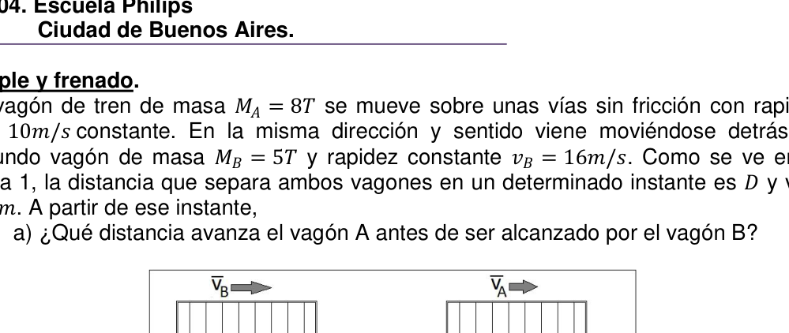
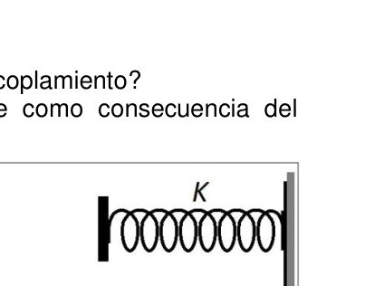
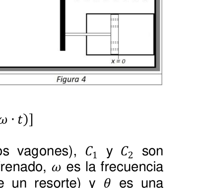
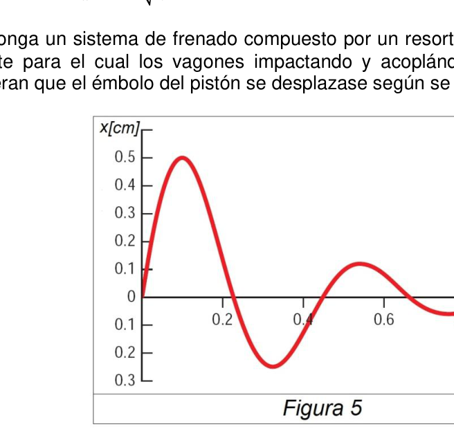
Topic: Conservation of Momentum, Oscillations & Waves Metodi: Conservation of Momentum, Differential Equations, Hooke’s Law Competenze: Physical Reasoning, Mathematical Modeling Objects: Cart, Spring, Piston Fonte: Testo (PDF) — p.5
Coppia e frenata
PT104. Philips School
Città di Buenos Aires.
Accoppiamento e frenata. Un vagone di treno di massa MA=8T si muove su piste senza attrito con velocità. vA = 10 m/s costante. Nella stessa direzione e direzione si sta muovendo dietro un secondo vagone di massa MB=5T e velocità costante vB=16m/s. Come si vede in Figura 1, la distanza tra i due vagoni in un determinato istante è D e vale 1,5𝑘𝑚. Da quel momento in poi, a) Quante distanze percorre il vagone A prima di essere raggiunto dal vagone B?
Una volta in contatto, i carri si accoppiano e continuano a muoversi come una sola. unità.
OAF 2017 - 97 b) quanto velocemente si muove l’insieme dopo l’accoppiamento? (c) quanta energia viene sprecata nell’ambiente a causa del
- Accoppiamento?
Supponiamo che l’estremità delle vie abbia un sistema di frenatura costituita da un ammortizzatore per un elemento che si comporta come un spring di K costante come si può vedere nella figura 2. Si K=700N/cm e il gruppo di vagoni raggiungerà il fine di rotaia con velocità V0 = 6m/s. d) Qual è la massima compressione che si avverrà durante il processo di frenata dei
- Vagnoni?
Supponiamo che il sistema di frenata sia un dispositivo come mostrato in figura 3. Se Si tratta di un pistone che ha un’aria all’interno. olio e si trova diviso in due camere mediante un’imbolo che ha orizzonti che Permette il passaggio dell’olio da una camera a una L’altra come l’imbolo si fa avanti e si fa si frenano per l’azione viscosa dell’olio.
Per un sistema come questo la rallentamento dell’imbolo risponde all’equazione a= −β∙v V è la velocità istantanea e βuna costante del sistema che dipende La forma dell’imbolo e la composizione e temperatura dell’olio. Se può dimostrare che le equazioni cinematiche dell’embolo sono le seguenti:
𝑣(𝑡) = 𝑉0 ∙𝑒−𝛽∙𝑡𝑥(𝑡) = 𝑉0 𝛽 1 −𝑒−𝛽∙𝑡 𝑣 𝑥 = 𝑉0 −𝛽∙𝑥
Se solo il sistema di embolio di pistone è presente, L0 = 40cm, β = 50s−1 e per la stessa velocità V0 = 6m/s del gruppo di vagoni, e) Quanto tempo ci vorrebbe per fermare i vagoni? Suppone che ci sia un arresto se 𝑣≤0,05% 𝑑𝑒 𝑉0
In realtà sono presenti simultaneamente. sia la stazione di resorsione che il pistone come mostrato nella figura 4. Come si trova presente la primavera, una volta che i carri siano collegati al sistema di frenata di questo tipo Oscilla. Come si trova presente il pistone con L’olio, l’oscillazione sarà ammortizzata a causa della forza. viscosa. Per il sistema combinato sprucio-piston la detenzione de Le Carroci
- Risponderà. a Una . ammortizzazione per la quale si compie:
X t = e− θ/2M ∙t C1 ∙sen ω∙t + C2 ∙cos ω∙t
Dove M è la massa del sistema che si desidera frenare (i carri), C1 e C2 sono le costanti che dipendono dalla configurazione del sistema di frenata, ω è la frequenza angolo di oscillazione del sistema di frenata (che contiene una sorgente) e θ è un Costante che caratterizza l’intero sistema di frenata e si chiama costante di
- l’ammortizzazione. Inoltre, per un sistema con questo tipo di ammortizzazione si soddisfa il seguente Relazione tra due massimi consecutivi di oscillazione ammortizzata:
98 - OAF 2017 𝑙𝑛 𝑥𝑛 𝑥𝑛+1
2𝜋𝐴 1 −𝐴2
Dove A= 𝜃 2𝑀𝜔= 𝜃 2𝑀 𝑀 k è k la costante della primavera.
Supponiamo un sistema di frenata composto da una stazione di frenata (libre rilassata) e da un pistone di frenata di frenata. olio per il quale i vagoni colpiscono e si accoppiano con velocità V0 = 6m/s che facciano muovere l’embolo del pistone come mostrato in figura 5.
Utilizzare le informazioni presentate nel grafico e determinare: f) La costante di ammortizzazione θ del sistema di frenata g) Costante k della primavera
Topic: Conservation of Momentum, Oscillations & Waves Metodi: Conservation of Momentum, Differential Equations, Hooke’s Law Competenze: Physical Reasoning, Mathematical Modeling Objects: Cart, Spring, Piston Fonte: Testo (PDF) — p.5
Touch and brake
PT104. Philips School
City of Buenos Aires.
It’s packed and brake. A train wagon with a mass MA=8T moves on non-friction tracks at a rapid rate. vA is 10m/s constant. In the same direction and direction it ‘s moving behind a second carriage with mass MB=5T and constant speed vB=16m/s. As you can see in the Figure 1, the distance between the two cars at a given moment is D and is 1,5𝑘𝑚. From that moment on, (a) What distance does car A travel before being reached by car B?
Once in contact, the wagons are coupled and continue to move as one. The unit.
The Commission shall adopt delegated acts in accordance with Article 21 of the Financial Regulation. (b) how quickly does the assembly move after coupling? (c) how much energy is dissipated into the environment as a result of the
- Do you have a coupling?
Suppose the end of the tracks has a system of brake consisting of a built-in shock absorber for an element that behaves as a spring of K constant as can be seen in Figure 2. Si K=700N/cm and the wagon set will reach the end of the tracks at a speed V0 = 6m/s. (d) What maximum compression would it experience during the braking process of the brakes? What about the wagons?
Suppose the braking system was a device as shown in Figure 3. Se It ‘s a piston inside which there ‘s a . Oil and is divided into two chambers by means of a hull which has holes which They allow oil to pass from a chamber to a The other as the embolus moves forward and is It’s slowing down because of the viscous action of the oil.
For such a system the deceleration of the embolus corresponds to the equation a= −β∙v v being the instantaneous speed and constant βuna of the system that depends The main reasons for this are the shape of the embolus and the composition and temperature of the oil. Se can prove that the kinematic equations of the embossing are as follows:
𝑣(𝑡) = 𝑉0 ∙𝑒−𝛽∙𝑡𝑥(𝑡) = 𝑉0 𝛽 1 −𝑒−𝛽∙𝑡 𝑣 𝑥 = 𝑉0 −𝛽∙𝑥
If only the piston piston piston system is present, L0 = 40cm, β = 50s−1 and for the same speed V0 = 6m/s of the wagon set, (e) How long would it take the cars to stop? Assume that there is a detention if 𝑣≤0,05% 𝑑𝑒 𝑉0
They are actually simultaneously present. Both the spring and the piston as shown in the Figure 4 is shown below. As spring is present, once The carriages must be connected to the braking system. It will oscillate. As the piston is present with Oil, the oscillation will be cushioned due to force. It’s viscous. For the combined spring-piston system the Detention de The
- The wagons . He ‘ll answer . a One . the buffer for which:
The following is the list of the types of products which are subject to the following conditions:
Where M is the mass of the system to be brake (the wagons), C1 and C2 are The braking system is set to the following frequency: The braking system oscillation angle (which contains a spring) and θ is a The braking system is characterised by a constant and is called the braking system constant. the buffer. In addition, for a system with this type of cushioning the following is fulfilled The ratio between two consecutive maximum cushioning oscillations:
The Commission shall adopt delegated acts in accordance with Article 21 of this Regulation. 𝑙𝑛 𝑥𝑛 𝑥𝑛+1
2𝜋𝐴 1 −𝐴2
Where A= 𝜃 2𝑀𝜔= 𝜃 2𝑀 𝑀 k being k the spring constant.
Suppose a braking system consisting of a spring (free-release) and a piston of oil for which the cars are impacting and coupling at V0 = 6m/s cause the piston piston to move as shown in Figure 5.
Use the information presented in the chart and determine: (f) The braking system buffer constant θ (g) The spring constant k
Topic: Conservation of Momentum, Oscillations & Waves Metodi: Conservation of Momentum, Differential Equations, Hooke’s Law Competenze: Physical Reasoning, Mathematical Modeling Objects: Cart, Spring, Piston Fonte: Testo (PDF) — p.5
Calor latente
PT105. Escuela Philips
Ciudad de Buenos Aires.
Calor latente.
Para determinar el calor latente de vaporización de una sustancia Z se utiliza el
dispositivo que se muestra en la figura 1 en el cual una fuente de tensión continua inyecta
una corriente al circuito que incluye una resistencia de inmersión 𝑅𝐶con la cual se entrega
energía a la sustancia Z en fase líquida e inicialmente a la temperatura 𝑡𝑖𝑍. Alcanzado el
punto de ebullición 𝑡𝐸𝐵se continúa entregando energía de modo que la sustancia
comienza a vaporizarse. La masa que se evapora va escapando por un conducto lateral y
se la obliga a atravesar por un condensador que se refrigera con agua. Una vez
condensada, la sustancia Z se colecta en un recipiente.
OAF 2017 - 99 La resistencia variable 𝑅𝑉 permite ajustar la intensidad de corriente que circula por la resistencia de calentamiento. Asuma en lo que sigue que en todo momento la temperatura de los elementos del circuito se mantiene a 25℃. Si la fuente tiene una tensión de salida fija 𝐸= 50𝑉 y la resistencia 𝑅𝐶= 20Ω puede disipar como máximo 80𝑊, a) ¿Cuál es el mínimo valor al cual puede ajustarse la resistencia 𝑅𝑉 durante el procedimiento?
La resistencia de inmersión 𝑅𝐶 está fabricada con una aleación 45%𝑁𝑖−55%𝐶𝑢
conocida como constantán. Consiste en un alambre de diámetro 𝜙= 0,08𝑚𝑚 y longitud
𝐿. El alambre tiene un baño aislante de espesor despreciable y se encuentra espiralado
por razones de tamaño. La resistividad del constantán a 25℃ es de 𝜌25 = 49𝜇Ω ∙𝑐𝑚.
b) Calcule la longitud de alambre 𝐿 que se requiere espiralar para construir (a 25℃ )
la resistencia de inmersión.
La resistividad varía con la temperatura según 𝜌𝑡= 𝜌25 ∙ 1+∝∆𝑡
Donde 𝛼= 2 × 10−5℃−1 es el coeficiente resistivo de temperatura del constantán. Asuma
en lo que sigue que las dimensiones del alambre no cambian con la temperatura.
c) Calcule la máxima temperatura de trabajo si la resistencia de inmersión no debe
cambiar su valor en más del 0,5% durante el experimento para evitar incrementar
la incertidumbre de las mediciones.
Suponga que se lleva a cabo el experimento colocando una masa 𝑚𝑧= 300𝑔 de la
sustancia Z en el recipiente calorimétrico el cual, por el momento, consideraremos ideal,
es decir, perfectamente adiabático. La resistencia 𝑅𝑉 se ajusta a un valor de 6,5Ω. Se
observa que, luego de 3𝑚𝑖𝑛, la sustancia Z se encuentra completamente en fase líquida y
su temperatura es de 70℃. Si el experimento comenzó con el sistema a la temperatura
ambiente 𝑡𝑎𝑚𝑏= 25℃,
d) Determine el calor especifico 𝑐𝑧𝐿de la sustancia Z en fase líquida
Continuando con el experimento, se observa que el termómetro deja de indicar cambios
cuando la temperatura alcanza los 130℃. A partir de ese instante, pasan 1,5𝑚𝑖𝑛 para que
en el recipiente colector se tengan 4𝑔 de sustancia Z condensada. Despreciando el
tiempo del proceso que implica el paso del vapor de sustancia Z por el condensador
hasta ser acumulada en el recipiente colector,
e) Determine el calor latente de vaporización 𝐿𝑧𝑉 de la sustancia Z.
Siendo más realistas, el recipiente calorimétrico no es ideal de modo que durante la etapa del experimento en la que se vaporiza la sustancia Z, una cantidad de energía 𝐺 se disipa al ambiente en lugar de ser transferida a la sustancia. Para obtener un resultado más acorde a la realidad, se llevan a cabo dos mediciones (con un recipiente real no adiabático) y se obtienen los siguientes valores:
A partir de los valores registrados en la tabla,
f) Determine nuevamente elcalor latente (―real‖) de vaporización 𝐿𝑧𝑉 de la sustancia
Z.
g) Determine la cantidad de energía 𝐺 que el recipiente calorimétrico transfiere al
ambiente.
100 - OAF 2017
Topic: Thermodynamics, Circuits Metodi: First Law of Thermodynamics, Experimental Data Analysis Competenze: Physical Reasoning, Mathematical Modeling Objects: Calorimeter, Resistor Fonte: Testo (PDF) — p.5
Calore latente
PT105. Philips School
Città di Buenos Aires.
Calore latente. Per determinare il calore latente di vaporizzazione di una sostanza Z si usa dispositivo mostrato in figura 1 in cui una fonte di tensione continua viene injectata un corrente al circuito che include una resistenza di immersione RC con cui viene consegnata energia alla sostanza Z in fase liquida e inizialmente alla temperatura tiZ. Arrivata la punto di ebollizione tEBse continua a fornire energia in modo che la sostanza comincia a vaporizzare. La massa che evapora scappa attraverso un canali laterale e la forza di attraversare un condensatore che si raffredda con acqua. Una volta condensata, la sostanza Z viene raccolta in un recipiente.
OAF 2017 - 99 La resistenza variabile RV permette di regolare l’intensità di corrente che circola attraverso la resistenza al riscaldamento. In seguito, si assume che in ogni momento la la temperatura degli elementi del circuito è mantenuta a 25°C. Se la fonte ha una la tensione di uscita fissa E= 50V e la resistenza RC= 20Ω può dissipare al massimo 80𝑊, a) Qual è il minimo valore al quale la resistenza RV può essere regolata durante il procedura?
La resistenza all’immersione RC è fabbricata con un alloggio del 45%Ni−55%Cu nota come costante. Consiste in un filo di diametro φ= 0,08mm e lunghezza 𝐿. Il filo ha un bagno isolante di spessore sconsiderato e si trova a spirale. Per ragioni di dimensione. La resistenza del costante a 25°C è di ρ25 = 49μΩ ∙cm. b) Calcolare la lunghezza di filo L che è necessario spirale per costruire (a 25°C) resistenza all’immersione.
La resistenza varia con la temperatura in base a ρt= ρ25 ∙ 1+∆t Dove α= 2 × 10−5°C−1 è il coefficiente di resistenza di temperatura del costante. Assumi In seguito, le dimensioni del filo non cambiano con la temperatura. c) Calcolare la temperatura massima di lavoro se la resistenza all’immersione non deve essere Cambiare il suo valore di oltre lo 0,5% durante l’esperimento per evitare di aumentare l’incertezza delle misurazioni.
Supponiamo che si svolga l’esperimento mettendo una massa mz= 300 g della sostanza Z nel recipiente calometrico che, per il momento, considereremo ideale, Cioè, perfettamente adiabatico. La resistenza RV è regolata a un valore di 6,5Ω. Se osserva che, dopo 3 minuti, la sostanza Z è completamente in fase liquida e la sua temperatura è di 70°C. Se l’esperimento è iniziato con il sistema a temperatura Ambiente di ambiente = 25°C, d) Determina la temperatura specifica czL della sostanza Z in fase liquida
Continuando l’esperimento, si osserva che il termometro smette di indicare cambiamenti quando la temperatura raggiunge i 130°C. Da quel momento, passeranno 1,5 minuti per farlo. nel recipiente di raccolta sono presenti 4 g di sostanza Z condensata. Disprezzando il tempo del processo che comporta il passaggio del vapore di sostanza Z attraverso il condensatore fino a quando non sono accumulate nel contenitore di raccolta, e) Determina il calore latente di vaporizzazione LzV della sostanza Z.
Infatti, il contenitore calorimetrico non è ideale, quindi durante lo stadio di L’esperimento di vaporizzazione della sostanza Z, una quantità di energia G viene dissipata. all’ambiente invece di essere trasferita alla sostanza. Per ottenere un risultato più La realtà è che si effettuano due misure (con un vero contenitore non) (adiabatic) e si ottengono i seguenti valori:
A partire dai valori registrati nella tabella, f) Ridetermine il calore latente (―real‖) di vaporizzazione LzV della sostanza Z. g) Determina la quantità di energia G che il recipiente calorimetrico trasmette al ambiente.
100 - OAF 2017
Topic: Thermodynamics, Circuits Metodi: First Law of Thermodynamics, Experimental Data Analysis Competenze: Physical Reasoning, Mathematical Modeling Objects: Calorimeter, Resistor Fonte: Testo (PDF) — p.5
The heat output of the test chemical shall be the same as the heat output of the test chemical.
PT105. Philips School
City of Buenos Aires.
Latent heat. The latent heat of vaporization of a substance Z is determined by using the device shown in Figure 1 in which a continuous voltage source injects a current to the circuit including an RC immersion resistance with which it is delivered energy to Z substance in liquid phase and initially to tiZ temperature. It ‘s been done . The boiling point tEBse continues to deliver energy so that the substance It starts to vaporize. The evaporating mass escapes through a lateral conduit and It is forced through a condenser that is cooled by water. Once upon a time . When condensed, the substance Z is collected in a container.
The Commission shall adopt implementing acts in accordance with Article 21 of this Regulation. The variable resistance RV allows the current intensity circulating through the Heating resistance. It assumes in the following that at all times the the temperature of the circuit elements is maintained at 25°C. If the source has a The output voltage fixed E= 50V and the resistance RC= 20Ω can dissipate as much as 80𝑊, (a) What is the minimum value to which the RV resistance can be adjusted during the The procedure?
The RC immersion resistance is made of an alloy of 45%Ni−55%Cu known as constantane. It consists of a wire of diameter φ= 0,08mm and length 𝐿. The wire has an insulating bath of despicable thickness and is spiralled. For reasons of size. The resistance of the constantane at 25°C is ρ25 = 49μΩ ∙ cm. (b) Calculate the length of wire L required to be spun to build (at 25°C) the resistance to immersion.
The resistance varies with temperature according to ρt= ρ25 ∙ 1+∆t Where α= 2 × 10−5°C−1 is the resistance coefficient of temperature of the constant. I assume The dimensions of the wire do not change with temperature. (c) Calculate the maximum working temperature if the immersion resistance is not sufficient. Change its value by more than 0.5% during the experiment to avoid increasing it. The uncertainty of measurements.
Suppose the experiment is performed by placing a mz mass = 300 g of the Substance Z in the heat-metric container which, for the time being, we will consider ideal, I mean, perfectly adiabatic. The RV resistance is adjusted to a value of 6,5Ω. Se observes that after 3 minutes, substance Z is completely in liquid phase and Its temperature is 70°C. If the experiment started with the system at temperature The temperature is 25°C. (d) Determine the specific heat of substance Z in liquid phase
Continuing the experiment, it is observed that the thermometer no longer indicates changes. when the temperature reaches 130°C. From that moment on, it takes 1.5min to do that. 4g of condensed Z substance shall be contained in the collector vessel. Disregarding the time of the process involving the passage of Z-substance vapor through the condenser until it is accumulated in the collector vessel, (e) Determine the latent heat of vaporization LzV of substance Z.
The heat-treating vessel is not ideal so that during the stage In the experiment where you vaporize substance Z, a quantity of energy G is dissipated. to the environment rather than transferred to the substance. To get a further result In reality, two measurements are carried out (with an actual container not (adiabatic) and the following values are obtained:
From the values recorded in the table, (f) Determine again the latent (―real‖) vaporization LzV of the substance Z. (g) Determine the amount of energy G that the calorimetric container transfers to the The environment.
The following is the list of the countries of the European Union:
Topic: Thermodynamics, Circuits Metodi: First Law of Thermodynamics, Experimental Data Analysis Competenze: Physical Reasoning, Mathematical Modeling Objects: Calorimeter, Resistor Fonte: Testo (PDF) — p.5
Dr. Foton
PT106. Escuela Philips
Ciudad de Buenos Aires.
Dr. Fotón. En la figura1 se muestran los diagramas de niveles de energía para átomos que componen un LASER de helio-neón. Como se muestra en la parte izquierda, un átomo de helio es excitado mediante una descarga eléctrica de modo que un electrón sube desde un nivel energético 𝐸0 a otro 𝐸2.
El átomo de helio (𝑀𝑟= 4) colisiona luego de forma inelástica con un átomo de neón (𝑀𝑟= 20), y el átomo de helio vuelve a su condición energética inicial transfiriendo al átomo de neón la energía suficiente para que uno de sus electrones suba desde el nivel energético 𝐸0′ a otro 𝐸2′. El LASER emite luz cuando el electrón del átomo de neón cae desde el nivel energético 𝐸2′ a otro 𝐸1′.
a) Determine la rapidez mínima que debe tener un átomo de helio para lograr transferir la energía suficiente como para que un electrón del átomo de neón cambie del nivel 𝐸0′ al 𝐸2′.
Suponga que el electrón excitado del átomo de neón cae del nivel 𝐸2′ al 𝐸1′ emitiendo un fotón de luz LASER.
b) Calcule la longitud de onda de la luz emitida.
Como aplicación físico-médica, se puede utilizar luz LASER para corregir un desprendimiento de retina. A tal fin se utiliza un LASER que emite pulsos de 20𝑚𝑠 de duración y cuya potencia promedio es de 500𝑚𝑊 por pulso.
c) Determine la cantidad de fotones que contiene cada pulso.
Para encontrar nuevas posibles aplicaciones físico-médicas, se realizan experimentos en los cuales se disparan fotones contra electrones en reposo. Suponga que se dispara un fotón cuya longitud de onda es 𝜆= 20𝑛𝑚 como se ve en la figura.2 (izquierda).
d) Determine la energía 𝐸𝑖,𝑓𝑜𝑡 y la cantidad de movimiento 𝑝𝑖,𝑓𝑜𝑡del fotón incidente
OAF 2017 - 101 Luego de la colisión, el fotón invierte su sentido de movimiento y se produce un corrimiento en su longitud de onda que responde a la expresión: Δ𝜆= 2 𝑚𝑒∙𝑐
Donde = 6,63 × 10−34 𝐽∙𝑠 es la constante de Planck, 𝑚𝑒= 9,11 × 10−31𝑘𝑔 es la masa del electrón en reposo y 𝑐= 3 × 108𝑚/𝑠 es la rapidez de la luz en vacío.
e) Decida y explique si la longitud de onda del fotón aumenta o disminuye luego de la colisión
f) Determine la cantidad de movimiento 𝑝𝑓,𝑒𝑙𝑒𝑐 del electrón después de la colisión
En 1895 Röntgen descubre los rayos-X y, un mes después de la publicación de sus
descubrimientos, la radiación ya se utilizaba para propósitos médicos. En la actualidad la
radiación con rayos-X se utiliza tanto para el diagnóstico como de forma terapéutica.
Tomemos como ejemplo las radiografías: el material duro de los huesos absorbe los
rayos X mientras que el tejido blando no óseo permite su paso. Los rayos X no
absorbidos que atraviesan el tejido blando impactan sobre una película fotosensible y la
oscurecen. Así, las zonas óseas se ven brillantes sobre la placa fotográfica.
Cuando los rayos-X (fotones) atraviesan un material se produce una atenuación, es decir,
una disminución energética o ―pérdida‖ de fotones. Para un haz monocromático de rayos-
X la atenuación implica que la intensidad del haz disminuye al atravesar un material y lo
hace según la ley siguiente:
𝐼= 𝐼0 ∙𝑒−𝜇𝜌𝑥
Donde 𝐼0 es la intensidad del haz que alcanza el material, 𝐼 es la intensidad del haz que
abandona el material luego de recorrer una distancia 𝑥, 𝜌 es la densidad del material y 𝜇
es el coeficiente de absorción lineal del material.
Se tiene una placa formada por dos capas consecutivas, una de material A y otra de
material B de modo que los respectivos espesores son 𝑥𝐴= 3𝑐𝑚 y 𝑥𝐴= 5𝑐𝑚. Para estos
materiales 𝜇𝐴= 0,013𝑚2/𝑘𝑔 y 𝜇𝐵= 0,034𝑚2/𝑘𝑔 siendo sus densidades 𝜌𝐴= 4200𝑘𝑔/𝑚3
y 𝜌𝐵= 7500𝑘𝑔/𝑚3 respectivamente.
Un haz de rayos-X con una energía de 35𝑘𝑒𝑉 1𝑒𝑉= 1,6 × 10−19𝐽 incide en la placa como
se muestra en la figura 3. La intensidad del haz incidente es de 400𝑘𝑊/𝑚2.
g) Determine en qué porcentaje se encuentra atenuado el haz al dejar la placa
La figura 4 muestra la atenuación en la intensidad de los rayos X anteriores cuando atraviesan una placa de aluminio. Teniendo en cuenta que la densidad de dicho material es 𝜌𝐴𝑙= 2,7𝑔/𝑐𝑚3,
h) Determine el coeficiente de absorción lineal del aluminio.
102 - OAF 2017
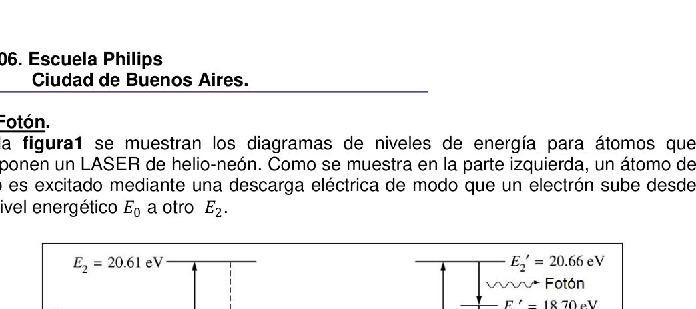
Topic: Modern-Quantum Physics, Nuclear & Particle Physics Metodi: Photon Energy Relation, Conservation of Momentum Competenze: Physical Reasoning, Mathematical Modeling Objects: Photon, Electron, Atom Fonte: Testo (PDF) — p.5
Dr. Foton
PT106. Philips School
Città di Buenos Aires.
Dr. Fotone. La figura 1 mostra i diagrammi dei livelli di energia per gli atomi che compongono un laser di elio-neon. Come viene mostrato sulla sinistra, un atomo di L’elio viene eccitato da un’elettrica scarica in modo che un elettrone salire da un livello energetico E0 a un altro E2.
L’atomo di elio (Mr=4) colpisce poi inelasticamente con un atomo di neon. (Mr= 20), e l’atomo di elio ritorna alla sua condizione energetica iniziale trasferendolo al Un atomo di neon ha energia sufficiente per far salire uno dei suoi elettroni dal livello. E0′ ad un altro E2′. Il laser emette luce quando l’elettrone dell’atomo di neon cade. da un livello energetico E2′ ad un altro E1′.
a) Determina la velocità minima che un atomo di elio deve avere per ottenere trasferire energia sufficiente a far sì che un elettrone dell’atomo di neon cambiare dal livello E0′ a E2′.
Supponiamo che l’elettrone eccitato dell’atomo di neon scenda dal livello E2′ a E1′ emettendo un fotone di luce laser.
b) Calcolare la lunghezza d’onda della luce emessa.
Come applicazione fisica-medico, la luce laser può essere utilizzata per correggere un la rottura della retina. Per questo è usato un laser che emette impulsi di 20ms di durata e con una potenza media di 500 mW al pulso.
c) Determina la quantità di fotoni contenuta in ogni pulso.
Per trovare nuove applicazioni fisica-medico-potenziarie, si fanno esperimenti in che sparano fotoni contro elettroni a riposo. Supponiamo che si faccia un tiro. fotone la cui lunghezza d’onda è λ= 20nm come si vede nella figura.2 (sinistra).
d) Determina l’energia Ei,fot e la quantità di movimento pi,fot del fotone incidente
OAF 2017 - 101 Dopo la collisione, il fotone inverte il suo senso di movimento e si produce un corrispondente alla sua lunghezza d’onda: Δ𝜆= 2 𝑚𝑒∙𝑐
Dove = 6,63 × 10−34 J∙s è la costante di Planck, me= 9,11 × 10−31kg è la massa di un elettrone a riposo e c= 3 × 108m/s è la velocità della luce in vuoto.
e) Decidere e spiegare se la lunghezza d’onda del fotone aumenta o diminuisce dopo La collisione
f) Determina la quantità di movimento pf,elec dell’elettrone dopo la collisione
Nel 1895 Röntgen scopre i raggi X e, un mese dopo la pubblicazione dei suoi Le scoperte che abbiamo fatto sono state che la radiazione era già usata per scopi medici. Attualmente la La radioterapia è utilizzata sia per la diagnosi che per la terapia. Prendiamo ad esempio le radiografie: il materiale duro delle ossa assorbe i tessuti. I raggi X mentre il tessuto morbido non osseo permette il suo passaggio. Non gli X-ray Le sostanze che vengono assorbite attraverso il tessuto morbido colpiscono un film fotosensibile e la
- No, non è così. Così le zone ossee si vedono brillanti sulla targa fotografica. Quando i raggi X (fotoni) attraversano un materiale si produce un attenuamento, cioè: una diminuzione energetica o “perdita” di fotoni. Per un raggio monocromatico di raggi… X l’ attenuazione implica che l’ intensità del raggio diminuisce attraverso un materiale e il fa secondo la legge seguente: I= I0 ∙e−μρx
Dove I0 è l’intensità del fascio che raggiunge il materiale, I è l’intensità del fascio che raggiunge il materiale. abbandona il materiale dopo aver percorso una distanza x, ρ è la densità del materiale e μ è il coefficiente di assorbimento lineare del materiale. Si ha una piastra costituita da due strati consecutivi, uno di materiale A e l’altro di materiale B in modo che i loro spessori siano xA= 3cm e xA= 5cm. Per questi materiali μA= 0,013m2/kg e μB= 0,034m2/kg, le cui densità ρA= 4200kg/m3 e ρB = 7500 kg/m3 rispettivamente. Un raggio di raggi X con un’energia di 35keV 1eV= 1,6 × 10−19J colpisce la scheda come è mostrato nella figura 3. L’intensità del fascio incidente è di 400 kW/m2.
g) Determina la percentuale di attenuazione del fascio al lasciare la scheda
La figura 4 mostra l’ attenuazione nell’ intensità degli X-ray precedenti quando attraversano una scheda di alluminio. Considerando che la densità di tale materiale è ρAl= 2,7 g/cm3,
h) Determina il coefficiente di assorbimento lineare dell’alluminio.
102 - OAF 2017
Topic: Modern-Quantum Physics, Nuclear & Particle Physics Metodi: Photon Energy Relation, Conservation of Momentum Competenze: Physical Reasoning, Mathematical Modeling Objects: Photon, Electron, Atom Fonte: Testo (PDF) — p.5
**Dr. The following is the list of the following:
PT106. Philips School
City of Buenos Aires.
Dr. It’s a photon. Figure 1 shows energy level diagrams for atoms that are They’re made up of a helium-neon laser. As shown on the left, an atom of Helium is excited by an electrical discharge so that an electron rises from energy level E0 to another E2.
The helium atom (Mr=4) then collides inelastically with a neon atom. (Mr= 20), and the helium atom returns to its initial energy state by transferring to the Neon atom energy enough for one of its electrons to rise from the level The energy content of the E0′ to another E2′. The laser emits light when the electron of the neon atom falls. from the energy level E2′ to another E1′.
(a) Determine the minimum speed a helium atom must have to achieve transfer enough energy to make an electron from the neon atom change from E0′ to E2′.
Suppose the excited electron of the neon atom falls from the level E2′ to E1′ by emitting a The photon is laser light.
(b) Calculate the wavelength of the light emitted.
As a physico-medical application, laser light can be used to correct a retinal detachment. For this purpose a laser is used which emits pulses of 20ms from The average power output is 500 mW per pulse.
(c) Determine the number of photons each pulse contains.
To find new possible physico-medical applications, experiments are carried out in which shoot photons against electrons at rest. Suppose you shoot a guy. photon whose wavelength is λ= 20nm as shown in Figure 2 (left).
(d) Determine the energy Ei,fot and the amount of motion pi,fot of the incident photon
The Commission shall adopt delegated acts in accordance with Article 21 of the Financial Regulation. After the collision, the photon reverses its sense of motion and a a flow in its wavelength that responds to the expression: Δ𝜆= 2 𝑚𝑒∙𝑐
Where = 6,63 × 10−34 J∙s is Planck’s constant, me= 9,11 × 10−31kg is mass The speed of light in vacuum is the speed of light in vacuum.
(e) Decide and explain whether the photon wavelength increases or decreases after The collision .
(f) Determine the amount of movement pf,elec of the electron after the collision
In 1895 Röntgen discovered X-rays and, a month after the publication of his The radiation was already used for medical purposes. Currently the X-ray radiation is used both for diagnosis and therapeutic purposes. Take X-rays as an example: the hard material of the bones absorbs the X-rays while soft non-bone tissue allows its passage. The X-rays are not. absorbed through soft tissue impact on a photosensitive film and the It’s getting dark. So the bone areas look bright on the photo plate. When X-rays (photons) pass through a material, there is a attenuation, that is, A decrease in energy or “loss” of photons. For a monochrome beam of lightning- X attenuation means that the beam intensity decreases as it passes through a material and the beam is reduced. does according to the following law: I= I0 ∙e−μρx
Where I0 is the beam intensity that reaches the material, I is the beam intensity that leaves the material after a distance of x, ρ is the density of the material and μ is the linear absorption coefficient of the material. A plate is made up of two consecutive layers, one of material A and another of material material B such that the respective thicknesses are xA=3cm and xA=5cm. For these . materials μA= 0,013m2/kg and μB= 0,034m2/kg with their densities ρA= 4200kg/m3 The following conditions shall apply: An X-ray beam with an energy of 35keV 1eV= 1,6 × 10−19J affects the plate as The following table shows the number of samples taken: The incident beam intensity is 400kW/m2.
(g) Determine the percentage of beam attenuation when leaving the plate
Figure 4 shows the attenuation in intensity of the previous X-rays when They’re going through an aluminum plate. Given that the density of such material is ρAl= 2,7 g/cm3,
(h) Determine the linear absorption coefficient of aluminium.
The following is the list of the countries of the European Union:
Topic: Modern-Quantum Physics, Nuclear & Particle Physics Metodi: Photon Energy Relation, Conservation of Momentum Competenze: Physical Reasoning, Mathematical Modeling Objects: Photon, Electron, Atom Fonte: Testo (PDF) — p.5
PT107. Colegio Secundario General San Martín
Ciudad de Corrientes.
Un perro pasa corriendo con una velocidad constante de 18 km/h delante de una camioneta del servicio sanitario. El personal quiere atrapar al perro y, cuando ésta está alejándose y se encuentra a 50 m de distancia, sale a perseguirlo con aceleración constante de 2,5 m/s2. a) Confecciona un dibujo que represente la situación. b) Indica cuánto tiempo transcurre desde que la camioneta persigue al perro hasta que lo alcanza, si es que lo hace. c) Indica la distancia recorrida por el perro y la recorrida por la camioneta desde el momento que empezó la persecución.
Topic: Newtonian Mechanics Metodi: Kinematic Equations Competenze: Physical Reasoning, Mathematical Modeling Objects: — Fonte: Testo (PDF) — p.5
PT107. Scuola Secundaria Generale San Martín
Città dei Corrienti.
Un cane passa correndo a velocità costante di 18 km/h davanti a una
- Un furgone sanitario. Il personale vuole prendere il cane e, quando è in galera, Se si allontana e si trova a 50 metri di distanza, esce a inseguirlo con l’accelerazione. costante di 2,5 m/s2. a) Fare un disegno che rappresenti la situazione. b) Indica il tempo trascorso dal momento in cui il camion si sta cacciando il cane fino a quando il cane è stato cacciato. che lo raggiunga, se lo fa. (c) Indica la distanza percorsa dal cane e dal camionetto dal Il momento in cui è iniziata la persecuzione.
Topic: Newtonian Mechanics Metodi: Kinematic Equations Competenze: Physical Reasoning, Mathematical Modeling Objects: — Fonte: Testo (PDF) — p.5
PT107. General High School San Martin
City of currents.
A dog is running at a constant speed of 18 km/h in front of a dog. The health service van. Staff want to catch the dog and when it’s there He’s moving away and is 50 meters away, he’s chasing him with acceleration. constant of 2,5 m/s2. (a) Draw a picture of the situation. (b) Indicate how long it takes from the truck chasing the dog to the That it reaches it, if it does. (c) Indicates the distance travelled by the dog and the distance travelled by the van from the The moment the persecution began.
Topic: Newtonian Mechanics Metodi: Kinematic Equations Competenze: Physical Reasoning, Mathematical Modeling Objects: — Fonte: Testo (PDF) — p.5
PT108. Colegio Secundario General San Martín
Ciudad de Corrientes.
Un automóvil de 1.400 kg sube cuesta arriba por una montaña tratando de llegar a la cumbre situada a 65 m de altura. Pero al llegar a 35 m de altura se le acaba el combustible y el motor se detiene cuando la rapidez era de 75 km/h. Astutamente, el conductor pasa inmediatamente a ―punto muerto‖ y así el auto sigue moviéndose. a) Sin tener en cuenta todas las pérdidas por fricción, describe el movimiento que realiza el auto a partir del momento en que el motor se detiene. b) ¿Llegará a la cumbre? Justifique. c) Para poder llegar a la cumbre, ¿le ayudará si arroja toda la carga del auto? Explique. d) ¿Con qué rapidez llegará de vuelta al pie de la montaña? e) Suponiendo ahora que el automóvil parte con una rapidez de 130 km/h y llega al punto más alto de la cuesta con la mínima energía posible, pero que la superficie ofrece rozamiento. Calcula el coeficiente de rozamiento si el auto se desplazó 120 m. f) Calcule la fuerza del motor si sube a rapidez constante.
Topic: Conservation of Energy Metodi: Conservation of Energy Competenze: Physical Reasoning, Mathematical Modeling Objects: Inclined Plane Fonte: Testo (PDF) — p.5
PT108. Scuola Secundaria Generale San Martín
Città dei Corrienti.
Una macchina da 1.400 kg sale su una montagna cercando di raggiungere la sommità a 65 m di altezza. Ma quando arrivi a 35 metri di altezza, finisce il suo tempo. il combustibile e il motore si fermano quando la velocità era di 75 km/h. - Che c’è? Il conducente passa immediatamente al punto morto e la macchina continua a muoversi. a) Indicare il movimento che si svolge la macchina dal momento in cui il motore si ferma. b) Arriverà al vertice? giustifica. c) Per raggiungere la cima, ti aiuterà se getti via tutto il carico della macchina? Spiegami. d) Quanto presto ritornerà al piede della montagna? e) Supponendo ora che la macchina parte a 130 km/h e raggiunga il punto di partenza punto più alto della salita con la minima energia possibile, ma che la superficie offre un’acciaio. Calcola il coefficiente di rottura se la macchina è stata spostata 120 m. f) Calcolare la forza del motore se sale a velocità costante.
Topic: Conservation of Energy Metodi: Conservation of Energy Competenze: Physical Reasoning, Mathematical Modeling Objects: Inclined Plane Fonte: Testo (PDF) — p.5
PT108. General High School San Martin
City of currents.
A 1,400-pound car climbs up a mountain trying to get to the top of the mountain. a summit situated at 65 m. But when you get to 35 meters high , you run out of money . fuel and the engine stops when the speed was 75 km/h. Cleverly, the The driver immediately passes to “still point” and so the car continues to move. (a) Without taking into account all friction losses, describe the movement which The vehicle is driven from the moment the engine stops. (b) Will it reach the summit? You justify it. (c) To get to the top, will it help you if you drop all the load of the car?
- Explain that. (d) How quickly will it get back to the foot of the mountain? (e) Assuming now that the car starts at a speed of 130 km/h and reaches the The highest point of the slope with the least energy possible, but that surface It’s a good thing he’s got a good grip. Calculate the friction coefficient if the car moved 120 m. (f) Calculate the force of the engine if it is rising at a constant speed.
Topic: Conservation of Energy Metodi: Conservation of Energy Competenze: Physical Reasoning, Mathematical Modeling Objects: Inclined Plane Fonte: Testo (PDF) — p.5
PT109. Colegio Secundario General San Martín
Ciudad de Corrientes.
Dos cargas puntuales q1 = 8 μC y q2 = 2 μC están ubicadas como se muestra en la figura.
OAF 2017 - 103
En un punto A, situado entre ambas cargas y distante 10 cm de q2, se coloca q3 = 3 μC. a) Calcule el módulo de la fuerza F31 que q1 ejerce sobre q3. b) Calcule el módulo de la fuerza F32 que q2 ejerce sobre q3. c) Reproduzca en su hoja la figura y represente vectorialmente a escala las fuerzas F31 y F32. d) Calcule el módulo de la fuerza total, FT, que actúa sobre q3 debido al sistema de cargas q1 y q2. Represente vectorialmente FT en su dibujo. e) Encuentre la ubicación de un punto B, sobre la recta que une q1 y q2, tal que si se coloca allí a q3 la FT es nula. f) ¿La posición del punto B depende de la carga de q3? Justifique. g) ¿Si la carga q3 sale de la recta que une a q1 con q2, se puede encontrar un punto donde la FT sea nula? Fundamente. h) Si se modifica el signo de q2 = -2 μC, manteniendo los valores de q1 y q2, ¿dónde estará el punto B en el cual se anula la FT determinada por q1 y q2?
Topic: Electrostatics Metodi: Coulomb’s Law, Superposition Principle Competenze: Physical Reasoning, Mathematical Modeling Objects: Point Charge Fonte: Testo (PDF) — p.5
PT109. Scuola Secundaria Generale San Martín
Città dei Corrienti.
Due carichi puntati q1 = 8 μC e q2 = 2 μC sono posizionati come mostrato in
- Figura.
OAF 2017 - 103
In un punto A, situato tra le due cariche e distante 10 cm da q2, si colloca q3 = 3 μC. a) Calcolare il modulo della forza F31 che q1 esercita su q3. b) Calcolare il modulo della forza F32 che q2 esercita su q3. c) riproduce la figura e rappresenta le forze a scala vettoriale F31 y F32. d) Calcolare il modulo della forza totale, FT, che agisce su q3 a causa del sistema di carichi q1 e q2. Rappresenta vectoralmente FT nel suo disegno. e) Trova la posizione di un punto B, sulla retta che unisce q1 e q2, in modo che se viene posto lì a q3, la FT è nulla. f) La posizione del punto B dipende dal carico di q3? giustifica. g) Se la carica q3 esce dalla retta che unisce q1 a q2, si può trovare un punto in cui la FT è nulla? - In fondo. h) Se si modifica il segno di q2 = -2 μC, mantenendo i valori di q1 e q2, Qual è il punto B in cui viene annullato il FT determinato da q1 e q2?
Topic: Electrostatics Metodi: Coulomb’s Law, Superposition Principle Competenze: Physical Reasoning, Mathematical Modeling Objects: Point Charge Fonte: Testo (PDF) — p.5
PT109. General High School San Martin
City of currents.
Two point loads q1 = 8 μC and q2 = 2 μC are located as shown in the diagram. It’s a figure.
The Commission shall adopt delegated acts in accordance with Article 21 of this Regulation.
At a point A, located between both loads and 10 cm from q2, q3 = 3 μC is placed. (a) Calculate the force modulus F31 that q1 exerts on q3. (b) Calculate the force modulus F32 that q2 exerts on q3. (c) Reproduce the figure on its sheet and vectorally represent the forces on the scale F31 y F32. (d) Calculate the module of total force, FT, acting on q3 due to the system of Q1 and q2 loads. He vectorically represents FT in his drawing. (e) Find the location of a point B, on the straight line joining q1 and q2, such that If you put it there at q3, the FT is zero. (f) Does the position of point B depend on the load of q3? You justify it. g) If the charge q3 is coming out of the straight line that joins q1 to q2, a can be found point where the FT is zero? Basically. (h) If the sign of q2 = -2 μC is changed, keeping the values of q1 and q2 Where is the point B where the FT determined by q1 and q2 is cancelled?
Topic: Electrostatics Metodi: Coulomb’s Law, Superposition Principle Competenze: Physical Reasoning, Mathematical Modeling Objects: Point Charge Fonte: Testo (PDF) — p.5
Braquistocrona de Bernoulli
PT110. Instituto Tecnológico del Comahue - EPET N° 14 - San Agustín School
Ciudad de Neuquén.
Braquistocrona de Bernoulli: “Caminos que hacen más cortos el tiempo”. En 1696, Johann Bernoulli planteó un problema general, preguntó qué curva, de entre las infinitas que son posibles, proporcionaría el tiempo más breve posible de descenso, entre dos puntos (A y B). Esta curva se conoce como braquistócrona (figura 01) y proviene de la palabra griega brachistos, el más corto, cronos, tiempo.
Se pueden determinar la trayectoria según las ecuaciones paramétricas que representan a un cicloide invertido que pasa por el origen coordenado y por el punto B; es así como la solución de la ecuación diferencial es la solución general al problema propuesto por Bernoulli.
104 - OAF 2017 𝑇= 𝜃 (𝑅) (𝑔)
Se deja caer un balín desde el punto A, siguiendo tres trayectorias: en caída libre desde A, desde el punto A al punto B por el plano inclinado, y desde el punto A al punto B por la braquistocrona.
a) Determine el tiempo que demora en llegar desde A hasta B siguiendo la
trayectoria recta.
b) Determine el tiempo que demora en llegar al suelo en caída libre desde A.
c) Determine la energía potencial y mecánica en el punto A, masa balín: 25 gr
d) Determine la velocidad con la que llega el balín al suelo.
e) Determine la velocidad con la que llega el balín al punto B desde la trayectoria de
recta.
f) Determine el tiempo que demorara en llegar desde el punto A al B por la
braquistocrona.
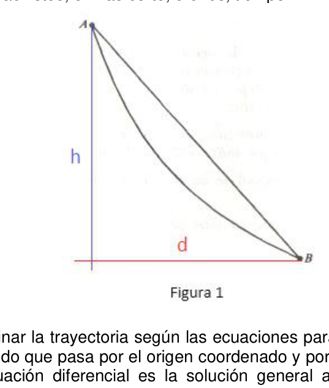
Topic: Conservation of Energy, Newtonian Mechanics Metodi: Conservation of Energy, Kinematic Equations Competenze: Physical Reasoning, Mathematical Modeling Objects: Inclined Plane, Ball Fonte: Testo (PDF) — p.5
Bracistocrona di Bernoulli
PT110. L’Istituto Tecnologico del Comahue - EPET N° 14 - San Agustin School
Città di Neuquén.
Brachistocrona di Bernoulli: “Caminaggi che accorciano il tempo”. Nel 1696, Johann Bernoulli sollevò un problema generale, chiese quale curva, tra le infinite che sono possibili, avrebbe fornito il tempo più breve possibile di discesa, tra due punti (A e B). Questa curva è nota come brachistocrona (fig. 01) e viene da il termine greco brachistos, il più breve, crononi, tempo.
La traccia può essere determinata dalle equazioni parametriche che rappresentano Un cicloide invertito che passa attraverso l’origine coordinata e il punto B; è così che la La soluzione dell’equazione differenziale è la soluzione generale del problema proposto da Bernoulli.
104 - OAF 2017 𝑇= 𝜃 (𝑅) (𝑔)
Si lascia cadere una balena dal punto A, seguendo tre percorsi: in caduta libera dal punto A, dal punto A al punto B per il piano inclinato, e dal punto A al punto B per il brachistocrona.
a) Determina il tempo necessario per arrivare da A a B seguendo la
- Un percorso diretto. b) Determina il tempo necessario per raggiungere il suolo in caduta libera da A. c) Determina l’energia potenziale e meccanica al punto A, massa balena: 25 gr (d) Determina la velocità con cui il baleno arriva al suolo. e) Determina la velocità con cui il baleno arriva al punto B dal percorso di
- Si’, e’ dritto. f) Determina il tempo necessario per arrivare dal punto A al punto B per il brachistocrona.
Topic: Conservation of Energy, Newtonian Mechanics Metodi: Conservation of Energy, Kinematic Equations Competenze: Physical Reasoning, Mathematical Modeling Objects: Inclined Plane, Ball Fonte: Testo (PDF) — p.5
The following table summarizes the results of the study:
PT110. The following is a list of the most important projects of the European Union:
The city of Neuquén.
Bernoulli’s Brachistochronism: Ways that shorten time. In 1696, Johann Bernoulli posed a general problem, asking which curve, among the infinitesimal that are possible, would provide the shortest possible time of descent, between two points (A and B). This curve is known as the brachytochron (Figure 01) and comes from The Greek word brachistos, the shortest, chronos, time.
The trajectory can be determined by the parametric equations representing to an inverted cycloid passing through the coordinate origin and through point B; this is how the The solution of the differential equation is the general solution to the problem proposed by Bernoulli, you know what?
The following is the list of the countries of origin of the products concerned: 𝑇= 𝜃 (𝑅) (𝑔)
A whale is dropped from point A, following three trajectories: in free fall from A, from point A to point B on the slope, and from point A to point B on the slope The brachystocrone.
(a) Determine the time it takes to get from A to B by following the The path is straight. (b) Determine the time it takes to reach the ground in free fall from A. (c) Determine the potential and mechanical energy at point A, whale mass: 25 gr (d) Determine the speed at which the whale reaches the ground. (e) Determine the speed at which the whale reaches point B from the trajectory of the whale. It’s straight. (f) Determine the time it will take to reach from point A to point B by the route. The brachystocrone.
Topic: Conservation of Energy, Newtonian Mechanics Metodi: Conservation of Energy, Kinematic Equations Competenze: Physical Reasoning, Mathematical Modeling Objects: Inclined Plane, Ball Fonte: Testo (PDF) — p.5
PT111. Instituto Tecnológico del Comahue - EPET N° 14 - San Agustín School
Ciudad de Neuquén.
Un calorímetro es un recipiente en donde se realizan las experiencias en las que se producen variaciones de calor. En la mayoría de los casos suele tener dobles paredes entre las que se ha hecho el vacío o lleva un material aislante térmico, que impide o minimiza la conducción de calor y por ellos conserva muy bien la temperatura de los cuerpos que se encuentran dentro. En su tapa tiene dos orificios, uno para introducir el termómetro y el otro para el agitador.
El producto de la masa del calorímetro por su calor específico, es su capacidad calorífica, que denominaremos π. Como el calor específico del agua es 1cal/g°c, esto equivale a considerar una masa de π gramos de agua, que absorbería (o cedería) la misma cantidad de calor que el calorímetro para la misma variación de temperatura. Por eso π se llama equivalente en agua del calorímetro. El valor π se refiere tanto al recipiente como sus accesorios, el termómetro y el agitador.
Problema Un calorímetro de Al (aluminio) de 200g contiene 500g de agua a 20°c. Se calientan 300g de virutas de aluminio a 100°c y luego se introducen en el calorímetro. En función de los datos calcular: a) La temperatura final del sistema suponiendo que no se pierde calor hacia el entorno. b) El equivalente en agua del calorímetro.
Datos:
Calor específico del aluminio (Al)= 0,215 cal/g°c
Calor específico del agua (H2O)= 1 cal/g°c
OAF 2017 - 105
Topic: Thermodynamics Metodi: First Law of Thermodynamics Competenze: Physical Reasoning, Mathematical Modeling Objects: Calorimeter Fonte: Testo (PDF) — p.5
PT111. L’Istituto Tecnologico del Comahue - EPET N° 14 - San Agustin School
Città di Neuquén.
Un calometro è un contenitore in cui si effettuano le sperimentazioni in cui si producono variazioni di calore. Nella maggior parte dei casi, ha solitamente due pareti. tra cui è stato fatto il vuoto o porta un materiale isolante termico, che impedisce o La temperatura del calore è molto elevata. corpi che si trovano dentro. Nella sua copertura ha due fori, uno per inserire il Termodinamica e l’altro per l’agitatore.
Il prodotto della massa del calometro per il suo specifico calore, è la sua capacità calorifica, che chiameremo π. Poiché il calore specifico dell’acqua è 1 cal/g°c, questo equivale a Considerare una massa di π grammi di acqua, che assorberebbe (o cederebbe) la stessa quantità di calore rispetto al caloriometro per la stessa variazione di temperatura. Ecco perché è chiamato “MSK0/”. equivalente in acqua del caloriometro. Il valore π si riferisce sia al recipiente che ai suoi contenitori. accessori, termometro e agitatore.
Problema Un calometro di Al (alluminio) di 200 g contiene 500 g di acqua a 20°c. Si riscaldano 300 g di aluminio 100°c e poi inseriti nel caloriometro. In base alle dati per calcolare: a) La temperatura finale del sistema, purché non si perda calore verso il ambiente. b) L’equivalente in acqua del calometro.
Datati: Calore specifico dell’alluminio (Al) = 0,215 cal/g°c Calore specifico dell’acqua (H2O) = 1 cal/g°c
OAF 2017 - 105
Topic: Thermodynamics Metodi: First Law of Thermodynamics Competenze: Physical Reasoning, Mathematical Modeling Objects: Calorimeter Fonte: Testo (PDF) — p.5
PT111. The following is a list of the most important projects of the European Union:
The city of Neuquén.
A calorimeter is a container in which experiments are performed on which they are They produce heat variations. In most cases it usually has double walls between which a vacuum has been made or a thermal insulating material is carried, which prevents or The heat conduction is minimized and the temperature of the air is kept very well. bodies that are inside. On its lid it has two holes, one to insert the Thermometer and the other for the agitator.
The product of the mass of the calorimeter by its specific heat is its heat capacity. which we shall designate π. Since the specific heat of water is 1cal/g°c, this equals Consider a mass of π grams of water, which would absorb (or yield) the same amount The heat is the same as the thermometer for the same temperature variation. That’s why it’s called equivalent in water from the calorimeter. The value π refers to both the container and its The device is a thermometer and a shaker.
It ‘s a problem . A 200 g Al (aluminium) heat meter contains 500 g of water at 20°c. They ‘re heated 300g . The aluminium foil is then inserted into the heat meter. Depending on the data to calculate: (a) The final temperature of the system assuming no heat is lost towards the The environment. (b) The water equivalent of the calorimeter.
The data: The specific heat of aluminium (Al) = 0,215 cal/g°c The specific heat of the water (H2O) = 1 cal/g°c
The following is the list of the Member States’ financial statements:
Topic: Thermodynamics Metodi: First Law of Thermodynamics Competenze: Physical Reasoning, Mathematical Modeling Objects: Calorimeter Fonte: Testo (PDF) — p.5
PT112. Instituto Tecnológico del Comahue - EPET N° 14 - San Agustín School
Ciudad de Neuquén.
Sobre voltímetros y sus alcances de medición. Un voltímetro es un dispositivo para medir diferencias de potenciales en circuitos eléctricos, tanto en circuitos de corriente alterna como de corriente continua. Básicamente usa electricidad del sistema que está midiendo para su funcionamiento. Es por ello que cuando se quiere calcular su error se lo puede representar como una resistencia de gran valor en paralelo entre los puntos donde se mide diferencia de potencial (RIV: resistencia interna del voltímetro). Estos aparatos tienen un determinado rango o alcance máximo de voltaje que pueden medir. Para lograr tener diferentes alcances máximos de medición se conecta en el dispositivo o en serie con el voltímetro una resistencia de derivación o de ―shunt‖ (RS). Esta resistencia permite ampliar el rango de medida ―n‖ veces.
a) Determina una ecuación que permita calcular el valor de RS en función de su resistencia interna RIV y de la cantidad ―n‖ veces que se amplía su alcance de medición. b) Si la resistencia interna de un voltímetro es de 3000 Ω y se quiere ampliar su alcance en 2,3 y 4 veces ¿Cuáles son los valores de la RS a conectar en cada caso? c) Para cada valor anterior, ¿Cuál es el consumo en W del aparato en cada caso si el alcance original del aparato era 50V?
Topic: Circuits Metodi: Equivalent Circuit Reduction, Kirchhoff’s Laws Competenze: Physical Reasoning, Mathematical Modeling Objects: Galvanometer, Resistor Fonte: Testo (PDF) — p.5
PT112. L’Istituto Tecnologico del Comahue - EPET N° 14 - San Agustin School
Città di Neuquén.
I voltimetri e i loro ambiti di misurazione. Un voltímetro è un dispositivo per misurare le differenze di potenziali nei circuiti. elettrici, sia in circuiti a corrente continua che in circuiti a corrente alternativa. In pratica . usa l’elettricità del sistema che sta misurando per funzionare. Ecco perché Quando si vuole calcolare il suo errore si può rappresentare come una resistenza di grande Valore parallelo tra i punti di misura della differenza di potenziale (RIV: resistenza interno del voltímetro). Questi apparecchi hanno un certo raggio o gamma di tensione massima che possono
- Misurare. Per ottenere diversi massimi di misurazione si collega il dispositivo o in serie con il voltímetro una resistenza di derivazione o di “shunt” (RS). Questa resistenza permette di ampliare il range di misura n volte.
a) Determina un’equazione che permette di calcolare il valore di RS in base al suo valore. resistenza interna RIV e della quantità ―n‖ volte che si ampliano la loro portata di misurazione. b) Se la resistenza interna di un voltimetro è di 3000 Ω e si vuole ampliare la sua resistenza Qual è il valore di RS da collegare in ciascuna
- Un caso? (c) Per ogni valore precedente, qual è il consumo in W dell’apparecchio in ogni caso se L’originale portata del dispositivo era di 50 V?
Topic: Circuits Metodi: Equivalent Circuit Reduction, Kirchhoff’s Laws Competenze: Physical Reasoning, Mathematical Modeling Objects: Galvanometer, Resistor Fonte: Testo (PDF) — p.5
PT112. The following is a list of the most important projects of the European Union:
The city of Neuquén.
Over voltometers and their measurement ranges. A voltmeter is a device for measuring potential differences in circuits. Electrical power, in both alternating and direct current circuits. Basically . It uses the electricity of the system it’s measuring for its operation. That is why I am When you want to calculate your error you can represent it as a great resistance. The value in parallel between the points where the potential difference is measured (RIV: resistance The value of the input voltage is the value of the input voltage. These devices have a certain range or maximum range of voltage that they can measuring. To achieve different maximum measurement ranges it is connected to the device or in series with the voltmeter a drift or shunt resistance (RS). This resistance allows the range of measurement to be extended n times.
(a) Determine an equation that allows the value of RS to be calculated on the basis of its The internal resistance of the RIV and the amount of n times its range is extended measurement. (b) If the internal resistance of a voltmeter is 3000 Ω and its volume is to be increased What are the RS values to connect in each What’s the matter? (c) For each of the above values, what is the W-consumption of the apparatus in each case if The original range of the device was 50V?
Topic: Circuits Metodi: Equivalent Circuit Reduction, Kirchhoff’s Laws Competenze: Physical Reasoning, Mathematical Modeling Objects: Galvanometer, Resistor Fonte: Testo (PDF) — p.5
PT113. Escuela Técnica Alfredo Carlos Passera
Mocoretá, Corrientes.
Un cuerpo que parte del reposo se acelera a razón de 8m/s durante 4s, luego continúa moviéndose con velocidad constante durante 7s y finalmente vuelve en reposo en 2s. a) Calcular gráficamente. b) Calcular analíticamente el espacio recorrido por el cuerpo.
Topic: Newtonian Mechanics Metodi: Kinematic Equations, Graph Linearization Competenze: Physical Reasoning, Mathematical Modeling Objects: — Fonte: Testo (PDF) — p.5
PT113. Scuola tecnica Alfredo Carlos Passera
Mocoretá, Corrientes.
Un corpo che parte dal riposo si accelera a un ritmo di 8m/s per 4 secondi, poi continua. si muove a velocità costante per 7 secondi e finalmente torna a riposo in 2 secondi. a) Calcolare graficamente. b) Calcolare analiticamente lo spazio percorso dal corpo.
Topic: Newtonian Mechanics Metodi: Kinematic Equations, Graph Linearization Competenze: Physical Reasoning, Mathematical Modeling Objects: — Fonte: Testo (PDF) — p.5
PT113. The school of technology Alfredo Carlos Passera
It’s a mockery, currents.
A body that starts from rest accelerates at a rate of 8m/s for 4s, then continues moving at a constant speed for 7 seconds and finally coming back to rest in 2 seconds. (a) Calculate graphically. (b) Analytically calculate the body’s space.
Topic: Newtonian Mechanics Metodi: Kinematic Equations, Graph Linearization Competenze: Physical Reasoning, Mathematical Modeling Objects: — Fonte: Testo (PDF) — p.5
PT114. Escuela Técnica Alfredo Carlos Passera
Mocoretá, Corrientes.
En cada circuito de la figura se desconoce el valor de la corriente y potencia. calcule los valores de la corriente total y potencia total. determine la potencia que disipa cada circuito.
a) R1 = 0,25 Ω R2 = 0,5 Ω R3 = 0,1 Ω R4 = 0,125 Ω V= 24v
b) R1 = 30Ω R2 = 50Ω R3 = 10 Ω R4 = 340 Ω V= 100v
106 - OAF 2017
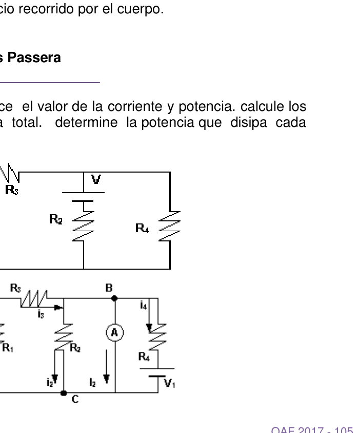
Topic: Circuits Metodi: Equivalent Circuit Reduction, Kirchhoff’s Laws Competenze: Physical Reasoning, Mathematical Modeling Objects: Resistor, Battery Fonte: Testo (PDF) — p.5
PT114. Scuola tecnica Alfredo Carlos Passera
Mocoretá, Corrientes.
In ogni circuito della figura, il valore di corrente e potenza non è noto. Calcola i numeri Valori di corrente totale e potenza totale. determina la potenza che ogni circuito.
a) R1 = 0,25 Ω R2 = 0,5 Ω R3 = 0,1 Ω R4 = 0,125 Ω V= 24v
b) R1 = 30Ω R2 = 50Ω R3 = 10 Ω R4 = 340 Ω V= 100v
106 - OAF 2017
Topic: Circuits Metodi: Equivalent Circuit Reduction, Kirchhoff’s Laws Competenze: Physical Reasoning, Mathematical Modeling Objects: Resistor, Battery Fonte: Testo (PDF) — p.5
PT114. The school of technology Alfredo Carlos Passera
It’s a mockery, currents.
In each circuit of the figure the value of current and power is unknown. Calculate the numbers . Total current and total power values. Determine the power that dissipates each The circuit.
a) R1 = 0,25 Ω R2 = 0,5 Ω R3 = 0,1 Ω R4 = 0,125 Ω V= 24v
b) R1 = 30Ω R2 = 50Ω R3 = 10 Ω R4 = 340 Ω V= 100v
The following is the list of the countries of the European Union:
Topic: Circuits Metodi: Equivalent Circuit Reduction, Kirchhoff’s Laws Competenze: Physical Reasoning, Mathematical Modeling Objects: Resistor, Battery Fonte: Testo (PDF) — p.5
PT115. Escuela Técnica Alfredo Carlos Passera
Mocoretá, Corrientes.
El volumen de un gas de 500cm ³ y está contenido en un recipiente a una presión de 80cm de mercurio y 0 ° C de temperatura, determinar cuál será la presión en atmosfera que quiere dicho gas, si el volumen disminuye a ¼ de litro y la temperatura aumenta a 37° C.
Topic: Thermodynamics Metodi: Ideal Gas Law Competenze: Physical Reasoning, Mathematical Modeling Objects: Gas Fonte: Testo (PDF) — p.5
PT115. Scuola tecnica Alfredo Carlos Passera
Mocoretá, Corrientes.
Il volume di un gas di 500 cm 3 e contenuto in un recipiente a una pressione di 80 cm di mercurio e 0 ° C di temperatura, determinare quale sarà la pressione atmosferica che vuole quel gas, se il volume diminuisce a 1⁄4 litro e la temperatura aumenta a 37° C.
Topic: Thermodynamics Metodi: Ideal Gas Law Competenze: Physical Reasoning, Mathematical Modeling Objects: Gas Fonte: Testo (PDF) — p.5
PT115. The school of technology Alfredo Carlos Passera
It’s a mockery, currents.
The volume of a gas is 500 cm3 and is contained in a container at a pressure of 80 cm of mercury and 0 ° C temperature, determining what the atmospheric pressure will be The gas is to be used in the manufacture of the product. 37° C.
Topic: Thermodynamics Metodi: Ideal Gas Law Competenze: Physical Reasoning, Mathematical Modeling Objects: Gas Fonte: Testo (PDF) — p.5
Que tren, que tren
PT116. Instituto Politécnico Superior General San Martín
Rosario, Santa Fe.
Qué tren, qué tren, chu chu…
Desde la Revolución Industrial, el tren ha sido uno de los medios de transporte más
importantes que existen. Su existencia fue un pilar para el mundo tal cual lo conocemos:
conectó ciudades permitiéndoles un gran crecimiento, permitió llegar productos de la
zona de producción a los centros de consumo o al puerto, facilitó la conexión entre
distintos países, etc. Sin embargo, a muchos ciudadanos su funcionamiento nos resulta
ajeno. En una primera aproximación uno puede decir que consiste de un conjunto de ejes
rígidos con ruedas de acero que ruedan sobre rieles de igual material, y son impulsados
por motores diesel o eléctricos.
a) Si un tren se está moviendo a 72 km/h y sus ruedas tienen 24 cm de diámetro,
¿cuál es la velocidad a la que giran? Explicite si está haciendo algún supuesto.
b) Muchas veces, ya sea en películas o situaciones reales, observamos que al
frenar las ruedas ―chillan‖. Esto sucede porque el mecanismo de frenado las
bloquea. Sabiendo esto, ¿cuál es la desaceleración del tren?. Si pudiese diseñar
un mecanismo inteligente que no las trabase, ¿cuál podría ser la máxima
desaceleración teórica?
Una de las mayores diferencias de los trenes respecto a otras opciones de transporte como el auto o el avión, es que sólo pueden desplazarse a lo largo de la vía. Es por ello que algunos problemas de infraestructura resultan mucho más desafiantes en el caso de los trenes. Uno de los principales conflictos del transporte es como enfrentar a las necesarias curvas del recorrido. c) Una de las primeras soluciones que se encuentran, para disminuir el esfuerzo de las vías y durmientes, es generar un peralte, es decir, que la vía tenga un ángulo no nulo respecto al suelo. Dibuje un diagrama de cuerpo libre de la situación. Encuentre una expresión que indique el aporte a la fuerza centrípeta debido al peralte. En caso de ser necesario, deje esa expresión en función del ángulo del peralte. d) Dada la imagen que se observa a continuación, calcule la distancia recorrida por las ruedas del lado interno del tren durante esa curva. ¿Qué diferencia tienen con las del lado externo?
Dado que es necesario que cada rueda entre y salga de la curva al mismo tiempo, la diferencia de distancia a recorrer resulta un problema. Esta complicación se suma a que
OAF 2017 - 107 las ruedas a un lado y otro del tren no son independientes, sino que están conectadas rígidamente por un eje (a diferencia de los automóviles que tienen el diferencial para sobreponerse a esta problemática). Así, para solucionar este problema la rueda, en vez de ser un ―cilindro‖, tiene forma de cono truncado. Esto permite que el diámetro de cada rueda ―cambie‖, creciendo hacia adentro del tren
e) Se sabe que el diámetro mínimo de la rueda es de 24 cm, que, de acuerdo a normas internacionales, su inclinación máxima es 3° y su ancho es 6 cm. ¿Cuál es el radio de giro mínimo que puede tener?
Datos:
µe = 0,15
µd = 0,09
Trocha del ferrocarril = 1,676 m = 5,5 pies
Rgiro = 600 m
Topic: Newtonian Mechanics, Rotational Dynamics Metodi: Kinematic Equations, Free-Body Diagram, Vector Decomposition Competenze: Physical Reasoning, Mathematical Modeling Objects: Wheel, Inclined Plane Fonte: Testo (PDF) — p.5
Che treno, che treno
PT116. Istituto Politetnico Superiore Generale San Martín
Rosario, Santa Fe.
Che treno, che treno, che treno, che treno, che treno, che treno, che treno, che treno, che treno, che treno, che treno, che treno, che treno, che treno, che treno, che treno, che treno, che treno, che treno, che treno, che treno, che treno, che treno, che treno, che treno, che treno, che treno, che treno, che treno, che treno, che treno, che treno, che treno, che treno, che treno, che treno, che treno, che treno, che treno, che treno, che treno, che treno, che treno, che treno, che treno, che treno, che treno, che treno, che treno, che treno, che treno, che treno, che treno, che treno, che treno, treno, che treno, che treno, treno, treno, treno, treno, treno, treno, treno, treno, treno, treno, treno, treno, treno, treno, treno, treno, treno, treno, treno, treno, treno, treno, treno, treno, treno, treno, treno, treno, treno, treno, treno, treno, treno, treno, treno, treno, treno, treno, treno, treno, treno, treno, treno, treno, treno, treno, treno, treno, treno, treno, treno, treno, treno, treno, treno, treno, treno, treno, treno di treno, treno di treno di treno di treno di treno di treno di treno di treno di treno di treno di treno di treno di treno di treno di treno. Dal momento della rivoluzione industriale, il treno è stato uno dei mezzi di trasporto più importanti. importanti che esistono. La sua esistenza fu un pilastro per il mondo come lo conosciamo: ha collegato le città consentendo loro una grande crescita, ha permesso di arrivare prodotti della La Commissione ha inoltre adottato una decisione che prevede che la rete di trasporto dei prodotti di cui all’articolo 1 del regolamento (CEE) n. diversi paesi, ecc. Tuttavia, per molti cittadini il suo funzionamento ci risulta straniero. In un primo approccio si può dire che consiste in un insieme di assi. rigidi con ruote in acciaio che ruotano su rotaie di materiale uguale, e sono spinti per motori diesel o elettrici. a) Se un treno si sta muovendo a 72 km/h e le sue ruote hanno un diametro di 24 cm, Qual è la velocità a cui girano? Spiegate se sta facendo qualche ipotesi. b) Molte volte, sia nei film che in situazioni reali, si osserva che il frenare le ruote - chiancano. Questo avviene perché il meccanismo di frenata blocca. Sapendo questo, qual è il rallentamento del treno? Se potessi progettare Un meccanismo intelligente che non li blocca, qual è la massima?
- Un rallentamento teorico?
Una delle maggiori differenze tra i treni e le altre opzioni di trasporto come l’auto o l’aereo, è che possono spostarsi solo lungo la strada. E ’ per questo che che alcuni problemi di infrastruttura risultano molto più difficili nel caso di i treni. Uno dei principali conflitti nel settore dei trasporti è quello di affrontare le corvi di percorso necessarie. (c) Una delle prime soluzioni che si trovano, per ridurre l’impegno di Le vie e i sonni, è generare un perlate, cioè che la via abbia un angolo. non si fa nulla rispetto al suolo. Disegna un diagramma di corpo libero della situazione. Trova un’espressione che indichi l’apporto alla forza centripetata a causa di perla. Se necessario, lasciare l’espressione in funzione dell’angolo di perla. d) Considerando l’immagine che segue, calcola la distanza percorsa da le ruote del lato interno del treno durante quella curva. Che differenza hanno? con quelle del lato esterno?
Poiché è necessario che ogni ruota entri e esci dalla curva allo stesso tempo, la La differenza di distanza da percorrere è un problema. Questa complicazione si aggiunge a
OAF 2017 - 107 Le ruote da un lato e dall’altro del treno non sono indipendenti, ma sono collegate. La differenza tra i prezzi di mercato e quelli di mercato è che la differenza tra i prezzi di mercato è molto elevata. La Commissione ha adottato una decisione che non può essere adottata. Quindi, per risolvere questo problema la ruota, invece Se è un cilindro, ha la forma di un cono troncato. Questo permette di avere il diametro di ciascuna ruota, cambiando, crescendo verso l’interno del treno
e) Si sa che il diametro minimo della ruota è di 24 cm, che, secondo il per norme internazionali, la sua inclinazione massima è 3° e la sua larghezza è di 6 cm. - Che cosa? E’ il minimo raggio di giro che può avere?
Datati: µe = 0,15 µd = 0,09 Stretta del ferrovia = 1.676 m = 5,5 piedi Rgiro = 600 m
Topic: Newtonian Mechanics, Rotational Dynamics Metodi: Kinematic Equations, Free-Body Diagram, Vector Decomposition Competenze: Physical Reasoning, Mathematical Modeling Objects: Wheel, Inclined Plane Fonte: Testo (PDF) — p.5
What train, what train
PT116. The French authorities have already confirmed that the Commission is not interested in the use of the information provided by the Commission.
Rosario, Santa Fe.
What train, what train, chu chu… Since the Industrial Revolution, the train has been one of the most important means of transport. important things that exist. His existence was a pillar of the world as we know it: It connected cities, enabling them to grow, enabling products from the The Commission has also proposed that the Community should be able to provide a more efficient and effective way of transporting goods to the Community. The Commission has already adopted a number of proposals. However, many citizens find its operation useful. A stranger. In a first approximation one can say that it consists of a set of axes rigid steel wheels that roll on rails of the same material, and are driven by diesel or electric motors. (a) If a train is moving at 72 km/h and its wheels are 24 cm in diameter, What’s the speed of their spins? Explain if you’re making any assumptions. (b) Many times, whether in films or in real situations, we observe that the The wheels are “chilling”. This is because the braking mechanism is It blocks. Knowing this, what is the train’s slowdown? If I could design A clever mechanism that doesn’t block them, what could be the maximum? Theoretical slowdown?
One of the biggest differences between trains and other transport options Like a car or a plane, they can only move along the track. That ‘s why . In the case of the European Union, the Commission has already established a number of measures to combat the problem of the the trains. One of the main transport conflicts is how to deal with the The curves of the route are required. (c) One of the first solutions to be found, to reduce the effort of The pathways and slopes, it’s to generate a bead, that is, the pathway has an angle. I’m not nullified by the ground. Draw a free-body diagram of the situation. Find an expression that indicates the contribution to the centrifugal force due to the The pearl. If necessary, leave that expression according to the angle of the The pearl. (d) Given the following image, calculate the distance travelled by the wheels on the inside of the train during that turn. What difference does it make? with the ones on the outside?
Since it is necessary for each wheel to enter and exit the curve at the same time, the The difference in distance is a problem. This complication adds to the fact that
The Commission shall adopt delegated acts in accordance with Article 21 of this Regulation. The wheels on either side of the train are not independent, but connected. The main difference between the two is that the vehicle is rigidly shaped by an axle (unlike cars which have the differential for The Commission has already taken a number of measures to address this problem. So, to solve this problem the wheel, instead If it’s a cylinder, it’s shaped like a truncated cone. This allows the diameter of each wheel, change, growing inside the train
(e) The minimum wheel diameter is known to be 24 cm, which, according to international standards, its maximum slope is 3° and its width is 6 cm. What? Is that the minimum radius of spin you can have?
The data: µe = 0,15 µd = 0,09 Railroad section = 1,676 m = 5.5 ft Rgiro = 600 m
Topic: Newtonian Mechanics, Rotational Dynamics Metodi: Kinematic Equations, Free-Body Diagram, Vector Decomposition Competenze: Physical Reasoning, Mathematical Modeling Objects: Wheel, Inclined Plane Fonte: Testo (PDF) — p.5
Merece J. J. Thomson el Premio Nobel?
PT117. Instituto Politécnico Superior General San Martín
Rosario, Santa Fe.
¿Merece J. J. Thomson el Premio Nobel? Es 28 de agosto del año 1906. La Real Academia Sueca de Ciencias está considerando entregarle el Premio Nobel de Física a Joseph John Thomson por sus investigaciones teóricas y experimentales sobre la conducción de la electricidad a través de los gases. En particular, J. J. Thomson demostró en abril de 1897, que los llamados rayos catódicos eran, en realidad, haces de corpúsculos. Estos corpúsculos recibieron más tarde el nombre de electrones. Como usted es un científico de renombre, la Real Academia le ha pedido que analice los trabajos de Thomson, por lo que usted se dispone a hacer unas mediciones en su propio laboratorio. El primer experimento que usted realiza se describe a continuación. Un haz de rayos catódicos, presumiblemente electrones, viaja a lo largo del eje de un tubo de vacío que contiene dos placas planas paralelas a dicho eje. Las placas tienen 4 cm de longitud y están separadas 2 cm. Luego de atravesar la zona de las placas, el haz continúa su camino y termina impactando en una pantalla fosforescente, la cual se ilumina con dicho impacto. La Figura siguiente muestra un esquema del dispositivo:
Usted estima que la velocidad v0 de los electrones es de 2×107 m/s. Entre las placas planas, la diferencia de potencial es de 400 V. Al ingresar a la zona de las placas, el haz se deflecta. De acuerdo con la Figura:
108 - OAF 2017 a) ¿Hacia dónde apunta el campo entre las placas? ¿Hacia arriba o hacia abajo? De acuerdo con Thomson, los electrones tienen carga negativa. De ser así, ¿hacia dónde se deflectará el haz?
b) Determine el valor del campo eléctrico entre las placas.
En el momento en que el haz emerge de la zona de las placas, el haz se ha deflectado de
manera que el vector velocidad forma 19,36° con el eje del tubo.
c) ¿Actúa alguna fuerza sobre los electrones en la dirección del eje? Calcule el
tiempo que demoran los electrones en atravesar la zona de las placas.
d) Calcule la componente y de la velocidad en el momento en que el haz emerge de
la zona de las placas.
e) A partir de lo anterior, determine la aceleración que adquieren los electrones
mientras viajan entre las placas.
f) A partir de la segunda ley de
Newton, calcule la relación carga-masa de los
electrones, es decir, el cociente entre la carga y la masa de los mismos.
g) Sabiendo que la carga del electrón es -1,6×10-19 C, determine su masa.
Hasta ahora, todo se viene dando tal como lo describió J. J. Thomson. En un arrebato de curiosidad, usted se pregunta cuán pequeña tendría que ser una partícula como el electrón. Entonces, se realiza el siguiente planteo: Consideremos que el electrón es una esfera de radio R con una carga Q distribuida en su superficie. Si pensamos que es un conductor cargado, podemos calcular la diferencia de potencial entre su superficie y el infinito y calcular entonces su capacidad. h) Escriba la expresión analítica de la capacidad así calculada. i) Escriba luego la expresión de la energía de un capacitor cargado que posee dicha capacidad.
Albert Einstein determinó, en 1905, que una partícula en reposo tiene una energía E0 = mc2, donde m es la masa de la partícula y c es la velocidad de la luz en el vacío. j) Suponiendo que, en el caso del electrón, toda esta energía fuese de origen electrostático, iguale dicha energía con la del conductor esférico cargado y despeje el radio R. k) Estime el radio R así determinado. De esta manera, usted habrá calculado una primera aproximación al radio clásico del electrón.
Datos: c = 3×108 m·s-1 k = 9×109 N·m2·C-2
Nota: Hoy en día, sabemos que el electrón no tiene estructura y debe considerárselo un ente puntual, por lo que calcular el radio clásico del electrón carece de sentido. Por supuesto, en 1906, usted no sabía eso.
Topic: Electrostatics, Electromagnetism Metodi: Kinematic Equations, Electric Potential Method, Vector Decomposition Competenze: Physical Reasoning, Mathematical Modeling Objects: Electron, Capacitor Fonte: Testo (PDF) — p.5
Merce J. J. Thomson il premio Nobel?
PT117. Istituto Politetnico Superiore Generale San Martín
Rosario, Santa Fe.
Merita J. J. Thomson il premio Nobel? E’ il 28 agosto del 1906. La Royal Swedish Academy of Sciences sta valutando a conferire il Premio Nobel per la Fisica a Joseph John Thomson per le sue ricerche I risultati della ricerca sono stati evidenziati in una serie di studi scientifici e scientifici che hanno condotto l’elettricità attraverso i gas. En
- In particolare, J. J. Thomson dimostrò nell’aprile del 1897 che i cosiddetti raggi catodici Erano, in realtà, delle facce di corpi. Questi corpi ricevettero in seguito il nome di elettroni. Come uno scienziato di fama, la Royal Academy ti ha chiesto di analizzare i I lavori di Thomson, quindi ti disponi di fare delle misure da solo. laboratorio. Il primo esperimento che si svolge è descritto qui sotto. Un raggio di raggi catodici, presumibilmente elettroni, viaggia lungo l’asse di un tubo di vuoto contenente due lastre piane parallele a tale asse. Le targhe hanno 4 di lunghezza di 2 cm e separati di 2 cm. Dopo aver attraversato la zona delle placche, il fascio continua il suo cammino e finisce colpendo uno schermo fosforescente, che si illumina con questo impatto. La seguente figura mostra un schema del dispositivo:
Si stima che la velocità v0 degli elettroni sia 2×107 m/s. Tra le targhe
- Piani, la differenza di potenza è di 400 V. Entrando nella zona delle targhe, il fascio si allontana. Secondo la figura:
108 - OAF 2017 a) Dove punta il campo tra le targhe? - Su o giù? Secondo Thomson, gli elettroni hanno una carica negativa. Se è così, Dove si allontanerà il fascio?
b) Determina il valore del campo elettrico tra le schede.
Il momento in cui il fascio emerge dalla zona delle placche, il fascio si è deflezionato da il vector di velocità forma 19,36° con l’asse del tubo. c) Agisce qualche forza sugli elettroni nella direzione dell’asse? Calcola il tempo che gli elettroni impiegano per attraversare la zona delle placche. d) Calcolare la componente e la velocità al momento in cui il fascio emerge da la zona delle targhe. e) A partire da quanto precede, determina l’accelerazione che gli elettroni acquisiscono mentre viaggiano tra le targhe. f) A partire dalla seconda legge di Newton, calcola il rapporto carico-massa dei gli elettroni, cioè il coefficiente tra la loro carica e massa. g) Sapendo che la carica dell’elettrone è -1,6×10-19 C, determina la sua massa.
Finora, tutto sta andando come J. lo ha descritto. J. Thomson. In un’esplosione di curiosità, vi chiedete quanto piccola dovrebbe essere una particella come la l’elettrone. Quindi si fa la seguente ipotesi: Consideriamo che l’elettrone è una sfera di radio R con una carica Q distribuita nel suo superficie. Se pensiamo che sia un conducente carico, possiamo calcolare la differenza di Potenziale tra la sua superficie e l’infinito e quindi calcolare la sua capacità. h) Scrivere l’espressione analitica della capacità così calcolata. i) Scrivi poi l’espressione dell’energia di un capacitore carico che ne possiede capacità.
Albert Einstein determinò nel 1905 che una particella in riposo ha un’energia E0 = mc2, dove m è la massa della particella e c è la velocità della luce nel vuoto. j) Supponendo che, nel caso dell’elettrone, tutta questa energia fosse di origine elettro-statico, tale energia è uguale a quella del conduttore sfero carico e
- Spegni la radio R. k) Valutare il raggio R così determinato. In questo modo, avrete calcolato un prima avvicinamento al raggio classico dell’elettrone.
Datati: c = 3×108 m·s-1 k = 9×109 N·m2·C-2
Nota: Oggi sappiamo che l’elettrone non ha struttura e dobbiamo considerare esso un La velocità di un’elettrone è molto bassa, quindi calcolare il raggio classico dell’elettrone non ha senso. Per Certo, nel 1906, non lo sapevi.
Topic: Electrostatics, Electromagnetism Metodi: Kinematic Equations, Electric Potential Method, Vector Decomposition Competenze: Physical Reasoning, Mathematical Modeling Objects: Electron, Capacitor Fonte: Testo (PDF) — p.5
He deserves J. J. Thomson the Nobel Prize?
PT117. The French authorities have already confirmed that the Commission is not interested in the use of the information provided by the Commission.
Rosario, Santa Fe.
Does J deserve it? J. Thomson the Nobel Prize? It’s August 28, 1906. The Royal Swedish Academy of Sciences is considering awarded the Nobel Prize in Physics to Joseph John Thomson for his research. Theoretical and experimental studies on the conduction of electricity through gases. En In particular, J. J. Thomson demonstrated in April 1897, that the so-called cathode rays They were, in fact, body builders. These bodies were later given the name of electrons. As you are a renowned scientist, the Royal Academy has asked you to analyze the Thomson’s work, so you’re willing to make some measurements on your own. The lab. The first experiment you do is described below. A beam of cathode rays, presumably electrons, travels along the axis of a a vacuum tube containing two flat plates parallel to that axis. The plates have four. cm in length and are separated by 2 cm. After crossing the plate area, the do It continues its way and ends up hitting a phosphorescent screen, which is illuminates with that impact. The following figure shows a diagram of the device:
You estimate the velocity of the electrons at v0 to be 2×107 m/s. Between the plates . flat, the potential difference is 400 V. When you enter the plate area, you do It’s deflected. According to the figure:
The Commission shall adopt delegated acts in accordance with Article 108 (2) of the Treaty. (a) Where does the field point between the plates? Up or down? According to Thomson, electrons have a negative charge. If that’s the case, Where will the beam be deflected?
(b) Determine the value of the electric field between the plates.
By the time the beam emerges from the plate area, the beam has deflected from so that the velocity vector forms 19,36° with the tube axis. (c) Does it apply any force to the electrons in the direction of the axis? Calculate the The time it takes for electrons to pass through the plate area. (d) Calculate the component and the speed at the time the beam emerges from the plate area. (e) From the above, determine the acceleration gained by the electrons while traveling between the plates. (f) From the second law of Newton, calculate the charge-mass ratio of the electrons, that is, the ratio of their charge to mass. g) Knowing that the electron charge is -1,6×10-19 C, determine its mass.
So far, everything’s been going on just like J. described it. J. I’m not going to tell you. In a snap of Curiosity, you wonder how small a particle like this would have to be. electron. Then the following assumption is made: Let’s say the electron is a sphere of radius R with a Q charge distributed in its surface. If we think it’s a loaded driver, we can calculate the difference of The potential between its surface and infinity and then calculate its capacity. (h) Write the analytical expression of the capacity thus calculated. (i) Write down the energy expression of a charged capacitor that has it. capacity.
Albert Einstein determined in 1905 that a particle at rest has an energy E0 = mc2, where m is the mass of the particle and c is the speed of light in the vacuum. (j) Assuming that, in the case of the electron, all this energy was originating The electrical energy of the electrical conductor is equal to that of the spherical conductor charged and Clear the R radio. (k) Estimate the radius R as determined. This way, you’ll have calculated a The first approximation to the classical electron radius.
The data: c = 3×108 m·s-1 k = 9×109 N·m2·C-2
Note: Today, we know that the electron has no structure and should consider it a The electron is not a pointed entity, so calculating the classical electron radius makes no sense. By Of course, in 1906, you didn’t know that.
Topic: Electrostatics, Electromagnetism Metodi: Kinematic Equations, Electric Potential Method, Vector Decomposition Competenze: Physical Reasoning, Mathematical Modeling Objects: Electron, Capacitor Fonte: Testo (PDF) — p.5
Sobre el puente (de hilo)
PT118. Instituto Politécnico Superior General San Martín
Rosario, Santa Fe.
Sobre el puente (de hilo). El comerciante árabe Al-Kancia regresa de un largo viaje. Antes de poner a lavar la ropa, como cualquier persona de bien, revisa sus bolsillos y encuentra en ellos un conjunto de monedas de las que no tenía registro. Apasionado por la Física y extremadamente ansioso, Al-Kancia desea determinar el calor específico del material de las misteriosas monedas halladas. Para cumplir con su cometido, coloca 0,25 L de agua (a temperatura ambiente) en un recipiente aislante de excelente calidad y utiliza un calentador eléctrico para llevarla hasta
OAF 2017 - 109 el punto de ebullición. El calentador eléctrico consta de una resistencia de 40 Ohm por la que circula una corriente de 3 A. a) ¿Cuánto tarda el agua en comenzar a ebullir?
Tan pronto como el agua comienza a hervir, el personaje echa 25 monedas idénticas, cada una de masa 3,8 g y a temperatura ambiente (20 °C), en el interior del recipiente. Luego de un buen rato, determina con ayuda de una termocupla (paciencia, ¡está más adelante!) que la temperatura del agua es de 88 °C. b) ¿Cuánto vale el calor específico de la aleación de la que están hechas las misteriosas monedas?
Para determinar la temperatura final del agua Al-Kancia utiliza una termocupla y un circuito llamado ‗puente de hilo‘. Una termocupla es un elemento que genera una diferencia de potencial fija a partir de una diferencia de temperatura (efecto Seebeck). La termocupla utilizada provee una diferencia de potencial fija (1,15 V) más un valor que depende de la diferencia de temperatura entre el lugar donde se coloca el sensor y el ambiente (∆T = T - Tamb)
La gráfica presenta la respuesta de la termocupla utilizada; esta respuesta indica la tensión provista por la termocupla en función de la diferencia de temperatura (¡a lo que debe sumarse la tensión fija!). c) ¿Cuál es el valor de la fem (total) provista por la termocupla cuando el sistema alcanzó su equilibrio térmico?
Un circuito de puente de hilo se utiliza para medir valores de tensión provistos por alguna fuente constante utilizando un ‗método de cero‘. El funcionamiento del circuito es como sigue: se conecta una fuente Es de valor conocido y estabilizado en temperatura, en este caso una pila Weston de valor 1,01864 V, y se mueve el contacto C hasta que el galvanómetro indica que no circula corriente; el valor de la resistencia entre A y C1 es Rs. Luego se conecta la fem desconocida εx y se mueve el contacto C hasta que el galvanómetro G vuelve a indicar que no circula corriente. El valor de R entre A y C2 en este punto se llama Rx.
110 - OAF 2017 Nota: el tramo AB es un potenciómetro, cuyo comportamiento se puede representar así
d) Verifique que en el circuito puente de hilo la fem desconocida está dada por:
𝜀𝑥= 𝑅𝑥
𝑅𝑠
𝐸𝑠
El tramo AB es en realidad un hilo (de allí el nombre del método) de resistividad ρ, longitud total L y sección S, el punto C es una corredera que permite variar la longitud del tramo AC. e) ¿Cuál es la relación de longitudes del tramo AC cuando se conecta la fuente conocida (AC1) y del tramo AC cuando se conecta la fuente desconocida (AC2)?
Datos: δagua = 1000 kg·m-3 cagua = 1 cal·g-1·ºC-1 1 cal = 4,186 J
Topic: Thermodynamics, Circuits Metodi: First Law of Thermodynamics, Kirchhoff’s Laws, Equivalent Circuit Reduction Competenze: Physical Reasoning, Mathematical Modeling Objects: Calorimeter, Resistor, Galvanometer, Battery Fonte: Testo (PDF) — p.5
Sull’intero ponte (filamento)
PT118. Istituto Politetnico Superiore Generale San Martín
Rosario, Santa Fe.
Sul ponte. Il mercante arabo Al-Kancia torna da un lungo viaggio. Prima di andare a lavare i vestiti, Come ogni brava persona, controlla le sue tasche e trova in esse un insieme di monete di cui non avevo alcun registro. Passione per la fisica e estremamente. Anzioso, Al-Kancia vuole determinare il calore specifico del materiale dei misteriosi.
- Le monete trovate. Per svolgere il suo compito, mette 0,25 L di acqua (a temperatura ambiente) in un contenitore isolante di ottima qualità e utilizza un riscaldatore elettrico per portarlo fino a
OAF 2017 - 109 il punto di ebollizione. Il riscaldatore elettrico ha una resistenza di 40 Ohm per la che circola un corrente di 3 A. a) Quanto tempo ci vuole per iniziare a bollire l’acqua?
Non appena l’acqua inizia a bollire, il personaggio lancia 25 monete identiche. ciascuna di massa di 3,8 g e a temperatura ambiente (20 °C), all’interno del recipiente. Dopo un po’ di tempo, determina con l’aiuto di una termocoppia (pazienza, è più (cfr. punto 1.5) che la temperatura dell’acqua è 88 °C. b) Quanto vale il calore specifico dell’allea di cui sono fatte le
- Le monete misteriose?
Per determinare la temperatura finale dell’acqua Al-Kancia utilizza una termopla e un circuito chiamato “ponte di filo”. Un termocuplo è un elemento che genera un La differenza di potenziale fisso da una differenza di temperatura (effetto Seebeck). La il termopoppello utilizzato fornisce una differenza di potenziale fisso (1,15 V) più un valore che Dipende dalla differenza di temperatura tra il luogo in cui si colloca il sensore e il ambiente (∆T = T - Tamb)
Il grafico mostra la risposta della termocoppella utilizzata; questa risposta indica la La tensione fornita dalla cupola termico in funzione della differenza di temperatura (a la tensione fissa deve essere aggiunta!). c) Qual è il valore del fem (total) fornito dalla termocoppia quando il sistema ha raggiunto il suo equilibrio termico?
Un circuito di ponte di filo è usato per misurare i valori di tensione forniti da alcuni fonte costante utilizzando un ̳metodo di zero. Il funzionamento del circuito è come segue: si collega una fonte è di valore noto e stabilizzato a temperatura, in questo In questo caso, un Weston stack di 1.01864 V, e il contatto C si muove fino al Galvanometro indica che non circola corrente; il valore della resistenza tra A e C1 è Rs. Poi si collega l’espressione fem sconosciuta εx e si muove il contatto C fino a quando l’ Il galvanometro G indica di nuovo che non circola corrente. Il valore di R tra A e C2 in Questo punto si chiama Rx.
110 - OAF 2017 Nota: il tratto AB è un potenziometro, il cui comportamento può essere rappresentato così
d) Verificare che nel circuito di ponte di filo la fem sconosciuta sia data da: 𝜀𝑥= 𝑅𝑥 𝑅𝑠 𝐸𝑠
Il tratto AB è in realtà un filo (da qui il nome del metodo) di resistività ρ, L’intero lunghezza L e la sezione S, il punto C è una pista che permette di variare la lunghezza del Strato AC. e) Qual è il rapporto di lunghezze del tratto AC quando si collega la fonte la fonte non nota (AC1) e la parte AC quando si collega la fonte non nota (AC2)?
Datati: δacqua = 1000 kg·m-3 acqua = 1 cal·g-1·oC-1 1 cal = 4.186 J
Topic: Thermodynamics, Circuits Metodi: First Law of Thermodynamics, Kirchhoff’s Laws, Equivalent Circuit Reduction Competenze: Physical Reasoning, Mathematical Modeling Objects: Calorimeter, Resistor, Galvanometer, Battery Fonte: Testo (PDF) — p.5
Over the (wire) bridge
PT118. The French authorities have already confirmed that the Commission is not interested in the use of the information provided by the Commission.
Rosario, Santa Fe.
Over the bridge. The Arab merchant Al-Kancia returns from a long journey. Before I wash the clothes, Like any good person, he checks his pockets and finds in them a set of Coins I had no record of. Passionate about physics and extremely. Eager, Al-Kancia wants to determine the specific heat of the material from the mysterious. found coins. To accomplish its task, it places 0.25 L of water (at room temperature) in a It is an excellent insulating container and uses an electric heater to carry it up to the
The Commission shall adopt delegated acts in accordance with Article 21 of this Regulation. the boiling point. The electric heater has a resistance of 40 Ohm per It’s a 3A current. (a) How long does it take for water to boil?
As soon as the water starts to boil, the character throws 25 identical coins, Each of 3,8 g in mass and at room temperature (20 °C), inside the container. After a long time, determine with the help of a thermocouple (patience, it is more (see below) that the water temperature is 88 °C. (b) What is the specific heat value of the alloy from which the alloys are made? mysterious coins?
To determine the final water temperature Al-Kancia uses a thermocouple and a circuit called a wire bridge. A thermocouple is an element that generates a The difference in the fixed potential from a difference in temperature (seebeck effect). La The thermocouple used provides a fixed potential difference (1.15 V) plus a value that The temperature difference between the sensor and the sensor is dependent on the temperature difference between the sensor and the sensor. The following is the list of the following:
The graph shows the response of the thermocouple used; this response indicates the The voltage provided by the thermocouple is based on the temperature difference (to what The voltage must be added to the voltage). (c) What is the value of the total fem provided by the thermocouple when the system Did it reach its thermal equilibrium?
A wire bridge circuit is used to measure voltage values provided by some constant source using a ̳zero method. The circuit is running like this. Next: a source is connected to it of known value and stabilized at temperature, in this If you have a Weston battery of 1,01864 V, and you move contact C until the The galvanometer indicates that no current is circulating; the resistance value between A and C1 is Rs. Then the unknown fem εx is connected and the contact C is moved until the The galvanometer G again indicates that no current is circulating. The value of R between A and C2 in This point is called Rx.
The following is the list of the countries of the European Union: Note: the AB section is a potentiometer, whose behavior can be represented as follows
(d) Check that in the wire bridge circuit the unknown fem is given by: 𝜀𝑥= 𝑅𝑥 𝑅𝑠 𝐸𝑠
The AB strand is actually a thread (hence the name of the method) of resistivity ρ, Total length L and section S, point C is a slide that allows the length of the slide to vary. I’m going to AC. (e) What is the AC section length ratio when the source is connected the known (AC1) and the AC section when the unknown source (AC2) is connected?
The data: The water is 1000 kg·m-3 water = 1 cal·g-1·oC-1 1 cal = 4,186 J
Topic: Thermodynamics, Circuits Metodi: First Law of Thermodynamics, Kirchhoff’s Laws, Equivalent Circuit Reduction Competenze: Physical Reasoning, Mathematical Modeling Objects: Calorimeter, Resistor, Galvanometer, Battery Fonte: Testo (PDF) — p.5
PT119. Escuela Nueva Juan Mantovani
Argüello, Córdoba.
Una esfera de masa M comprime a un resorte una cierta distancia ―X‖, como indica la Figura. Al ser liberada, la esfera sale con una velocidad ―v‖ y realiza un recorrido lineal sin rozamiento hasta impactar inelásticamente al bloque B, que se encuentra a 5m de distancia.
a) Encontrar la expresión general que permite calcular la constante elástica k del resorte a partir de los datos. b) Calcular la constante elástica k suponiendo los siguientes datos: M = 300g. MB = 0,2kg. X = 4cm V = 4 m/s.
Suponiendo que el choque es inelástico y que después del impacto el coeficiente de rozamiento dinámico para el cuerpo ―esfera-bloque‖ es de μd=0,3: c) Calcular la distancia que ambos recorren luego del impacto hasta frenarse.
Info útil Energía potencial elástica: Eelastica=1 2 k x 2
OAF 2017 - 111
Topic: Conservation of Energy, Conservation of Momentum Metodi: Conservation of Energy, Conservation of Momentum, Hooke’s Law Competenze: Physical Reasoning, Mathematical Modeling Objects: Spring, Sphere, Block Fonte: Testo (PDF) — p.5
PT119. Scuola Nuova Juan Mantovani
Argüello, Cordoba.
Una sfera di massa M comprime una resorte una certa distanza ―X‖, come indicato dalla
- Figura. Una volta rilasciata, la sfera esce con una velocità ―v‖ e fa un percorso lineare senza Raggiustare inelasticamente il blocco B, situato a 5 m da Distanza.
a) Trovare l’espressione generale che permette di calcolare la costante elastica k di
- La prima volta che si tratta di un’operazione di ricerca, b) Calcolare la costante elastica k supponendo i seguenti dati: M = 300g. MB = 0,2kg. X = 4cm V = 4 m/s.
Supponiamo che la collisione sia inelastica e che dopo l’impatto il coefficiente di Il risanamento dinamico del corpo - sfera-blocco - è di μd=0,3: c) Calcolare la distanza tra entrambi dopo l’impatto fino al frenaggio.
Informazioni utili Potenzialmente energia elastica: Elastico = 1 2 k x 2
OAF 2017 - 111
Topic: Conservation of Energy, Conservation of Momentum Metodi: Conservation of Energy, Conservation of Momentum, Hooke’s Law Competenze: Physical Reasoning, Mathematical Modeling Objects: Spring, Sphere, Block Fonte: Testo (PDF) — p.5
PT119. The New Juan Mantovani School
Argüello, Cordoba. I know.
A mass sphere M compresses a spring a certain distance ―X‖, as indicated by the It’s a figure. When released, the sphere exits at a velocity ―v‖ and makes a linear path without The resulting material is a rubber-like material, which is then rubbed into the rubber. distance.
(a) Find the general expression that allows the elastic constant k to be calculated from The data is spring-based. (b) Calculate the elastic constant k by assuming the following data: M = 300g. MB = 0,2kg. X = 4cm V = 4 m/s.
Assuming that the impact is inelastic and that after impact the coefficient of The dynamic friction for the body - sphere-block - is μd = 0.3: (c) Calculate the distance between the two after impact and braking.
Useful info The energy potential of the gas is: Elastic = 1 2 k x 2
The following is the list of the countries of the European Union:
Topic: Conservation of Energy, Conservation of Momentum Metodi: Conservation of Energy, Conservation of Momentum, Hooke’s Law Competenze: Physical Reasoning, Mathematical Modeling Objects: Spring, Sphere, Block Fonte: Testo (PDF) — p.5
Conductividad electrica
PT120. Escuela Nueva Juan Mantovani
Argüello, Córdoba.
Se denomina conductancia eléctrica (G) a la facilidad que ofrece un material al paso de la corriente eléctrica; es decir, que la conductancia es la propiedad inversa de la resistencia eléctrica R. El Siemens [S] es la unidad de medida de la conductancia y representa la inversa de la resistencia. Por lo tanto, [G]=S= Ω−1 La conductividad C puede definirse como la inversa de la resistividad ρ de ese material, en Ω.cm, por lo tanto [C]= S/cm = Ω−1·cm−1.
R=ρ l S G= 1 R=1 ρ s l =C s l
Para realizar la medición de la conductividad eléctrica, se plantea la construcción de un conductímetro casero usando un circuito eléctrico como muestra la Figura. La cubeta, de longitud l y sección s, se llena con el líquido cuya conductividad C desea medirse y se cierra el circuito, midiendo la diferencia de potencial aplicada y la intensidad de corriente producida.
Considerando despreciable la resistencia que provocan los cables, se pide: a) Encontrar la expresión general que permite calcular la conductividad C del material líquido que se coloca en la cubeta. b) Calcular lo anterior suponiendo los siguientes valores: V = 12v. I = 3A. l = 20cm. s = 2cm2. c) Si se colocara un líquido cuya conductividad es de C=0,03 S/cm y se conecta el circuito a una batería de 24V, ¿Cuál será el valor de la intensidad de corriente? d) Suponiendo que el circuito se conecta a 24V durante 40 segundos y la cubeta se llena con un líquido que tiene una conductividad de C=0,003 S/cm ¿A qué temperatura llegará el líquido si su densidad es de 1,21 g/ml, su calor específico es de 0,9 cal/g.ºC y su temperatura actual es de 20ºC? (despreciar disipación de calor al exterior).
Topic: Circuits Metodi: Kirchhoff’s Laws, First Law of Thermodynamics Competenze: Physical Reasoning, Mathematical Modeling Objects: Resistor, Battery Fonte: Testo (PDF) — p.5
Conduttura elettrica
PT120. Scuola Nuova Juan Mantovani
Argüello, Cordoba.
La conduzione elettrica (G) è definita la facilità che un materiale offre al passaggio della corrente elettrica; cioè, la conduttività è la proprietà inversa della resistenza elettrica R. Siemens [S] è l’unità di misura della condotta e rappresenta l’inverso della resistenza. Quindi, [G]=S= Ω−1 La conducibilità C può essere definita come l’inverso della resistività ρ di quel materiale, in Ω.cm, quindi [C]= S/cm = Ω−1·cm−1.
R=ρ l S G= 1 R=1 ρ s l =C s l
Per la misurazione della conductività elettrica, si Propone la costruzione di un conduttore casalistico usando un circuito elettrico come mostra la figura. La vasca, di L’acqua è stata riempita con il liquido di cui C. vuole misurare e si chiude il circuito. misurando la differenza di potenziale applicata e l’intensità di corrente prodotta.
Considerando dispregiata la resistenza che provocano i Cable, si chiede: a) Trovare l’espressione generale che permette di calcolare la conducibilità C del materiale liquido che viene messo nel bucato. b) Calcolare il precedente supponendo i seguenti valori: V = 12v. I = 3A. l = 20cm. s = 2cm2. c) Se si inserisce un liquido con una conductività di C=0,03 S/cm e si collega il Circuito a batteria 24V, qual è il valore dell’intensità di corrente? d) Supponendo che il circuito si connette a 24V per 40 secondi e che il cubo si riempito con un liquido che ha una conducibilità di C=0,003 S/cm la temperatura raggiungerà il liquido se la densità è di 1,21 g/ml, il suo calore specifico è di 0,9 cal/g.o.C. e la sua temperatura attuale è di 20oC? (spreprezziamo la dissipazione di calore all’esterno).
Topic: Circuits Metodi: Kirchhoff’s Laws, First Law of Thermodynamics Competenze: Physical Reasoning, Mathematical Modeling Objects: Resistor, Battery Fonte: Testo (PDF) — p.5
The following shall be added to the list of the following:
PT120. The New Juan Mantovani School
Argüello, Cordoba. I know.
Electrical conductivity (G) is the ease with which a material can pass through the Electric current; that is, that conductivity is the inverse property of resistance electrical R. The Siemens [S] is the unit of measurement of the conductivity and represents the inverse of the resistance. So [G]=S= Ω−1 The conductivity C can be defined as the inverse of the resistivity ρ of that material, In Ω.cm, therefore [C]=S/cm = Ω−1·cm−1.
R=ρ l S G= 1 R=1 ρ s l =C s l
In order to measure electrical conductivity, the It proposes building a home conductor using an electrical circuit as shown in Figure 1. The bucket, of length l and section s, is filled with the liquid whose C conductivity wants to be measured and the circuit is closed. measuring the difference in applied potential and intensity of the current produced.
Considering the resistance of the The following is the list of the cables: (a) Find the general expression for calculating the C conductivity of the liquid material to be placed in the bucket. (b) Calculate the above by assuming the following values: V = 12v. I = 3A. l = 20cm. s = 2cm2. (c) If a liquid with a conductivity of C=0.03 S/cm is placed and the circuit to a 24V battery, what will be the current intensity value? (d) Assuming that the circuit is connected to 24V for 40 seconds and the bucket is It is filled with a liquid that has a conductivity of C=0,003 S/cm. The temperature will reach the liquid if its density is 1,21 g/ml, its specific heat is 0.9 cal/g.o.C. and its current temperature is 20oC? (disregarding the disposal of heat outside).
Topic: Circuits Metodi: Kirchhoff’s Laws, First Law of Thermodynamics Competenze: Physical Reasoning, Mathematical Modeling Objects: Resistor, Battery Fonte: Testo (PDF) — p.5
PT121. Escuela Nueva Juan Mantovani
Argüello, Córdoba.
Un cubo de metal de 15cm de lado y 3kg de masa, contiene en su interior un gas ideal
sometido a una presión de 1,5atm, y se encuentra sumergido en 10l de agua a 5ºC, en
equilibrio térmico. Luego se agregan a dicho recipiente 50l de agua a 90ºC.
Considerando nulo el calor especifico de gas y el ancho de las paredes del cubo, y el
recipiente perfectamente adiabático:
- ¿Cuál es la presión final que adquiere el gas encerrado?
- ¿Cuántos moles de gas hay encerrados?
Datos útiles Dilatación volumétrica: Vf=V0+ γVV0ΔT Calor específico metal: cM=0,031 cal/gºC Coeficiente de dilatación volumétrico: γV = 36 · 10-6 °C-1 1 atm = 101325 Pa
112 - OAF 2017
K=ºC+273
1cal = 4,187 J
1 J = 0,00987 atm·l
R=0,082 atm·l
mol·K
Topic: Thermodynamics Metodi: First Law of Thermodynamics, Ideal Gas Law Competenze: Physical Reasoning, Mathematical Modeling Objects: Gas, Calorimeter Fonte: Testo (PDF) — p.5
PT121. Scuola Nuova Juan Mantovani
Argüello, Cordoba.
Un cubo di metallo di 15 cm di lato e 3 kg di massa, contiene dentro un gas ideale sottoposto a una pressione di 1,5 atm, e immerso in 10l di acqua a 5oC, in equilibrio termico. Poi si aggiungono a tale recipiente 50 li di acqua a 90 °C. Considerando che il calore specifico del gas e la larghezza dei muri del cubo sono nulli, e contenitore perfettamente adiabatico:
- Qual è la pressione finale che acquista il gas inchiuso?
- Quanti molli di gas sono chiusi?
Dati utili Dilazione volumetrica: Vf=V0+ γVV0ΔT Calore specifico metallo: cM=0,031 cal/goC Coefficiente di dilatazione volumetrica: γV = 36 · 10-6 °C-1 1 atm = 101325 Pa
112 - OAF 2017 K=ºC+273 1 cal = 4.187 J 1 J = 0,00987 atm·l R=0,082 at·l Mol·K
Topic: Thermodynamics Metodi: First Law of Thermodynamics, Ideal Gas Law Competenze: Physical Reasoning, Mathematical Modeling Objects: Gas, Calorimeter Fonte: Testo (PDF) — p.5
PT121. The New Juan Mantovani School
Argüello, Cordoba. I know.
A 15cm side metal cube and 3kg mass, contains an ideal gas inside. It is subjected to a pressure of 1.5 atm, and is submerged in 10l of water at 5oC, in The heat balance. Then 50 litres of water at 90°C are added to the container. Considering zero the specific heat of the gas and the width of the cube walls, and the Perfectly adiabatic container:
- What is the final pressure that the gas in the container acquires?
- How many gas springs are locked up?
Useful data The following shall be reported: The heat specific to the metal: cM=0,031 cal/goC The following is the list of the parameters of the test: 1 atm = 101325 Pa
The Commission shall adopt delegated acts in accordance with Article 21 of this Regulation. K=ºC+273 1 cal = 4,187 J 1 J = 0,00987 atm·l R = 0,082 atm·l Other
Topic: Thermodynamics Metodi: First Law of Thermodynamics, Ideal Gas Law Competenze: Physical Reasoning, Mathematical Modeling Objects: Gas, Calorimeter Fonte: Testo (PDF) — p.5
Thompson desenterrado
PT122. Instituto Educativo Dailan
Pilar, Buenos Aires.
Thompson desenterrado. En 1897 Thomson realizó un experimento que terminó contribuyendo al ―descubrimiento‖ del electrón, con el famoso ―tubo de rayos catódicos‖ (hoy sabemos que son haces de electrones)-En determinada etapa de la experiencia, realizó la siguiente secuencia:
-
Hizo pasar el haz por una región de campos eléctrico E y magnético B, uniformes y perpendiculares entre sí y al haz de electrones.
-
Ajustó el valor del campo eléctrico hasta que el haz no se deflectaba.
-
Apagó el campo eléctrico y midió el radio de curvatura R de la desviación del haz
a) ¿Cuál es la velocidad de los electrones cuando el campo eléctrico es el adecuado para que el haz no se deflecte? b) Determinar la relación carga a masa en función de E, B y R.
Topic: Electromagnetism, Magnetism Metodi: Lorentz Force Analysis Competenze: Physical Reasoning, Mathematical Modeling Objects: Electron, Particle Beam Fonte: Testo (PDF) — p.5
Thompson scavato
PT122. Istituto Educativo Dailan
Pilar, Buenos Aires.
Thompson scavato. Nel 1897 Thomson eseguì un esperimento che finì contribuendo alla “scoperta” L’elettrone, con il famoso “tubo di raggi catodici” (oggi sappiamo che sono fasci di L’elettro) - In un certo stadio dell’esperienza, ha eseguito la seguente sequenza:
-
Ha fatto passare il fascio attraverso una regione di campi elettrici E e magnetici B, uniformi. e perpendicolari tra loro e il fascio di elettroni.
-
Ha regolato il valore del campo elettrico finché il fascio non si è deflezionato.
-
Ha spento il campo elettrico e ha misurato il raggio di curvatura R della deviazione del fascio.
a) Qual è la velocità degli elettroni quando il campo elettrico è il adeguato per non deviare il fascio? b) Determinare il rapporto carico-massa in base a E, B e R.
Topic: Electromagnetism, Magnetism Metodi: Lorentz Force Analysis Competenze: Physical Reasoning, Mathematical Modeling Objects: Electron, Particle Beam Fonte: Testo (PDF) — p.5
Thompson dug up
PT122. The Dailan Educational Institute
Pilar, Buenos Aires. What is it?
Thompson dug up. In 1897 Thomson conducted an experiment that ended up contributing to the “discovery” The electron, with the famous “cathodic ray tube” (today we know they’re beams of electrons) - At a certain stage of the experiment, he performed the following sequence:
-
He passed the beam through a region of electric fields E and magnetic fields B, uniform. and perpendicular to each other and to the electron beam.
-
Adjusted the electric field value until the beam deflected.
-
Shut off the electric field and measured the radius of curvature R of the beam deviation.
(a) What is the velocity of the electrons when the electric field is adequate so that the beam does not deflect? (b) Determine the load-to-mass ratio based on E, B and R.
Topic: Electromagnetism, Magnetism Metodi: Lorentz Force Analysis Competenze: Physical Reasoning, Mathematical Modeling Objects: Electron, Particle Beam Fonte: Testo (PDF) — p.5
El disparo del millon
PT123. Instituto Educativo Dailan
Pilar, Buenos Aires.
El disparo del millón. Un programa de televisión que fomenta la alfabetización científica otorga un importante premio de dinero al participante que logre el siguiente desafío: disparar una piedrita verticalmente hacia arriba paraque impacte en un cartel colgante. El disparo se efectúa desde el piso, comprimiendo un resorte en una base preparada para su colocación.
Puede elegir entre dos resortes proporcionados por la producción. El cartel es frágil y el
impacto debe ser superficial ya que de romperse se considera el objetivo no logrado.
Dispone de suficiente tiempo para manipular y medir, pero tiene la siguiente restricción:
debe lograrlo en un solo intento. Cuenta con una regla milimétrica y tiene como datos
conocidos: la masa de la piedra 30 gramos y la altura del cartel, 4 m.
El concursante ―cuelga‖ la piedrita en el resorte A mientras es sostenido verticalmente, y , cuando la masa se encuentra en equilibrio, mide una elongación de 1cm. Repite la prueba con el resorte B y la elongación resulta 2cm.
a) ¿Cuál de los resortes habría que comprimir más para impulsar la piedra? b) ¿Es cierto que en este caso el resorte más blando requiere el doble de compresión que el resorte más duro para llegar a la misma altura?¿Por qué? c) Bajo ciertas aproximaciones puede establecerse una relación entre la compresión del resorte y la altura alcanzada. ¿Cuál es esa relación? ¿Con qué aproximaciones? d) Supongamos que sos el participante, y te interesa el premio. Relatá (incluyendo los cálculos pertinentes) cómo sería tu intento de disparo exitoso.
OAF 2017 - 113
Topic: Conservation of Energy, Newtonian Mechanics Metodi: Conservation of Energy, Hooke’s Law, Kinematic Equations Competenze: Physical Reasoning, Mathematical Modeling Objects: Spring, Projectile Fonte: Testo (PDF) — p.5
Il colpo del milione
PT123. Istituto Educativo Dailan
Pilar, Buenos Aires.
Il colpo del milione. Un programma televisivo che promuove la alfabetizzazione scientifica offre un importante contributo premio di denaro al partecipante che raggiunge il seguente sfida: sparare un piccolo petro Verticalmente verso l’alto, per non colpire un cartello appeso. Il fuoco è in corso. dal pavimento, compresso un’uscita su una base pronta per la sua collocazione.
È possibile scegliere tra due sorgenti fornite dalla produzione. Il cartello è fragile e il L’impatto deve essere superficiale, poiché il rompere è considerato come un obiettivo non raggiunto. Ha abbastanza tempo per manipolare e misurare, ma ha la seguente limitazione: deve farlo con un solo tentativo. Ha una regola millimetrica e ha come dati conosciuti: la massa della pietra 30 grammi e l’altezza del cartello, 4 m.
Il concorrente “pendono” la pietra nella primavera A mentre è sostenuta verticalmente, e , Quando la massa è in equilibrio, misura un allungamento di 1 cm. Ripeti la frase. prova con la primavera B e l’allungamento è di 2 cm.
a) Quale delle sorgenti dovrebbe essere più compressa per spingere la pietra? b) È vero che in questo caso la primavera più morbida richiede il doppio di Compressione che la primavera più dura per raggiungere la stessa altezza? Perché? c) Con alcuni approcci si può stabilire un rapporto tra l’attività di ricerca e di ricerca. compressione della sorgente e altezza raggiunta. Qual è la relazione? Con cosa?
- Approximati? d) Supponiamo che tu sia il partecipante e che ti interessi per il premio. Relata (inclusi Le calcoli pertinenti) su come sarebbe stato il tuo tentativo di colpo di arma.
OAF 2017 - 113
Topic: Conservation of Energy, Newtonian Mechanics Metodi: Conservation of Energy, Hooke’s Law, Kinematic Equations Competenze: Physical Reasoning, Mathematical Modeling Objects: Spring, Projectile Fonte: Testo (PDF) — p.5
The shot of the million
PT123. The Dailan Educational Institute
Pilar, Buenos Aires. What is it?
The million shot. A television programme promoting scientific literacy provides a major Cash prize for the contestant who achieves the following challenge: shooting a stone Vertically upwards so as not to impact a hanging sign. The shooting is taking place. from the floor, compressing a spring into a base ready for placement.
You can choose between two sources provided by the production. The sign is fragile and the The impact must be superficial, as the aim is not achieved. It has sufficient time to manipulate and measure, but it has the following constraint: You must do it in one attempt. It has a millimeter rule and it has data. known: the stone’s mass 30 grams and the height of the sign, 4 m.
The contestant “hangs” the stone in spring A while it is held vertically, and , When the mass is in equilibrium, it measures an elongation of 1 cm. Repeat the line. Test with spring B and elongation results in 2 cm.
(a) Which of the springs would have to be compressed more to propel the stone? (b) Is it true that in this case the softest spring requires twice as much as Compression than the harshest spring to reach the same height? (c) A relationship between the spring compression and height achieved. What’s that relationship? With what? What about the approaches? (d) Suppose you are a participant, and you are interested in the prize. Report (including The relevant calculations) how would your successful shooting attempt be.
The following is the list of the Member States’ financial statements:
Topic: Conservation of Energy, Newtonian Mechanics Metodi: Conservation of Energy, Hooke’s Law, Kinematic Equations Competenze: Physical Reasoning, Mathematical Modeling Objects: Spring, Projectile Fonte: Testo (PDF) — p.5
El ciclo tedioso
PT124. Instituto Educativo Dailan
Pilar, Buenos Aires.
El ciclo tedioso. Una masa de nitrógeno evoluciona según el ciclo de la figura adjunta. La presión en el estado A vale P(a) = 500 Kpa y el volumen V(a)= 0.002 m3. Suponiendo que el gas se comporta como ideal (cv= 0.741 J/Gk), calcular: a) Energía recibida o cedida mediante calor por el sistema en las evoluciones A-B, B-C y C-A. b) El trabajo realizado por o contra el sistema en las mismas evoluciones. c) La variación de la energía interna para las mismas evoluciones. d) El trabajo neto realizado por el sistema y el rendimiento del ciclo.
Topic: Thermodynamics Metodi: Thermodynamic Cycle Analysis, First Law of Thermodynamics, Ideal Gas Law Competenze: Physical Reasoning, Mathematical Modeling Objects: Gas Fonte: Testo (PDF) — p.5
Il ciclo tedioso
PT124. Istituto Educativo Dailan
Pilar, Buenos Aires.
Il ciclo tedioso. Una massa di azoto evolve secondo il ciclo della figura allegata. La pressione sul stato A vale P(a) = 500 Kpa e il volume V(a) = 0,002 m3. Supponendo che il gas si connesse come ideale (cv=0.741 J/Gk), calcolare: a) Energia ricevuta o ceduta dal sistema mediante calore nelle evoluzioni A-B; B-C y C-A. b) Il lavoro svolto per o contro il sistema nelle stesse evoluzioni. c) La variazione dell’energia interna per le stesse evoluzioni. d) Il lavoro netto del sistema e la performance del ciclo.
Topic: Thermodynamics Metodi: Thermodynamic Cycle Analysis, First Law of Thermodynamics, Ideal Gas Law Competenze: Physical Reasoning, Mathematical Modeling Objects: Gas Fonte: Testo (PDF) — p.5
The tedious cycle
PT124. The Dailan Educational Institute
Pilar, Buenos Aires. What is it?
The tedious cycle. A mass of nitrogen evolves according to the cycle in the figure attached. Pressure in the The value of the product is the value of the product concerned. Assuming the gas is The following formulae are used: (a) Energy received or transferred by heat by the system in A-B developments, B-C y C-A. (b) Work done for or against the system in the same developments. (c) The variation in internal energy for the same developments. (d) Net work performed by the system and cycle performance.
Topic: Thermodynamics Metodi: Thermodynamic Cycle Analysis, First Law of Thermodynamics, Ideal Gas Law Competenze: Physical Reasoning, Mathematical Modeling Objects: Gas Fonte: Testo (PDF) — p.5
PT125. Colegio Nacional de Buenos Aires
Ciudad de Buenos Aires.
Un foco puntual de luz monocromática = 560 nm está situado en el fondo de un
depósito de acero y sobre él se coloca una cartulina circular opaca de 12 cm de diámetro.
Se añade con cuidado al depósito un líquido transparente cuyo coeficiente de refracción
es 1,36, de forma tal que la cartulina flota en su superficie con su centro situado
directamente encima del foco. Un observador ubicado por encima de la superficie libre
del líquido no ve ninguna luz hasta que el liquido alcanza cierta altura.
a) ¿Con qué ángulo debe incidir el rayo sobre la superficie libre del líquido para que
el observador apenas comience a verlo? Esquematizar
b) ¿Cuál es el valor de la altura de la columna de líquido medida desde el fondo del
recipiente?
Suponer naire=1
Topic: Geometric Optics Metodi: Snell’s Law Competenze: Physical Reasoning, Mathematical Modeling Objects: Container Fonte: Testo (PDF) — p.5
PT125. Collegio Nazionale di Buenos Aires
Città di Buenos Aires.
Un foco di luce monocromatica = 560 nm è situato al fondo di un un deposito in acciaio e su di esso si pone una cartolina circolare opaca di 12 cm di diametro. Un liquido trasparente con un coefficiente di refraczione è aggiunto con cura al deposito è 1,36, in modo tale che la cartolina galleggia sulla sua superficie con il suo centro situato direttamente sopra il foco. Un osservatore situato sopra la superficie libera Il liquido non vede luce fino a quando il liquido non raggiunge una certa altezza. a) A che angolo deve raggiungere la superficie libera del liquido per consentire l’osservatore non comincia a vederlo? Squamatizzare b) Qual è il valore della altezza della colonna di liquido misurata dal fondo del contenitore?
Supponiamo naire=1
Topic: Geometric Optics Metodi: Snell’s Law Competenze: Physical Reasoning, Mathematical Modeling Objects: Container Fonte: Testo (PDF) — p.5
PT125. National College of Buenos Aires
City of Buenos Aires.
A pointed monochrome light focus = 560 nm is located at the bottom of a a steel depository and a 12 cm diameter opaque circular cardboard is placed on it. A transparent liquid with a refractive index is added to the tank carefully is 1.36, so that the cardboard floats on its surface with its centre located directly above the focus. An observer located above the free surface . The liquid doesn’t see any light until the liquid reaches a certain height. (a) At what angle shall the beam strike the free surface of the liquid so that The observer is just beginning to see it? Skimming (b) What is the height value of the liquid column measured from the bottom of the container?
Suppose naire = 1
Topic: Geometric Optics Metodi: Snell’s Law Competenze: Physical Reasoning, Mathematical Modeling Objects: Container Fonte: Testo (PDF) — p.5
PT126. Colegio Nacional de Buenos Aires
Ciudad de Buenos Aires.
Un bloque de masa m está apoyado sobre un plano inclinado de masa M cuya superficie forma un ángulo con la horizontal. Sobre el plano inclinado se ejerce una fuerza horizontal de módulo F y se sabe que no existe fricción entre el plano inclinado y el piso, de manera tal que puede desplazarse libremente. Suponiendo que entre la superficie del
114 - OAF 2017
bloque y la del plano inclinado existe un coeficiente de roce estático e = 0,4 y un
coeficiente de roce cinético c = 0,2, Se pide
a) Diagramas de cuerpo libre para m y M
b) El valor de la fuerza F máxima para que el cuerpo no resbale.
c) El valor de la fuerza F mínima para que el cuerpo no resbale.
Datos: m = 0,5 kg, M = 2 kg, g = 10 m/s2, = 30º.
Topic: Newtonian Mechanics Metodi: Free-Body Diagram, Vector Decomposition Competenze: Physical Reasoning, Mathematical Modeling Objects: Block, Inclined Plane, Wedge Fonte: Testo (PDF) — p.5
PT126. Collegio Nazionale di Buenos Aires
Città di Buenos Aires.
Un blocco di massa m è appoggiato su un piano inclinato di massa M la cui superficie forma un angolo con l’orizzontale. Sul piano inclinato si esercita una forza orizzontale del modulo F e non si sa che vi sia attrito tra il piano inclinato e il pavimento, in modo tale che possa muoversi liberamente. Supponiamo che entri nella superficie del
114 - OAF 2017 Il blocco e la piana inclinata hanno un coefficiente di rottura statico e = 0,4 e un Coefficiente di rottura cinetica c = 0,2, richiesto a) Diagrammi di corpo libero per m e M b) Il valore della forza massima F per evitare che il corpo scivoli. c) Il valore della forza minima F per evitare che il corpo scivoli.
Dati: m = 0,5 kg, M = 2 kg, g = 10 m/s2, = 30o.
Topic: Newtonian Mechanics Metodi: Free-Body Diagram, Vector Decomposition Competenze: Physical Reasoning, Mathematical Modeling Objects: Block, Inclined Plane, Wedge Fonte: Testo (PDF) — p.5
PT126. National College of Buenos Aires
City of Buenos Aires.
A block of mass m is supported on an inclined plane of mass M whose surface It forms an angle with the horizontal. On the sloping plane a force is exerted. horizontal F-module and no friction is known between the tilted plane and the floor, so that it can move freely. Assuming that you enter the surface of the
The Commission shall adopt delegated acts in accordance with Article 21 of this Regulation. The slope of the slope of the block and the slope of the plane is a static friction coefficient e = 0,4 and a Kinetic brushing coefficient c = 0,2, is required (a) Free body diagrams for m and M (b) The value of the maximum force F to prevent the body from slipping. (c) The minimum force F value to prevent the body from slipping.
Data: m = 0,5 kg, M = 2 kg, g = 10 m/s2, = 30o.
Topic: Newtonian Mechanics Metodi: Free-Body Diagram, Vector Decomposition Competenze: Physical Reasoning, Mathematical Modeling Objects: Block, Inclined Plane, Wedge Fonte: Testo (PDF) — p.5
PT127. Colegio Nacional de Buenos Aires
Ciudad de Buenos Aires.
Por un cable muy largo circulan 10 A. Un electrón está ubicado a 2 cm del cable y se desplaza con una rapidez de 107 m/s. Determinar el módulo, la dirección y el sentido de la fuerza experimentada por el electrón cuando inicialmente: a) se mueve paralelo al conductor en el sentido de la corriente b) se mueve perpendicular al conductor y tangente a una circunferencia concéntrica con el mismo.
Topic: Magnetism, Electromagnetism Metodi: Lorentz Force Analysis, Biot-Savart Law, Ampère’s Law Competenze: Physical Reasoning, Mathematical Modeling Objects: Wire, Electron Fonte: Testo (PDF) — p.5
PT127. Collegio Nazionale di Buenos Aires
Città di Buenos Aires.
Per un cavo molto lungo circolano 10 A. Un elettrone è posizionato a 2 cm dal cavo e si si muove a velocità di 107 m/s. Determinare il modulo, la direzione e il senso della forza sperimentata dall’elettrone quando inizialmente: a) si muove parallelo al conducente in direzione del corrente b) si muove perpendicolare al conducente e tangente a una circonferenza concentrica con lo stesso.
Topic: Magnetism, Electromagnetism Metodi: Lorentz Force Analysis, Biot-Savart Law, Ampère’s Law Competenze: Physical Reasoning, Mathematical Modeling Objects: Wire, Electron Fonte: Testo (PDF) — p.5
PT127. National College of Buenos Aires
City of Buenos Aires.
A very long cable is 10 A. An electron is located 2 cm from the wire and is It moves at a speed of 107 m/s. Determine the module, direction and direction of the The force experienced by the electron when initially: (a) It moves parallel to the driver in the direction of current (b) moves perpendicular to the conductor and tangent to a concentric circle with the same.
Topic: Magnetism, Electromagnetism Metodi: Lorentz Force Analysis, Biot-Savart Law, Ampère’s Law Competenze: Physical Reasoning, Mathematical Modeling Objects: Wire, Electron Fonte: Testo (PDF) — p.5
PT128. Escuela Nacional Ernesto Sábato - Instituto Sagrada Familia
Tandil, Buenos Aires.
En una prueba de deporte extremo, un motociclista con una moto enduro salta al lecho de un río a través de una rampa ubicada en la costa. La rampa tiene una longitud de 30 m, la parte más baja se encuentra prácticamente al mismo nivel del agua, mientras que el otro extremo tiene una altura de unos 9 m y justamente está ubicado en la barranca del río. El curso de agua tiene un ancho de aproximadamente unos 100 m y un caudal muy bajo por lo que se puede despreciar un arrastre por la corriente.
El motociclista avanza llegando a la parte inferior de la rampa a una velocidad de 115 km/h momento en que se apaga el motor, recorre la rampa hasta que abandona la misma en la parte superior, hace unos movimientos acrobáticos y con muchos aplausos cae al agua.
Teniendo en cuenta que el coeficiente de roce cinético entre los neumáticos de la moto y la rampa es de 0,3. Calcular: a) La velocidad con la que abandona la rampa. b) La altura máxima alcanzada por el motociclista. c) La distancia con respecto a la base de la rampa a la que cae. d) El valor de la velocidad con la que impacta en el agua.
Pero no todo termina acá. No bien el arriesgado deportista cae al agua, todos los presentes se percatan que en la orilla opuesta y en la misma dirección del recorrido de la rampa hay un hambriento cocodrilo que entra al río en busca de su comida recién caída del cielo, avanzando con una velocidad de 1,2 m/s. Al mismo tiempo, nuestro deportista
OAF 2017 - 115 comienza a nadar desesperado en sentido hacia la rampa. Considerando que con todo el equipo que lleva puesto es capaz de hacer 100 m en 2 minutos en forma constante: e) ¿Cuánto tarda el motociclista en llegar a la orilla opuesta? f) ¿Qué tiempo le demora al cocodrilo llegar a la otra orilla? g) ¿Llegará a salvo a la orilla antes de ser la comida del reptil bajo la mirada de todo el público presente?
Topic: Newtonian Mechanics, Conservation of Energy Metodi: Kinematic Equations, Conservation of Energy, Free-Body Diagram Competenze: Physical Reasoning, Mathematical Modeling Objects: Inclined Plane, Projectile Fonte: Testo (PDF) — p.5
PT128. Scuola nazionale Ernesto Sabato - Istituto Sagrada Familia
Tandil, Buenos Aires.
In una prova di sport estremi, un motociclista con una moto induro salta sul letto di un fiume attraverso una rampa situata sulla costa. La rampa ha una lunghezza di 30 m, la La parte inferiore si trova praticamente allo stesso livello dell’acqua, mentre l’altra è L’estrem è alto circa 9 m e si trova proprio nella gola del fiume. El Il corso d’acqua ha una larghezza di circa 100 m e un flusso molto basso per che si può disprezzare un arrastamento per il corrente.
Il motociclista si sta muovendo fino alla parte inferiore della rampa a una velocità di 115 km/h quando si spegne il motore, percorre la rampa fino a che non la lascia Al di sopra, fa dei movimenti acrobatici e col colmo di applauso cade alla acqua.
Considerando che il coefficiente di rottura cinetica tra le gomme della moto e la rampa è di 0,3. Calcolare: a) La velocità con cui si lascia la rampa. b) L’altezza massima raggiunta dal motociclista. c) La distanza rispetto alla base del rampa a cui si trova. d) Il valore della velocità con cui colpisce l’acqua.
Ma non tutto finisce qui. Non bene l’atleta rischioso cade in acqua, tutti I presenti si accorgono che sul margine opposto e nella stessa direzione del percorso della Il rampone è un coccodrillo affamato che entra nel fiume in cerca di cibo appena caduto dal cielo, avanzando a una velocità di 1,2 m/s. Allo stesso tempo, il nostro atleta
OAF 2017 - 115 comincia a nuotare disperatamente verso il ramp. Considerando che con tutto il Equipaggiamento che indossa è in grado di fare 100 m in 2 minuti in modo costante: e) Quanto tempo ci vuole per raggiungere la riva opposta? f) Quanto tempo ci vuole per il coccodrillo di raggiungere l’altra riva? g) Arriverà a terra prima di essere cibo del rettile sotto lo sguardo di l’intero pubblico presente?
Topic: Newtonian Mechanics, Conservation of Energy Metodi: Kinematic Equations, Conservation of Energy, Free-Body Diagram Competenze: Physical Reasoning, Mathematical Modeling Objects: Inclined Plane, Projectile Fonte: Testo (PDF) — p.5
PT128. Ernesto Sabato National School - Institute of the Holy Family
I’m going to Tandil, Buenos Aires.
In an extreme sports test, a motorcyclist with a hardened motorcycle jumps into bed A river through a ramp located on the coast. The ramp has a length of 30 m, the The lower part is at almost the same water level, while the other is at the same water level. The extreme is about 9 m high and is located right in the river gorge. El The watercourse is about 100 m wide and very low in flow. Which you can dismiss as a drag by the current.
The motorcyclist advances to the bottom of the ramp at a speed of 115 km/h as soon as the engine is turned off, run the ramp until it leaves the ramp On the top, he makes some acrobatic moves and with a lot of applause falls to the floor.
- What?
Whereas the kinetic friction coefficient between the tyres of the motorcycle and the The ramp is 0.3. Calculation: (a) The speed at which it leaves the ramp. (b) The maximum height reached by the motorcyclist. (c) The distance from the bottom of the ramp to which it falls. (d) The value of the speed at which it impacts water.
But it doesn’t all end here. Not well the risky athlete falls into the water, all The present observers notice that on the opposite bank and in the same direction of the route of the There ‘s a hungry crocodile that goes into the river looking for his freshly fallen food . From the sky, moving forward at a speed of 1.2 m/s. At the same time, our athlete
The Commission shall adopt implementing acts in accordance with Article 21 of the Financial Regulation. He starts swimming desperately towards the ramp. Considering that with all the The equipment wears is capable of doing 100 m in 2 minutes in a constant fashion: (e) How long does it take the motorcyclist to reach the opposite shore? (f) How long does it take the crocodile to reach the other shore? (g) Will it reach shore safely before it is the food of the reptile under the eye of the sea? the whole audience?
Topic: Newtonian Mechanics, Conservation of Energy Metodi: Kinematic Equations, Conservation of Energy, Free-Body Diagram Competenze: Physical Reasoning, Mathematical Modeling Objects: Inclined Plane, Projectile Fonte: Testo (PDF) — p.5
Preparando Te Helado
PT129. Escuela Nacional Ernesto Sábato - Instituto Sagrada Familia
Tandil, Buenos Aires.
Preparando Té Helado. Con el objetivo de preparar té helado para la noche se procede de la siguiente manera: Se coloca un litro de agua que se encontraba a temperatura ambiente (20 ºC) en una pava eléctrica cuya potencia máxima es de 2400 Watts. a) ¿Cuánto tiempo deberá estar encendida para que el agua alcance la temperatura de ebullición de 100 ºC?
Se prepara el té e inmediatamente se lo coloca en un termo de acero inoxidable (despreciar las pérdidas de energía en el traspaso). b) ¿En cuánto variará el volumen interno del termo teniendo en cuenta se encontraba a temperatura ambiente y despreciando su masa?
Luego, se deja reposar el tiempo suficiente como para que el té alcance la temperatura ambiente y se desea introducir cubitos de hielo para lograr té helado a 5ºC. Sabiendo que los cubitos de hielo se encuentran a -3ºC y tienen una masa de 10 gramos. c) ¿Cuántos cubitos serán necesarios mezclar al litro de té? (despreciar las pérdidas considerando al termo como un calorímetro ideal).
El termo posee una capacidad de 1200 cm3. d) ¿Hay suficiente espacio libre como para que se logren introducir todos los cubitos? ¿Cuánto espacio falta, o sobra?
Datos útiles
g = 9,8 m/s2
1Cal = 4,2 Joule
Coeficiente de dilatación lineal del acero inoxidable: α = 1,73 . 10-5 1/ºC
Calor específico del agua: C = 1 Cal/g.ºC
Calor Latente de fusión: LF = 80 Cal/g
Calor específico del Hielo: C = 0,5 Cal/g.ºC
Densidad del Hielo: δ = 0,92 g/cm3
Topic: Thermodynamics Metodi: First Law of Thermodynamics Competenze: Physical Reasoning, Mathematical Modeling Objects: Calorimeter Fonte: Testo (PDF) — p.5
**Preparazione del gelato **
PT129. Scuola nazionale Ernesto Sabato - Istituto Sagrada Familia
Tandil, Buenos Aires.
Preparando il tè gelato. Per preparare il tè gelato per la serata si procede come segue: Si mette un litro di acqua a temperatura ambiente (20 oC) in una una piattaforma elettrica di 2400 watt. a) Quanto tempo deve essere acceso per far raggiungere l’acqua temperatura di ebollizione di 100 oC?
Il tè viene preparato e immediatamente messo in un termo in acciaio inossidabile (spregiare i perditi di energia nel trasferimento). b) Quanto varia il volume interno del termolo tenuto conto di che si trovava a temperatura ambiente e disprezzava la sua massa?
Poi si lascia riposare abbastanza a lungo da far raggiungere la temperatura del tè. La temperatura del tè è di 5 °C. Sapendo che I cubetti di ghiaccio si trovano a -3°C e hanno una massa di 10 grammi. c) Quanti cubetti saranno necessari per mescolare il litro di tè? (spregiare le Per le perdite, il termometro ideale è il termometro.
Il termo ha una capacità di 1200 cm3. d) C’è abbastanza spazio libero per poter introdurre tutti i
- Cucce? Quanto spazio c’è, o c’è ancora?
Dati utili
g = 9,8 m/s2
1Cal = 4,2 Joule
Coefficiente di dilatazione lineare dell’ acciaio inossidabile: α = 1,73 . 10-5 1/ºC
Calore specifico dell’acqua: C = 1 Cal/g.oC
Calore latente di fusione: LF = 80 Cal/g
Calore specifico del ghiaccio: C = 0,5 Cal/g.oC
Densità del ghiaccio: δ = 0,92 g/cm3
Topic: Thermodynamics Metodi: First Law of Thermodynamics Competenze: Physical Reasoning, Mathematical Modeling Objects: Calorimeter Fonte: Testo (PDF) — p.5
**Preparing Te Iced **
PT129. Ernesto Sabato National School - Institute of the Holy Family
I’m going to Tandil, Buenos Aires.
Making iced tea. For the purpose of preparing iced tea for the evening, the following procedure is followed: One liter of water at room temperature (20°C) is placed in a Electrical power outlet with a maximum power of 2400 watts. (a) How long must the water be on for the water to reach the boiling temperature of 100 oC?
The tea is prepared and immediately placed in a stainless steel thermos. (discounting energy losses in the transfer). (b) How much will the internal volume of the thermos vary taking into account the I found it at room temperature and despised its mass?
Then, it is left to rest long enough for the tea to reach its temperature. The Commission has already decided to introduce a new methodology for the preparation of the green tea. Knowing that The ice cubes are at -3°C and have a mass of 10 grams. (c) How many cubes will it take to mix the litre of tea? (disregarding the Losses considering thermos as an ideal calorimeter).
The thermos has a capacity of 1200 cm3. (d) Is there enough free space to allow all the The cubes? How much space is left, or is there more?
Useful data
g = 9,8 m/s2
1Cal = 4.2 Joule
Linear dilation coefficient of stainless steel: α = 1.73 . 10-5 1/ºC
Specific water heat: C = 1 Cal/g.oC
The heat of the melting point is: LF = 80 Cal/g
Specific heat of the ice: C = 0,5 Cal/g.oC
Density of the ice: δ = 0,92 g/cm3
Topic: Thermodynamics Metodi: First Law of Thermodynamics Competenze: Physical Reasoning, Mathematical Modeling Objects: Calorimeter Fonte: Testo (PDF) — p.5
PT130. Escuela Nacional Ernesto Sábato - Instituto Sagrada Familia
Tandil, Buenos Aires.
En una casa cuya instalación eléctrica es de 220 V, se encienden en forma simultánea
los siguientes aparatos: 5 lámparas de 60 W cada una, un lavarropas de 2100 W, un
televisor de 50 W, una estufa eléctrica de 900 W y un equipo de música de 800 W.
a) Esquematice el circuito.
b) ¿Qué intensidad de corriente circula por cada artefacto?
c) ¿Cuál es la intensidad de corriente total que entra en la casa para mantener a
todos estos aparatos encendidos?
d) Calcular los kWh consumidos mensualmente si el tiempo de funcionamiento
diario de cada uno es el siguiente:
Lámparas: 5 horas.
116 - OAF 2017
Lavarropas: 90 minutos.
Televisor: 12 horas.
Estufa eléctrica: 4 horas.
e) El amperaje del interruptor automático que protege la instalación eléctrica (llave
térmica) de la casa es de 30 A; es decir, ―salta‖ (corta) cuando circula una
corriente superior a los 30 A ¿es posible encender junto con todos los artefactos
un secador de pelo profesional de 2500 W?
f) Si en lugar de llave térmica la casa fuese antigua y como medida de seguridad
tuviese ―tapones‖ (fusibles). ¿El fusible se quema si la resistencia equivalente del
circuito es menor a 7 Ω?
g) ¿El fusible se quema si la resistencia equivalente del circuito es menor a 8 Ω?
Topic: Circuits Metodi: Kirchhoff’s Laws, Equivalent Circuit Reduction Competenze: Physical Reasoning, Mathematical Modeling Objects: Resistor Fonte: Testo (PDF) — p.5
PT130. Scuola nazionale Ernesto Sabato - Istituto Sagrada Familia
Tandil, Buenos Aires.
In una casa con un impianto elettrico di 220 V, si accendono contemporaneamente. i seguenti apparecchi: 5 lampade da 60 W ciascuna, una lavanderia da 2100 W, una TV da 50 W, stufa elettrica da 900 W e un equipaggiamento musicale da 800 W. a) Scalda il circuito. b) Qual è l’intensità di corrente che circola per ogni artefatto? c) Qual è l’intensità totale di corrente che entra nella casa per mantenere tutti questi apparecchi accesi? d) Calcolare i kWh consumati mensili se il tempo di funzionamento Il diario di ognuno è il seguente: Lanterne: 5 ore.
116 - OAF 2017 Lavatrici: 90 minuti. TV: 12 ore. Stufa elettrica: 4 ore. e) L’amperaggio del interruttore automatico che protegge l’impianto elettrico (chiave La temperatura della casa è di 30 A, cioè “salta” quando si circola una corrente superiore a 30 A è possibile accendere insieme a tutti gli artefatti un secatore a 2500 W professionale? f) Se invece di una chiave termico la casa fosse vecchia e come misura di sicurezza Se avesse “tapunetti” (fusibili). Il fusevole si brucia se la resistenza equivalente di Circuito è inferiore a 7 Ω? g) Il fusibile si accende se la resistenza equivalente del circuito è inferiore a 8 Ω?
Topic: Circuits Metodi: Kirchhoff’s Laws, Equivalent Circuit Reduction Competenze: Physical Reasoning, Mathematical Modeling Objects: Resistor Fonte: Testo (PDF) — p.5
PT130. Ernesto Sabato National School - Institute of the Holy Family
I’m going to Tandil, Buenos Aires.
In a house with 220 V electrical system, they are switched on simultaneously. the following appliances: 5 lamps of 60 W each, a washing machine of 2100 W, a 50 W TV, 900 W electric stove and 800 W musical equipment. (a) Schematic the circuit. (b) What current intensity is circulating through each device? (c) What is the total current intensity entering the house to maintain the all these switches on? (d) Calculate the kWh consumed monthly if the operating time Each journal is as follows: Lamps: five hours.
The Commission shall adopt delegated acts in accordance with Article 21 of Regulation (EU) No 1303/2013. Washing clothes: 90 minutes. TV: 12 hours. Electric stove: four hours. (e) The ampere of the automatic switch protecting the electrical installation (key The thermal temperature of the house is 30 A; that is, it jumps when a Current greater than 30 A. Is it possible to light it together with all the devices? A professional 2500W hair dryer? (f) If the house was old and as a security measure instead of a thermal key I would have “tapones” (fuse). Does the fuse burn if the equivalent resistance of the fuse is Circuit is less than 7 Ω? (g) Does the fuse burn if the equivalent resistance of the circuit is less than 8 Ω?
Topic: Circuits Metodi: Kirchhoff’s Laws, Equivalent Circuit Reduction Competenze: Physical Reasoning, Mathematical Modeling Objects: Resistor Fonte: Testo (PDF) — p.5
Jugando con el paraguas
PT131. Escuela Superior de Comercio Carlos Pellegrini
Ciudad de Buenos Aires.
Jugando con el paraguas. En un día de lluvia Rodolfo llega a un refugio con su paraguas mojado. En lugar de cerrarlo, se pone a jugar con él, haciéndolo girar y observando las gotas que salen disparadas para todos lados. Al principio, Rodolfo sujeta el paraguas verticalmente por encima de sí, y lo hace girar a un ritmo de 1 vuelta cada 3 s. La altura del paraguas por encima del suelo es de 2,5 m. A partir de este momento, ignore la resistencia del aire. En la figura se muestra la trayectoria de una de las gotitas que se desprenden del borde del paraguas. a) ¿Con qué rapidez sale disparada cada gota? b) Calcular su tiempo de caída y a qué distancia de los pies de Rodolfo aterriza.
Una vez que su paraguas se secó, Rodolfo no se rinde. Sale a mojar de nuevo su paraguas y al volver comienza a girarlo en un plano vertical, como se ve en la figura. El centro del paraguas está a 1,2 m del suelo. c) Usando el sistema de referencia de la figura, encontrar los vectores velocidad de las gotas que están en los puntos A, B, C, D y E. d) Hallar la altura máxima de la gota que se desprende en el punto A. e) Hallar con qué velocidad impactan en el suelo las gotas que se desprenden de los puntos A y C. f) Hallar en qué lugar del suelo impactan las gotas que se desprenden de los puntos B y D. g) Encontrar las coordenadas iniciales de la gota que se desprende del punto E. Escribir las ecuaciones horarias x(t), y(t). h) Escribir una ecuación para la trayectoria de la gota de y en función de x. i) Hallar el vértice de la trayectoria de la gota y en qué lugar aterriza.
Ahora considere que la velocidad v0 a la que se hace girar el paraguas es variable. j) Escribir una ecuación para la trayectoria de la gota que se desprende del punto E. Su respuesta debe quedar escrita en términos de la variable v0. k) ¿Con qué velocidad v0 se debe girar el paraguas para que la gota en cuestión alcance el punto B del paraguas? ¿Y para que toque el punto C?
OAF 2017 - 117 l) Si el paraguas se gira con la velocidad a la que Rodolfo lo hacía inicialmente, la gota ¿vuelve a tocar el paraguas en algún punto?
Datos Aceleración de la gravedad: 9,8 m/s2 Diámetro del paraguas: 1 m
Topic: Newtonian Mechanics Metodi: Kinematic Equations, Vector Decomposition Competenze: Physical Reasoning, Mathematical Modeling Objects: Projectile, Droplet Fonte: Testo (PDF) — p.5
Giocando con l’ombrello
PT131. Scuola superiore di commercio Carlos Pellegrini
Città di Buenos Aires.
Giocando con l’ombrello. In una giornata piovosa, Rodolfo arriva in un rifugio con l’ombrello bagnato. Invece di Se lo chiudiamo, si mette a giocare con lui, lo gira e osserva le gocce che usciranno. spari in ogni direzione. All’inizio Rodolfo sostiene l’ombrello verticalmente sopra. di se stesso, e lo fa girare a un ritmo di 1 giro ogni 3 secondi. Alto di l’ombrello sopra il suolo è di 2,5 m. A partire da questo.
- Non si può ignorare la resistenza dell’aria. La figura mostra il percorso di una delle gocce che si sganciano dal bordo dell’ombrello. a) A che velocità ogni goccia viene sparata? b) Calcolare il tempo di caduta e la distanza dai piedi di Rodolfo atterra.
Una volta che l’ombrello si è secco, Rodolfo non si arrende. - E ’ uscito a bagnare di nuovo il suo. e quando torna, inizia a girarlo in un piano verticale, come si vede nella figura. El Il centro dell’ombrello è a 1,2 m dal suolo. (c) utilizzando il sistema di riferimento della figura, trovare i vettori di velocità di le gocce che sono nei punti A, B, C, D y E. d) Indicare l’altezza massima della goccia che si si estende al punto A. e) Trovare la velocità con cui colpiscono il Mi sono gettato le gocce che scaturiscono dai punti A e C. f) Scoprire in che parte del suolo le gocce che si sganciano dai punti B e D. g) Trovare le coordinate iniziali della goccia che si esce dal punto E. Scrivere le equazioni orarie x(t), y(t). h) Scrivere un’equazione per il percorso della goccia di y in funzione di x. i) Indicare il vertice del percorso della goccia e il luogo in cui atterra.
Ora consideri che la velocità v0 a cui si gira l’ombrello è variabile. j) Scrivere un’equazione per il percorso della goccia che deriva dal punto E. La sua risposta deve essere scritta in termini di variabile v0. k) A che velocità deve essere girato l’ombrello per far scorrere la goccia in questione raggiungere il punto B dell’ombrello? E per toccare il punto C?
OAF 2017 - 117 l) Se l’ombrello si gira alla velocità con cui Rodolfo lo faceva inizialmente, la gota, ti tocca ancora l’ombrello?
Datos Accelerazione gravitaria: 9,8 m/s2 Diametro dell’ombrello: 1 m
Topic: Newtonian Mechanics Metodi: Kinematic Equations, Vector Decomposition Competenze: Physical Reasoning, Mathematical Modeling Objects: Projectile, Droplet Fonte: Testo (PDF) — p.5
Playing with the umbrella
PT131. The Carlos Pellegrini School of Commerce
City of Buenos Aires.
Playing with the umbrella. On a rainy day, Rodolfo arrives at a shelter with his wet umbrella. Instead of Close it, play with it, make it spin and watch the drops come out. Shots fired at all sides. At first, Rodolfo holds the umbrella vertically above. It’s a little bit of a spin, and it makes it spin at a rate of one spin every three seconds. The height of the Umbrella above the ground is 2.5 m. From this one . Wait, ignore the air resistance. The figure shows the trajectory of one of the droplets that They come off the edge of the umbrella. (a) How quickly does each drop be fired? (b) Calculate your fall time and how far from your feet. Rodolfo’s landing.
Once his umbrella is dry, Rodolfo doesn’t give up. He goes to get wet again and when you come back, start spinning it in a vertical plane, as you can see in the figure. El The center of the umbrella is 1.2 m from the ground. (c) Using the reference system of the Figure, find the velocity vectors of the droplets at points A, B, C, D y E. (d) Find the maximum drop height that is It is cleared at point A. (e) Find out how fast they impact the I’ll just drop the drops that come off the leaves. points A and C. (f) Find out where the soil is affected by the droplets that flow from points B and D. (g) Find the initial coordinates of the droplet that is discharged from point E. Write the time equations x(t), y(t). (h) Write an equation for the trajectory of the drop of y as a function of x. (i) Find the tip of the droplet’s trajectory and where it lands.
Now consider that the v0 speed at which the umbrella is turned is variable. (j) Write an equation for the path of the droplet that follows from point E. Your answer must be written in terms of the variable v0. k) How fast v0 must the umbrella be rotated to make the drop in question reaching the B-point of the umbrella? And to touch the C-point?
The Commission shall adopt implementing acts in accordance with Article 21 of the Financial Regulation. (l) If the umbrella is rotated at the speed at which Rodolfo initially did so, the drop does he ever touch the umbrella again?
Data from the report The acceleration of gravity: 9.8 m/s2 The diameter of the umbrella: 1 m
Topic: Newtonian Mechanics Metodi: Kinematic Equations, Vector Decomposition Competenze: Physical Reasoning, Mathematical Modeling Objects: Projectile, Droplet Fonte: Testo (PDF) — p.5
Caminando bajo la lluvia
PT132. Escuela Superior de Comercio Carlos Pellegrini
Ciudad de Buenos Aires.
Caminando bajo la lluvia. Todos nos hemos preguntado alguna vez de qué manera deberíamos caminar bajo la lluvia para mojarnos lo menos posible. La respuesta más fácil sería que no hay que caminar nada: si nos quedamos quietos, a salvo y en silencio en la oscuridad, todo estará bien y conseguiremos no mojarnos. Aquí, sin embargo, nos restringiremos al caso en que —por el motivo que fuera— no queda más remedio que caminar una cierta distancia bajo la lluvia. Esta necesidad surge, por ejemplo, cuando un medio de transporte deja a la persona no en la puerta de su destino final sino a unas cuadras de distancia a lo largo de una intemperie. En este problema intentaremos arrojar luz sobre el tema de cuánto nos mojamos si caminamos bajo la lluvia.
Suponga que usted viaja en un colectivo. Mientras está en la parada, observa que la lluvia cae de forma vertical. Sin embargo, tan alcanza una velocidad de unos 45 km/h, la trayectoria observada de las gotas cambia de dirección, apuntando a unos 60° de la vertical, hacia la parte de atrás del colectivo. a) ¿Con qué rapidez caen las gotas?
Si bien la atracción gravitatoria terrestre ejerce una fuerza constante sobre cada gota, el aire que atraviesa le opone resistencia a su movimiento relativo mediante una fuerza de arrastre que eventualmente equipara a la primera. Cuando ello ocurre, la gota viaja con una rapidez constante, denominada velocidad terminal. Este valor está determinado por la relación entre el peso de la gota y la resistencia que le opone el aire, y ambas dependen del tamaño de la gota. Suponiendo que la gota es esférica (lo cual se sabe que es cierto para gotas pequeñas, de 3 mm de diámetro o menos), la velocidad terminal 𝑣𝑡 en metros por segundo se puede calcular aproximadamente según 𝑣𝑡 2 = 5 3 𝜌 𝜌fl 𝑔𝑑,
donde 𝜌 es la densidad del objeto que cae, 𝜌fl es la densidad del fluido que ejerce la fuerza de arrastre, g es la aceleración de la gravedad y d es el diámetro de la esfera. b) Pruebe que una gota de 3 mm de diámetro tiene una velocidad de caída de aproximadamente 6 m/s. c) ¿Qué diámetro tienen las gotas que vio caer en el colectivo?
A lo largo de esa noche tormentosa precipitaron 5 mm sobre la ciudad de Buenos Aires. d) ¿Cuántos litros de agua habrán caído, en total, sobre la ciudad? ¿Cuántas gotas en total fueron?
Consideremos una caja como la que se muestra en la figura y sus caras H y V. Cada una de ellas tiene 1 m2 de lado. e) Si las gotas caen verticalmente, calcular cuántas gotas de agua cayeron sobre la cara H y sobre la cara V. Repita el cálculo si, en cambio, la trayectoria de las gotas apunta a 15° de la vertical. Apoyarse en el diagrama de la figura.
118 - OAF 2017
A partir de estudios atmosféricos realizados en el siglo pasado, se ha llegado a la observación de la existencia de una relación entre el tamaño promedio de las gotas de lluvia y la intensidad de la precipitación. En 1948 Marshall y Palmer sintetizaron ese resultado en la ecuación 𝑑= 𝑅0,21 41 ,
donde d es el diámetro promedio de las gotas en centímetros, y R es la intensidad de la lluvia medida en milímetros por hora. f) Suponiendo que la intensidad de la lluvia se mantuvo constante a lo largo de la tormenta, ¿cuánto duró? g) Calcule la cantidad N de gotas que cayeron por segundo en cada metro cuadrado de área de suelo. A ese valor, expresado en gotas por m2 por segundo, lo denominaremos intensidad de la lluvia: 𝐼= 𝑁 𝐴 Δ𝑡.
En la figura se muestra un cubo imaginario de 1 m3 que se apoya en 1 m2 de suelo y contiene n gotas en un instante determinado. h) Teniendo en cuenta que la altura del cubo es de 1 m, calcule cuánto tiempo transcurrirá hasta que esas n gotas lleguen al suelo. A partir de esto y conociendo la intensidad de la lluvia, calcule el valor de n.
Dicho valor, al expresarse en gotas por m3, es la densidad de gotas en el espacio: 𝑛= 𝑁/𝑉. i) ¿Qué relación hay entre la intensidad I, la densidad n de gotas y la rapidez u de éstas?
Suponga que tiene que caminar una distancia D bajo esta lluvia. Para averiguar cuánto se moja, en lugar de considerar un sistema de referencia fijo al suelo (S) nos subiremos a un sistema de referencia que viaja con usted (S‘), de manera que usted luce como un objeto en reposo. Sin embargo, en el sistema S‘ la velocidad de las gotas y su trayectoria lucen distintas. j) Si usted camina a velocidad vc, ¿con qué rapidez u observará caer las gotas y con qué inclinación? ¿Cuál será la nueva intensidad de la lluvia? k) Sabiendo que el área frontal de su cuerpo es A0, calcule la cantidad total de gotas y, finalmente, el volumen total de agua que le impacta a lo largo de su caminata bajo la lluvia.
OAF 2017 - 119 Datos
- Densidad del agua: 1000 kg/m3
- Densidad del aire: 1,2 kg/m3
- Aceleración de la gravedad: 9,8 m/s2
- Área total de la ciudad de Buenos Aires: 203 km2
- Volumen de una esfera: 4 3 𝜋𝑅3 = 1 6 𝜋𝑑3
- D = 300 m
- vc = 1,2 m/s
- A0 = 0,7 m2
Topic: Newtonian Mechanics, Order-of-Magnitude Estimation Metodi: Vector Decomposition, Order-of-Magnitude Estimation, Dimensional Analysis Competenze: Physical Reasoning, Mathematical Modeling Objects: Droplet Fonte: Testo (PDF) — p.5
Cammina in pioggia
PT132. Scuola superiore di commercio Carlos Pellegrini
Città di Buenos Aires.
Camminando sotto la pioggia. Tutti noi ci siamo mai chiesti come dovremmo camminare sotto la luce del cielo. pioggia per mollare il meno possibile. La risposta più semplice sarebbe che non c’è bisogno di camminare senza nulla: se restiamo qui, al sicuro e silenzioso nel buio, tutto sarà tutto. Bene, e riusciremo a non mollare. Qui, tuttavia, ci ristriveremo al caso in cui Per qualsiasi motivo, non c’è altra scelta che camminare una certa distanza. la pioggia. Questo bisogno si presenta, per esempio, quando un mezzo di trasporto lascia la persona non alla porta del suo destino finale ma a pochi chilometri di distanza lungo
- Un clima. In questo problema cercheremo di far luce sul problema di quanto ci siamo Si bagna se cammini sotto la pioggia.
Supponiamo che tu stia viaggiando in un colletivo. Mentre si sta fermando, osserva che la la pioggia cade verticalmente. Tuttavia, raggiunge una velocità di circa 45 km/h, la La rotta osservata delle gocce cambia direzione, puntando a circa 60° della Verticale, verso l’indietro del collettivo. a) Quanto velocemente cadono le gocce?
Mentre l’attrazione gravitazionale terrestre esercita una forza costante su ogni goccia, il L’aria che attraversa opponne resistenza al suo movimento relativo mediante una forza di trascinare il traino che eventualmente equipaggerà la prima. Quando ciò accade, la goccia viaggia con una velocità costante, chiamata velocità terminale. Questo valore è determinato dal rapporto tra il peso della goccia e la resistenza che la fa. Oppone l’aria, e entrambe dipendono dalla dimensione della goccia. Supponendo che la goccia sia sferica (che è noto per essere vero per piccole gocce, di diametro inferiore o superiore a 3 mm), la velocità terminale vt in metri al secondo può essere calcolare approssimativamente in base a 𝑣𝑡 2 = 5 3 𝜌 Rfl 𝑔𝑑,
dove ρ è la densità dell’oggetto che cade, ρfl è la densità del fluido che esercita la forza di trazione, g è l’accelerazione della gravità e d è il diametro della sfera. b) Prova che una goccia di 3 mm di diametro ha una velocità di caduta di circa 6 m/s. c) Qual è il diametro dei gocciolotti che ha visto cadere sul collettivo?
Durante quella notte tempestosa precipitarono 5 mm sulla città di Buenos Aires. d) Quanti litri di acqua sono caduti, in totale, sulla città? Quante gocce?
- Sono stati tutti?
Consideriamo una scatola come quella che mostra la figura e le sue facce H e V. Ciascuno di loro di cui un metro quadrato di lato. e) Se le gocce cadono verticalmente, calcolare quante gocce d’acqua sono cadute sulla faccia H e sulla faccia V. Ripete il calcolo se invece il percorso delle le gocce puntano a 15° della verticale. Appoggiarsi al diagramma della figura.
118 - OAF 2017
A partire dagli studi atmosferici condotti nel secolo scorso, si è giunto alla conclusione che il osservazione dell’esistenza di un rapporto tra la dimensione media delle gocce di la pioggia e l’intensità delle precipitazioni. Nel 1948 Marshall e Palmer sintetizzarono questo. risultato nell’equazione 𝑑= 𝑅0,21 41 ,
dove d è il diametro medio delle gocce in centimetri, e R è l’intensità di pioggia misurata in millimetri all’ora. f) Supponendo che l’intensità della pioggia sia stata costante durante l’anno tempesta, quanto durò? g) Calcola la quantità di N gocce che sono cadute per secondo per metro quadrato di superficie del suolo. A questo valore, espresso in gocce per m2 per Secondo, la chiameremo intensità della pioggia: 𝐼= 𝑁 𝐴 Δ𝑡.
La figura mostra un cubo immaginario di 1 m3 che Si appoggia su 1 m2 di terreno e contiene n gocce in un un istante determinato. h) Considerando che l’altezza del cubo è di 1 m, calcola quanto tempo ci vorrà. finché non arrivano a terra quelle n gocce. A La nostra esperienza è stata molto intensa. pioggia, calcola il valore di n.
Tale valore, espresso in gocce per m3, è la densità di gocce nello spazio: 𝑛= 𝑁/𝑉. (i) Qual è la relazione tra l’intensità I, la densità n di gocce e la velocità o
- Questi?
Supponiamo che tu abbia un cammino. Distanza D sotto questa pioggia. Per scoprire. quanto si bagna, invece di considerare un sistema di riferimento fisso al suolo (S) Si potrà passare ad un sistema di riferimento che Viaggia con te (S), così tu Sembra un oggetto a riposo. Senza . Tuttavia, nel sistema S la velocità di Le gocce e il loro percorso sembrano diversi. j) Se cammini a velocità vc, a che velocità o osserverete le gocce cadere e con quale inclinazione? Qual è la nuova intensità della pioggia? k) Sapendo che l’area frontale del corpo è A0, calcola la quantità totale di le gocce e, infine, il volume totale di acqua che impatta su di voi lungo il vostro cammina sotto la pioggia.
OAF 2017 - 119 Datos
- Densità dell’acqua: 1000 kg/m3
- Densità dell’aria: 1,2 kg/m3
- Accelerazione gravitaria: 9,8 m/s2
- Area totale della città di Buenos Aires: 203 km2
- Volume di una sfera: 4 3 𝜋𝑅3 = 1 6 𝜋𝑑3
- D = 300 m
- vc = 1,2 m/s
- A0 = 0,7 m2
Topic: Newtonian Mechanics, Order-of-Magnitude Estimation Metodi: Vector Decomposition, Order-of-Magnitude Estimation, Dimensional Analysis Competenze: Physical Reasoning, Mathematical Modeling Objects: Droplet Fonte: Testo (PDF) — p.5
Walking in the rain
PT132. The Carlos Pellegrini School of Commerce
City of Buenos Aires.
Walking in the rain. We’ve all wondered at some point how we should walk under the sun. It rained to get us as wet as possible. The easiest answer would be that there is no need to Walk nothing: if we stay still, safe and silent in the dark, everything will be fine. Well, we’ll get out of the way. Here, however, we shall be restricted to the case where For whatever reason, there is no choice but to walk a certain distance below. The rain. This need arises, for example, when a means of transport leaves the person not at the gate of his final destination but a few blocks away along A weather. In this problem we will try to shed light on the question of how much we are We get wet if we walk in the rain.
Suppose you travel in a collective. While you’re at the stop, notice that the Rain falls vertically. However, it reaches a speed of about 45 km/h, the The observed path of the droplets changes direction, pointing to some 60° of the Vertical, towards the back of the collective. (a) How quickly do the drops drop?
While the Earth’s gravitational pull exerts a constant force on each drop, the Air passing through it resist its relative motion by a force of drag it out to eventually equip the first. When that happens, the drop travels with a constant velocity, called terminal velocity. This value is determined by the ratio of the drop weight to the resistance it It’s the air that opposes it, and both depend on the size of the drop. Assuming the drop is spherical (which is known to be true for small droplets, The terminal speed vt in metres per second can be calculate approximately according to 𝑣𝑡 2 = 5 3 𝜌 The following is the list of the countries of the European Union: 𝑔𝑑,
where ρ is the density of the falling object, ρfl is the density of the fluid exerting the drag force, g is the acceleration of gravity and d is the diameter of the sphere. (b) Proves that a drop of 3 mm in diameter has a drop rate of approximately 6 m/s. (c) What diameter are the droplets you saw fall on the collective?
During that stormy night they raced 5 mm over the city of Buenos Aires. (d) How many litres of water have fallen on the city in total? How many drops? were they?
Consider a box like the one shown in the figure and its H and V faces. Each one . Of these, it’s a square foot on the side. (e) If the droplets fall vertically, calculate how many droplets of water fell on the water face H and face V. Repeat the calculation if, instead, the trajectory of the drops point to 15° from the vertical. Rely on the diagram of the figure.
The Commission shall adopt implementing acts in accordance with Article 21 of Regulation (EU) No 182/2011.’
From atmospheric studies carried out in the last century, the Observation of the existence of a relationship between the average size of the drops of rainfall and the intensity of precipitation. In 1948 Marshall and Palmer synthesized that. result in the equation 𝑑= 𝑅0,21 41 ,
where d is the average diameter of the droplets in centimeters, and R is the intensity of the rain measured in millimetres per hour. (f) Assuming that rainfall intensity remained constant throughout the year. storm, how long did it last? (g) Calculate the number of drops dropped per second per meter square of the floor area. At that value, expressed in drops per m2 per Second, we’ll call it rain intensity: 𝐼= 𝑁 𝐴 Δ𝑡.
The figure shows an imaginary cube of 1 m3 which It is found on 1 m2 of soil and contains n droplets in a a certain instant. (h) Considering that the height of the cube is At 1 m, calculate how long it will take. Until those n drops hit the ground. A From this and knowing the intensity of the rain, calculate the value of n.
This value, expressed in droplets per m3, is the density of droplets in space: 𝑛= 𝑁/𝑉. (i) What is the relationship between intensity I, density n of droplets and speed or These?
Suppose you have to walk a D distance under this rain. To find out . How much is wet, instead of considering a fixed reference system (S) We will go up to a reference system that travels with you (S), so you It looks like an object at rest. No . However, in the S system the speed of The droplets and their trajectory look different. j) If you are walking at vc speed, how quickly will you notice the drops falling and With what inclination? What will be the new intensity of the rain? k) Knowing that the frontal area of your body is A0, calculate the total amount of droplets and finally the total volume of water that impacts you throughout your Walk in the rain.
The Commission shall adopt delegated acts in accordance with Article 21 of this Regulation. Data from the report
- Density of water: 1000 kg/m3
- Air density: 1.2 kg/m3
- Acceleration by gravity: 9.8 m/s2
- Total area of the city of Buenos Aires: 203 km2
- Volume of a sphere: 4 3 𝜋𝑅3 = 1 6 𝜋𝑑3
- D = 300 m
- vc = 1,2 m/s
- A0 = 0,7 m2
Topic: Newtonian Mechanics, Order-of-Magnitude Estimation Metodi: Vector Decomposition, Order-of-Magnitude Estimation, Dimensional Analysis Competenze: Physical Reasoning, Mathematical Modeling Objects: Droplet Fonte: Testo (PDF) — p.5
Andando en bote
PT133. Escuela Superior de Comercio Carlos Pellegrini
Ciudad de Buenos Aires.
Andando en bote. Gilda sale de paseo en su bote por el Río Salado. Su diseño, bastante poco convencional, tiene forma de caja de zapatos, como se ve en la figura.
Al lanzar el bote al río y dejarlo flotar sin carga, cuando llega al equilibrio, se lo ve sumergirse una profundidad h = 3 cm. a) Calcule la presión ejercida por el agua sobre el fondo del bote. b) Calcule la fuerza que ejerce la atmósfera (el aire) y la que ejerce el agua sobre el barco. c) Si el barco se encuentra en equilibrio, ¿cuál es su masa? d) Si usted se sube al bote, ¿a qué profundidad h queda sumergido? e) ¿Puede decir cuál es la carga máxima que puede cargar el bote sin hundirse, en condiciones de reposo?
Luego de varias semanas de pasear remando con su bote, Gilda se da cuenta de que el diseño es poco hidrodinámico, es decir, que por su forma geométrica el agua le ejerce demasiada resistencia, con lo que hay que remar con mucha fuerza. Para intentar solucionar el problema, prueba una canoa con forma de semi-elipsoide, como la que se ve en la figura. Esta canoa está fabricada con el mismo material que el bote, con paredes del mismo espesor. f) ¿Cuál es la masa de cada metro cuadrado de superficie del bote? Este valor, expresado en kg/m2, puede denominarse densidad superficial. g) ¿Qué masa tiene la canoa, sin carga? h) ¿Cuál es la carga máxima que puede transportar?
Datos
-
a = 1,5 m; b = 0,6 m; c = 0,5 m
-
Presión atmosférica: 101 300 Pa
-
Densidad del agua: 1000 kg/m3
-
Área de un semi-elipsoide: aproximadamente 𝜋 𝑎𝑏/2 𝑝+ 𝑎𝑐 𝑝+ 𝑏𝑐 𝑝 3 𝑝 siendo 𝑝= 1,6
-
Volumen de un semi-elipsoide: 1 6 𝜋𝑎𝑏𝑐
120 - OAF 2017
Topic: Fluid Mechanics Metodi: Hydrostatic Equilibrium Competenze: Physical Reasoning, Mathematical Modeling Objects: Container Fonte: Testo (PDF) — p.5
Viaggiare in barca
PT133. Scuola superiore di commercio Carlos Pellegrini
Città di Buenos Aires.
- In barca. Gilda si sta spingendo in barca sul fiume Salato. Il suo design, piuttosto poco convenzionale, ha forma. di una scatola di scarpe, come si vede nella figura.
Lanciando la barca nel fiume e lasciandola galleggiare senza carico, Quando arriva a un equilibrio, lo vedi immergersi in una profondità h = 3 cm. a) Calcolare la pressione esercitata dall’acqua sul fondo della barca. b) Calcolare la forza esercitata dall’atmosfera (aria) e la forza che esercita l’acqua sulla nave. c) Se la nave è in equilibrio, qual è la sua massa? d) Se sali in barca, a che profondità è rimasta h
- Suttomergito? e) Può dire quale sia il carico massimo che la barca può caricare senza affondare, in condizioni di riposo?
Dopo diverse settimane di giro a vela con la sua barca, Gilda si rende conto che il Il design è poco idrodinamico, cioè, per la sua forma geometrica, l’acqua lo esercita. troppo resistenza, con cui deve essere pesante la barca. Per cercare di risolvere il problema, prova una. Canoa semi-elipside, come quella che si
- Si vede nella figura. Questa canoa è fatta con il Lo stesso materiale della barca, con pareti dello stesso. spessore. f) Qual è la massa di ogni metro quadrato di superficie del bote? Questo valore, espressa in kg/m2, può essere denominata densità superficiale. g) Qual è la massa della canoa, senza carico? h) Qual è il carico massimo che può trasportare?
Datos
- a = 1,5 m; b = 0,6 m; c = 0,5 m
- Pressione atmosferica: 101 300 Pa
- Densità dell’acqua: 1000 kg/m3
- Area di un semi-elipsoide: circa π ab/2 p+ ac p+ bc p 3 𝑝 P = 1,6
- Volume di un semilepsoide: 1 6 πabc
120 - OAF 2017
Topic: Fluid Mechanics Metodi: Hydrostatic Equilibrium Competenze: Physical Reasoning, Mathematical Modeling Objects: Container Fonte: Testo (PDF) — p.5
Going by boat
PT133. The Carlos Pellegrini School of Commerce
City of Buenos Aires.
I’m going by boat. Gilda takes a boat ride down the Salt River. Its design, quite unconventional, has shape. of a shoe box, as shown in the figure.
Throwing the boat into the river and letting it float without cargo, When he gets to the equilibrium, you see him dive into one. depth h = 3 cm. (a) Calculate the water pressure on the water. bottom of the boat. (b) Calculate the force exerted by the atmosphere (air) and the force exerted by the atmosphere (air). It exerts the water on the ship. (c) If the ship is in equilibrium, what is its mass? d) If you get on the boat, how deep is h?
- Submerged? (e) Can you tell me what the maximum load the boat can carry without sinking? Resting conditions?
After several weeks of rowing with her boat, Gilda realizes that the The design is not very hydrodynamic, which means that because of its geometric shape, water exerts it. too much resistance, so you have to row very hard. To try and solve the problem, try one. semi-ellipsoid-shaped canoe, such as the one You see the figure. This canoe is made of the Same material as the boat, with walls of the same. thickness. (f) What is the mass of each square metre of the surface of the boat? This value, expressed in kg/m2, may be called surface density. (g) What mass does the canoe have, unloaded? (h) What is the maximum load you can carry?
Data from the report
- a = 1,5 m; b = 0,6 m; c = 0,5 m
- Air pressure: 101 300 Pa
- Density of water: 1000 kg/m3
- Area of a semi-elipsoid: approximately π ab/2 p+ ac p+ bc p 3 𝑝 where p = 1,6
- Volume of a semi-ellipsoid: 1 6 πabc
The following is the list of the countries of the European Union:
Topic: Fluid Mechanics Metodi: Hydrostatic Equilibrium Competenze: Physical Reasoning, Mathematical Modeling Objects: Container Fonte: Testo (PDF) — p.5
PT134. Colegio Nacional Nicolás Avellaneda
Aguilares, Tucumán.
Una bolsa con 20kg de residuos se cuelga desde la rama de un árbol a 4m de altura, con una cuerda (de 8m) que es sostenida del otro extremo por María (tanto el centro de gravedad de la bolsa como la mano dl alumno están a la misma altura). El aroma del alimento atrae algunos animales; uno de ellos, un perro de masa 15kg, se acerca lentamente con una velocidad de 1m/s, ante esta situación se aparta la bolsa de su posición de equilibrio en 20º, con la intención de que, al oscilar, golpee al animal. El interrogante que se le plantea: a) ¿Cuál es el periodo de la bolsa si oscilara libremente?
Si la bolsa –cuando llega a su vertical- golpea al perro y suponemos que no hay
deformación de los cuerpos durante el impacto y la bolsa queda en reposo, (considérese
despreciable la masa de la soga) entonces:
b) ¿Con que velocidad es despedido el perro?
La siguiente cuestión se refiere al momento que la bolsa está en el extremo (con amplitud de 20º) y luego en el instante previo al impacto con el perro (posición vertical de la cuerda). c) ¿Cuál es la tensión de la cuerda, en ambos casos?
Como la acción no ahuyenta a los animales, María comienza a caminar en el sentido + x con velocidad constante de 1,73m/s a fin de que los alimentos suban a la parte más alta de la rama, en esta circunstancia. Se le solicita: d) Grafique posición, velocidad y aceleración en función del tiempo, para el movimiento de María. En “todo” su recorrido. e) Grafique posición en función del tiempo para el movimiento de la bolsa de alimentos. Hasta que llega a la rama. f) Analice el tipo de movimiento de la bolsa y haga un comentario del mismo. g) Velocidad de la bolsa en el instante t=3s. h) Aceleración en el instante t=3s.
Topic: Oscillations & Waves, Conservation of Momentum Metodi: Simple Harmonic Motion Analysis, Conservation of Momentum, Kinematic Equations Competenze: Physical Reasoning, Mathematical Modeling Objects: Pendulum, String Fonte: Testo (PDF) — p.5
PT134. Colegio Nazionale Nicolás Avellaneda
Aguilar, Tucumán.
Un sacchetto di 20 kg di rifiuti si appende dal ramo di un albero a 4 metri di altezza, con una corda (di 8 m) che è sostenuta dal Un’altra estremità per Maria (sia il centro di gravità della borsa come la mano dl Alunni sono uguali). L’ aroma La dieta attira alcuni animali; uno di questi è loro, un cane di massa di 15 kg, si avvicina lentamente a velocità di 1 m/s, davanti Questa situazione si allontana la borsa dal suo la posizione di equilibrio a 20°, con l’intenzione che, oscilando, colpisca l’animale. El La domanda che viene posta a lei: a) Qual è il periodo della borsa se oscilla liberamente?
Se la borsa, quando arriva verticale, colpisce il cane e supponiamo che non ci sia. La deformazione dei corpi durante l’impatto e la sacca rimane a riposo, (considerare sconsiderato la massa della corda) allora: b) A che velocità viene licenziato il cane?
La domanda seguente riguarda il momento in cui la borsa è in punta (con amplitudine La posizione verticale della pelle è di circa 20°) e poi nell’istante precedente l’impatto con il cane (posizione verticale della pelle)
- La corda. c) Qual è la tensione della corda in entrambi i casi?
Poiché l’azione non allontana gli animali, Maria inizia a camminare in senso + x con velocità costanti di 1,73 m/s per far salire il cibo alla parte più alta La Commissione ha deciso di adottare una decisione. Vi viene chiesto: d) Grafica posizionamento, velocità e accelerazione in funzione del tempo, per il movimento di Maria. In tutto il suo percorso. e) Grafica posizionamento in base al tempo per il movimento della borsa di cibo. Finché non arriva al ramo. f) Analizzare il tipo di movimento della borsa e commentare. g) velocità del sacchetto all’istante t=3s. h) Accelerazione istantanea t=3s.
Topic: Oscillations & Waves, Conservation of Momentum Metodi: Simple Harmonic Motion Analysis, Conservation of Momentum, Kinematic Equations Competenze: Physical Reasoning, Mathematical Modeling Objects: Pendulum, String Fonte: Testo (PDF) — p.5
PT134. National school Nicolas Avellaneda
The Eagles, Tucumán.
A bag of 20kg of waste hangs . from a tree branch at 4m high, with a rope (of 8m) which is held by the Another end by Mary (both the center of The weight of the bag as the hand of the The students are at the same height. The scent . The food attracts some animals; one of them is They, a 15kg dog, is approaching. Slowly at a speed of 1m/s, before This situation is taking the bag away from your the balance position at 20°, with the intention that, when oscillating, it hits the animal. El The question that is asked of him: (a) What is the period of the stock if it fluctuates freely?
If the bag when it reaches its vertical- hits the dog and we assume there’s no The body is deformed during impact and the bag is rested, (see The mass of the rope is despicable) then: (b) How quickly is the dog fired?
The following question concerns the moment the stock is at the end (with width The test results are presented in the following sections: (cord) (c) What is the tension of the rope in both cases?
As action does not drive away animals, Mary begins to walk in the direction + x With a constant speed of 1.73m/s to get food up to the top The Commission has already taken a decision on the proposal. You are requested: (d) Graph position, speed and acceleration according to time, for the Mary’s move. Throughout his journey. (e) Graph position based on time for the movement of the stock of food. Until it reaches the branch. (f) Analyze the type of movement of the stock and comment on it. (g) Instant rate of the bag t=3s. (h) Acceleration in the instant t=3s.
Topic: Oscillations & Waves, Conservation of Momentum Metodi: Simple Harmonic Motion Analysis, Conservation of Momentum, Kinematic Equations Competenze: Physical Reasoning, Mathematical Modeling Objects: Pendulum, String Fonte: Testo (PDF) — p.5
PT135. Colegio Nacional Nicolás Avellaneda
Aguilares, Tucumán.
En cierta ocasión un ómnibus de larga distancia cayó en un rio, en el momento que cruzaba el puente del Rio Medina, puente de mediana envergadura; que une las ciudades de Aguilares y Concepción, en la provincia de Tucumán. En el accidente ―real‖ no hubo que lamentar víctimas fatales; el móvil lentamente fue llenando su interior con agua mientras se hundía. Al cabo de un par de días se organiza un operativo para sacar el bus, por lo cual se utiliza una grúa de la municipalidad que se ubicó en forma transversal en el puente, que en el momento de izar al ómnibus –mientras éste estaba en su totalidad dentro del agua- no hubo ningún sobresalto, luego comenzó a emerger del agua frente a la mirada atenta de curiosos y el periodismo, hasta que en un instante dado desequilibró a la grúa y provocó su caída en el lecho del rio y sobre el bus que debía sacar. A efectos de determinar las causas y cuantificarla, se presumen -con cierta razonabilidad- las siguientes dimensiones:
- Largo del cuerpo de la grúa: 8m; Peso WG = 150.000N
- Largo de la pluma (de la grúa): 10m; Peso de la pluma 4000N; inclinación 40º.
OAF 2017 - 121
- Dimensiones totales del bus: 2,80 de ancho; 2,80m de alto; 12m de largo.
- Peso del bus 75.000N, uniformemente distribuido respecto de su largo.
- Presión atmosférica normal y temperatura del agua 20ºC.
- Peso específico del agua 9800N/m3.
- Coeficiente de viscosidad del agua a 20ºC; = 1 x 10-3 N.s.m-2
Notas
- No se tomarán en cuenta los efectos de la velocidad de la corriente de agua del rio.
- Se despreciará el peso del cable.
- Se supondrá que el peso de la grúa y de la pluma están uniformemente distribuidos.
- Los volúmenes de los materiales del bus equivalen al 5% del volumen total.
- La grúa se ubica como lo indica la figura, donde uno de los extremos de apoyo está en la orilla del puente.
- Para los efectos de la viscosidad en el momento de ser izado, sólo se tomará cuando el bus está totalmente dentro del agua y aunque parezca una ―aproximación muy grosera‖, se considerará al bus como un objeto esférico (a este fin) de radio 3m, donde se hará valer la Ley de Stokes. 𝐹= 6𝜋𝑅𝜇𝑣
- Velocidad de izamiento 0,1m/s.
- Suponga que cuando comienza a emerger, mantiene el 10% de agua, del volumen total del bus, uniformemente distribuido respecto de su largo.
En base a la idealización de la situación se le plantean los siguientes interrogantes: a) ¿Cuál es la presión que soporta un punto del bus a 20m de profundidad? b) ¿Cuál es el empuje que soporta el material del bus? c) Valor de la fuerza debido a la viscosidad. d) ¿Cuánto vale la tensión del cable, cuando el bus está siendo izado y se encuentra totalmente en el seno la masa liquida? e) ¿Cuál es el valor de la tensión cuando emerge la mitad? (Suponga hasta aquí que no hay problemas con el equilibrio de la grúa.) f) ¿Qué parte del bus puede emerger antes que la grúa pierda el equilibrio?
Topic: Fluid Mechanics, Rigid Body Statics Metodi: Hydrostatic Equilibrium, Torque & Angular Momentum Analysis Competenze: Physical Reasoning, Mathematical Modeling Objects: Sphere, String Fonte: Testo (PDF) — p.5
PT135. Colegio Nazionale Nicolás Avellaneda
Aguilar, Tucumán.
Una volta un autobus di lunga distanza è caduto in un fiume, al momento che attraversava il ponte del fiume Medina, ponte di medie lunghezze; che collega le città di Aguilares e Concepción, nella provincia di Tucumán. Nell’incidente “reale” non c’era che piange vittime fatali; il cellulare lentamente si stava riempiendo di acqua mentre stava affondando. Dopo un paio di giorni si organizza un’operazione per togliere l’autobus, La struttura è stata costruita in un’area di cui la struttura è stata costruita in un modo che permetterebbe di utilizzare una grana del comune che si trovava in forma trasversale nel Il ponte, che al momento di salire dal bus, mentre questo era in pieno, dentro l’acqua… non c’è stato alcun saltare, poi ha iniziato a uscire dall’acqua di fronte a Il sguardo attento dei curiosi e il giornalismo, fino a che in un istante dato sbilanciato E poi, dopo aver fatto un’incidente, è caduto sul letto del fiume e sull’autobus che doveva prendere. Per determinare le cause e quantificarle, si presume - con un certo ragione - che le seguenti dimensioni:
- Lunghezza del corpo del gruo: 8 m; Peso WG = 150.000 N
- Lunghezza della penna (crane): 10 m; Peso della penna 4000 N; inclinamento 40o.
OAF 2017 - 121
- Dimensioni totali del bus: 2,80 m di larghezza; 2,80 m di altezza; 12 m di lunghezza.
- Peso del bus 75.000 N, uniformemente distribuito rispetto alla sua lunghezza.
- Presione atmosferica normale e temperatura dell’acqua 20°C.
- Peso specifico dell’acqua 9800N/m3.
- Coefficiente di viscosità dell’acqua a 20°C; = 1 x 10-3 N.s.m-2
Notte
- gli effetti della velocità del flusso d’acqua del
- E’ il mio.
- Il peso del cavo sarà sconsiderato.
- Si presume che il peso della gru e della penna siano uguali distribuite.
- I volumi dei materiali del bus sono pari al 5% del volume totale.
- Il grilletto si trova come indicato nella figura, dove uno degli estremità di supporto È sul bordo del ponte.
- Per gli effetti della viscosità al momento di essere alzato, si prenderà solo quando l’autobus è completamente in acqua e anche se sembra un’acqua. “Variata molto grosso modo”, si considera il bus come un oggetto sferico (a La Commissione ha adottato una proposta di direttiva che prevede che la direttiva di cui all’articolo 7 del regolamento (CEE) n. F= 6πRμv
- velocità di rallentamento 0,1 m/s.
- Supponiamo che quando comincia a emergere, reti il 10% dell’acqua, del volume. il totale del bus, uniformemente distribuito rispetto alla sua lunghezza.
Sulla base dell’idealizzazione della situazione, si possono porre le seguenti domande: a) Qual è la pressione che un punto del bus sopporta a 20 metri di profondità? b) Qual è la spinta che il materiale del bus supporta? c) Valore della forza a causa della viscosità. d) Quanto vale la tensione del cavo quando il bus è in rilievo e si trova completamente nella seno la massa liquida? e) Qual è il valore della tensione quando emerge la metà? (Supponiamo che sia fino a qui) che non ci sono problemi con il bilanciamento del grilletto.) f) Quale parte del bus può emergere prima che il grilletto perda l’equilibrio?
Topic: Fluid Mechanics, Rigid Body Statics Metodi: Hydrostatic Equilibrium, Torque & Angular Momentum Analysis Competenze: Physical Reasoning, Mathematical Modeling Objects: Sphere, String Fonte: Testo (PDF) — p.5
PT135. National school Nicolas Avellaneda
The Eagles, Tucumán.
On one occasion a long-distance bus fell into a river, at the moment that It was a bridge across the Medina River, a medium-span bridge that connects the cities. of Aguilares and Concepción, in the province of Tucumán. In the “real” accident there was no The mobile was slowly filling its interior with water. while it was sinking. A few days later, an operation is organized to get the bus out. The municipality’s crane is located in the transverse shape of the bridge, which at the time of boarding the bus was in full swing inside the water— there was no jump, then it started to emerge from the water in front of The attentive gaze of curious people and journalism, until at one point it became unbalanced. He was crushed into the crane and fell on the riverbed and on the bus he was about to take. For the purposes of determining and quantifying the causes, it is presumed - with some reasonableness - that the the following dimensions:
- Length of the crane body: 8 m; Weight WG = 150.000 N
- Length of the pen (crane): 10 m; Weight of the pen 4000 N; slope 40o.
The Commission shall adopt delegated acts in accordance with Article 21 of the Financial Regulation.
- Total dimensions of the bus: 2.80 m wide; 2.80 m high; 12 m long.
- Bus weight 75,000 N, evenly distributed relative to its length.
- Normal air pressure and water temperature 20°C.
- Specific water weight 9800N/m3.
- Water viscosity coefficient at 20oC; = 1 x 10-3 N.s.m-2
Notes
- The effects of the water flow rate of the water will not be taken into account. I’m going to the river.
- The weight of the cable will be scorned.
- The weight of the crane and the pen shall be assumed to be uniform distributed.
- The volume of the bus materials is equal to 5% of the total volume.
- The crane is located as shown in the figure, where one of the support ends is located It’s on the bridge.
- For viscosity effects at the time of being lifted, only take When the bus is completely underwater and it looks like a waterfall. “very rough approximation”, the bus will be considered a spherical object (a The Commission will also be able to take a decision on the proposal for a directive on the protection of the environment. F = 6πRμv
- Heating speed of 0.1 m/s.
- Suppose when it starts to emerge, it holds 10% of the volume of water. The total of the bus, evenly distributed in relation to its length.
Based on the idealization of the situation, the following questions are asked: (a) What is the pressure a point of the bus can withstand at a depth of 20 m? (b) What is the thrust that the bus material supports? (c) The value of the force due to viscosity. (d) What is the value of the cable voltage when the bus is being raised and is being pulled Does it find the liquid mass entirely in the breast? (e) What is the voltage value when half emerges? (Suppose this is it) There’s no problem with the balance of the crane.) (f) What part of the bus can emerge before the crane loses its balance?
Topic: Fluid Mechanics, Rigid Body Statics Metodi: Hydrostatic Equilibrium, Torque & Angular Momentum Analysis Competenze: Physical Reasoning, Mathematical Modeling Objects: Sphere, String Fonte: Testo (PDF) — p.5
PT136. Colegio Nacional Nicolás Avellaneda
Aguilares, Tucumán.
El ojo humano es aproximadamente esférico, cuyo esquema se puede apreciarse en la figura (al pie de la presente página), la membrana exterior es lo que Ud. ve de color blanco se llama esclerótica, se interrumpe al frente para dejar pasar la luz, al igual que la segunda membrana llamada coroides que es de color negro y hace las veces de cámara oscura; la tercera membrana es la parte sensible a la luz y se llama retina, pero la zona
122 - OAF 2017
de mayor sensibilidad está en una parte de ella llamada mancha amarilla que es en
definitiva donde se forma la imagen de lo que vemos. En la parte anterior del ojo se
observan algunas formaciones transparentes semejantes a lentes convergentes.
Por ahora, prescindiendo de la descripción, se le solicita resuelva:
a) Si tuviéramos una lente biconvexa –similar al cristalino- de foco igual a 3,0cm y
se colocara un objeto de 1mm de altura a 2,0cm de la misma, ¿cuál es la
posición, tamaño y tipo de imagen que se obtiene?
Para el siguiente punto considere al ojo perfectamente esférico con un único índice de refracción de 1,35, siendo el diámetro del mismo de 25mm. Bajo estas suposiciones un oculista pretende observar la mancha amarilla de la retina: b) ¿A qué distancia aparente –a contar del frente del ojo- la vería?
Si consideramos al cristalino del ojo humano como una lente biconvexa con igual radio de curvatura por los dos lados; donde el líquido que la rodea, tanto en el humor acuoso como en el humor vítreo, tienen un índice de refracción de 1,33 y que la distancia focal del cristalino puede cambiar durante el proceso de acomodación del ojo, por acción de los músculos ciliares, entonces cuando la distancia focal es de 6,0cm, los radios de curvatura miden 6,3mm. Bajo estas consideraciones se le solicita que: c) Determine el índice de refracción del cristalino.
Si supone que el índice de refracción del cristalino es 2,00 (independientemente del valor que halla obtenido en el punto anterior), tomando 1,33 el índice del humor acuoso/vítreo y se desea ―enfocar‖ un objeto a 4m para que forme imagen real en la mancha amarilla –a 25mm del cristalino-; sin considerar efectos de refracción en el Córneas ni en el humor vítreo/acuoso: d) ¿Qué valores toman los radios del cristalino? (Considere ambos radios iguales)
Topic: Geometric Optics Metodi: Thin Lens & Mirror Equation, Snell’s Law Competenze: Physical Reasoning, Mathematical Modeling Objects: Lens Fonte: Testo (PDF) — p.5
PT136. Colegio Nazionale Nicolás Avellaneda
Aguilar, Tucumán.
L’occhio umano è circa sferico, il cui schema può essere apprezzato in La membrana esterna è ciò che si può vedere. Vede in colore il bianco si chiama sclerotica, si interrompe davanti per far passare la luce, come la luce. Un’altra membrana chiamata coroide è di colore nero e fa le volte di camera. la terza membrana è la parte sensibile alla luce e si chiama retina, ma la zona
122 - OAF 2017 La sensibilità più elevata è in una parte di essa chiamata macchia gialla che è in definitive dove si forma l’immagine di ciò che vediamo. Nella parte anteriore dell’ occhio si osservano alcune formazioni trasparenti simili a lenti convergenti. Per ora, indipendentemente dalla descrizione, è richiesto di risolvere: a) Se avessimo un biconvex — simile al cristallino — di fuoco pari a 3,0 cm e se si colloca un oggetto di 1 mm di altezza a 2,0 cm di distanza, quale è la posizione, dimensione e tipo di immagine che si ottiene?
Per il punto successivo, considerate l’occhio perfettamente sferico con un singolo indice di la rifrazione è di 1,35, il diametro di cui al presente punto è di 25 mm. Sotto queste ipotesi un L’oculista vuole osservare la macchia gialla della retina: b) A che distanza apparente - da fronte dell’occhio - la vedresti?
Se consideriamo il cristallino dell’occhio umano come una lente biconvexa con uguale raggio di curvatura su entrambi i lati; dove il liquido che la circonda, sia nell’umore acquoso Come nel senso di cristallo, hanno un tasso di refraczione di 1,33 e la distanza focale è di 1,33 Il processo di accoglienza dell’ occhio può cambiare a causa di un’ azione di I muscoli ciliari, quindi quando la distanza focale è di 6,0 cm, i raggi di Curvatura misura 6,3 mm. In base a tali considerazioni, è richiesto che: c) Determina l’indice di refraczione del cristallino.
Se supponiamo che l’indice di refraczione del cristallo sia di 2,00 (indipendentemente dal valore di (cfr. punto 1,33 dell’indice di umore acqueo/vitreo e Si desidera “focalizzare” un oggetto a 4 metri per formare un’immagine reale nella macchia gialla 25 mm del cristalino; senza considerare gli effetti di refraczione sulle corne e sullo stato d’umore Vittro/acqueo: d) Quali sono i valori dei raggi del cristallino? (Considera entrambi i radii uguali)
Topic: Geometric Optics Metodi: Thin Lens & Mirror Equation, Snell’s Law Competenze: Physical Reasoning, Mathematical Modeling Objects: Lens Fonte: Testo (PDF) — p.5
PT136. National school Nicolas Avellaneda
The Eagles, Tucumán.
The human eye is approximately spherical, the pattern of which can be seen in the The outer membrane is what you want. It ‘s colorful . White is called sclerosis, it breaks off at the front to let light through, just like the Second membrane called the choroid which is black and makes the camera times The third membrane is the light-sensitive part and it’s called the retina, but the area is
The Commission shall adopt delegated acts in accordance with Article 122 of the Financial Regulation. The most sensitive part is in a part of it called the yellow spot that is in The final form of the image of what we see. In the anterior part of the eye it is They observe some convergent lens-like transparent formations. For now, regardless of the description, you are asked to resolve: a) If we had a biconvex lens like the lens focus equal to 3.0cm and If you put an object 1 mm high at 2.0 cm from it, what is the position, size and type of image that you get?
For the next point consider the perfectly spherical eye with a single index of The refractive index of the vehicle is 1.35, with the diameter of the vehicle being 25 mm. Under these assumptions a The eye doctor intends to observe the yellow spot of the retina: (b) How far away would you see it from the front of your eye?
If we consider the lens of the human eye as a biconvex lens with an equal radius of curvature on both sides; where the liquid surrounding it, both in the aqueous humor As in glass humor, they have a refractive index of 1.33 and that focal length The lens may change during the eye’ s accommodation process, by action of The ciliary muscles, so when the focal length is 6.0cm, the radii of curvature measures 6.3mm. Under these considerations you are requested to: (c) Determine the refractive index of the lens.
If the refractive index of the lens is 2,00 (regardless of the value of the lens) The water/glass mood index is 1.33 and the water/glass mood index is 1.33 and the water/glass ratio is 1.33 and the water/glass ratio is 1.33 and the water/glass ratio is 1.33 and the water/glass ratio is 1.33 and the water/glass ratio is 1.33 and the water/glass ratio is 1.33 and the water/glass ratio is 1.33 and the water/glass ratio is 1.33 and the water/glass ratio is 1.33 and the water/glass ratio is 1.33 and the water/glass ratio is 1.33 and the water/glass ratio is 1.33 and the water/glass ratio is 1.33 and the water/glass ratio is 1.33 and the water/glass ratio is 1.33 and the water/glass ratio is 1.33 and the water/glass ratio is 1.33 and the water/glass ratio is 1.33 and the water/glass ratio is 1. You want to “focus” an object at 4m to form a real image on the yellow spot. 25mm of the lens; without regard to refractive effects on the cornea or mood Glass/acute: (d) What values do the radii of the lens take? (Consider both radii equal)
Topic: Geometric Optics Metodi: Thin Lens & Mirror Equation, Snell’s Law Competenze: Physical Reasoning, Mathematical Modeling Objects: Lens Fonte: Testo (PDF) — p.5
PT137. Instituto Industrial Luis A. Huergo
Ciudad de Buenos Aires.
Una masa m1=5kg se encuentra en el punto A sobre una rampa de longitud L=1,5m de inclinación variable con µe=0.4 y µd=0.5. La rampa se comienza a inclinar hasta que m1 empieza a acelerar, luego esta llega a B donde comienza a describir un movimiento circular sobre un rizo de radio R=0.25m, pasando por el punto máximo del mismo(C) y completando su vuelta en B para continuar su movimiento sobre una plataforma horizontal libre de rozamiento (tramo B-D). En dicho tramo, la m1 choca plásticamente con una masa m2=25kg inicialmente en reposo, y continua hasta el resorte de k=300N/m y lo=0.1m ubicado en el punto D.
OAF 2017 - 123
a) Discutir cualitativamente si la energía mecánica e impulso lineal P se conserva o no en el tramo AB, el rizo, y el tramo BD antes, durante y después del choque, argumentando su respuesta. b) Calcular el ángulo α mínimo con el cual la masa m1 comenzara a moverse. c) Con el ángulo calculado en el punto a) determinar con que velocidad llega m1 al punto B. d) En B, la masa m1 comenzará a describir un movimiento circular en el rizo. Determinar su velocidad en el punto máximo del rizo (C)y a continuación, calcular la fuerza normal que el rizo aplica sobre la masa en dicho punto. e) Calcular la velocidad final del conjunto de masas luego del choque, y determinar cuánto se comprime el resorte en D, luego de entrar en contacto con las masas. f) Luego de rebotar en el resorte, determinar si las masas lograran realizar la vuelta completa en el rizo.
Topic: Newtonian Mechanics, Conservation of Energy Metodi: Conservation of Energy, Conservation of Momentum, Free-Body Diagram Competenze: Physical Reasoning, Mathematical Modeling Objects: Spring, Block, Inclined Plane Fonte: Testo (PDF) — p.5
PT137. Istituto industriale Luis A. - Hoorgo
Città di Buenos Aires.
Una massa m1=5kg si trova al punto A su una rampa di lunghezza L=1,5m di inclinamento variabile con μe=0,4 e μd=0,5. La rampa inizia a inclinarsi fino a m1 inizia ad accelerare, poi arriva a B dove inizia a descrivere un movimento. circolare su un orizzonte di radio R=0.25m, passando per il suo punto massimo ((C) e completando il suo giro in B per continuare il suo movimento su una piattaforma orizzontale senza macchi (tramo B-D). In questo tratto, la m1 colpisce plasticamente con una massa m2=25kg inizialmente a riposo, e continua fino alla primavera di k=300N/m e lo=0,1m situato al punto D.
OAF 2017 - 123
a) Discutere qualitativamente se l’energia meccanica e l’impulso lineare P sono conservati o non nel tratto AB, il riso, e il tratto BD prima, durante e dopo lo scontro, Scusando la sua risposta. b) Calcolare l’angolo α minimo con cui la massa m1 inizierà a muoversi. c) L’angolo calcolato in a) determina la velocità con cui m1 raggiunge l’ punto B. d) In B, la massa m1 inizierà a descrivere un movimento circolare nel riso. Determina la sua velocità al punto massimo del riso (C) e poi, calcolare la forza normale che il riso applica sulla massa a tale punto. e) Calcolare la velocità finale dell’insieme di masse dopo l’impatto e determinare quanto si comprime la sorgente in D, dopo aver contattato le masse. f) Dopo il rimbalzo nella primavera, determinare se le masse riusciranno a realizzare il un giro completo nel riso.
Topic: Newtonian Mechanics, Conservation of Energy Metodi: Conservation of Energy, Conservation of Momentum, Free-Body Diagram Competenze: Physical Reasoning, Mathematical Modeling Objects: Spring, Block, Inclined Plane Fonte: Testo (PDF) — p.5
PT137. The Spanish Ministry of Foreign Affairs I ‘m not .
City of Buenos Aires.
A mass m1=5kg is located at point A above a ramp length L=1,5m of variable slope with μe=0.4 and μd=0.5. The ramp begins to tilt until m1 It starts to accelerate, then this one goes to B where it starts to describe a movement. The radius of the radius R=0.25m is the radius of the radius R=0.25m, the radius of the radius R=0.25m is the radius of the radius R=0.25m, the radius R=0.25m is the radius of the radius R=0.25m, the radius R=0.25m is the radius of the radius R=0.25m, the radius R=0.25m is the radius of the radius R=0.25m, the radius R=0.25m is the radius of the radius R=0.25m, the radius R=0.25m is the radius of the radius R=0.25m, the radius R=0.25m is the radius of the radius R=0.25m, and the radius R=0.25m is the radius of the radius R=0.25m. completing his lap on B to continue his movement on a platform horizontal free of friction (B-D section). In that stretch, the m1 collides plastically. with a mass m2=25kg initially at rest, and continuing until spring of k=300N/m and lo=0.1m located at point D.
The Commission shall adopt delegated acts in accordance with Article 21 of this Regulation.
(a) Qualitatively discuss whether the mechanical energy and linear momentum P is conserved or Not in the AB, the Rizo, and the BD before, during, and after the crash. arguing his answer. (b) Calculate the minimum angle α at which the mass m1 will start to move. (c) Determine at what speed m1 reaches the point B. (d) In B, mass m1 will begin to describe a circular motion in the curve. Determine its speed at the maximum point of the ridge (C) and then calculate the normal force applied by the rice to the mass at that point. (e) Calculate the final velocity of the mass set after impact, and determine How much is the spring compressed into D, after it comes into contact with the masses. (f) After bouncing in the spring, determine whether the masses will be able to perform the Full turn on the rope.
Topic: Newtonian Mechanics, Conservation of Energy Metodi: Conservation of Energy, Conservation of Momentum, Free-Body Diagram Competenze: Physical Reasoning, Mathematical Modeling Objects: Spring, Block, Inclined Plane Fonte: Testo (PDF) — p.5
PT138. Instituto Industrial Luis A. Huergo
Ciudad de Buenos Aires.
Un recipiente con 100kg de hieloa una temperatura de 0°C es conectado a una estufa que se mantiene a una temperatura constante Th= 30°C a través de 2 tubos cilíndricos aislados. Uno de ellos, de 0.5m de largo y de 0.1m de radio, está hecho de Plata (Kp=406 𝑊 𝑚.𝐾). El otro tubo de 0.3m de radio, está hecho de una sección Cobre(Kc=385 𝑊 𝑚.𝐾), con una longitud de 1m, y una sección de Acero (Ka=50.2 𝑊 𝑚.𝐾) de longitud desconocida. Se sabe que la temperatura de juntura Cobre/Acero es de 15°C
a) Calcule la corriente de conducción de calor en el tubo de Plata. (Kp = 406 𝑊 𝑚.𝐾). b) Calcule la corriente de conducción de calor en el tubo de Cobre y Acero, luego determine la longitud de la sección de Acero (La).(Kc = 385 𝑊 𝑚.𝐾 y Ka = 50,2 𝑊 𝑚.𝐾). c) En cuento tiempo se derrite todo el hielo del recipiente, teniendo en cuenta que el calor de fusión del hielo es: Lf=3.34 x 105 𝐽 𝑘𝑔. d) Se deja pasar un rato, hasta que el agua del recipiente se encuentra a 40°C, y se desconecta el mismo de la estufa, a continuación,se le agregan 20kg de hielo a -25°C. Calcular el estado y temperatura final de la mezcla.Tener en cuenta que el calor de fusión del hielo es: Lf=3.34 x 105 𝐽 𝑘𝑔, su calor específico: c= 2100 𝐽 𝑘𝑔.𝐾, y el calor especifico del agua líquida: : c= 4190 𝐽 𝑘𝑔.𝐾
124 - OAF 2017 d eje óptico
Topic: Thermodynamics Metodi: First Law of Thermodynamics Competenze: Physical Reasoning, Mathematical Modeling Objects: Tube, Calorimeter Fonte: Testo (PDF) — p.5
PT138. Istituto industriale Luis A. - Hoorgo
Città di Buenos Aires.
Un recipiente con 100 kg di ghiaccio a temperatura 0°C è collegato a una stufa che viene mantenuta a temperatura costante Th= 30°C attraverso 2 tubi cilindrici isolati. Uno di questi, lungo 0,5 metri e di radio 0,1 metri, è fatto di argento. (Kp=406 𝑊 𝑚.𝐾). L’altro tubo di radius di 0,3 m è fatto di una sezione Copro (Kc=385 𝑊 m.K), con una lunghezza di 1 m, e una sezione di Acciaio (Ka=50.2 𝑊 𝑚.𝐾) de lunghezza sconosciuta. La temperatura di assemblaggio Copro/Acciaio è nota per essere 15°C
a) Calcolare il corrente di conduzione del calore nel tubo di argento. (Kp = 406 𝑊 𝑚.𝐾). b) Calcolare il corrente di conduzione del calore nel tubo di rame e acciaio, quindi determinare la lunghezza della sezione di Acciaio (La). 𝑊 𝑚.𝐾 y Ka = 50,2 𝑊 𝑚.𝐾). c) In breve tempo tutto il ghiaccio del recipiente si scioglie, tenendo conto che il calore di fusione del ghiaccio è: Lf=3.34 x 105 J 𝑘𝑔. d) Lasciare passare un po’ fino a quando l’acqua del recipiente è 40°C, e si stacca lo stesso della stufa, poi si aggiungono 20 kg di ghiaccio a -25°C. Calcolare lo stato e la temperatura finale della miscela. il calore di fusione del ghiaccio è: Lf=3.34 x 105 J kg, calore specifico: c= 2100 𝐽 𝑘𝑔.𝐾, e calore specifico dell’acqua liquida: : c= 4190 𝐽 𝑘𝑔.𝐾
124 - OAF 2017 d a) un’anea ottica
Topic: Thermodynamics Metodi: First Law of Thermodynamics Competenze: Physical Reasoning, Mathematical Modeling Objects: Tube, Calorimeter Fonte: Testo (PDF) — p.5
PT138. The Spanish Ministry of Foreign Affairs I ‘m not .
City of Buenos Aires.
A container containing 100 kg of ice at a temperature of 0°C is connected to a stove which is kept at a constant temperature of Th= 30°C through 2 cylindrical tubes isolated. One of them, 0.5m long and 0.1m in radius, is made of silver. (Kp=406 𝑊 𝑚.𝐾). The other tube, 0.3m radius, is made of a section. Copper ((Kc=385 𝑊 m.K), with a length of 1m, and a section of Steel (Ka=50.2 𝑊 𝑚.𝐾) de unknown length. The copper/steel joint temperature is known to be 15°C
(a) Calculate the heat conduction current in the Silver tube. (Kp = 406 𝑊 𝑚.𝐾). (b) Calculate the heat conduction current in the Copper and Steel pipe, then determine the length of the Steel section (La).(Kc = 385 𝑊 𝑚.𝐾 y Ka = 50,2 𝑊 𝑚.𝐾). (c) In such a short time all the ice in the container is melted, taking into account that The heat of ice melting is: Lf=3.34 x 105 J 𝑘𝑔. (d) Let pass for a while until the water in the container is 40°C, and The same is disconnected from the stove, then 20kg of ice is added. a -25°C. Calculate the final state and temperature of the mixture. The heat of ice melting is: Lf=3.34 x 105 J kg, its specific heat: c= 2100 𝐽 𝑘𝑔.𝐾, and the specific heat of liquid water: : c= 4190 𝐽 𝑘𝑔.𝐾
The Commission shall adopt implementing acts in accordance with Article 21 of Regulation (EU) No 1295/2017. d Optical axis
Topic: Thermodynamics Metodi: First Law of Thermodynamics Competenze: Physical Reasoning, Mathematical Modeling Objects: Tube, Calorimeter Fonte: Testo (PDF) — p.5
PT139. Instituto Industrial Luis A. Huergo
Ciudad de Buenos Aires.
Un espejo cóncavo, de 32 cm de radio de curvatura, se encuentra separado de un espejo plano por una distancia d = 50cm, como se indica en la figura.
a) ¿En qué lugar sobre el eje óptico del sistema habría que colocar un objeto, para que las primeras imágenes formadas por ambos espejos se superpongan entre sí? b) ¿Cuál es el tamaño de dichas imágenes, suponiendo que el objeto tiene una altura h?
Topic: Geometric Optics Metodi: Thin Lens & Mirror Equation, Ray Tracing Competenze: Physical Reasoning, Mathematical Modeling Objects: Mirror Fonte: Testo (PDF) — p.5
PT139. Istituto industriale Luis A. - Hoorgo
Città di Buenos Aires.
Uno specchio conca, di 32 cm di radius di curvatura, si trova separato da uno specchio Piano per una distanza d = 50 cm, come indicato nella figura.
(a) In quale luogo sull’asse ottico del sistema dovrebbe essere posto un oggetto, per che le prime immagini formate da entrambi gli specchi si sovrappongono tra di loro. sí? b) Qual è la dimensione di tali immagini, supponendo che l’oggetto abbia un altezza h?
Topic: Geometric Optics Metodi: Thin Lens & Mirror Equation, Ray Tracing Competenze: Physical Reasoning, Mathematical Modeling Objects: Mirror Fonte: Testo (PDF) — p.5
PT139. The Spanish Ministry of Foreign Affairs I ‘m not .
City of Buenos Aires.
A concave mirror, 32 cm in radius of curvature, is separated from a mirror. plane by a distance d = 50cm, as shown in Figure 1.
(a) Where on the optical axis of the system should an object be placed, to The first images of the two mirrors are superimposed between them. sí? (b) What is the size of these images, assuming the object has a Height h?
Topic: Geometric Optics Metodi: Thin Lens & Mirror Equation, Ray Tracing Competenze: Physical Reasoning, Mathematical Modeling Objects: Mirror Fonte: Testo (PDF) — p.5
PT140. EPES N° 54 Gobernador Juan José Silva
Ciudad de Formosa.
Estamos en una competición de atletismo. Un lanzador se va al área de lanzamiento del peso, que es una esfera metálica con una masa de M = 7.26 kg. El lanzador coge el peso, teniéndolo a una altura inicial h0 = 1.2 m del suelo, y se encoge para lanzarlo. En el lanzamiento, el lanzador estira el propio brazo con la toda su fuerza para transmitir la máxima velocidad de salida posible (velocidad inicial, v0, con un ángulo θ) al peso.
La fase de aceleración (del peso) -debida al trabajo hecho por el lanzador- empieza cuando la esfera se encuentra a la altura h0 = 1.2 m del suelo y termina cuando el lanzador la lanza (tiempo t = 0), a una altura h=2.0 m del suelo (y encontrándose en el límite del área de lanzamiento). Los jueces miden lo siguiente: después de un tiempo t = 1.87 s, el peso aterriza a una distancia horizontal ` = 19.5 m, medida a partir del límite del área del lanzamiento. [La resistencia del aire se considera despreciable en este contexto; por tanto, la única fuerza que interviene es la fuerza de gravedad, con un valor local de aceleración: g = 9.81 m/s2 ].
a) Determinar la velocidad de salida, v0, en modulo y dirección, del peso. [Es la velocidad de lanzamiento, la que transmite el lanzador al peso en el momento de soltarlo.]
b) Calcular el trabajo, L, realizado por el lanzador.
c) Calcular la máxima distancia, l máx., que puede ser alcanzada por el peso al variar el ángulo de lanzamiento y manteniendo la misma velocidad inicial, v0. [Nota: existe un único valor del ángulo, θ, que permite que el peso alcance la distancia máxima, l máx.].
OAF 2017 - 125
Topic: Newtonian Mechanics, Conservation of Energy Metodi: Kinematic Equations, Conservation of Energy Competenze: Physical Reasoning, Mathematical Modeling Objects: Projectile, Sphere Fonte: Testo (PDF) — p.5
PT140. EPES N° 54 Guverno Juan José Silva
Città di Formosa.
Siamo in una competizione di atletica. Un lanciatore si dirige all’area di lancio del peso, che è una sfera metallica con una massa di M = 7,26 kg. Il lanciatore prende il peso, tenendola ad un’altezza iniziale h0 = 1,2 m dal suolo, e si riduce per lanciarla. En el lancio, il lanciatore allunga il proprio braccio con tutta la sua forza per trasmettere la velocità massima di uscita possibile (velocità iniziale, v0, con un angolo θ) al peso.
La fase di accelerazione (il peso) - dovuta al lavoro fatto dal lanciatore - inizia quando la sfera si trova all’altezza di h0 = 1,2 m dal suolo e termina quando il lanciatore lancia (t = 0 tempo), ad un’altezza h=2.0 m dal suolo (e si trova nel limite dell’area di lancio). I giudici misurano il seguente: dopo un tempo t = 1,87 s, il peso atterra a una distanza orizzontale ` = 19,5 m, misurata a partire dal limite di area di lancio. [La resistenza all’aria è considerata scarsa in questo contesto; Quindi l’unica forza che interviene è la forza di gravità, con un valore locale di Accelerazione: g = 9,81 m/s2 ].
a) Determinare la velocità di uscita, v0, in modulo e direzione, del peso. [Es la velocità di lancio, che trasmette il lanciatore al peso al momento di lo rilasciare.]
b) Calcolare il lavoro, L, svolto dal lanciatore.
c) Calcolare la distanza massima raggiungibile dal peso al variare l’angolo di lancio mantenendo la stessa velocità iniziale, v0. [Nota: esiste un unico valore dell’angolo, θ, che consente al peso di raggiungere Distanza massima, l.
OAF 2017 - 125
Topic: Newtonian Mechanics, Conservation of Energy Metodi: Kinematic Equations, Conservation of Energy Competenze: Physical Reasoning, Mathematical Modeling Objects: Projectile, Sphere Fonte: Testo (PDF) — p.5
PT140. EPES N° 54 Governor Juan José Silva
The city of Formosa.
We’re in an athletics competition. A launcher is heading to the launch area of the weight, which is a metal sphere with a mass of M = 7.26 kg. The pitcher takes the . weight, keeping it at an initial height h0 = 1.2 m from the ground, and shrinking to throw it. En el Throwing, the thrower stretches his own arm with all his strength to transmit the maximum possible output speed (initial speed, v0, with angle θ) to weight.
The acceleration phase (of weight) - due to the work done by the pitcher - begins When the sphere is at h0 = 1.2 m above the ground and ends when the The pitcher throws the spear (time t = 0), at a height h=2.0 m from the ground (and is located at the the launch area limit). The judges measure the following: after a time t = 1.87 s, the weight lands at a horizontal distance ` = 19.5 m, measured from the limit of area of launch. [Air resistance is considered to be negligible in this context; So the only force that’s involved is gravity, with a local value of The acceleration rate of the vehicle shall be:
(a) Determine the output speed, v0, in module and direction, of the weight. [Es la The speed of the launcher’s delivery, which is the speed at which the launcher transmits the weight at the time of launch. Let go.]
(b) Calculate the work, L, done by the launcher.
(c) Calculate the maximum distance, l max., that can be reached by the weight at vary the angle of launch and maintain the same initial speed, v0. [Note: there is a single value of the angle, θ, which allows the weight to reach The maximum distance, l.
The Commission shall adopt delegated acts in accordance with Article 21 of Regulation (EU) No 1303/2013.
Topic: Newtonian Mechanics, Conservation of Energy Metodi: Kinematic Equations, Conservation of Energy Competenze: Physical Reasoning, Mathematical Modeling Objects: Projectile, Sphere Fonte: Testo (PDF) — p.5
PT141. EPES N° 54 Gobernador Juan José Silva
Ciudad de Formosa.
El principito de la novela de Saint- Exupery vive en un planeta que es el asteroide B612. El asteroide se caracteriza porque su masa es la mitad de la masa terreste y su densidad la misma que la de la Tierra . En el planeta existen dos regiones bien diferenciadas en la primera de ellas actúa un campo eléctrico cuya intensidad es E j 50 ( eje OY vertical y hacia abajo ) además del gravitatorio y en la segunda solo el campo gravitatorio.
El principito juega con una bola metálica de masa 3 g y cargada eléctricamente. Lanza la bola en la segunda región donde solo existe el campo gravitatorio formado un ángulo de 60º con la vertical y tarda 5 segundos en llegar al suelo siendo la altura de su mano de 70 cm. Sin embargo cuando lo hace en la primera región donde existen ambos campos la bola flota.
Calcular
a) La intensidad del campo gravitatorio en el asteroide
b) La velocidad inicial de lanzamiento de la bola en la segunda
c) Valor y signo de la carga de la bola cuando se encuentra en la región donde
actúan ambos campos. Dato g tierra = 9,80 N/kg
Topic: Gravitation, Electrostatics Metodi: Newton’s Law of Gravitation, Kinematic Equations, Coulomb’s Law Competenze: Physical Reasoning, Mathematical Modeling Objects: Planet, Point Charge Fonte: Testo (PDF) — p.5
PT141. EPES N° 54 Guverno Juan José Silva
Città di Formosa.
Il principino del romanzo di Saint-Exupery vive su un pianeta che è l’asteroide B612. L’asteroide è caratterizzato dal fatto che la sua massa è la metà della massa terrestre e la sua densità. lo stesso di quello della Terra . Il mondo è pieno di due regioni ben differenti: La prima di queste è un campo elettrico con un’intensità di E j 50 (asse OY ) La seconda è solo il campo gravitazionale.
Il principino gioca con una palla metallica di massa 3 g e carica elettricamente. Lancia la la sfera nella seconda regione dove esiste solo il campo gravitazionale formato un angolo di 60° con la verticale e ci vogliono 5 secondi per arrivare al suolo essendo la altezza della mano di 70 cm. Tuttavia, quando lo fa nella prima regione dove esistono entrambi i campi la la palla flotta.
Calcolare a) L’intensità del campo gravitazionale dell’asteroide b) La velocità iniziale di lancio della palla nella seconda c) Valore e segno del carico della palla quando si trova nella regione in cui che agiscono in entrambi i campi. Data g terra = 9,80 N/kg
Topic: Gravitation, Electrostatics Metodi: Newton’s Law of Gravitation, Kinematic Equations, Coulomb’s Law Competenze: Physical Reasoning, Mathematical Modeling Objects: Planet, Point Charge Fonte: Testo (PDF) — p.5
PT141. EPES N° 54 Governor Juan José Silva
The city of Formosa.
The little prince from Saint-Exupery’s novel lives on a planet that’s the asteroid B612. The asteroid is characterized by its mass being half the mass of Earth and its density. The same as the Earth . There are two very different regions on the planet. The first of these acts as an electric field whose intensity is E j 50 (OY axis The second is the gravitational field only.
The little prince plays with a 3 g-mass metal ball that’s electrically charged. He launches the . ball in the second region where there is only the gravitational field formed by an angle of 60 degrees with the vertical and it takes 5 seconds to get to the ground being the height of your hand of 70 cm. However, when you do it in the first region where both fields exist the ball floats.
Calculate (a) The intensity of the gravitational field on the asteroid (b) The initial pitching speed of the ball in the second. (c) Value and sign of the load of the ball when it is in the region where They’re both active. The following is the list of the following:
Topic: Gravitation, Electrostatics Metodi: Newton’s Law of Gravitation, Kinematic Equations, Coulomb’s Law Competenze: Physical Reasoning, Mathematical Modeling Objects: Planet, Point Charge Fonte: Testo (PDF) — p.5
Ciclotron
PT142. EPES N° 54 Gobernador Juan José Silva
Ciudad de Formosa.
El 4 de julio de 2012, los investigadores del acelerador de partículas LHC anunciaron el
descubrimiento del bolsón de Higgs. Los mismos principios físicos básicos que rigen el
LHC están presentes en el ciclotrón. El ciclotrón es un acelerador de partículas que
consta de dos placas metálicas semicirculares y huecas, llamadas ―Ds‖, sobre las que
actúa un campo magnético, B, uniforme y perpendicular al plano de las mismas. Las
placas están separadas una distancia, d, y están sometidas a una diferencia de potencial,
V, de alta frecuencia, lo que provoca un campo eléctrico de alterna en la región
intermedia, d. La siguiente figura muestra esquemáticamente las dos ―Ds‖ del ciclotrón
sometidas a un campo B cuyo sentido se toma hacia el dibujo (hacia el papel). La fuente
de partículas cargadas para ser aceleradas se localiza en el punto 0, de forma que, en el
momento inicial, y debido a la acción del campo eléctrico en la región d, la partícula
cargada positivamente describe el trayecto 0-1 y es inyectada en D1 con una velocidad
v1. La partícula se ve ahora sometida a la acción del campo B, describe una
semicircunferencia de radio R1 (trayectoria 1-2) y alcanza de nuevo la región intermedia,
d (trayectoria 2-3), donde se ve sometida de nuevo a la acción del campo eléctrico que
ahora posee sentido opuesto al momento inicial. La partícula cargada alcanza ahora D2
con una velocidad v2 y bajo la acción del campo B describe una semicircunferencia de
radio R2 (trayectoria 3-4). Cada vez que la partícula llega al hueco es acelerada ganando
energía cinética en la cantidad qV. De este modo se mueve en órbitas semicirculares,
cada vez mayores (espiral), hasta que abandona el campo magnético, como podemos
ver en la figura. Los datos del ciclotrón del Instituto Tecnológico de Massachusetts (MIT)
son los siguientes: Datos: Partículas que se aceleran (deuterones): masa m=3,34·10-27
Kg; carga q= +1,60·10-19 C Campo magnético en las ―Ds‖: B= 2 T. Radio máximo de
las ―Ds‖: Rmax=0,5 m. Diferencia de potencial (módulo) de alterna entre las ―Ds‖:
V=3000 V.
a) Explicar y razonar el funcionamiento del ciclotrón basándose en las leyes físicas
implicadas Ley de Lorentz y Ley de Coulomb.
b) Determinar la velocidad v1 con que la partícula alcanza por primera vez D1 si
parte del reposo desde el punto 0.
c) Calcular los radios R1 y R2 que describe la partícula en su primera vuelta
completa.
126 - OAF 2017
Topic: Magnetism, Electromagnetism Metodi: Lorentz Force Analysis, Conservation of Energy Competenze: Physical Reasoning, Mathematical Modeling Objects: Particle Beam, Magnet Fonte: Testo (PDF) — p.5
Ciclotron
PT142. EPES N° 54 Guvernatore Juan José Silva
Città di Formosa.
Il 4 luglio 2012, i ricercatori dell’acceleratore di particelle LHC hanno annunciato il la scoperta del sacchetto di Higgs. Gli stessi principi fisici di base che governano il LHC sono presenti nel ciclotrone. Il ciclotrone è un acceleratore di particelle che è costituito da due placche metalliche semicircolari e vuoti, chiamate ―Ds‖, su cui un campo magnetico, B, uniforme e perpendicolare al piano di esso. Le Le placche sono separate a distanza, d, e sono soggette a una differenza di potenziale, V, ad alta frequenza, che provoca un campo elettrico alternativo nella regione intermedio, d. La figura seguente mostra schematicamente i due ―Ds‖ del ciclotrone sottoposti a un campo B il cui senso viene preso verso il disegno (verso il carta). La fonte di particelle caricate per essere accelerate si trova al punto 0, in modo che, nel Il momento iniziale, e a causa dell’azione del campo elettrico nella regione d, la particella carica positivamente descrive il percorso 0-1 ed è injectata in D1 a velocità v1. La particella viene ora sottoposta all’azione del campo B, descrive un La radiocomferenza R1 (traseinario 1-2) raggiunge di nuovo la regione intermedia. d (trajectory 2-3), dove viene sottoposta di nuovo all’azione del campo elettrico che ora ha un senso opposto al momento iniziale. La particella carica raggiunge ora D2. con velocità v2 e sotto l’azione del campo B descrive una semicirconferenza di radio R2 (traseggere 3-4). Ogni volta che la particella arriva in un buco viene accelerata vincendo energia cinetica nella quantità qV. Si muove in orbita semicircolare. crescendo (spirale), finché non abbandona il campo magnetico, come possiamo. vedere nella figura. I dati del ciclotrone del Massachusetts Institute of Technology (MIT) sono i seguenti: Dati: Particelle che accelerano (deuteroni): massa m=3,34·10-27 Kg; carico q= +1,60·10-19 C• Campo magnetico nelle ―Ds‖: B= 2 T.• Radio massimo di le ―Ds‖: Rmax=0,5 m. • Differenza di potenziale (modulo) di alternazione tra le ―Ds‖: V=3000 V. a) Esprimi e ragioni il funzionamento del ciclotrone basandosi sulle leggi fisiche La legge di Lorentz e la legge di Coulomb. b) Determinare la velocità v1 con cui la particella raggiunge per la prima volta D1 se parte del riposo dal punto 0. c) Calcolare i raggi R1 e R2 che descrivono la particella nel suo primo giro
- Completamente.
126 - OAF 2017
Topic: Magnetism, Electromagnetism Metodi: Lorentz Force Analysis, Conservation of Energy Competenze: Physical Reasoning, Mathematical Modeling Objects: Particle Beam, Magnet Fonte: Testo (PDF) — p.5
The following table shows the results of the tests:
PT142. EPES N° 54 Governor Juan José Silva
The city of Formosa.
On July 4, 2012, researchers at the LHC particle accelerator announced the The discovery of the Higgs Pocket. The same basic physical principles that govern the LHCs are present in the cyclotron. The cyclotron is a particle accelerator that It consists of two semicircular metal plates and holes, called “Ds”, on which A magnetic field, B, is uniform and perpendicular to the plane of the same. The Plaques are separated by a distance, d, and are subject to a potential difference, V, high frequency, causing an alternating electric field in the region intermediate, d. The following figure shows the two ―Ds‖ of the cyclotron schematically subjected to a B field whose meaning is taken towards the drawing (to the paper). The source The acceleration charge of particles is located at point 0, so that, at The initial momentum, and due to the action of the electric field in region d, the particle Positively charged describes the 0-1 path and is injected into D1 at a rate of 0. v1. The particle is now subjected to the action of field B, describing a The radius of the radius R1 (trajectory 1-2) reaches the intermediate region again. d (trajectory 2-3), where it is subjected again to the action of the electric field which Now it has the opposite meaning to the initial moment. The charged particle now reaches D2 With a velocity of v2 and under the action of field B it describes a semicircumference of R2 radio (trajectory 3-4). Every time the particle reaches the hole it accelerates by winning . kinetic energy in the quantity qV. It thus moves in semi-circular orbits, It’s getting bigger and bigger (spiral), until it leaves the magnetic field, as we can. I’ll see you in the figure. The data from the Massachusetts Institute of Technology (MIT) cyclotron. The following are: Data: Accelerating particles (deuterons): mass m=3,34·10-27 Kg; charge q= +1.60·10-19 C • magnetic field at the ―Ds‖: B= 2 T. • Maximum radius of The “Ds” are: Rmax=0.5 m. • Alternating potential difference (module) between the “Ds” are: V=3000 V. (a) Explain and reason the functioning of the cyclotron based on physical laws The law of Lorentz and the law of Coulomb. (b) Determine the velocity v1 at which the particle first reaches D1 if part of the rest from point 0. (c) Calculate the radii R1 and R2 describing the particle on its first spin It’s complete.
The following is the list of the countries of the European Union:
Topic: Magnetism, Electromagnetism Metodi: Lorentz Force Analysis, Conservation of Energy Competenze: Physical Reasoning, Mathematical Modeling Objects: Particle Beam, Magnet Fonte: Testo (PDF) — p.5
Gravedad Cero
PT143. Instituto Lasalle
Florida, Buenos Aires.
Gravedad Cero
Supongamos que ponemos una balanza en el piso de un ascensor y nos paramos sobre
ella. Luego apretamos el botón del piso 10 y el ascensor comienza a subir, acelerando
desde la planta baja al piso 2, luego con velocidad constante del piso 2 al 8 y finalmente
frenando suavemente del piso 8 al 10. Asumiendo que la aceleración y la desaceleración
fueron ambas constantes y de igual módulo ―a‖, determine la lectura de la balanza en los
siguientes casos:
a) Acelerando desde planta baja al segundo piso,
b) Subiendo con velocidad constante desde el segundo al
octavo piso,
c) Frenando desde el octavo al décimo piso,
d) Si se rompiera el cable del ascensor y este cayera
libremente.
Mucha gente cree, de manera errónea, que la gravedad no
existe en el espacio. Sin embargo las altitudes típicas de un
vuelo espacial varían entre 200 y 600 km sobre la superficie de
la Tierra. La estación espacial internacional por ejemplo está
ubicada a una altura aproximada de 400 km sobre la superficie
terrestre.
e) Considerando el radio de la Tierra Rt = 6370 km halle el
cociente entre la aceleración de la gravedad en la
Tierra y en la estación espacial.
Si se deja caer una manzana en la Tierra cae con una aceleración de 9,8 m/s2. Si un
astronauta deja caer una manzana esta cae también, solo que no parece estar cayendo.
Esto es porque están cayendo todos juntos: la manzana, el astronauta y la estación
espacial. Pero no caen hacia la Tierra, caen alrededor de ella. Como todos caen juntos,
los objetos dentro de la estación parecen flotar en un estado que llamamos gravedad
cero o más correctamente Microgravedad (1.10-6g)
Creando Microgravedad El estado de microgravedad ocurre cuando un objeto está en caída libre. Esto por ejemplo se puede vislumbrar en la experiencia del ascensor narrada al inicio de este problema. Estas condiciones se pueden generar en las llamadas torres de caída libre (como las que existen en algunos parques de diversiones). El problema es que la duración de la caída es muy breve, insuficiente para estudiar la mayor parte de procesos biológicos y bastentes procesos químicos. Un vuelo parabólico es un tipo de maniobra conocida desde los comienzos de la aviación en la que el avión, a una cierta altura corta los motores y comienza a caer atraído por la gravedad terrestre, describiendo la misma trayectoria que cuando lanzamos una piedra a lo lejos. Como comentábamos antes, el hecho de estar cayendo bajo el único efecto de la gravedad permite obtener condiciones de microgravedad en su interior (si bien es cierto que se deben anular el resto de fuerzas, como la sustentación de las alas y la resistencia aerodinámica, lo que resulta en una maniobra muy concreta).
Partiendo de una altitud de vuelo de unos 6 km, los pilotos ponen los motores a máxima potencia para trepar rápidamente hasta unos 8,5 km (subiendo con una inclinación de 47º, la sensación en el interior es de trepada completamente vertical). A medida que se
OAF 2017 - 127 aproxima a esta altitud, comienza la cuenta atrás ―5, 4, 3, 2, 1, Injection!‖ Los motores se reducen al ralentí (lo justo para compensar el rozamiento con el aire) y el avión comienza a caer. A partir de este momento todo lo que hay en su interior comienza a flotar. Tras un corto período de microgravedad, comienza la cuenta atrás para la recuperación del avión. Los motores a máxima potencia estabilizan el avión de nuevo a unos 6 km de altitud y se prepara para una nueva secuencia. En un vuelo parabólico típico esta secuencia se realiza hasta un total de 31 veces. Una campaña consta de entre 2 y 3 vuelos permitiendo un tiempo acumulado de microgravedad superior a la media hora.
Asumiendo una trayectoria parabólica para la zona de microgravedad (es decir considerando como única fuerza actuante el peso) determine: f) La rapidez del avión al inicio de esa trayectoria, g) El tiempo durante el cual se puede experimentar la mircrogravedad.
Topic: Newtonian Mechanics, Gravitation Metodi: Free-Body Diagram, Newton’s Law of Gravitation, Kinematic Equations Competenze: Physical Reasoning, Mathematical Modeling Objects: Satellite, Planet Fonte: Testo (PDF) — p.5
Gravità zero
PT143. Istituto Lasalle
Florida, Buenos Aires.
Gravità zero Supponiamo di mettere una bilancia sul pavimento di un ascensore e fermarci sopra.
- Lei. Poi premete il pulsante del 10 ° piano e l’ascensore inizia a salire, accelerando. dal piano basso al piano 2, poi con velocità costante dal piano 2 all’otto e infine frenando delicatamente dal 8 al 10° piano. Supponendo che l’accelerazione e la rallentamento Le due parti sono state costanti e di modulo uguale. i seguenti casi: a) Accelerando dal piano terra al secondo piano, b) Salire a velocità costante dal secondo al Otto piano, c) frenando dall’ottavo al decimo piano, d) Se il cavo dell’ascensore e questa caduta si rompono
- Libero. Molte persone credono erroneamente che la gravità non esiste nello spazio. Tuttavia le altezze tipiche di un Il volo spaziale varia tra 200 e 600 km sulla superficie di la Terra. La stazione spaziale internazionale, per esempio, è situata ad un’altitudine di circa 400 km sulla superficie terrestri. e) Considerando che il raggio della Terra Rt = 6370 km, troviamo il Coefficiente tra l’accelerazione della gravità in Terra e la stazione spaziale. Se si lascia cadere una mela sulla Terra, cade con un’accelerazione di 9,8 m/s2. Si un astronauta fa cadere un’ame, questo cade anche, solo non sembra cadere. Questo perché cadono tutti insieme: la mela, l’astronauta e la stazione. spaziale. Ma non cadono verso la Terra, cadono intorno a essa. Come tutti cadono insieme, Gli oggetti all’interno della stazione sembrano fluttuare in uno stato che chiamiamo gravità. 0 o più corretto Microgravità (1.10-6g)
Creando la microgravità Lo stato di microgravità si verifica quando un oggetto è in caduta libera. Questo per L’esempio si può vedere nell’esperienza dell’ascensore raccontata all’inizio di questo
- Non è un problema. Queste condizioni possono essere generate nelle cosiddette torri di caduta libera. (come quelli di alcuni parchi di divertimento). Il problema è che la La durata del processo di caduta è molto breve, insufficiente per studiare la maggior parte dei processi. I processi biologici e molti processi chimici. Un volo parabolico è un tipo di manovra conosciuto fin dagli inizi dell’aviazione. In cui l’aereo, ad una certa altezza, taglia i motori e inizia a cadere attratto dalla la gravità terrestre, descrivendo la stessa La traccia che quando lanciamo un Pietra lontana. Come dicevamo. Prima, il fatto di essere caduti sotto il Un unico effetto della gravità permette di ottenere condizioni di microgravità in La loro natura (anche se è vero che si devono annullare le altre forze, come la supporto alle ali e resistenza l’aerodinamica, che si traduce in un Manipolazione molto concreta).
Partendo da un’altitudine di circa 6 km, i piloti mettono i motori al massimo Potenza di scalare rapidamente fino a circa 8,5 km (ascendendo con un’inclinazione di 47°, la sensazione all’interno è di scala completamente verticale). Come si è
OAF 2017 - 127 Si avvicina a questa altitudine, inizia il conto indietro —5, 4, 3, 2, 1, Injection! riducono il rallentamento (il giusto per compensare il ruggine con l’aria) e l’aereo inizia
- E’ un’idea. Da questo momento tutto ciò che è dentro di lei inizia a fluttuare. Dopo un’ breve periodo di microgravità, inizia il conto indietro per il recupero dell’aereo. I motori a massima potenza stabiliscono l’aereo di nuovo ad un’altitudine di circa 6 km e si Si prepara per un nuovo sequenza. In un volo parabolico tipico questa sequenza è si fa fino a un totale di 31 volte. Una campagna consiste in tra 2 e 3 voli Permette un tempo di microgravità accumulato superiore a mezz’ora.
Assumendo un percorso parabolico per la zona di microgravità (cioè considerando che la forza azionante è la forza azionante sola) determina: f) La velocità dell’aeromobile all’inizio di tale percorso, (g) Il tempo per il quale si può sperimentare la mircrogravità.
Topic: Newtonian Mechanics, Gravitation Metodi: Free-Body Diagram, Newton’s Law of Gravitation, Kinematic Equations Competenze: Physical Reasoning, Mathematical Modeling Objects: Satellite, Planet Fonte: Testo (PDF) — p.5
The following table shows the weight of the product:
PT143. The Lasalle Institute
I’m going to Florida, Buenos Aires.
Zero gravity . Let ‘s say we put a scale on the floor of an elevator and we stand on it . She’s the one. Then we press the button on the 10th floor and the elevator starts to go up, accelerating. From the ground floor to the second floor, then at a constant speed from the second floor to the eighth floor, and finally gently braking from the 8th to the 10th floor. Assuming that acceleration and deceleration The two variables were both constants and of the same module ―a‖, determine the reading of the balance in the the following cases: (a) Accelerating from ground floor to second floor, (b) Rising at a constant speed from the second to the Eighth floor, (c) Braking from the eighth to the tenth floor, (d) If the cable of the lift is broken and this falls freely. Many people mistakenly believe that gravity does not. exists in space. However, the typical altitudes of a Space flight varies between 200 and 600 km above the surface of the Earth. The International Space Station for example is located at an altitude of approximately 400 km above the surface The land. (e) Considering the radius of the Earth Rt = 6370 km, find the The ratio between the acceleration of gravity at the Earth and the space station. If you drop an apple on Earth, it drops at an acceleration of 9.8 m/s2. Si un astronaut dropped an apple this one falls too, just doesn’t seem to be falling. This is because they’re all falling together: the apple, the astronaut and the station. space. But they don’t fall toward the Earth, they fall around it. As they all fall together, Objects inside the station appear to float in a state we call gravity . 0 or more correctly Microgravity (1.10-6g)
Creating microgravity . The microgravity state occurs when an object is in free fall. This is for The example can be seen in the elevator experience told at the beginning of this one It’s a problem. These conditions can be generated in so-called free-fall towers. (like those in some amusement parks). The problem is that the The duration of the fall is very short, insufficient to study most processes. The Commission has already adopted a number of proposals for a new directive on the protection of the environment. A parabolic flight is a type of maneuver known since the early days of aviation. In which the plane, at a certain altitude cuts off the engines and begins to fall attracted by the Earth’s gravity, describing it trajectory that when we launch a stone in the distance. As we discussed Before, the fact that I’m falling under the The only effect of gravity is to allow obtain microgravity conditions in The Commission has already taken a number of measures to ensure that the The Commission will also be able to take action to resolve the issue of the wing support and resistance The resulting aerodynamic effect is a (The Commission is not in favour of the proposal)
Starting from a flight altitude of about 6 km, the pilots set the engines to maximum. The power to climb quickly up to about 8.5 km (up with a slope of 47°, the feeling inside is completely vertical. As you are
The Commission shall adopt delegated acts in accordance with Article 21 of the Financial Regulation. Approaching this altitude, countdown begins —5, 4, 3, 2, 1, Injection! They reduce the downtime (just to compensate for the air friction) and the plane starts. I’m going to fall. From this moment on everything inside it begins to float. After a Short microgravity period, start counting back for recovery of the plane. The maximum power engines stabilize the aircraft back to about 6 km altitude and are Prepare for a new sequence. In a typical parabolic flight this sequence is It’s up to 31 times. A campaign consists of between 2 and 3 flights. allowing for a cumulative microgravity time of more than half an hour.
Assuming a parabolic path for the microgravity zone (i.e. (a) the weight of the vehicle is the weight of the vehicle, (f) The speed of the aircraft at the beginning of that flight path, (g) The time during which mirrogrovity can be experienced.
Topic: Newtonian Mechanics, Gravitation Metodi: Free-Body Diagram, Newton’s Law of Gravitation, Kinematic Equations Competenze: Physical Reasoning, Mathematical Modeling Objects: Satellite, Planet Fonte: Testo (PDF) — p.5
Un gato termodinamico
PT144. Instituto Lasalle
Florida, Buenos Aires.
Un “gato” termodinámico.
Un estudiante como usted ha diseñado un dispositivo que puede funcionar como un
―gato‖ o crique, capaz de levantar cuerpos a pequeñas alturas.
El dispositivo consiste en un tubo cilíndrico
vertical con secciones diferentes; en la parte
superior tiene un diámetro D1 = 18,0 cm y en la
inferior D2 = 14,0 cm tal como se representa en
la figura. Dentro del tubo hay dos émbolos de
masas M1 = 4,0 kg y M2 = 0,90 kg, unidos
mediante una cadena inextensible, de longitud
L = 1,00 m y masa mc = 0,10 kg. Los émbolos,
que ajustan perfectamente en el tubo, pueden
deslizar sin fricción. Todos los materiales con los
que se ha construido el sistema son adiabáticos.
Mediante la llave S se puede igualar la presión
del espacio comprendido entre los émbolos con la atmosférica del exterior, pat = 1,01×105
Pa. Con la llave S abierta, la base inferior de M1 se apoya sobre unos pequeños pivotes
que tienen como objeto, entre otros, dejar espacio para alojar una resistencia eléctrica de
calefacción que es alimentada con una fuente V cuando se cierre el interruptor I.
Se supone que en el estado inicial (que es el representado en la figura), la temperatura
de todo el sistema es la ambiente, Ta = 27ºC. A continuación, se cierra la llave S y se
mantiene cerrada en todo lo que sigue. Considere que el aire se comporta como un gas
perfecto diatómico* de densidad ρ = 1,29 kg/m3.
M1
M2
S
L
I
U
D1
D2
128 - OAF 2017
a) Determine la masa de aire, maire, encerrada entre los émbolos. Compruebe que
esta masa es mucho menor que la del sistema deslizante (émbolos + cadena) y,
por tanto, puede despreciarse en los cálculos del problema.
b) Con el objeto de levantar los émbolos (gato termodinámico), al aire encerrado
entre ambos se le suministra lentamente calor mediante una resistencia
eléctrica. En consecuencia, la presión interior variará. ¿Cuál es el valor de la
presión crítica, pc, para la cual los émbolos comenzarán su ascenso?
c) Desde el estado inicial hasta que los émbolos comienzan a ascender,
c.1) ¿Qué tipo de proceso termodinámico ha tenido lugar?
c.2) ¿Cuál es la temperatura, T1, del aire al comenzar el ascenso?
c.3) ¿Cuánto calor, Q1, habrá sido necesario suministrar para que M1
empiece a ascender?
d) Una vez que M1 despega, se produce la acción útil del gato elevando este
émbolo hasta una altura h = 20,0 cm. Supóngase que la elevación es muy lenta
para poder despreciar la energía cinética del sistema.
d.1) ¿Qué tipo de proceso termodinámico ha tenido lugar?
d.2) Calcule la temperatura, T2, del gas al final de este proceso.
d.3) ¿Cuánto calor adicional, Q2, habrá sido necesario suministrar al gas?
e) Si se considera como trabajo útil el necesario para levantar el émbolo M1 la
altura h, calcule la relación, expresada en %, entre dicho trabajo y el calor total
suministrado, lo que puede llamarse rendimiento, η, del proceso.
f) Para que el sistema evolucione lentamente, el suministro de calor se realiza
mediante una resistencia r = 1,00 kΩ conectada a una fuente, de resistencia
interna despreciable y diferencia de potencial U = 50,0 V. Calcule el tiempo t que
deberá estar conectada la batería durante todo el proceso.
g) Represente en un diagrama Presión-Volumen el proceso seguido por el gas
(aire) desde el estado inicial hasta que M1 haya subido la altura h.
- Para un gas diatómico cv = 5/2 R y cp = 7/2 R, donde R = 8,31 J /mol K.
Topic: Thermodynamics Metodi: First Law of Thermodynamics, Ideal Gas Law, Thermodynamic Cycle Analysis Competenze: Physical Reasoning, Mathematical Modeling Objects: Piston, Gas, Resistor Fonte: Testo (PDF) — p.5
Un gatto termodinamico
PT144. Istituto Lasalle
Florida, Buenos Aires.
Un gatto termodinamico. Uno studente come te ha progettato un dispositivo che può funzionare come un “gattino” o creque, capace di sollevare corpi a piccole altezze. Il dispositivo consiste in un tubo cilindrico Verticale con sezioni diverse; in parte il diametro superiore è D1 = 18,0 cm e nella inferiore D2 = 14,0 cm come rappresentato in la figura. All’interno del tubo ci sono due emboli di Massa M1 = 4,0 kg e M2 = 0,90 kg, uniti mediante una catena inestensibile, di lunghezza L = 1,00 m e massa mc = 0,10 kg. Gli emboli, che si adattano perfettamente al tubo, possono scivolare senza attrito. Tutti i materiali con i che il sistema è stato costruito sono adiabatici. La chiave S può igualarsi la pressione. di spazio tra gli emboli e l’atmosfera esterna, pat = 1,01×105 Pa. Con la chiave S aperta, la base inferiore di M1 si appoggia su piccoli pivot. che hanno come obiettivo, tra gli altri, lasciare spazio per ospitare una resistenza elettrica di il riscaldamento che viene alimentato da una fonte V quando si chiude il interruttore I. Si suppone che nello stato iniziale (che è quello rappresentato nella figura), la temperatura di tutto il sistema è l’ambiente, Ta = 27°C. Quindi chiudi la chiave S e si e non si può vedere in tutto ciò che segue. Considera che l’aria si comporta come un gas Perfetto diatomico* di densità ρ = 1,29 kg/m3. M1 M2 S L I U D1 D2
128 - OAF 2017 a) Determina la massa d’aria, maire, chiusa tra gli emolli. Verifica che Questa massa è molto inferiore a quella del sistema scivolante (embolli + catena) e, Quindi, può essere disprezzata nei calcoli del problema. b) Per sollevare gli emboli (gatto termodinammico), all’aria chiusa tra le due, viene lentamente fornito calore mediante resistenza. elettrica. Di conseguenza, la pressione interna varia. Qual è il valore della pressione critica, pc, per cui gli embeli inizieranno la loro ascesa? c) Dal stato iniziale fino a quando gli emboli iniziano ad ascendere, c.1) Che tipo di processo termodinammico ha avuto luogo? c.2) Qual è la temperatura, T1, dell’aria all’inizio dell’ascesa? c.3) Quanti calori, Q1, è stato necessario fornire per che M1 Comincia a salire? d) Una volta che M1 è decollato, si produce l’azione utile del gatto alzando il gatto. Embollizione fino a una altezza h = 20,0 cm. Supponiamo che l’elevazione sia molto lenta. per poter disprezzare l’energia cinetica del sistema. d.1) Che tipo di processo termodinammico ha avuto luogo? d.2) Calcolare la temperatura, T2, del gas al termine di questo processo. d.3) Quanto calore aggiuntivo, Q2, sarà stato necessario fornire al gas? e) Se si ritiene utile il lavoro necessario per sollevare l’embaldo M1 h, calcola il rapporto, espresso in %, tra tale lavoro e il calore totale Il processo di produzione è stato sviluppato in modo che il prodotto sia stato fornito, che si può chiamare rendimento, η, del processo. f) Per far progredire il sistema lentamente, si effettua l’approvvigionamento di calore mediante resistenza r = 1,00 kΩ collegata a una fonte, di resistenza interno scarsa e differenza di potenziale U = 50,0 V. Calcola il tempo t la batteria deve essere collegata durante tutto il processo. g) Rappresenta in un diagramma il processo seguito dal gas (aria) dal stato iniziale fino a quando M1 ha raggiunto l’altezza h.
- Per un gas diatomico cv = 5/2 R e cp = 7/2 R, dove R = 8,31 J /mol K.
Topic: Thermodynamics Metodi: First Law of Thermodynamics, Ideal Gas Law, Thermodynamic Cycle Analysis Competenze: Physical Reasoning, Mathematical Modeling Objects: Piston, Gas, Resistor Fonte: Testo (PDF) — p.5
A thermodynamic cat
PT144. The Lasalle Institute
I’m going to Florida, Buenos Aires.
A thermodynamic cat. A student like you has designed a device that can work like a “cat” or creek, capable of lifting bodies at small heights. The device consists of a cylindrical tube. vertical with different sections; in the part The upper has a diameter of D1 = 18.0 cm and in the lower D2 = 14,0 cm as shown in The figure. Inside the tube are two emboluses of M1 = 4,0 kg and M2 = 0,90 kg, combined by an unextended chain of length L = 1,00 m and mass mc = 0,10 kg. The emboluses, They fit perfectly into the tube, they can. slide without friction. All materials with the The system is built on adiabatic. The S key can equalize the pressure of the space between the embolus and the outer atmosphere, pat = 1,01×105 Pa. With the S key open, the lower base of M1 rests on a few small pivots. The purpose of the tests is to allow for the storage of electrical resistance of heating that is powered by a V source when the I switch is closed. It is assumed that in the initial state (which is the one represented in the figure), the temperature The whole system is the environment, Ta = 27 degrees Celsius. Then the S key is closed and you are keeps it locked in everything that comes next. Consider that air behaves like a gas. The following is the list of the following: M1 M2 S L I U D1 D2
The Commission shall adopt delegated acts in accordance with Article 21 of this Regulation. (a) Determine the air mass, maire, enclosed between the embolts. Check that . This mass is much smaller than that of the sliding system (embands + chain) and, So it can be scorned in the calculations of the problem. (b) To lift the embolus (thermodynamic cat), in closed air between them is slowly supplied with heat by a resistance electrical. As a result, the internal pressure will vary. What is the value of the critical pressure, pc, for which the embols will begin their ascent? (c) From the initial state until the embolus begins to rise, (c.1) What type of thermodynamic process has taken place? c.2) What is the temperature, T1, of the air at the start of the ascent? (c.3) How much heat, Q1, will have been needed to supply M1 Does it start to rise? (d) Once M1 takes off, the cat’s useful action is performed by lifting the cat’s head. Emballow up to a height h = 20,0 cm. Suppose the elevation is very slow. So that we can disregard the kinetic energy of the system. (d) What type of thermodynamic process has taken place? d.2) Calculate the gas temperature, T2, at the end of this process. d.3) How much additional heat, Q2, will it have been necessary to supply the gas? (e) If the work necessary to lift the M1 embezzlement is considered useful, the h, calculate the ratio, expressed as %, between the work and the total heat The process is called the process performance, η. (f) To slow the system’s evolution, the heat supply is carried out by a resistance r = 1,00 kΩ connected to a source, of resistance The value of the product shall be the same as the value of the product. Calculate the time t the battery must be connected throughout the process. (g) Presents in a pressure-volume diagram the process followed by the gas (air) from the initial state until M1 has risen to h.
- For a diatomic gas cv = 5/2 R and cp = 7/2 R, where R = 8,31 J /mol K.
Topic: Thermodynamics Metodi: First Law of Thermodynamics, Ideal Gas Law, Thermodynamic Cycle Analysis Competenze: Physical Reasoning, Mathematical Modeling Objects: Piston, Gas, Resistor Fonte: Testo (PDF) — p.5
El experimento de Millikan
PT145. Instituto Lasalle
Florida, Buenos Aires.
El experimento de Millikan. En el año 1909 Robert Millikan y Harvey Fletcher diseñaron y realizaron el primer experimento para medir la carga del electrón. Hasta entonces los electrones sólo habían podido ser observados en forma de rayos catódicos, pero con ellos sólo se podía determinar la relación entre su carga y su masa. Con este experimento, Millikan logró medir el valor de la carga y, por tanto, también el de la masa. Para ello supuso (por aquel entonces no estaba verificado) que la carga del electrón era la fundamental y, en consecuencia, la carga de cualquier cuerpo sería un múltiplo de dicha cantidad. El equipo básico para realizar el experimento de Millikan está representado esquemáticamente en la figura 1. En una cámara cerrada se pulverizan pequeñas gotas de un aceite especial, de densidad ρ. Algunas de estas gotas se electrizan levemente en el momento de ser pulverizadas. Lógicamente, cada gota empieza a caer verticalmente por la acción de la gravedad, pero a su vez el aire ejerce sobre ellas una fuerza de
OAF 2017 - 129 resistencia que se opone a su movimiento y cuyo módulo es proporcional a la velocidad de caída. Esta fuerza, para un pequeño cuerpo esférico, satisface la ley de Stokes Fr = 6π η r v Donde η es la viscosidad del fluido (aire) en el que caen las gotas de aceite, r es el radio de las gotas y v su velocidad de caída. Como las gotas se cargan ligeramente al capturar iones presentes en el aire, o simplemente por fricción con la boquilla del pulverizador, con este experimento se comprobó que las cargas son un múltiplo de la carga elemental e, y pudo determinarse su valor. Dado que la densidad del aire es mucho menor que la del aceite, en este problema no se tendrá en cuenta el empuje hidrostático sobre las gotas (principio de Arquímedes). a) Escriba la segunda Ley de Newton para una gota de aceite, de masa m, que cae en el aire bajo la acción de la gravedad, g. b) Transcurrido un corto intervalo de tiempo a partir del instante en el que la gota comienza su caída en el aire, su velocidad tiende a un valor constante, que se denomina velocidad límite, vL. Determine dicha velocidad en función de la aceleración de la gravedad g , de la densidad ρ del aceite, de la viscosidad del aire η y del radio r de la gota. c) Dibuje cualitativamente la grafica de la velocidad de caída de la gota en función del tiempo, suponiendo que parte del reposo.
La velocidad límite se puede medir por observación directa de la caída de la gota con un microscopio que dispone de una escala graduada. Sin embargo, no es fácil medir el radio y masa de las gotas. En una experiencia de laboratorio en el que se utiliza un montaje como el descrito antes, se observa que, en ausencia de campo eléctrico (E = 0), una determinada una gota cae con una velocidad límite v = 1,20 ×10−4 m/s. Sabiendo que la viscosidad del aire es η = 1,80 ×10−5 Pa s, la densidad del aceite es ρ = 8,99 ×102 kg/m3 y que la aceleración de la gravedad es g = 9,8 m/s2. d) Determine la expresión de la masa m de la gota y calcule su valor.
Cerrando el interruptor S, se establece un campo eléctrico uniforme E como se muestra en la figura 1, cuyo valor se puede regular cambiando el potencial V. Ajustando este campo eléctrico se puede parar la gota, es decir, mantenerla en reposo. e) Si el campo que mantiene a la gota en reposo es E = 9,35 ×104 V/m, calcule el valor de esta carga q. f) En la misma experiencia y siguiendo el mismo procedimiento, se determinaron las cargas de otras gotas. Los valores que se obtuvieron son q′ = 6,09 ×10−19 C y q′′ = 3,05 ×10−19 C. A partir de los valores de q, q′ y q′′ calcule el valor e de la carga fundamental del electrón.
Topic: Electrostatics, Fluid Mechanics Metodi: Free-Body Diagram, Coulomb’s Law Competenze: Physical Reasoning, Mathematical Modeling Objects: Droplet, Point Charge Fonte: Testo (PDF) — p.5
Il esperimento di Millikan
PT145. Istituto Lasalle
Florida, Buenos Aires.
L’esperimento di Millikan. Nel 1909 Robert Millikan e Harvey . Fletcher hanno progettato y Hanno fatto il primo esperimento per misurare la carica dell’elettrone. - Ciao. allora gli elettroni avevano solo Si può osservare in modo
- I raggi catodici, ma con loro solo. Si è potuto stabilire il rapporto tra il suo carico e la sua massa. Con questo L’esperimento, Millikan riuscì a misurare il il valore del carico e quindi Anche quello della massa. Per questo. Non era possibile. La carica del L’elettrone era fondamentale e, di conseguenza, la carica di qualsiasi corpo sarebbe un Moltiplo di tale quantità. L’equipaggiamento di base per l’esperimento di Millikan è rappresentato. Schematicamente nella figura 1. In una camera chiusa si spruzzano piccole gocce di una densità ρ di un olio speciale. Alcune di queste gocce si elettricano leggermente in Il momento di essere spruzzati. Logicamente, ogni goccia inizia a cadere verticalmente. L’aria esercita su di loro una forza di
OAF 2017 - 129 resistenza che si oppone al suo movimento e il cui modulo è proporzionale alla velocità di caduta. Questa forza, per un piccolo corpo sferico, soddisfa la legge di Stokes Fr = 6π η r v Dove η è la viscosità del fluido (aria) in cui cadono le gocce di olio, r è il radio di gocce e v la velocità di caduta. Come le gocce si caricano leggermente quando catturano gli ioni presenti nell’aria, o semplicemente per attrito con la bocca del pulverizzatore, con questo esperimento si è ha verificato che i carichi sono un multiple del carico elementare e, e ha potuto determinare il suo
- Il valore. Poiché l’aria è molto più bassa di quella dell’olio, in questo problema non si può si tiene conto della spinta idrostatica sulle gocce (principio di Archimede). a) Scrivi la seconda legge di Newton per un goccio di olio, di massa m, che cade nell’aria sotto l’azione della gravità, g. b) Passato un breve intervallo di tempo a partire dall’ istante in cui la goccia Inizia a cadere in aria, la sua velocità tende a un valore costante, che si definisce velocità limite, vL. Determina tale velocità in funzione della velocità di Accelerazione della gravità g, densità ρ dell’olio, viscosità l’aria e il raggio r della goccia. c) Disegna qualitativamente il grafico della velocità di caduta della goccia in funzione del tempo, supponendo che parte del riposo.
La velocità limite può essere misurata osservando direttamente la caduta della goccia con un un microscopio che ha una scala graduata. Non è facile misurare la radio, però. e massa delle gocce. In un esperimento di laboratorio in cui si usa un montaggio Come descritto prima, si osserva che, in assenza di campo elettrico (E = 0), una determinato un goccio cade con una velocità limite v = 1,20 ×10−4 m/s. Sapendo che la viscosità dell’aria è η = 1,80 ×10−5 Pa s, densità dell’olio è ρ = 8,99 ×102 kg/m3 e che l’accelerazione della gravità è g = 9,8 m/s2. d) Determina l’espressione della massa m della goccia e calcola il suo valore.
Chiudendo l’interruttore S, si stabilisce un campo elettrico uniforme E come mostrato in figura 1, il cui valore può essere regolato cambiando il potenziale V. Aggiustando questo Il campo elettrico può fermare la goccia, cioè tenerla a riposo. e) Se il campo che mantiene la goccia a riposo è E = 9,35 ×104 V/m, calcola il valore di questo carico q. f) Nella stessa esperienza e seguendo la stessa procedura, sono stati determinati i carichi di altre gocce. I valori ottenuti sono q′ = 6,09 ×10−19 C e q′′ = 3,05 ×10−19 C. A partire dai valori di q, q′ e q′′ calcoli il valore e della carico fondamentale dell’elettrone.
Topic: Electrostatics, Fluid Mechanics Metodi: Free-Body Diagram, Coulomb’s Law Competenze: Physical Reasoning, Mathematical Modeling Objects: Droplet, Point Charge Fonte: Testo (PDF) — p.5
The Millikan experiment
PT145. The Lasalle Institute
I’m going to Florida, Buenos Aires.
Millikan’s experiment. In 1909 Robert Millikan and Harvey . Fletcher . They designed it . y They conducted the first experiment to measuring the electron charge. - I ‘m sorry . Then the electrons were just The results of the study were presented in the form of: cathode rays, but only with them The relationship between its load and mass. With this one . In the experiment, Millikan managed to measure the the value of the load and, therefore, And the mass. For that . I thought (at the time) The Commission has verified that the load of the The electron was the fundamental and, consequently, the charge of any body would be a multiple of that amount. The basic equipment for the Millikan experiment is represented. The following is the figure: In a closed chamber , small droplets are sprayed . a special oil, of a density ρ. Some of these droplets are slightly electrified in It’s time to be sprayed. Logically, every drop starts to fall vertically. by the action of gravity, but in turn the air exerts a force of
The Commission shall adopt delegated acts in accordance with Article 21 of the Financial Regulation. resistance that is opposed to its motion and whose modulus is proportional to the velocity falling. This force, for a small spherical body, satisfies Stokes’ law. 6π η r v Where η is the viscosity of the fluid (air) into which the oil droplets fall, r is the radius of the droplets and v their rate of fall. As the droplets charge slightly by capturing ions present in the air, or Just by friction with the sprayer nozzle, with this experiment I was The test results showed that the loads are a multiple of the elementary load e, and their The courage. Since the density of air is much lower than that of oil, this problem is not solved. The water pressure on the droplets (Archymedes principle) shall be taken into account. (a) Write Newton’s second law for a drop of oil, m mass, falling. in the air under gravity, g. (b) A short period of time has elapsed since the moment the drop It starts falling into the air, its velocity tends to a constant value, which is The speed limit is defined as vL. Determine the speed according to the The acceleration of gravity g, the density ρ of the oil, the viscosity of the The air and the radius of the drop. (c) Draw qualitatively the graph of the droplet droplet rate as a function of time, assuming it’s part of the rest.
The limit speed can be measured by direct observation of droplet fall with a The microscope has a graduated scale. However, it is not easy to measure the radio. and mass of the drops. In a laboratory experiment using a mount As described above, it is observed that, in the absence of an electric field (E = 0), a a drop is determined to fall at a limit velocity v = 1,20 ×10−4 m/s. Knowing that she The viscosity of the air is η = 1,80 ×10−5 Pa s, the oil density is ρ = 8,99 ×102 kg/m3 And the acceleration of gravity is g = 9.8 m/s2. (d) Determine the expression of the mass m of the droplet and calculate its value.
By closing the switch S, a uniform electric field E is established as shown in Figure 1, whose value can be adjusted by changing the potential V. Adjusting this one . The electric field can stop the drop, that is, keep it at rest. (e) If the field that keeps the drop at rest is E = 9,35 ×104 V/m, calculate the the value of this charge q. (f) In the same experience and following the same procedure, they were determined the loads of other droplets. The values obtained are q′ = 6,09 ×10−19 C and q′′ = 3,05 ×10−19 C. From the values of q, q′ and q′′ calculate the value of e of the The electron’s fundamental charge.
Topic: Electrostatics, Fluid Mechanics Metodi: Free-Body Diagram, Coulomb’s Law Competenze: Physical Reasoning, Mathematical Modeling Objects: Droplet, Point Charge Fonte: Testo (PDF) — p.5
PT146. Instituto María Auxiliadora
Santa Rosa, La Pampa.
Necesitas una resistencia de 13Ω, pero el negocio de electricidad sólo tiene resistencias de 30Ω y 15Ω. a) ¿De qué manera puedes conectarlas para lograr la deseada? Haz un esquema. b) Si se aplica a la conexión una diferencia de potencial de 26V. ¿Cuál es el valor de la corriente total en el circuito? ¿Es esta corriente eléctrica la que circulará por cada resistencia? Explica brevemente. c) ¿Cuál es la diferencia de potencial en los extremos de cada resistencia? d) ¿Qué potencia eléctrica disipa cada resistencia? ¿y el circuito que vos querías construir? ¿Es adecuado comprar en ese negocio o buscarás otro que tenga la de 13Ω?
130 - OAF 2017
Topic: Circuits Metodi: Equivalent Circuit Reduction, Kirchhoff’s Laws Competenze: Physical Reasoning, Mathematical Modeling Objects: Resistor Fonte: Testo (PDF) — p.5
PT146. Istituto Maria Assilliadora
Santa Rosa, La Pampa.
Hai bisogno di una resistenza di 13Ω, ma il business dell’elettricità ha solo resistenze. de 30Ω y 15Ω. a) Come si possono collegare per ottenere il risultato desiderato? Fai un piano. b) Se si applica alla connessione una differenza di potenziale di 26 V. Qual è il valore? del corrente totale nel circuito? È questo corrente elettrica che circolerà? Per ogni resistenza? Spiega brevemente. c) Qual è la differenza di potenziale nelle estremità di ciascuna resistenza? d) Quale potenza elettrica dissipa ogni resistenza? E il circuito che volevate. costruire? È giusto acquistare in quel negozio o cercherete un altro che abbia la de 13Ω?
130 - OAF 2017
Topic: Circuits Metodi: Equivalent Circuit Reduction, Kirchhoff’s Laws Competenze: Physical Reasoning, Mathematical Modeling Objects: Resistor Fonte: Testo (PDF) — p.5
PT146. The Institute of Maria Auxiliadora
Santa Rosa, the Pampa.
You need a 13Ω resistance, but the electrical business only has resistance. de 30Ω y 15Ω. (a) How can you connect them to achieve the desired result? Make a plan. (b) If a potential difference of 26V is applied to the connection. What’s the value of the total current in the circuit? Is this electric current going to circulate? For every resistance? Explain briefly. (c) What is the difference in potential at the ends of each resistance? (d) What electrical power dissipates each resistance? And the circuit you wanted. building? Is it appropriate to buy at that business or will you look for another that has the de 13Ω?
The following is the list of the countries of the European Union:
Topic: Circuits Metodi: Equivalent Circuit Reduction, Kirchhoff’s Laws Competenze: Physical Reasoning, Mathematical Modeling Objects: Resistor Fonte: Testo (PDF) — p.5
PT147. Instituto María Auxiliadora
Santa Rosa, La Pampa.
Estás ayudando a un amigo a preparar su próxima exhibición en patineta.
Planea comenzar con una corrida y luego saltar sobre una su patineta de 3, 5 Kg que se
encuentra en reposo. Él y su patineta se deslizarán a lo largo de una línea recta
horizontal sin rozamiento para luego subir por una pared de concreto inclinada. Desea
alcanzar una altura de al menos 1m por encima del nivel inicial para luego volver por la
misma pendiente. Ha medido su velocidad de corrida máxima para saltar sobre la
patineta en forma segura, y es de 4 m/s Como sabe que estas entrenando para participar
de las olimpíadas de Física 2017, te pide que determines si puede llevar a cabo su
programa tal cual lo tiene planificado. Te dice además que su masa es de 65 kg.
¿Qué harás para ayudarlo? ¿Qué le vas a decir cuando termines de realizar los
cálculos? ¿Habrás de darle algún consejo que le ayude a completar su plan?
Explica claramente usando vocabulario adecuado.
Topic: Conservation of Energy, Conservation of Momentum Metodi: Conservation of Energy, Conservation of Momentum Competenze: Physical Reasoning, Mathematical Modeling Objects: Block, Inclined Plane Fonte: Testo (PDF) — p.5
PT147. Istituto Maria Assilliadora
Santa Rosa, La Pampa.
Stai aiutando un amico a preparare la sua prossima mostra di pattinetto. Ha intenzione di iniziare con una corsa e poi saltare su una sua schizzietta da 3,5 kg che si
- Si trova a riposo. Lui e il suo pattinetto si scivoleranno lungo una linea retta orizzontale senza ruggine per poi salire su un muro di cemento inclinato. Desidera raggiungere un’altezza di almeno 1 m al di sopra del livello iniziale per poi tornare per la la stessa pendenza. Ha misurato la sua velocità massima di corsa per saltare sulla pattinata in modo sicuro, e’ di 4 m/s Come sa che si sta allenando per partecipare delle Olimpiadi di Fisica 2017, ti chiede di determinare se può svolgere il suo programma come previsto. Ti dice anche che ha un peso di 65 kg. Cosa farai per aiutarlo? Cosa gli dirai quando avrai finito di fare le Calcoli? Dovresti dargli qualche consiglio per completare il suo piano? Spiega chiaramente usando il vocabolario appropriato.
Topic: Conservation of Energy, Conservation of Momentum Metodi: Conservation of Energy, Conservation of Momentum Competenze: Physical Reasoning, Mathematical Modeling Objects: Block, Inclined Plane Fonte: Testo (PDF) — p.5
PT147. The Institute of Maria Auxiliadora
Santa Rosa, the Pampa.
You’re helping a friend prepare his next skateboarding exhibition. He plans to start with a run and then jump on a 3.5-kg skateboard that he’s He’s at rest. He and his skateboard will slide along a straight line. horizontal without grinding and then climbing up a sloping concrete wall. You want it . reach a height of at least 1 m above the starting level and then return to the The same pendulum. He’s measured his maximum running speed to jump over the skateboarding safely, and it’s 4 m/s. How do you know you’re training to participate? The 2017 Olympics in Physics is asking you to determine if you can conduct your program as you have planned. It also tells you that its mass is 65 kg. What will you do to help him? What are you gonna tell him when you’re done doing the What are you doing? Will you give him any advice to help him complete his plan? Explain clearly using proper vocabulary.
Topic: Conservation of Energy, Conservation of Momentum Metodi: Conservation of Energy, Conservation of Momentum Competenze: Physical Reasoning, Mathematical Modeling Objects: Block, Inclined Plane Fonte: Testo (PDF) — p.5
PT148. Instituto María Auxiliadora
Santa Rosa, La Pampa.
A pesar de que las grúas y ascensores primitivos, accionados con energía humana y
animal o con norias de agua, estaban en uso ya en el siglo III a.C., el ascensor moderno
es en gran parte un producto del siglo XIX. La mayoría de los elevadores del siglo XIX
eran accionados por una máquina de vapor, ya fuera directamente o a través de algún
tipo de tracción hidráulica.
En 1887 se construyó un ascensor eléctrico, que funcionaba con un motor eléctrico que
hacía girar un tambor giratorio en el que se enrollaba la cuerda de izado. En los
siguientes doce años empezaron a ser de uso general los elevadores eléctricos con
engranaje de tornillo sin fin, que conectaba el motor con el tambor, excepto en el caso de
edificios altos. Los ascensores eléctricos se usan hoy en todo tipo de edificios
El World Trade Center en Nueva York (EEUU), con sus dos torres de 110 pisos, tenía
244 ascensores o elevadores con capacidades de hasta 4.536 kg y velocidades de hasta
488 m/min. El edificio SearsRoebuck en Chicago, de 110 pisos, tiene 109 ascensores con
velocidades de hasta 486m/min
Tu curiosidad te lleva a preguntarte acerca de la aceleración que tendrán estos
ascensores. Para ello le pides ayuda a tu profesor de Física.
Te dice: -―Por qué no consideras , por ejemplo, que cada piso del edificio mide 3m‖.
Con esta nueva información te dedicas a resolver tu inquietud.
Ahora te imaginas subido en el ascensor de Chicago, que tiene una velocidad de 486
m/min con una balanza de baño. Tu peso es de 650N cuando está en reposo el ascensor,
pero cuando te subes a ella con el ascensor en movimiento indica otro valor. ¿Cuál será
en esta situación?
Topic: Newtonian Mechanics Metodi: Free-Body Diagram, Kinematic Equations Competenze: Physical Reasoning, Mathematical Modeling Objects: Cart Fonte: Testo (PDF) — p.5
PT148. Istituto Maria Assilliadora
Santa Rosa, La Pampa.
Nonostante le prime grattacchie e gli ascensori, animali o con nori d’acqua, erano già in uso nel III secolo a.C., l’ascensore moderno è in gran parte un prodotto del XIX secolo. La maggior parte degli ascensori del XIX secolo erano azionate da una macchina a vapore, o direttamente o tramite qualche tipo di trazione idraulica. Nel 1887 fu costruito un ascensore elettrico, che funzionava con un motore elettrico che fece girare un tamburo rotante in cui si rulliva la corda di scia. In Nel corso dei dodici anni successivi, gli ascensori elettrici con a) un’inclinazione di un’aria di ferro, che collegava il motore al tamburo, eccetto nel caso di edifici alti. Gli ascensori elettrici sono oggi utilizzati in tutti i tipi di edifici. Il World Trade Center di New York, con le sue due torri di 110 piani, aveva 244 ascensori o ascensori con capacità fino a 4.536 kg e velocità fino a 488 m/min. L’edificio SearsRoebuck di Chicago, di 110 piani, ha 109 ascensori con velocità fino a 486 m/min La tua curiosità ti porta a chiederti quanto veloce sarà questa .
- Gli ascensori. Per questo ti chiedi aiuto dal tuo insegnante di fisica. Ti dice: “Perché non pensi, per esempio, che ogni piano di un edificio è di 3 metri”. Con questa nuova informazione, ti dedichi a risolvere il tuo disturbo. Ora immaginate di salire in un ascensore di Chicago, che ha una velocità di 486 m/min con una bilancia da bagno. Il tuo peso è di 650 N quando l’ascensore è a riposo. Ma quando sali a bordo con l’ascensore in movimento indica un altro valore. - Che cosa sarà? in questa situazione?
Topic: Newtonian Mechanics Metodi: Free-Body Diagram, Kinematic Equations Competenze: Physical Reasoning, Mathematical Modeling Objects: Cart Fonte: Testo (PDF) — p.5
PT148. The Institute of Maria Auxiliadora
Santa Rosa, the Pampa.
Although primitive cranes and elevators, powered by human energy and animal or with water-driven noirs, were in use as early as the third century BC, the modern elevator It’s largely a product of the 19th century. Most elevators of the 19th century They were powered by a steam engine, either directly or through some type of hydraulic traction. In 1887 an electric elevator was built, which operated with an electric motor that He made a rotating drum rolling the string. In the In the following twelve years electric lifts began to be used in general use with endless screw gear, which connected the engine to the drum, except in the case of tall buildings. Electric elevators are used today in all kinds of buildings. The World Trade Center in New York, with its two 110-story towers, had a 244 lifts or elevators with capacities of up to 4,536 kg and speeds of up to 488 m/min. The SearsRoebuck building in Chicago, 110 stories, has 109 elevators with speed up to 486m/min Your curiosity leads you to wonder about the acceleration these will have.
- The elevator. You ask your physics teacher for help. He says, “Why don’t you consider, for example, that each floor of the building is 3 meters tall”. With this new information, you’re dedicated to solving your anxiety. Now imagine you’re on the elevator in Chicago, which has a speed of 486. m/min with a swimming scale. Your weight is 650N when the elevator is at rest. But when you get up to it with the elevator moving, it indicates another value. What will it be? In this situation?
Topic: Newtonian Mechanics Metodi: Free-Body Diagram, Kinematic Equations Competenze: Physical Reasoning, Mathematical Modeling Objects: Cart Fonte: Testo (PDF) — p.5
PT149. Escuelas Técnicas Raggio
Ciudad de Buenos Aires.
Estamos en invierno y se nos pide que calculemos el tiempo que tardaremos en calentar una pequeña cabaña. Suponga que la misma es un prisma rectangular de 7,00 m x 5,00m x 2,50 m de altura, que tiene una puerta de 1,20 m. 2,20 m en el medio de una de las paredes y dos ventanas de 2,00m. 1,40 m en las otras dos paredes, quedando una de las paredes sin aberturas. Considere que las paredes, el piso y el techo, así como las aberturas son completamente aislantes y su calor específico es nulo. Dispone de un calefactor de 12000 cal/h. El calefactor tiene un diseño que recircula el aire de forma tal que la temperatura es homogénea en toda la cabaña de forma inmediata. Suponga que la cabaña ha estado
OAF 2017 - 131
abandonada y comienza a calentarse, en medio de una ola polar que mantiene durante
una semana la temperatura exterior en 2 ºC.
a) Calcule la masa de aire presente en la cabaña que se considera aislada si la
densidad del aire es de 1 kg/m3
b) Calcule el tiempo que tardará en calentar la habitación hasta una temperatura de
20ºC si el calor específico del aire es de 240 cal/ºC kg. Si no hay pérdidas de
ningún tipo.
c) El dispositivo tiene un termómetro que permite medir la temperatura del interior y
se obtiene la siguiente tabla. Como puede observarse la tasa de calentamiento
es menor a la esperada.
Tiempo ( horas) 0 12 24 36 48 60 Temperatura (ºC) 2.0 7,8 12,4 15,9 18,8 21,2
Realice un gráfico de la temperatura real de la cabaña en función del tiempo y obtenga el
tiempo que deberá mantenerse prendido el calefactor para alcanzar una temperatura de
20ºC.
d) Calcule explicando los cálculos realizados como obtendría a partir de los datos,
la cantidad de calor perdida en función del tiempo
e) Si se sabe que el calor perdido por hora (Δ Q /Δ t) depende de la superficie en
contacto con el exterior (A), del espesor del material de contacto entre el exterior
y el interior (d), la diferencia de temperatura entre el interior (T) y el exterior (Te)
a través de la siguiente expresión:
∆𝑄 ∆ 𝑡 = 𝑘 𝐴 𝑑 (𝑇 − 𝑇𝑒 )
Grafique ΔQ /Δ t en función de T y obtenga el valor de k suponiendo que toda la pérdida se produce por las aberturas que tiene 10 cm de espesor.
Topic: Thermodynamics Metodi: First Law of Thermodynamics, Graph Linearization Competenze: Physical Reasoning, Mathematical Modeling Objects: Gas Fonte: Testo (PDF) — p.5
PT149. Scuole tecniche Raggio
Città di Buenos Aires.
Siamo in inverno e ci viene chiesto di calcolare il tempo che ci vorrà per riscaldarsi una piccola cabina. Supponiamo che sia un prisma rettangolare di 7.00 m x 5,00 m x 2,50 m di altezza, che ha una porta di 1,20 m. 2,20 m nel mezzo di una di le pareti e due finestre di 2,00 metri. 1,40 m sulle altre due pareti, restando una di i muri senza aperture. Considera che i muri, il pavimento e il tetto, così come le aperture sono completamente I due elementi isolanti sono i solidi di cui all’articolo 1, paragrafo 1, del regolamento (CE) n. Dispone di un riscaldatore di 12000 cal/h. El Il riscaldatore è progettato per circolare l’aria in modo tale che la temperatura sia E’ immediatamente uniforme in tutta la cabina. Supponiamo che la cabina sia stata
OAF 2017 - 131 abbandonato e inizia a riscaldarsi, nel mezzo di un’onda polare che mantiene per una settimana la temperatura esterna a 2 oC. a) Calcolare la massa di aria presente nella cabina che è considerata isolata se la densità dell’aria è di 1 kg/m3 b) Calcolare il tempo necessario per riscaldare la stanza a una temperatura di 20 °C se il calore specifico dell’aria è di 240 cal/oC kg. Se non ci sono perdite di
- Non è un tipo. c) Il dispositivo ha un termometro che permette di misurare la temperatura dell’interno e si ottiene la seguente tabella. Come si può osservare il tasso di riscaldamento è meno che previsto.
Tempo (orari) 0 12 24 36 48 60 Temperatura (oC) 2,0 7,8 12,4 15,9 18,8 21,2
Sfrutta il grafico della temperatura reale della cabina in base al tempo e ottieni il tempo che il riscaldatore deve essere tenuto acceso per raggiungere una temperatura di 20ºC. d) Calcolare spiegando i calcoli effettuati come si otterrebbe dai dati, la quantità di calore perso in funzione del tempo e) Se si sa che il calore perso per ora (Δ Q /Δ t) dipende dalla superficie in contatto con l’esterno (A), di spessore del materiale di contatto tra l’esterno e interno (d), la differenza di temperatura tra interno (T) e esterno (Te) attraverso la seguente espressione: ∆𝑄 ∆ 𝑡 = 𝑘 𝐴 𝑑 (𝑇 − 𝑇𝑒 )
Grafica ΔQ /Δ t in funzione di T e ottieni il valore di k supponendo che l’intera perdita si produce per le aperture di 10 cm di spessore.
Topic: Thermodynamics Metodi: First Law of Thermodynamics, Graph Linearization Competenze: Physical Reasoning, Mathematical Modeling Objects: Gas Fonte: Testo (PDF) — p.5
PT149. Raggio Technical Schools
City of Buenos Aires.
It ‘s winter and we ‘re being asked to calculate how long it will take to warm up . A little cabin. Suppose it’s a rectangular prism of 7.00 m x. 5,00m x 2,50m high, which has a 1.20m door. 2.20 m in the middle of a The walls and two windows are two metres high. 1.40 m on the other two walls, leaving one of The walls are open. Consider that the walls, floor and ceiling as well as openings are completely The temperature of the insulation is zero. It has a heater of 12000 cal/h. El The heater has a design that circulates air so that the temperature is It’s homogeneous throughout the cabin right away. Suppose the cabin has been
The Commission shall adopt delegated acts in accordance with Article 21 of this Regulation. It’s abandoned and it starts to heat up, in the middle of a polar wave that keeps going for a long time. one week the outside temperature at 2 oC. (a) Calculate the air mass present in the cabin which is considered to be isolated if the cabin is the air density is 1 kg/m3 (b) Calculate the time it will take to heat the room to a temperature of 20oC if the specific air temperature is 240 cal/oC kg. If there are no losses of No one. (c) The device has a thermometer which allows measuring the temperature inside and So you get the following table. How can you see the rate of warming It’s less than expected.
Time (hours) 0 12 24 36 48 60 The average temperature of the water in the water is 2.0.
Make a chart of the actual temperature of the cabin based on the weather and get the The heater must be kept on for a time to reach a temperature of 20ºC. (d) Calculate by explaining the calculations made as you would get from the data, The amount of heat lost depending on the time (e) If it is known that the heat lost per hour (Δ Q /Δ t) depends on the surface in contact with the outside (A), thickness of the contact material between the outside and the interior (d), the difference in temperature between the interior (T) and the exterior (Te) through the following expression: ∆𝑄 ∆ 𝑡 = 𝑘 𝐴 𝑑 (𝑇 − 𝑇𝑒 )
Graph ΔQ /Δ t as a function of T and get the value of k assuming that all loss It is produced by openings that are 10 cm thick.
Topic: Thermodynamics Metodi: First Law of Thermodynamics, Graph Linearization Competenze: Physical Reasoning, Mathematical Modeling Objects: Gas Fonte: Testo (PDF) — p.5
PT150. Escuelas Técnicas Raggio
Ciudad de Buenos Aires.
José el nadador está entrenando para las Olimpíadas de Pekín en el 2008. Para eso
decidió ir a entrenar a un río. El ancho del río es de 100m. José tiene una masa de 80kg.
a) ¿Cuál es el tiempo que tarda José en cruzar el río si su velocidad es constante y
de 5 km/h y quiere hacerlo en el menor tiempo posible? Indique en un esquema
la trayectoria del nadador. José quería ir del punto A al B que están exactamente
enfrentados, pero no tuvo en cuenta la corriente del río que lo desplazó para la
derecha y es de 4 km/h
b) Determine la distancia que hay desde el punto A al C de tal modo que partiendo
de C José llegue al punto B en el mismo tiempo que antes. Grafique la
trayectoria. Pero no todo es tan sencillo como parece, después de medio minuto
de nadar desde C José reduce su velocidad en medio kilómetro por hora por el
cansancio.
c) ¿Cuánto tiempo tarda ahora en llegar al otro lado? ¿A qué distancia de B llega?
Los problemas no terminan y al lugar a dónde llegó José la orilla es intransitable
y apenas puede recorrerse a pie, y para él su única opción es volver al punto B,
ya que hay una cascada más a la derecha. Para que sea más complicado, en
esa zona la velocidad de la corriente es de 6km/h. Por suerte no fue poco
precavido y su amigo Martín que estaba cerca le lanzó dos patas de rana. José
regresa a B en 6 segundos sólo valiéndose de las patas de rana. Suponemos
que ejerce una fuerza constante con las mismas.
d) ¿Cuál es la fuerza que tiene en las piernas José? ¿Cuál es la potencia de
nuestro nadador? Ahora José decide regresar al punto A. Pero en este caso no
lo hará mirando hacia la orilla opuesta sino que lo hará formando un ángulo. La
132 - OAF 2017 corriente del río en este momento es de 2,5 km/h y José está tan bien que no se cansará en el medio e) ¿Qué ángulo debe formar con la orilla para llegar justo al punto A? ¿Cuánto tiempo tarda en cruzar?
B
-
C A
Topic: Newtonian Mechanics Metodi: Vector Decomposition, Kinematic Equations Competenze: Physical Reasoning, Mathematical Modeling Objects: — Fonte: Testo (PDF) — p.5
PT150. Scuole tecniche Raggio
Città di Buenos Aires.
Il nuotatore José sta allenando per le Olimpiadi di Pechino nel 2008. Per questo . Ha deciso di andare ad allenarsi in un fiume. La larghezza del fiume è di 100 metri. José ha una massa di 80 kg. a) Quanto tempo ci vuole per attraversare il fiume se la sua velocità è costante e
- E vuoi farlo nel minor tempo possibile? Indicare in un schema il percorso del nuotatore. José voleva andare dal punto A al punto B che sono esattamente L’elettricità di questo paese è stata molto diffusa. a destra e è di 4 km/h b) Determina la distanza da A a C in modo tale che partendo C José arriva al punto B nello stesso tempo di prima. Grafica la
- La traccia. Ma non è tutto così semplice come sembra, dopo mezzo minuto. Nuotare da C. José riduce la sua velocità di mezzo chilometro all’ora per il Stanco. c) Quanto tempo ci vuole per arrivare all’altra parte? A che distanza da B arriva? I problemi non finiscono e il posto dove arrivò José la riva è impassibile E non riesce a piedi, e per lui la sola opzione è tornare al punto B. Poiché c’è un’altra cascata sulla destra. Per rendere più complicato, in in quella zona la velocità della corrente è di 6 km/h. Per fortuna non è stato poco. Precavido e il suo amico Martin che era vicino gli ha lanciato due zampe di rana. José Torna a B in 6 secondi usando solo le zampe di rana. Supponiamo che che esercita una forza costante con le stesse. d) Qual è la forza che ha nelle gambe di Giuseppe? Qual è la potenza di il nostro nuotatore? Ora José decide di tornare al punto A. Ma in questo caso non lo farà con il volto rivolto verso il lato opposto, ma lo farà formando un angolo. La
132 - OAF 2017 Il corrente del fiume al momento è di 2,5 km/h e José è così bene che non si Si stancherà in mezzo. e) Che angolo deve formare il bordo per arrivare proprio al punto A? Quanto? Quanto tempo ci vuole per attraversare?
B
-
C A
Topic: Newtonian Mechanics Metodi: Vector Decomposition, Kinematic Equations Competenze: Physical Reasoning, Mathematical Modeling Objects: — Fonte: Testo (PDF) — p.5
PT150. Raggio Technical Schools
City of Buenos Aires.
Jose the swimmer is training for the Beijing Olympics in 2008. That ‘s what it ‘s for . decided to go to a river to train. The river’s width is 100 meters. Jose weighs 80kg. (a) How long does it take Joseph to cross the river if his speed is constant and You want to do it in the shortest time possible? Indicate in a diagram the trajectory of the swimmer. Jose wanted to go from point A to point B that are exactly The river flowed into the area, but he did not take into account the current that displaced him to the Right and is 4 km/h (b) Determine the distance from point A to point C in such a way that starting C Jose reaches point B at the same time as before. Draw the line. The trajectory. But it’s not as simple as it sounds, after half a minute. Swimming from C Jose reduces its speed by half a mile an hour by the I’m tired. (c) How long does it take to get to the other side now? How far from B is it? The trouble never ends and the place where Joseph came the shore is impassable And he can barely walk around, and for him his only option is to get back to point B. There’s another waterfall on the right. To make it more complicated, in That area the current speed is 6km/h. Luckily it wasn ‘t a little . Precautions and his friend Martin who was nearby threw two frog legs at him. Joseph . He’ll be back to B in six seconds using only frog legs. Let ‘s say . which exerts a constant force with them. (d) What strength does Joseph have in his legs? What is the power of Our swimmer? Now Joseph decides to return to point A. But in this case , no . It will do it facing the opposite shore but it will do it forming an angle. La
The Commission shall adopt delegated acts in accordance with Article 21 of this Regulation. The current of the river at this moment is 2.5 km/h and Joseph is so well that he is not You ‘ll get tired in the middle . (e) What angle should it form with the shore to reach just to point A? How much? How long does it take to cross?
B
-
C A
Topic: Newtonian Mechanics Metodi: Vector Decomposition, Kinematic Equations Competenze: Physical Reasoning, Mathematical Modeling Objects: — Fonte: Testo (PDF) — p.5
PT151. Escuelas Técnicas Raggio
Ciudad de Buenos Aires.
Durante la segunda guerra mundial una ciudad francesa es sitiada por las fuerzas Nazis
quedando totalmente incomunicada. Las fuerzas aliadas más próximas se encuentran a
varios kilómetros de distancia. Es sumamente necesario solicitar ayuda y enviar
información para que la ciudad pueda ser liberada. Lamentablemente no existen palomas
mensajeras en la ciudad. Un grupo de vecinos decide construir un dispositivo mediante el
cual aprovechando la energía del viento podrán enviar la información necesaria. Dicho
dispositivo será lanzado verticalmente hacia arriba utilizando un viejo cañón existente en
la plaza de la ciudad y algo de pólvora que encuentran en un viejo galpón de una
compañía minera. El cañón posee un largo de 80 cm y la pólvora es capaz de imprimirle
al dispositivo una fuerza constante de 4 000 N. El dispositivo posee una masa de 800 g y
tiene adosado en el extremo superior un pequeño paracaídas que solo se abre cuando el
cuerpo comienza a caer. Suponiendo que no existe rozamiento con el aire durante el
ascenso y que una vez abierto el paracaídas, el viento empuja al dispositivo con una
velocidad constante de 20 km/h hacia el oeste. El dispositivo cae con aceleración igual a
g hasta que adquiere una velocidad terminal constante de 30 km/h hacia abajo. Calcular:
a) El trabajo realizado por la pólvora sobre el dispositivo.
b) La velocidad inicial que adquiere el dispositivo justo a la salida del cañón.
c) La altura máxima que adquirirá.
d) El valor de la energía potencial en la altura máxima.
e) Realiza una gráfica en la que se observe la trayectoria y los vectores velocidad y
aceleración que actúan sobre el dispositivo en distintos momentos.
f) Si la superficie es plana, ¿A qué distancia del lanzamiento llegará el dispositivo?
g) ¿Qué tiempo empleará en llegar a destino?
h) Explica porque motivos en la práctica se podría llevar a resultados distintos.
Topic: Newtonian Mechanics, Conservation of Energy Metodi: Kinematic Equations, Conservation of Energy, Free-Body Diagram Competenze: Physical Reasoning, Mathematical Modeling Objects: Projectile Fonte: Testo (PDF) — p.5
PT151. Scuole tecniche Raggio
Città di Buenos Aires.
Durante la seconda guerra mondiale una città francese è stata assediata dalle forze naziste. restando completamente incomunicati. Le forze alleate più vicine si trovano a diversi chilometri di distanza. È indispensabile richiedere aiuto e inviare Informazioni per liberare la città. Purtroppo non esistono dovie.
- Messaggeri in città. Un gruppo di vicini decide di costruire un dispositivo utilizzando il che sfruttando l’energia del vento potranno inviare le informazioni necessarie. - Si ’ , si ’ . Il dispositivo verticalmente lanciato verso l’alto utilizzando un vecchio cannone esistente in Piazza della città e qualche polvere che trovano in un vecchio scaffale di un società mineraria. Il cannone ha un lunghezza di 80 cm e la polvere può imprimerlo. al dispositivo una forza costante di 4 000 N. Il dispositivo ha una massa di 800 g e ha un piccolo paracadute appoggiato all’estremità superiore che si apre solo quando il Il corpo inizia a cadere. Supponendo che non ci sia alcun ruggine con l’aria durante il e una volta aperto il paracadute, il vento spinge il dispositivo con una velocità costante di 20 km/h verso ovest. Il dispositivo cade con un’accelerazione pari a g fino a raggiungere una velocità terminale costante di 30 km/h verso il basso. Calcolare: a) Il lavoro svolto dalla polvere sul dispositivo. b) La velocità iniziale che il dispositivo acquista appena all’uscita del cannone. c) L’altezza massima che acquisirà. d) Il valore dell’energia potenziale all’altezza massima. e) realizza un grafico che osserva il percorso e i vettori di velocità e le accelerazioni che agiscono sul dispositivo in momenti diversi. f) Se la superficie è piana, a che distanza dal lancio si raggiungerà il dispositivo? g) Quanto tempo ci vorrà per arrivare a destinazione? h) Spiega perché in pratica i motivi potrebbero portare a risultati diversi.
Topic: Newtonian Mechanics, Conservation of Energy Metodi: Kinematic Equations, Conservation of Energy, Free-Body Diagram Competenze: Physical Reasoning, Mathematical Modeling Objects: Projectile Fonte: Testo (PDF) — p.5
PT151. Raggio Technical Schools
City of Buenos Aires.
During World War II a French city is besieged by Nazi forces. It’s completely uncommunicated. The closest Allied forces are located at several kilometers away. It is imperative that you seek help and send it . information so the city can be liberated. Unfortunately , there are no pigeons . messengers in the city. A group of neighbors decide to build a device by using the The wind energy will be used to send the necessary information. That said . The device will be launched vertically upwards using an old existing cannon in The town square and some gunpowder you find in an old shed of a mining company. The cannon is 80 cm long and the gunpowder is capable of printing it. the device a constant force of 4 000 N. The device has a mass of 800 g and It has a small parachute attached to the upper end that only opens when the body starts to fall. Assuming there is no air friction during the Ascent and that once the parachute is opened, the wind pushes the device with a constant speed of 20 km/h to the west. The device drops at an acceleration equal to g until it acquires a constant terminal speed of 30 km/h downwards. Calculation: (a) The work done by the gunpowder on the device. (b) The initial speed the device acquires just after the cannon is released. (c) The maximum height it will gain. (d) The value of the potential energy at the maximum height. (e) Draw a graph showing the trajectory and velocity vectors and acceleration acting on the device at different times. (f) If the surface is flat, how far from the launch will the device reach? (g) How long will it take to reach your destination? (h) Explain why reasons in practice could lead to different results.
Topic: Newtonian Mechanics, Conservation of Energy Metodi: Kinematic Equations, Conservation of Energy, Free-Body Diagram Competenze: Physical Reasoning, Mathematical Modeling Objects: Projectile Fonte: Testo (PDF) — p.5
Estatica
PT152. Colegio Provincial N° Joaquín V. González
Ciudad de La Rioja.
Estática Un árbol está situado en la orilla de un rio. El extremo superior del árbol, desde un cierto punto (ubicado en la otra margen del río), determina un ángulo de elevación de 17º. Si a 25m de dicho punto y en dirección al árbol, el ángulo es de 35º. ¿Cuál es la altura del mismo?
Topic: Rigid Body Statics, Newtonian Mechanics Metodi: Vector Decomposition Competenze: Physical Reasoning, Mathematical Modeling Objects: — Fonte: Testo (PDF) — p.5
Estatica
PT152. Colegio Provinciale N° Joaquín V. Gonzalez
Città di La Rioja.
Statica Un albero è situato sul bordo di un fiume. L’estremità superiore dell’albero, da un certo punto (situato sull’altro margine del fiume), determina un angolo di elevazione di 17°. Si a 25 m da quel punto e verso l’albero, l’angolo è di 35°. Qual è l’altezza del
- Proprio?
Topic: Rigid Body Statics, Newtonian Mechanics Metodi: Vector Decomposition Competenze: Physical Reasoning, Mathematical Modeling Objects: — Fonte: Testo (PDF) — p.5
The following table shows the results of the calculation of the total value of the assets:
PT152. Provincial school N° Joaquín V. Gonzalez
City of La Rioja.
Static A tree is situated on the bank of a river. The top end of the tree, from a certain point (located on the other bank of the river), determines an elevation angle of 17o. Si a 25m from that point and in the direction of the tree, the angle is 35°. What is the height of the
- You know?
Topic: Rigid Body Statics, Newtonian Mechanics Metodi: Vector Decomposition Competenze: Physical Reasoning, Mathematical Modeling Objects: — Fonte: Testo (PDF) — p.5
Cinematica
PT153. Colegio Provincial N° Joaquín V. González
Ciudad de La Rioja.
Cinemática Un automóvil parte del reposo con una aceleración constante de 30m/s2. Transcurridos 2 minutos deja de acelerar y sigue con velocidad constante. Determinar:
OAF 2017 - 133 a) Cuantos Km recorrió en los primeros 2 minutos? b) Qué distancia habrá recorrido a las 2 hs de su partida?
Topic: Newtonian Mechanics Metodi: Kinematic Equations Competenze: Physical Reasoning, Mathematical Modeling Objects: — Fonte: Testo (PDF) — p.5
Cinematica
PT153. Colegio Provinciale N° Joaquín V. Gonzalez
Città di La Rioja.
Cinematica Una macchina parte dal riposo con una costante accelerazione di 30 m/s2. Passati 2 Minuti smette di accelerare e continua a velocità costante. Determinare:
OAF 2017 - 133 a) Quanti km ha percorso nei primi 2 minuti? b) Quante distanze ha percorso entro le 2 ore dalla partenza?
Topic: Newtonian Mechanics Metodi: Kinematic Equations Competenze: Physical Reasoning, Mathematical Modeling Objects: — Fonte: Testo (PDF) — p.5
The following table shows the results of the evaluation:
PT153. Provincial school N° Joaquín V. Gonzalez
City of La Rioja.
I ‘m a filmmaker . A car leaves the resting place at a constant acceleration of 30m/s2. Past 2 minutes stop speeding and keep going at a steady pace. Determine:
The Commission shall adopt delegated acts in accordance with Article 21 of this Regulation. (a) How many kilometers did you travel in the first 2 minutes? (b) What distance has he travelled at 2 h after departure?
Topic: Newtonian Mechanics Metodi: Kinematic Equations Competenze: Physical Reasoning, Mathematical Modeling Objects: — Fonte: Testo (PDF) — p.5
Dinamica, trabajo y energia
PT154. Colegio Provincial N° Joaquín V. González
Ciudad de La Rioja.
Dinámica, trabajo y energía Un bloque baja por un plano inclinado que forma un ángulo de 30º con la horizontal. Siendo su coeficiente cinético de rozamiento entre el plano y el cuerpo: µc=0,30, determine su aceleración al bajar por el plano.
134 - OAF 2017
OAF 2017 - 135 Problemas Experimentales
Topic: Newtonian Mechanics Metodi: Free-Body Diagram, Vector Decomposition Competenze: Physical Reasoning, Mathematical Modeling Objects: Block, Inclined Plane Fonte: Testo (PDF) — p.5
Dinamica, lavoro ed energia
PT154. Colegio Provinciale N° Joaquín V. Gonzalez
Città di La Rioja.
Dinamica, lavoro ed energia Un blocco che scende per un piano inclinato che forma un angolo di 30° con l’orizzontale. Se il suo coefficiente cinetico di ruggine tra piano e corpo: μc=0,30, determinare la sua accelerazione mentre scende per il piano.
134 - OAF 2017
OAF 2017 - 135 Problemi sperimentali
Topic: Newtonian Mechanics Metodi: Free-Body Diagram, Vector Decomposition Competenze: Physical Reasoning, Mathematical Modeling Objects: Block, Inclined Plane Fonte: Testo (PDF) — p.5
Dynamics, labour and energy
PT154. Provincial school N° Joaquín V. Gonzalez
City of La Rioja.
Dynamics, work and energy A block descends by an inclined plane forming a 30° angle with the horizontal. Given its kinetic coefficient of friction between the plane and the body: μc=0.30, determine its acceleration as it descends the plane.
The Commission shall adopt delegated acts in accordance with Article 21 of Regulation (EU) No 1303/2013.
The Commission shall adopt implementing acts in accordance with Article 21 of the Financial Regulation. Experimental problems
Topic: Newtonian Mechanics Metodi: Free-Body Diagram, Vector Decomposition Competenze: Physical Reasoning, Mathematical Modeling Objects: Block, Inclined Plane Fonte: Testo (PDF) — p.5
Ley de Hooke y MAS
PE1. EPES N° 67 Emilio Puchini
Ciudad de Formosa.
El conocimiento acerca del comportamiento de los materiales ha resultado de gran utilidad para el ser humano. Los primeros intentos de explicar la materia lejos han quedado de la teoría atómica actual, que si bien no acabada, ha permitido el desarrollo y manipulación de una infinidad de dispositivos y compuestos que dependen con creces del comportamiento de las partículas a pequeña escala.
Una forma simplificada de entender algunos materiales sólidos fue propuesta por Albert Einstein, que supuso que cada átomo es una masa localizada unida al resto de sus compañeros a través de resortes. Bajo estas consideraciones, cada átomo funciona como un oscilador, y la vibración en conjunto de toda la red explica de manera razonable la termodinámica de estos materiales. Ésta, entre muchas otras, es una de las razones por la que resulta de suma importancia para la física comprender la potencialidad de la fuerza elástica que ejerce un resorte.
OBJETIVOS:
- Comprender y utilizar la Ley de Hooke para medios elásticos.
- Comprender y utilizar los conceptos básicos del Movimiento Armónico Simple.
- Calcular la aceleración de la gravedad utilizando los principios de la dinámica y el equilibrio mecánico.
MATERIALES:
- Plastilina, 100 g.
- Cronómetro, 1.
- Regla milimetrada de 20 cm, 1.
- Dispositivo para medir fuerza elástica (DFE), 1.
- Fibra indeleble, 1.
- Lapicera, 1.
PARTE A. Medición de la longitud de equilibrio. Consideremos un cuerpo de peso P suspendido verticalmente de un resorte. Si logramos que el cuerpo quede en equilibrio, entonces la fuerza elástica que hace el resorte para sostener al cuerpo es igual a su peso P en módulo. Se conoce que la fuerza ejercida por un resorte crece linealmente a medida que lo estiramos. Si el extremo del resorte se encuentra inicialmente en una posición Xinicial y al colgarle un peso éste se estira hasta una posición Xfinal, entonces podemos escribir el módulo de la fuerza ejercida por el resorte Felástica como:
donde k es una constante que caracteriza al resorte. Cuando colgamos el cuerpo del resorte y este queda en reposo, nuestra condición de equilibrio es:
Que podemos escribir como:
Procedimiento
- Despejen la mesada de trabajo y coloquen el dispositivo para medir fuerza elástica (DFE) con suficiente lugar sobre el banco.
136 - OAF 2017 2. Registren en la tabla 3 la posición inicial Xinicial de la marca del tornillo respecto de la cinta métrica adherida en el dispositivo DFE (figura 1).
Figura 1. Dispositivo para medir fuerza elástica.
- Con los 100 g de plastilina, moldeen una masa esférica.
- Tomen la esfera de plastilina y enrósquenla en el extremo del tornillo adherido al resorte. La misma debe quedar colgando en reposo sin necesidad de sostenerla.
- Registren la nueva posición de la marca del tornillo Xfinal, en la tabla 3.
- Calculen la diferencia (Xfinal-Xinicial) y coloquen el resultado (en metros) en la tabla 3.
Como vimos anteriormente, la fuerza ejercida por un resorte es directamente proporcional al estiramiento o compresión del mismo (Ecuación 1). Esta fuerza se conoce como fuerza restitutiva, ya que si se aparta a la masa de su posición de equilibrio, la fuerza actúa intentando llevarla nuevamente a su posición original. Si las condiciones de amortiguación son despreciables, la masa queda oscilando en un eterno camino por volver al equilibrio. Definimos una oscilación completa como el tiempo que tarda el sistema masa-resorte en recuperar sus condiciones iniciales. Por lo tanto, si la masa es alejada del equilibrio hacia abajo y al soltarla parte hacia arriba, un período ocurre cuando la masa vuelve hasta la posición inicial, es decir, en la parte inferior de su movimiento. El tiempo que tarda el sistema en realizar una oscilación completa se llama período (T). A su vez, la cantidad de oscilaciones por unidad de tiempo recibe el nombre de frecuencia del sistema (f). Su relación con el período es la siguiente: (Ecuación 2)
OAF 2017 - 137 PARTE B: Medición de la frecuencia de oscilación del sistema masa-resorte. Procedimiento
- Aparten la masa unida al resorte una pequeña distancia hacia abajo desde su posición de equilibrio, luego suéltenla y verifiquen que la misma oscile verticalmente. Eliminen posibles vibraciones del DFE o movimientos no deseados. Repitan este paso hasta que el movimiento del sistema masa-resorte sea como el descrito en la introducción.
- Preparen el cronómetro para medir.
- Aparten nuevamente la masa de su posición de equilibrio una pequeña distancia (10 cm) y suéltenla. Elijan un punto de la trayectoria de la masa para medir su período.
- Utilizando el cronómetro, midan 20 períodos consecutivos, es decir, el tiempo que tarda la masa en realizar 20 oscilaciones completas. Anoten el resultado obtenido en la segunda columna de la tabla 4.
- Repitan el paso 4, diez veces
- Calculen, para cada medición, el valor de T, es decir, el tiempo de una oscilación completa.
- Anoten los resultados en la tercera columna de la tabla 4.
- Calculen el periodo promedio Anoten el resultado en la tabla 4.
- Con el valor del período promedio y la ecuación 2, calculen la frecuencia promedio .
Tabla 4
ACTIVIDADES Cálculo de la aceleración de la gravedad. El movimiento oscilatorio del sistema estudiado, suele denominarse movimiento armónico simple. Para este tipo de movimiento, puede demostrarse que la frecuencia de oscilación (f) depende de la masa oscilante (m) y la constante elástica del resorte (k) según la siguiente ecuación:
138 - OAF 2017
A su vez, de la ecuación 1, puede verse que:
Combinando las dos ecuaciones, obtenemos:
1.1.a. Utilizando la ecuación 3, el valor de la frecuencia promedio (en Hz) computado en la tabla 4 y el estiramiento del resorte (en metros) computado en la tabla 3, calculen el valor de g.
1.1.b. El valor promedio de la aceleración de la gravedad en la superficie de la Tierraque seutiliza frecuentemente es . Calculen el error porcentual cometido en sumedición con respecto a este valor como:
Topic: Oscillations & Waves, Elasticity & Materials Metodi: Experimental Data Analysis, Simple Harmonic Motion Analysis, Hooke’s Law Competenze: Physical Reasoning, Experimental Data Analysis Objects: Spring Fonte: Testo (PDF) — p.5
Legge di Hooke e MAS
PE1. EPES N° 67 Emilio Puchini
Città di Formosa.
La conoscenza del comportamento dei materiali è risultata molto utile all’uomo. I primi tentativi di spiegare la materia sono finiti La teoria atomica attuale, che non è stata conclusa, ha permesso lo sviluppo e la La manipolazione di una infinità di dispositivi e composti che dipendono in modo crescente dal il comportamento delle particelle su piccola scala.
Un modo semplificato di comprendere alcuni materiali solidi è stato proposto da Albert Einstein, che ha supposto che ogni atomo sia una massa localizzata unita al resto dei suoi atomi. compagni attraverso le sorgenti. Sotto queste considerazioni, ogni atomo funziona come un oscillatore, e la vibrazione complessiva dell’intera rete spiega ragionevolmente la la termodinamica di questi materiali. Questa, tra le altre, è una delle ragioni per cui che è di grande importanza per la fisica per comprendere la potenzialità della forza. l’elastico che esercita una resorte.
Obiettivi:
- Comprendere e usare la legge di Hooke per mezzi elastici.
- Comprendere e usare i concetti di base del Movimento Armonico Semplice.
- Calcolare l’accelerazione della gravità utilizzando i principi della dinamica e l’equilibrio meccanico.
I materiali:
- Plastilina, 100 grammi.
- Cronometro, 1.
- Regola di millimetro di 20 cm, 1.
- Dispositivo di misura della forza elastica (DFE), 1.
- Fibra indelebile, 1.
- Lazzettiere, 1.
Parte A. Misura della lunghezza di equilibrio. Consideriamo un corpo P-peso sospeso verticalmente da una resorte. Se riusciamo . Se il corpo resta in equilibrio, allora la forza elastica che fa la primavera per sostenere il corpo è uguale al suo peso P in modulo. Si sa che la forza esercitata da una primavera cresce linealmente man mano che lo allunghiamo. Se l’estremità della primavera si Inizialmente si trova in una posizione iniziale e quando si appende un peso si allunga fino a una posizione Xfinal, allora possiamo scrivere il modulo della forza esercitata dal primavera Felastica come:
dove k è una costante che caratterizza la primavera. Quando impicchiamo il corpo della primavera e questo resta a riposo, la nostra condizione di equilibrio è:
Che possiamo scrivere come:
Procedura
- Sbarazzate il lavoro e mettete il dispositivo per misurare la forza. Posizione di un’aula di calcolo (DFE) con spazio sufficiente sul banco.
136 - OAF 2017 2. In tabella 3 si registra la posizione iniziale Xinicial del marchio dello scheglio rispetto della cinta metrica adesiva al dispositivo DFE (Figura 1).
Figura 1. Dispositivo per misurare la forza elastica.
- Con 100 g di plastilina, si forma una massa sferica.
- Prendete la sfera di plastilina e inseritela nella punta dello screw attaccato al Primavera. La stessa deve restare in sospeso senza bisogno di essere sostenuta.
- Registrare la nuova posizione del marchio dello scheggia Xfinal, in tabella 3.
- Calcolare la differenza (Xfinal-Inicial) e inserire il risultato (in metri) nella tabella 3.
Come abbiamo visto prima, la forza esercitata da una primavera è direttamente proporzionale. il tessile o la compressione (Equilibrio 1). Questa forza è chiamata forza. La forza è un elemento di forza, che si riporta alla massa della sua posizione di equilibrio. cercando di riportarla alla sua posizione originale. Se le condizioni di Amortizzazione sono scarsa, la massa oscilla in un’eterna strada per Ritorna al suo equilibrio. Un’oscillazione completa è definita come il tempo che il sistema di massa-risorsa dura in recuperare le sue condizioni iniziali. Quindi, se la massa è allontanata dall’equilibrio verso E quando si fa un passo verso l’alto, un periodo si verifica quando la massa ritorna alla La posizione iniziale, cioè nella parte inferiore del suo movimento. Il tempo che ci vuole per il Il sistema che fa un oscillazione completa è chiamato periodo (T). La quantità di oscillazioni per unità di tempo viene chiamata frequenza del sistema (f). La relazione con il periodo è la seguente: (Equilibrio 2)
OAF 2017 - 137 PARTE B: Misura della frequenza di oscillazione del sistema massa-risorsa. Procedura
- Appartano la massa attaccata alla primavera a una piccola distanza verso il basso dal suo posizione di equilibrio, poi rilasciarla e verificare che oscilla. Verticalmente. Elimina eventuali vibrazioni del DFE o movimenti non Desiderate. Ripetete questo passo fino a quando il movimento del sistema massa-risorsa sia come descritto all’inizio.
- Preparate il cronometro per misurare.
- Riassociate la massa della vostra posizione di equilibrio a una piccola distanza 10 cm e rilascialo. Scegliete un punto del percorso della massa per misurare il suo periodo.
- Usando il cronometro, misurano 20 periodi consecutivi, cioè il tempo. che richiede la massa per fare 20 oscillazioni complete. - Nota il risultato. ottenuto nella seconda colonna della tabella 4.
- Ripetite il passo 4, dieci volte.
- Calcola, per ogni misura, il valore di T, cioè il tempo di un oscillazione
- Completamente.
- Nota i risultati nella terza colonna della tabella 4.
- Calcolare il periodo medio Nota il risultato nella tabella 4.
- Con il valore del periodo medio e l’equazione 2, calcoli la frequenza media .
Tabella 4
Attività Calcolo dell’accelerazione della gravità. Il movimento oscillatorio del sistema studiato, è spesso chiamato movimento armone.
- semplice. Per questo tipo di movimento, si può dimostrare che la frequenza di oscillazione (f) dipende dalla massa oscillante (m) e dalla costante elastica della sorgente (k) secondo la l’equazione seguente:
138 - OAF 2017
In cambio, dall’equazione 1, si può vedere che:
Combinando le due equazioni, otteniamo:
1.1.a. Usando l’equazione 3, il valore della frequenza media (in Hz) calcolato in La tabella 4 e la lunghezza della molla (in metri) calcolati nella tabella 3, calcolano valore di g.
1.1.b. Il valore medio dell’accelerazione della gravità sulla superficie terrestre che frequentemente viene utilizzato è . Calcolare il percentuale di errore commesso in somma rispetto a tale valore come:
Topic: Oscillations & Waves, Elasticity & Materials Metodi: Experimental Data Analysis, Simple Harmonic Motion Analysis, Hooke’s Law Competenze: Physical Reasoning, Experimental Data Analysis Objects: Spring Fonte: Testo (PDF) — p.5
The Commission shall adopt delegated acts in accordance with Article 21 of this Regulation.
PE1. The Commission has also adopted a proposal for a Regulation (EC) No 1408/71 on the approximation of the laws of the Member States relating to the protection of the environment.
The city of Formosa.
The knowledge of the behaviour of materials has been greatly improved. useful to humans. The first attempts to explain the matter far away have been The remainder of the current atomic theory, which, while not complete, has allowed the development and The use of a wide range of devices and compounds is increasingly dependent on the The first is the behaviour of small-scale particles.
A simplified way of understanding some solid materials was proposed by Albert Einstein, who assumed that each atom is a localized mass bound to the rest of its Comrades through springs. Under these considerations, each atom works as A oscillator, and the vibration as a whole of the entire network reasonably explains the The thermodynamics of these materials. This, among many other reasons, is one of the reasons why which is of utmost importance for physics to understand the potential of force The following is the list of the types of air conditioning systems used:
Objectives:
- Understand and use Hooke’s Law for elastic media.
- Understand and use the basic concepts of the Simple Harmonious Movement.
- Calculate the acceleration of gravity using the principles of dynamics and The mechanical balance.
The following is a list of the official languages of the European Union:
- Plastic, 100 g.
- Timekeeper, one.
- 20mm rule, one.
- Elastic force measuring device (DFE), 1.
- Fiber that won’t be erased, 1.
- Lap, one.
The following is the list of the categories of products: Measurement of the length of equilibrium. Consider a P-weight body suspended vertically from a spring. If we can do it . If the body is in balance, then the elastic force that makes the spring for Holding the body is equal to its weight P in modules. It is known that the force exerted by A spring grows linearly as we stretch it. If the end of the spring is It is initially in a Xinicial position and when you hang a weight it stretches upwards. a position Xfinal, then we can write the modulus of the force exerted by the Felastic spring such as:
where k is a constant that characterizes the spring. When we hang the spring body and it rests, our condition of The balance is:
Which we can write as:
The procedure
- Clear the work shift and place the force measuring device. elastic (DFE) with sufficient space on the bench.
The Commission shall adopt delegated acts in accordance with Article 21 of this Regulation. 2. Record in Table 3 the initial position of the screw mark with respect to the metric tape attached to the DFE device (Figure 1).
Figure 1 is shown. A device for measuring elastic strength.
- With 100 g of plasticine, they’re shaping a spherical mass.
- Take the plastic sphere and wrap it around the end of the screw attached to the spring. It must be left hanging at rest without the need to hold it.
- Record the new position of the mark of the Xfinal screw in Table 3.
- Calculate the difference (Xfinal-Initial) and place the result (in metres) in the the following table is inserted:
As we saw above, the force exerted by a spring is directly proportional. the stretching or compressing of the same (Equation 1). This force is known as force. The force acting on the mass of the equilibrium position is the force acting on the mass. Trying to get her back to her original position. If the conditions of Damping is despicable, the mass is oscillating in an eternal path by We’re back to the balance. We define a complete oscillation as the time it takes the mass-resort system to recover their initial conditions. So if the mass is out of balance towards down and when you release the part up, a period occurs when the mass returns to the The position of the initial position, i.e. at the bottom of its movement. The time it takes to The system in making a complete oscillation is called period (T). In turn, the number of oscillations per unit time is called the frequency of the system (f). Its relationship to the period is as follows: (Equation 2)
The Commission shall adopt implementing acts in accordance with Article 21 of the Financial Regulation. PART B: Measurement of the oscillation frequency of the mass-resort system. The procedure
- They attach the mass attached to the spring a short distance down from its balance position, then release it and check that it oscillates. vertically. Remove any vibrations from the DFE or non-movements. I want to. Repeat this step until the mass-resort system moves It’s like the one described in the introduction.
- Prepare the timepiece to measure.
- They ‘re again allocating the mass of their equilibrium position a short distance away . 10 cm and let go. They pick a point in the mass trajectory to measure its period.
- Using the chronometer, they measure 20 consecutive periods, that is, time. It takes the mass to make 20 complete oscillations. Write down the result. obtained in the second column of Table 4.
- Repeat step 4, ten times
- Calculate, for each measurement, the value of T, that is, the time of an oscillation. It’s complete.
- Write the results in the third column of Table 4.
- Calculate the average period Write the result in Table 4.
- Using the mean period value and equation 2, calculate the frequency average .
Table 4
Activities Calculation of the acceleration of gravity. The oscillatory motion of the system studied is usually called harmonic motion. It’s simple. For this type of motion, it can be shown that the oscillation frequency (f) depends on the oscillating mass (m) and the elastic constant of the spring (k) according to the The following equation:
The Commission shall adopt delegated acts in accordance with Article 21 of this Regulation.
In turn, from equation 1, it can be seen that:
Combining the two equations, we get:
1.1.a. Using equation 3, the average frequency value (in Hz) computed in Table 4 and the spring stretch (in meters) calculated in Table 3, calculate value of g.
1.1.b. The mean value of gravitational acceleration on the Earth’s surface that It is often used as a . Calculate the percentage error committed in submission with respect to this value as follows:
Topic: Oscillations & Waves, Elasticity & Materials Metodi: Experimental Data Analysis, Simple Harmonic Motion Analysis, Hooke’s Law Competenze: Physical Reasoning, Experimental Data Analysis Objects: Spring Fonte: Testo (PDF) — p.5
Verificacion de la ley de Hooke
PE2. IPETAyM N° 65 Juan Antonio de Mena
Vicuña Mackenna, Córdoba.
Verificación de la ley de Hooke y determinación de la constante de elasticidad de un resorte.
Objetivos Determinar, dentro de los errores experimentales, el valor de constante de elasticidad de un resorte a través de la ley de Hooke.
Introducción Cuando se aplica una fuerza a un objeto, este puede alargarse, comprimirse, flexionarse o torcerse. Las fuerzas internas entre los átomos del objeto se resisten a estos cambios. Dichas fuerzas se vuelven más grandes a medida que los átomos son desplazados más lejos con respecto a sus posiciones originales. Cuando la fuerza exterior cesa, esas fuerzas hacen que el objeto recupere su forma original. Si la fuerza exterior es demasiado grande, puede vencer las fuerzas de resistencia y hacer que el objeto se deforme permanentemente. La cantidad mínima de alargamiento, compresión o torsión necesaria para causar eso se llama límite elástico. La ley de Hooke se refiere a los cambios que se producen antes de llegar al límite elástico; establece que la magnitud del alargamiento o de la comprensión es directamente proporcional a la fuerza aplicada. La constante de proporcionalidad se conoce constante del resorte, k. La ley de Hooke se expresa como F = kx, donde x es el desplazamiento (alargamiento o compresión). Un resorte rígido tiene una constante de resorte alta, y un resorte débil tiene una constante de resorte pequeña.
Materiales
- Soporte universal de Bunsen.
- Nuez y agarradera.
- Cinta adhesiva.
- Regla de un metro o centímetro.
OAF 2017 - 139
- Juego de pesas con ranuras y porta pesas.
- Resorte.
- Balanza.
- Papel milimetrado.
Procedimiento a) Coloque mediante la nuez, la agarradera al soporte universal de Bunsen. b) Cuelgue el resorte a la agarradera. c) Con la ayuda de cinta adhesiva, sujeta el centímetro desde la agarradera hasta la base del soporte universal de Bunsen. d) Marca con un trozo de cinta en la escala del centímetro, la parte inferior del resorte. e) Cuelgue el porta pesas (previamente pesado) al resorte. Ver figura 1. f) Coloca diferentes masas en el porta pesas y observa con detenimiento la parte inferior de este. El alargamiento en cada caso es la diferencia entre las posiciones del porta pesas cargado y cuando no hay carga alguna sobre él. g) Repite la acción del ítem f, las veces que creas necesario.
Resultados 1- Armado del equipo experimental. 2- Completar la siguiente tabla:
Masa (kg) Fuerza = Peso (N) Alargamiento (m)
3- Traza en el papel milimetrado una gráfica de fuerza (eje y) versus alargamiento (eje x), utilizando los datos de la tabla. 4- Realice un ajuste lineal de la gráfica y encuentre el valor de la pendiente. 5- Determine el valor de k con su correspondiente incerteza e indique si se verifico la ley de Hooke, realice un reflexión de lo realizado en el práctico, mencionando los errores cometidos y como haría para mejorarlos.
Topic: Elasticity & Materials Metodi: Experimental Data Analysis, Hooke’s Law, Graph Linearization Competenze: Physical Reasoning, Experimental Data Analysis Objects: Spring Fonte: Testo (PDF) — p.5
Verifica della legge di Hooke
PE2. IMPETIMENTO N° 65 Giovanni Antonio di Mena
Vicina Mackenna, Cordoba.
Verifica della legge di Hooke e determinazione della costante di elasticità di una primavera.
Obiettivi Determinare, all’interno degli errori sperimentali, il valore di costante di elasticità di una primavera attraverso la legge di Hooke.
Introduzione Quando si applica una forza ad un oggetto, esso può allungarsi, comprimere, fleccarsi. o si torcerà. Le forze interne tra gli atomi dell’oggetto resistono a questi cambiamenti. Queste forze diventano più grandi man mano che gli atomi si spostano di più. lontano dalle sue posizioni originali. Quando la forza esterna cessa, quelle… Le forze che fanno ritornare l’oggetto alla sua forma originale. Se la forza esterna è troppo grande, può sconfiggere le forze di resistenza e far distorsione l’oggetto.
- In modo permanente. La quantità minima di allungamento, compressione o torsione necessaria Per causare questo si chiama limite elastico. La legge di Hooke riguarda i cambiamenti che si verificano prima di raggiungere il limite. Il sistema di misurazione è il sistema di misurazione del volume di misurazione. direttamente proporzionale alla forza applicata. La costante proporzionalità è Conosce la costante del resortimento, k. La legge di Hooke si esprime come F = kx, dove x è il spostamento (allungamento o compressione). Una sorgente rigida ha una costante di alta primavera, e una primavera debole ha una costante di piccola primavera.
Materiali
- Supporto universale di Bunsen.
- Nuda e stretta.
- Cintura adesiva.
- Regola di un metro o centimetro.
OAF 2017 - 139
- Gioco di pesanti con le fessure e porta pesanti.
- Resorte.
- Sbalza.
- Papero millimetrico.
Procedura a) Mettiamo con l’oro il grilletto al supporto Universale di Bunsen. b) Colpisce la spruzza al fascicolo. c) Con l’aiuto di una cinta adesiva, appoggia il centimetro dal grilletto alla base del supporto Universale di Bunsen. d) Marchio con un pezzo di cinta sulla scala del centimetro, la parte inferiore della sorgente. e) Colpisce il portace pesante (precedentemente pesante) al Primavera. Vede figura 1. f) Metti diverse masse nel portapesanti e osserva con attenzione la parte inferiore di questo. El L’allungamento in ogni caso è la differenza tra le due. posizioni di porta pesante carica e quando non c’è
- Non lo è. g) Ripeti l’azione dell’oggetto f, tutte le volte che crei. necessaria.
Risultati 1- Armatura dell’equipaggio sperimentale. 2- Completa la tabella seguente:
Massa (kg) Forza = Peso (N) Larghezza (m)
3- Traccia su carta millimetrica un grafico di forza (asse e) versus allungamento (asse x), utilizzando i dati della tabella. 4- Fare un regolazione lineare del grafico e trovare il valore della pendenza. 5- Determina il valore di k con la relativa incertezza e indica se si verifica La legge di Hooke, riflette su ciò che è stato fatto in pratica, citando i miei errori e come posso migliorare.
Topic: Elasticity & Materials Metodi: Experimental Data Analysis, Hooke’s Law, Graph Linearization Competenze: Physical Reasoning, Experimental Data Analysis Objects: Spring Fonte: Testo (PDF) — p.5
The following is the list of the types of products which are subject to the approval of the Commission:
PE2. The Commission has also adopted a number of proposals for a new directive on the protection of workers’ rights.
Vicina Mackenna, from Cordoba.
Verification of Hooke’s law and determination of the elasticity constant of A spring.
Objectives Determine, within experimental errors, the elasticity constant value of a spring through Hooke’s law.
The first is the introduction. When force is applied to an object, it can lengthen, compress, bend. Or twisting. The internal forces between the atoms of the object resist these changes. These forces become larger as the atoms move more. far from their original positions. When the outside force stops, those are forces cause the object to regain its original shape. If the outside force is too much It’s big enough to overcome the forces of resistance and cause the object to deform. permanently. The minimum amount of elongation, compression or torsion required To cause that is called elastic limit. Hooke’s law refers to changes that occur before the limit is reached. The length of the extension or comprehension is directly proportional to the force applied. The proportionality constant is knows the spring constant, k. Hooke’s law is expressed as F = kx, where x is the displacement (widening or compressing). A rigid spring has a constant of High spring, and a weak spring has a small spring constant.
Materials
- Universal support from Bunsen.
- Naked and classy.
- It’s the tape.
- A meter or an inch rule.
The Commission shall adopt delegated acts in accordance with Article 21 of the Financial Regulation.
- I play weights with slots and carry weights.
- Spring. - What is it?
- Weigh it.
- It’s a millimeter piece of paper.
The procedure (a) Place the nut, the handle on the support. The whole thing is Bunsen. (b) Hang the spring to the handle. (c) With the help of adhesive tape, hold the centimeter From the handlebar to the base of the support. The whole thing is Bunsen. (d) Mark with a piece of tape on the scale of centimeter, the lower part of the spring. (e) Hang the heavy (previously heavy) door on the spring. See figure 1. f) Place different masses on the heavy duty door and observe The bottom of this one is carefully. El The length in each case is the difference between the two positions of the heavy loaded door and when there is no some load on him. (g) Repeat the action of item f, as many times as you create It is necessary.
Results 1- Armed with experimental equipment. 2- Complete the following table:
The weight of the product shall be calculated by the weight of the product.
3- Draw on millimeter paper a graph of force (y axis) versus elongation (x axis), using the data in the table. 4- Make a linear adjustment of the graph and find the value of the slope. 5- Determine the value of k with its corresponding uncertainty and indicate whether it is verified Hooke’s law, reflects on what’s done in practice, by mentioning the mistakes I made and how I could make them better.
Topic: Elasticity & Materials Metodi: Experimental Data Analysis, Hooke’s Law, Graph Linearization Competenze: Physical Reasoning, Experimental Data Analysis Objects: Spring Fonte: Testo (PDF) — p.5
Momento de inercia de un aro
PE3. ET N° 27 Hipólito Yrigoyen
Ciudad de Buenos Aires.
Determinar la constante del momento de inercia de un aro.
Descripción El momento de inercia de un aro puede expresarse de la forma:
140 - OAF 2017 I = k m R2 Donde k es una constante, m es la masa del aro y R su radio
Procedimiento Se deja caer rodando al aro por un plano inclinado de longitud L. El extremo superior del plano inclinado está elevado respecto del piso una distancia d. Se debe medir el tiempo t que demora el aro en recorrer el plano inclinado. La relación que vincula a las variables es: 𝑡2 = 2(1+𝑘)𝐿2 𝑔 𝑑
L
d
Se considera que g = 9,80 m/s2 con un error despreciable.
Desarrollo:
Una vez armado el dispositivo:
a) Medir la longitud L con su error : L =
b) Para cada tirada anotar los valores de d y t completando la siguiente tabla.
(Sugerencia: realizar 2 tiradas para cada altura)
c) Con los valores medidos confeccionar la siguiente tabla:
Medición (t±Δt) seg (d±Δd) m t2 Δ(t2) d-1 Δ(d-1) 1
2
3
4
5
6
7
8
9
10
d) Justificar realizando los cálculos necesarios, los errores de la tabla anterior e) Graficar t2 en función de d-1 t2= f(d-1) f) Calcular del gráfico la pendiente y la ordenada al origen con su error g) Calcular el valor de k con su error
Topic: Rotational Dynamics Metodi: Experimental Data Analysis, Graph Linearization, Conservation of Energy Competenze: Physical Reasoning, Experimental Data Analysis Objects: Wheel, Inclined Plane Fonte: Testo (PDF) — p.5
Momento di inerzia di un anello
PE3. E’ stato un’occasione per la nostra società di creare un’organizzazione che non è stata mai stata adottata.
Città di Buenos Aires.
Determinare la costante del momento di inerzia di un anello.
Descrizione Il momento di inerzia di un aro può essere espresso come:
140 - OAF 2017 I = k m R2 Dove k è una costante, m è la massa dell’anello e R il suo raggio
Procedura Si fa cadere ruotando l’anello per un piano inclinato di lunghezza L. L’estremità superiore del piano inclinato è elevato rispetto al pavimento a una distanza d. Il tempo deve essere misurato. che ritardano l’arco nel percorso del piano inclinato. Relazione che collega le variabili es: 𝑡2 = 2(1+𝑘)𝐿2 𝑔 𝑑
L
d
G = 9,80 m/s2 con un errore sconsiderato.
Sviluppo: Una volta che il dispositivo è stato installato: a) Misurare la lunghezza L con il suo errore: L = b) Per ogni tiratura annotare i valori di d e t completando la tabella seguente. (Suggerimento: fare 2 tirature per ogni altezza) c) Con i valori misurati, preparare la tabella seguente:
Misurazione (t±Δt) seg (d±Δd) m t2 Δ(t2) d-1 Δ(d-1) 1
2
3
4
5
6
7
8
9
10
d) giustificare, effettuando i calcoli necessari, gli errori della tabella precedente e) Grafici t2 in funzione di d-1 t2= f(d-1) f) Calcolare dal grafico la pendice e la pendice ordinata alla fonte con il suo errore g) Calcolare il valore di k con il suo errore
Topic: Rotational Dynamics Metodi: Experimental Data Analysis, Graph Linearization, Conservation of Energy Competenze: Physical Reasoning, Experimental Data Analysis Objects: Wheel, Inclined Plane Fonte: Testo (PDF) — p.5
The speed of the engine shall be determined by the following steps:
PE3. The Commission has also adopted a number of measures to combat the use of the ‘space’ in the transport sector.
City of Buenos Aires.
Determine the constant of moment of inertia of a ring.
The description The moment of inertia of a ring can be expressed as:
The Commission shall adopt implementing acts in accordance with Article 14 of this Regulation. I = k m R2 Where k is a constant, m is the mass of the ring and R is its radius
The procedure It is dropped by rolling the ring along an inclined plane of L length. The upper end of the The slope of the plane is raised from the floor a distance d. Time t must be measured which delay the ring in its inclination. The relationship between the variables es: 𝑡2 = 2(1+𝑘)𝐿2 𝑔 𝑑
L
d
It is considered that g = 9,80 m/s2 with a negligible error.
Development of the Community: Once the device is set up: (a) Measure the length L with its error: L = (b) For each roll, write down the values of d and t by completing the following table. (Suggest: make 2 shots for each height) (c) With the measured values, make the following table:
Measurement (t±Δt) seg The following information shall be provided: t2 Δ(t2) d-1 Δ(d-1) 1
2
3
4
5
6
7
8
9
10
(d) Justify the errors in the table above by making the necessary calculations (e) Graph t2 according to d-1 t2=f(d-1) (f) Calculate the slope and the order of the graph to the source with its error (g) Calculate the value of k with its error
Topic: Rotational Dynamics Metodi: Experimental Data Analysis, Graph Linearization, Conservation of Energy Competenze: Physical Reasoning, Experimental Data Analysis Objects: Wheel, Inclined Plane Fonte: Testo (PDF) — p.5
Equivalente electrico del calor
PE4. IPET N° 266 General Savio
Río Tercero, Córdoba.
Equivalente eléctrico del calor. Por definición, la caloría es la cantidad de energía térmica necesaria para elevar la temperatura de un gramo de agua un grado Celsius desde 14.5 ºC. Los experimentos de Joule demostraron que no sólo la energía térmica permite elevar la temperatura, sino que también cualquier otra forma de energía suministrada a un sistema puede realizar el mismo efecto. Con estos experimentos Joule obtuvo el equivalente mecánico del calor,
OAF 2017 - 141 Je, es decir el número de Joules necesarios para aumentar en un grado la temperatura de un gramo de agua, mediante la utilización de trabajo mecánico En esta experiencia mediremos este equivalente utilizando la transformación de energía eléctrica en térmica. Mediante este experimento logramos determinar el valor del equivalente eléctrico del calor. Transformamos la energía eléctrica de una resistencia en energía calórica, sumergiéndola en agua dentro de un calorímetro. A partir del calor que recibe el agua en calorías y la energía que proporciona la resistencia eléctrica en joule podemos conocer el equivalente eléctrico del calor.
Objetivo: Encontrar de forma práctica la equivalencia entre calorías y joule.
Materiales:
- 1 cronómetro o celular con cronómetro
- 1 fuente de tensión regulable (usar 9 volt)
- 10 cm de alambre Nicrom de 0,2 mm de diámetro
- 2 vasos descartables de telgopor con tapa
- 2 cables de conexión (cada uno con ficha banana en un extremo y pinza cocodrilo en el otro extremo)
- 1 termómetro (multímetro con sensor de temperatura)
- 1 balanza digital de laboratorio.
Actividades a) Pesar los vasos de telgopor en la balanza y registrar (mvasos) b) Colocar agua hasta la mitad de los vasos y pesar nuevamente. magua = mvasos+agua - mvasos c) Tomar la temperatura inicial del agua (Tiagua) d) Manteniendo la fuente apagada, tomar firmemente el alambre Nicrom con las pinzas cocodrilo, conectar un extremo al borne positivo de la fuente y el otro al borne negativo. e) Colocar el sensor de temperatura dentro del vaso con agua y tapar el vaso con la tapa. Realizar pequeñas ranuras en la boca del vaso para sacar los cables.
f) Ubicar el cronómetro en cero y simultáneamente encender el mismo y la fuente de alimentación regulable. g) Cronometrar 60 segundos; en ese tiempo debemos leer la corriente entregada por la fuente y agitar suavemente el vaso con agua para homogeneizar la temperatura del agua. h) Al llegar a los 60 segundos desconectar la fuente y parar el cronómetro.
142 - OAF 2017 i) Dejar estabilizar la temperatura del agua durante los próximos 20 segundos y leer la temperatura final del agua (Tfagua). j) Sabiendo que la energía disipada en la resistencia es P = V . I y E = P . t, encontrar la energía en J. k) Sabiendo que el calor transferido al agua por la energía disipada en la resistencia es Q = magua .ceagua . (Tfagua - Tiagua), encontramos Q en calorías. l) Calculamos la relación entre E en joule y Q en calorías. m) Repetimos la experiencia 5 veces y expresar los valores obtenidos en la tabla. n) Encontrar el valor medio de la relación entre (E/Q). Comparar con el valor obtenido en libros y explicar la diferencia con el valor obtenido por nosotros (causas).
Topic: Thermodynamics, Circuits Metodi: Experimental Data Analysis, First Law of Thermodynamics Competenze: Physical Reasoning, Experimental Data Analysis Objects: Calorimeter, Resistor Fonte: Testo (PDF) — p.5
Equivalente elettrico del calore
PE4. Il programma di ricerca è stato adottato dal Consiglio nel corso del suo anno.
Rio Tercero, Córdoba.
Equivalente elettrico del calore. Per definizione, la caloria è la quantità di energia termica necessaria per elevare la temperatura. temperatura di un grammo di acqua di un grado Celsius a partire da 14,5 oC. Gli esperimenti di Joule ha dimostrato che non solo l’energia termica permette di elevare la temperatura, ma che La capacità di energia di un sistema può essere ridotta. lo stesso effetto. Con questi esperimenti Joule ottenne l’equivalente meccanico del calore.
OAF 2017 - 141 Je, cioè il numero di Joule necessario per aumentare di un grado la temperatura di un grammo di acqua, utilizzando il lavoro meccanico In questa esperienza, misureremo questo equivalente utilizzando la trasformazione di energia. elettrica in termico. Con questo esperimento siamo riusciti a determinare il valore dell’equivalente elettrico di caldo. Trasformiamo l’energia elettrica di una resistenza in energia calorica. immergendola in acqua all’interno di un calometro. Dal calore che l’acqua riceve in Calorie e energia che fornisce resistenza elettrica in joule possiamo conoscere il equivalente elettrico del calore.
Obiettivo: trovare in modo pratico l’equivalenza tra calorie e joule.
Materiali:
- 1 cronometro o cellulare con cronometro
- 1 sorgente di tensione regolabile (usare 9 volt)
- 10 cm di filo Nicrom di 0,2 mm di diametro
- 2 bicchieri di telgopor scaricabili con copertura
- 2 cavi di connessione (ogni una con fiocco di banana in un’estremità e pinza crocodrillo all’altra estremità)
- 1 termometro (multimetro con sensore di temperatura)
- Un bilanciatore digitale di laboratorio.
Attività a) Pesare i vasi di telgopor sulla bilancia e registrare (mvass) b) Mettere l’acqua fino alla metà dei vasi e pesare di nuovo. magua = mvasos+acqua - mvasos c) Prendere la temperatura iniziale dell’acqua (Tiagua) d) Tenendo la fonte spenta, tenete il filo Nicrom con le le pinze di coccodrillo, collegando un’estremità al borno positivo della fonte e l’altra al
- fine negativo. e) Metti il sensore di temperatura dentro il bicchiere con acqua e copri il bicchiere con la copertura. Fare piccole fessure nella bocca del bicchiere per togliere i cavi.
f) Mettere il cronometro a zero e accendere simultaneamente il cronometro e la fonte di alimentazione regolabile. g) Cronometrare 60 secondi; in quel tempo dobbiamo leggere il corrente trasmesso La fonte e agitare il bicchiere con acqua per omogeneizzare il temperatura dell’acqua. h) Al termine dei 60 secondi, spegnere la fonte e fermare il cronometro.
142 - OAF 2017 i) Lasciare stabilizzare la temperatura dell’acqua per i prossimi 20 secondi e lettura della temperatura finale dell’acqua (Tfagua). j) Sapendo che l ’ energia dissipata nella resistenza è P = V . I y E = P . t, trovare l’energia in J. k) Sapendo che il calore trasferito all’acqua da energia dissipata in resistenza è Q = magua . (Fumore - Tigua), troviamo Q in calorie. L) Calcoliamo il rapporto tra E in joule e Q in calorie. m) Ripetiamo l’esperienza 5 volte e esprimiamo i valori ottenuti nella tabella. n) Trovare il valore medio della relazione tra (E/Q). Confrontare il valore ottenuto in libri e spiegare la differenza con il valore ottenuto da noi (cause).
Topic: Thermodynamics, Circuits Metodi: Experimental Data Analysis, First Law of Thermodynamics Competenze: Physical Reasoning, Experimental Data Analysis Objects: Calorimeter, Resistor Fonte: Testo (PDF) — p.5
The heat output of the heat source shall be the heat output of the heat source.
PE4. The Commission shall adopt delegated acts in accordance with Article 21 of Regulation (EC) No 1295/2006.
The third river, Cordoba.
Electrical equivalent of heat. By definition, calories are the amount of heat energy needed to raise the temperature. the temperature of one gram of water one degree Celsius from 14.5 oC. The experiments of Joule showed that not only does thermal energy raise the temperature, but that The energy supply to a system can also be used to The same effect. With these experiments Joule obtained the mechanical equivalent of heat,
The Commission shall adopt implementing acts in accordance with Article 21 of the Financial Regulation. Je, that is, the number of Joules needed to increase the temperature by one degree. of one gram of water, by using mechanical work In this experiment we will measure this equivalent using energy transformation. electrical in thermal. This experiment allowed us to determine the value of the electrical equivalent of the It’s hot. We convert the electrical energy of a resistor into heat energy. Soaking it in water within a calorimeter. From the heat that the water receives in Calories and energy that provides electrical resistance in joule we can know the electrical equivalent of heat.
Objective: To find the equivalence between calories and joule in a practical way.
Materials:
- 1 timer or a cell phone with a timer
- 1 adjustable voltage source (using 9 volts)
- 10 cm of Nicrom wire of 0,2 mm diameter
- 2 disposable cups of telgopor with lid
- 2 connecting cables (each with banana chip on one end and a pinch crocodile at the other end)
- 1 thermometer (multimeter with temperature sensor)
- One digital lab scale.
Activities (a) Weighing the telgopor cups on the scale and registering (mvases) (b) Put water in half the cups and weigh again. The following is the list of the Member States’ official languages: (c) Taking the initial water temperature (Tiagua) (d) Hold the source off firmly with the Nicrom wire. crocodile clamps, connect one end to the positive end of the source and the other to the negative boundary. e) Place the temperature sensor inside the glass with water and cover the glass with The lid. Make small grooves in the mouth of the glass to remove the wires.
(f) Set the timer to zero and simultaneously turn on the timer and the source The Commission shall adopt implementing acts in accordance with Article 21 of Regulation (EC) No 1269/2009. g) Timetable 60 seconds; in that time we must read the current delivered By the source and gently stir the glass with water to homogeneise the water temperature. h) At 60 seconds, disconnect the source and stop the timer.
The Commission shall adopt delegated acts in accordance with Article 14 of this Regulation. (i) Let the water temperature stabilize for the next 20 seconds and read the final water temperature (Tfagua). j) Knowing that the energy dissipated in the resistance is P = V . I y E = P . t, Find the energy in J. k) Knowing that heat transferred to water by the energy dissipated in the Resistance is Q = magua . (Smokes) We find Q in calories. l) We calculate the ratio of E in joules to Q in calories. m) Repeat the experiment 5 times and express the values obtained in the table. (n) Find the mean value of the relationship between (E/Q). Comparison with the value obtained in books and explain the difference with the value obtained by We (causes).
Topic: Thermodynamics, Circuits Metodi: Experimental Data Analysis, First Law of Thermodynamics Competenze: Physical Reasoning, Experimental Data Analysis Objects: Calorimeter, Resistor Fonte: Testo (PDF) — p.5
Flexion de viga en voladizo
PE5. Colegio Nacional Dr. Arturo U. Illia
Instituto Albert Einstein - Colegio Mar del Plata
Mar del Plata, Buenos Aires.
Cuando una viga en voladizo se carga en su extremo la misma se flexiona. La flecha de flexión, S, depende de las dimensiones de la viga, siendo L su longitud, a el ancho y b el espesor, de la carga aplicada m y del módulo de elasticidad del material E. F S b a L
m Eab g L S 3 3 4
Ec. (1)
Para realizar este práctico dispone de un pequeño tirante de plástico (viga) de la cual se pretende hallar su módulo E. Mientras que uno de sus extremos se encuentra empotrado en un soporte, el otro se deja libre y tiene un vaso colgando para aplicarle carga. Procedimiento: El extremo libre de la viga debe colocarse frente a una regla colocada en forma vertical de forma que se pueda medir en cada caso la posición del extremo libre del tirante. Para cada medición: Elimine completamente la carga sobre el extremo libre (levante el vaso con la mano) y tome la lectura de la regla (arbitraria). Cargue sucesivamente el extremo agregando tantos clavos al vaso como se indica en la tabla y tome la posición del extremo de la viga con la regla y con ese dato úsela para medir la flecha. Repita el procedimiento y mida para cada carga la flecha producida. N° de orden m (agua) Tiagua Tfagua Consumo en ampere Tensión de prueba Q obtenido E obtenido Relación (E/Q)
OAF 2017 - 143 Mida también el largo de la viga y su ancho. El espesor b, lo encontrará reportado. Mida para completar la tabla, los valores de las masas del vaso y los clavos.
a) Complete la tabla con sus mediciones no olvide los respectivos errores.
m±Δm (g) S±ΔS (mm) Vaso + 2 clavos
Vaso + 4 clavos
Vaso + 6 clavos
Vaso + 8 clavos
Vaso + 10 clavos
a=……………………..±………….m L=………………….±…………………mm
b= (0.85±0.02)mm
b)Construya un gráfico de S vs m en hoja milimetrada, no olvide las barras de error.
c) Calcule la pendiente y la ordenada al origen del gráfico con sus errores. Diga si el valor de ordenada coincide con el que esperaba encontrar basado en la ecuación (1)
d) Usando la pendiente calculada y el resto de los datos halle E con su error. Tome
al valor de g como 9.8 m/s2 (error despreciable).
Debido a que el espesor b es un valor pequeño resulta imposible medirlo con la regla con
una precisión aceptable. Para reportar la medida que figura en el inciso (a) se ha utilizado
un tornillo micrométrico, que permite medir espesores pequeños.
Existe, sin embargo, una manera de realizar la medida con la regla. Si se dispone varias
vigas idénticas, las mismas pueden superponerse para armar una pila de cierta altura.
Esta altura se mide con la regla y se divide para hallar el espesor de una viga.
e) Diga cuántas vigas idénticas a las que usted utilizó deben superponerse para lograr hallar b con un error menor al 3%.
f) Se desea utilizar una viga con un espesor mayor, para que al cargarla con el Vaso+10 clavos, la flecha sea la mitad que la que usted midió en este experimento. Diga cuál debe ser ese espesor, responda con su incerteza.
Topic: Elasticity & Materials Metodi: Experimental Data Analysis, Graph Linearization, Stress-Strain Analysis Competenze: Physical Reasoning, Experimental Data Analysis Objects: Beam Fonte: Testo (PDF) — p.5
Flessione del fascio in volante
PE5. Il Dr. Arturo U. Illia
Albert Einstein Institute - Colegio Mar del Plata
Mar del Plata, Buenos Aires.
Quando un vigno volante si carica alla sua estremità, esso si flessione. La freccia di La flessione, S, dipende dalle dimensioni del viglio, L la sua lunghezza, a la larghezza e b il spessore, carico applicato m e modulo di elasticità del materiale E. F S b a L
m Eab g L S 3 3 4
Ec. (1)
Per fare questo, si dispone di un piccolo tiratore di plastica (vigna) di cui si
- Si tratta di trovare il modulo E. Mentre uno dei suoi estremi si trova impregnato In un supporto, l’altro viene lasciato libero e ha un bicchiere appeso per applicarlo. Procedura: il lato libero del vigno deve essere posto davanti a una regola posta in forma verticale in modo da poter misurare in ogni caso la posizione dell’estremità libera del
- E’ un tiratore. Per ogni misura: Elimina completamente il carico sull’estremità libera (alza il bicchiere con la mano) e prendi la lettura della regola (arbitraria). Carica successivamente l’estremità aggiungendo al vaso quanti clodi come indicato nella tabella e Prendi la posizione dell’estremità del fascio con la regola e con questo dato usa la misura Arrow. Ripeta la procedura e misura per ogni carico la freccia prodotta. N° de Ordine m (acqua) Tiagua Tfagua Consumo en Ampere Tensione de Prova Q ottenuto E ottenuto Relazione (E/Q)
OAF 2017 - 143 Misura anche la lunghezza e la larghezza del viglio. Il spessore b, lo troverà segnalato. - Mida . per completare la tabella, i valori di massa del vaso e dei chiodi.
a) Completa la tabella con le tue misure e non dimentica i rispettivi errori.
M±Δm (g) S±ΔS (mm) Vaso + 2 chiodi
Vaso + 4 chiodi
Vaso + 6 chiodi
Vaso + 8 chiodi
Vaso + 10 chiodi
a=……………………..±………….m L=………………….±…………………mm
b= (0.85±0.02)mm
b) Costruire un grafico di S vs m in foglio millimetrico, non dimenticare le barre di errore.
c) Calcolare la pendenza e la curva ordinata alla fonte del grafico con i suoi errori. - Di ’ se il Valore ordinato coincide con quello che speravo di trovare basato sulla Equatoria (1)
d) Usando la pendenza calcolata e il resto dei dati trova E con il suo errore. Prendi . al valore di g di 9,8 m/s2 (errore sconsiderato). Poiché lo spessore b è un valore piccolo, è impossibile misurarlo con la regola con una precisione accettabile. Per riportare la misura di cui al punto (a) è stata utilizzata uno schino micrometrico, che permette di misurare spessori piccoli. Esiste, tuttavia, un modo per realizzare la misura con la regola. Se ne dispone una serie le stesse viglie, le stesse possono essere superponibili per formare una pila di una certa altezza. Questa altezza viene misurata con la regola e divisa per trovare lo spessore di un vigno.
e) Indicare quante viglie identiche a quelle che hai usato devono essere superponibili per riuscire a trovare b con un errore inferiore al 3%.
f) Si desidera utilizzare un vigno di più spessore, in modo che quando si carica con il Vaso + 10 chiodi, la freccia è la metà di quella che hai misurato in questo l’esperimento. Dici quale deve essere quel spessore, rispondi con la tua incertezza.
Topic: Elasticity & Materials Metodi: Experimental Data Analysis, Graph Linearization, Stress-Strain Analysis Competenze: Physical Reasoning, Experimental Data Analysis Objects: Beam Fonte: Testo (PDF) — p.5
The following shall be added to the list of the components of the vehicle:
PE5. National College Dr. - Arthur U. Illia
Albert Einstein Institute - College of the Silver Sea
The city of Mar del Plata, Buenos Aires.
When a beam is loaded at its end, it flexes. The arrow of The bending, S, depends on the dimensions of the beam, where L is its length, a width and b the thickness, applied load m and elasticity module of material E. F S b a L
m The Commission g L S 3 3 4
Ec. (1)
To do this, a small plastic drawer (a bag) is available. It’s trying to find its E module. While one of its ends is embedded On one support, the other is left free and has a glass hanging to apply load. Procedure: The free end of the beam shall be placed in front of a beam placed on the The vertical shape so that the position of the free end of the I’m not a drag. For each measurement: completely remove the load on the free end (Lift the glass with your hand) and take the rule reading (arbitrary). Charge . The end of the glass is then added to the glass as many nails as shown in the table and Take the position of the beam end with the rule and use that data to measure the Arrow. Repeat the procedure and measure for each load the arrow produced. N° de Order . m (water) Tiagua Tfagua Consumption en Ampère Tensions de Test Q obtained E obtained Relation (E/Q)
The Commission shall adopt delegated acts in accordance with Article 21 of the Financial Regulation. Measure the length of the beam and its width. The thickness b, you’ll find it reported. I ‘m going to . To complete the table, the values of the mass of the glass and the nails.
(a) Complete the table with your measurements and do not forget the respective errors.
The following information shall be provided: The following information shall be provided: Glass + 2 nails
Glass + 4 nails
Glass + 6 nails
Glass + 8 nails
Glass + 10 nails
a=……………………..±………….m L=………………….±…………………mm
b= (0.85±0.02)mm
b) Build a S vs m chart in millimetre sheet, do not forget the error bars.
(c) Calculate the slope and the order of the origin of the graph with its errors. Tell me if he is . The order value matches the one you expected to find based on the Equation (1)
(d) Using the calculated slope and the rest of the data, find E with its error. Take it . the value of g as 9.8 m/s2 (negligible error). Because thickness b is a small value it is impossible to measure with the rule with an acceptable accuracy. The measure referred to in subparagraph (a) has been used to report a micrometric screw, which allows measuring small thicknesses. There is, however, a way to measure with the rule. If several are available The same beams can be overlapped to form a height stack. This height is measured with the rule and divided to find the thickness of a beam.
(e) Tell how many beams identical to those you used to overlay for to find b with a margin of error of less than 3%.
(f) A beam of greater thickness is desired so that when loaded with the beam the beam is not used. Glass+10 nails, the arrow is half that you measured on this one I’m going to try it. Tell me what that thickness must be, answer with your uncertainty.
Topic: Elasticity & Materials Metodi: Experimental Data Analysis, Graph Linearization, Stress-Strain Analysis Competenze: Physical Reasoning, Experimental Data Analysis Objects: Beam Fonte: Testo (PDF) — p.5
Velocidad limite de platos
PE6. Colegio Juan Humberto Morán
Eduardo Castex, La Pampa.
Tema Fuerza de fricción del aire sobre platos livianos
Objetivo Determinar la función de velocidad de caída de platos livianos con la fricción con el aire. Su Velocidad limite. Y su cuadrado. Variando el peso de los mismos.
Introducción Con la caída de platos livianos aparecen tres fuerzas sobre ellos, el peso, el empuje del aire y la fuerza de fricción con él.
144 - OAF 2017
Trabajamos sobre la hipótesis que las tres fuerzas terminan equilibradas, por lo tanto su
velocidad de caída luego de un corto tiempo aproximado de 0.4 segundos, es constante
Vel.lim con aceleración cero.
Peso - Empuje - F. roce = 0
Peso - Empuje = F. roce
Cambiando el peso, sumando pesos sobre el plato, no modificamos la forma de choque
con el aire, entonces planteamos la siguiente relación entre la fuerza de roce Fr y la
velocidad de caída:
Peso - Empuje = F. roce = K . Veloc.n
Si juntamos peso mas empuje llamándolo peso efectivo, dado que la aceleración es nula,
nos queda
Peso Efectivo = F. roce = K . Veloc.n
Finalmente
F. roce = K . Veloc.n
Se quiere demostrar que el valor de n es 2 y que la relación termina siendo una
cuadrática y calcular el valor de K.
F. roce = K . Veloc2
Se relaciona con una recta:
Y = K . X
Construir la siguiente tabla con valores de pesos diferentes, calculando la velocidad de
caída, para luego graficar Froce vs. Vel.lim y también Froce vs. Vel.lim al Cuadrado.
Verificar sus funciones, hallando en caso de resultar lineal el valor de K que resulta la
pendiente de la misma.
1.- Construcción de la tabla
Desde una altura determinada h, dejamos caer un plato con distintas pesas
acumulandolas, midiendo su tiempo de caída para las distintas pesas. Luego mediante
cálculo resolvemos la velocidad limite de caída y su cuadrado.
Vlim = h(m) / t(seg)
Altura h (m) =
Peso de plato y pesas Tiempo T1 Segundos Tiempo T2 Segundos T. promedio Segundos Velocidad Metros/Segundos Vel. al cuadrado Metro 2/Segundo 2
OAF 2017 - 145
2.- Construcción de los gráficos Fr.vs Velim y Fr .vs Vlim2
Realizar dos gráficos con los valores tomados de la tabla los de Vlim y su cuadrado de
velocidad. Graficar en escalas apropiadas.
- Tener en cuenta los errores relativos para realizar el grafico.
- Observar del primer grafico su dependencia cuadrática.
3.- Análisis del grafico Fr.vs Vlim2 para la determinación de K
- Interpretar si el fenómeno es lineal o cuadrático para encontrar el valor de K (observar que es su pendiente)
4.- Determinación de K Elegimos dos valores de Fr y determinamos sus correspondientes de Va2 y Vb2 para calcular la pendiente K de la recta.
Fr
(grs)
a
K = (Fra- Frb) / (V2a- V2b)
K
a
V2 (m2/seg2)
Vb Va
5.- Conclusiones generales Analizar la incertidumbre de K. Expresión final de la formula
Topic: Newtonian Mechanics, Fluid Mechanics Metodi: Experimental Data Analysis, Graph Linearization, Free-Body Diagram Competenze: Physical Reasoning, Experimental Data Analysis Objects: Disk Fonte: Testo (PDF) — p.5
Limitazione di velocità dei piatti
PE6. Colegio Juan Humberto Morán
Eduardo Castex, La Pampa.
Tema Forza di attrito dell’aria su piatti leggeri
Obiettivo Determinare la funzione di velocità di caduta di piatti leggeri con la frizione con l’aria. La sua velocità è limitata. E il suo quadrato. Variando il peso di questi.
Introduzione Con la caduta di piatti leggeri, ci sono tre forze sopra di loro, il peso, la spinta del aria e forza di attrito con esso.
144 - OAF 2017
La nostra ipotesi è che le tre forze finiscono per essere equilibrate, quindi le loro forze sono equilibrate. velocità di caduta dopo un breve tempo di circa 0,4 secondi, è costante Vel.lim a zero velocità. Peso - Push - F. Rassaggio = 0 Peso - Push = F. - Rassaggio Cambiando il peso, aggiungendo i pesi sul piatto, non cambiamo la forma dello shock. con l’aria, quindi si pone la seguente relazione tra la forza di frottura e la velocità di caduta: Peso - Push = F. Rassaggio = K. Veloc.n Se aggiungiamo peso più spinta lo chiamiamo peso effettivo, dato che l’accelerazione è zero,
- Ci resta solo un po ’ di tempo . Peso effettivo = F. Rassaggio = K. Veloc.n Finalmente F. Rassaggio = K. Veloc.n Si vuole dimostrare che il valore di n è 2 e che la relazione finisce per essere una Quadrattica e calcolare il valore di K. F. Rassaggio = K. Veloc2 Si riferisce a una retta: Y = K . X Costruire la seguente tabella con valori di pesi diversi, calcolando la velocità di
- E poi grafico Froce vs. Vel.lim e anche Froce vs. Vel.lim al Quadrato. Verificare le loro funzioni, trovando, in caso di risultato lineare, il valore di K che ne deriva che si affaccia su di essa.
1.- Costruzione del tabello Da una certa altezza h, si lascia cadere un piatto con diversi pesi. accumulandoli, misurando il loro tempo di caduta per i vari pesi. Poi attraverso Calcolo risolviamo la velocità limite di caduta e la sua quadrata. Vlim = h(m) / t(seg) Altura h (m) =
Peso de piatto e pesanti Tempo T1 Segondi . Tempo T2 Segondi . T. media Segondi . Velocità Metri/Segondi
- Bene, andiamo. al Quadrato Metro 2/Seconda 2
OAF 2017 - 145 2.- Costruzione dei grafici Fr.vs Velim e Fr.vs Vlim2 Realizzare due grafici con i valori presi dalla tabella Vlim e il suo quadrato di velocità. Grafici su scale appropriate.
- tenere conto degli errori relativi per realizzare il grafico.
- Guardare dal primo grafico la loro dipendenza quadrata.
3.- Analisi del grafico Fr.vs Vlim2 per la determinazione di K
- Interpretare se il fenomeno è lineare o quadrato per trovare il valore di K (Ricorda che è la sua pendenza)
4.- Determinazione di K Scegliamo due valori di Fr e determinamo i loro corrispondenti di Va2 e Vb2 per Calcolare la pendenza K della retta.
Fr
(grs)
a
K = (Fra-Frb) / (V2a-V2b)
K
a
V2 (m2/seg2)
Vb Va
5.- Conclusioni generali Analizzare l’incertezza di K. Conclusione della formula
Topic: Newtonian Mechanics, Fluid Mechanics Metodi: Experimental Data Analysis, Graph Linearization, Free-Body Diagram Competenze: Physical Reasoning, Experimental Data Analysis Objects: Disk Fonte: Testo (PDF) — p.5
The following table shows the speed limit of the dishes:
PE6. The school is called Juan Humberto Morán.
Eduardo Castex, the Pampa.
Subject: Air friction force on light plates
The objective Determine the drop velocity function of light plates with friction with air. His speed is limited. And its square. By varying the weight of the same.
The first is the introduction. With the fall of light plates three forces appear over them, the weight, the thrust of the air and friction force with it.
The Commission shall adopt delegated acts in accordance with Article 21 of this Regulation.
We work on the assumption that the three forces end up balanced, hence their drop rate after a short time of approximately 0.4 seconds, is constant Vel.lim with zero acceleration. Weight - Push - F. Brush = 0 Weight - Push = F. - I ‘m not . By changing the weight, adding weights to the plate, we don’t change the shape of the shock. With air, then we’re going to put the following relationship between the friction force Fr and the The speed of fall: Weight - Push = F. Rub = K . Veloc.n If we add weight plus push, we call it effective weight, since acceleration is zero, We ‘re left with it . The amount of the loan shall be reported in the following table: Rub = K . Veloc.n Finally . F. Rub = K . Veloc.n You want to prove that the value of n is 2 and that the relationship ends up being a quadratic and calculate the value of K. F. Rub = K . Veloc2 It relates to a straight line: Y = K . X Build the following table with different weight values, calculating the speed of Fall, then chart Froce vs. Vel.lim and also Froce vs. Well, we’re going to square it. Verify their functions, finding if linear the value of K that results in the The same thing.
1.- Construction of the table From a certain height h, we drop a plate with different weights accumulating them, measuring their fall time for the different weights. Then by Calculate we solve the drop limit velocity and its square. Vlim = h(m) / t(seg) Height h (m) =
Weight de Dish and Weights Time T1 Seconds . Time T2 Seconds . T. Average Seconds . Speed Meters/seconds
- I’m going to see you. al square Metro . 2/Second 2
The Commission shall adopt implementing acts in accordance with Article 21 of the Financial Regulation. 2.- Construction of the Fr.vs Velim and Fr.vs Vlim2 graphics Make two graphs with the values taken from the table of Vlim and its square of speed. Graphing at appropriate scales.
- Take account of the relative errors in the graph.
- Watch your quadratic dependence from the first chart.
3.- Analysis of the Fr.vs Vlim2 chart for determining K
- Interpret whether the phenomenon is linear or quadratic to find the value of K (Note that’s his earring)
4.- Determination of K We pick two values of Fr and determine their corresponding values of Va2 and Vb2 for Calculate the slope K of the straight line.
Fr
(grs)
a
The following is the list of the types of products which are subject to the approval procedure:
K
a
V2 (m2/seg2)
Vb Va
5.- General conclusions Analyze the uncertainty of K. Final expression of the formula
Topic: Newtonian Mechanics, Fluid Mechanics Metodi: Experimental Data Analysis, Graph Linearization, Free-Body Diagram Competenze: Physical Reasoning, Experimental Data Analysis Objects: Disk Fonte: Testo (PDF) — p.5
Densidad de un cuerpo
PE7. Escuela PreUniversitaria Fray Mamerto Esquiu
ENET N° 1 Prof. Vicente Aguilera - Colegio del Carmen y San José
Secundaria N° 3 Gustavo G. Levene - Colegio Padre Ramón de la Quintana
Instituto Pía Didoménico - Instituto Superior FASTA Catamarca
Instituto Privado Enrique G. Hood - Escuela Munic. N° 1 Fray Mamerto Esquiu
San Fernando del Valle, Catamarca.
Objetivo: Determinar la densidad de un cuerpo y su material.
Material de laboratorio Cuerpo de geometría simple. - Regla. - Balanza.
Procedimiento:
1- Mida el volumen V del cuerpo geométrico, expréselo en cm3.
2- Mida la masa en g, usando la balanza.
3- Calcule la densidad a partir de la expresión
𝛿= 𝑚 𝑉
146 - OAF 2017 Requerimientos: Al finalizar la experiencia deberá entregar un informe escrito con letra clara, que conste de: Planteo del problema Valores obtenidos en las mediciones, tablas, gráficos. Todos ellos referenciados. Fuentes de error y análisis de cómo influyen en el resultado final. Resultado experimental de lo solicitado. Conclusiones. Comentarios que desee realizar referidos dificultades relacionadas a la realización de la experiencia.
Topic: Newtonian Mechanics Metodi: Experimental Data Analysis, Error Propagation Competenze: Physical Reasoning, Experimental Data Analysis Objects: Block Fonte: Testo (PDF) — p.5
Densità di un corpo
PE7. Preuniversità Fray Mamerto Esquiu
ENET N° 1 Prof. Vicente Aguilera - Colegio del Carmen e San José
Secundaria N° 3 Gustavo G. Levene - Scuola Padre Ramón de la Quintana
Istituto Pía Didoménico - Istituto Superiore FASTA Catamarca
Istituto privato Enrique G. Hood - Scuola di Munico. N° 1 Fray Mamerto Esquiu
San Fernando del Valle, Catamarca.
Obiettivo: determinare la densità di un corpo e il suo materiale.
Materiale di laboratorio Corpo di geometria semplice. - Regola. - Sbalza.
Procedura: 1- Misurare il volume V del corpo geometrico, esprimendolo in cm3. 2- Misurare la massa in g, usando la bilancia. 3- Calcolare la densità dall’espressione
𝛿= 𝑚 𝑉
146 - OAF 2017 Requisiti: Al termine dell’esperienza, deve presentare un rapporto scritto in chiaro, che contiene: de: Sorgere del problema Valori ottenuti in misurazioni, tabelle, grafici. Tutti riferiti. Fonti di errore e analisi di come influenzano il risultato finale. • Risultato sperimentale della richiesta. • Conclusioni. Commenti che desiderino fare riguardo alle difficoltà di cui trattasi realizzazione dell’esperienza.
Topic: Newtonian Mechanics Metodi: Experimental Data Analysis, Error Propagation Competenze: Physical Reasoning, Experimental Data Analysis Objects: Block Fonte: Testo (PDF) — p.5
The following information shall be provided:
PE7. Fray Mamerto Esquiu Pre-university School
The Commission shall adopt implementing acts in accordance with Article 21 of Regulation (EC) No 1272/2009. Vicente Aguilera - College of the Carmen and San José
Secondary school N° 3 Gustavo G. Levene - Father Ramón de la Quintana College is located in the city of Quintana
The Spanish language is spoken by the Spanish language.
Private Institute Enrique G. Hood - Munich School. N° 1 Fray Mamerto Esquiu
San Fernando del Valle, Catamarca. It was a great day.
Objective: Determine the density of a body and its material.
Laboratory material A simple geometric body. - It’s a rule. - Weigh it.
The procedure: 1- Measure the volume V of the geometric body, express it in cm3. 2- Measure the mass in g using the scale. 3- Calculate the density from the expression
𝛿= 𝑚 𝑉
The Commission shall adopt delegated acts in accordance with Article 146. Requirements: At the end of the experience, you must submit a written report in clear writing, which shall read de: Problem setting • Value obtained from measurements, tables, charts. All of them referenced. Sources of error and analysis of how they influence the final result. • Experimental result of the requested product. • Conclusions comments on the difficulties related to the The Commission will be consulted on the following points:
Topic: Newtonian Mechanics Metodi: Experimental Data Analysis, Error Propagation Competenze: Physical Reasoning, Experimental Data Analysis Objects: Block Fonte: Testo (PDF) — p.5
Calibracion de un resorte
PE8. Escuela PreUniversitaria Fray Mamerto Esquiu
ENET N° 1 Prof. Vicente Aguilera - Colegio del Carmen y San José
Secundaria N° 3 Gustavo G. Levene - Colegio Padre Ramón de la Quintana
Instituto Pía Didoménico - Instituto Superior FASTA Catamarca
Instituto Privado Enrique G. Hood - Escuela Munic. N° 1 Fray Mamerto Esquiu
San Fernando del Valle, Catamarca.
Objetivo: Calibrar un resorte por el método estático.
Fundamentación Cuando un resorte es sometido a la acción de cargas crecientes, sufre deformaciones que, dentro del límite elástico del material, son proporcionales a las cargas aplicadas. Podemos expresar este comportamiento por la siguiente relación: 𝑃= 𝑘 ∆𝑙 Donde ∆𝑙= 𝑙−𝑙0 es la deformación del resorte o elongación de su extremo, desde su posición de equilibrio, y 𝑘 es una constante de proporcionalidad llamada constante elástica. La constante elástica del resorte depende de las características geométricas del resorte y del material del mismo.
Metodología de Trabajo
Material de Laboratorio
-Resorte
-Porta pesas
-Juego de pesas
-Soporte universal
-Regla plástica calibrada en milímetros
-Balanza
Desarrollo Experimental 1.- Se cuelga el resorte del soporte y se verifica la extensión inicial 𝑙0 o de equilibrio (sin cuerpo suspendido). 2.- Ahora anexamos el platillo (previamente pesado) al resorte, considerándolo como el primer cuerpo, de masa 𝑚1. Su peso estirará alresorte hacia una nueva longitud de equilibrio. 3.- Se continúa agregando masas, verificando en cada carga que la longitud inicial del resorte no cambie. Sugerencia: vuelque en una tabla cada una de las mediciones realizadas e incorpórelas en la hoja de informe. 4.- Usando los datos registrados en la tabla, determinar gráficamente el valor de la constante elástica. 5.- Escriba la lectura final del valor medido y la precisión respectiva.
OAF 2017 - 147 6.- ¿Cuáles son los límites de la calibración del dinamómetro obtenido?
Requerimentos: Al finalizar la experiencia deberá entregar un informe escrito con letra clara, que conste de: Planteo del problema Valores obtenidos en las mediciones, tablas, gráficos. Todos ellos referenciados. Fuentes de error y análisis de cómo influyen en el resultado final. Resultado experimental de lo solicitado. Conclusiones. Comentarios que desee realizar referidos dificultades relacionadas a la realización de la experiencia.
Topic: Elasticity & Materials Metodi: Experimental Data Analysis, Hooke’s Law, Graph Linearization Competenze: Physical Reasoning, Experimental Data Analysis Objects: Spring Fonte: Testo (PDF) — p.5
Calibrazione di una sorgente
PE8. Preuniversità Fray Mamerto Esquiu
ENET N° 1 Prof. Vicente Aguilera - Colegio del Carmen e San José
Secundaria N° 3 Gustavo G. Levene - Scuola Padre Ramón de la Quintana
Istituto Pía Didoménico - Istituto Superiore FASTA Catamarca
Istituto privato Enrique G. Hood - Scuola di Munico. N° 1 Fray Mamerto Esquiu
San Fernando del Valle, Catamarca.
Obiettivo: Calibrare una sorgente con il metodo statico.
Fondamento Quando una stazione di resorgenza è sottoposta a carichi crescenti, subisce deformazioni. che, entro il limite elastico del materiale, siano proporzionali ai carichi applicati. Possiamo esprimere questo comportamento con la seguente relazione: 𝑃= 𝑘 ∆𝑙 Dove ∆l=l−l0 è la deformazione della primavera o l’allungamento della sua estremità, dal suo posizione di equilibrio, e k è una costante di proporzionalità chiamata costante
- Elastico. La costante elastica della primavera dipende dalle caratteristiche geometriche della primavera e di materiale del materiale.
Metodologia del lavoro
Materiale di laboratorio
- Resorte.
- Porta pesanti. -Gioco di pesi.
- Supporto universale
- Regola di plastica calibrata in millimetri. -Sbalzo.
Sviluppo sperimentale 1.- Si sospende la parte di supporto e si verifica l’estensione
- di equilibrio (senza corpo sospeso). 2.- Ora aggiungiamo il piatto (precedentemente pesante) alla primavera, Considerandolo il primo corpo, di massa m1. Il suo peso La sua estensione verso la risorsa si avvicinerà a una nuova lunghezza di equilibrio. 3.- Continuare ad aggregare masse, verificando ogni carico che la lunghezza iniziale della primavera non cambie. Suggerimento: rivolgete su una tabella ogni misura effettuata e incorporeli sul foglio di rapporto. 4.- Sfruttando i dati registrati nella tabella, determinare graficamente il valore di costante elastico. 5.- Scrivere la lettura finale del valore misurato e la relativa precisione.
OAF 2017 - 147 6.- Quali sono i limiti di calibrazione del dinamometro ottenuto?
Requisiti: Al termine dell’esperienza, deve presentare un rapporto scritto in chiaro, che contiene: de: Sorgere del problema Valori ottenuti in misurazioni, tabelle, grafici. Tutti riferiti. Fonti di errore e analisi di come influenzano il risultato finale. • Risultato sperimentale della richiesta. • Conclusioni. Commenti che desiderate fare riguardo alle difficoltà di realizzazione di esperienza.
Topic: Elasticity & Materials Metodi: Experimental Data Analysis, Hooke’s Law, Graph Linearization Competenze: Physical Reasoning, Experimental Data Analysis Objects: Spring Fonte: Testo (PDF) — p.5
The following shall be added to the list of the following:
PE8. Fray Mamerto Esquiu Pre-university School
The Commission shall adopt implementing acts in accordance with Article 21 of Regulation (EC) No 1272/2009. Vicente Aguilera - College of the Carmen and San José
Secondary school N° 3 Gustavo G. Levene - Father Ramón de la Quintana College is located in the city of Quintana
The Spanish language is spoken by the Spanish language.
Private Institute Enrique G. Hood - Munich School. N° 1 Fray Mamerto Esquiu
San Fernando del Valle, Catamarca. It was a great day.
Objective: Calibrate a spring by the static method.
Fundamentals When a spring is subjected to the action of increasing loads, it suffers deformation which, within the elastic limit of the material, are proportional to the loads applied. We can express this behavior by the following relation: 𝑃= 𝑘 ∆𝑙 Where ∆l=l−l0 is the deformation of the spring or elongation of its end, from its equilibrium position, and k is a proportionality constant called a constant. It’s rubbery. The spring’s elastic constant depends on the geometric characteristics of the spring and the material of the same.
The methodology of work
Laboratory material
- Resort
- Carries weights
- Weight play.
- Universal support
- Plastic rule calibrated in millimeters.
- Balance it.
Experimental development 1.- Hang the spring of the support and check the extension Initial or balanced (without suspended body). 2.- Now we attach the (previously heavy) plate to the spring, Considering it the first body, m1 mass. His weight . It will stretch out into a new equilibrium length. 3.- Mass is added on, checking on each load The initial length of the spring shall not change. Suggestion: roll each measurement into a table and incorporate it on the report sheet. 4.- Using the data recorded in the table, graphically determine the value of the the elastic constant. 5.- Write down the final reading of the measured value and its precision.
The Commission shall adopt delegated acts in accordance with Article 21 of the Financial Regulation. 6.- What are the limits of the calibration of the dynamometer obtained?
Requirements: At the end of the experience, you must submit a written report in clear writing, which shall read de: Problem setting • Value obtained from measurements, tables, charts. All of them referenced. Sources of error and analysis of how they influence the final result. • Experimental result of the requested product. • Conclusions Comments you wish to make on these difficulties related to the implementation I’m not sure.
Topic: Elasticity & Materials Metodi: Experimental Data Analysis, Hooke’s Law, Graph Linearization Competenze: Physical Reasoning, Experimental Data Analysis Objects: Spring Fonte: Testo (PDF) — p.5
Ley de Ohm y asociacion de resistencias
PE9. Escuela PreUniversitaria Fray Mamerto Esquiu
ENET N° 1 Prof. Vicente Aguilera - Colegio del Carmen y San José
Secundaria N° 3 Gustavo G. Levene - Colegio Padre Ramón de la Quintana
Instituto Pía Didoménico - Instituto Superior FASTA Catamarca
Instituto Privado Enrique G. Hood - Escuela Munic. N° 1 Fray Mamerto Esquiu
San Fernando del Valle, Catamarca.
Fundamentación
La Ley de ohm establece que la diferencia de potencial ΔV existente entre los extremos
de un conductor es directamente proporcional a la corriente I que circula por él, esto es:
ΔV = RI
(1)
Donde R es la constante de proporcionalidad en la ecuación (1) y representa la
Resistencia que el conductor ofrece al flujo de cargas eléctricas a través de él. En un
circuito se representa a la resistencia de un material con el símbolo: .Las unidades serán:
𝑅= 𝑉
𝐴=
𝑉𝑜𝑙𝑡
𝐴𝑚𝑝𝑒𝑟𝑒= 𝑂𝑚= 𝛺
Si los extremos de la resistencia A y B están a los potenciales Va y Vb respectivamente, si
el valor de la resistencia es R y la intensidad de corriente es I entonces:
Vb−Va= R⋅I
(2)
naturalmente esto debe estar integrado a algo mas para par formar un circuito cerrado y
mantener el flujo de cargas, los extremos de la resistencia a y b se conectan a una fuente
de energía (pila, acumulador,ect.) llamadas fuentes de fuerza electromotriz (fem)
entonces:
E =Vb–Va (3)
de modo que reemplazando en (2) la (3) tenemos: E = R⋅I
Asociación de resistencias A) En serie Se dice que se han asociado resistencias en serie cuando atravez de cada una de ellas circula la misma corriente y las diferencias de potencial existente en cada una de ellas serán distintas. En símbolo:
I es la misma para cada una de las resistencias
Mientras que las diferencia de potenciales son distintas: Vab≠ Vbc≠ Vcd
Esta asociación de resistencias en serie puede ser reemplazada por una Resistencia
Equivalente (Req)tal que en sus extremos se mantenga la diferencia de potencial Vady
circule por ella una corriente I, y además valga:
148 - OAF 2017 Req= R1+ R2+ R3 en general en una asociación de resistencias en serie, la resistencia equivalente a la de todas las resistencias parciales: R = R1+ R2+ R3+…+ Rn
B) En paralelo Se dice que se han asociado resistencias en paralelo, si la diferencia de potencial en los extremos de cada una de ellas es la misma y la corriente que circula por cada una de ellas es distinta.
Vab es la misma para cada una de las resistencias, I1≠ I 2 Una asociación de resistencias en paralelo puede ser reemplazado por una resistencia equivalente tal que sus extremos estén a la diferencia de potencial Vab y circule por ella una corriente I y tenga el valor: 𝟏 𝑹𝒆𝒒 = 𝟏 𝑹𝟏
- 𝟏 𝑹𝟐
En general, en una asociación de resistencias en paralelo la reciproca de la resistencia equivalente será la suma de todas las recíprocas de las resistencias parciales:
𝟏 𝑹𝒆𝒒 = 𝟏 𝑹𝟏
- 𝟏 𝑹𝟐
- ⋯+ 𝟏 𝑹𝒏 .
Objetivo Comprobar la Ley de Ohm y verificar la fórmula para determinar la asociación de resistencias en serie
Material de laboratorio Resistencias Cables Pilas Porta pila Multímetro digital
Procedimiento:
-
Para el circuito suministrado, con tres resistencias, obtenga el valor de cada resistencia y el de la Resistencia equivalente, usando el código de colores (fig1 ).
-
Mida con el multímetro(fig 2) el valor de cada resistencia y el de la resistencia equivalente del circuito
OAF 2017 - 149
- Complete la siguiente tabla:
Resistencia
Colores
Tolerancias Valor
Código (Ω)
Valor
medido
(Ω)
Error%
1º
2º
3º
R1
R2
R3
El error porcentual se calcula a partir de la expresión: 4. 𝑬𝒓𝒓𝒐𝒓% = 𝒗𝒂𝒍𝒐𝒓 𝒄𝒐𝒅𝒊𝒈𝒐−𝒗𝒂𝒍𝒐𝒓 𝒎𝒆𝒅𝒊𝒅𝒐 𝒗𝒂𝒍𝒐𝒓 𝒅𝒆 𝒄𝒐𝒅𝒊𝒈𝒐 × 𝟏𝟎𝟎 5. Calcule la corriente i que circula por los circuitos con resistencias: R1, R1+R2 y R1+R2+R3. 7- Mida la corriente i que circula por las resistencias: R1, R1+R2 y R1+R2+R3 Cuidado‼ Asegúrese de conocer el valor correcto (teórico) de la corriente antes de conectar el multímetro al circuito, a fin de no dañar el mismo. Consulte al Coordinador antes de proceder a la conexión del multímetro. 8- Realice un gráfico de I en función de R. Explique
Requerimientos: Al finalizar la experiencia deberá entregar un informe escrito con letra clara, que conste de: Planteo del problema Valores obtenidos en las mediciones, tablas, gráficos. Todos ellos referenciados. Fuentes de error y análisis de cómo influyen en el resultado final. Resultado experimental de lo solicitado. Conclusiones. Comentarios que desee realizar referidos dificultades relacionadas a la realización de la experiencia.
150 - OAF 2017
Topic: Circuits Metodi: Experimental Data Analysis, Equivalent Circuit Reduction, Kirchhoff’s Laws Competenze: Physical Reasoning, Experimental Data Analysis Objects: Resistor, Battery Fonte: Testo (PDF) — p.5
Legge di Ohm e associazione delle resistenze
PE9. Preuniversità Fray Mamerto Esquiu
ENET N° 1 Prof. Vicente Aguilera - Colegio del Carmen e San José
Secundaria N° 3 Gustavo G. Levene - Scuola Padre Ramón de la Quintana
Istituto Pía Didoménico - Istituto Superiore FASTA Catamarca
Istituto privato Enrique G. Hood - Scuola di Munico. N° 1 Fray Mamerto Esquiu
San Fernando del Valle, Catamarca.
Fondamento La legge di Ohm stabilisce che la differenza di potenziale ΔV esistente tra gli estremi di un conduttore è direttamente proporzionale al corrente I che circola attraverso di esso, cioè: ΔV = RI (1) Dove R è la costante di proporzionalità nell’equazione (1) e rappresenta Resistenza che il conducente offre al flusso di cariche elettriche attraverso di esso. En un Il circuito è rappresentato dalla resistenza di un materiale con il simbolo: 𝑅= 𝑉 𝐴= Volt Ampere = Om = Ω
Se gli estremi della resistenza A e B sono rispettivamente ai potenziali Va e Vb, se
Il valore della resistenza è R e l’intensità di corrente è I quindi:
Vb−Va= R⋅I
(2)
Naturalmente questo deve essere integrato a qualcosa di più per formare un circuito chiuso e
mantenere il flusso di cariche, le estremità di resistenza a e b sono collegate a una fonte
di energia (pietra, accumulator, ecc.) chiamate fonti di forza elettromotrice (fem)
Allora:
E =Vb–Va (3)
Quindi sostituendo (2) con (3) abbiamo: E = R⋅I
Associazione delle Resistenze A) In serie Si dice che si siano associate resistenze in serie quando si attraversa ognuna di esse. La corrente circola nello stesso modo e le differenze di potenziale esistenti in ciascuno di essi saranno diversi. In simbolo:
I è la stessa per ogni resistenza Mentre le differenze di potenziali sono diverse: Vab≠ Vbc≠ Vcd Questa associazione di resistenze in serie può essere sostituita da una resistenza Equivalente (Req) in cui si mantiene la differenza di potenziale Vady Circola attraverso di essa un flusso I, e vale inoltre:
148 - OAF 2017 Rq= R1+ R2+ R3 In generale in una associazione di resistenze in serie, la resistenza è equivalente a quella di tutte le resistenze parziali: R = R1+ R2+ R3+…+ Rn
B) In parallelo Si dice che si siano associate resistenze parallele, se la differenza di potenziale nei Le estremità di ciascuna di esse sono uguali e il corrente che circola per ciascuna di esse è uguale. Le donne sono diverse.
Vab è lo stesso per ciascuna resistenza, I1≠ I 2 Un’associazione di resistenze parallele può essere sostituita da una resistenza. equivalente in modo tale che i suoi estremi siano alla differenza del potenziale Vab e circolino per esso una corrente I e ha il valore: 𝟏 Req = 𝟏 𝑹𝟏
- 𝟏 𝑹𝟐
In generale, in un’associazione di resistenze in parallelo la reciproca resistenza equivalente sarà la somma di tutte le reciprocità delle resistenze parziali:
𝟏 Req = 𝟏 𝑹𝟏
- 𝟏 𝑹𝟐
- ⋯+ 𝟏 𝑹𝒏 .
Obiettivo Verificare la legge di Ohm e verificare la formula per determinare l’associazione di resistenza in serie
Materiale di laboratorio Resistenze Cavi Pilas Porta pila Multimetro digitale
Procedura:
-
Per il circuito fornito, con tre resistenze, si ottiene il valore di ciascuna resistenza e resistenza equivalente, utilizzando il codice di colore (fig. 1 ).
-
Misura con il multimetro (fig 2) il valore di ogni resistenza e quello della resistenza equivalente del circuito
OAF 2017 - 149
- Completa la tabella seguente:
Resistenza
Colori
Tolleranza Valore
Codice (Ω)
Valore
misura
(Ω)
% di errore
1º
2º
3º
R1
R2
R3
L’errore percentuale è calcolato a partire dall’espressione: 4. Errore% = Valore di codice−valore misurato valore di codice × 𝟏𝟎𝟎 5. Calcolare il corrente i che circola nei circuiti con resistenze: R1, R1+R2 e R1+R2+R3. 7- Misurare il corrente i che circola attraverso le resistenze: R1, R1+R2 e R1+R2+R3 Attenzione!! Assicurati di conoscere il giusto valore (teorico) del corrente prima di collegare il multimetro al circuito, per non danneggiarlo. Consulta il Coordinatore prima di collegare il multimetro. 8- Realizzare un grafico di I in funzione di R. Spiegate.
Requisiti: Al termine dell’esperienza, deve presentare un rapporto scritto in chiaro, che contiene: de: Sorgere del problema Valori ottenuti in misurazioni, tabelle, grafici. Tutti riferiti. Fonti di errore e analisi di come influenzano il risultato finale. Risultato sperimentale della richiesta. • Conclusioni. Commenti che desiderino fare riguardo alle difficoltà di cui trattasi realizzazione dell’esperienza.
150 - OAF 2017
Topic: Circuits Metodi: Experimental Data Analysis, Equivalent Circuit Reduction, Kirchhoff’s Laws Competenze: Physical Reasoning, Experimental Data Analysis Objects: Resistor, Battery Fonte: Testo (PDF) — p.5
Ohm’s law and resistance association
PE9. Fray Mamerto Esquiu Pre-university School
The Commission shall adopt implementing acts in accordance with Article 21 of Regulation (EC) No 1272/2009. Vicente Aguilera - College of the Carmen and San José
Secondary school N° 3 Gustavo G. Levene - Father Ramón de la Quintana College is located in the city of Quintana
The Spanish language is spoken by the Spanish language.
Private Institute Enrique G. Hood - Munich School. N° 1 Fray Mamerto Esquiu
San Fernando del Valle, Catamarca. It was a great day.
Fundamentals Ohm’s law states that the difference in potential ΔV between the extremes of a conductor is directly proportional to the current I circulating through it, i.e.: ΔV = RI (1) Where R is the proportionality constant in equation (1) and represents the The resistance that the driver offers to the flow of electric charges through it. En un The resistance of a material is represented by the symbol: .The units shall be: 𝑅= 𝑉 𝐴= Volt Ampere = Om = Ω
If the resistance ends A and B are at the potential Va and Vb respectively, if
The resistance value is R and the current intensity is I then:
Vb−Va= R⋅I
(2)
Naturally this must be integrated into something else to form a closed circuit and
To maintain the flow of charges, the ends of resistance a and b are connected to a source
energy sources (stack, accumulator, etc.) called electromotive force sources (fem)
Then:
E =Vb–Va (3)
So by replacing (2) with (3) we have: E = R⋅I
The resistance association A) In series They say that there have been serial resistance when you go through each of them. The current circulates the same and the potential differences in each of them They’ll be different. In symbol:
I ‘m the same for each of the resistors . Whereas the potential differences are different: Vab≠ Vbc≠ Vcd This series resistance association can be replaced by a Resistance. Equivalent (Req) such that at its ends the Vady potential difference is maintained A current I circulates through it, and is also worth:
The Commission shall adopt delegated acts in accordance with Article 148. The following is the list of the following: In general, in a series resistance association, the resistance is equivalent to that of all partial resistance: R = R1+ R2+ R3+…+ Rn
(b) In parallel It is said that parallel resistance has been associated, if the potential difference in the The ends of each of these are the same and the current flowing through each of them is the same. They’re different.
Vab is the same for each resistance, I1≠ I 2 A parallel resistance association can be replaced by a resistance association. Equivalent such that its ends are at the difference of Vab potential and circulate through it a current I and have the value: 𝟏 The following is the list of the = 𝟏 𝑹𝟏
- 𝟏 𝑹𝟐
In general, in a parallel resistance association the reciprocal resistance is Equivalent shall be the sum of all the reciprocities of the partial resistors:
𝟏 The following is the list of the = 𝟏 𝑹𝟏
- 𝟏 𝑹𝟐
- ⋯+ 𝟏 𝑹𝒏 .
The objective Check Ohm’s Law and check the formula to determine the association of series resistance
Laboratory material Resistance Cables Pilas Stack door Digital multimeter
The procedure:
-
For the circuit supplied, with three resistors, get the value of each The resistance and the equivalent resistance using the colour code (fig.1).
-
Measure with the multimeter (fig. 2) the value of each resistor and the value of the resistor equivalent of the circuit
The Commission shall adopt delegated acts in accordance with Article 21 of the Financial Regulation.
- Complete the following table:
Resistance
Colors
Tolerance Value
Code (Ω)
Value
measured
(Ω)
Error %
1º
2º
3º
R1
R2
R3
The percentage error is calculated from the expression: 4. Error % = Code value − measured value Code value × 𝟏𝟎𝟎 5. Calculate the current i circulating through resistance circuits: R1, R1+R2 and R1+R2+R3. 7- Measure the current i circulating through the resistors: R1, R1+R2 and R1+R2+R3 Be careful! Make sure you know the correct (theoretical) current value before to connect the multimeter to the circuit, so as not to damage it. Please consult the Coordinator before the multimeter connection is made. 8- Draw a graph of I as a function of R. Explain .
Requirements: At the end of the experience, you must submit a written report in clear writing, which shall read de: Problem setting • Value obtained from measurements, tables, charts. All of them referenced. Sources of error and analysis of how they influence the final result. • Experimental result of the requested product. • Conclusions comments on the difficulties related to the The Commission will be consulted on the following points:
The following is the list of the countries of the European Union:
Topic: Circuits Metodi: Experimental Data Analysis, Equivalent Circuit Reduction, Kirchhoff’s Laws Competenze: Physical Reasoning, Experimental Data Analysis Objects: Resistor, Battery Fonte: Testo (PDF) — p.5
Choque elastico
PE10. Escuela Técnica N° 9 Luis A. Huergo
Ciudad de Buenos Aires.
La experiencia consiste en analizar la conservación de la energía y de la cantidad de movimiento. Se deja caer una masa colgante desde una altura conocida. En la parte mas baja de su trayectoria impacta con otra masa idealmente idéntica. Se estudia la energía y las características del choque
Para una colisión elástica entre dos masas iguales con una de ellas en reposo se puede
escribir
1 𝑚1 𝑢1 = 𝑚1 𝑣1 + 𝑚2 𝑣2 2 1
2 𝑚1𝑢1
2 = 1
2 𝑚1𝑣1
2 + 1
2 𝑚2𝑣2
2
la primera ecuación expresa la conservación de la cantidad de movimiento, la segunda la conservación de la energía en un choque elástico; siendo 𝑢 y 𝑣 velocidades antes y después del choque para las masas 𝑚1 y 𝑚2.
Considerando las masas iguales, en la ecuación (1) 𝑣1 = 𝑢1 −𝑣2 de la ecuación (2)
𝑢1
2 = 𝑣1
2 + 𝑣2
2
Reemplazando la 𝑣1 despejada en la segunda ecuación anterior resulta que para un choque elástico 𝑢1 = 𝑣2
Conociendo la altura de caída desde el borde de la mesa se puede calcular el tiempo de caída con la fórmula Δ𝑦= 1 2 . 𝑔. Δ𝑡2
Con la velocidad y el tiempo se puede calcular el desplazamiento en sentido horizontal Δ𝑥= 𝑣2. Δ𝑡
Se solicita: a) Medir la masa de los objetos que impactan. b) Medir la altura desde la que se deja caer la primera masa móvil. c) Determinar la posición de la masa que inicialmente está en reposo. d) Calcular la energía al inicio de la caída, y en la parte mas baja. e) Calcular las velocidades de cada partícula después del impacto.
OAF 2017 - 151 f) Calcular la posición de impacto de la partícula que cae al suelo. g) Medir la posición de impacto de la partícula. h) Hacer un análisis de los cálculos, las mediciones y las posibles discrepancias con la hipótesis de choque elástico.
Topic: Conservation of Momentum, Conservation of Energy Metodi: Experimental Data Analysis, Conservation of Momentum, Conservation of Energy Competenze: Physical Reasoning, Experimental Data Analysis Objects: Ball, Pendulum Fonte: Testo (PDF) — p.5
Stocco elastico
PE10. Scuola tecnica N° 9 Luis A. - Hoorgo
Città di Buenos Aires.
L’esperienza consiste nell’analisi della conservazione dell’energia e della quantità di energia. movimento. Si fa cadere una massa appesa da una altezza nota. Nella parte più La sua traccia di impatto è bassa con un’altra massa idealmente identica. Si studia l’energia e le caratteristiche dello scontro
Per un colpisso elastico tra due masse uguali con una di esse a riposo si può scrivere 1 𝑚1 𝑢1 = 𝑚1 𝑣1 + 𝑚2 𝑣2 2 1 2 𝑚1𝑢1 2 = 1 2 𝑚1𝑣1 2 + 1 2 𝑚2𝑣2 2
La prima equazione esprime la conservazione della quantità di movimento, la seconda la conservazione dell’energia in un colpo elastico; dopo l’impatto per le masse m1 e m2.
Considerando le masse uguali, nell’equazione (1) v1 = u1 −v2 dell’equazione (2) 𝑢1 2 = 𝑣1 2 + 𝑣2 2
Sostituendo la v1 chiarita nella seconda equazione precedente, risulta che per un l’esistenza di un’esatta pressione di velocità di velocità di velocità di velocità di velocità di velocità di velocità di velocità di velocità di velocità di velocità di velocità di velocità di velocità di velocità di velocità di velocità di velocità di velocità di velocità di velocità di velocità di velocità di velocità di velocità di velocità di velocità di velocità di velocità di velocità di velocità di velocità di velocità di velocità di velocità di velocità di velocità di velocità di velocità di velocità di velocità di velocità di velocità di velocità di velocità di velocità di velocità di velocità di velocità di velocità di velocità di velocità di velocità di velocità di velocità di velocità di velocità di velocità di velocità di velocità di velocità di velocità di velocità di velocità di velocità di velocità di velocità di velocità di velocità di velocità di velocità di velocità di velocità di velocità di velocità di velocità di velocità di velocità di velocità di velocità di velocità di velocità di velocità di velocità di velocità di velocità di velocità di velocità di velocità di velocità di velocità di velocità di velocità di velocità di velocità di velocità di velocità di velocità di velocità di velocità di velocità di velocità di velocità di velocità di velocità di velocità di velocità di velocità di velocità di velocità di velocità di velocità di velocità di velocità di velocità di velocità di velocità di velocità di velocità di velocità di velocità di velocità di velocità di velocità di velocità di velocità di velocità di velocità di velocità di velocità di velocità di velocità di velocità di velocità di velocità di velocità di velocità di velocità di velocità di velocità di velocità di velocità di velocità di velocità di velocità di velocità di velocità di velocità di velocità di velocità di velocità di velocità di velocità di velocità di velocità di velocità di velocità di velocità di velocità di velocità di velocità di velocità di velocità di velocità di velocità di velocità di velocità
Conoscendo l’altezza di caduta dal bordo del tavolo si può calcolare il tempo di caduta con la formula Δ𝑦= 1 2 . 𝑔. Δ𝑡2
Con la velocità e il tempo si può calcolare il spostamento orizzontale Δ𝑥= 𝑣2. Δ𝑡
Si richiede: a) Misurare la massa degli oggetti che colpiscono. b) Misurare l’altezza da cui si lascia cadere la prima massa mobile. c) Determinare la posizione della massa che è inizialmente a riposo. d) Calcolare l’energia all’inizio della caduta e nella parte inferiore. e) Calcolare le velocità di ogni particella dopo l’impatto.
OAF 2017 - 151 f) Calcolare la posizione di impatto della particella che cade sul suolo. g) Misurare la posizione di impatto della particella. h) Analizzare i calcoli, le misure e le eventuali discrepanze con l’ipotesi di colpo elastico.
Topic: Conservation of Momentum, Conservation of Energy Metodi: Experimental Data Analysis, Conservation of Momentum, Conservation of Energy Competenze: Physical Reasoning, Experimental Data Analysis Objects: Ball, Pendulum Fonte: Testo (PDF) — p.5
The following conditions shall apply:
PE10. Technical School N° 9 Luis A. I ‘m not .
City of Buenos Aires.
The experiment involves analysing energy conservation and the amount of energy The movement. A suspended mass is dropped from a known height. In the most part The impact path is lower than the path of the impact path with another ideally identical mass. It studies energy and the characteristics of the impact
For an elastic collision between two equal masses with one of them at rest you can writing 1 𝑚1 𝑢1 = 𝑚1 𝑣1 + 𝑚2 𝑣2 2 1 2 𝑚1𝑢1 2 = 1 2 𝑚1𝑣1 2 + 1 2 𝑚2𝑣2 2
The first equation expresses the conservation of the amount of motion, the second the Energy conservation in an elastic shock; being u and v speeds before and after impact for masses m1 and m2.
Considering the equal masses, in equation (1) v1 = u1 −v2 of equation (2) 𝑢1 2 = 𝑣1 2 + 𝑣2 2
Replacing the v1 cleared in the second equation above, it turns out that for a The following shall be added to the list of the following:
Knowing the height of fall from the edge of the table can calculate the time of falling with the formula Δ𝑦= 1 2 . 𝑔. Δ𝑡2
With speed and time, you can calculate the horizontal movement. Δ𝑥= 𝑣2. Δ𝑡
The following is requested: (a) Measuring the mass of the objects that impact. (b) Measure the height from which the first moving mass is dropped. (c) Determine the position of the mass initially at rest. (d) Calculate the energy at the beginning of the fall, and at the lowest part. (e) Calculate the velocities of each particle after impact.
The Commission shall adopt delegated acts in accordance with Article 21 of the Financial Regulation. (f) Calculate the impact position of the particle falling to the ground. (g) Measure the impact position of the particle. (h) To analyse the calculations, measurements and possible discrepancies with the elastic shock hypothesis.
Topic: Conservation of Momentum, Conservation of Energy Metodi: Experimental Data Analysis, Conservation of Momentum, Conservation of Energy Competenze: Physical Reasoning, Experimental Data Analysis Objects: Ball, Pendulum Fonte: Testo (PDF) — p.5
Constante de elasticidad de un resorte
PE11. Colegio Hermano Hermas de Bruijn - Colegio San Francisco de Asís
ET N° 3 Ing. Santiago Maradona - Instituto de Enseñanza San Jorge
Ciudad de Santiago del Estero.
Objetivos:
Determinar la constante de elasticidad de un resorte.
Lista de Materiales:
- Resorte para estirar.
- Tuercas de masa conocida
- Soporte vertical con base
- Cinta de papel milimetrado
- Papel milimetrado
- Gancho ―T‖ para colgar las tuercas del resorte
- Cinta adhesiva
- Regla milimetrada
Descripción:
Si suspendemos un resorte verticalmente fijando uno de sus extremos y
unimos un cuerpo de masa m al otro extremo, el resorte se estira por
acción del peso del cuerpo y, como consecuencia, actúa sobre la masa
una fuerza ejercida por este en sentido opuesto al desplazamiento sufrido
por el cuerpo, fuerza que se denomina elástica.
Las fuerzas elásticas responden a la ley de Hooke, quién en 1660
mientras trabajaba como ayudante de Robert Boyle, observó que si el
alargamiento de un resorte no es suficientemente grande como para
deformarlo permanentemente, la fuerza elástica F tiene un módulo
directamente proporcional al alargamiento x :
Figura 1.
x F k
Donde la constante k de proporcionalidad recibe el nombre de constante elástica del resorte.
Figura 2
152 - OAF 2017 Fuente de las imágenes Figura 1: https://es.wikipedia.org Figura 2: https://linacastaita96.wordpress.com
Procedimiento
- Preparar el soporte colocando sobre su cara frontal la cinta milimetrada provista, de manera tal que sea posible marcar sobre la misma los sucesivos alargamientos del resorte. Sujetar la cinta milimetrada con cinta adhesiva en ambos extremos.
- Colocar el resorte en el gancho que tiene el soporte en su extremo y marcar en la cinta milimetrada la posición inicial del extremo libre del resorte.
- Colocar una tuerca en el gancho ―T‖, colgarlo del extremo libre del resorte, observar su alargamiento, marcarlo en la cinta milimetrada y volcar la medición en una tabla que contenga los siguientes datos: Masa, Fuerza y Alargamiento.
- Repetir el paso 3 agregando de una en una las tuercas provistas hasta obtener al menos 6 mediciones. Corroborar en cada medición que el resorte haya vuelto a su posición inicial, es decir que no se haya deformado permanentemente.
- Trazar una gráfica de Fuerza en función del alargamiento en el papel milimetrado usando los datos volcados en la tabla.
- Aproximar los puntos graficados a una recta y calcula su pendiente para obtener la constante elástica del resorte k. Informa estos valores con su correspondiente incerteza.
Requerimientos: a) Montaje de la experiencia en forma correcta, prolija y ordenada minimizando las posibles causas de errores. b) Tabla de mediciones incluyendo: Masa, Fuerza y Alargamiento con sus correspondientes incertezas. c) Gráfico de Fuerza en función del Alargamiento, empleando los datos de la tabla, seleccionando las unidades y escalas adecuadas. d) Determinación del valor de la constante elástica del resorte, con su correspondiente incerteza.
Nota: Todas la mediciones deben expresarse con su unidad y realizar la propagación de errores adecuada, analizando las fuentes de incertezas que tienen mayor incidencia en el resultado obtenido.
Topic: Elasticity & Materials Metodi: Experimental Data Analysis, Hooke’s Law, Graph Linearization Competenze: Physical Reasoning, Experimental Data Analysis Objects: Spring Fonte: Testo (PDF) — p.5
**Constante di elasticità di una stazione **
PE11. Collegio Fratello Hermas di Bruijn - Collegio San Francesco di Assisi
E.T. N° 3 Ing. Santiago Maradona - Istituto di istruzione San Jorge
Città di Santiago del Estero.
Obiettivi: Determinare la costante di elasticità di una primavera.
Lista dei materiali:
- Resorte per allungare.
- Torta di massa nota
- Supporto verticale con base
- Catola di carta millimetrica
- Papero millimetrico .
- Colpo ―T‖ per appendere le noci della primavera
- Fascia adesiva
- Regola di millimetro .
Descrizione: Se sospendiamo una sorgente verticalmente fissando uno dei suoi estremi e Unendo un corpo di massa m all’altra estremità, la primavera si estende per L’azione del peso corporeo e, di conseguenza, agisce sulla massa. una forza esercitata da esso in senso opposto al spostamento subito per il corpo, una forza che si chiama elastica. Le forze elastiche rispondono alla legge di Hooke, che nel 1660 Mentre lavorava come assistente di Robert Boyle, osservò che se il L’allungamento di una sorgente non è sufficientemente grande da La forza elastica F ha un modulo. direttamente proporzionale all’allungamento x:
Figura 1. x F k
Dove la costante k di proporzionalità riceve il nome di costante elastica di Primavera.
Figura 2
152 - OAF 2017 Fuore d’immagine Figura 1: https://es.wikipedia.org Figura 2: https://linacastaita96.wordpress.com
Procedura
- Preparare il supporto mettendo sul suo volto frontale la cinta millimetrica fornita, in modo tale da poter segnare su di essa le successive allungamenti della primavera. Sosteniamo la cinta a mm con la cinta adesiva in Entrambi gli estremi.
- Metti la resorte sul gancio che ha il supporto alla sua estremità e segna in la cinta a millimetro la posizione iniziale dell’estremità libera della molla.
- mettere un’uccia nel gancio ―T‖, appenderlo dall’estremità libera della molla, osservare il suo allungamento, segnarlo sulla cinta millimetrica e invertirne la misura in una tabella contenente i seguenti dati: massa, forza e larghezza.
- Ripetere il passo 3 aggiungendo uno dopo l’altro le noci fornite fino a ottenere almeno sei misure. Confirmare in ogni misura che la primavera è tornata la sua posizione iniziale, cioè non si è permanentemente deformata.
- Tracciare un grafico di forza in base all’allungamento sul carta millimetro utilizzando i dati riportati nella tabella.
- Approfondire i punti grafici a una retta e calcolare la loro pendenza per ottenere la costante elastica della sorgente k. Informa i valori con il tuo corrispondente
- l’incertitudine.
Requisiti: a) Montaggio dell’esperienza in modo corretto, prolifico e ordinato minimizzando le le possibili cause di errori. b) Tabella di misurazioni inclusa: Massa, Forza e Larghezza con i suoi La Commissione ha adottato una decisione che non prevede alcuna modifica. c) Grafico di forza in base all’allungamento, utilizzando i dati del tabella, selezionando le unità e le scale adeguate. d) Determinazione del valore della costante elastica della sorgente, con il suo La Commissione ha adottato una decisione che non è stata adottata.
Nota: tutte le misure devono essere espresse in unità e effettuare la diffusione di L’obiettivo è quello di garantire che gli errori di cui si tratta siano adeguati, analizzando le fonti di incertezza che hanno maggiore incidenza sullo sviluppo di un’economia di mercato. risultato ottenuto.
Topic: Elasticity & Materials Metodi: Experimental Data Analysis, Hooke’s Law, Graph Linearization Competenze: Physical Reasoning, Experimental Data Analysis Objects: Spring Fonte: Testo (PDF) — p.5
Elasticity constant of a spring
PE11. Brother Brother School of Bruijn - College of St. Francis of Assisi
The following table shows the total number of units of the vehicle: Santiago Maradona - Institute of Education of San Jorge
The city of Santiago del Estero.
Objectives: Determine the elasticity constant of a spring.
List of Materials:
- Spring to stretch.
- Known mass tubers .
- Vertical support with base
- Millimeter paper tape
- Millimeter paper .
- Hook ―T‖ to hang the spring nuts
- The adhesive tape
- Millimeter rule .
The following is the list of the categories of products: If we suspend a spring vertically by fixing one of its ends and We’re joining a mass body m to the other end, the spring stretches by The body weight is the body’s weight and therefore it acts on the mass. a force exerted by the latter in the opposite direction to the displacement suffered by the body, a force called elasticity. The elastic forces respond to Hooke’s law, which in 1660 While working as Robert Boyle’s assistant, he observed that if the The length of a spring is not large enough to permanently deformed, the elastic force F has a module directly proportional to the elongation x:
Figure 1 is shown. x F k
Where k of proportionality is called the elastic constant of spring.
Figure 2
The Commission shall adopt implementing acts in accordance with Article 21 of Regulation (EU) No 182/2011.’ Source of the images Figure 1: https://es.wikipedia.org Figure 2: https://linacastaita96.wordpress.com
The procedure
- Prepare the support by placing the provided millimeter tape on its front face, In such a way as to make it possible to mark on it the successive events. the spring lengthening. Hold the millimeter tape with adhesive tape in Both ends.
- Place the spring on the hook that has the support at its end and mark on the millimetre tape the starting position of the spring’s free end.
- Place a nut on the hook ―T‖, hang it from the free end of the spring, observe its elongation, mark it on the millimeter tape and roll over the measurement in a table containing the following data: Mass, Strength and Enlargement.
- Repeat step 3 by adding the provided nuts one by one until you get at least 6 measurements. Confirm at each measurement that the spring has returned the initial position, i.e. it has not been permanently deformed.
- Draw a Force graph based on the elongation on the paper millimetre using the data in the table.
- Approach the points graphed to a straight line and calculate their slope to obtain the spring constant k. Report these values to your corresponding representative Uncertainty.
Requirements: (a) The assembly of experience in a correct, prolific and orderly manner, minimizing the possible causes of errors. (b) Table of measurements including: Mass, Strength and Enlargement with its The Commission has already adopted a number of proposals. (c) Graph of Force by Enlargement using the data from the table, selecting the appropriate units and scales. (d) Determination of the value of the spring elastic constant, with its The Commission has not yet adopted a proposal.
Note: All measurements must be expressed in units and spread by The Commission’s proposal for a regulation on the protection of workers from the risks of uncertainty is based on the following: result obtained.
Topic: Elasticity & Materials Metodi: Experimental Data Analysis, Hooke’s Law, Graph Linearization Competenze: Physical Reasoning, Experimental Data Analysis Objects: Spring Fonte: Testo (PDF) — p.5
Constantes elasticas de dos resortes
PE12. Escuela Normal Juan P. Pringles
Ciudad de San Luis.
Objetivo Diseñar una experiencia, a partir del uso de los materiales proporcionados, para medir la constante de elasticidad de dos resortes diferentes y comparar las mismas.
Materiales
- Un soporte,
- Una regla,
- 2 resortes,
- Conjunto de pesas,
- Una balanza.
Teoría Cuando se aplica una fuerza a un objeto, éste se puede estirar, comprimir, doblar o retorcer. Estas deformaciones ocurren mientras la fuerza actúa sobre el objeto. Si una vez que la fuerza deja de actuar sobre el objeto este vuelve a su forma original, esto
OAF 2017 - 153
significa que el límite elástico del objeto no se ha superado. Se debe
tener cuidado de no colgar un objeto muy pesado en el resorte o banda
de acero. El exceso de peso puede hacer que se supere su límite
elástico, por lo que se deformaría permanentemente.
La ley de Hook dice que la fuerza aplicada a un objeto (el estrés) es
directamente proporcional a la deformación producida en dicho objeto
(tensión), dado que el límite elástico no es excedido. Durante esta
investigación, usaras los materiales dados para verificar la ley de Hook.
F=-k.x
Donde, k es la constante del resorte, x es la elongación o estiramiento.
Procedimiento Armar el resorte con los elementos entregados Realizar las mediciones que crea conveniente para lograr el objetivo planteado Redactar un informe escrito con letra clara que contenga:
- Título
- Introducción
- Descripción del dispositivo experimental (texto y dibujo)
- Detalles acerca de cómo se realizaron las mediciones
- Mediciones / Tablas / Gráficas
- Análisis de errores
- Resultados obtenidos
- Conclusiones
Topic: Elasticity & Materials Metodi: Experimental Data Analysis, Hooke’s Law, Graph Linearization Competenze: Physical Reasoning, Experimental Data Analysis Objects: Spring Fonte: Testo (PDF) — p.5
Constanti elastica a due sorgenti
PE12. Scuola Normale Juan P. Pringles
Città di San Luis.
Obiettivo Progettare un’esperienza, utilizzando i materiali forniti, per misurare la La costante elasticità di due sorgenti diverse e confrontare le stesse.
Materiali
- Un supporto,
- Una regola,
- Due sorgenti,
- Settimo di pesi,
- Una bilancia.
Teoria Quando si applica una forza ad un oggetto, esso può essere esteso, compresso, piegato o
- Torcersi. Queste deformazioni si verificano mentre la forza agisce sull’oggetto. Se una Poiché la forza smette di agire sull’oggetto, ritorna alla sua forma originale, questo è il risultato.
OAF 2017 - 153 significa che il limite elastico dell’oggetto non è stato superato. - Dovrebbe essere Attenzione a non appendere un oggetto troppo pesante nella fascia o nella fascia di acciaio. L’eccesso di peso può far sì che si superino i limiti. Elastico, che si distorsiva per sempre. La legge di Hook dice che la forza applicata ad un oggetto (il stress) è direttamente proporzionale alla deformazione prodotta in tale oggetto (tensione), dato che il limite elastico non è superato. Durante questo periodo Se la ricerca è stata effettuata, userai i materiali dati per verificare la legge di Hook. F=-k.x Dove k è la costante della primavera, x è l’allungamento o l’estensione.
Procedura Armarsi con gli elementi consegnati effettuare le misure che ritiene opportuno per ottenere il obiettivo proposto redigere un rapporto scritto in chiaro contenente:
- Titolo .
- Introduzione
- Descrizione del dispositivo sperimentale (testo e disegno)
- Dettagli su come le misure sono state effettuate
- Misure / Tabelle / Grafici
- Analisi degli errori
- Risultati ottenuti
- Conclusioni
Topic: Elasticity & Materials Metodi: Experimental Data Analysis, Hooke’s Law, Graph Linearization Competenze: Physical Reasoning, Experimental Data Analysis Objects: Spring Fonte: Testo (PDF) — p.5
The following is the list of the types of products which are used in the manufacture of the product:
PE12. The school is a private school. Pringles .
City of St. Louis.
The objective Design an experience, from the use of the materials provided, to measure the The elasticity constant of two different springs and compare the same.
Materials
- A support,
- One rule,
- Two springs,
- Weight set,
- A scale.
The theory . When a force is applied to an object, it can be stretched, compressed, bent or twisting. These deformations occur as the force acts on the object. If one As the force stops acting on the object, it returns to its original form.
The Commission shall adopt delegated acts in accordance with Article 21 of the Financial Regulation. means that the elastic limit of the object has not been exceeded. It must be Be careful not to hang a very heavy object on the spring or band. of steel. Excess weight can cause you to exceed your limit. elastic, so it would deform permanently. Hook’s law says the force applied to an object (stress) is directly proportional to the deformation produced in the object. (tension), since the elastic limit is not exceeded. During this time research, you’ll use the materials given to verify Hook’s law. F=-k.x Where k is the spring constant, x is the elongation or stretch.
The procedure Arming the spring with the items delivered Perform the measurements you deem appropriate to achieve the The proposed objective Write a clear written report containing:
- Title
- Introduction to the report
- Description of the experimental device (text and drawing)
- Details of how the measurements were made
- Measurements / Tables / Graphs
- Error analysis
- Results obtained
- Conclusions
Topic: Elasticity & Materials Metodi: Experimental Data Analysis, Hooke’s Law, Graph Linearization Competenze: Physical Reasoning, Experimental Data Analysis Objects: Spring Fonte: Testo (PDF) — p.5
Ley de Torricelli
PE13. EPET N° 4 OEA
Puerto Iguazú, Misiones.
El objetivo de esta práctica es verificar experimentalmente que se cumplen las condiciones para la aplicación de la ley de Torricelli y estudiar la relación entre el tiempo transcurrido y la altura de líquido en un depósito. Según Torricelli el flujo de un líquido por un orificio es proporcional a la raíz cuadrada de la altura del líquido medida respecto a la posición del orificio de salida.
Deberá comprobar la veracidad de la ley de Torricelli para el caso de un deposito cilíndrico con un pequeño orificio en su parte inferior, para ello cuenta con los siguientes elementos: Deposito cilíndrico Agua Cronometro Reglas Fibron Calibre
- Construir una tabla con los valores del tiempo transcurrido y la altura del líquido en el depósito.
- Representar el comportamiento de la 𝐻 vs el tiempo transcurrido en un gráfico.
- Realizar un ajuste por el método de los mínimos cuadrados de los valores de la tabla para comprobar la correlación lineal.
154 - OAF 2017
Topic: Fluid Mechanics Metodi: Experimental Data Analysis, Bernoulli’s Equation, Curve Fitting Competenze: Physical Reasoning, Experimental Data Analysis Objects: Container Fonte: Testo (PDF) — p.5
La legge di Torricelli
PE13. La Commissione ha adottato una decisione che modifica la direttiva del Consiglio 76/269/CEE.
Port Iguazú, Missioni.
L’obiettivo di questa pratica è verificare sperimentalmente che si soddisfano le condizioni per l’applicazione della legge di Torricelli e studiare il rapporto tra il tempo trascorso e l’altezza del liquido in un deposito. Secondo Torricelli il flusso di un liquido attraverso un orificio è proporzionale a la radice quadrata dell’altezza del liquido misurata rispetto alla posizione dal foro di uscita.
Dovrà verificare la veridicità della legge Torricelli per il caso di un deposito. cilindrico con un piccolo orizzonte nella parte inferiore, con i seguenti elementi: elementi: deposito cilindrico Acqua Cronometro Regole Fibron Calibro
- Costruire una tabella con i valori del tempo il tempo trascorso e l’altezza del liquido nel depósito.
- Rappresentare il comportamento di H vs tempo trascorso su un grafico.
- Fare un aggiustamento con il metodo dei minimi quadrati dei valori della tabella per verificare la correlazione lineare.
154 - OAF 2017
Topic: Fluid Mechanics Metodi: Experimental Data Analysis, Bernoulli’s Equation, Curve Fitting Competenze: Physical Reasoning, Experimental Data Analysis Objects: Container Fonte: Testo (PDF) — p.5
The Commission has also adopted a number of measures to combat the use of the ‘small-scale’ technology.
PE13. The following table shows the results of the evaluation:
Port Iguazu, Mission is here.
The aim of this practice is to verify experimentally that the They fulfil the conditions for the application of the Torricelli law and The study of the relationship between the time elapsed and the height of the liquid in the A storage facility. According to Torricelli, the flow of a liquid through a hole is proportional to the square root of the height of the liquid measured relative to the position the exit hole.
You must verify the truth of Torricelli’s law in the case of a deposit. cylindrical with a small hole at the bottom, for this purpose it has the following The following elements: Cylindrical deposit Water Timetable Rules Fibron Caliber
- Build a table with time values the time elapsed and the height of the liquid in the reservoir.
- Representing the behaviour of the H vs the time spent on a graph.
- Make an adjustment by the minimum method squares of the values in the table for Check the linear correlation.
The following points shall be added:
Topic: Fluid Mechanics Metodi: Experimental Data Analysis, Bernoulli’s Equation, Curve Fitting Competenze: Physical Reasoning, Experimental Data Analysis Objects: Container Fonte: Testo (PDF) — p.5
Crecimiento de una mancha de aceite
PE14. EPET N° 16
Dos de Mayo, Misiones.
Crecimiento de una mancha de aceite. El objetivo de este trabajo es determinar la manera en cómo se expande una mancha de aceite sobre un papel en función de la cantidad de aceite derramada.
Materiales
- 1 recipiente cuenta gotas con aceite
- Hojas de papel A4 75g/m2
- 1 regla graduada
Consignas
- Genere sobre una hoja de papel una mancha de aceite.
- Defina con un criterio para determinar el diámetro de la mancha,
- Mida el diámetro de la mancha para distintas cantidades de gotas de aceite
- Represente gráficamente el diámetro de la mancha en función del número de gotas.
- Represente el área de la mancha en función de la cantidad de aceite.
- Elabore un informe con sus conclusiones sobre el tipo de función que describe el crecimiento de la mancha
Topic: Order-of-Magnitude Estimation Metodi: Experimental Data Analysis, Curve Fitting Competenze: Physical Reasoning, Experimental Data Analysis Objects: Droplet Fonte: Testo (PDF) — p.5
Crescimento di una macchia di olio
PE14. La Commissione ha adottato una decisione che non prevede che la Commissione non possa adottare misure di cui al paragrafo 1.
Due maggio, missioni.
Crescita di un macchia di olio. L’obiettivo di questo lavoro è determinare il modo in cui si espandono le macchie di olio su una carta in funzione della quantità di olio versato.
Materiali
- 1 contenitore contiene gocce di olio
- fogli di carta A4 75 g/m2
- 1 regola graduale
Consigne
- Sulla foglia di carta si trova un macchia d’olio.
- Definire con un criterio per determinare il diametro della macchia,
- Misura il diametro della macchia per diverse quantità di gocce di olio
- Rappresenta graficamente il diametro della macchia in funzione del numero di gocce.
- Rappresenta l’area della macchia in funzione della quantità di olio.
- Preparare un rapporto con le sue conclusioni sul tipo di funzione che descrive il crescita della macchia
Topic: Order-of-Magnitude Estimation Metodi: Experimental Data Analysis, Curve Fitting Competenze: Physical Reasoning, Experimental Data Analysis Objects: Droplet Fonte: Testo (PDF) — p.5
Growth of an oil stain
PE14. The following information is provided:
May 2nd, missions.
Growth of an oil stain. The aim of this work is to determine the way in which a stain of oil on paper based on the amount of oil spilled.
Materials
- 1 container contains drops of oil
- Sheets of paper A4 75 g/m2
- One gradual rule .
Consigns
- He creates a spot of oil on a sheet of paper.
- Define with a criterion to determine the spotting diameter,
- Measure the spot diameter for different amounts of oil drops
- Graphically represent the spotting diameter based on the number of Drops.
- It represents the area of the spot based on the amount of oil.
- Draw up a report with your conclusions on the type of function described by the growth of the stain
Topic: Order-of-Magnitude Estimation Metodi: Experimental Data Analysis, Curve Fitting Competenze: Physical Reasoning, Experimental Data Analysis Objects: Droplet Fonte: Testo (PDF) — p.5
Pendulo simple: determinacion de g
PE15.
Resistencia, Chaco.
Péndulo Simple. Determinación de la aceleración de la gravedad. Introducción Se denomina péndulo simple a un punto material suspendido de un hilo inextensible y sin peso, que puede oscilar en torno a una posición de equilibrio. La distancia del punto pesado al punto de suspensión se denomina longitud del péndulo simple. Nótese que un péndulo simple no tiene existencia real, ya que los puntos materiales y los hilos sin masa son entes abstractos. En la práctica se considera un péndulo simple a un cuerpo de reducidas dimensiones suspendido de un hilo inextensible y de masa despreciable comparada con la del cuerpo. El péndulo describe un movimiento armónico simple en torno a su posición de equilibrio, y su periodo de oscilación alrededor de dicha posición está dado por la siguiente ecuación:
T = 𝟐𝝅 𝑳 𝒈
Donde L representa la longitud medida desde el punto de suspensión hasta la masa puntual y g es la aceleración de la gravedad en el lugar donde está instalado.
Objetivos Determinar la aceleración de la gravedad a partir del periodo de un péndulo simple.
Materiales Péndulo simple. Cinta métrica o regla. Cronómetro.
Procedimiento
- Separa el péndulo de la posición vertical con un ángulo pequeño (menor a 10°) y dejarlo oscilar libremente, teniendo cuidado de verificar que la oscilación se produce en un plano vertical.
OAF 2017 - 155 2. Se pone en marcha el cronómetro y se cuentan N oscilaciones completas a partir de la máxima separación del equilibrio (se aconseja tomar de N = 20, bien entendido que una oscilación completa dura el tiempo de ida y de vuelta hasta la posición donde se tomó el origen de tiempo). 3. Se repite la medida anterior con el mismo péndulo para distintos números de oscilaciones.
Consignas
- Mida la longitud del péndulo.
- Preparar una tabla de tres columnas, en donde se deben anotar el número de oscilaciones, el tiempo medido, el periodo del péndulo correspondiente a cada medición.
- Calcula la aceleración de la gravedad para cada una de las mediciones a partir de la fórmula:
g = 4π2L
𝑇2
4. Determine el valor de g con su correspondiente incertidumbre.
5. Presentar todo lo pedido en los puntos anteriores de forma escrita.
Topic: Oscillations & Waves Metodi: Experimental Data Analysis, Simple Harmonic Motion Analysis, Small-Angle Approximation Competenze: Physical Reasoning, Experimental Data Analysis Objects: Pendulum Fonte: Testo (PDF) — p.5
Pendolo semplice: determinazione di g
PE15.
Resistenza, Chaco.
Pendolo semplice. Determinazione dell’accelerazione della gravità. Introduzione Si chiama pendolo semplice un punto materiale sospeso da un filo inestensibile e senza peso, che
- Potrebbe? oscillazione en Torno a Una . posizione de equilibrio. La La distanza dal punto pesante al punto di sospensione è denominata lunghezza del pendolo
- semplice. Si noti che un semplice pendolo non ha una reale esistenza, poiché i punti i materiali e i fili senza massa sono entità astratte. In pratica si considera un un semplice pendolo a un corpo di dimensioni ridotte sospeso da un filo inespandibile e di massa scarsa rispetto a quella del corpo. Il pendolo descrive un semplice movimento armonico attorno alla sua posizione di equilibrio, e il suo periodo di oscillazione attorno a tale posizione è dato dalla seguente equazione:
T = 𝟐𝝅 𝑳 𝒈
L è la lunghezza da cui si misura il punto di sospensione alla massa. e g è l’accelerazione della gravità nel luogo in cui è installato.
Obiettivi Determinare l’accelerazione della gravità a partire dal periodo di un semplice pendolo.
Materiali • Pendale semplice. • Cintura metrica o regola.
- Cronometro.
Procedura
- Separare il pendolo dalla posizione verticale con un angolo piccolo (meno di 10°) e lasciarlo oscillare liberamente, facendo attenzione a verificare che l’oscillazione sia produce in piano verticale.
OAF 2017 - 155 2. Si avvia il cronometro e si contano N oscillazioni complete a partire da di massima separazione dell’equilibrio (si consiglia di prendere da N = 20, o Si sa che una oscillazione completa dura il tempo di andata e ritorno fino alla La posizione in cui è stata presa l’origine del tempo). 3. La misura precedente viene ripetuta con lo stesso pendolo per diversi numeri di oscillazioni.
Consigne
- Misura la lunghezza del pendolo.
- Preparare una tabella a tre colonne, in cui si deve annotare il numero di oscillazioni, tempo misurato, periodo di pendolo corrispondente a ciascuna misurazione.
- Calcola l’ acceleramento della gravità per ciascuna delle misure a partire da di formula:
g = 4π2L
𝑇2
4. Determina il valore di g con la relativa incertezza.
5. Presentare tutto l’ordine in precedenza in forma scritta.
Topic: Oscillations & Waves Metodi: Experimental Data Analysis, Simple Harmonic Motion Analysis, Small-Angle Approximation Competenze: Physical Reasoning, Experimental Data Analysis Objects: Pendulum Fonte: Testo (PDF) — p.5
The following is the list of the following:
PE15.
Resistance, Chaco. What is it?
Simple pendulum. Determination of the acceleration of gravity. The first is the introduction. It is called a simple pendulum to a material point suspended from an unextended thread and without a weight, That You can . oscillating en I ‘ll be right back . a One . position de The balance. La The distance from the heavy point to the suspension point is called the length of the pendulum It’s simple. Note that a simple pendulum has no real existence, since the dots materials and massless threads are abstract entities. In practice it is considered a A simple pendulum to a small body suspended from an unextended thread. And of a despicable mass compared to that of the body. The pendulum describes a simple harmonic movement around its equilibrium position, and its period of oscillation around that position is given by the following equation:
T = 𝟐𝝅 𝑳 𝒈
Where L represents the length measured from the point of suspension to the mass And g is the acceleration of gravity at the place where it’s installed.
Objectives Determine the acceleration of gravity from the period of a simple pendulum.
Materials • Simple pendulum. • Metric tape or rule. The time-lapse.
The procedure
- Separate the pendulum from the vertical position at a small angle (less than 10°) and Let it oscillate freely, carefully verifying that the oscillation is produces on a vertical plane.
The Commission shall adopt implementing acts in accordance with Article 21 of the Financial Regulation. 2. The time-meter is set and N full oscillations are counted from The maximum separation of the balance (it is advisable to take from N = 20, or Understood that a complete oscillation lasts the round trip time until the (i) the position where the origin of time was taken). 3. The previous measure is repeated with the same pendulum for different numbers of The fluctuations.
Consigns
- Measure the length of the pendulum.
- Prepare a three-column table, where the number of The time measured, the period of pendulum corresponding to each measurement.
- Calculate the acceleration of gravity for each of the measurements from of the formula:
g = 4π2L
𝑇2
4. Determine the value of g with its corresponding uncertainty.
5. Submit all the requested items in writing.
Topic: Oscillations & Waves Metodi: Experimental Data Analysis, Simple Harmonic Motion Analysis, Small-Angle Approximation Competenze: Physical Reasoning, Experimental Data Analysis Objects: Pendulum Fonte: Testo (PDF) — p.5
Constante elastica K y longitud de un resorte
PE16. Instituto Eduardo L. Holmberg
Quilmes, Buenos Aires.
El objetivo de este trabajo práctico es la determinación de la relación, si existe, entre la constante elástica K de un resorte y su longitud L. La constante elástica K de un resorte es la relación entre la fuerza que se le aplica y la variación de longitud que experimenta. Otra forma de expresar esta constante K, que es la que se usará en este trabajo, es en función del período T de las oscilaciones que sufre el resorte cuando se lo cuelga de un soporte y se lo hace oscilar con una masa m colgada en su punto inferior. La expresión que relaciona estas variables es 𝑇= 2𝜋 𝑚 𝐾 donde T es el período de una oscilación, m es la masa suspendida en la parte inferior del resorte y K es la constante elástica.
Procedimiento
- Colgar el resorte del soporte con los elementos provistos.
- Determinar su longitud L1 y registrarla en una tabla.
- Colgar del punto inferior del resorte la pesa P provista.
- Estirar ligeramente el resorte y soltarlo para que comience a oscilar.
- Tomar el tiempo de 10 oscilaciones completas y registrarlo en la tabla.
- Calcular el período de una oscilación y registrarlo en la tabla.
- Quitar la pesa y cortar 2 espiras del resorte. Medir la nueva longitud que será L2. Registrarla en la tabla.
- Repetir los pasos 3 a 6 para determinar el período de una oscilación completa y registrarla en la tabla.
- Repetir los pasos 7 y 8 para nuevas longitudes del resorte.
156 - OAF 2017 10. En una nueva columna de la tabla, calcular el valor de K correspondiente a cada período. 11. Con los datos de la tabla, confeccionar un grafico que muestre la relación de K en función de la longitud. 12. Finalmente, analizando los datos y el gráfico, escribir una conclusión que establezca cuál es la relación encontrada entre la constante elástica K y la longitud del resorte.
Topic: Oscillations & Waves, Elasticity & Materials Metodi: Experimental Data Analysis, Simple Harmonic Motion Analysis, Graph Linearization Competenze: Physical Reasoning, Experimental Data Analysis Objects: Spring Fonte: Testo (PDF) — p.5
Constante elastica K e lunghezza di una sorgente
PE16. Istituto Eduardo L. Holmberg
Quilmes, Buenos Aires.
L’obiettivo di questo lavoro pratico è quello di determinare il rapporto, se esistente, tra l’attività di ricerca e di ricerca. costante elastica K di una resorte e la sua lunghezza L. La costante elastica K di una resorte è il rapporto tra la forza applicata e la forza di forza. variazione di lunghezza che si sperimenta. Un altro modo per esprimere questa costante K, che è quella che useremo in questo lavoro, è in funzione del periodo T delle oscillazioni subite dal resorso quando viene appeso da un supporto e lo fa oscillare con una massa m appesa al suo punto inferiore. L’espressione che correla queste variabili è 𝑇= 2𝜋 𝑚 𝐾 dove T è il periodo di oscillazione, m è la massa sospesa nella parte inferiore di e K è la costante elastica.
Procedura
- Colpire la sorgente del supporto con i elementi forniti.
- Determinare la sua lunghezza L1 e registrarla in una
- La tavola.
- Appendersi dal punto inferiore della molla pesa P Provvederci.
- Stigliare leggermente la molla e lasciarla andare. che comincia a oscillare.
- Prendere il tempo di 10 oscillazioni complete e registrarlo sulla tabella.
- Calcolare il periodo di oscillazione e registrarlo sulla tabella.
- Togliere il pesce e tagliare due spirale dalla primavera. Misurare la nuovo lunghezza che
- Sarà L2. Registratela sulla tabella.
- Ripetere i passi 3 a 6 per determinare il il periodo di una oscillazione completa e registrarla nella tabella.
- Ripetere i passi 7 e 8 per nuove lunghezze della primavera.
156 - OAF 2017 10. In una nuova colonna della tabella, calcolare il valore di K corrispondente a ogni periodo. 11. Con i dati della tabella, si può creare un grafico che mostra il rapporto di K
- a seconda della lunghezza.
- Infine, analizzando i dati e il grafico, scrivete una conclusione che definire la relazione tra la costante elastica K e la lunghezza della primavera.
Topic: Oscillations & Waves, Elasticity & Materials Metodi: Experimental Data Analysis, Simple Harmonic Motion Analysis, Graph Linearization Competenze: Physical Reasoning, Experimental Data Analysis Objects: Spring Fonte: Testo (PDF) — p.5
Elastic constant K and length of spring
PE16. The Institute Eduardo L. Holmberg
Quilmes, Buenos Aires is where I am.
The objective of this practical work is to determine the relationship, if any, between the The elastic constant K of a spring and its length L. The elastic constant K of a spring is the ratio of the force applied to it to the force applied to it. the length variation you experience. Another way to express this constant K, which is what we’re going to use in this work, is in The function of the period T of the oscillations the spring suffers when it is suspended from a The weight of the material is the mass of the material. The expression The relationship between these variables is 𝑇= 2𝜋 𝑚 𝐾 where T is the period of an oscillation, m is the suspended mass at the bottom of the spring and K is the elastic constant.
The procedure
- Hang the spring of the support with the the elements provided.
- Determine its length L1 and record it in a The board.
- Hanging from the bottom of the spring weighs P I’ll get you some supplies.
- Stretch the spring slightly and release it for It’s starting to oscillate.
- Take the time of 10 complete oscillations. And record it on the board.
- Calculate the period of an oscillation and record it on the chart.
- Remove the weight and cut two spins from the spring. Measuring la new length which It will be L2. Write it down on the board.
- Repeat steps 3 to 6 to determine the The period of a complete oscillation and record it in the table.
- Repeat steps 7 and 8 for new spring lengths.
The Commission shall adopt delegated acts in accordance with Article 21 of this Regulation. 10. In a new column of the table, calculate the value of K for every period. 11. Using the data in the table, create a graph showing the K Depending on the length. 12. Finally, by analyzing the data and the graph, write a conclusion that establish the relationship between the elastic constant K and the length of spring.
Topic: Oscillations & Waves, Elasticity & Materials Metodi: Experimental Data Analysis, Simple Harmonic Motion Analysis, Graph Linearization Competenze: Physical Reasoning, Experimental Data Analysis Objects: Spring Fonte: Testo (PDF) — p.5
Pendulo simple con analisis de errores
PE17. Instituto Educativo Génesis
Posadas, Misiones.
Péndulo simple.
El objetivo del práctico en el laboratorio es llevar a cabo una serie de mediciones como
ser el período, tiempo y longitud con el fin de calcular finalmente la gravedad
experimental, para luego compararla con el valor teórico conocido; para ello trabajaremos
con un péndulo simple.
El Péndulo Simple, es un instrumento que permitirá tomar mediciones con la ayuda de un
cronometro y una cinta métrica como materiales fundamentales.
Se realizara el práctico con 4 péndulos de diferentes longitudes y 10 repeticiones en cada
uno de ellos, para luego hacer un promedio de los valores y poder calcular la gravedad.
Procedimiento
Se mide el largo del hilo a utilizar y se lo cuelga en forma vertical desde una altura dada y
en su extremo inferior se coloca el peso, luego se separa el péndulo de su posición
vertical con un ángulo pequeño y se deja oscilar libremente. Cuando las oscilaciones
sean regulares se pondrá en marca el cronómetro y se contaran hasta diez oscilaciones
para luego tomar el tiempo de cada péndulo 3 veces.
Cabe recordar que cada péndulo tiene longitudes diferentes y una vez obtenidos el
tiempo se registrará en una tabla y se procederá a calcular el tiempo promedio (t),
realizando también cálculos auxiliares como ser el error instrumental, error estadístico,
error de apreciación, el porcentaje de desviación del objeto y finalmente la gravedad
experimental la cual se graficará Período vs. Longitud.
Parte teórica El péndulo simple es un sistema idealizado constituido por una partícula de masa m que está suspendida de un punto fijo O mediante un hilo inextensible y sin peso como se puede observar en la figura (1).
Cumple con la segunda ley de Newton: Σ𝐹𝑥= 𝑚𝑎 Entonces Σ𝐹𝑥= −𝑃𝑥 𝑠𝑒𝑛𝜃= 𝑚𝑎𝑥 𝐼
Σ𝐹𝑦= 𝑁−𝑃𝑦𝑐𝑜𝑠𝜃= 0 (𝐼𝐼)𝑁= 𝑃𝑦cos𝜃.
OAF 2017 - 157 Desarrollando la ecuación I:𝑚𝑔 sen 𝜃= 𝑚 𝑑𝑥2 𝑑𝑡2 Se simplifican las masas y nos queda la ecuación: −𝑔sen 𝜃= 𝑑𝑥2 𝑑𝑡2 (𝐼𝐼𝐼)
Entonces como 𝑥= 𝑙sen 𝜃 la ecuación (III) nos queda:
−𝑔sen 𝜃= 𝑑2 𝑙sen 𝜃 𝑑𝑡2 → −𝑔sen 𝜃= 𝑙𝑑2 𝑑𝑡2 sen 𝜃.
Aplicando el desarrollo de la serie de Taylor obtenemos que:
sen 𝜃= 𝜃+ 𝜃3 3! −𝜃5 5! + 𝜃7 7! −𝜃9 9! + ⋯
Pero como 𝜃 es un valor pequeño: sen 𝜃≈𝜃
Entonces: −𝑔 sen 𝜃= 𝑙 𝑑2 𝑑𝑡2 sen 𝜃 → −𝑔𝜃= 𝑙 𝑑𝜃 2 𝑑𝑡2
Despejando e igualando a cero: 𝑙 𝑑𝜃 2 𝑑𝑡2 + 𝑔𝜃= 0
Se obtiene una ecuación diferencial y dividiendo entre 𝑙 queda:
𝑑𝜃 2 𝑑𝑡2 + 𝑔𝜃 𝑙= 0
Decimos que 𝑔 𝑙= 𝜔02 donde𝜔02 es el período simple
Simplificando 𝜔0 =
𝑔
𝑙 𝐼𝑉 pero𝜔 también es𝜔= 2𝜋 𝑓 𝑉 donde 𝑓es frecuencia y
sustituyendo las ec. (V) en la ec. (IV) y despejando en función de 𝑓 y nos queda que la
frecuencia es:
𝑓= 1
2𝜋 𝑔
𝑙 (𝑉𝐼)
Período: El período de oscilación es el intervalo de tiempo entre dos puntos equivalentes
de una onda y oscilación y también puede ser asociado con la frecuencia mediante la
relación:
𝑇= 1
𝑓 (𝑉𝐼𝐼)
Sustituyendo la ec. (VI) en la ec. (VII) queda:
𝑇= 2𝜋 𝑙
𝑔𝑒𝑐. (𝑉𝐼𝐼𝐼)
Errores de medida: todo proceso de medida lleva asociado un error, de forma que el valor nunca se puede considerar que coincide con el valor verdadero del mesurando.
𝐸𝑖= 𝐴 2 (𝐼𝑋)
Donde 𝐸𝑖 es el error de medida y 𝐴 es la apreciación del instrumento.
158 - OAF 2017 Error estadístico: Las mediciones realizadas en condiciones prácticamente idénticas presentan desviaciones constantes o previsibles respecto del valor convencionalmente verdadero del mesurando. 𝐸𝑒= ± 𝑡 𝜍 𝑛 (𝑋) Donde 𝜍= Σ 𝑡 −𝑡 𝑛−1 .
Error absoluto: es la suma del error estadístico y el error de medida entre dos. 𝐸𝑎= 𝐸𝑖+ 𝐸𝑒 2 (𝑋𝐼)
Gravedad experimental: esta gravedad experimental se obtiene despejando la ecuación (VII) en función de la gravedad: 𝑔= 𝑙 2𝜋 2 𝑇2 (𝑋𝐼𝐼)
Parte Práctica De la figura (1) se puede calcular la distancia como 𝑥= 𝑙sen 𝜃 luego, se toma con un cronómetro tres tiempo para cada péndulo con diez oscilaciones para cada uno y se calcula el tiempo promedio 𝑡 el cual se obtiene de la siguiente manera 𝑡 = Σ𝑡 𝑛 donde Σ𝑡 es la sumatoria de los tiempo tomados con el cronómetro y 𝑛 es el número de veces que se tomaron cada tiempo en este caso tres.
N° Longitud (cm) t1 (s) t2 (s) t3 (s) 𝒕 promedio (s)
El periodo de tiempo será ―T‖ el cual se calcula de la siguiente manera
𝑻= 𝒕 𝒏º 𝒐𝒔𝒄𝒊𝒍𝒂𝒄𝒊𝒐𝒏𝒆𝒔
Donde 𝑇 es el promedio de los tiempos y el número de oscilaciones tomado para la práctica fue de 10 oscilaciones por cada tiempo tomado. Calculo de los errores instrumentales, estadísticos y absolutos y se colocaran es la siguiente tabla: N° Longitud (cm + error) 𝒕 promedio (s) Ei Ee Ea Periodo 𝑻+ ∆𝑻
Una vez que tenemos todos los valores se calcular el valor de g.
Ya calculada la gravedad experimental podemos calcular el porcentaje de desviación
% 𝑑𝑒𝑠𝑣𝑖𝑎𝑐𝑖ó𝑛=
𝑔𝑡𝑒𝑜𝑟𝑖𝑐𝑎−𝑔𝑒𝑥𝑝𝑒𝑟𝑖𝑚𝑒𝑛𝑡𝑎𝑙
𝑔𝑡𝑒𝑜𝑟𝑖𝑐𝑎
Calcular:
- Indicar la longitud con su error para cada caso.
- Indicar el período para cada longitud dada.
- Indicar Ei, Ee y Ea para cada longitud dada.
OAF 2017 - 159 4) Calcular la desviación para cada caso. 5) ¿Es un buen método para el cálculo de la gravedad? Justificar.
Topic: Oscillations & Waves Metodi: Experimental Data Analysis, Simple Harmonic Motion Analysis, Error Propagation Competenze: Physical Reasoning, Experimental Data Analysis Objects: Pendulum Fonte: Testo (PDF) — p.5
Pendolo semplice con analisi di errori
PE17. Istituto Educativo Genesi
Posate, Missioni.
Pendale semplice. L’obiettivo del praticante in laboratorio è quello di effettuare una serie di misurazioni come: essere il periodo, il tempo e la lunghezza per calcolare definitivamente la gravità La nostra ricerca è stata condotta con un’esperienza sperimentale, per poi confrontarla con il valore teorico conosciuto; per questo lavoreremo. con un semplice pendolo. Il Pendulo Semplice è uno strumento che permette di prendere misure con l’aiuto di un cronometro e una cinta metrica come materiali fondamentali. La pratica si svolge con 4 pendoli di lunghezze diverse e 10 ripetizioni in ciascuna. Una di queste, per poi fare una media dei valori e poter calcolare la gravità.
Procedura Si misura la lunghezza del filo da utilizzare e si appende verticalmente da una determinata altezza e si alla sua estremità inferiore si pone il peso, poi si separa il pendolo dalla sua posizione verticale con un angolo piccolo e lasciata oscillare liberamente. Quando le oscillazioni Se sono regolari, il cronometro verrà segnato e contato fino a dieci oscillazioni. per poi prendere il tempo di ogni pendolo 3 volte. Si deve ricordare che ogni pendolo ha lunghezze diverse e una volta ottenuto il tempo è registrato in una tabella e viene calcolato il tempo medio (t), Per quanto riguarda la valutazione dei risultati, la Commissione ha adottato una decisione che prevede che la valutazione dei risultati di un’attività di ricerca e di una valutazione dei risultati di un’attività di ricerca e di una valutazione dei risultati di un’attività di ricerca. errore di valutazione, percentuale di deviazione dell’oggetto e gravità. Il programma di ricerca è stato sviluppato in un’esperienza sperimentale che sarà graficata Lungo.
Parte teorica Il pendolo semplice è un sistema idealizzato costituito da una particella di massa m che O con un filo estensibile e senza peso come se La figura 1 può essere illustrata.
Completare la seconda legge di Newton: ΣFx=ma Quindi ΣFx= −Px senθ= max I
ΣFy= N−Pycosθ= 0 (II)N= Pycosθ.
OAF 2017 - 157 Sviluppando l’equazione I:mg sen θ=m 𝑑𝑥2 𝑑𝑡2 Si semplificano le masse e ci resta l’equazione: -gsen θ= dx2 dt2 (III)
Quindi, se x = lsen θ, l’equazione (III) è:
-gsen θ= d2 lsen θ 𝑑𝑡2 → −gsen θ= ld2 dt2 senza θ.
Applicando lo sviluppo della serie di Taylor otteniamo che:
non θ= θ+ θ3 3! −𝜃5 5! + 𝜃7 7! −𝜃9 9! + ⋯
Ma come θ è un piccolo valore: sen θ≈θ
Quindi: −g senza θ=l 𝑑2 dt2 senza θ → −gθ= l 𝑑𝜃 2 𝑑𝑡2
Sconfiggendo e pari a zero: l 𝑑𝜃 2 𝑑𝑡2 + 𝑔𝜃= 0
Si ottiene un’equazione differenziale e si divide tra l’altro:
𝑑𝜃 2 𝑑𝑡2 + 𝑔𝜃 𝑙= 0
Diciamo che… 𝑔 l= ω02 doveω02 è il periodo semplice
Semplicando ω0 = 𝑔 l IV maω è ancheω= 2π f V dove la frequenza e sostituendo le ec. (V) en la ec. (IV) e ripudiando in funzione di f e ci resta che la frequenza è: 𝑓= 1 2𝜋 𝑔 𝑙 (𝑉𝐼)
Periodo: il periodo di oscillazione è l’intervallo di tempo tra due punti equivalenti La frequenza può essere associata alla frequenza mediante l’ Relazione: 𝑇= 1 F (VII) Sostituendo l’ec. (VI) en la ec. (VII) resta: 𝑇= 2𝜋 𝑙
- Non lo so. (VIII)
Errori di misura: ogni processo di misura comporta un errore associato, in modo che il valore non può mai essere considerato corrispondente al vero valore del misuratore.
𝐸𝑖= 𝐴 2 (𝐼𝑋)
Dove Ei è l’errore di misura e A è l’apprezzamento dell’istrumento.
158 - OAF 2017 Errore statistico: misurazioni effettuate in condizioni praticamente identiche presentano variazioni costanti o prevedibili rispetto al valore convenzionale vero del misuramento. 𝐸𝑒= ± 𝑡 𝜍 𝑛 (𝑋) Dove ς= Σ t − t 𝑛−1 .
Errore assoluto: è la somma dell’errore statistico e dell’errore di misura tra i due. 𝐸𝑎= 𝐸𝑖+ 𝐸𝑒 2 (𝑋𝐼)
Gravità sperimentale: questa gravità sperimentale viene ottenuta chiarendo l’equazione (VII) in funzione della gravità: 𝑔= 𝑙 2𝜋 2 𝑇2 (XII)
Parte pratica La distanza può essere calcolata come x=lsen θ, quindi, viene presa con un cronometro tre volte per ogni pendolo con dieci oscillazioni per ciascuno e si Calcola il tempo medio t che si ottiene così t = Σ𝑡 n dove Σt è la somma del tempo impiegato con il cronometro e n è il numero di volte che In questo caso ci sono stati tre.
N° Lunghezza (cm) t1 (s) t2 (s) t3 (s) t medio (s)
Il periodo di tempo sarà ―T‖ che viene calcolato come segue
𝑻= 𝒕 Non oscillazioni
Dove T è la media dei tempi e il numero di oscillazioni prese per la La pratica era di 10 oscillazioni per ogni tempo impiegato. Calcolo degli errori strumentali, statistici e assoluti e inserimento è la tabella seguente: N° Lunghezza (cm + errore) t medio (s) Ei Ee Ea Periodo T+ ∆T
Una volta che abbiamo tutti i valori si calcola il valore di g. Ora, calcolata la gravità sperimentale, possiamo calcolare la percentuale di deviazione. % di deviazione= La teoria-gexperimentale La teoria
Calcolare:
- Indicare la lunghezza con il suo errore per ogni caso.
- Indicare il periodo per ogni lunghezza data.
- Indicare Ei, Ee e Ea per ogni lunghezza data.
OAF 2017 - 159 4) Calcolare la deviazione per ogni caso. 5) È un buon metodo per calcolare la gravità? Giustificare.
Topic: Oscillations & Waves Metodi: Experimental Data Analysis, Simple Harmonic Motion Analysis, Error Propagation Competenze: Physical Reasoning, Experimental Data Analysis Objects: Pendulum Fonte: Testo (PDF) — p.5
The following table shows the results of the calculation of the error rate:
PE17. The Genesis Education Institute
The inn, the missions.
It’s a simple pendulum. The aim of the practitioner in the laboratory is to carry out a series of measurements such as be the period, time and length in order to finally calculate gravity The first is that the results of the experimental study are not necessarily the same as the results of the experimental study. with a simple pendulum. The Simple Pendulum is an instrument that will allow you to take measurements with the help of a The timepiece and a metric tape as basic materials. The practice was carried out with 4 pendulums of different lengths and 10 repetitions each. One of them, then we can make an average of the values and we can calculate the gravity.
The procedure The length of the yarn to be used is measured and suspended vertically from a given height and At the bottom of the wheel, the weight is placed, and the pendulum is separated from its position. vertical with a small angle and is freely oscillated. When the oscillations If the time is regular , the timer will be marked and counted up to ten oscillations . And then take the time of each pendulum three times. It is worth remembering that each pendulum has different lengths and once you get the time shall be recorded in a table and the average time (t) shall be calculated, The data are also used to calculate the instrument error, statistical error, The value of the value of the underlying asset is the value of the underlying asset. The experimental methodology will be shown in Figure 1 of the report. The length.
Theoretical part The simple pendulum is an idealized system consisting of a m-mass particle which It is suspended from a fixed point or by an unextended and weightless thread as it is The following is the list of the types of products which are used:
Comply with Newton’s second law: ΣFx=ma So ΣFx is equal to −Px senθ=max I
The following is the list of the following:
The Commission shall adopt implementing acts in accordance with Article 21 of the Financial Regulation. Developing the equation I:mg without θ=m 𝑑𝑥2 𝑑𝑡2 Simplify the masses and we have the equation: -gsen θ= dx2 The following table shows the following:
So as x is equal to lsen θ the equation (III) is left with:
-gsen θ= d2 lsen θ 𝑑𝑡2 The following table shows the results of the calculation: dt2 without θ.
Applying the development of the Taylor series we get that:
The value of the product shall be calculated as follows: 3! −𝜃5 5! + 𝜃7 7! −𝜃9 9! + ⋯
But since θ is a small value: sen θ≈θ
So: −g without θ=l 𝑑2 The following table shows the following: 𝑑𝜃 2 𝑑𝑡2
Clearing and matching to zero: l 𝑑𝜃 2 𝑑𝑡2 + 𝑔𝜃= 0
A differential equation is obtained by dividing l by:
𝑑𝜃 2 𝑑𝑡2 + 𝑔𝜃 𝑙= 0
We say that 𝑔 l= ω02 whereω02 is the simple period
Simplifying ω0 = 𝑔 l IV butω is alsoω= 2π f V where f f f is frequency and The Commission shall adopt implementing acts in accordance with Article 21 of Regulation (EC) No 1272/2009. (V) en la ec. (IV) and clearing by f and we have left that the frequency is: 𝑓= 1 2𝜋 𝑔 𝑙 (𝑉𝐼)
Period: The period of oscillation is the time interval between two equivalent points The frequency of the wave and oscillation can also be associated with the frequency by Relation: 𝑇= 1 (f) (VII) Replacing the EC. (VI) en la ec. (VII) is: 𝑇= 2𝜋 𝑙 The Commission shall adopt implementing acts. (VIII) The Commission
Measurement errors: every measurement process involves an error, so that the value It can never be considered to match the true value of the measuring instrument.
𝐸𝑖= 𝐴 2 (𝐼𝑋)
Where Ei is the measurement error and A is the instrument’s estimate.
The Commission shall adopt delegated acts in accordance with Article 21 of this Regulation. Statistical error: Measurements made under virtually identical conditions have constant or predictable deviations from the convention value true of the measuring. 𝐸𝑒= ± 𝑡 𝜍 𝑛 (𝑋) Where ς= Σ t − t 𝑛−1 .
Absolute error: is the sum of the statistical error and the measurement error between two. 𝐸𝑎= 𝐸𝑖+ 𝐸𝑒 2 (𝑋𝐼)
Experimental gravity: This experimental gravity is obtained by clearing the equation. (VII) by gravity: 𝑔= 𝑙 2𝜋 2 𝑇2 (XII)
The practical part From figure (1) you can calculate the distance as x= lsen θ then, it is taken with a Three time timer for each pendulum with ten oscillations for each and you Calculates the mean time t which is obtained as t = Σ𝑡 n where Σt is the sum of the times taken with the chronometer and n is the number of times that There were three times in this case.
N° Length (cm) t1 (s) t2 (s) t3 (s) average t (s)
The time period will be ―T‖ which is calculated as follows
𝑻= 𝒕 No oscillations .
Where T is the mean of the times and the number of oscillations taken for the practice was 10 oscillations for each time taken. The calculation of instrumental, statistical and absolute errors and their placement is the the following table: N° Length (cm + error) average t (s) Ei Ee Ea The following is the list of the countries of the European Union:
Once we have all the values, we calculate the value of g. Now , given the experimental gravity , we can calculate the percentage of deviation . % deviation= Theoretical-experimental Theoretical
Calculation:
- Indicate the length with its error for each case.
- Indicate the period for each given length.
- Indicate Ei, Ee and Ea for each given length.
The Commission shall adopt delegated acts in accordance with Article 21 of the Financial Regulation. 4) Calculate the deviation for each case. 5) Is it a good method for calculating gravity? Justify it.
Topic: Oscillations & Waves Metodi: Experimental Data Analysis, Simple Harmonic Motion Analysis, Error Propagation Competenze: Physical Reasoning, Experimental Data Analysis Objects: Pendulum Fonte: Testo (PDF) — p.5
El pendulo simple y la gravedad
PE18. Escuela Técnica ORT N° 2
Ciudad de Buenos Aires.
El péndulo simple y la gravedad.
Objetivo Al soltar un objeto sujetado a un hilo con el otro extremo fijo en un punto de suspensión, vemos que este comienza a oscilar debido al peso del objeto. El objetivo en este experimento es determinar de que factores depende el período de oscilación T del péndulo simple, es decir el tiempo que tarda en completar una oscilación, y la obtención experimental del valor de la aceleración gravitatoria.
Lista de materiales • Dos pesitas de diferente masa • Hilo • Hojas de papel milimetrado • Regla milimetrada • Cinta métrica • Transportador • Cronómetro
Comentarios generales:
- Antes de comenzar lea todas las instrucciones
- Agregue en el informe los comentarios que aclaren el procedimiento exacto que utilizó en cada paso. En lo posible incluya también un dibujo aclaratorio.
- Escriba en tablas los datos obtenidos en las mediciones
- Aclare cualquier cambio o desvío respecto de las instrucciones, junto con una breve explicación de su motivo.
- Trate de ser prolijo.
Parte 1: Armado del péndulo Sujete un extremo del hilo a la pesita. Busque un soporte para el otro extremo del hilo. Idee una manera de poder manipular los elementos del péndulo fácilmente obteniendo el menor error posible. Explique el método.
Parte 2: Los elementos del péndulo
- En un mismo péndulo varíe la amplitud: el ángulo que forma el hilo con la vertical cuando el péndulo está en una de sus posiciones extremas. Utilizar ángulos entre 0º y 20º
- Haga lo mismo, pero ahora con la longitud: el largo del hilo desde el punto de suspensión hasta el centro de gravedad del objeto que oscila.
- Ahora le toca el turno de variar a la masa: la masa del objeto suspendido.
- Realice entre 5 y 10 mediciones diferentes del período T del péndulo en cada uno de los 3 casos anteriores y coloque los resultados en una tabla indicando las unidades y el error de medición.
- Grafique los resultados del punto anterior y decida de que elementos depende el período del péndulo.
Ayudita: Para eliminar lo más posible el error en la medición de T, déjelo oscilar más de una vez y luego divida el tiempo obtenido por el número de oscilaciones
Nota: Al variar uno de los elementos, todos los demás deben permanecer constantes.
160 - OAF 2017 Parte 3: Cálculo de la aceleración de la gravedad Otro elemento que afecta al período del péndulo es la gravedad, pues esta determina el peso del objeto suspendido, el cual es la causa de movimiento del mismo (recuerden que la gravedad es más intensa en los polos que en el Ecuador) La relación obtenida experimentalmente es la siguiente: |g| = 4π 2 L donde L es la longitud T 2 A partir de los datos obtenidos en el punto 2 de la Parte 2 calcule el valor de la gravedad en Buenos Aires y compárela con el valor standard de 9,82m/s 2 . Grafique los resultados.
Parte 4: Confección de un informe Escriba un informe de la experiencia realizada que posea la siguiente información: • Título • Introducción (breve) • Hipótesis • Descripción del dispositivo experimental (texto y dibujo) • Detalles acerca de cómo se realizaron las mediciones (texto y dibujo) • Mediciones / Tablas • Gráficos (en hoja milimetrada) • Cálculos • Cálculos de errores • Resultados obtenidos • Comentarios finales • Conclusiones Y cualquier información que considere relevante
Topic: Oscillations & Waves Metodi: Experimental Data Analysis, Simple Harmonic Motion Analysis, Small-Angle Approximation Competenze: Physical Reasoning, Experimental Data Analysis Objects: Pendulum Fonte: Testo (PDF) — p.5
Il semplice pendolo e la gravità
PE18. Scuola tecnica ORT N° 2
Città di Buenos Aires.
Il semplice pendolo e la gravità.
Obiettivo Quando si rilascia un oggetto attaccato a un filo con l’altra estremità fissa in un punto di sospensione, vediamo che questo inizia a oscillare a causa del peso dell’oggetto. L’obiettivo in questo L’esperimento è quello di determinare su quali fattori dipende il periodo di oscillazione T del un pendolo semplice, cioè il tempo necessario per completare un oscillazione, e l’ottenimento La velocità gravitazionale è la velocità di accelerazione.
Lista dei materiali • Due pesci di massa diversa • Teso • fogli di carta millimetrica • regola di millimetro • Cintura metrica • Trasportatore • Cronometro
Commenti generali:
- Prima di iniziare, leggi tutte le istruzioni
- Aggiungere alla relazione le osservazioni che chiariscono l’esatta procedura che ha usato ogni passo. Se possibile, includere anche un disegno chiaritorio.
- Scrivi in tabella i dati ottenuti dalle misurazioni
- Accertare qualsiasi modifica o deviazione rispetto alle istruzioni, con un’indicazione breve spiegazione del suo motivo.
- Cerca di essere prolico.
Parte 1: Armato con il pendolo Sosteni un’estremità del filo al pesce. Cerca un supporto per l’altra parte del filo. Ho pensato a un modo per poter manipolare gli elementi del pendolo facilmente ottenendo il il minor errore possibile. Spiegate il metodo.
Parte 2: Gli elementi del pendolo
- In un medesimo pendolo varia l’ampiezza: l’angolo che forma il filo con la verticale quando il pendolo è in una delle sue posizioni estreme. Utilizzare angoli tra 0o e 20o
- Fa’ lo stesso, ma ora con la lunghezza: la lunghezza del filo dal punto di sospensione fino al centro di gravità dell’oggetto oscillante.
- Ora è il turno di variare la massa: la massa dell’oggetto sospeso.
- Fare 5 - 10 diverse misurazioni del periodo T del pendolo in ogni 1 dei 3 casi precedenti e inserire i risultati in una tabella indicando i risultati unità e errore di misura.
- Graficare i risultati del punto precedente e decidere quali elementi dipendono dal punto di vista periodo del pendolo.
Aiuto: Per eliminare il più possibile l’errore di misurazione di T, lascialo oscillare oltre una volta e poi dividere il tempo ottenuto per il numero di oscillazioni
Nota: Se uno degli elementi varia, tutti gli altri devono rimanere costanti.
160 - OAF 2017 Parte 3: Calcolo dell’accelerazione della gravità Un altro elemento che influisce sul periodo del pendolo è la gravità, che determina il periodo di pendolo. peso dell’oggetto sospeso, che è la causa del suo movimento (ricordate che La gravità è più intensa nei poli dell’Ecuador) experimentalmente es la siguiente: |g| = 4π 2 L donde L es la longitud T 2 Sulla base dei dati ottenuti al punto 2 della parte 2 calcoli il valore di gravità a Buenos Aires e confrontale con il valore standard di 9,82m/s 2 . Grafica i risultati.
Parte 4: Confezione di un rapporto Scrivi un rapporto sull’esperienza svolta che contiene le seguenti informazioni: • Titolo • Introduzione (breve) • ipotesi • Descrizione del dispositivo sperimentale (testo e disegno) • Dettagli su come le misure sono state effettuate (testo e disegno) • Misure / tabelle • Grafica (in foglio in millimetri) • Calcoli • Calcoli di errori • Risultati ottenuti • Commenti conclusivi • Conclusioni E qualsiasi informazione che ritenga rilevante
Topic: Oscillations & Waves Metodi: Experimental Data Analysis, Simple Harmonic Motion Analysis, Small-Angle Approximation Competenze: Physical Reasoning, Experimental Data Analysis Objects: Pendulum Fonte: Testo (PDF) — p.5
The simple pendulum and the gravity
PE18. The following is the list of the technical schools:
City of Buenos Aires.
The simple pendulum and gravity.
The objective When releasing an object attached to a thread with the other end fixed at a point of suspension, We see that this one starts to oscillate because of the object’s weight. The objective in this The experiment is to determine which factors the period of oscillation T of the simple pendulum, i.e. the time it takes to complete a swing, and the obtaining The experimental value of gravitational acceleration.
List of materials • Two weights of different mass • The hole • Millimeter paper sheets • Millimeter rule • Metric tape • Carrier • The chronometer
General comments:
- Before you start read all the instructions
- Add to the report the comments clarifying the exact procedure that He used it every step of the way. If possible, include a clarifying drawing.
- Write down the data obtained from the measurements in tables
- Please specify any changes or deviations from the instructions, together with a A brief explanation of why.
- Try to be prolific.
Part 1: Armed with pendulum Hold one end of the thread to the weighing. Find a support for the other end of the thread. I’ve come up with a way to manipulate the elements of the pendulum easily by getting the The least possible error. Explain the method.
Part 2: The elements of the pendulum
- In the same pendulum, the width varies: the angle formed by the thread with the vertical when the pendulum is in one of its extreme positions. Use angles between 0o and 20o
- Do the same, but now with the length: the length of the thread from the point of Suspension to the centre of gravity of the oscillating object.
- Now it’s time to vary the mass: the mass of the suspended object.
- Make 5 to 10 different measurements of the pendulum ‘s T period on each One of the above 3 cases and place the results in a table indicating the units and measurement error.
- Draw the results of the previous point and decide on which elements the period of the pendulum.
Help: To eliminate the T measurement error as much as possible, let it oscillate more than Once and then divide the time obtained by the number of oscillations.
Note: When one of the elements changes, all the others must remain constant.
The Commission shall adopt delegated acts in accordance with Article 21 of this Regulation. Part 3: Calculation of the acceleration of gravity Another factor affecting the period of the pendulum is gravity, which determines the period of the pendulum. The weight of the suspended object, which is the cause of its movement (remember that The gravity is more intense at the poles than at the equator. experimentalmente es la siguiente: |g| = 4π 2 L donde L es la longitud T 2 Based on the data obtained in point 2 of Part 2 calculate the gravity value in Buenos Aires and compare it to the standard value of 9.82m/s 2 . Graph the results.
Part 4: Preparation of a report Write a report of the experience that contains the following information: • Title • Introduction (short) • Hypotheses • Description of the experimental device (text and drawing) • Details of how the measurements were made (text and drawing) • Measurements / Tables • Graphics (in millimetres) • Calculations • Error calculations • Results obtained • Final comments • Conclusions And any information you deem relevant
Topic: Oscillations & Waves Metodi: Experimental Data Analysis, Simple Harmonic Motion Analysis, Small-Angle Approximation Competenze: Physical Reasoning, Experimental Data Analysis Objects: Pendulum Fonte: Testo (PDF) — p.5
Indice de refraccion
PE19. Escuela N° 4-016 Ing. Antonio M. Arboit
Junín, Mendoza.
Índice de refracción.
Los refractómetros son instrumentos ópticos que sirven para
determinar el porcentaje de sólidos solubles en una disolución
líquida. Para ello, el refractómetro hace uso del principio de
refracción de la luz. El índice de refracción es cociente de la
velocidad de la luz en el vacío y la velocidad de la luz en el
medio (una sustancia).
La ley de Snell es una fórmula utilizada para calcular el
ángulo de refracción de la luz al atravesar la superficie de
separación entre dos medios de propagación de la luz (o
cualquier onda electromagnética) con índice de refracción
distinto.
𝑛1 ∗𝑠𝑒𝑛 𝜃1 = 𝑛2 ∗𝑠𝑒𝑛𝜃2
Un haz de luz que se propaga en un medio homogéneo e isótropo recorre un camino
rectilíneo. Al atravesar una superficie plana que limita dos medios de distinta naturaleza,
el haz sufre un cambio de dirección el cual queda descripto por la ley de Snell.
Actividades
Calcular el índice de refracción de la solución azucarada al 30% p/p conociendo que el
índice de refracción del aire es 1,0002926.
Materiales
- Transportador
- Lápiz
- Recipiente de vidrio
- Agua
- Azúcar
- Balanza
- Varilla de Vidrio
OAF 2017 - 161
Topic: Geometric Optics Metodi: Experimental Data Analysis, Snell’s Law Competenze: Physical Reasoning, Experimental Data Analysis Objects: — Fonte: Testo (PDF) — p.5
Indice di rifrazione
PE19. Scuola N° 4-016 Ing. Antonio M. Arboit
Junín, Mendoza.
Indice di refraczione. I refratometri sono strumenti ottici che servono per determinare la percentuale di solidi solubbli in una soluzione liquido. Per questo il refratometro utilizza il principio di la refraczione della luce. L’indice di refraczione è il coefficiente di velocità della luce nel vuoto e velocità della luce nel mezzo (una sostanza). La legge di Snell è una formula usata per calcolare il angolo di refraczione della luce attraverso la superficie di separazione tra due mezzi di diffusione della luce (o qualsiasi onda elettromagnetica) con indice di refraczione diverso. N1 sen θ1 = n2 senθ2 Un raggio di luce che si diffonde in un ambiente omogeneo e isotropo percorre un percorso
- Rettinato. Attraversando una superficie piana che limita due mezzi di natura diversa, il raggio subisce un cambio di direzione che viene descritto dalla legge di Snell. Attività Calcolare l’indice di refraczione della soluzione zuccherata al 30% p/p sapendo che il Indice di refraczione dell’aria è di 1.0002926. Materiali
- Trasportatore .
- Un penna .
- Cose di vetro
- Acqua .
- Zucchero
- Sbalzo .
- La verga di vetro .
OAF 2017 - 161
Topic: Geometric Optics Metodi: Experimental Data Analysis, Snell’s Law Competenze: Physical Reasoning, Experimental Data Analysis Objects: — Fonte: Testo (PDF) — p.5
The following shall be added to the list of the following:
PE19. School N° 4-016 Ing. The Commission shall adopt implementing acts. The tree .
Junín, Mendoza, you know what?
Refraction rate. Refractometers are optical instruments used for determining the percentage of soluble solids in a solution liquid. For this purpose, the refractometer uses the principle of refraction of light. The refractive index is a coefficient of the speed of light in the vacuum and speed of light in the medium (a substance). Snell’s law is a formula used to calculate the angle of refraction of light as it passes through the surface of separation between two light propagating media (or any electromagnetic wave) with refractive index It’s different. The following is the list of the following: A beam of light spreading in a homogeneous environment and isotropic travels a path. The line is straight. By crossing a flat surface bounding two means of different nature, The beam undergoes a change in direction which is described by Snell’s law. Activities Calculate the refractive index of the sugar solution at 30% p/p, knowing that the The air refractive index is 1,0002926. Materials
- The transporter .
- A pencil .
- Glass container
- Water .
- Sugar .
- Weigh it .
- Glass rod .
The following is the list of the countries of the European Union:
Topic: Geometric Optics Metodi: Experimental Data Analysis, Snell’s Law Competenze: Physical Reasoning, Experimental Data Analysis Objects: — Fonte: Testo (PDF) — p.5
Medicion de g mediante un pendulo
PE20. ESRN N°123
San Carlos de Bariloche, Río Negro.
Medición de g mediante un péndulo simple.
Introducción En un péndulo simple, la composición de las fuerzas que actúan da como resultante una fuerza F tangente a la trayectoria, que tiende a restituirlo a su posición de equilibrio y que es proporcional al desplazamiento con signo negativo; por lo tanto el movimiento del péndulo se asemeja al movimiento armónico simple. Para pequeñas amplitudes la longitud del arco s sobre la trayectoria del péndulo se asemeja a la distancia d y el período se puede calcular a partir de la expresión:
que relaciona al período T con la longitud l del péndulo, donde: T es el periodo, l es la longitud y g es la aceleración de la gravedad que se quiere determinar.
Objetivo Determinar el valor de g mediante el péndulo simple.
Lista de materiales
- Soporte
- Esfera de metal
- Cronómetro
- Transportador
- Cinta métrica
Procedimiento a) Arme el dispositivo convenientemente b) Mida el período de oscilación del péndulo (Para reducir error tome el tiempo que el péndulo realiza 10 oscilaciones y divida el resultado en 10). Luego repita la operación con 8 longitudes deferentes. c) Complete la siguiente tabla: l (cm) t (s) T= t/n T2 (s2) Tprom (s2)
(n: número de oscilaciones) f) Grafique l vs T2 g) Calcule el valor de g.
Al finalizar la experiencia deberá entregar un informe escrito con letra clara, en el que conste que conste:
-
Planteo del problema
-
Valores obtenidos en las mediciones, tablas, gráficos.
-
Fuentes de error y análisis de cómo influyen en el resultado final.
-
Resultado experimental de lo solicitado.
-
Conclusiones
-
Comentarios que desee realizar referidos dificultades relacionadas a la realización de la experiencia.
162 - OAF 2017
Topic: Oscillations & Waves Metodi: Experimental Data Analysis, Simple Harmonic Motion Analysis, Graph Linearization Competenze: Physical Reasoning, Experimental Data Analysis Objects: Pendulum Fonte: Testo (PDF) — p.5
Medizione di g con un pendolo
PE20. I dati relativi ai dati relativi ai dati relativi ai dati relativi ai dati relativi ai dati relativi ai dati relativi ai dati relativi ai dati relativi ai dati relativi ai dati relativi ai dati relativi ai dati relativi ai dati relativi ai dati relativi ai dati relativi ai dati relativi ai dati relativi ai dati relativi ai dati relativi ai dati relativi ai dati relativi ai dati relativi ai dati relativi ai dati relativi ai dati relativi ai dati relativi ai dati relativi ai dati relativi ai dati relativi ai dati relativi ai dati relativi ai dati relativi ai dati relativi ai dati relativi ai dati relativi ai dati relativi ai dati relativi ai dati relativi ai dati relativi ai dati relativi ai dati relativi ai dati relativi ai dati relativi ai dati relativi ai dati relativi ai dati relativi ai dati relativi ai dati relativi ai dati relativi ai dati relativi ai dati relativi ai dati relativi ai dati relativi ai dati relativi ai dati relativi ai dati relativi ai dati relativi ai dati relativi relativi ai dati relativi ai dati relativi ai dati relativi ai dati relativi relativi al periodo di riferimento.
San Carlo di Bariloche, Rio Negro.
Misura di g con un semplice pendolo.
Introduzione In un semplice pendolo, la composizione delle forze che agiscono dà come risultato una La forza F tangente alla traccia, che tende a riportarla alla sua posizione di equilibrio e che La velocità di movimento del il pendolo assomiglia al semplice movimento armonico. Per piccole amplitudini la La lunghezza dell’arco s sul percorso del pendolo si somiglia alla distanza d e il periodo può essere calcolato a partire dall’espressione:
che correla il periodo T con la lunghezza l del pendolo, dove: T è il periodo, l è la e g è l’accelerazione della gravità che si vuole determinare.
Obiettivo Determinare il valore di g con il semplice pendolo.
Lista dei materiali
- Supporto
- Sfera di metallo
- Cronometro
- Trasportatore
- Cintura metrica
Procedura a) Armati il dispositivo in modo appropriato b) Misura il periodo di oscillazione del pendolo (Per ridurre l’errore, prendi il tempo che il pendolo fa 10 oscillazioni e divide il risultato in 10). Poi ripeta la frase. operazione con 8 lunghezze deferenti. c) Completa la tabella seguente: l (cm) t (s) T= t/n T2 (s2) Tprom (s2)
(n: numero di oscillazioni) f) Grafico l vs T2 g) Calcolare il valore di g.
Al termine dell’esperienza, deve presentare un rapporto scritto in chiaro, in cui che si riferisce:
- La questione è stata sollevata.
- Valori ottenuti dalle misure, dalle tabelle, dai grafici.
- Fonti di errore e analisi di come influenzano il risultato finale.
- Risultato sperimentale della richiesta.
- Conclusioni
- Commenti che desiderino fare riguardo alle difficoltà di realizzazione di esperienza.
162 - OAF 2017
Topic: Oscillations & Waves Metodi: Experimental Data Analysis, Simple Harmonic Motion Analysis, Graph Linearization Competenze: Physical Reasoning, Experimental Data Analysis Objects: Pendulum Fonte: Testo (PDF) — p.5
Measurement of g by means of a pendulum
PE20. The amount of the loan shall be reported in the following table:
St. Charles of Bariloche, Rio Negro.
Measurement of g by a simple pendulum.
The first is the introduction. In a simple pendulum, the composition of the acting forces results in a The force F tangent to the trajectory, which tends to restore it to its equilibrium position and which The motion of the axis of the vehicle is proportional to the negative sign shift. The pendulum resembles the simple harmonic movement. For small amplitudes the The length of the s-arc over the pendulum’s path is similar to the distance d and the period can be calculated from the expression:
which relates the period T to the length l of the pendulum, where: T is the period, l is the and g is the acceleration of gravity to be determined.
The objective Determine the value of g using the simple pendulum.
List of materials
- Support
- Metal sphere
- The time-meter .
-
- Carrier .
- Metric tape .
The procedure (a) Arming the device appropriately (b) Measure the period of oscillation of the pendulum (To reduce error take the time that The pendulum makes 10 oscillations and divides the result by 10. Then repeat the line. operation with 8 deferent lengths. (c) Complete the following table: l (cm) t (s) T= t/n T2 (s2) Tprom (s2)
(n: number of oscillations) (f) Graph l vs T2 (g) Calculate the value of g.
At the end of the experience, you must submit a written report in clear writing, in which It is noted that:
- The problem is being raised .
- Values obtained in measurements, tables, graphs.
- Error sources and analysis of how they influence the final result.
- Experimental result of the requested.
- Conclusions
- comments you wish to make on these difficulties relating to the implementation I’m not sure.
The following is the list of the countries of the European Union:
Topic: Oscillations & Waves Metodi: Experimental Data Analysis, Simple Harmonic Motion Analysis, Graph Linearization Competenze: Physical Reasoning, Experimental Data Analysis Objects: Pendulum Fonte: Testo (PDF) — p.5
El vuelo del capacillo
PE21. Colegio Del Cerro - Bachillerato Humanista Moderno - Colegio de Jesús Instituto parroquial San Alfonso - Instituto Modelo - Colegio 5095 Instituto de Educación Media Dr. Arturo Oñativia - Colegio José Manuel Estrada Escuela Técnica Alberto Einstein - Colegio Santa Teresa de Jesús
Ciudad de Salta.
El vuelo del capacillo.
Cuando un cuerpo se mueve en el seno de un fluido con velocidad v, su movimiento se
ve frenado por una fuerza, llamada de resistencia. Supongamos que esta fuerza depende
de v en la forma
𝐹= 𝑐 𝑣𝛾
donde c y γ son constantes que dependen de la forma y tamaño del cuerpo y de las
características del fluido (densidad y viscosidad).
En este problema se va a estudiar experimentalmente la caída en el aire de uno o varios
capacillos superpuestos, de manera que cambia la masa del objeto que cae, pero no su
forma (aerodinámica). Como podrá comprobar, la velocidad de caída es prácticamente
uniforme desde el momento en que se sueltan.
a) Las únicas fuerzas que actúan sobre los capacillos cuando caen son su peso y la
resistencia del aire. Teniendo esto en cuenta, y llamando n al número de
capacillos y m0 a la masa de cada uno, obtenga una expresión analítica para la
velocidad uniforme (límite) de caída, vn. Transforme esta expresión y demuestre
que existe una dependencia entre el logaritmo de tn y el tiempo de caída de n
capacillos desde una altura h, es:
ln(𝑡𝑛) = −1 𝛾ln(𝑛) − 1 𝛾ln 𝑚0 𝑔 𝑐
- ln() donde tn es el tiempo de caída de n capacillos desde una altura h. b) Basándose en la expresión anterior y en sus medidas experimentales de tiempos de caídaₙ, para n=1,2,3 y 4, reportar el valor de γ en este experimento. c) Haga una estimación de la incertidumbre (margen de error) del valor de γ obtenido, y exprese el valor de γ correctamente (considerando su error). d) A partir de las medidas experimentales que considere oportunas, determine la masa M de la arandela metálica que se suministra. Para responder a esta pregunta, tenga en cuenta que la masa de un capacillo es mₒ=0,78 g.
Material del que dispone
• Cuatro capacillos de igual masa, m0.
• Un cronómetro.
• Papel milimetrado.
• Una arandela de masa M desconocida.
• Cinta adhesiva.
Comentarios y sugerencias
• Dispone inicialmente de cuatro capacillos superpuestos y bien empaquetados
(compruebe que efectivamente hay cuatro). Comience midiendo el tiempo de
caída de este conjunto y, después, vaya retirándolos con cuidado uno a uno,
para que el resto sigan bien unidos.
• La forma de los capacillos influye notablemente en el valor de la fuerza de
resistencia, a través de la constante c. Por tanto, debe tener especial cuidado de
no deformarlos durante las medidas. Si alguno se deforma demasiado, puede
pedir otro de repuesto… pero ya no se superpondrá con los otros tan bien como
el original.
• Deje caer los capacillos con la parte abierta hacia arriba (al revés que un
paracaídas).
• Déjelos caer desde la máxima altura h que le permita su brazo. No necesita
conocer el valor de h; basta con que sea siempre el mismo (aproximadamente).
OAF 2017 - 163
• Emplee la cinta adhesiva para fijar la arandela a la base de un capacillo, por su
lado interior. Use un pequeño trocito de cinta, para que su masa sea
despreciable frente a la de la arandela.
• En la hoja de respuestas tiene una tabla para ordenar todas sus medidas y los
datos que obtenga a partir de ellas.
• Emplee el papel milimetrado para realizar las gráficas y ajustes que considere
oportunos.
Topic: Newtonian Mechanics, Fluid Mechanics Metodi: Experimental Data Analysis, Graph Linearization, Free-Body Diagram Competenze: Physical Reasoning, Experimental Data Analysis Objects: Projectile Fonte: Testo (PDF) — p.5
Volta del cappello
PE21. Colegio Del Cerro - Bachillerato Humanista Moderno - Colegio di Gesù Istituto parrocchiale San Alfonso - Istituto Modello - Collegio 5095 Istituto di media educazione Dr. Arturo Oñativia - Colegio José Manuel Estrada Alberto Einstein Technical School - La Santa Teresa di Gesù
Città di Salta.
Il volo del capriccio. Quando un corpo si muove nel seno di un fluido a velocità v, il suo movimento è viene frenato da una forza, chiamata resistenza. Supponiamo che questa forza dipenda di v in forma 𝐹= 𝑐 𝑣𝛾 dove c e γ sono costanti che dipendono dalla forma e dalla dimensione del corpo e dalle caratteristiche del fluido (densità e viscosità). In questo problema si studierà sperimentalmente il cadere in aria di uno o più Cappelle superponibili, in modo che cambia la massa dell’oggetto che cade, ma non il suo. forma (aerodinamica). Come potete vedere, la velocità di caduta è praticamente Uniforme dal momento in cui vengono rilasciati. a) Le uniche forze che agiscono sui cuscinetti quando cadono sono il peso e la resistenza all’aria. Tenendo conto di questo, e chiamando n al numero di La massa di ciascuna di queste apparecchiature è di circa 0,0 m. velocità uniforme (limite) di caduta, vn. Trasforma questa espressione e dimostra che esiste una dipendenza tra il logaritmo di tn e il tempo di caduta di n cuscini da un’altezza h, è:
ln(𝑡𝑛) = −1
- 1 G. di 𝑐
- ln() dove tn è il tempo di caduta di n cappelli da un’altezza h. b) Basandosi sull’espressione precedente e sulle sue misure sperimentali di per n = 1, 2, 3 e 4, riportare il valore di γ in questo esperimento. c) Estimare l’incertezza (margine di errore) del valore di γ il valore di γ è stato ottenuto e viene espresso correttamente (considerando il suo errore). d) Sulla base delle misure sperimentali che ritiene opportune, determinare la massa M della catena metallica che viene fornita. Per rispondere a questa domanda. La domanda è: si noti che la massa di un cappello è mo = 0,78 g.
Materiale a sua disposizione • Quattro cuscini di massa uguale, m0. • Un cronometro. • Carta millimetrica. • Una scatola di massa M sconosciuta. • Cintura adesiva.
Commenti e suggerimenti • Dispone inizialmente di quattro cappelli superplessi e ben imballati (Vedi che ci sono effettivamente quattro). Inizia misurando il tempo di caduta di questo insieme e, poi, va a ritirare con cura uno ad uno, Per far sì che gli altri siano uniti. • La forma dei cappelli influisce notevolmente sul valore della forza di resistenza, attraverso la costante c. È quindi necessario essere particolarmente attenti a non deformare le misure. Se uno si distorsi troppo, può.
- Chiedete un altro… Ma non si supererà più con gli altri come si fa con il resto. l’originale. • Possono cadere i cappelli con la parte aperta verso l’alto (inverso che un per paracadute). • Lasciateli cadere dalla massima altezza h che il braccio vi permette. Non ne ha bisogno. Conoscere il valore di h basta che sia sempre lo stesso (circa).
OAF 2017 - 163 • Utilizzare la cinta adesiva per fissare la cravatta alla base di un rivestimento, per il suo lato interno. Usa un piccolo pezzo di cinta, per farla massa. disprezioso rispetto a quella della candela. • Nella scheda delle risposte è disponibile una tabella per ordinare tutte le sue misure e le dati che ne ricavi. • Utilizza il cartacce di millimetro per realizzare i grafici e gli aggiustamenti che considera
- Proprio in tempo.
Topic: Newtonian Mechanics, Fluid Mechanics Metodi: Experimental Data Analysis, Graph Linearization, Free-Body Diagram Competenze: Physical Reasoning, Experimental Data Analysis Objects: Projectile Fonte: Testo (PDF) — p.5
The flight of the capecil
PE21. College of the Cerro - Modern Humanist Bachelorate - College of Jesus The school is located in the village of San Alfonso. The Institute of Middle Education Dr. Arturo Oñativia - School of Jose Manuel Estrada Albert Einstein Technical School - Saint Teresa of Jesus College
Salt City.
The flight of the capecil. When a body moves within a fluid at v velocity, its motion is It’s being held back by a force, a call for resistance. Suppose this force depends on of v in the form 𝐹= 𝑐 𝑣𝛾 where c and γ are constants that depend on the shape and size of the body and the the characteristics of the fluid (density and viscosity). In this problem we are going to experimentally study the falling into the air of one or more. Overlapping caps, so it changes the mass of the falling object, but not its The following conditions shall apply: As you can see, the drop rate is practically uniforms from the moment they are released. (a) The only forces acting on the headgear when they fall are their weight and the weight of the headgear. air resistance. Keeping this in mind, and calling n to the number of The mass of each head and head of each head, obtained an analytical expression for the The following shall be reported: Transform this expression and prove it . that there is a dependence between the logarithm of tn and the fall time of n Headgear from a height of h, is:
ln(𝑡𝑛) = −1 The following is the list of the countries of the European Union: Glycine 𝑐
- ln() where tn is the time of fall of n caps from a height h. (b) Based on the above expression and its experimental measures of Fall times, for n=1,2,3 and 4, report the value of γ in this experiment. (c) Estimate the uncertainty (error margin) of the value of γ obtained, and correctly express the value of γ (considering its error). (d) From the experimental measures which it considers appropriate, determine the M mass of the metal claw supplied. To answer this one Question, please note that the mass of a capsule is mo=0.78 g.
Material at your disposal • Four headgear of equal mass, m0. • A timepiece. • Millimeter paper. • An unknown M-mass claw. • Adhesive tape.
Comments and suggestions • Initially four overlapping and well-packed headgear. (Check that there are actually four). Start by measuring the time of fall off this set and then go carefully pulling them out one by one, So the rest of you stay tight together. • The shape of the headgear has a significant influence on the value of the force of the headgear. resistance, through the constant c. You must therefore be particularly careful about not distort them during measurements. If one of them gets too distorted, it can. I’ll ask for another replacement… But it will no longer overlap with the others as well as The original. • Drop the headgear with the open part upwards (in reverse as a The following is the list of the aircraft types: • Let them fall from the maximum height h your arm allows. You don ‘t need it . Know the value of h; it is enough that it is always the same (approximately).
The Commission shall adopt delegated acts in accordance with Article 21 of this Regulation. • Use the adhesive tape to attach the clamp to the base of a cape, for your The inside. Use a little piece of tape, so your mass is contemptible to that of the scythe. • In the answer sheet you have a table to sort out all your measurements and the The data you get from them. • Use millimeter paper to make the charts and adjustments you consider I’m not going to lie.
Topic: Newtonian Mechanics, Fluid Mechanics Metodi: Experimental Data Analysis, Graph Linearization, Free-Body Diagram Competenze: Physical Reasoning, Experimental Data Analysis Objects: Projectile Fonte: Testo (PDF) — p.5
Carton suspendido (pendulo fisico)
PE22. Escuela Escocesa San Andrés
Escuela Municipal Paula Albarracín de Sarmiento
Olivos, Buenos Aires.
En este experimento, se va a investigar el movimiento de un cartón suspendido. a) Monte el aparato como se indica en la figura. Sostenga el cartón con el alfiler en el corcho. Asegúrese de que el alfiler esté paralelo a la mesa. Cuelgue la plomada del alfiler.
b)
i) Mida y registre el ángulo i entre el borde del brazo B y la plomada, como se
muestra en la figura
ii) Retire la plomada.
iii) Desplace el brazo B aproximadamente 2 cm para un lado y sueltelo para el
cartón oscile.
iv) Tome medidas para encontrar el período T de las oscilaciones.
Registre T.
c)
i) Recorte el largo del brazo B por 3 cm en la punta.
ii) Reemplace la plomada y repita (b).
d) Recorte el largo del brazo B.
Para cada largo del brazo B, repita (b) hasta tener seis conjuntos de valores de i y T.
Pueden incluir los valores de (b) y (c)
Incluya valores de
1
𝑡𝑎𝑛𝜃 en su tabla.
e)
i) Graficar T en el eje y contra
1
𝑡𝑎𝑛𝜃 en el eje x.
ii) Dibujar la mejor línea recta por los datos.
iii) Determinar la pendiente y la ordenada al origen.
164 - OAF 2017
f)
i) Describa dos fuentes de incertidumbre o limitaciones del procedimiento de
este experimento
ii) Describa dos mejoras que podrían introducirse en este experimento. Debes
sugerir el uso de otros aparatos o procedimientos diferentes.
Topic: Oscillations & Waves Metodi: Experimental Data Analysis, Simple Harmonic Motion Analysis, Graph Linearization Competenze: Physical Reasoning, Experimental Data Analysis Objects: Pendulum Fonte: Testo (PDF) — p.5
**Cartone sospeso (pendolo fisico) **
PE22. Scuola scozzese San Andrés
Scuola Comunale Paula Albarracín di Sarmiento
Olivos, Buenos Aires.
In questo esperimento, si studierà il movimento di una cartone sospesa. a) Mettete l’apparecchio come indicato nella figura. Sosteni la cartone con la pinna in cork. Assicurati che il pincel sia parallelo a
- Il tavolo. Appendi il piombo del pincello.
b)
i) Misurare e registrare l’angolo i tra il bordo del braccio B e la piuma, come se
mostra nella figura
(ii) Togliere la piuma.
iii) Spostare il braccio B circa 2 cm su un lato e rilasciarlo per il
cartone oscillante.
(iv) Prendere misure per trovare il periodo T delle oscillazioni.
Registrare T.
c)
i) Tagliare la lunghezza del braccio B per 3 cm alla punta.
(ii) Rimpiazza la piuma e ripeta (b).
d) Tagliare la lunghezza del braccio B.
Per ogni lunghezza del braccio B, ripeta (b) fino a avere sei set di valori di i e T.
Possono includere i valori di (b) e (c)
Include valori di
1
- E’ sulla sua tabella. e) i) Grafica T all’asse e contro 1 cosìθ sull’asse x. (ii) Disegnare la linea retta migliore per i dati. (iii) Determinare la pendice e l’ordine all’origine.
164 - OAF 2017
f) (i) Descrive due fonti di incertezza o di limitazioni del procedimento di Questo esperimento (ii) Descrivi due miglioramenti che potrebbero essere introdotti in questo esperimento. Dovresti suggerire l’uso di altri dispositivi o procedure diversi.
Topic: Oscillations & Waves Metodi: Experimental Data Analysis, Simple Harmonic Motion Analysis, Graph Linearization Competenze: Physical Reasoning, Experimental Data Analysis Objects: Pendulum Fonte: Testo (PDF) — p.5
The following table shows the methodology used for calculating the value of the input data:
PE22. St. Andrew’s Scottish School
The city of Sarmiento is the city of Paula Albarracín.
Olive trees, from Buenos Aires.
In this experiment, you’re going to investigate the motion of a suspended cardboard. (a) Mount the apparatus as shown in the figure. Hold the cardboard with the pin in the cork. Make sure the pin is parallel to the The table. Hang the plume from the pin.
b)
(i) Measure and record the angle i between the edge of the B-arm and the plume, as follows:
The figure shows
(ii) Remove the plunger.
(iii) Move the B arm approximately 2 cm to one side and release it to the other side.
the cardboard oscillates.
(iv) Take measures to find the period T of the oscillations.
Record T.
c)
(i) Cut the length of the B arm by 3 cm at the tip.
(ii) Replace the plunger and repeat (b).
(d) Cut the length of arm B.
For each length of arm B, repeat (b) until you have six sets of values of i and T.
They may include the values of (b) and (c)
Include values of
1
That’s on your board.
e)
(i) Graph T on the axis and against
1
so th on the x-axis.
(ii) Draw the best straight line for the data.
(iii) Determine the slope and the order of origin.
The Commission shall adopt delegated acts in accordance with Article 21 of this Regulation.
f) (i) Describe two sources of uncertainty or limitations of the procedure for the This experiment . (ii) Describe two improvements that could be introduced in this experiment. You must . suggesting the use of different devices or procedures.
Topic: Oscillations & Waves Metodi: Experimental Data Analysis, Simple Harmonic Motion Analysis, Graph Linearization Competenze: Physical Reasoning, Experimental Data Analysis Objects: Pendulum Fonte: Testo (PDF) — p.5
Imanes cayendo en un cano de cobre
PE23. Escuela Escocesa San Andrés
Escuela Municipal Paula Albarracín de Sarmiento
Olivos, Buenos Aires.
Un alumno está investigando el movimiento de imanes cayendo en un caño de cobre como se muestra en la figura.
El alumno suelta el imán por encima del caño de cobre. El imán tiene una velocidad v cuando sale del caño
OAF 2017 - 165 Se sugiere que la relación entre v y B es
donde B es la densidad de flujo magnético en los polos del imán y v0 y λ son constantes.
Diseñar un experimento de laboratorio para poner a prueba la relación entre v y B y determinar el valor de ζ. Usted debe dibujar un diagrama que muestre la disposición de su equipo. En tu relato se debe prestar especial atención a a) el procedimiento que debe seguirse, b) las mediciones a realizar, c) el control de las variables, d) el análisis de los datos, e) las precauciones de seguridad que deban tomarse.
Topic: Electromagnetic Induction Metodi: Experimental Data Analysis, Faraday’s Law of Induction, Lenz’s Law Competenze: Physical Reasoning, Experimental Data Analysis Objects: Magnet, Tube Fonte: Testo (PDF) — p.5
Gli immani cadenti in un tubo di rame
PE23. Scuola scozzese San Andrés
Scuola Comunale Paula Albarracín di Sarmiento
Olivos, Buenos Aires.
Un studente sta studiando il movimento di magneti cadendo in un tubo di rame. come viene mostrato nella figura.
Lo studente lascia scendere il magnete sopra il tubo di rame. L’immagine ha una velocità v. Quando uscirà dal tubo
OAF 2017 - 165 Si suggerisce che il rapporto tra v e B è
dove B è la densità di flusso magnetico nei poli del magnete e v0 e λ sono costanti.
Progettare un esperimento di laboratorio per testare la relazione tra v e B e determinare il valore di ζ. Dovete disegnare un diagramma che mostri la disposizione di il suo team. Il tuo racconto deve dare particolare attenzione a a) la procedura da seguire; b) le misure da eseguire, (c) il controllo delle variabili; (d) l’analisi dei dati; (e) le precauzioni di sicurezza da prendere.
Topic: Electromagnetic Induction Metodi: Experimental Data Analysis, Faraday’s Law of Induction, Lenz’s Law Competenze: Physical Reasoning, Experimental Data Analysis Objects: Magnet, Tube Fonte: Testo (PDF) — p.5
Lays falling into a copper pipe
PE23. St. Andrew’s Scottish School
The city of Sarmiento is the city of Paula Albarracín.
Olive trees, from Buenos Aires.
A student is investigating the movement of magnets falling into a copper pipe . As shown in the figure.
The student releases the magnet over the copper pipe. The magnet has a velocity of v. When you get out of the pipe.
The Commission shall adopt delegated acts in accordance with Article 21 of the Financial Regulation. It is suggested that the relationship between v and B is
where B is the magnetic flux density at the poles of the magnet and v0 and λ are constants.
Design a laboratory experiment to test the relationship between v and B and determine the value of ζ. You should draw a diagram showing the disposition of the his team. In your account , you should pay special attention to (a) the procedure to be followed, (b) the measurements to be carried out, (c) the control of variables; (d) data analysis, (e) the safety precautions to be taken.
Topic: Electromagnetic Induction Metodi: Experimental Data Analysis, Faraday’s Law of Induction, Lenz’s Law Competenze: Physical Reasoning, Experimental Data Analysis Objects: Magnet, Tube Fonte: Testo (PDF) — p.5
Momento dipolar magnetico
PE24. Instituto Jesús María
Ciudad de Córdoba.
Esas bolitas juguetonas… Hasta Dónde llega el Campo Magnético de una esfera? Teóricamente… dirás que hasta el infinito. Pero hasta dónde dos esferas magnetizadas se atraerán? El límite hasta el que podremos percibirla, será cuando la Fuerza magnética entre las esferas alcance la Fuerza de Rozamiento Estático máxima de la esfera con la superficie, simplificando la situación.
La fuerza magnética se puede calcular
F= 3 μ0 M2 4π d4
Siendo μ0 (permeabilidad magnética) = 4π x 10-7 Weber/ m x A M: momento dipolar magnético d: distancia entre los centros de las esferas, en metros.
Objetivos
- Determinar el momento dipolar magnético.
- Verificar la influencia de una sustancia interpuesta entre las esferas.
Elementos
- Dos esferas iguales de neodimio de masa = 27,0 g
- Dos reglas
- Taco de madera de aproximadamente 10 cm x 5 cm x 2 cm
Requerimientos: Sólo podrá utilizar los elementos provistos, papel, lapicera, calculadora. Al finalizar el trabajo, deberá presentar un informe que incluya los siguientes puntos:
- Esquema del dispositivo experimental utilizado
- Diagrama de Cuerpo libre de cada esfera.
- Descripción y fundamentación del diseño utilizado.
- Cuadro de valores de las mediciones realizadas de la distancia máxima en que se empiezan a mover las esferas. Mida al menos diez veces cada serie, la primera sin interponer la madera y luego interponiéndola entre las esferas en tres dimensiones distintas.
- Determine la distancia media para cada serie, con su error.
166 - OAF 2017 6) Calcule el momento dipolar magnético utilizando la distancia obtenida en la primera serie. 7) Determine el error del resultado y el error relativo porcentual. 8) Analice los valores de distancias obtenidas y extraiga conclusiones. Tenga en cuenta las incertezas.
Datos útiles Aceleración de la gravedad en Córdoba: 9,79 m/s2 μe (coeficiente de rozamiento estático máximo) = 0,065 Weber = V. s = N .m /A
Topic: Magnetism Metodi: Experimental Data Analysis, Free-Body Diagram, Error Propagation Competenze: Physical Reasoning, Experimental Data Analysis Objects: Magnetic Dipole, Sphere Fonte: Testo (PDF) — p.5
Momento di dipolarità magnetica
PE24. Istituto Gesù Maria
Città di Córdoba.
Quelle palle giocattolo… Fino a che punto arriva il campo magnetico di una sfera? Teoricamente, direte che fino all’infinito. Ma fino a che punto due sfere magnetizzate si attraggono? Il limite fino a cui potremmo percepirlo, sarà quando la forza magnetica tra le sfere raggiungono la massima forza di rottura statica della sfera con la superficie, semplificando la situazione.
La forza magnetica può essere calcolata.
F= 3 μ0 M2 4π d4
Essendo μ0 (permeabilità magnetica) = 4π x 10-7 Weber/ m x A M: momento di dipolarità magnetica d: distanza tra i centri delle sfere, in metri.
Obiettivi
- Determinare il momento di dipolarità magnetica.
- Verificare l’influenza di una sostanza interposta tra le sfere.
Elementi
- Due sfere uguali di neodymium di massa = 27,0 g
- Due regole .
- Tacco di legno di circa 10 cm x 5 cm x 2 cm
Requisiti: Può utilizzare solo gli elementi forniti, carta, lapislatura, calcolatore. Al termine del lavoro, deve presentare una relazione che include i seguenti punti:
- Schema del dispositivo sperimentale utilizzato
- Diagramma di corpo libero di ogni sfera.
- Descrizione e motivazione del design utilizzato.
- Tabella dei valori delle misurazioni effettuate della distanza massima in cui le sfere iniziano a muoversi. Misura almeno dieci volte ogni serie, la prima senza interpellare il legno e poi interpellare tra le sfere in tre dimensioni diverse.
- Determina la distanza media per ciascuna serie, con il suo errore.
166 - OAF 2017 6) Calcolare il momento di dipolarità magnetica utilizzando la distanza ottenuta in
- La prima serie.
- Determina l’errore del risultato e l’errore relativo percentuale.
- Analizzare i valori di distanze ottenuti e trarre conclusioni. - Tieni in .
- Contiamo le incertezze.
Dati utili Accelerazione della gravità a Cordoba: 9,79 m/s2 μe (massimo coefficiente di rottura statica) = 0,065 Weber = V. s = N .m /A
Topic: Magnetism Metodi: Experimental Data Analysis, Free-Body Diagram, Error Propagation Competenze: Physical Reasoning, Experimental Data Analysis Objects: Magnetic Dipole, Sphere Fonte: Testo (PDF) — p.5
The magnetic dipole moment is the magnetic dipole moment.
PE24. Jesus Mary Institute
The city of Cordoba.
Those little toy balls. How far does the magnetic field from a sphere go? Theoretically you’ll say that to infinity. But how far will two magnetized spheres pull? The limit to which we can perceive it will be when the magnetic force between the two spheres reach the maximum static force of the sphere with the surface, Simplifying the situation.
The magnetic force can be calculated
F= 3 μ0 M2 4π d4
If the magnetic permeability is μ0 (magnetic permeability) = 4π x 10-7 Weber/ m x A M: magnetic dipole momentum d: distance between the centres of the spheres, in metres.
Objectives
- Determine the magnetic dipole moment.
- Verify the influence of a substance interposed between the spheres.
Elements
- Two equal spheres of neodymium by mass = 27.0 g
- Two rules .
- Wood stick of approximately 10 cm x 5 cm x 2 cm
Requirements: You can only use the items provided, paper, pencil, calculator. At the end of the work, you must submit a report which includes the following points:
- Schedule of experimental device used
- Free-body diagram of each sphere.
- Description and justification of the design used.
- Table of values of measurements made of the maximum distance at which The spheres start moving. Measure at least ten times each series, the First without interposing the wood and then interposing it between the spheres in three different dimensions.
- Determine the average distance for each series, with its error.
The Commission shall adopt delegated acts in accordance with Article 166 of the Financial Regulation. 6) Calculate magnetic dipole moment using the distance obtained at the The first series. 7) Determine the error of the result and the relative error percentage. 8) Analyze the distance values obtained and draw conclusions. Have it in . It counts the uncertainties.
Useful data Acceleration of gravity in Cordoba: 9.79 m/s2 The following is the list of the following: Weber is V. s = N .m /A
Topic: Magnetism Metodi: Experimental Data Analysis, Free-Body Diagram, Error Propagation Competenze: Physical Reasoning, Experimental Data Analysis Objects: Magnetic Dipole, Sphere Fonte: Testo (PDF) — p.5
Viscosidad por Hagen-Poiseuille
PE25. Escuela Industrial Superior
Ciudad de Santa Fe.
Introducción
Es posible determinar el coeficiente de viscosidad de un fluido, haciéndolo pasar a través
de un tubo cilíndrico mediante la aplicación de una diferencia de presión entre los
extremos del mismo.
Cuando se tiene un tubo por el cual circula un fluido, el volumen de éste que abandona el
extremo del tubo, por unidad de tiempo se denomina caudal. Cuando el caudal es
constante, el estado de movimiento del fluido se dice estacionario.
La fuerza que resulta de la diferencia de presión entre los extremos del tubo favorece el
movimiento del fluido, mientras que otra fuerza, debida a la viscosidad del mismo, actúa
en sentido opuesto. Se tendrá un estado estacionario cuando estas fuerzas estén
equilibradas entre sí.
Cuando el diámetro del tubo es mucho menor que su longitud (tubo capilar), es posible
relacionar el caudal con la diferencia de presión en los extremos del tubo mediante la
siguiente ecuación:
𝜇. 𝑄= 𝑘. ∆𝑝
Donde:
𝜇: Viscosidad del fluído
𝑄: Caudal (cantidad de masa desplazada por unidad de tiempo)
∆𝑝: Diferencia de presión entre los extremos del tubo
𝑘: Constante que se define a partir de parámetros geométricos del sistema. Esta es la fórmula de Hagen-Poiseuille y sólo vale en régimen estacionario, es decir, cuando Q es constante.
Objetivo El objetivo de esta prueba es determinar el coeficiente de viscosidad del agua (𝜇agua) con su correspondiente error.
Materiales disponibles Jeringa graduada con soporte. Aguja (la cual se tomará como ―tubo cilíndrico‖) Cronómetro Balanza Pesas. Distribuidas en grupos según su peso total Regla y calibre
Indicaciones Se recomienda determinar primeramente el coeficiente k, a partir de conocer la viscosidad del aire, con un único juego de pesas (recordar que debe considerar el peso del émbolo de la jeringa). Siendo 𝜇 aire=1,8.10-5 𝑁 𝑠 𝑚2 .
OAF 2017 - 167 Por otra parte, recuerde que las mediciones de los caudales es conveniente realizarlos en un intervalo graduado de la jeringa que no contenga al último mililitro, ya que en este se pueden cometer errores más importantes. Además las mediciones deben realizarse verificando que la velocidad de descenso del émbolo es constante. Cabe la aclaración que deberá determinar el área del émbolo, pesar cada juego de pesas e informarlo con su error correspondiente. Las mediciones con agua SOLAMENTE deberá realizarlas una vez finalizadas las mediciones con aire. Para las mediciones con agua, deberá utilizar todos los juegos de pesas (recordando considerar el peso del émbolo) y obtener la funcionalidad de∆𝑝 vs. Q ayudándose de la ecuación de Hagen-Poiseuille. Recomendándose realizar una gráfica, considerando los errores en las mediciones, con el fin de obtener una mejor aproximación.
Consideraciones adicionales Desprecie el aporte de la columna de líquido de la jeringa al ∆𝑝 frente a la debida al émbolo con o sin peso. Desprecie el rozamiento del émbolo con las paredes cuando se mantiene el caudal constante.
Topic: Fluid Mechanics Metodi: Experimental Data Analysis, Continuity Equation, Error Propagation Competenze: Physical Reasoning, Experimental Data Analysis Objects: Piston, Tube Fonte: Testo (PDF) — p.5
Viscità per Hagen-Poiseuille
PE25. Scuola superiore industriale
Città di Santa Fe.
Introduzione È possibile determinare il coefficiente di viscosità di un fluido passando attraverso il di un tubo cilindrico mediante l’applicazione di una differenza di pressione tra i estremi del suo stesso. Quando si ha un tubo attraverso il quale circola un fluido, il volume di questo che lascia il fluido L’estremità del tubo, per unità di tempo, è chiamata flussibilità. Quando il flusso è costante, lo stato di movimento del fluido è chiamato stazionario. La forza derivante dalla differenza di pressione tra le estremità del tubo favorisce il La forza di un fluido è la sua viscosità. In senso opposto. Ci sarà uno stato di stazione quando queste forze saranno presenti. equilibrati tra loro. Quando il diametro del tubo è molto inferiore alla sua lunghezza (tubo capillare), è possibile Relazionare il flusso con la differenza di pressione nelle estremità del tubo mediante l’equazione seguente: 𝜇. 𝑄= 𝑘. ∆𝑝 Dove:
μ: Viscosità del fluido
Q: Flow (quantità di massa spostata per unità di tempo)
∆p: differenza di pressione tra le estremità del tubo
k: Costante definita a partire da parametri geometrici del sistema. Questa è la formula di Hagen-Poiseuille e vale solo in regime stazionario, cioè quando Q è costante.
Obiettivo L’obiettivo di questa prova è determinare il coefficiente di viscosità dell’acqua (μacqua) con il suo errore corrispondente.
Materiali disponibili • Seringa graduata con supporto. Aglio (che sarà considerato come “tubo cilindrico”) Cronometro Balance
- Pese. Distribuiti in gruppi per peso totale Regola e calibro
Indicazioni Si consiglia di determinare prima il coefficiente k, a partire dal La viscosità dell’aria, con un singolo gioco di pesi (ricordate che dovete considerare il peso di embolio della siringa). Essendo μ aria = 1,8.10-5 𝑁 𝑠 𝑚2 .
OAF 2017 - 167 Inoltre, ricordate che le misurazioni dei flussi sono utilizzate in un intervallo graduale della siringa che non contiene l’ultimo mililitro, poiché in questo si possono commettere errori più gravi. Inoltre, le misurazioni devono essere effettuate. verificando che la velocità di discesa dell’imbolo sia costante. C’è l’elenco che deve determinare l’area dell’embolo, il peso di ogni gioco di pesate e informarlo del suo errore corrispondente. Le misurazioni con acqua SOLAMENTE dovranno essere effettuate una volta completate le misurazioni aeree. Per le misure con acqua, deve utilizzare tutti i set di pesanti (ricordando Considerare il peso del tamburo) e ottenere la funzionalità di∆p vs. Q con l’aiuto della L’equazione di Hagen-Poiseuille. Si consiglia di fare un grafico, considerando le errori di misurazione per ottenere un migliore approccio.
Ulteriori considerazioni Scommettere l’apporto della colonna di liquido della seringa a ∆p rispetto alla debita all’emblema con o senza peso. Scommettere il rottura del cesto con le pareti quando si mantiene il flussi costanti.
Topic: Fluid Mechanics Metodi: Experimental Data Analysis, Continuity Equation, Error Propagation Competenze: Physical Reasoning, Experimental Data Analysis Objects: Piston, Tube Fonte: Testo (PDF) — p.5
The following table shows the total volume of the samples taken:
PE25. Higher Industrial School
City of Santa Fe.
The first is the introduction. It is possible to determine the viscosity coefficient of a fluid by passing it through The pressure difference between the two is calculated by applying a pressure difference between the two. extremes of it. When you have a tube through which a fluid flows, the volume of fluid leaving the tube is the volume of the fluid leaving the tube. The end of the tube, per unit of time is called the flow rate. When the flow is constant, the state of motion of the fluid is called stationary. The force resulting from the pressure difference between the ends of the tube favors the The fluid moves, while another force, due to its viscosity, acts. In the opposite direction. It will be in a steady state when these forces are in place . balanced with each other. When the diameter of the tube is much smaller than its length (capillary tube), it is possible to The flow rate is measured by the pressure difference at the ends of the tube using the The following equation: 𝜇. 𝑄= 𝑘. ∆𝑝 Where:
μ: Viscosity of the fluid
Q: Flow (quantity of mass displaced per unit time)
∆p: Pressure difference between the ends of the tube
k: A constant defined from system geometric parameters. This is the Hagen-Poiseuille formula and only applies in stationary mode, i.e. When Q is constant.
The objective The purpose of this test is to determine the viscosity coefficient of water (μwater) with the corresponding error.
Available materials • Graduated syringe with support. Needle (which shall be taken as a “cylindrical tube”) The timekeeper Balance Weights Distribute by weight in groups Rule and caliber
Indications It is recommended that the coefficient k be determined first, after the The air viscosity, with a single set of weights (remember you must consider weight the syringe embolus). If μ air is equal to 1.8.10-5 𝑁 𝑠 𝑚2 .
The Commission shall adopt implementing acts in accordance with Article 21 of this Regulation. On the other hand, remember that flow measurements should be made in a graduated interval from the syringe that does not contain the last millilitre, as in this it is They can make bigger mistakes. In addition, measurements must be made verifying that the drop rate of the embolus is constant. It’s clear that you’ll need to determine the area of the embolus, weigh each set of weights. and inform him of his error. Water measurements must be carried out ONLY after the measurements with air. For water measurements, use all sets of weights (remember The weight of the embolus is taken into account) and the functionality of∆p vs. Q by helping the The Hagen-Poiseuille equation. It is recommended to draw a graph, taking into account the The Commission shall adopt implementing acts in accordance with Article 21 of Regulation (EC) No 1272/2009.
Other considerations Disregard the injection of the syringe’ s fluid column to ∆p versus the appropriate ∆p the emblem with or without weight. Disregard the friction of the emollient with the walls when the the flow rate is constant.
Topic: Fluid Mechanics Metodi: Experimental Data Analysis, Continuity Equation, Error Propagation Competenze: Physical Reasoning, Experimental Data Analysis Objects: Piston, Tube Fonte: Testo (PDF) — p.5
Esfera rodando por plano inclinado
PE26. Instituto Primo Capraro - Colegio San Patricio
San Carlos de Bariloche, Río Negro.
Cuesta abajo en la rodada….
Objetivo En esta experiencia estudiaremos experimentalmente el descenso de una esfera por un plano inclinado de pendiente variable, para poder determinar el factor geométrico que diferencia la aceleración de descenso en este experimento, de la que tendría un cuerpo que deslizase sin fricción por un plano inclinado.
Breve descripción y modelo teórico En un experimento idealizado, supongamos un cuerpo que desciende deslizando sin fricción por un plano inclinado de ángulo α respecto a la horizontal (ver figura). La aceleración con que desciende el cuerpo es: 𝑎= 𝑔∙sin 𝛼= 𝑔 𝐿 (1)
La aceleración puede determinarse experimentalmente midiendo el tiempo t que tarda el cuerpo en recorrer una cierta distancia s, partiendo del reposo. Como el movimiento es uniformemente acelerado 𝑠= 1 2 𝑎𝑡2 ; o sea: 𝑎= 2𝑠 𝑡2 (2)
La dependencia prevista en la ecuación (1) entre a y h, no es exactamente lineal en nuestro dispositivo experimental, porque L aumenta con h. Si se trabaja con ángulos α a s h L α
168 - OAF 2017 pequeños, como en nuestro caso, esta variación es despreciable y puede considerarse L aproximadamente constante. En un experimento real es difícil eliminar el rozamiento entre el cuerpo y el plano inclinado. Las pérdidas de energía por fricción podrían minimizarse mediante un colchón de aire que impidiese el contacto directo entre el cuerpo y el plano. Pero es mucho más sencillo y económico emplear una esfera rígida que desciende rodando sin deslizar. En estas circunstancias, el punto de contacto de la esfera con el plano tiene velocidad nula (no hay deslizamiento relativo), la fuerza de rozamiento no realiza trabajo y no se pierde energía por fricción en el contacto entre la esfera y el plano. En cambio aún persiste la fricción con el aire, que la podríamos despreciar dada la baja velocidad de la bolita. Pero la aceleración del movimiento del centro de la esfera ya no es la dada en (1), puesto que la energía potencial gravitatoria inicial no sólo se convierte en energía cinética de traslación (movimiento del centro de la esfera) sino además en energía cinética de rotación (giro de la masa de la esfera en torno a su centro). Por ello, la aceleración del centro de la esfera se reduce en un cierto factor F > 1.
𝑎= 𝑔 𝐹·𝐿 (3)
El principal objetivo de esta prueba experimental es determinar el valor del factor geométrico F del dispositivo experimental empleado (1 <F < 2), y hacer una estimación de su incertidumbre. Para calcular la aceleración con distintas inclinaciones del plano necesitamos que los tiempos de descenso sean altos y puedan cronometrarse manualmente con buena precisión relativa. Es por ello que interesa que h sea pequeña, por lo que esta altura es difícil de medir con precisión. En nuestro dispositivo experimental no es necesario conocer el valor de esta altura. Basta con realizar sucesivas medidas incrementando h en una cantidad constante, correspondiente a una vuelta del tornillo. Si la altura inicial es h0 y se gira en el sentido ascendente (horario), n vueltas del tornillo, de paso de rosca d, la altura alcanzada es: 𝑛= 0 + 𝑛∙𝑑 (4)
Se representan gráficamente los puntos experimentales que relacionan la aceleración con el número de vueltas del tornillo y con ello podremos encontrar el factor geométrico F. independientemente de la altura inicial h0.
Elementos necesarios
- Perfil U de aluminio utilizado como carril.
- Listón de madera con tornillo roscado en tuerca embutida.
- Topes de madera y metálicos.
- Esfera de acero.
- Regla graduada.
- Cronómetro.
OAF 2017 - 169
Desarrollo del experimento:
a) Mida el recorrido de la bola, s, y la distancia entre los puntos de apoyo del plano
sobre la mesa, L, (figura 3). Anote los resultados en la hoja de respuestas.
b) Girando el tornillo, ajuste la altura h hasta conseguir que el tiempo de descenso
de la bola esté entre 5 y 6 s. Ésta va a ser la situación inicial de tu serie de
medidas, es decir h = h0 .
c) Mida varias veces el tiempo de descenso de la bola, calcule su valor medio y la
aceleración correspondiente. Anote sus medidas y resultados en una tabla.
d) Repita el proceso anterior incrementando h en sucesivas vueltas completas del
tornillo, es decir para valores hn como los dados en (4) con n = 1, 2, 3…, hasta
que el tiempo de descenso sea inferior a 2 s.
e) Represente gráficamente en un papel milimetrado los puntos experimentales a
(en ordenadas) frente a n (en abscisas).
f) Obtenga la pendiente, m, y la ordenada en el origen, b, de la recta que mejor se
ajusta a estos puntos.
g) Teniendo en cuenta las expresiones (3) y (4) se puede encontrar que:
𝑎=
𝑔
𝐹∙𝐿(0 + 𝑛∙𝑑)
Por lo tanto, teniendo en cuenta que la recta es aceleración en función de n, quedará una
pendiente 𝑚=
𝑔∙𝑑
𝐹∙𝐿 y una ordenada al origen 𝑏=
𝑔∙0
𝐹∙𝐿
h) Deduzca los valores del factor geométrico, F, y de la altura inicial, h0 .
i) Haga una estimación de la incertidumbre (margen de error) de la pendiente de la
recta, Δp . Calcule la incertidumbre transmitida al valor del factor geométrico ΔF.
Datos Aceleración de la gravedad: g = 9,8 m/s2 Paso de rosca del tornillo: d = 1.24 mm ± 0.01 mm
Topic: Rotational Dynamics Metodi: Experimental Data Analysis, Graph Linearization, Energy Conservation Method Competenze: Physical Reasoning, Experimental Data Analysis Objects: Sphere, Inclined Plane Fonte: Testo (PDF) — p.5
Sfera che ruota per piano inclinato
PE26. Istituto Primo Capraro - Colegio San Patricio
San Carlo di Bariloche, Rio Negro.
Scendi verso il basso in rotaia….
Obiettivo In questo esperimento, si studierà sperimentalmente la discesa di una sfera per una piatto inclinato di pendenza variabile, per poter determinare il fattore geometrico che la differenza tra l’accelerazione di discesa in questo esperimento, di cui avrebbe un corpo. che scivola senza attrito su un piano inclinato.
Breve descrizione e modello teorico In un esperimento idealizzato, supponiamo un corpo che scende scivolando senza Friccia per un piano inclinato da un angolo α rispetto all’orizzontale (vedere figura). La l’accelerazione con cui il corpo scende è: a= g·sin α= g 𝐿 (1)
L’accelerazione può essere determinata sperimentalmente misurando il tempo t impiegato per il Il corpo deve percorrere una certa distanza, partendo dal riposo. Come è il movimento uniformemente accelerato 𝑠= 1 2 at2; cioè: a= 2𝑠 𝑡2 (2)
La dipendenza prevista nell’equazione (1) tra a e h non è esattamente lineare in Il nostro dispositivo sperimentale, perché L aumenta con h. Se si lavora con angoli α a s h L α
168 - OAF 2017 La differenza tra le variazioni di peso e di peso è molto piccola, come nel nostro caso, e può essere considerata come una variazione dispregiata. Circa costante. In un esperimento reale è difficile eliminare il raggio tra il corpo e il piano. inclinato. Le perdite di energia da attrito potrebbero essere ridotte al minimo con un materasso. di aria che impedisse il contatto diretto tra il corpo e il piano. Ma è molto più che questo. semplice e economico utilizzare una sfera rigida che scende senza scivolare. En In queste circostanze, il punto di contatto della sfera con il piano ha velocità zero. (non c’è scivolamento relativo), la forza di ruggine non fa lavoro e non si perde energia da attrito nel contatto tra la sfera e il piano. Ma la situazione continua. La friczione con l’aria, che potrebbe essere disprezzata, visto la bassa velocità della pallina. Ma l’accelerazione del movimento del centro della sfera non è più quella data in (1), posto che l’energia gravitazionale potenziale iniziale non solo si trasforma in energia cinetica di La trasformazione (movimento del centro della sfera) ma anche in energia cinetica di rotazione (torsione della massa della sfera intorno al suo centro). Per questo, l’accelerazione del Il centro della sfera si riduce di un certo fattore F > 1.
𝑎= 𝑔 𝐹·𝐿 (3)
L’obiettivo principale di questo test sperimentale è quello di determinare il valore del fattore la geometria F del dispositivo sperimentale utilizzato (1 < F < 2), e fare una stima della sua incertezza. Per calcolare l’accelerazione con diverse inclinazioni del piano, abbiamo bisogno di I tempi di scesa sono elevati e possono essere cronometrati manualmente con un buon tempo. la precisione relativa. Ecco perché è interessante che h sia piccola, quindi questa altezza è difficile da misurare con precisione. Nel nostro dispositivo sperimentale non è necessario. conoscere il valore di questa altezza. Basta adottare misure successive per aumentare l’esistenza di un’attività di una quantità costante, corrispondente a un giro dello scheggia. Se l’altezza iniziale è h0 e si gira in direzione ascendente (orario), n giri dello scheggia, di passaggio di rosca d, la altezza raggiunta è: 𝑛= 0 + 𝑛∙𝑑 (4)
I punti sperimentali che correlatano l’accelerazione sono rappresentati in grafica con il numero di giri dello scheggia e con questo possiamo trovare il fattore geometrico F. indipendentemente dalla altezza iniziale h0.
Elementi necessari
- Profilo U di alluminio usato come corsia.
- Un barattolo di legno con un tornello a nido incastrato.
- Topi di legno e metallo.
- Sfera di acciaio.
- Regola graduata.
- Un cronometro.
OAF 2017 - 169 Sviluppo dell’esperimento: a) Misura il percorso della palla, s, e la distanza tra i punti di sostegno del piano sul tavolo, L, (Figura 3). Nota i risultati sulla scheda delle risposte. b) Girando lo scrocio, regola l’altezza h fino a ottenere il tempo di discesa La palla è tra i 5 e i 6 secondi. Questa sarà la situazione iniziale della tua serie di misurazioni, cioè h = h0. c) Misura più volte il tempo di scalo della palla, calcola il suo valore medio e la l’accelerazione corrispondente. Nota le tue misure e risultati in una tabella. d) Ripetere il processo precedente aumentando h in successive complete giri di Scrooge, vale a dire per valori hn come i dati in (4) con n = 1, 2, 3…, fino a il tempo di scesa è inferiore a 2 s. e) Rappresenta graficamente su un foglio di millimetro i punti sperimentali a (in ordinati) contro n (in abscissi). f) Ottieni la pendenza, m, e la ordinata all’origine, b, della retta che si si adatta a questi punti. g) Considerando le espressioni (3) e (4), si può trovare che: 𝑎= 𝑔 𝐹∙𝐿(0 + 𝑛∙𝑑) Quindi, considerando che la retta è un’accelerazione a funzione di n, resta un pendenza m= 𝑔∙𝑑 F ∙L e un ordinato all’origine b= 𝑔∙0 𝐹∙𝐿 h) Deduce i valori del fattore geometrico, F, e dell’altezza iniziale, h0. (i) Estimare l’incertezza (margine di errore) della pendenza della
- Retta, Δp. Calcolare l’incertezza trasmessa al valore del fattore geometrico ΔF.
Datos Accelerazione della gravità: g = 9,8 m/s2 Passaggio della fionda dello schino: d = 1,24 mm ± 0,01 mm
Topic: Rotational Dynamics Metodi: Experimental Data Analysis, Graph Linearization, Energy Conservation Method Competenze: Physical Reasoning, Experimental Data Analysis Objects: Sphere, Inclined Plane Fonte: Testo (PDF) — p.5
Sphere rolling on a sloping plane
PE26. The first is the Capraro Institute - St. Patrick’s College.
St. Charles of Bariloche, Rio Negro.
It slopes down on the lap….
The objective In this experiment we will experimentally study the descent of a sphere by a slope of a variable slope, so that the geometric factor that It’s different from the acceleration of descent in this experiment, which would have a body. that it would slip smoothly through a sloping plane.
Brief description and theoretical model In an idealized experiment, let’s say a body slides down without a slide. friction by an inclined plane at an angle α relative to the horizontal (see figure). La The acceleration at which the body descends is: The following is the list of the following: 𝐿 (1)
Acceleration can be determined experimentally by measuring the time t takes the The body is travelling a certain distance from the rest. How the movement is uniformly accelerated 𝑠= 1 2 at2; i.e. a= 2𝑠 𝑡2 (2)
The dependence predicted in equation (1) between a and h is not exactly linear in So we’re going to do this experimental device because L increases with h. If you work with α angles a s h L α
The Commission shall adopt delegated acts in accordance with Article 168 of the Financial Regulation. The Commission has already taken a number of measures to ensure that the Community’s financial resources are not used to finance the implementation of the Community’s common agricultural policy. approximately constant. In a real experiment , it ‘s difficult to remove the friction between the body and the plane . I’m not going to lie. The energy losses from friction could be minimized by a mattress . of air that would prevent direct contact between the body and the plane. But it ‘s much more than that . It is simple and economical to use a rigid sphere that rolls down without slipping. En In these circumstances, the point of contact of the sphere with the plane has zero velocity. (no relative slip), the friction force does not work and is not lost friction energy in contact between the sphere and the plane. But the problem still persists. friction with the air, which we could dismiss as low speed given the ball. But the acceleration of the center of the sphere is no longer given in (1), given The initial gravitational potential energy is not only converted into kinetic energy. The first is the transition (movement of the centre of the sphere) but also in kinetic energy of the sphere. rotation (spinning of the mass of the sphere around its centre). The acceleration of the The centre of the sphere is reduced by a certain factor F > 1.
𝑎= 𝑔 𝐹·𝐿 (3)
The main objective of this experimental test is to determine the value of the factor The test results shall be calculated using the following formula: of its uncertainty. To calculate the acceleration with different planes of inclination we need to The time of descent is high and can be manually timed with good relative accuracy. That’s why it’s interesting that h is small, so this height is difficult to measure accurately. In our experimental device it is not necessary To know the value of this height. It is sufficient to take successive measures to increase the a constant amount corresponding to one turn of the screw. If the initial height is h0 and rotates upwards (clockwise), n turns of the screw, d thread pass, the height achieved is: 𝑛= 0 + 𝑛∙𝑑 (4)
The experimental points relating to acceleration are graphically represented And then we can find the geometric factor. F. irrespective of the initial height h0.
The necessary elements
- Aluminum U profile used as track.
- A wooden bar with screw threaded into a nut.
- Wood and metal tops.
- It’s a steel ball.
- Graduated rule.
- It’s a timekeeper.
The Commission shall adopt implementing acts in accordance with Article 21 of Regulation (EC) No 1295/2008. Development of the experiment: (a) Measure the ball’s path, s, and the distance between the support points of the plane The table, L, (Figure 3) Write down the results on the answer sheet. b) By turning the screw, adjust the height h until you get the descent time The ball is between 5 and 6 s. This is going to be the initial situation of your series . measurements, i.e. h = h0. (c) Measure the ball’s descent time several times, calculate its average value and the the corresponding acceleration. Write down your measurements and results on a table. (d) Repeat the previous process by increasing h in successive complete rounds of the Screw, i.e. for values such as the dice in (4) with n = 1, 2, 3…, up to the descent time is less than 2 s. (e) Graphically represent the experimental points to (in ordered) versus n (in abscesses). (f) Get the slope, m, and the ordered one at the origin, b, of the straight line that is best It fits these points. (g) Taking into account expressions (3) and (4), it can be found that: 𝑎= 𝑔 𝐹∙𝐿(0 + 𝑛∙𝑑) Therefore, given that the straight line is acceleration by n, there will be a slope m= 𝑔∙𝑑 F ∙L and an ordered to origin b= 𝑔∙0 𝐹∙𝐿 h) Subtract the values of the geometric factor, F, and the initial height, h0. (i) Estimate the uncertainty (error margin) of the slope of the straight, Δp. Calculate the transmitted uncertainty to the value of the geometric factor ΔF.
Data from the report The acceleration of gravity: g = 9,8 m/s2 The following shall be added to the list of the following:
Topic: Rotational Dynamics Metodi: Experimental Data Analysis, Graph Linearization, Energy Conservation Method Competenze: Physical Reasoning, Experimental Data Analysis Objects: Sphere, Inclined Plane Fonte: Testo (PDF) — p.5
Densidad de cuerpo irregular
PE27. Instituto Privado Rivadavia
Alderetes, Tucumán.
Para determinar la densidad de un cuerpo irregular de material desconocido. Se tomaron lecturas de: masa del cuerpo en una balanza granataria cuya apreciación es de 0,1 g y el volumen del mismo midiendo el volumen de agua desplazado por el cubo con una probeta con una apreciación de 0,1 cm3. a) Calcular la densidad de cuerpo a partir de las lecturas realizadas. Expresar el resultado de forma correcta teniendo en cuenta los errores de la medición. b) Determinar la identidad del material desconocido comparando el valor calculado de la densidad con la tabla de densidades.
Datos
170 - OAF 2017
Topic: Fluid Mechanics Metodi: Experimental Data Analysis, Error Propagation Competenze: Physical Reasoning, Experimental Data Analysis Objects: — Fonte: Testo (PDF) — p.5
Densità di corpo irregolare
PE27. Rivadavia Privato Instituto
Alderetes, Tucumán.
Per determinare la densità di un corpo irregolare di materiale sconosciuto. Si sono presi . letture di: massa corporea su una bilancia di granate, la cui valutazione è di 0,1 g e il volume di acqua di un cubo misurato con una prova con un’apprezzamento di 0,1 cm3. a) Calcolare la densità del corpo a partire dalle letture effettuate. Esprimere il il risultato corretto tenuto conto degli errori di misurazione. b) Determinare l’identità del materiale sconosciuto confrontando il valore calcolato della densità con la tabella di densità.
Datos
170 - OAF 2017
Topic: Fluid Mechanics Metodi: Experimental Data Analysis, Error Propagation Competenze: Physical Reasoning, Experimental Data Analysis Objects: — Fonte: Testo (PDF) — p.5
The following is the list of the samples taken:
PE27. Rivadavia Private Institute
You are a fool, Tucuman.
To determine the density of an irregular body of unknown material. They took it . Readings of: body mass in a grenade scale estimated at 0.1 g and the volume of the same measuring the volume of water displaced by the bucket with a a sample with an estimate of 0,1 cm3. (a) Calculate body density from the readings made. Express the correctly resulting from measurement errors. (b) Determine the identity of the unknown material by comparing the calculated value density with the density table.
Data from the report
The following points shall be added:
Topic: Fluid Mechanics Metodi: Experimental Data Analysis, Error Propagation Competenze: Physical Reasoning, Experimental Data Analysis Objects: — Fonte: Testo (PDF) — p.5
A flotar
PE28. Escuela de Agricultura
General Alvear, Mendoza.
“A flotar”. Objetivos
- Determinar el equilibrio de fuerzas.
- Determinar densidades de distintos materiales.
Materiales
- Dinamómetro.
- Objetos de distintos materiales.
- Recipiente medidor de volúmenes.
- Soporte.
- Balanza.
Introducción
El principio de Arquímedes nos dice que el empuje, que experimenta un cuerpo
sumergido en un fluido es igual al peso del fluido desplazado por dicho cuerpo.
E = ρ fluido . V fluido desplazado . g (1)
A través de la medición del peso del cuerpo, w, y del empuje, E, que sufre sumergido en un fluido, es posible determinar la densidad del cuerpo en función de la densidad del fluido. Cuando dicho cuerpo se encuentra totalmente sumergido, el mismo tiene un peso aparente. Este peso aparente es resultado de la fuerza empuje.
fluido cuerpo E w (2) Nota: la ecuación (2) se obtiene de la relación entre la fuerza peso y la fuerza de empuje para los cuerpos que se sumergen en su totalidad.
Consigna 1
En primer lugar debemos determinar la densidad del fluido, en este caso agua. Para ello,
utilizaremos la definición de densidad, un recipiente medidor de volúmenes y una
balanza.
a) Mida el volumen del liquido
b) Utiliza la balanza para medir el valor de la masa del liquido
c) Con los datos anteriores determina el valor de la densidad del líquido.
d) Repita lo realizado en los puntos anteriores al menos 5 veces y determina el
valor de la densidad con su incerteza correspondiente.
A trabajar!
Consigna 2
a) Construya el sistema mostrado en la figura, utilizando los
cuerpos de estudio, el dinamómetro, el recipiente medidor
y un fluido de densidad conocida
b) Realiza el diagrama de cuerpo libre para el sistema.
c) Plantea las ecuaciones de equilibro según lo realizado en
el inciso f)
d) Mida el valor de la masa y peso del cuerpo.
e) Sumerja el cuerpo y mida el valor del peso del cuerpo
sumergido (fuerza que en el dinamómetro que podemos
llamar peso aparente) con su incerteza correspondiente
f) Utiliza la ecuación del inciso g) para determinar el valor de
la fuerza de empuje con su incerteza correspondiente.
OAF 2017 - 171 g) Repita el procedimiento al menos cinco veces con los dos materiales. h) Realiza una tabla con los valores de masa, peso del cuerpo, peso aparente y fuerza de empuje para cada material utilizado. Realiza una gráfica del peso del cuerpo en función de la fuerza de empuje para cada material utilizado con su ajuste correspondiente.
Consigna 3 Determina la densidad de los dos materiales con su correspondiente incerteza.
Topic: Fluid Mechanics Metodi: Experimental Data Analysis, Hydrostatic Equilibrium, Free-Body Diagram Competenze: Physical Reasoning, Experimental Data Analysis Objects: — Fonte: Testo (PDF) — p.5
A far flotare
PE28. La scuola di agricoltura
Generale Alvear, Mendoza.
- A flotare. Obiettivi
- Determinare il equilibrio delle forze.
- Determinare le densità di diversi materiali.
Materiali
- Dinamometro.
- oggetti di materiali diversi.
- Ricevente di misura dei volumi.
- Supporto.
- Sbalza.
Introduzione Il principio di Archimede ci dice che la spinta, che sperimenta un corpo immerso in un fluido è uguale al peso del fluido spostato da tale corpo.
E = ρ fluido . V fluido spostato . g (1)
Attraverso la misurazione del peso del corpo, w, e della spinta, E, che soffre immerso in Se si tratta di un fluido, è possibile determinare la densità del corpo in base alla densità del fluido. Quando il corpo è completamente immerso, ha peso. apparente. Questo peso apparente è il risultato della forza di spinta.
fluido corpo E w (2) Nota: l’equazione (2) viene ottenuta dal rapporto tra forza di peso e forza di spinta per i corpi che si immergono nel loro insieme.
Consigna 1 In primo luogo dobbiamo determinare la densità del fluido, in questo caso acqua. Per questo, Useremo la definizione di densità, un contenitore di volume e un Sbalza. a) Misurare il volume del liquido b) Utilizza la bilancia per misurare il valore della massa del liquido c) Con i dati precedenti determina il valore della densità del liquido. d) Ripetere almeno 5 volte quanto già detto e determinare il Il valore della densità con la relativa incertezza.
- A lavorare!
Consigna 2 a) Costruire il sistema mostrato nella figura, utilizzando i I corpi di studio, il dinamometro, il recipiente di misura e un fluido di conosciuta densità. b) Realizza il diagramma di corpo libero per il sistema. c) Sulla base di quanto fatto in il punto (f) d) Misurare il valore della massa e del peso corporeo. e) Immergere il corpo e misurare il peso corporeo.
- (forza che il dinamometro che possiamo)
- il peso apparente) con la sua corrispondente incertezza. f) Utilizza l’equazione di g) per determinare il valore di la forza di spinta con la sua corrispondente incertezza.
OAF 2017 - 171 g) Ripetere la procedura almeno cinque volte con i due materiali. h) Realizza una tabella con i valori di massa, peso corporeo, peso apparente e forza di spinta per ogni materiale utilizzato. Realizza un grafico del peso del corpo in base alla forza di spinta per ogni materiale utilizzato con il suo adeguamento corrispondente.
Consegna 3 Determina la densità dei due materiali con la loro corrispondente incertezza.
Topic: Fluid Mechanics Metodi: Experimental Data Analysis, Hydrostatic Equilibrium, Free-Body Diagram Competenze: Physical Reasoning, Experimental Data Analysis Objects: — Fonte: Testo (PDF) — p.5
The following is the list of the vessels to be flown:
PE28. School of Agriculture
General Alvear, Mendoza, please.
Floating. Objectives
- Determine the balance of forces.
- Determine densities of different materials.
Materials
- It’s a dynamometer.
- Objects of different materials.
- It’s a volume gauge receiver.
- Hold it up.
- Weigh it.
The first is the introduction. Archimedes’ principle tells us that the push, which a body experiences The mass of the fluid floating in a fluid is equal to the mass of the fluid floating in that body.
E = ρ fluid . V fluid displaced . g (1)
By measuring body weight, w, and thrust, E, you suffer submerged in The density of the body can be determined by the density of the fluid. fluid. When that body is completely submerged, it has a weight. It’s apparent. This apparent weight is a result of the force of thrust.
fluid body E w (2) Note: the equation (2) is obtained from the ratio of the force of gravity to the force of thrust for bodies that are completely submerged.
Consigna 1 First we have to determine the density of the fluid, in this case water. For that, We’ll use the density definition, a volume meter and a Weigh it. (a) Measure the volume of the liquid (b) Use the scale to measure the mass value of the liquid (c) The above data shall be used to determine the density value of the liquid. (d) Repeat the above points at least 5 times and determine the The density value with its corresponding uncertainty.
Get to work!
Consigna 2 (a) Build the system shown in the figure using the The study bodies, the dynamometer, the measuring vessel and a fluid of known density (b) Perform the free body diagram for the system. (c) It presents the equilibrium equations as it has done in the following points are added: (d) Measure the value of body mass and weight. e) Submerge the body and measure the body weight value The force of the dynamometer we can The resulting uncertainty is that the price of the product is not as high as the price of the product. (f) Use the equation in (g) to determine the value of the force of thrust with its corresponding uncertainty.
The Commission shall adopt delegated acts in accordance with Article 21 of this Regulation. (g) Repeat the procedure at least five times with both materials. (h) Make a table with the values of mass, body weight, apparent weight and the force of thrust for each material used. Make a graph of body weight based on the force of thrust for each . material used with its corresponding adjustment.
Consigna 3 It determines the density of the two materials with their corresponding uncertainty.
Topic: Fluid Mechanics Metodi: Experimental Data Analysis, Hydrostatic Equilibrium, Free-Body Diagram Competenze: Physical Reasoning, Experimental Data Analysis Objects: — Fonte: Testo (PDF) — p.5
Calor disipado por resistencia
PE29. Colegio San José de los Hermanos Maristas
Escuela Técnica Industrial Emilio Civit - Departamento de Aplicación Docente
Liceo Agrícola y Enológico Domingo F. Sarmiento
Maipú y Ciudad de Mendoza.
Objetivos
- Comprender el funcionamiento de un circuito eléctrico y la potencia entregada por su resistencia eléctrica.
- Comparar los valores teórico y experimental del calor disipado por una resistencia eléctrica.
Materiales
- vaso de precipitado de 250 ml, 1.
- piseta con agua destilada, 1.
- multímetro digital (téster), 1.
- mina de grafito de 2 mm, 1.
- cable con pinzas de cocodrilo, 2.
- fuente de corriente continua, 1.
- termómetro, 1.
- pinza de madera, 1.
- pinza metálica, 1.
- pie universal, 1.
- pinza para pie universal, 1.
- cronómetro,1.
Procedimiento
1- Coloque el vaso de precipitado en la pinza del
soporte universal como muestra la Figura 1.
2- Una vez sujeto a la pinza, coloque 50 ml de
agua destilada en el vaso de precipitado.
3- Tome la mina de lápiz de 2 mm y sujétela por
sus extremos con los cocodrilos de los cables
provistos.
4- Introduzca la mina conectada a los cables
dentro del vaso de precipitado, de manera que
quede completamente sumergida y sin tocar las
paredes de vidrio. Los extremos libres de cable
deben quedar fuera del vaso.
5- Tome el termómetro con la pinza de madera y
colóquelo de manera tal que el bulbo quede
sumergido en el agua, sin tocar la mina, las
paredes y el fondo del vaso como muestra la
Figura 2. Espere 1 minuto para que el
termómetro registre la temperatura inicial del
agua.
Figura 1
172 - OAF 2017
Figura 2
6- Registre la temperatura inicial del agua.
7- Sin conectar aún la mina de grafito a la fuente, conecte un multímetro de manera
que mida la intensidad de corriente que circulará por la mina una vez conectada
a la fuente y otro que mida el potencial eléctrico suministrado por la fuente. Las
Figuras 3 y 4 pueden servirle de ayuda.
8- Prepare el cronómetro para medir el tiempo y conecte los extremos libres de los
cables a la fuente de corriente provista.
9- Registre la temperatura del agua, el potencial V de la batería y la intensidad de
corriente I en el circuito cada 30 segundos durante 5 minutos.
Figura 3. Conexión del multímetro para medir el potencial de la fuente.
OAF 2017 - 173
Figura 4. Conexión del multímetro para medir la intensidad de corriente en el circuito
10- Realice una gráfica de temperatura en función del tiempo para el proceso de
calentamiento.
11- Ajuste la mejor recta a la gráfica anterior y calcule su pendiente.
12- Podemos estimar la potencia promedio experimental como sigue:
𝑃𝑝𝑟𝑜𝑚𝑒𝑑𝑖𝑜 𝑒𝑥𝑝𝑒𝑟𝑖𝑚𝑒𝑛𝑡𝑎𝑙 = 𝑚𝑎𝑔𝑢𝑎. 𝑐𝑎𝑔𝑢𝑎. (𝑇2 −𝑇1) 𝑡2 −𝑡1
donde cagua es el calor específico del agua cuyo valor es 𝑐𝑎𝑔𝑢𝑎= 4,186
𝐽
𝑔.𝐾 y
𝑚𝑎𝑔𝑢𝑎 es la masa de agua calentada. T denota la temperatura y t el tiempo. (t1,
T1) y (t2, T2) son dos pares ordenados que pertenecen a la recta ajustada para
la temperatura en función del tiempo. Calcule y registre la potencia promedio
experimental con su error correspondiente.
13- Con los valores de potencial y de corriente registrados en función del tiempo,
calcule y registre el potencial y la corriente promedio con su respectiva
incertidumbre.
14- Calcule y registre, utilizando los valores promedio de potencial y corriente, la
potencia teórica suministrada por la fuente con su incerteza. (𝑃𝑡𝑒ó𝑟𝑖𝑐𝑎= 𝑉. 𝐼)
15- Calcule la energía entregada experimentalmente al agua durante el
calentamiento.
16- Calcule la energía teórica entregada por la fuente durante el calentamiento.
17- Determine el valor máximo de energía que se disipó al ambiente durante el
calentamiento.
18- Calcule la diferencia entre la energía teórica y la energía experimental.
19- Justifique por qué estos valores no son iguales y de una posible explicación
para los resultados obtenidos.
174 - OAF 2017


Topic: Circuits, Thermodynamics Metodi: Experimental Data Analysis, Graph Linearization, Error Propagation Competenze: Physical Reasoning, Experimental Data Analysis Objects: Resistor, Calorimeter Fonte: Testo (PDF) — p.5
Calore dissipato da resistenza
PE29. Colegio San José dei Fratelli Maristi
Emilio Civit Industrial Technical School - Dipartimento di Applicazione Docente
Liceo Agricolo e Enologico Domingo F. Sarmiento
Maipú e Mendoza.
Obiettivi
- Comprendere il funzionamento di un circuito elettrico e la potenza trasmessa per la sua resistenza elettrica.
- Confronta i valori teorici ed sperimentali del calore dissipato da una resistenza elettrica.
Materiali
- 250 ml di bicchiere di precipitazione, 1.
- pisetta con acqua distillata, 1.
- il multimetro digitale (tester), 1.
- miniera di graffito di 2 mm, 1.
- cavo con pinze di coccodrillo, 2.
- fonte di corrente continua, 1.
- termometro, 1.
- pinza di legno, 1.
- Clemma metallica, 1.
- piede universale, 1.
- pinza per piede universale, 1.
- cronometro, 1.
Procedura 1- Metti il bicchiere di precipitazione nella pinza del supporto universale come mostra la figura 1. 2- Una volta sottoposto alla pinza, inserire 50 ml di acqua distillata nel bicchiere di precipitazione. 3- Prendi il pennaio di 2 mm e stringila per I suoi estremi con i coccodrilli dei cavi
- Sono provvisti. 4- Introduci la miniera collegata ai cavi all’interno del bicchiere di precipitazione, in modo che rimane completamente immersa e senza toccare le pareti di vetro. Le estremità libere del cavo Dovete stare fuori dal bicchiere. 5- Prendi il termometro con la pinza di legno e Mettilo in modo che il bulbo rimanga Immerso nell’acqua, senza toccare la miniera, le Le pareti e il fondo del bicchiere come mostra la Figura 2 Aspetta un minuto per il Il termometro registra la temperatura iniziale del acqua. Figura 1
172 - OAF 2017
Figura 2
6- Registra la temperatura iniziale dell’acqua. 7- Non ancora collegando la miniera di graffito alla fonte, collegare un multimetro in modo che misura l’intensità di corrente che circolerà attraverso la miniera una volta collegata alla fonte e ad un’altra che misura il potenziale elettrico fornito dalla fonte. Le Le figure 3 e 4 possono essere di aiuto. 8- Preparare il cronometro per misurare il tempo e collegare le estremità libere dei Cable a fonte di corrente fornita. 9- Registra la temperatura dell’acqua, il potenziale V della batteria e l’intensità di corrente I sul circuito ogni 30 secondi per 5 minuti.
Figura 3 Connessione del multimetro per misurare il potenziale della fonte.
OAF 2017 - 173
Figura 4 Connessione del multimetro per misurare l’intensità di corrente nel circuito
10- Realizzare un grafico di temperatura in base al tempo per il processo di il riscaldamento. 11- Aggiusta la linea retta migliore al grafico precedente e calcola la sua pendenza. 12- Possiamo stimare la potenza media sperimentale come segue:
Mezzo sperimentale
- Magia. - L’acqua. (𝑇2 −𝑇1) 𝑡2 −𝑡1
dove l’acqua è il calore specifico dell’acqua il cui valore è acqua = 4.186 𝐽 𝑔.𝐾 y Magua è la massa di acqua calda. T indica la temperatura e t il tempo. (t1, T1) e (t2, T2) sono due coppie ordinate che appartengono alla retta regolata per la temperatura a seconda del tempo. Calcola e registra la potenza media Il problema è che la Commissione ha deciso di non fare altro. 13- Con i valori di potenziale e di corrente registrati in funzione del tempo, Calcola e registra il potenziale e il corrente medio con il rispettivo l’incertezza. 14- Calcolare e registrare, utilizzando le medie di potenziale e corrente, la Potenza teorica fornita dalla fonte con la sua incertezza. (Teorico = V. 𝐼) 15- Calcolare l’energia fornita sperimentalmente all’acqua durante il ciclo di il riscaldamento. 16- Calcolare l’energia teorica fornita dalla fonte durante il riscaldamento. 17- Determina il massimo valore di energia che è stata dissipata nell’ambiente durante il periodo di il riscaldamento. 18- Calcolare la differenza tra energia teorica e energia sperimentale. 19- giustifica perché questi valori non sono uguali e di una possibile spiegazione per i risultati ottenuti.
174 - OAF 2017
Topic: Circuits, Thermodynamics Metodi: Experimental Data Analysis, Graph Linearization, Error Propagation Competenze: Physical Reasoning, Experimental Data Analysis Objects: Resistor, Calorimeter Fonte: Testo (PDF) — p.5
Heat dissipated by resistance
PE29. St. Joseph’s College of the Marist Brothers
The following is a list of the main activities of the European Commission:
The Ministry of Agriculture and Oenology Sarmiento .
Maipú and Mendoza City.
Objectives
- Understand the operation of an electrical circuit and the power delivered for its electrical resistance.
- Comparing theoretical and experimental values of heat dissipated by a electrical resistance.
Materials
- 250 ml water-sprayed glass, 1.
- 1 foot with distilled water.
- digital multi-meter (tester), 1.
- 2 mm graphite mine, 1.
- cable with crocodile clamps, 2.
- direct current source, 1.
- Thermometer, one.
- wood clip, one.
- metallic clamp, one.
- Universal foot, 1.
- universal foot grip, 1.
- the time-meter, 1.
The procedure 1- Place the precipitate glass in the visor of the Universal support as shown in Figure 1. 2- Once glued to the tweezers, place 50 ml of distilled water in the precipitated glass. 3- Take the 2 mm pencil mine and hold it for Its ends with the crocodiles of the cables provided. 4- Insert the mine connected to the cables inside the precipitating glass, so that It’s completely submerged and untouched. glass walls. The free ends of the cable . They should stay out of the glass. 5- Take the thermometer with the wood clip and Place it so that the bulb stays. Submerged in water, without touching the mine, the The walls and bottom of the glass as shown in the Figure two. Wait a minute for the The thermometer records the initial temperature of the
- What? Figure 1
The Commission shall adopt delegated acts in accordance with Article 21 of this Regulation.
Figure 2
Record the initial water temperature. 7- Without connecting the graphite mine to the source yet, connect a multimeter in such a way which measures the current intensity that will circulate through the mine once connected. the source and another that measures the electrical potential supplied by the source. The Figures 3 and 4 may be helpful. 8- Prepare the time timer to measure time and connect the free ends of the cables to the power supply provided. Record the water temperature, battery potential V and intensity of the battery. I current in the circuit every 30 seconds for 5 minutes.
Figure 3 is shown. Connection of the multimeter to measure the potential of the source.
The Commission shall adopt implementing acts in accordance with Article 21 of Regulation (EU) No 1303/2013.
Figure 4 is shown. Multi-meter connection to measure the current intensity in the circuit
10- Draw a temperature graph based on the time for the process of the warming. 11- Adjust the best straight to the graph above and calculate its slope. 12- We can estimate the experimental mean potency as follows:
Average experimental
- It’s a maggot. - It’s water. (𝑇2 −𝑇1) 𝑡2 −𝑡1
where water is the specific heat of water whose value is water = 4,186 𝐽 𝑔.𝐾 y Magua is the mass of heated water. T denotes temperature and t the weather. (t1, T1) and (t2, T2) are two ordered pairs belonging to the straight line adjusted for The temperature depends on the weather. Calculate and record the average power The experimental with its corresponding error. 13- With the potential and current values recorded as time, calculate and record the potential and average current with their respective Uncertainty. 14- Calculate and record, using the mean potential and current values, the Theoretical power supplied by the source with its uncertainty. (Theoretical = V. 𝐼) 15- Calculate the energy experimentally delivered to water during the the warming. 16- Calculate the theoretical energy delivered by the source during heating. 17- Determine the maximum value of energy dissipated into the environment during the the warming. 18- Calculate the difference between theoretical energy and experimental energy. 19- Justify why these values are not the same and of a possible explanation for the results obtained.
The following is the list of the countries of the European Union:
Topic: Circuits, Thermodynamics Metodi: Experimental Data Analysis, Graph Linearization, Error Propagation Competenze: Physical Reasoning, Experimental Data Analysis Objects: Resistor, Calorimeter Fonte: Testo (PDF) — p.5
Caidas en la escuela (rozamiento)
PE30. EPET N° 4 Juan Agustín Larrús
General Acha, La Pampa.
Caídas en la escuela. En esta localidad este año las lluvias han sido muchas y abundante, por ese motivo a ocurrido que la entra de la escuela tiene subidas con una inclinación de 300 con un piso de cerámicos y se pone muy resbaloso por ese motivo se esta pensando en hacer un cambio en ese piso como pintarlo o colocar algo arriba (goma, madera o otros materiales).
Materiales necesarios
3 planos inclinados regulables con el plano pintado con una pintura normal, otro
con pintura antideslizante y el ultimo con una goma pegada
Tres cuerpos de forma regular de distintos materiales adheridos que se usa en
los zapatos
Cronometro
Una cinta metrica
Una balanza
Un recipiente con agua
- Armar un plano inclinado con angulo de 300
- Dejar caer cada uno de cuerpos en seco y humedo
- Tomar los tiempos de caida de cada uno
- Con estos datos y todos los que sean necesario determinar el coeffiente de rozamiento en cada uno de los casos.
- Velocidad con la que llega al final del plano inclinado
- Potencia con la que llega
- Energía cinética
- Que considera mejor para realizar la reforma en la entrada
- Tener en cuenta los errores. Graficar.
Topic: Newtonian Mechanics Metodi: Experimental Data Analysis, Free-Body Diagram, Kinematic Equations Competenze: Physical Reasoning, Experimental Data Analysis Objects: Inclined Plane, Block Fonte: Testo (PDF) — p.5
**Cadazioni a scuola (rasatura) **
PE30. EPET N° 4 Juan Agustín Larrús
Generale Acha, La Pampa.
- Sei caduta a scuola. In questa località quest’anno le piogge sono state molte e abbondanti, per questo motivo E ’ successo che l’ingresso della scuola ha un’ascesa con un’inclinazione di 300 con un piano. E ’ molto scivolante. E’ per questo che sta pensando di fare un’altra. cambiamento in quel pavimento come dipingere o mettere qualcosa sopra (gomma, legno o altri materiali).
Materiali necessari 3 piani inclinati regolabili con il piano dipinto con una vernice normale, un altro con vernice anti-slip e l’ultimo con una gomma incollata Tre corpi di forma regolare di materiali adesivi diversi utilizzati in Le scarpe Cronometro Una cinta metrica Un bilanciatore Un recipiente con acqua
- Armarsi un piano inclinato con angolo di 300
- Lasciare cadere ogni corpo secco e umido
- Prendere i tempi di caduta di ciascuno
- Con questi dati e con tutti quelli necessari si determina il coefficiente di il rottura in ogni caso.
- La velocità con cui arriva alla fine del piano inclinato
- Potenza con cui arriva
- Energia cinetica
- Che considera meglio per realizzare la riforma all’ingresso
- Tenere conto degli errori. Graffiare.
Topic: Newtonian Mechanics Metodi: Experimental Data Analysis, Free-Body Diagram, Kinematic Equations Competenze: Physical Reasoning, Experimental Data Analysis Objects: Inclined Plane, Block Fonte: Testo (PDF) — p.5
**Falling in school (cracking) **
PE30. The Commission has also adopted a number of proposals for a new directive on the protection of workers’ rights.
General Acha, the Pampa.
You fell in school. In this town this year the rains have been heavy and abundant, for that reason It happened that the entrance to the school has a 300-square-foot slope with a floor . It’s getting really slippery, so he’s thinking about making a… I change that floor like paint it or put something on top (rubber, wood or other) (including materials).
Materials needed 3 adjustable inclined planes with the plane painted with a normal paint, another With anti-slip paint and the last one with a rubber patch . Three regularly formed bodies of different adherent materials used in The shoes . Timetable • A metric tape A balance sheet A container with water
- Arming a sloping plane with an angle of 300
- Let each body fall in dry and wet
- Take each fall time
- With these data and all that is necessary to determine the coefficient of The Commission has not yet taken any further action.
- Speed at which it reaches the end of the inclined plane
- The power he comes with
- Kinetic energy
- Which you consider better to implement the reform at the entrance
- Take into account mistakes. I’m going to write.
Topic: Newtonian Mechanics Metodi: Experimental Data Analysis, Free-Body Diagram, Kinematic Equations Competenze: Physical Reasoning, Experimental Data Analysis Objects: Inclined Plane, Block Fonte: Testo (PDF) — p.5
Distancia focal de lente convergente
PE31. Colegio Santa Rosa
San Miguel, Tucumán.
Determinación de la distancia focal y del aumento lateral de una lente delgada
convergente.
Se llaman lentes delgadas aquellas lentes cuyo espesor d es pequeño comparado con
sus distancias focales y los radios de curvatura de las superficies refringentes. En la
aproximación paraxial, los ángulos de desviación que sufre un haz de luz a través de la
lente son pequeños. Esta situación se garantiza cuando el haz se propaga en la
proximidad del eje de simetría de la lente.
Para una lente convergente, la distancia focal f será positiva y se puede obtener mediante
la Fórmula de Gauss para las lentes delgadas:
1
𝑜+ 1
𝑖= 1
𝑓
Donde:
o= distancia objeto
i=distancia imagen
f=distancia focal Cuando la distancia focal se mide en metros, la potencia de una
lente, dada por 1/f queda expresada en dioptrías.
El aumento lateral se puede calcular teniendo en cuenta la relación entre los tamaños del
objeto y de la imagen, o bien entre las distancia objeto (o) y la distancia imagen (i)
OAF 2017 - 175 𝑚= −𝑖 𝑜
Determinación de la distancia Focal Graficando 1/o versus 1/i
- Sobre la mesa posicione una lente convergente en una base móvil sobre una cinta métrica, en uno de los extremos una lámpara y al otro lado de la lente una pantalla móvil.
- Coloque la lente a una posición o (desde la lente a la lámpara), y mueva la pantalla hasta encontrar donde se forma la imagen i (desde la lente hasta la pantalla). Mida la distancia i imagen y la distancia o objeto y consigne los valores en la tabla. Moviendo la pantalla en torno a la posición correspondiente a i, haga una estimación del rango de distancia en que la imagen puede ser considerada en foco. Considere este rango como su error Δi en la determinación de la posición de la imagen. Para Δo considere la apreciación de la regla y los errores de paralaje y/o definición en la lámpara.
- Repita este procedimiento para por lo menos 10 posiciones distintas.
- Calcule los 1/i y 1/o y sus respectivos errores hasta completar la tabla.
- Grafique con una escala adecuada 1/o vs. 1/i. De la gráfica usted obtendrá que la ordenada al origen es 1/f, y la pendiente debe ser -1. Trace la recta y obtenga estos valores mediante el método gráfico.
- Elija un punto de la recta para usar los valores de i y de o representativos para calcular el aumento lateral de la lente con su error.
Tabla de valores
o
i
1/o
1/i
Δo
Δi
Δ(1/o)
Δ(1/i)
176 - OAF 2017
Topic: Geometric Optics Metodi: Experimental Data Analysis, Thin Lens & Mirror Equation, Graph Linearization Competenze: Physical Reasoning, Experimental Data Analysis Objects: Lens, Screen Fonte: Testo (PDF) — p.5
Distanza focale di lente convergente
PE31. La scuola Santa Rosa
San Miguel, Tucumán.
Determinazione della distanza focale e dell’aumento laterale di una lente sottile convergente. Sono chiamate lenti sottili quelle con un spessore di d che è piccolo rispetto a le loro distanze focali e i raggi di curvatura delle superfici refriginanti. En la Approccio paraxial, gli angoli di deviazione che subisce un raggio di luce attraverso il Le lenti sono piccole. Questa situazione è garantita quando il raggio si diffonde in la vicinanza dell’asse di simmetria della lente. Per un obiettivo convergente, la distanza focale f sarà positiva e può essere ottenuta mediante La formula di Gauss per le lenti sottili:
1 𝑜+ 1 𝑖= 1 𝑓 Dove: o= distanza oggetto i=distanza immagine f=distanza focale Quando la distanza focale viene misurata in metri, la potenza di una L’intervallo di un’intervallo di dioptria è di 1/f. L’aumento laterale può essere calcolato tenendo conto del rapporto tra le dimensioni del l’oggetto e l’immagine, o tra la distanza dell’oggetto (o) e la distanza dell’immagine (i)
OAF 2017 - 175 𝑚= −𝑖 𝑜
Determinazione della distanza focale Grafico 1/o versus 1/i
- Sulla tavola posizionate un obiettivo convergente su una base mobile su una Cintura metrica, su una delle estremità una lampada e sull’altra parte della lente una schermo mobile.
- Posizionare la lente in una posizione o (da lente alla lampada), e spostare la lente La foto è stata ripresa in un’immagine che si è sviluppata in un’immagine che si è sviluppata in un’immagine che si è sviluppata in un’immagine che si è sviluppata in un’immagine che si è sviluppata in un’immagine che si è sviluppata in un’immagine che si è sviluppata in un’immagine che si è sviluppata in un’immagine che si è sviluppata in un’immagine che si è sviluppata in un’immagine. schermo). Misura la distanza e immagine e la distanza o oggetto e registra i valori sulla tavola. Movendo lo schermo attorno alla posizione corrispondente a i, fai una stima del raggio di distanza in cui l’immagine può essere considerata
- In focus. Considera questo intervallo come il tuo errore Δi nel determinare la posizione dell’immagine. Per Δo considera l’approvazione della regola e gli errori di parallaggio e/o definizione nella lampada.
- Ripeti questa procedura per almeno 10 posizioni diverse.
- Calcola i 1/i e i 1/o e i rispettivi errori fino a completare la tabella.
- Grafica con una scala adeguata 1/o vs. 1/i. Dal grafico si ottiene che ordinato all’origine è 1/f, e la pendenza deve essere -1. Traccia la retta e otteni i valori utilizzati con il metodo grafico.
- Scegli un punto della retta per utilizzare i valori di e di o rappresentativi per Calcolare l’aumento laterale del lente con il suo errore.
Tabella dei valori
o
i
1/o
1/i
Δo
Δi
Δ(1/o)
Δ(1/i)
176 - OAF 2017
Topic: Geometric Optics Metodi: Experimental Data Analysis, Thin Lens & Mirror Equation, Graph Linearization Competenze: Physical Reasoning, Experimental Data Analysis Objects: Lens, Screen Fonte: Testo (PDF) — p.5
The following shall be added to the list of the following:
PE31. Santa Rosa College
San Miguel, Tucumán.
Determination of focal length and lateral magnification of a thin lens convergent. Thin lenses are those lenses whose thickness d is small compared to their focal lengths and radii of curvature of the refractive surfaces. En la Paraxial approximation, the angles of deviation that a beam of light undergoes through the Lenses are small. This situation is guaranteed when the beam is spread in the proximity of the lens’s axis of symmetry. For a convergent lens, the focal length f is positive and can be obtained by The Gauss formula for thin lenses:
1 𝑜+ 1 𝑖= 1 𝑓 Where: o= distance of object i=image distance f=focal distance When the focal length is measured in meters, the power of a The lens, given by 1/f, is expressed in diopters. The lateral increase can be calculated by taking into account the ratio of the sizes of the the object and the image, or between the distance of the object (s) and the distance of the image (s).
The Commission shall adopt implementing acts in accordance with Article 21 of the Financial Regulation. 𝑚= −𝑖 𝑜
Determination of the focal length Graphing 1/o versus 1/i
- On the table, place a convergent lens on a moving base over a Metric tape, one end a lamp and the other side of the lens a mobile screen.
- Place the lens in a position or (from the lens to the lamp), and move the lens. The screen until you find where the image i (from the lens to the The screen . Measure the distance i image and distance or object and record the values on the board. Moving the screen around the position corresponding to i, do an estimate of the distance range at which the image can be considered In focus. Consider this range as your error Δi in determining the position of the image. For Δo consider the rule assessment and errors Parallax and/or definition in the lamp.
- Repeat this procedure for at least 10 different positions.
- Calculate the 1/i and 1/o and their respective errors until the table is complete.
- Draw with a proper scale of 1/o vs. 1/i. From the graph you will get that ordered to the origin is 1/f, and the slope must be -1. You draw the line and you get it . These values are used by the graphing method.
- Choose a point on the straight line to use the values of i and of or representative for calculate the lateral magnification of the lens with its error.
Table of values
o
i
1/o
1/i
Δo
Δi
Δ(1/o)
Δ(1/i)
The following points shall be added:
Topic: Geometric Optics Metodi: Experimental Data Analysis, Thin Lens & Mirror Equation, Graph Linearization Competenze: Physical Reasoning, Experimental Data Analysis Objects: Lens, Screen Fonte: Testo (PDF) — p.5
Mediciones e incertidumbres
PE32. EET N° 1 Coronel Manuel Álvarez Prado
San Pedro, Jujuy.
Materiales a utilizar
Instrumento de Medición Material a Medir Cinta métrica Cartulina formato A1 Regla milimetrada Hoja de folio Calibre Naipe
Procedimiento para la medición con la cinta métrica:
- Con la cinta métrica mida cinco veces la longitud de la cartulina.
- Copie una tabla similar a la que se presenta y anote las medidas en la segunda columna.
- Determine la media de las medidas realizadas y anótela en la última fila.
Medida Longitud Error 1
2
3
4
5
Media
- Con el valor real de la medición, determine el valor absoluto y anótelo en la tercera columna.
- Realice los mismos procedimientos para efectuar la medición de una longitud de folio con la regla milimetrada.
- Realice los mismos procedimientos para efectuar la medición de una longitud de un naipe con un calibre.
- Luego de todos los ensayos, responda las siguientes cuestiones justificando su respuesta
a) ¿Cuál es la longitud real de cada material a medir? Cartulina Folio Naipe
b) ¿Cuánto vale el error absoluto cometido al medir cada uno de los materiales? Cartulina Folio Naipe
c) ¿Cuánto vale el error relativo cometido al medir cada uno de los materiales? Cartulina Folio Naipe
d) ¿Qué instrumento es más cómodo y rápido de usar para medir?
¿Cuál instrumento comete mayor error absoluto? ¿por qué?
Topic: Order-of-Magnitude Estimation Metodi: Experimental Data Analysis, Error Propagation, Statistical Averaging Competenze: Physical Reasoning, Experimental Data Analysis Objects: — Fonte: Testo (PDF) — p.5
Messioni e incertezze
PE32. EET N° 1 Colonnello Manuel Álvarez Prado
San Pietro, Jujuy.
Materiali da utilizzare
Instrumento di misurazione materiale da misurare Cintura metrica Cartolatina di formato A1 Regola millimetrica Folio Calibro
- Capo .
Procedura per la misurazione con la cinta metrica:
- Con la cinta metrica misura cinque volte la lunghezza della cartolina.
- Copia una tabella simile a quella presentata e annotate le misure nella seconda tabella colonna.
- Determina la media delle misure effettuate e annotatela nella ultima fila.
Misurazione della lunghezza errore 1
2
3
4
5
Mezzo
- Con il valore reale della misurazione, determinare il valore assoluto e annotare in colonna terza.
- eseguire le stesse procedure per effettuare la misurazione di una lunghezza di Folio con regola millimetrica.
- eseguire le stesse procedure per effettuare la misurazione di una lunghezza di Un tappeto con un calibro.
- Dopo tutti gli esami, rispondi alle seguenti domande giustificando il tuo parere Risposta
a) Qual è la lunghezza reale di ciascun materiale da misurare? Cartolatina Folio
- Capo .
b) Quanto vale l’errore assoluto commesso nel misurare ciascuno dei materiali? Cartolatina Folio
- Capo .
c) Quanto vale l’errore relativo commesso nel misurare ciascuno dei materiali? Cartolatina Folio
- Capo .
d) Quale strumento è più comodo e rapido da usare per misurare?
Quale strumento commette il più grande errore assoluto? - Perché?
Topic: Order-of-Magnitude Estimation Metodi: Experimental Data Analysis, Error Propagation, Statistical Averaging Competenze: Physical Reasoning, Experimental Data Analysis Objects: — Fonte: Testo (PDF) — p.5
Measurements and uncertainties
PE32. The Commission has already adopted a number of proposals.
St. Peter, Jujuy.
Materials to be used
Measurement instrument for measuring material Metric tape . Cardboard in A1 format Millimeter rule Foil leaf Caliber
- What ?
Method for measuring with the metric tape:
- The tape measure five times the length of the cardboard.
- Copy a table similar to the table presented and note the measures in the second column.
- Determine the average of the measures taken and write it down in the last row.
Measurement Length Error 1
2
3
4
5
Average
- With the actual value of the measurement, determine the absolute value and annotate it in the third column.
- Perform the same procedures for measuring a length of foil with the millimetre rule.
- Perform the same procedures for measuring a length of A napkin with a caliber.
- After all the essays, answer the following questions justifying your Answer
(a) What is the actual length of each material to be measured? Cardulins Folio
- What ?
(b) What is the absolute error made in measuring each of the materials? Cardulins Folio
- What ?
(c) What is the relative error in measuring each of the materials? Cardulins Folio
- What ?
(d) What instrument is most convenient and quick to use for measurement?
Which instrument makes the greatest absolute mistake? Why? Why?
Topic: Order-of-Magnitude Estimation Metodi: Experimental Data Analysis, Error Propagation, Statistical Averaging Competenze: Physical Reasoning, Experimental Data Analysis Objects: — Fonte: Testo (PDF) — p.5
Constante de elasticidad por dos metodos
PE33. Colegio Santísimo Rosario
Monteros, Tucumán.
Objetivo Determinar la constante de elasticidad de un resorte, por ―dos métodos‖ diferentes.
OAF 2017 - 177 Para ello se le proveen los siguientes elementos:
- Un soporte universal.
- Un resorte.
- Una regla.
- Un cronómetro
- Tuercas de masas conocidas. Las pequeñas de m=(4,6 ∓0,1)g y las grandes de m=(24,5±0,2)g.
Método Nº1: Aplicando la Ley de Hooke
Nota: Un resorte es un cuerpo que tiene propiedades elásticas, que se puede comprimir
y elongar, dentro de ciertos límites, para evitar la fatiga del material. Cuando se cuelgan
cuerpos de peso conocido, para que hagan fuerza (F), este se estira y con una regla se
van midiendo las distintas elongaciones (Δx), se observará que siguen una determinada
relación. Esto se debe a que los resortes cumplen una ley física, conocida como Ley de
Hooke que dice: ―la elongación es directamente proporcional a la fuerza aplicada‖; su
expresión es:
F = K. Δx
Donde: F = fuerza aplicada
K = constante de elasticidad
Δx = elongación Para comprobarlo se te proveen distintos cuerpos (tuercas) y debes realizar las mediciones según el orden que se indica a continuación:
- Colgar del resorte una tuerca y medir la elongación, anotando los valores en la tabla : peso vs elongación.
- Para el cálculo del peso de cada tuerca es suficiente utilizar g = (979 ± 1) cm/s2 .
- Repite a continuación para dos tuercas, luego tres, cuatro, cinco y si crees
necesario repetir con más cuerpos.
A medida que se realiza la experiencia, es necesario anotar los valores en una tabla.
Valores de la elongación (en cm o mm) y fuerza (si bien tienes el peso de las tuercas,
esta es una fuerza que estira el resorte).
Por último, debes realizar la siguiente actividad:
a) Representar gráficamente la fuerza en función de la elongación, o sea: F = K. Δx. b) A partir de la gráfica dibujada, determina la constante del resorte.
Método Nº2: Aplicando M.A.S. Nota: un tipo especial de movimiento ocurre cuando una fuerza es proporcional al desplazamiento a partir de su posición de equilibrio. Si esta fuerza actúa siempre orientada hacia dicha posición de equilibrio, el cuerpo produce un movimiento repetitivo hacia arriba y abajo (en esta experiencia). Este tipo de movimiento se conoce como ―periódico‖. En el caso del resorte provisto, si se cuelga un peso, este adquiere una posición de equilibrio. Al sacarla de esa posición, dándole una cierta ―amplitud‖ moderada y se suelta, produce un movimiento periódico. Si se considera que la amplitud se mantiene en un intervalo de tiempo, estamos en presencia de un Movimiento Armónico Simple (M.A.S.). Recuerde que, en un movimiento periódico u oscilatorio, se llama período al tiempo que tarda en efectuar una oscilación completa. Para un sistema de una ―masa unida al resorte‖ el período puede calcularse con: 𝑻= 𝟐𝝅 𝒎𝒌
𝟏𝟐
Donde:
T = período
m = masa ligada al resorte
k = constante de elasticidad
Despejando K, resulta (1) K = 4Π2 m/T2
178 - OAF 2017 Para realizar la experiencia debes tomar las distintas masas y realizar las mediciones según el orden que se indica a continuación:
- Colgar del resorte una o más tuercas, esperar que alcance el equilibrio y luego apartarla de la posición de equilibrio, soltarla para que oscile y medir el período.
- Repite a continuación agregando una o dos tuercas más y mide el período, luego
tres, cuatro, cinco, etc. Y en todos los casos medir el período. (cuidado: si
agrega demasiadas tuercas puede producir fatiga del material)
A medida que se realiza la experiencia, es necesario anotar los valores en una tabla. Valores de la masa m y período T. Por último, debes realizar la siguiente actividad: a) Representar gráficamente la masa en función del cuadrado del período. A partir de la gráfica dibujada y teniendo en cuenta la expresión (1), determina la constante del resorte.
Topic: Oscillations & Waves Metodi: Experimental Data Analysis, Hooke’s Law, Simple Harmonic Motion Analysis Competenze: Physical Reasoning, Experimental Data Analysis Objects: Spring Fonte: Testo (PDF) — p.5
Constante di elasticità per due metodi
PE33. “Santa Rosario”
Monteros, Tucumán.
Obiettivo Determinare la costante di elasticità di una resorte, con “due metodi” diversi.
OAF 2017 - 177 Per questo è fornito il seguente:
- Un supporto universale.
- Una primavera.
- Una regola.
- Un cronometro .
- Tutture di massa conosciute. Le piccole di m= 4,6 0,1) g e le grandi di m=(24,5±0,2)g.
Metodo n.1: Applicando la legge di Hooke Nota: una resorte è un corpo che ha proprietà elastica, che può essere compressa e allungare, entro determinati limiti, per evitare la stanchezza del materiale. Quando si appendono Corpi di peso conosciuto, per far forza (F), questo si estende e con una regola si Se si misurano le diverse allungazioni (Δx), si osserverà che seguono una determinata Relazione. Questo perché le sorgenti rispettano una legge fisica, nota come legge di Hooke dice: “l’allungamento è direttamente proporzionale alla forza applicata”; espressione è: F = K. Δx Dove: F = forza applicata K = costante di elasticità
Δx = allungamento Per provarlo, ti vengono forniti diversi corpi (turchi) e devi fare le seguenti operazioni: misurazioni secondo l’ordine indicato di seguito:
- appendere dalla primavera una noce e misurare l’allungamento, annotando i valori nella tabella: peso vs allungamento.
- Per calcolare il peso di ciascuna noce è sufficiente usare g = (979 ± 1) cm/s2 .
- Ripeta poi per due noci, poi tre, quattro, cinque e se credi E’ necessario ripetere con più corpi. Come l’esperienza si svolge, è necessario annotare i valori in una tabella. Valori di allungamento (in cm o mm) e forza (anche se hai il peso delle noci, Questa è una forza che allunga la primavera). Infine, si deve svolgere l’attività seguente: a) Rappresentare graficamente la forza in funzione dell’allungamento, cioè: F = K. Δx. b) A partire dal grafico disegnato, determina la costante della primavera.
Metodo n.2: Applicando M.A.S. Nota: un tipo speciale di movimento si verifica quando una forza è proporzionale alla spostamento dalla sua posizione di equilibrio. Se questa forza agisce sempre orientato verso questa posizione di equilibrio, il corpo produce un movimento ripetitivo in questo esperimento. Questo tipo di movimento è noto come “periodico”. Nel caso della risorsa fornita, se si appende un peso, esso acquista una posizione di equilibrio. E quando la tirano fuori da quella posizione, dando loro una certa “ampiezza” moderata e si rilasciano, produce un movimento periodico. Se si considera che l’ampiezza si mantiene in un intervallo di tempo, siamo in presenza di un Movimento Armonico Semplice (M.A.S.). Ricorda che, in un movimento periodico o oscillatorio, si chiama periodo al tempo che non dura per un’ottica completa. Per un sistema di massa unita al Primavera‖ il periodo può essere calcolato con: 𝑻= 𝟐𝝅 𝒎𝒌
𝟏𝟐
Dove: T = periodo m = massa legata alla primavera k = costante di elasticità Sbarazzando K, si ottiene (1) K = 4Π2 m/T2
178 - OAF 2017 Per fare l’esperimento, devi prendere le diverse masse e fare le misurazioni. in ordine seguente:
- Appendere dalla primavera uno o più noci, aspettare che raggiunga il equilibrio e poi allontanarla dalla posizione di equilibrio, lasciarla oscillare e misurare il periodo.
- Ripeti poi aggiungendo un altro o due noci e misura il periodo, poi tre, quattro, cinque, ecc. E in ogni caso misurare il periodo. (Costruzione: si) aggiunge troppi noci può causare stanchezza del materiale) Come l’esperienza si svolge, è necessario annotare i valori in una tabella. Valori della massa m e periodo T. Infine, si deve svolgere l’attività seguente: a) Rappresentare graficamente la massa in base al quadrato del periodo. Dalla grafica disegnata e tenendo conto dell’espressione (1), determina la costante della primavera.
Topic: Oscillations & Waves Metodi: Experimental Data Analysis, Hooke’s Law, Simple Harmonic Motion Analysis Competenze: Physical Reasoning, Experimental Data Analysis Objects: Spring Fonte: Testo (PDF) — p.5
Elasticity constant by two methods
PE33. Holy Rosary College .
Monteros, Tucumán. What is it?
The objective Determine the elasticity constant of a spring, by two different methods.
The Commission shall adopt delegated acts in accordance with Article 21 of the Financial Regulation. The following elements are provided for this purpose:
- It’s a universal support.
- A spring.
- There’s a rule.
- A timepiece .
- Well-known mass tufts. The small of m=4,6 0,1) g and the large of m=(24,5±0,2)g.
Method #1: Applying Hooke’s Law Note: A spring is a body that has elastic properties, which can be compressed. and elongate, within certain limits, to avoid fatigue of the material. When they hang . The weight of the body is known to make force (F), this is stretched and with a rule is If the different elongations (Δx) are measured, it will be observed that they follow a given The relationship. This is because springs comply with a physical law, known as the Law of Hooke says, “the elongation is directly proportional to the force applied”. The expression is: F = K. Δx Where: F = applied force K = elasticity constant
Δx = elongation To check this, you are provided with different bodies (turkeys) and you must perform the following: measurements in the order given below:
- Hang a nut from the spring and measure the elongation, noting the values in the Table: weight vs elongation.
- For the calculation of the weight of each nut, it is sufficient to use g = (979 ± 1) cm/s2 .
- Repeat next for two nuts, then three, four, five and if you think I need to repeat with more bodies. As the experiment is done, it is necessary to write down the values in a table. Strength and elongation (in cm or mm) values (although you have the weight of the nuts, This is a force that stretches the spring. Finally, you must perform the following activity: (a) Graphically represent the force in relation to elongation, i.e. F = K. Δx. (b) From the drawn graph, determine the spring constant.
Method No 2: Applying M.A.S. Note: a special type of motion occurs when a force is proportional to the displacement from its equilibrium position. If this force always acts When the body is oriented toward this equilibrium position, it produces a repetitive motion. up and down (in this experience). This type of movement is known as
- The newspaper. In the case of the spring provided, if a weight is hung, it takes a position of The balance. Taking it out of that position, giving it a certain “amplitude” moderate and letting go, It produces a periodic motion. If the amplitude is considered to be maintained at a time interval, we are in the presence of a Simple Harmonious Movement (M.A.S.). Remember that in a periodic or oscillatory motion, it is called period to time. It takes a long time to make a complete oscillation. For a system of one mass united to the spring‖ the period can be calculated by: 𝑻= 𝟐𝝅 𝒎𝒌
𝟏𝟐
Where: T = period m = mass bound to the spring k = elasticity constant Clearing K, it is (1) K = 4Π2 m/T2
The Commission shall adopt delegated acts in accordance with Article 21 of this Regulation. To perform the experiment you must take the different masses and make the measurements. in the order indicated below:
- Hang one or more nuts from the spring, wait for it to reach balance and then Take it off the equilibrium position, release it to oscillate and measure the period.
- Repeat then by adding one or two more nuts and measure the period, then three, four, five, etc. And in all cases measure the period. (Caution: yes) Add too many nuts can cause fatigue of the material) As the experiment is done, it is necessary to write down the values in a table. Mass values m and period T. Finally, you must perform the following activity: (a) Graphically represent the mass in terms of the period square. From the drawn graph and taking into account the expression (1), it determines the the spring constant.
Topic: Oscillations & Waves Metodi: Experimental Data Analysis, Hooke’s Law, Simple Harmonic Motion Analysis Competenze: Physical Reasoning, Experimental Data Analysis Objects: Spring Fonte: Testo (PDF) — p.5
Campo magnetico de bobina e iman
PE34. Escuela ORT Sede Almagro
Ciudad de Buenos Aires.
Objetivo
Analizar el campo magnético generado por una bobina y un imán.
Para un imán y una bobina los campos magnéticos generados son similares bajo ciertas aproximaciones. Para analizarlos se utilizará un sensor de efecto hall. Este sensor entrega a su salida niveles de tensión proporcionales al campo magnético que está recibiendo.
Lista de materiales
- 1 bobina
- 1 imán
- 2 multímetros digitales.
- 1 fuente de tensión
- Cables cocodrilo-cocodrilo.
- Hojas de papel milimetrado.
- Sensor hall
Parte 1:Dependencia del campo magnético de una bobina con respecto a su eje central.
El campo magnético para una bobina sobre su eje central puede aproximarse por la
siguiente ecuación𝐵 𝑧 =
𝜇0𝐼 𝑁
2 𝑧3 , siempre y cuando la distancia z ala bobina sea mucho
mayor que el radio de la bobina. I es la corriente que circula por la bobina y N, el número
de vueltas de la bobina.
a) Conectar la bobina a la fuente de tensión con un amperímetro en serie como
indica la figura.
b) Conectar el sensor hall al voltímetro.
c) Colocar el sensor hall enfrentando al eje central de la bobina a la distancia que
considere necesaria.
d) Medir (sin sacar el sensor del eje central de la bobina), para distintas distancias
del sensor a la bobina, la tensión que indica el voltímetro.
e) Construir una tabla con los respectivos errores donde conste la tensión medida
del sensor hall y la distancia del sensor a la bobina.
f) Convertir los valores medidos de tensión en el sensor a niveles de campo
magnético (2.5
𝐺
𝑚𝑉).
g) Construir un gráfico de campo magnético en función de
1
𝑧3,. Marcar las
pendientes máxima mínima y media para el rango donde valga la aproximación
del campo para una bobina.
OAF 2017 - 179 h) Obtener el valor de 𝜇0 y estimar su error.
Parte 2: Momento dipolar de un imán. Para un imán sobre su eje central el campo magnético puede aproximarse por𝐵 𝑧 =
𝜇0𝑚𝑏
2 𝑧3 , siempre y cuando la distancia z al imán sea mucho mayor que el radio del imán.
Done 𝑚𝑏 es el momento dipolar del imán.
a) Conectar el sensor hall al voltímetro.
b) Colocar el sensor hall enfrentado al eje central del imán a la distancia que
considere necesaria.
c) Medir (sin sacar el sensor del eje central del imán) para distintas distancias la
tensión que indica el voltímetro.
d) Construir una tabla con los respectivos errores de los valores obtenidos para la
tensión y la distancia.
e) Convertir los valores medidos de tensión en el sensor a niveles de campo
magnético (2.5
𝐺
𝑚𝑉).
f) Construir gráfico de campo magnético. Marcar las pendientes máxima mínima y
media, para el rango donde valga la aproximación del campo para una bobina.
g) Obtener el valor del momento dipolar junto con su error.
Topic: Magnetism Metodi: Experimental Data Analysis, Graph Linearization, Error Propagation Competenze: Physical Reasoning, Experimental Data Analysis Objects: Coil, Magnet Fonte: Testo (PDF) — p.5
Campo magnetico di bobina e di magnete
PE34. Scuola ORT Sede Almagro
Città di Buenos Aires.
Obiettivo Analizzare il campo magnetico generato da una bobina e da un magnete.
Per un magnete e una bobina i campi magnetici generati sono simili sotto certi Approximati. Per analizzarli si utilizzerà un sensore di effetto hall. Questo sensore . Il campo magnetico è stato calcolato in modo che il campo magnetico sia calcolato in modo che il campo magnetico sia calcolato in modo che il campo magnetico sia calcolato in modo che il campo magnetico sia calcolato in modo che il campo magnetico sia calcolato in modo che il campo magnetico sia calcolato in modo che il campo magnetico sia calcolato in modo che il campo magnetico sia calcolato in modo che il campo magnetico sia calcolato in modo che il campo magnetico sia calcolato. riceviamo.
Lista dei materiali
- 1 bobina
- Un imame .
- Due multimetro digitali.
- 1 fonte di tensione
- Cable coccodrillo-coccodrillo.
- Foli di carta millimetrica.
- Sensore hall .
Parte 1:Dipendenza del campo magnetico di una bobina rispetto al suo asse centrale. Il campo magnetico di una bobina sul suo asse centrale può avvicinarsi per l’equazione seguenteB z = 𝜇0𝐼 𝑁 2 z3 , purché la distanza z dalla bobina sia molto più grande del raggio della bobina. I è il corrente che circola attraverso la bobina e N, il numero di rotazioni della bobina. a) Connettere la bobina alla fonte di tensione con un amperometro in serie come indica la figura. b) Connettere il sensore hall al voltometro. c) Posizionare il sensore hall rivolto all’asse centrale della bobina a distanza che la considera necessaria. d) Misurare (senza togliere il sensore dall’asse centrale della bobina), per diverse distanze dal sensore alla bobina, la tensione indicata dal voltimetro. e) Costruire un tabello con i rispettivi errori in cui si constata la tensione misurata il sensore hall e la distanza dal sensore alla bobina. f) Convertere i valori di tensione misurati nel sensore a livelli di campo Magnetico (2.5 𝐺 𝑚𝑉). g) Costruire un grafico di campo magnetico in base a 1 𝑧3,. - Marcare le pendii massimi e minimi per il range in cui vale l’approccio dal campo per un coil.
OAF 2017 - 179 h) Ottenere il valore di μ0 e stimare il suo errore.
Parte 2: Momento dipolare di un magnete. Per un magnete sul suo asse centrale il campo magnetico può avvicinarsi per B z =
𝜇0𝑚𝑏 2 z3, purché la distanza z dal magnete sia molto maggiore del raggio del magnete. Don mb è il momento dipolare del magnete. a) collegare il sensore hall al voltometro. b) Posizionare il sensore hall rivolto all’asse centrale del magnete a distanza che la considera necessaria. c) Misurare (senza togliere il sensore dall’asse centrale del magnete) per diverse distanze la voltazione indicata dal voltometro. d) Costruire una tabella con i rispettivi errori dei valori ottenuti per il tensione e distanza. e) Convertere i valori di tensione misurati nel sensore a livelli di campo Magnetico (2.5 𝐺 𝑚𝑉). f) Costruire un grafico di campo magnetico. Indicare le pendenti massime e media, per il raggio di approssimazione del campo per una bobina. g) Ottenere il valore del momento dipolare insieme al suo errore.
Topic: Magnetism Metodi: Experimental Data Analysis, Graph Linearization, Error Propagation Competenze: Physical Reasoning, Experimental Data Analysis Objects: Coil, Magnet Fonte: Testo (PDF) — p.5
Magnetic field of coil and magnet
PE34. School ORT Headquarters Almagro
City of Buenos Aires.
The objective Analyze the magnetic field generated by a coil and a magnet.
For a magnet and a coil the magnetic fields generated are similar under certain conditions. The following is the list of the types of A hall effect sensor will be used to analyze them. This sensor . It delivers at its output voltage levels proportional to the magnetic field that is present. I’m getting it.
List of materials
- One coil .
- One magnet .
- Two digital multimeters.
- 1 source of voltage
- Cockroach-cockroach wires.
- It’s a sheet of millimeter paper.
- Sensor hall .
Part 1: Dependence of the magnetic field of a coil with respect to its central axis. The magnetic field for a coil on its central axis can be approximated by the The following equationB z = 𝜇0𝐼 𝑁 2 z3 , as long as the distance z from the coil is too much greater than the radius of the coil. I is the current flowing through the coil and N, the number of the coil rotations. (a) Connect the coil to the voltage source with a serial ampere such as indicates the figure. (b) Connect the sensor hall to the voltmeter. (c) Place the sensor hall facing the centre axis of the coil at a distance that consider it necessary. (d) Measurement (without removing the sensor from the centre axis of the coil) for different distances from the sensor to the coil, the voltage indicated by the voltmeter. e) Build a table with the respective errors where the measured voltage is the sensor hall and the sensor distance to the coil. (f) Converting the measured voltage values in the sensor to field levels Magnetic (2.5 𝐺 𝑚𝑉). (g) Build a magnetic field graph based on 1 𝑧3,. Mark the lines maximum minimum and average slopes for the range where the approximation is appropriate From the field for a coil.
The Commission shall adopt delegated acts in accordance with Article 21 of the Financial Regulation. (h) Get the value of μ0 and estimate its error.
Part 2: The dipole moment of a magnet. For a magnet on its central axis the magnetic field can approximate by B z =
𝜇0𝑚𝑏 2 z3, as long as the distance z to the magnet is much greater than the radius of the magnet. Don mb is the dipole moment of the magnet. (a) Connect the sensor hall to the voltmeter. (b) Place the sensor hall facing the central axis of the magnet at a distance that consider it necessary. (c) Measuring (without removing the sensor from the centre axis of the magnet) for different distances voltage as indicated by the voltmeter. (d) Build a table with the respective errors of the values obtained for the voltage and distance. (e) Convert the measured voltage values in the sensor to field levels Magnetic (2.5 𝐺 𝑚𝑉). (f) Build a magnetic field chart. Marking the minimum maximum slope and average, for the range where the approximation of the field for a coil is worth. (g) Get the value of the dipole moment together with its error.
Topic: Magnetism Metodi: Experimental Data Analysis, Graph Linearization, Error Propagation Competenze: Physical Reasoning, Experimental Data Analysis Objects: Coil, Magnet Fonte: Testo (PDF) — p.5
Balanza de agua y densidad de mezcla
PE35. Colegio Pablo Apóstol
Yerba Buena, Tucumán.
Objetivo
- Construir una balanza de agua y calibrar
- Encontrar la densidad de una mezcla
Materiales
- Un recipiente de vidrio grande
- Granos de arroz
- Vaso cilíndrico de plástico
- Papel milimetrado
- Agua y alcohol
- tuercas
Procedimiento
En el recipiente de vidrio, se llena con una solución de agua
y alcohol, colocamos el vaso con un poco de arroz para que
quede flotando, encima del vaso se coloca una tapa en forma
de platillo para poder poner lo que se desea pesar. Dentro del
vaso el papel milimetrado que debe calibrarse. Podemos
conocer el peso de un cuerpo midiendo cuanto se sumerge el
vaso.
Se pide:
a) Construir la balanza de agua
b) Calcular la masa y peso de las tuercas. Acotar con el error correspondiente.
c) Colocando distintos pesos en el platillo, se obtendrán distintas alturas de
hundimiento. Construir una tabla de valores.
d) Graficar peso en función de la altura sumergida.
e) Encuentre la ecuación de dicha recta. Explique el significado físico de la
pendiente de la recta y la ordenada al origen de la misma.
f) Encuentre la expresión que permita calcular el peso del cuerpo en función de la
altura que se hunde, usando los conceptos de peso y Empuje
g) Encontrar la densidad de la mezcla, su error y acotar
Redacte un informe y sus conclusiones.
180 - OAF 2017
Topic: Fluid Mechanics Metodi: Experimental Data Analysis, Hydrostatic Equilibrium, Graph Linearization Competenze: Physical Reasoning, Experimental Data Analysis Objects: — Fonte: Testo (PDF) — p.5
Bilancio dell’acqua e densità di miscela
PE35. Colegio Paolo l’apostolo
- Buona erba, Tucumán.
Obiettivo
- Costruire una bilancia d’acqua e calibrare
- Trovare la densità di un miscela
Materiali
- Un vascello grande .
- Granelli di riso
- Vaso cilindrico di plastica
- Papero millimetrico .
- Acqua e alcol.
- Noccioline
Procedura Nel recipiente di vetro, si riempie di una soluzione di acqua e alcol, mettiamo il bicchiere con un po’ di riso per farlo La copertura è in forma di un vaso. di piatto per poter mettere quello che si desidera pesare. All’interno del la carta millimetrica che deve essere calibrata. Possiamo conoscere il peso di un corpo misurando quanto si immerge il corpo
- Un bicchiere. Si chiede: a) Costruire il bilanciatore d’acqua b) Calcolare la massa e il peso delle noci. Accorgersi con l’errore corrispondente. c) Se si mettono diversi pesi sul piatto si ottengono diverse altezza di
- Il fatto che si sia affondato. Costruire una tabella di valori. d) Grafici di peso in base all’altezza immersa. e) Trova l’equazione di tale retta. Spiega il significato fisico della Il primo è il primo, che si trova nella parte orientale della linea e il terzo è il primo, che si trova nella parte orientale della linea. f) Trova l’espressione che permette di calcolare il peso corporeo in base alla altezza che si affonda, usando i concetti di peso e spinta g) Trovare la densità della miscela, il suo errore e il suo abbattimento Scrivi un rapporto e le sue conclusioni.
180 - OAF 2017
Topic: Fluid Mechanics Metodi: Experimental Data Analysis, Hydrostatic Equilibrium, Graph Linearization Competenze: Physical Reasoning, Experimental Data Analysis Objects: — Fonte: Testo (PDF) — p.5
Water balance and mixing density
PE35. Paul the Apostle College
It’s good grass, Tucumán.
The objective
- Build a water balance and calibrate it .
- Find the density of a mixture
Materials
- A large glass container .
- Rice beans .
- Plastic cylindrical glass
- Millimeter paper .
- Water and alcohol .
- Nuts .
The procedure In the glass container, fill with a water solution And alcohol, we put the glass with a little rice so that It floats, and a shape-like lid is placed over the glass. I’m gonna put on a plate so I can put whatever you want to weigh. Inside the . I’ll take the millimeter paper that needs to be calibrated. We can . Know the weight of a body by measuring how much water you dive into. I’ll take a glass. It asks: (a) Build the water balance (b) Calculate the mass and weight of the nuts. Shut down with the corresponding error. (c) Different weights on the plate will yield different heights of The sinking. Build a value table. (d) Graph weight according to submerged height. (e) Find the equation of that line. Explain the physical meaning of the The Commission has not yet taken a decision on the basis of the information provided by the Commission. (f) Find the expression that allows you to calculate body weight based on the Height that sinks, using the concepts of weight and push (g) Find the density of the mixture, its error and shrinkage. Write a report and its conclusions.
The following is the list of the countries of the European Union:
Topic: Fluid Mechanics Metodi: Experimental Data Analysis, Hydrostatic Equilibrium, Graph Linearization Competenze: Physical Reasoning, Experimental Data Analysis Objects: — Fonte: Testo (PDF) — p.5
Manometro y densidad de mezcla
PE36. Colegio Del Sol
San Miguel, Tucumán.
Objetivo
- Construir un manómetro.
- Encontrar la densidad de una mezcla
Materiales
- Manguera cristal
- Recipiente cilíndrico transparente
- Papel milimetrado
- regla
- agua
- alcohol
Procedimiento
a) Construir un tubo en forma de U con la manguera, previamente agregarle una
columna de agua y pegarlo en la pared apoyando en papel milimetrado
b) Colocar en el recipiente cilíndrico una mezcla de agua y alcohol, graduarlo con
una tirilla de papel milimetrado para medir profundidades. Donde se encuentre
la superficie del líquido indicar el 0.
c) Introducir el manómetro a distintas profundidades y marcar las diferencias de
alturas en los tramos del manómetro.
d) Construir una tabla de valores.
e) Graficar ∆P = f( h)
f) Encuentre la ecuación de dicha recta. Explique el significado físico de la
pendiente de la recta y la ordenada al origen.
g) Encontrar la densidad de la mezcla, su error y acotar.
h) Redacte un informe y sus conclusiones.
Topic: Fluid Mechanics Metodi: Experimental Data Analysis, Hydrostatic Equilibrium, Graph Linearization Competenze: Physical Reasoning, Experimental Data Analysis Objects: Manometer Fonte: Testo (PDF) — p.5
Manometro e densità di miscelazione
PE36. Colegio del Sol
San Miguel, Tucumán.
Obiettivo
- Costruire un manometro.
- Trovare la densità di un miscela
Materiali
- Mangia cristallina .
- Cottura cilindrica trasparente
- Papero millimetrico .
- regola
- acqua
- Alcol
Procedura a) Costruire un tubo in forma di U con il tubo, previamente aggiungendo un tubo. colonna d’acqua e collacciarlo al muro appoggiandolo su carta millimetrica b) Mettete nel recipiente cilindrico un mix di acqua e alcool, gradendolo con una scatola di carta di millimetri per misurare le profondità. Dove si trova la superficie del liquido indica 0. c) Introdurre il manometro a diverse profondità e segnalare le differenze di Altezze nei tratti del manometro. d) Costruire una tabella di valori. e) Grafica ∆P = f(h) f) Trova l’equazione di tale retta. Spiega il significato fisico della perpendicolare alla retta e ordinata all’origine. g) Trovare la densità della miscela, il suo errore e la sua accelerazione. h) Scrivi un rapporto e le sue conclusioni.
Topic: Fluid Mechanics Metodi: Experimental Data Analysis, Hydrostatic Equilibrium, Graph Linearization Competenze: Physical Reasoning, Experimental Data Analysis Objects: Manometer Fonte: Testo (PDF) — p.5
Measurement and density of mixture
PE36. College of the Sun
San Miguel, Tucumán.
The objective
- Build a manometer.
- Find the density of a mixture
Materials
- Glass mangoes .
- Transparent cylindrical container
- Millimeter paper .
- rule
- water .
- Alcohol .
The procedure (a) Build a U-shaped tube with the hose, adding a pre-hoses. Water column and stick it to the wall by leaning on millimeter paper (b) Place in the cylindrical container a mixture of water and alcohol, graduating it with a millimeter strip of paper to measure depth. Where is he? the surface of the liquid shall indicate 0. (c) Introduce the manometer at different depths and mark the differences between the heights in the manometer sections. (d) Build a value table. (e) Graph ∆P = f(h) (f) Find the equation of this line. Explain the physical meaning of the The first is the straightened and the second is the straightened. (g) Find the density of the mixture, its error and shrink. (h) draw up a report and its conclusions.
Topic: Fluid Mechanics Metodi: Experimental Data Analysis, Hydrostatic Equilibrium, Graph Linearization Competenze: Physical Reasoning, Experimental Data Analysis Objects: Manometer Fonte: Testo (PDF) — p.5
Coeficientes de friccion metal-madera
PE37. Escuela Philips
Ciudad de Buenos Aires.
Objetivo Determinación de coeficientes de fricción metal-madera
Introducción Es un hecho experimental que un par de superficies de dos materiales dados pueden interactuar en diferentes tipos de condiciones mecánicas en cuanto al movimiento relativo se refiere. Nos interesa aquí analizar tres casos:
- Reposo relativo con tendencia al deslizamiento
- Deslizamiento
- Rodadura sin deslizamiento.
En cada uno de los casos bajo análisis es sabido que la interacción entre las superficies implica fricción o rozamiento y para cada uno de los casos, el par de superficies que interactúan presenta un tipo de fricción y por lo tanto un coeficiente de fricción particular. Llamaremos a estos tipos de fricción de la siguiente manera e identificaremos con los símbolos mostrados a continuación los respectivos coeficientes de fricción: - Fricción estática - 𝜇𝑆
- Fricción dinámica - 𝜇𝐾
- Fricción de rodadura - 𝜇𝑅
Materiales
- Cilindro metálico macizo (aluminio o acero)
- Tabla de madera
OAF 2017 - 181
- Cinta métrica
- Cronómetro
- Cinta adhesiva
- Balanza electrónica
Se pide
- Describa un método para determinar el coeficiente de fricción metal-madera en cada caso propuesto
- Realice un esquema del dispositivo asociado al método diseñado para cada caso propuesto
- Determine las magnitudes que se necesitan medir y obtenga los valores correspondientes
- Para cada caso propuesto confeccione un gráfico apropiado que le permita obtener el valor de 𝜇
- Realice los análisis de incertidumbres correspondientes
Topic: Newtonian Mechanics Metodi: Experimental Data Analysis, Free-Body Diagram, Graph Linearization Competenze: Physical Reasoning, Experimental Data Analysis Objects: Cylinder, Inclined Plane Fonte: Testo (PDF) — p.5
Cefficienti di frizione metallo-legno
PE37. Philips School
Città di Buenos Aires.
Obiettivo Determinazione dei coefficienti di attrito metallo-legno
Introduzione È un fatto sperimentale che un paio di superfici di due dati materiali possono essere interagire in diversi tipi di condizioni meccaniche in termini di movimento relativo
- Si tratta di… Ci interessa analizzare tre casi:
- Relativo riposo con tendenza a scorreggere
- Scivolo
- Rotura senza scivolamento. In ogni caso analizzato è noto che l’interazione tra le superfici La superficie di un’area di superficie di cui sopra è di circa un paio di metri. La frequenza di interazione è determinata da un tipo di frizione e quindi da un coefficiente di frizione particolare. Chiameremo questi tipi di attrito come segue e identificaremo con i i simboli mostrati di seguito sono i rispettivi coefficienti di attrito:
- Friczione statica - μS
- Friczione dinamica - μK
- Triccio di rotazione - μR
Materiali
- cilindro metallico massiccio (alluminio o acciaio)
- Tavola di legno .
OAF 2017 - 181
- Cintura metrica .
- Cronometro .
- Fascia adesiva
- Balance elettronica
Si chiede
- Descrivi un metodo per determinare il coefficiente di attrito metallo-legno in Ogni caso proposto
- Sviluppa un diagramma del dispositivo associato al metodo progettato per ogni caso Proposto
- Determina le dimensioni da misurare e ottieni i valori corrispondenti
- Per ogni caso proposto, confezionare un grafico appropriato che le permetta di ottenere il valore di μ
- eseguire le analisi di incertezze corrispondenti
Topic: Newtonian Mechanics Metodi: Experimental Data Analysis, Free-Body Diagram, Graph Linearization Competenze: Physical Reasoning, Experimental Data Analysis Objects: Cylinder, Inclined Plane Fonte: Testo (PDF) — p.5
The following table shows the results of the calculations:
PE37. Philips School
City of Buenos Aires.
The objective Determination of metal-wood friction coefficients
The first is the introduction. It is an experimental fact that a pair of surfaces of two given materials can be Interacting in different types of mechanical conditions with respect to relative motion You mean. We are interested in analysing three cases:
- Relative rest with a slippage tendency
- Sliding
- rolling without slipping. In each of the cases under analysis it is known that the interaction between surfaces The amount of the surface area is calculated as the sum of the total area of the surface area. The interaction of the two components presents a type of friction and therefore a particular coefficient of friction. We’ll call these types of friction the following way and identify them with the The following symbols show the respective friction coefficients:
- Static friction - μS
- Dynamic friction - μK
- Rolling friction - μR
Materials
- Solid metal cylinder (aluminium or steel)
- A wooden board .
The Commission shall adopt implementing acts in accordance with Article 21 of the Financial Regulation.
- Metric tape .
- The chronometer .
- The adhesive tape
- Electronic balance sheet
It ‘s asked .
- Describe a method for determining the metal-wood friction coefficient in Each proposed case
- Make a diagram of the device associated with the method designed for each case proposed
- Determine the magnitude to be measured and obtain the values the corresponding
- For each proposed case, draw up an appropriate chart that will allow you to obtain the value of μ
- Perform the relevant uncertainty analyses
Topic: Newtonian Mechanics Metodi: Experimental Data Analysis, Free-Body Diagram, Graph Linearization Competenze: Physical Reasoning, Experimental Data Analysis Objects: Cylinder, Inclined Plane Fonte: Testo (PDF) — p.5
Ley de enfriamiento de Newton
PE38. Instituto Tecnológico del Comahue - EPET N° 14 - San Agustín School
Ciudad de Neuquén.
Determinación experimental de la ley de enfriamiento de Newton. La transferencia de calor está relacionada con los cuerpos calientes y fríos, fuente y receptor, llevándose a cabo en distintos procesos, como por ejemplo, la condensación, la vaporización la cristalización, reacciones químicas, etc. Es muy importante en los procesos ya que es un tipo de energía que se encuentra en tránsito, debido a una diferencia de temperatura llamada gradiente.
Utilizando un horno a carbón de una pequeña cocina, Newton realizó el siguiente experimento: calentó al rojo un bloque de hierro, al retirarlo del fuego lo colocó en un lugar frío y observó cómo se enfriaba el bloque de metal. Experimentalmente se puede demostrar y bajo ciertas condiciones obtener una buena aproximación a la temperatura de una sustancia usando la Ley de Enfriamiento de Newton. Esta puede enunciarse de la siguiente manera: La temperatura de un cuerpo cambia a una velocidad que es proporcional a la diferencia de las temperaturas entre el medio externo y el cuerpo. Suponiendo que la constante de proporcionalidad es la misma ya sea que la temperatura aumente o disminuya, entonces la ecuación diferencial de la ley de enfriamiento es:
∆𝑻 ∆𝒕= −𝒌 𝑻−𝑻𝒂𝒎𝒃
T es la temperatura instantánea del cuerpo cuando está caliente, K es una constante que define el ritmo de enfriamiento y la TAMB es la temperatura ambiente que alcanza el cuerpo luego de un determinado tiempo.
Esta expresión no es muy precisa y se considera tan solo una aproximación válida para pequeñas diferencias entre T y TAMB. Del desarrollo de la ecuación diferencial anteriormente mencionada, surge una expresión que sirve para demostrar que el enfriamiento de un cuerpo sigue aproximadamente una ley de decaimiento exponencial.
𝑇= 𝑇𝐴𝑀𝐵+ 𝐶𝑒−𝑘.𝑡
Materiales
-
Un termómetro
-
calorímetro
-
cronómetro
-
agua caliente 300 ml
182 - OAF 2017 Procedimiento
- Mide la temperatura ambiente registrando el valor obtenido
- Llena con agua caliente el calorímetro, registrando la Temperatura inicial del agua.
- Comienza a registrar medidas de temperaturas en intervalos de tiempo de 2 min o 5 min (o según tu criterio), hasta que el agua alcance la Temperatura ambiente. Ten en cuenta que mientras más medidas tengas mejor es para el resultado de la experiencia
Consignas: a) Construye una tabla donde se registre la temperatura ambiente, la temperatura que se registró en cada intervalo de tiempo. Expresar cada medición (temperatura y tiempo) con el resultado de la misma, teniendo en cuenta las incertezas producidas. b) Determine el valor de la constante de proporcionalidad K, indicando la incerteza de la medición. c) Realiza en la siguiente hoja milimetrada un gráfico que muestre la curva que se produce al comprobar la ley de enfriamiento de Newton.
Topic: Thermodynamics Metodi: Experimental Data Analysis, Differential Equations, Curve Fitting Competenze: Physical Reasoning, Experimental Data Analysis Objects: Calorimeter Fonte: Testo (PDF) — p.5
Legge di raffreddamento di Newton
PE38. L’Istituto Tecnologico del Comahue - EPET N° 14 - San Agustin School
Città di Neuquén.
Determinazione sperimentale della legge di Newton sul raffreddamento. Il trasferimento di calore è legato ai corpi caldi e freddi, fonte e La produzione di prodotti di base di cui si tratta è stata effettuata in diversi processi, come ad esempio la condensazione, la la vaporizzazione, la cristallizzazione, le reazioni chimiche, ecc. È molto importante nei processi in quanto è un tipo di energia che è in transito, a causa di un differenze di temperatura chiamate gradienti.
Usando un forno a carbone di una piccola cucina, Newton realizzò il seguente: L’esperimento: ha riscaldato il rosso con un blocco di ferro, lo ha rimosso dal fuoco e lo ha messo in un Il blocco di metallo si raffreddò. Sperimentalmente si può dimostrare e, in determinate condizioni, ottenere un buon approccio alla temperatura di una sostanza usando la legge di Newton sul raffreddamento. La seguente formulazione può essere formulata in Come segue: la temperatura di un corpo cambia ad una velocità che è proporzionale alla differenza di temperatura tra l’ambiente esterno e il corpo. Supponiamo che la costante di proporzionalità sia la stessa che la temperatura Aumentare o diminuire, allora l’equazione differenziale della legge del raffreddamento è:
∆𝑻 ∆t= −k T−Tamb
T è la temperatura del corpo istantanea quando è caldo, K è una costante che definisce il ritmo di raffreddamento e il TAMB è la temperatura ambiente che raggiunge il il corpo dopo un certo tempo.
Questa espressione non è molto precisa e si ritiene solo un approccio valido per piccole differenze tra T e TAMB. Lo sviluppo dell’equazione differenziale La prima è che si tratta di un’espressione che serve a dimostrare che il Il raffreddamento di un corpo segue circa una legge di decadenza esponenziale.
T= TAMB+ Ce−k.t
Materiali
- Un termometro .
- caloriometro
- cronometro
- acqua calda 300 ml
182 - OAF 2017 Procedura
- Misura la temperatura ambiente registrando il valore ottenuto
- Riempire il calometro con acqua calda, registrando la temperatura iniziale del caldo. acqua.
- Comincia a registrare misure di temperatura a intervalli di tempo di 2 minuti o 5 minuti (o a tuo giudizio), fino a quando l’acqua raggiunge la temperatura ambiente. Tieni presente che più misure hai, meglio è per il tuo Risultato dell’esperienza
Consigni: a) Costruisce una tabella che registra la temperatura ambiente, la temperatura che si registra in ogni intervallo di tempo. Esprimere ogni misurazione (temperatura e tempo) con il risultato della stessa, tenendo conto delle l’incertezza che si è prodotta. b) Determina il valore della costante di proporzionalità K, indicando l’incertezza di misurazione. c) Spetta sul foglio millimetrico seguente un grafico che mostra la curva che si che produce la legge di Newton sul raffreddamento.
Topic: Thermodynamics Metodi: Experimental Data Analysis, Differential Equations, Curve Fitting Competenze: Physical Reasoning, Experimental Data Analysis Objects: Calorimeter Fonte: Testo (PDF) — p.5
The temperature of the gas is the temperature of the gas.
PE38. The following is a list of the most important projects of the European Union:
The city of Neuquén.
Experimental determination of Newton’s law of cooling. Heat transfer is related to hot and cold bodies, source and The process of making the product a solid is carried out in different processes, such as condensation, The following are the results of the study: It ‘s very important in the processes as it is a type of energy that is in transit, due to a temperature difference called gradient.
Using a small coal-fired oven in a small kitchen, Newton did the following. Experiment: he heated the red block of iron, removed it from the fire and put it in a He looked at the metal block and watched it cool. Experimentally you can. to demonstrate and under certain conditions obtain a good approximation to temperature of a substance using Newton’s Law of Cooling. This can be stated from the The next way: The temperature of a body changes at a rate that is proportional to the temperature difference between the external environment and the body. Assuming the proportionality constant is the same whether the temperature is the same increases or decreases, then the differential equation of the cooling law is:
∆𝑻 ∆t= −k T−Tamb
T is the instantaneous body temperature when it’s hot, K is a constant that The temperature of the air is the temperature at which the temperature of the air is cooled. body after a certain time.
This expression is not very precise and is considered only a valid approximation for small differences between T and TAMB. The development of the differential equation The above-mentioned expression arises to show that the cooling of a body follows approximately an exponential decay law.
T= TAMB+ Ce−k.t
Materials
- A thermometer .
- heat meter
- the time-meter .
- hot water 300 ml
The Commission shall adopt delegated acts in accordance with Article 182 of the Financial Regulation. The procedure
- Measures the ambient temperature by recording the resulting value
- Fill the calorimeter with hot water, recording the initial temperature of the temperature.
- What?
- Start recording temperature measurements at 2 min time intervals or 5 min (or as you see fit), until the water reaches temperature The environment. Keep in mind that the more measures you have the better for the The results of the experience
The following is the list of winners: (a) Build a table where the room temperature, temperature is recorded. which was recorded at each time interval. Express each measurement (temperature and time) with the result of the same, taking into account the The Commission has already taken a number of measures. (b) Determine the value of the proportionality constant K, indicating uncertainty of measurement. (c) Draw a graph showing the curve on the next millimetre sheet. It’s a result of testing Newton’s law of cooling.
Topic: Thermodynamics Metodi: Experimental Data Analysis, Differential Equations, Curve Fitting Competenze: Physical Reasoning, Experimental Data Analysis Objects: Calorimeter Fonte: Testo (PDF) — p.5
Periodo de un pendulo
PE39. Escuela Técnica Alfredo Carlos Passera
Mocoretá, Corrientes.
Medición del periodo de un péndulo. El péndulo es una maquina sencilla que permite medir frecuencias e intervalos de tiempo con mucha precisión. El periodo de un péndulo situado en un campo gravitatorio queda detenido por una relación sencilla entre la longitud del hilo y la aceleración de la gravedad. La ecuación que permite calcular el periodo es:
T=2𝜋 𝐼/𝑔
Experimento Armar el péndulo suspendido la lenteja atada al hilo, del extremo superior del soporte. Una vez que la lenteja alcanzo la posición de equilibrio (se detuvo), desplazarla un cierto ángulo y dejarla oscilar libremente. Cronometrar el tiempo que tarda en completar 1 periodo completo. Repetir esa medida 20. Luego cronometrar cuanto tiempo transcurre al completar 5, 10, 15 y 20 periodos. Registrar los valores en una tabla. Repetir el experimento variando la longitud del péndulo, la masa del péndulo y el ángulo de apartamiento del equilibrio. Calcular el valor de T, a partir de la ecuación realizar la propagación de errores. ¿Cómo se modifica el valor de T al variar l? ¿Cómo se modifica el valor de T al variar m? ¿Cómo se modifica el valor de T al variar 𝜃?
Topic: Oscillations & Waves Metodi: Experimental Data Analysis, Simple Harmonic Motion Analysis, Error Propagation Competenze: Physical Reasoning, Experimental Data Analysis Objects: Pendulum Fonte: Testo (PDF) — p.5
Periodo di un pendolo
PE39. Scuola tecnica Alfredo Carlos Passera
Mocoretá, Corrientes.
Misura del periodo di un pendolo. Il pendolo è una semplice macchina che permette di misurare frequenze. e intervalli di tempo con molta precisione. Il periodo di un un pendolo situato in un campo gravitazionale viene fermato da una Relazione semplice tra la lunghezza del filo e l’accelerazione del filo gravità. L’equazione che permette di calcolare il periodo è:
T=2𝜋 𝐼/𝑔
Esperimento Armarsi il pendolo sospeso la lente attaccata al filo, dall’estremità superiore del supporto. Una volta che la lente ha raggiunto la posizione di equilibrio (si è fermata), spostarla un certo all’angolo e lascialo oscillare liberamente. Calcolare il tempo necessario per completare 1 periodo completo. Ripetere quella misura 20. Poi cronometrare il tempo che passa al completare i periodi 5, 10, 15 e 20. Registrare i valori su una tabella. Ripetere l’esperimento variando la lunghezza del pendolo, la massa del pendolo e l’angolo. di allontanamento dall’equilibrio. Calcolare il valore di T, a partire dall’equazione fare la diffusione degli errori. Come si modifica il valore di T quando si varia l? Come si modifica il valore di T quando varia m? Come si modifica il valore di T quando si varia θ?
Topic: Oscillations & Waves Metodi: Experimental Data Analysis, Simple Harmonic Motion Analysis, Error Propagation Competenze: Physical Reasoning, Experimental Data Analysis Objects: Pendulum Fonte: Testo (PDF) — p.5
The time of a pendulum ****
PE39. The school of technology Alfredo Carlos Passera
It’s a mockery, currents.
Measurement of the period of a pendulum. The pendulum is a simple machine that allows you to measure frequencies. and time intervals with great precision. The period of a A pendulum located in a gravitational field is held by a The ratio of the length of the thread to the acceleration of the wire is simple. gravity. The equation that allows the period to be calculated is:
T=2𝜋 𝐼/𝑔
Experiment . Arming the pendulum suspended the lens attached to the thread, from the upper end of the support. Once the lens has reached the equilibrium position (stopped), move it a certain distance angle and let it swing freely. Timetable of the time it takes to complete 1 full period. Repeat that measure 20. Then time the time to the time. complete 5, 10, 15 and 20 periods. Record the values on a table. Repeat the experiment by varying the length of the pendulum, the mass of the pendulum and the angle The Commission has not yet taken a decision on the basis of the findings of the preliminary ruling. Calculate the value of T, from the equation make the spread of errors. How is the value of T changed when changing l? How is the value of T changed when m varies? How is the value of T changed when θ varies?
Topic: Oscillations & Waves Metodi: Experimental Data Analysis, Simple Harmonic Motion Analysis, Error Propagation Competenze: Physical Reasoning, Experimental Data Analysis Objects: Pendulum Fonte: Testo (PDF) — p.5
Caida con rozamiento (filtros de cafe)
PE40. Instituto Politécnico Superior General San Martín
Rosario, Santa Fe.
Para caídas… use un filtro. Cuando comenzamos a estudiar la rama de la mecánica, muchas veces nos enfrentamos con problemas donde hay un objeto cayendo o pateamos una pelota, pero siempre considerando que no hay rozamiento con el aire. A pesar de que más adelante aprendemos cómo expresar el rozamiento entre dos superficies, el rozamiento con el aire continúa siendo despreciado, generalmente debido a las dificultades que acarrea. El modelo más sencillo que uno puede utilizar es conocido como “rozamiento de Stokes” y
OAF 2017 - 183 consiste en considerar una esfera moviéndose en un fluido de dimensiones infinitas en régimen laminar (poco probable, ¿no?), en tal caso la fuerza de roce se expresa como:
𝐹= 6𝜋𝑅𝜂𝑣
donde R es el radio de la esfera, v la velocidad y 𝜂 la viscosidad del fluido. En general, se encuentra que si el fluido está en un régimen laminar, la fuerza de roce resulta proporcional a la velocidad (𝐹 ∝ 𝑣). Así, cuando el objeto está cayendo, actúan dos fuerzas en oposición:
𝐹𝑦= 𝑃−𝐹= 𝑚 𝑎𝑦
Estos dos términos tienen una gran diferencia: mientras P es constante durante la trayectoria (si cae desde una altura no muy grande), F va aumentando junto con la velocidad. Así, eventualmente, la partícula llegará a una velocidad donde F equipare al peso, es decir, donde la aceleración será nula, y por ende su velocidad no cambiará, motivo por el cual a esta velocidad se la llama velocidad terminal. En el caso de la esfera, su expresión sale sencillamente de la igualación y se obtiene que 𝑣𝑡𝑒𝑟𝑚= 𝑚 𝑔 6 𝜋 𝑅 𝜂 e incluso se puede calcular la ecuación para la velocidad en función del tiempo:
𝑣(𝑡) = 𝑚 𝑔 6 𝜋 𝑅 𝜂 1 −𝑒−6 𝜋 𝑅 𝜂 𝑚 𝑡
Según esta ecuación, el tiempo que demora el objeto en alcanzar la velocidad límite depende del exponente 6 𝜋 𝑅 𝜂 𝑚 .
En muchas situaciones las altas velocidades de movimiento, o las geometrías complejas, hacen que el régimen del fluido no sea laminar, sino turbulento. Así, por ejemplo en la industria automotriz, y de forma más importante en la aeronáutica, se identifica a los objetos por su Coeficiente Aerodinámico (Cx) que participa de la fuerza de la siguiente manera: 𝐹= 1 2 𝜌 𝐴 𝐶𝑥𝑣2
Tomando el caso de la esfera en un fluido, Cx vale 0,47. En estas situaciones, encontrar la ecuación para la velocidad no resulta tan sencillo, pero el concepto de velocidad terminal sigue siendo igualmente aplicable, con el agregado de que ahora la fuerza de roce tiene otra dependencia con la velocidad.
Con todo esto en cuenta, se propone estudiar la caída de unos filtros de café cuya forma
es bastante curiosa. Como no conocemos el modelo más adecuado, una forma de
enfrentar el problema es considerar que la fuerza de rozamiento será 𝐹= 𝑎 · 𝑣𝑏.
Aprovechando
las
propiedades
del
logaritmo,
se
puede
probar
que
𝑙𝑛(𝐹) = 𝑙𝑛(𝑎) + 𝑏 𝑙𝑛(𝑣) quedando entonces una ecuación lineal de logaritmos.
Desarrollo del Experimento
Materiales
-
Filtros de café de papel apilables
-
Bolitas de papel y cinta adhesiva
-
Cinta métrica
-
Cronómetro
-
Balanza electrónica
184 - OAF 2017 Procedimiento
- Diseñe y monte un experimento que le permita realizar mediciones del tiempo de caída de los filtros para distintas masas desde una misma altura.
- Realice las mediciones de los tiempos de caída y tabule los datos obtenidos.
- Realice una tabla con ln(P) en función de ln(v).
- Grafique ln(P) en función de ln(v).
- A partir de la gráfica, realice un ajuste de los datos.
- Calcule el valor de b.
- Describa los cuidados que tuvo y las aproximaciones realizadas durante el experimento. Mencione cómo podría mejorarse el experimento.
Sugerencias para el montaje experimental Los filtros tienen forma de canasta, con su superficie inferior plana. Esta superficie plana es la que debe mirar hacia abajo al caer. Soltándolos al revés, estos se darán vuelta, y no valdrá el modelo aquí expuesto. La masa de los filtros se puede modificar de tres maneras: apilándolos, depositando bolitas de papel en su interior o ambas al mismo tiempo.
Datos útiles Propiedades de la función logaritmo natural (ln): 𝑙𝑛(𝑥 𝑦) = 𝑙𝑛(𝑥) + 𝑙𝑛(𝑦) 𝑙𝑛(𝑥𝑦) = 𝑦 𝑙𝑛(𝑥)
La incerteza asociada a la función logaritmo natural (ln) es: 𝛥 𝑙𝑛 𝑎 = 𝛥𝑎 𝑎
Topic: Newtonian Mechanics Metodi: Experimental Data Analysis, Graph Linearization, Curve Fitting Competenze: Physical Reasoning, Experimental Data Analysis Objects: Projectile Fonte: Testo (PDF) — p.5
**Ricca con rasatura (filtri di caffè) **
PE40. Istituto Politetnico Superiore Generale San Martín
Rosario, Santa Fe.
Per le cadute… - Usa un filtro. Quando iniziamo a studiare il campo della meccanica, spesso ci troviamo di fronte. con problemi dove c’è un oggetto che cade o calciamo una palla, ma sempre Considerando che non c’è rottura con l’aria. Anche se più tardi imparare a esprimere il ruggine tra due superfici, il ruggine con l’aria. continua a essere disprezzato, generalmente a causa delle difficoltà che comporta. El Il modello più semplice che si può usare è conosciuto come “Razzo di Stokes” e
OAF 2017 - 183 Consiste nel considerare una sfera che si muove in un fluido di dimensioni infinite in regime laminare (improbabile, no?), in cui la forza di rottura è espressa come:
F= 6πRηv
dove R è il raggio della sfera, v la velocità e η la viscosità del fluido. In generale, si si scopre che se il fluido è in regime laminare, la forza di rottura si ottiene proporzionale alla velocità (F v). Così, quando l’oggetto sta cadendo, agiscono due. Forze in opposizione:
𝐹𝑦= 𝑃−𝐹= 𝑚 𝑎𝑦
Questi due termini hanno una grande differenza: mentre P è costante durante traccia (se cade da un’altezza non molto grande), F aumenta insieme alla velocità. Così, alla fine, la particella arriverà a una velocità in cui F è uguale a peso, cioè dove l’accelerazione sarà nulla, e quindi la sua velocità non cambierà, Per questo la velocità è chiamata velocità terminale. Nel caso della La sua espressione viene semplicemente da un’equazione e si ottiene che vterm= 𝑚 𝑔 6 𝜋 𝑅 𝜂 e si può anche calcolare l’equazione per la velocità in funzione del tempo:
𝑣(𝑡) = 𝑚 𝑔 6 𝜋 𝑅 𝜂 1 −𝑒−6 𝜋 𝑅 𝜂 𝑚 𝑡
Secondo questa equazione, il tempo che l’oggetto impiega per raggiungere la velocità limite Dipende dall’ esponente 6 𝜋 𝑅 𝜂 𝑚 .
In molte situazioni le alte velocità di movimento, o le complesse geometrie, che rendono il regime del fluido non laminare, ma turbolento. Così, per esempio, in La maggior parte dei paesi dell’Europa è in via di sviluppo. oggetti per il loro Coefficiente Aerodinamico (Cx) che partecipa alla forza di modo: 𝐹= 1 2 ρ A Cxv2
Prendendo il caso della sfera in un fluido, Cx vale 0,47. In queste situazioni, trovare L’equazione per la velocità non è così semplice, ma il concetto di velocità La forza di utilizzo della forza di utilizzo della forza di utilizzo della forza di utilizzo della forza di utilizzo della forza di utilizzo della forza di utilizzo della forza di utilizzo della forza di utilizzo della forza di utilizzo della forza di utilizzo della forza di utilizzo della forza di utilizzo della forza di utilizzo della forza di utilizzo della forza di utilizzo della forza di utilizzo della forza di utilizzo della forza di utilizzo della forza di utilizzo della forza di utilizzo della forza di utilizzo della forza di utilizzo della forza di utilizzo della forza di utilizzo della forza di utilizzo della forza di utilizzo della forza di utilizzo della forza di utilizzo della forza di utilizzo della forza di utilizzo della forza di utilizzo della forza di utilizzo della forza di utilizzo della forza di utilizzo della forza di utilizzo della forza di utilizzo della forza di utilizzo della forza di utilizzo della forza di utilizzazione della forza di utilizzo della forza di utilizzo della forza di utilizzo Rassaggio ha un’altra dipendenza dalla velocità.
In questo contesto, si propone di studiare la caduta di filtri di caffè che è piuttosto curiosa. Non conoscendo il modello più adatto, una forma di affrontare il problema è considerare che la forza di rottura sarà F= a · vb. Sfruttando Le proprietà di cui al logaritmo, se
- Potrebbe? provare che ln(F) = ln(a) + b ln(v) lasciando quindi un’equazione lineare di logaritmi.
Sviluppo dell’esperimento
Materiali
- Filtri di caffè di carta staccabile
- Bolle di carta e nastri adesivi
- Cintura metrica .
- Cronometro .
- Balance elettronica
184 - OAF 2017 Procedura
- Progettare e montare un esperimento che ti permetta di effettuare misurazioni del tempo di la caduta dei filtri per diverse masse dalla stessa altezza.
- Fate le misure dei tempi di caduta e tabellate i dati ottenuti.
- Rendi una tabella con ln(P) in funzione di ln(v).
- Grafico ln(P) in funzione di ln(v).
- Sulla base del grafico, eseguire un aggiustamento dei dati.
- Calcola il valore di b.
- Descriva le cure e gli approcci effettuati durante il periodo di lavoro. l’esperimento. Menti come potrebbe essere migliorato l’esperimento.
Suggerimenti per l’assemblaggio sperimentale I filtri sono a forma di cesto, con la superficie inferiore piana. Questa superficie piatta è quella che deve guardare giù quando cade. Se li lasciamo andare, questi si girano, e non vale il modello qui esposto. La massa dei filtri può essere modificata in tre modi: stacking, depositando. palle di carta dentro o tutte e due contemporaneamente.
Dati utili Proprietà della funzione logaritmo naturale (ln): 𝑙𝑛(𝑥 𝑦) = 𝑙𝑛(𝑥) + 𝑙𝑛(𝑦) 𝑙𝑛(𝑥𝑦) = 𝑦 𝑙𝑛(𝑥)
L’incertezza associata alla funzione logaritmo naturale (ln) è: 𝛥 𝑙𝑛 𝑎 = 𝛥𝑎 𝑎
Topic: Newtonian Mechanics Metodi: Experimental Data Analysis, Graph Linearization, Curve Fitting Competenze: Physical Reasoning, Experimental Data Analysis Objects: Projectile Fonte: Testo (PDF) — p.5
**Falling with a rubbing (coffee filters) **
PE40. The French authorities have already confirmed that the Commission is not interested in the use of the information provided by the Commission.
Rosario, Santa Fe.
For the fall… Use a filter. When we start studying the branch of mechanics, we often face each other. With problems where there’s an object falling or we kick a ball, but always Considering there’s no air friction. Although later on We learn how to express the friction between two surfaces, the friction with air. It is still despised, usually because of the difficulties it entails. El The simplest model you can use is known as “Stokes’ razor” and
The Commission shall adopt delegated acts in accordance with Article 21 of Regulation (EC) No 1272/2009. It is to consider a sphere moving in a fluid of infinite dimensions in laminar regime (unlikely, right?), in which case the friction force is expressed as:
F= 6πRηv
where R is the radius of the sphere, v is the velocity and η is the viscosity of the fluid. In general, they are finds that if the fluid is in a laminar mode, the force of friction results The speed of the vehicle shall be proportional to the speed (F v). So when the object is falling, two act. Opposition forces:
𝐹𝑦= 𝑃−𝐹= 𝑚 𝑎𝑦
These two terms have a big difference: while P is constant over the trajectory (if it falls from a not very high height), F rises along with the speed. So eventually, the particle will reach a velocity where F equals weight, that is, where the acceleration will be zero, and therefore its speed will not change, That’s why this speed is called terminal speed. In the case of the The result is that the expression of the equation is equal to the sum of the squares of the two squares. 𝑚 𝑔 6 𝜋 𝑅 𝜂 e You can even calculate the equation for speed based on time:
𝑣(𝑡) = 𝑚 𝑔 6 𝜋 𝑅 𝜂 1 −𝑒−6 𝜋 𝑅 𝜂 𝑚 𝑡
According to this equation, the time it takes the object to reach the speed limit It depends on the exponent 6 𝜋 𝑅 𝜂 𝑚 .
In many situations, high speed of motion, or complex geometries, They make the fluid regime not laminar, but turbulent. So, for example in the The automotive industry, and more importantly in the aerospace industry, is identified as the Objects by their Aerodynamic Coefficient (Cx) which participates in the force of the following How: 𝐹= 1 2 ρ A Cxv2
Taking the case of the sphere in a fluid, Cx is 0.47. In these situations, find The equation for speed is not so simple, but the concept of speed. The term ‘terminal’ is still equally applicable, with the addition that the force of Rubbing has another dependence on speed.
With all this in mind, it is proposed to study the fall of coffee filters whose shape It’s pretty curious. As we do not know the most appropriate model, a form of To address the problem is to consider that the force of friction will be F=a · vb. Taking advantage of it The Property of the The logarithm, se You can . Try it . That ln(F) = ln(a) + b ln(v) leaving then a linear equation of logarithms.
Development of the experiment
Materials
- Stackable paper coffee filters
- Paper balls and tape
- Metric tape .
- The chronometer .
- Electronic balance sheet
The Commission shall adopt delegated acts in accordance with Article 21 of this Regulation. The procedure
- Design and build an experiment that allows you to measure the time of the The filter is dropped to different masses from the same height.
- Make the measurements of the fall times and table the data obtained.
- Make a table with ln(P) as a function of ln(v).
- Graph ln(P) as a function of ln(v).
- From the graph, make an adjustment of the data.
- Calculate the value of b.
- Describe the care you took and the approaches you made during the I’m going to try it. Name how the experiment could be improved.
Suggestions for experimental assembly The filters are basket-shaped, with a flat bottom surface. This flat surface . It’s the one you should look down at when you fall. If you let them go, they’ll turn around, and they won’t. The model shown here will be valid. The mass of the filters can be modified in three ways: stacking them, depositing them paper balls inside it or both at the same time.
Useful data Properties of the natural logarithm function (ln): 𝑙𝑛(𝑥 𝑦) = 𝑙𝑛(𝑥) + 𝑙𝑛(𝑦) 𝑙𝑛(𝑥𝑦) = 𝑦 𝑙𝑛(𝑥)
The uncertainty associated with the natural logarithm function (ln) is: 𝛥 𝑙𝑛 𝑎 = 𝛥𝑎 𝑎
Topic: Newtonian Mechanics Metodi: Experimental Data Analysis, Graph Linearization, Curve Fitting Competenze: Physical Reasoning, Experimental Data Analysis Objects: Projectile Fonte: Testo (PDF) — p.5
Eficiencia de panel fotovoltaico
PE41. Escuela Nueva Juan Mantovani
Argüello, Córdoba.
Objetivo Determinación experimental de la eficiencia energética ideal de un panel fotovoltaico.
Materiales
- Un panel solar
- Multímetro digital
- Lámpara y portalámpara
- Cinta métrica
Introducción La celda fotovoltaica consiste en la unión de un par de materiales semiconductores que se disponen de modo tal que pueda incidir la mayor cantidad de luz posible sobre la superficie de esa unión. Cuando llega un fotón con suficiente energía, este puede ser capaz de transferirle parte de su energía a un electrón y arrancarlo de su órbita, el cual contribuye de este modo a la corriente generada por la celda. No todos los fotones producen electrones por el mecanismo mencionado. Algunos simplemente son absorbidos y su energía se transforma en calor.
En esta práctica se utilizará como fuente de energía lumínica una lámpara incandescente comercial de potencia conocida PL [W], colocada a diferentes distancias d [m] de la celda para obtener diferentes potencias incidentes en la misma. Para esto suponga que la energía de la lámpara se emite por igual en todas las direcciones del espacio y recuerde que la intensidad de la energía lumínica IL [W/m²] disminuye con el cuadrado de la distancia:
OAF 2017 - 185 I L= PL 4 πd 2
(1)
Eficiencia energética ideal (η): Se define como el cociente entre la potencia máxima que idealmente produciría la celda y la potencia lumínica incidente en el área total de la celda Ac.
La potencia máxima ideal es el producto del voltaje máximo que puede generar la celda por la corriente máxima. El voltaje máximo es el voltaje medido en circuito abierto (Vca), es decir con el voltímetro conectado directamente a la celda. La corriente máxima es la corriente medida en cortocircuito (Icc), esto es con el amperímetro conectado directamente a la celda:
η=V ca I cc I L Ac
(2)
Procedimiento y Actividades
a) Utilizando las expresiones (1) y (2), obtenga una relación lineal entre el producto
(Vca·Icc) y (1/d²). Sea claro en indicar cuál es la variable dependiente y cuál la
independiente.
b) Considere el origen de la fuente luminosa como el centro de la lámpara y utilice
una escala del multímetro de modo de tener mayor precisión. Mida con el
multímetro los voltajes Vca [V] y corrientes Icc [A] correspondientes a cada
distancia d [m]. Obtenga una cantidad suficiente para hacer un buen ajuste. (Se
recomiendan unos 15 pares). Construya una tabla con todos los valores medidos
y su correspondiente error.
c) Grafique los datos experimentales verificando el comportamiento lineal de las
variables obtenidas en el punto a).
d) A partir del gráfico determine el valor de la pendiente con su correspondiente
incerteza. Especifique qué procedimiento, estrategia o método usó. (pares de
puntos extremos, regresión lineal, estimación visual, etc).
e) Determine el valor de la eficiencia energética ideal η con su correspondiente
incerteza.
Ayuda: Si A=X2 entonces ΔA=2 X ΔX
Topic: Modern-Quantum Physics Metodi: Experimental Data Analysis, Graph Linearization, Error Propagation Competenze: Physical Reasoning, Experimental Data Analysis Objects: — Fonte: Testo (PDF) — p.5
Eficienza del pannello fotovoltaico
PE41. Scuola Nuova Juan Mantovani
Argüello, Cordoba.
Obiettivo Determinazione sperimentale dell’efficienza energetica ideale di un pannello fotovoltaico.
Materiali
- Un pannello solare .
- Multimetro digitale
- Lampada e porta lampada
- Cintura metrica .
Introduzione La cella fotovoltaica consiste nel collegare una coppia di materiali semiconduttori che Le luci di cui sopra sono disposte in modo da poter influire sulla luce di un’area più ampia possibile. la superficie di quella unione. Quando arriva un fotone con abbastanza energia, questo può essere che può trasferire parte della sua energia ad un elettrone e strapparlo dalla sua orbita, che contribuisce così al corrente generato dalla cellula. Non tutti i fotoni. producono elettroni con il meccanismo di cui sopra. Alcuni sono semplicemente e la loro energia viene trasformata in calore.
In questa pratica, una lampada incandescente sarà utilizzata come fonte di energia luminosa. commercial di potenza nota PL [W], posizionata a diverse distanze d [m] dalla cella per ottenere diverse potenze incidenti in esso. Per questo suppongo che la L’energia della lampada viene emessa in modo uguale in tutte le direzioni dello spazio e ricordate. che l’intensità di energia luminosa IL [W/m2] diminuisce al quadrato della Distanza:
OAF 2017 - 185 I L= PL 4 πd 2
(1)
Per quanto riguarda l’energia, la capacità di produzione è di circa un milione di unità. Idealmente produrrebbe la cellula e la potenza luminosa incidente sull’area totale della cellula Ac.
La potenza massima ideale è il prodotto della tensione massima che la cella può generare.
- per il massimo corrente. La tensione massima è la tensione misurata in circuito aperto (Vca), Cioè, con il voltometro collegato direttamente alla cella. Il corrente massima è la corrente misurata in cortocircuito (Icc), cioè con l’ampielitore collegato direttamente in cella:
η=V ca I cc I L Ac
(2)
Procedura e attività a) Con l’espressione (1) e (2), si ottiene un rapporto lineare tra il prodotto (Vca·Icc) e (1/d2). Indicare chiaramente quale sia la variabile dipendente e quale indipendente. b) Considerare l’origine della fonte luminosa come il centro della lampada e utilizzare una scala multimetrica per essere più precisa. Misura con il il multimetro le tensioni Vca [V] e le correnti Icc [A] corrispondenti a ciascuna Distanza d [m]. Ottieni un’importo sufficiente per fare un buon aggiustamento. (Se raccomandano circa 15 coppie). Costruisci una tabella con tutti i valori misurati e il suo errore corrispondente. c) Graficare i dati sperimentali verificando il comportamento lineare delle variabili ottenute dal punto a). d) Sulla base del grafico, determina il valore della pendenza con la sua corrispondente.
- l’incertitudine. Specifica quale procedura, strategia o metodo ha utilizzato. (coppie di punti estremi, regressione lineare, stima visiva, ecc.) e) Determina il valore dell’efficienza energetica ideale η con il suo corrispondente
- l’incertitudine.
Aiuto: se A=X2 allora ΔA=2 X ΔX
Topic: Modern-Quantum Physics Metodi: Experimental Data Analysis, Graph Linearization, Error Propagation Competenze: Physical Reasoning, Experimental Data Analysis Objects: — Fonte: Testo (PDF) — p.5
The following information is provided for the purpose of this Regulation:
PE41. The New Juan Mantovani School
Argüello, Cordoba. I know.
The objective Experimental determination of the ideal energy efficiency of a photovoltaic panel.
Materials
- A solar panel .
- Digital multimeter .
- Lamp and gate lamp .
- Metric tape .
The first is the introduction. The photovoltaic cell consists of the joining of a pair of semiconductor materials which The light source is the light source, and the light source is the light source. surface of that union. When a photon arrives with enough energy, this can be It’s capable of transferring some of its energy to an electron and pulling it out of its orbit, which is The cell’s electrical current is thus contributed to by the cell. Not all photons . They produce electrons by the mechanism mentioned above. Some are just absorbed and their energy is converted into heat.
In this practice, a filament lamp will be used as a source of light energy. commercial known power PL [W], placed at different distances d [m] from the cell to get different incident powers in it. For this reason, it is assumed that the The energy of the lamp is emitted equally in all directions of space and remember The intensity of the light energy IL [W/m2] decreases with the square of the distance:
The Commission shall adopt implementing acts in accordance with Article 21 of the Financial Regulation. I L= PL 4 πd 2
(1)
Ideal energy efficiency (η): Defined as the ratio between the maximum power output that Ideally it would produce the incident light cell and power over the total area of the cell Ac.
The maximum optimum power is the product of the maximum voltage that the cell can generate. by the maximum current. The maximum voltage is the voltage measured in open circuit (Vca), That’s the voltage meter connected directly to the cell. The maximum current is the Current measured in short circuit (Icc), this is with the ampere connected directly to the cell:
η=V ca I cc I L Ac
(2)
Procedures and Activities (a) Using the expressions (1) and (2), obtain a linear relationship between the product (Vc·Icc) and (1/d2). Please be clear in indicating which is the dependent variable and which is the independent. (b) Consider the source of the light source as the centre of the lamp and use it. a multi-meter scale to be more accurate. - Go with him . The VCA [V] and Icc [A] currents corresponding to each distance d [m]. Get a good enough amount to make a good fit. (Se I recommend about 15 pairs. Build a table with all the values measured and its corresponding error. (c) Graph experimental data by verifying the linear behaviour of the variables obtained in point (a). (d) From the chart determine the value of the slope with its corresponding value Uncertainty. Specify which procedure, strategy or method you used. (pairs of The following information is provided for in the Annex to Implementing Regulation (EU) No 1303/2013: (e) Determine the value of the ideal energy efficiency η with its corresponding value Uncertainty.
Help: If A=X2 then ΔA=2 X ΔX
Topic: Modern-Quantum Physics Metodi: Experimental Data Analysis, Graph Linearization, Error Propagation Competenze: Physical Reasoning, Experimental Data Analysis Objects: — Fonte: Testo (PDF) — p.5
Caida libre y medicion de g
PE42. Instituto Educativo Dailan
Pilar, Buenos Aires.
Tarea Estudiar la caída libre de una pelota para obtener una medición experimental de la aceleración de gravedad.
Materiales
- Pelota de juguete.
- Calibre
- Cámara digital de 8mpx
- Computadora con el programa de reproducción de video VirtualDub (pueden observarse las filmaciones por fotogramas)
- Tabla de machimbre de 1,8 mts y marcadores para hacer indicaciones en ella.
Procedimiento Con los materiales disponibles, idear montaje y secuencia de pasos que permita alcanzar el objetivo de la tarea.
186 - OAF 2017 Realizar diversas mediciones. Obtener el valor medio y la desviación estándar. Incluir el error experimental relativo. Proponer modificaciones en las condiciones de la experiencia, con el objetivo de disminuir el error.
Topic: Newtonian Mechanics Metodi: Experimental Data Analysis, Kinematic Equations, Statistical Averaging Competenze: Physical Reasoning, Experimental Data Analysis Objects: Ball Fonte: Testo (PDF) — p.5
L’abbandono libero e la misurazione di g
PE42. Istituto Educativo Dailan
Pilar, Buenos Aires.
Tese Studiare la caduta libera di una palla per ottenere una misurazione sperimentale della acceleramento della gravità.
Materiali
- Un pallone da giocattoli.
- Calibro .
- Camera digitale da 8mpx
- Computer con il programma di riproduzione video VirtualDub (potete (sottosserva le riprese in foto)
- Tavola di machimbre di 1,8 metri e marcatori per fare indicazioni.
Procedura Con i materiali disponibili, ideare un montaggio e una sequenza di passaggi che consentano di raggiungere l’obiettivo del compito.
186 - OAF 2017 Realizzare diverse misurazioni. Ottenere il valore medio e la deviazione standard. Includere il errore esperimentare relativo. Proporre modifiche alle condizioni dell’esperienza, al fine di ridurre l’errore.
Topic: Newtonian Mechanics Metodi: Experimental Data Analysis, Kinematic Equations, Statistical Averaging Competenze: Physical Reasoning, Experimental Data Analysis Objects: Ball Fonte: Testo (PDF) — p.5
Free fall and measurement of g
PE42. The Dailan Educational Institute
Pilar, Buenos Aires. What is it?
The task Studying the free fall of a ball to obtain an experimental measurement of the acceleration by gravity.
Materials
- It’s a toy ball.
- Caliber .
- 8mpx digital camera
- Computer with the VirtualDub video playback program (you can (see the framed filming)
- 1.8 m machimbre board and markers to make indications on it.
The procedure With the materials available, design assembly and step sequence to achieve the objective of the task.
The Commission shall adopt implementing acts in accordance with Article 21 of Regulation (EU) No 182/2011.’ Do various measurements. Get the mean and standard deviation. Including The following is the list of the results of the experiment: Propose amendments to the conditions of experience with a view to: to reduce the error.
Topic: Newtonian Mechanics Metodi: Experimental Data Analysis, Kinematic Equations, Statistical Averaging Competenze: Physical Reasoning, Experimental Data Analysis Objects: Ball Fonte: Testo (PDF) — p.5
Momento de inercia de esfera maciza
PE43. Colegio Nacional de Buenos Aires
Ciudad de Buenos Aires.
Objetivo -Comprobar la expresión matemática del momento de inercia de una esfera maciza
Breve descripción
La tendencia de un objeto a permanecer en su estado de movimiento se
denomina inercia.
Cuando
un
objeto
se
mueve
puede trasladarse o girar
o
rototrasladar, que es la combinación de ambos. Se habla entonces de inercia a la
traslación e inercia a la rotación.
En el movimiento de traslación, la inercia depende únicamente de la masa del objeto.
Cuanto mayor sea la masa mayor es la inercia.
Para el caso de la rotación, cuanto más alejada está la masa del objeto del eje de giro,
mayor es la inercia. El momento de inercia I puede pensarse como la resistencia al
cambio en un movimiento de rotación
El momento de inercia, I, se define de tal manera que combina ambos efectos, tiene que
ver con la masa y la distancia perpendicular de la misma al eje de giro.
Teniendo en cuenta lo anterior, la energía cinética de un cuerpo rígido de masa m y
momento de inercia I que se traslada con velocidad v y además gira con velocidad
angular está dada por la ecuación:
2
2
2
1
2
1
I
mv
Ec
Ecuación 1
El momento de Inercia I depende de la forma y masa del cuerpo. Para un cuerpo con simetría axial (esfera, cilindro, etc) capaz de rodar, el momento de inercia alrededor de un eje que pasa por su baricentro está dado por la expresión
2 . . R m I
Ecuación 2 donde representa un coeficiente distinto para cada cuerpo, por ejemplo, para el cilindro vale ½, mientras que para una esfera hueca es 2/3. Si el cuerpo gira sin resbalar, v y se relacionan a través de la expresión:
R v/ Ecuación 3
Luego combinando las ecuaciones 1, 2 y 3
2 2 2 1 2 1 mv mv Ec
Que puede reescribirse como
) 1( 2 1 2 mv Ec Ecuación 4
Montaje experimental
Elementos
- Pista de aluminio
- Cinta Métrica
OAF 2017 - 187
- Papel carbónico
- Papel blanco
- Soporte universal
- Agarraderas
- Esferas de acero de distinto radio y masa
Desarrollo del experimento
Consignas
a) Un cuerpo de simetría axial de masa m y radio R es soltado en A (Figura 2)
rueda sin deslizar por el tramo AB. Luego cae en el punto B hasta impactar en el
tramo CD horizontal recorriendo una distancia d.
Obtener
a1) una expresión para la rapidez en el punto B en función de h, g y Tener
en cuenta que en el tramo AB no hay trabajo del rozamiento debido a que
el cuerpo rueda sin deslizar.
a2) una expresión para el tiempo que tarda en caer la distancia H
a3) una expresión para la distancia d teniendo en cuenta que BC es
perpendicular a CD
a4) una expresión para en función de H, h y d únicamente
b) Armar el dispositivo experimental de las figuras 1 y 2. Colocar el papel carbónico
algún lugar del tramo CD y debajo del mismo, el papel blanco
c) Dejar caer cada una de las esferas provistas de modo que impacten sobre el papel carbónico y registrar los valores de d, h y H d) Con los datos obtenidos, completar la siguiente tabla
188 - OAF 2017 Medición nro D (cm) ɛd (cm) h (cm) ɛh (cm) H (cm) ɛH(cm)
Tabla 1 – Datos obtenidos
e) Obtener con su error (ver Anexo)
Anexo Incerteza de
z z xy y z x x z y f 2 2 2 8 . 4 . 4
Topic: Rotational Dynamics Metodi: Experimental Data Analysis, Energy Conservation Method, Error Propagation Competenze: Physical Reasoning, Experimental Data Analysis Objects: Sphere Fonte: Testo (PDF) — p.5
Momento di inerzia di sfera massiccia
PE43. Collegio Nazionale di Buenos Aires
Città di Buenos Aires.
Obiettivo
- Verificare l’espressione matematica del momento di inerzia di una sfera massiccia
Breve descrizione La tendenza di un oggetto a rimanere in stato di movimento è si chiama inerzia. Quando un oggetto se
- Si muove può spostarsi o girare o Rottotrasladare, che è la combinazione di entrambi. Si parla quindi di inerzia alla trasformazione e inerzia alla rotazione. Nel movimento di traslazione, l’inerzia dipende solo dalla massa dell’oggetto. Più grande è la massa, maggiore è l’inerzia. Per il caso della rotazione, più lontano è la massa dell’oggetto dell’asse di rotazione, maggiore è l’inerzia. Il momento di inerzia I può essere pensato come la resistenza al cambiamento in un movimento di rotazione Il momento di inerzia, I, è definito in modo tale che combina entrambi gli effetti, ha vedere con la massa e la distanza perpendicolare della stessa all’asse di rotazione. Considerando quanto precede, l’energia cinetica di un corpo rigido di massa m e momento di inerzia I che si sposta a velocità v e inoltre ruota a velocità angolare è dato dall’equazione: 2 2 2 1 2 1 I mv Ec Equatoria 1
Il momento di inerzia I dipende dalla forma e dalla massa del corpo. Per un corpo con simmetria assiale (sfera, cilindro, ecc.) in grado di ruotare, il momento di inerzia intorno a un L’asse che passa attraverso il suo baricentro è dato dall’espressione
2 . . R m I
Equità 2 dove rappresenta un coefficiente diverso per ogni corpo, ad esempio per il cilindro vale 1⁄2, mentre per una sfera vuota è 2/3. Se il corpo gira senza scivolare, v e si relazionano attraverso l’espressione:
R v/ Equazione 3
Quindi combinando le equazioni 1, 2 e 3
2 2 2 1 2 1 mv mv Ec
Che può essere riscritto come
) 1( 2 1 2 mv Ec Equità 4
Montaggio sperimentale Elementi
- Traccia di alluminio .
- Cintura metrica .
OAF 2017 - 187
- Carta carbonica
- Papero bianco .
- Supporto universale
- Agganciati .
- sfere di acciaio di diverso raggio e massa
Sviluppo dell’esperimento Consigne a) Un corpo di simmetria assiale di massa m e raggio R viene rilasciato in A (Figura 2) ruota senza scivolare per il tratto AB. Poi cade al punto B fino a colpire il tramo CD orizzontale percorrendo una distanza d. Ottenere a1) un’espressione per la velocità al punto B in funzione di h, g e avere considerando che nel tratto AB non si può fare il lavoro di rasatura, il corpo gira senza scivolare. a2) un’espressione per il tempo necessario per scendere la distanza H a3) un’espressione per la distanza d considerando che BC è perpendicolare a CD a4) un’espressione per in funzione di H, h e d soltanto b) Disporre il dispositivo sperimentale di cui alle figure 1 e 2. Mettere il carbonato di carta Da qualche parte sullo strato CD e sotto di esso, il carta bianca.
(c) Lasciare cadere ciascuna delle sfere fornite in modo da incidere sullo carta carbonica e registrare i valori di d, h e H d) Con i dati ottenuti, completare la tabella seguente
188 - OAF 2017 Misurazione Nro D (cm) ɛd (cm) h (cm) ɛh (cm) H (cm) ɛH(cm)
Tabella 1 Datos ottenuti
e) Ottenere con il suo errore (vedi allegato)
Allegato Incertezza di
z z xy y z x x z y f 2 2 2 8 . 4 . 4
Topic: Rotational Dynamics Metodi: Experimental Data Analysis, Energy Conservation Method, Error Propagation Competenze: Physical Reasoning, Experimental Data Analysis Objects: Sphere Fonte: Testo (PDF) — p.5
The mass-sphere moment of inertia of the mass-sphere is **
PE43. National College of Buenos Aires
City of Buenos Aires.
The objective -Checking the mathematical expression of the moment of inertia of a massive sphere
Brief description The tendency of an object to remain in its state of motion is It’s called inertia. When un object se Move it . It can move or rotate. o It’s a combination of both. We talk about inertia in the translation and inertia to rotation. In translational motion, inertia depends solely on the mass of the object. The greater the mass, the greater the inertia. For the case of rotation, the further away the mass of the object of the rotating shaft, The greater the inertia. The moment of inertia I can be thought of as the resistance to the change in a rotating motion The moment of inertia, I, is defined in such a way that it combines both effects, it has to see with the mass and the distance perpendicular to it to the axis of rotation. Given the above, the kinetic energy of a rigid body of m and moment of inertia I that moves at velocity v and also rotates at velocity angular is given by the equation: 2 2 2 1 2 1 I mv Ec Equation 1
The moment of inertia I depends on the shape and mass of the body. For a body with axial symmetry (sphere, cylinder, etc.) capable of rotating, the moment of inertia around a The axis passing through its center is given by the expression
2 . . R m I
Equation 2 where represents a different coefficient for each body, for example, for the cylinder It’s 1⁄2, whereas for a hollow sphere it’s 2/3. If the body rotates without slipping, v and are related through the expression:
R v/ Equation 3
Then combining the equations 1, 2 and 3
2 2 2 1 2 1 mv mv Ec
Which can be rewritten as
) 1( 2 1 2 mv Ec Equation 4
Experimental assembly Elements
- The lead aluminum .
- Metric tape .
The Commission shall adopt delegated acts in accordance with Article 21 of the Financial Regulation.
- Carbon paper
- White paper .
- Universal support
- Grab it .
- Steel balls of different radius and mass
Development of the experiment Consigns (a) An axial symmetry body of mass m and radius R is released in A (Figure 2) wheel without slipping over the AB section. Then it falls on point B until it impacts the horizontal CD section travelling a distance of d. Get it . a1) an expression for speed at point B for h, g and Have Whereas in section AB there is no work on the grinding because The body is spinning without slipping. a2) an expression for the time it takes to fall the distance H a3) an expression for distance d given that BC is perpendicular to the CD a4) an expression for in function of H, h and d only (b) Arming the experimental device in Figures 1 and 2. Put the carbon paper in. Somewhere on the CD and underneath it, the white paper.
(c) Drop each of the spheres provided so that they impact the Carbon paper and record the values of d, h and H (d) With the data obtained, complete the following table
The Commission shall adopt delegated acts in accordance with Article 21 of this Regulation. Measurement The Commission D (cm) ɛd (cm) h (cm) ɛh (cm) H (cm) ɛH(cm)
Table 1 Data obtained
(e) Obtained with its error (see Annex)
Annex Uncertainty of
z z xy y z x x z y f 2 2 2 8 . 4 . 4
Topic: Rotational Dynamics Metodi: Experimental Data Analysis, Energy Conservation Method, Error Propagation Competenze: Physical Reasoning, Experimental Data Analysis Objects: Sphere Fonte: Testo (PDF) — p.5
Vaciado de un tanque
PE44. Escuela Nacional Ernesto Sábato - Instituto Sagrada Familia
Tandil, Buenos Aires.
Objetivo Desarrollar habilidades en la construcción y análisis de gráficos experimentales y lograr proponer modelos físicos para la evolución del fenómeno estudiado.
Breve descripción Si un tanque tiene una pequeña pérdida en la parte inferior. Se desea analizar de qué manera se va vaciando:
- En forma pareja, a ritmo constante.
- Rápidamente al principio y más lento al final.
- Más lento al principio y rápidamente al final.
- ¿Depende de cuánto líquido haya al principio?
- ¿Depende de qué altura de líquido haya al principio?
Elementos que pueden resultar de utilidad
- Botella cilíndrica.
- Regla de papel o papel milimetrado.
- Cronómetro.
- Lápiz y papel
Consigna
Pegar la regla de papel en la botella. Realizar un pequeño orificio (aproximadamente
entre 1,5 y 2 mm de diámetro) en la parte inferior. Llenar la botella con agua y se destapa
el orificio. Cuando el nivel de agua pasa por el cero de la escala, se comienza con la
toma de tiempos.
a) Cronometrar el tiempo transcurrido para los diferentes niveles de líquido y
registrarlos en una tabla.
b) Representar los datos en un gráfico cartesiano de nivel de agua versus tiempo.
c) Intente ajustar los puntos con una función lineal. ¿Cómo resulta?
d) Pruebe ajustar los puntos con una función cuadrática. ¿Cómo resulta?
1
.
4
)
,
,
(
2
z
y
x
z
y
x
f
OAF 2017 - 189 e) ¿Qué conclusiones puede inferir de los resultados anteriores? f) ¿A qué tipo de modelo físico podría asociar el comportamiento?
Topic: Fluid Mechanics Metodi: Experimental Data Analysis, Curve Fitting, Bernoulli’s Equation Competenze: Physical Reasoning, Experimental Data Analysis Objects: Container Fonte: Testo (PDF) — p.5
Vago di un serbatoio
PE44. Scuola nazionale Ernesto Sabato - Istituto Sagrada Familia
Tandil, Buenos Aires.
Obiettivo Sviluppare competenze nella costruzione e analisi di grafici sperimentali e ottenere Proporre modelli fisici per l’evoluzione del fenomeno studiato.
Breve descrizione Se un carro ha una piccola perdita sul fondo. Desidera analizzare cosa Come si svuota:
- In forma pari, a ritmo costante.
- Più veloce all’inizio e più lento alla fine.
- Più lento all’inizio e veloce alla fine.
- Dipende da quanto liquido c’è all’inizio?
- Dipende da quanto liquido è all’inizio?
Elementi che possono risultare utili
- Bottella cilindrica.
- Regola di carta o carta millimetrica.
- Un cronometro.
- Pennale e carta
Consigna Collare la regola di carta nella bottiglia. Fare un piccolo foro (circa) tra 1,5 e 2 mm di diametro) nella parte inferiore. Riempi il biberon con acqua e si svelta il buco. Quando il livello dell’acqua passa al zero della scala, si inizia con
- Si’, e’ un po’ lento. a) cronometrare il tempo trascorso per i diversi livelli di liquido e registrarli in una tabella. b) Presentare i dati in un grafico cartesiano di livello dell’acqua versus tempo. c) Prova ad aggiustare i punti con una funzione lineare. Come funziona? d) Prova a regolare i punti con una funzione quadrata. Come funziona? 1 . 4 ) , , ( 2 z y x z y x f
OAF 2017 - 189 e) Quali conclusioni può trarre dai risultati precedenti? f) A che tipo di modello fisico potrebbe essere associato il comportamento?
Topic: Fluid Mechanics Metodi: Experimental Data Analysis, Curve Fitting, Bernoulli’s Equation Competenze: Physical Reasoning, Experimental Data Analysis Objects: Container Fonte: Testo (PDF) — p.5
The vehicle is equipped with a single engine.
PE44. Ernesto Sabato National School - Institute of the Holy Family
I’m going to Tandil, Buenos Aires.
The objective Develop skills in constructing and analyzing experimental graphs and achieve The aim of this study is to propose physical models for the evolution of the phenomenon being studied.
Brief description If a tank has a small loss at the bottom. You want to look at what The way it empties:
- In a paired fashion, at a steady pace.
- Quick at first and slow at the end.
- Slow at first and fast at the end.
- Does it depend on how much fluid is in the first place?
- Does it depend on how high the fluid is at the beginning?
Elements that may be useful
- It’s a cylindrical bottle.
- Paper rule or millimeter paper.
- It’s a timekeeper.
- Pencil and paper .
I ‘m giving it away . Stick the paper rule in the bottle. Make a small hole (approximately between 1,5 and 2 mm in diameter) at the bottom. Fill the bottle with water and it unfolds . The hole. When the water level goes over the zero on the scale, it starts with the It’s time consuming. (a) Timetable of the time elapsed for different fluid levels and I’m going to record them on a chart. (b) Present the data in a Cartesian water level versus time chart. (c) Try to adjust the points with a linear function. How’s it going? (d) Try to adjust the points with a quadratic function. How’s it going? 1 . 4 ) , , ( 2 z y x z y x f
The Commission shall adopt delegated acts in accordance with Article 21 of the Financial Regulation. (e) What conclusions can you draw from the above results? (f) What kind of physical model could you associate with behavior?
Topic: Fluid Mechanics Metodi: Experimental Data Analysis, Curve Fitting, Bernoulli’s Equation Competenze: Physical Reasoning, Experimental Data Analysis Objects: Container Fonte: Testo (PDF) — p.5
Equilibrio estatico de una percha
PE45. Escuela Superior de Comercio Carlos Pellegrini
Ciudad de Buenos Aires.
El equilibrio estático de una percha. Introducción Para que un cuerpo puntual permanezca en reposo, es necesario que la suma de las fuerzas sobre él sea nula. Cuando el cuerpo es extenso, esta condición no es suficiente: es necesario, además, que las fuerzas estén aplicadas de forma tal que entre ellas no tiendan a hacer rotar el cuerpo. El llamado momento de una fuerza (respecto de un punto O) es una magnitud que mide con qué intensidad una determinada fuerza tiende a hacer rotar un cuerpo (respecto del punto O). Depende no sólo de la intensidad (módulo) de la fuerza sino también de su punto de aplicación. En el plano se define por
𝑀= ± 𝑓 ℓ,
donde es una distancia llamada brazo de palanca —la distancia entre O y la línea de acción de 𝑓 , como se muestra en la figura. El signo de esta cantidad depende según que 𝑓 tienda a generar una rotación en sentido horario u antihorario. La condición de equilibrio estático para un cuerpo rígido consiste en que tanto la suma de las fuerzas como la suma de sus momentos (respecto de algún punto O) sea nula. El objetivo de este experimento es estudiar la relación entre el equilibrio de una percha y las fuerzas que se le aplican y sus puntos de aplicación.
Materiales
- Percha
- Hilo
- Vasos descartables
- Balanza
- Cinta adhesiva y tijeras
- Probetas graduadas
- Soportes, barras y nueces
- Papel milimetrado
- Transportador
Comentarios generales
- Antes de comenzar, lea todas las instrucciones.
- Agregue en el informe comentarios que aclaren el procedimiento exacto que utilizó en cada paso. En lo posible incluya también un dibujo aclaratorio.
- Escriba en tablas los datos obtenidos en las mediciones junto con sus incertezas.
- Al hacer cálculos, use un número razonable de cifras significativas.
- Aclare cualquier cambio o desvío respecto de las instrucciones, junto con una breve explicación de su motivo.
- Trate de ser prolijo.
190 - OAF 2017 Experimento 1: percha en equilibrio horizontal En la figura de la derecha se esquematiza una percha colgada de un punto O, de cuyos lados se han colgado pesos p1 y p2. Si la percha se encuentra horizontal, entonces la condición de equilibrio se puede escribir 𝑝1𝑑1 = 𝑝2𝑑2.
- Tome una percha y dos vasos. Marque el punto medio de la base de la percha de alguna forma conveniente.
- Mediante el hilo, ate un vaso uno de los lados de la percha, más o menos a cuarto de camino, y llénelo con no más de 50 ml de agua. Este vaso quedará fijo por el resto del experimento.
- Determine los valores de 𝑝1 y 𝑑1, con sus incertezas.
- Tome el segundo vaso y cuélguelo del extremo opuesto de la percha. (Este vaso no quedará fijo por el resto de la experiencia).
- Con la percha colgada, agregue agua hasta que quede en posición horizontal. ¿Cómo se asegura de esto?
- Mida los valores de 𝑝2 y 𝑑2, con sus incertezas.
- Repita los pasos 4-6, acercando cada vez el punto de suspensión del segundo vaso. No se conforme con menos de 10 mediciones.
- Para cada medición hecha, calcule el valor de 1/𝑑2 con su incerteza.
- Grafique 𝑝2 en función de 1/𝑑2.
A partir del análisis del gráfico, determine el momento de la fuerza ejercida por el vaso 1, con su incerteza. Compárelo con el valor que se pueda obtener por otro camino.
Experimento 2: percha inclinada
En el caso en que se cuelgue sólo un peso de un lado de la
percha, la percha de todas maneras alcanzará el equilibrio…
pero no en posición horizontal.
La percha se inclinará de manera que su propio peso, aplicado
en el centro de masa (marcado con X en la figura), realice un
momento que compense al del peso colgado.
Aplicando trigonometría es posible demostrar que el ángulo de
inclinación α viene dado por la siguiente expresión:
𝑑= 𝑝𝑝 𝑝𝑐+ tg 𝛼,
donde d es la distancia al centro de la base del punto donde se suspende el peso p, pp es el peso de la percha, h es la altura de la percha y c es la distancia entre O y el centro de masa.
- Mida el valor de pp con su incerteza.
- Tome un vaso, agréguele agua de forma que su peso p sea similar a pp y mida p.
- Determine el valor de h, la altura de la percha.
- Cuelgue el vaso a una distancia d del centro de la percha.
- Determine los valores de d y de α (ángulo de inclinación de la percha) con sus incertezas.
- Repita los pasos 3-4 variando la distancia d. No se conforme con menos de 10 mediciones.
- Para cada medición hecha, calcule el valor de tg 𝛼 con su incerteza.
- Grafique 𝑑 en función de tg 𝛼.
- ¿Qué característica espera que tenga el gráfico? ¿Cómo se relaciona con las demás variables del problema?
OAF 2017 - 191 10) A partir del análisis del gráfico, determine el valor de c, lo cual le permitirá saber dónde está el centro de masa de la percha.
Parte 3: confección de un informe Escriba un informe de la experiencia realizada que posea la siguiente información:
- Título
- Introducción (breve)
- Descripción del dispositivo experimental (texto y dibujo)
- Detalles acerca de cómo se realizaron las mediciones (texto y dibujo)
- Mediciones / Tablas con incertezas
- Justificación de las incertezas
- Gráficos (cada uno en una hoja milimetrada)
- Cálculos
- Resultados obtenidos
- Comentarios finales
- Conclusiones
- Y cualquier información que considere relevante
Apéndice: propagación de incertezas error relativo de 1/x = error relativo de x 𝜀 tg 𝛼 = 𝜋 180 𝜀 𝛼 cos2 𝛼
Topic: Rigid Body Statics Metodi: Experimental Data Analysis, Torque & Angular Momentum Analysis, Graph Linearization Competenze: Physical Reasoning, Experimental Data Analysis Objects: Lever, Beam Fonte: Testo (PDF) — p.5
Equilibrio statico di un perco
PE45. Scuola superiore di commercio Carlos Pellegrini
Città di Buenos Aires.
L’equilibrio statico di una perca. Introduzione Per un corpo puntuale restare in riposo, è necessario che il corpo sia la somma delle forze su di lui è nulla. Quando il corpo è esteso, questa condizione non è sufficiente: è La forza deve essere applicata in modo tale che tra di loro non tendono a far girare il corpo. Il cosiddetto momento di una forza (rispetto a un punto O) è un Magnitude che misura l’intensità con cui una determinata forza tende a rotare un corpo (rispetto al punto O). Dipende non solo dalla la forza (modulo) ma anche il punto di applicazione. In piano si definisce da
𝑀= ± 𝑓 ℓ,
dove è una distanza chiamata braccio di leva la distanza tra O e la linea di l’azione di f, come mostrato nella figura. Il segno di questa quantità dipende da quale f tende a generare una rotazione in senso orario o antiorario. La condizione di equilibrio statico per un corpo rigido è che sia la somma La forza di un punto O è pari a zero. L’obiettivo di questo esperimento è quello di studiare il rapporto tra il equilibrio di un perchetto e il rapporto tra il equilibrio di un perchetto e il rapporto tra il equilibrio di un perchetto e il rapporto tra il perchetto e il perchetto. le forze che vi sono applicate e i loro punti di applicazione.
Materiali
- Perca .
- Il filo .
- Vaso da scarico
- Sbalzo .
- Fascia adesiva e scaglie
- Problemi di graduazione
- Tenienti, barrette e noci.
- Papero millimetrico .
- Trasportatore .
Commenti generali
- Prima di iniziare, leggi tutte le istruzioni.
- Aggiungere alla relazione commenti che chiariscano l’esatta procedura che ha usato ogni passo. Se possibile, includere anche un disegno chiaritorio.
- Scrivi in tavola i dati ottenuti dalle misurazioni insieme ai dati ottenuti. l’incertezza.
- Quando si fanno i calcoli, si utilizzano un numero ragionevole di cifre significative.
- Accertare qualsiasi modifica o deviazione rispetto alle istruzioni, con un’indicazione breve spiegazione del suo motivo.
- Cerca di essere prolico.
190 - OAF 2017 Esperimento 1: perchetta in equilibrio orizzontale Nella figura a destra si schematizza una perca appesa a un punto O, dai cui lati si sono appesi P1 e p2 Se la perca è orizzontale, allora la condizione di equilibrio può essere scritta 𝑝1𝑑1 = 𝑝2𝑑2.
- Prendi una perca e due bicchieri. - No , no , no . mezzo della base della stacca in qualche modo conveniente.
- Attraverso il filo, attaccare un bicchiere da uno dei lati del perchetto, circa a Quarto di strada, e riempire con non più di 50 ml di acqua. Questo vaso rimarrà fisso per il resto dell’esperimento.
- Determina i valori di p1 e d1, con le loro incertezze.
- Prendi il secondo calice e appendilo dall’altra parte del perca. (Questo vaso) non rimarrà fissa per il resto dell’esperienza).
- Con la perca appesa, aggiungere acqua fino a che non si trova in posizione orizzontale. Come si assicura di questo?
- Misurare i valori di p2 e d2, con le loro incertezze.
- Ripetere i passaggi 4-6 avvicinando ogni volta il punto di sospensione del secondo
- Un bicchiere. Non si accontenta di meno di 10 misure.
- Per ogni misurazione effettuata, calcolare il valore di 1/d2 con la sua incertezza.
- Grafica p2 in funzione di 1/d2.
Sulla base dell’analisi del grafico, determina il momento della forza esercitata Per il Vaso 1, con la sua incertezza. Compari il valore che puoi ottenere
- No, no, no, no, no, no, no, no, no, no, no, no, no, no, no, no, no, no, no, no, no, no, no, no, no, no, no, no, no, no, no, no, no, no, no, no, no, no, no, no, no, no, no, no, no, no, no, no, no, no, no, no, no, no, no, no, no, no, no, no, no, no, no, no, no, no, no, no, no, no, no, no, no, no, no, no, no, no, no, no, no, no, no, no, no, no, no, no, no, no, no, no, no, no, no, no, no, no, no, no, no, no, no, no, no, no, no, no, no, no, no, no, no, no, no, no, no, no, no, no, no, no, no, no, no, no, no, no, no, no, no, no, no, no, no, no, no, no, no, no, no, no, no, no, no, no, no, no, no, no, no, no, no, no, no, no, no, no, no, no, no, no, no, no, no, no, no, no, no, no, no, no, no, no, no, no, no, no, no, no, no, no, no, no, no, no, no, no, no, no, no, no, no, no, no, no, no, no, no, no, no, no, no, no, no, no, no, no, no, no, no, no, no, no, no, no, no, no, no, no, no, no, no, no, no, no, no, no, no, no, no, no, no, no, no, no, no, no, no, no, no, no, no, no, no, no, no, no, no, no, no, no, no, no, no,
Esperimento 2: perchetta inclinata Nel caso in cui si appende solo un peso da un lato della perca, la perca raggiungerà comunque l’equilibrio… ma non in posizione orizzontale. Il perchetto sarà inclinato in modo che il suo peso, applicato nel centro di massa (marcato con X nella figura), eseguire un Un momento che risparmi il peso impiccato. Applicando la trigonometria è possibile dimostrare che l’angolo di inclinamento α viene dato dalla seguente espressione:
𝑑= 𝑝𝑝 𝑝𝑐+ tg 𝛼,
dove d è la distanza al centro della base del punto in cui si sospende il peso p, pp è il peso della perca, h è l’altezza della perca e c è la distanza tra O e centro di massa.
- Misurare il valore di pp con l’incertezza.
- Prendi un bicchiere, aggancialo con acqua in modo che il peso p sia simile a pp e misura p.
- Determina il valore di h, la altezza della perca.
- Colpisci il bicchiere a una distanza d dal centro della perca.
- Determina i valori di d e α (angolo di inclinamento della stazione) con i suoi l’incertezza.
- Ripeti i passi 3-4 variando la distanza d. Non si accontenta di meno di 10 misurazioni.
- Per ogni misurazione effettuata, calcola il valore di tg α con la sua incertezza.
- Grafico d in funzione di tg α.
- Che caratteristica si aspetta che il grafico abbia? Come si relaziona con le altre variabili del problema?
OAF 2017 - 191 10) Sulla base dell’analisi del grafico, determina il valore di c, che ti permetterà sapere dove si trova il centro di massa della perca.
Parte 3: elaborazione di un rapporto Scrivi un rapporto sull’esperienza svolta che contiene le seguenti informazioni:
- Titolo .
- Introduzione (breve)
- Descrizione del dispositivo sperimentale (testo e disegno)
- Dettagli su come sono state effettuate le misure (testo e disegno)
- Misure / tabelle con incertezze
- giustificazione delle incertezze
- Grafica (ogni una in un foglio di millimetro)
- Calcoli
- Risultati ottenuti
- Commenti conclusivi
- Conclusioni
- E qualsiasi informazione che ritenga rilevante.
Appendice: diffusione di incertezze errore relativo di 1/x = errore relativo di x 𝜀 tg 𝛼 = 𝜋 180 𝜀 𝛼 cos2 α
Topic: Rigid Body Statics Metodi: Experimental Data Analysis, Torque & Angular Momentum Analysis, Graph Linearization Competenze: Physical Reasoning, Experimental Data Analysis Objects: Lever, Beam Fonte: Testo (PDF) — p.5
Static balance of a beam
PE45. The Carlos Pellegrini School of Commerce
City of Buenos Aires.
The static balance of a perch. The first is the introduction. For a punctual body to remain at rest, it is necessary that the The sum of the forces on him is zero. When the body is extensive, this condition is not enough: it is The Commission has also proposed that the Council should be able to adopt a decision on the application of the measures. They don’t tend to spin the body. The so-called moment of a force (with respect to a point O) is a magnitude that measures how intensely a given force tends to to rotate a body (with respect to the O-point). It depends not only on the the intensity (module) of the force but also its point of application. In the plane it is defined by
𝑀= ± 𝑓 ℓ,
where is a distance called the lever arm the distance between O and the line of The function of f, as shown in Figure 1. The sign of this quantity depends on f tends to generate a rotation in clockwise or counterclockwise direction. The static equilibrium condition for a rigid body is that both the sum The force of the force is equal to zero. The purpose of this experiment is to study the relationship between the balance of a perch and the the forces applied to it and their points of application.
Materials
- Percha .
- I ‘m not .
- Disposable vessels .
- Weigh it .
- Tape and scissors
- Graduate tests .
- Stakes, bars and nuts
- Millimeter paper .
- The transporter .
General comments
- Before you start, read all the instructions.
- Add to the report comments clarifying the exact procedure that He used it every step of the way. If possible, include a clarifying drawing.
- Write in tables the data obtained from the measurements together with their Uncertainties.
- When calculating, use a reasonable number of significant figures.
- Clarify any changes or deviations from the instructions, together with a A brief explanation of why.
- Try to be prolific.
The Commission shall adopt delegated acts in accordance with Article 21 of Regulation (EC) No 1272/2009. Experiment 1: perch in horizontal balance In the figure to the right, a perch is outlined. Hanging from a point O, whose sides have been hanging P1 and p2 weights. If the beam is horizontal, then The condition of equilibrium can be written 𝑝1𝑑1 = 𝑝2𝑑2.
- Take a perch and two glasses. Mark the point . The average of the base of the perch somehow
- It’s convenient.
- Through the thread, tie a glass to one side of the perch, about to room on the way, and fill it with no more than 50 ml of water. This glass will stay fixed . For the rest of the experiment.
- Determine the values of p1 and d1, with their uncertainties.
- Take the second glass and hang it from the opposite end of the lid. (This glass It will not be fixed for the rest of the experience).
- With the perch hanging, add water until it is in a horizontal position. How do you make sure this is happening?
- Measure the values of p2 and d2 with their uncertainties.
- Repeat steps 4-6, approaching the second’s stopping point each time I’ll take a glass. He doesn’t settle for less than 10 measurements.
- For each measurement made, calculate the value of 1/d2 with its uncertainty.
- Graph p2 as 1/d2.
From the graph analysis, determine the moment of force exerted. By glass one, with its uncertainty. Compare it to the value you can get .
- by another road.
Experiment 2: slanted beam In the case where you hang only a weight on one side of the Perch, the perch will still reach the equilibrium… But not in a horizontal position. The beam shall be tilted so that its own weight, applied In the center of mass (marked with X in the figure), make a It’s time to make up for the weight of the hanging. Using trigonometry it is possible to show that the angle of slope α is given by the following expression:
𝑑= 𝑝𝑝 𝑝𝑐+ tg 𝛼,
where d is the distance to the center of the base of the point where the weight p is suspended, pp is the weight of the perch, h is the height of the perch and c is the distance between O and the center of Mass.
- Measure the value of pp with its uncertainty.
- Take a glass, add water so that its weight p is similar to pp and size p.
- Determine the value of h, the height of the beam.
- Hang the glass at a distance d from the centre of the beam.
- Determine the values of d and α (angle of inclination of the beam) with their Uncertainties.
- Repeat steps 3-4 by varying the distance d. I don ‘t agree with less than 10 . measurements.
- For each measurement made, calculate the value of tg α with its uncertainty.
- Graph d according to tg α.
- What feature do you expect the chart to have? How does it relate to the other variables of the problem?
The Commission shall adopt implementing acts in accordance with Article 21 of the Financial Regulation. 10) From the graph analysis, determine the value of c, which will allow you to Know where the center of mass of the perch is.
Part 3: preparation of a report Write a report of the experience that contains the following information:
- Title
- Introduction (short)
- Description of the experimental device (text and drawing)
- Details of how the measurements were made (text and drawing)
- Measurements / Tables with uncertainties
- Justification of uncertainties
- Graphics (each in a millimetre sheet)
- Calculations .
- Results obtained
- Final comments
- Conclusions
- And any information you deem relevant.
Appendix: Spreading of uncertainties The following is the list of the following: 𝜀 tg 𝛼 = 𝜋 180 𝜀 𝛼 Cos2 α
Topic: Rigid Body Statics Metodi: Experimental Data Analysis, Torque & Angular Momentum Analysis, Graph Linearization Competenze: Physical Reasoning, Experimental Data Analysis Objects: Lever, Beam Fonte: Testo (PDF) — p.5
Modulo de Young y tension de corte
PE46. Colegio Nacional Nicolás Avellaneda
Aguilares, Tucumán.
Se desea obtener:
a) la masa de cuerpos, que serán necesarios para determinar
b) el módulo de Young E yla tensión de corte Tc de una cuerda
Para ello se le proveen los siguientes elementos:
- Una madera de densidad y sección uniforme de masa conocida.
- Un soporte ―pívot‖.
- Tres cuerpos de hierro.
- Tres soportes universales.
- Cuerda.
- Tornillo Palmer
- Una ruleta graduada de 1m de alcance.
- Un transportador
- Hilo de coser color rojo.
a) Determinar la MASA DE CUERPOS. Método Sugerido Se le sugiere apoyar la madera de sección y densidad uniforme (masa conocida) en el soporte pivot y calcule la de los cuerpos con el principio de palanca.
2-a) Determinar el MODULO DE YOUNG E. La Elasticidad es la propiedad que tienen los cuerpos en virtud de la cual tienden a recuperar su forma o tamaño primitivo después de una deformación, al cesar las fuerzas aplicadas. Esfuerzo longitudinal: es la medida de la fuerza aplicada (Tensión de la cuerda) por unidad de superficie, que produce a tiende a producir una deformación en los cuerpos.
Esfuerzo = F/A ( Esfuerzo = T/A)
192 - OAF 2017 Deformación unitaria es la deformación por unidad de longitud, o sea un coeficiente adimensional puesto que relaciona 2 longitudes:
Def.unit.longitudinal = ∆L/L
Módulo de Young E (Elasticidad longitudinal): Si se aplica una fuerza de tracción T sobre una cuerda o alambre, en la dirección del mismo, (de sección A) experimenta un alargamiento ∆L. En estas condiciones, se define el módulo de Young, por:
E =Esfuerzo = T/A = T.L . (1)
Def.unit.longit. ∆L/L A.∆L
la tensión de la cuerda será T = 0,5 m.g. (cos/2)-1 (2)
Método Sugerido
Colocar el hilo en la forma indicada en la figura, ubicando en el ―centro‖el cuerpo de
menor masa, fíjelo de un extremo y el otro móvil deberá fijarlo transitoriamente para
distintos ángulos.
Una vez armado el dispositivo experimental, en un tramo de la cuerda –que quedará
recto luego de colocarse el cuerpo- coloque marcas utilizando el hilo de coser rojo, lo más
separados entre sí, con lo cual procederá a:
- Medir la longitud L entre las marcas, sin colgar ningún cuerpo (tensar suavemente para determinar L)
- Determine el diámetro del hilo y calcule A. (utilice el tornillo Palmer)
- Coloque el cuerpo de menor masa y comience a variar el ángulo.
- Tabular el ángulo, el cálculo de la tensión y ∆L.
- Hacer sucesivas mediciones de lo indicado en el punto anterior, variando el ángulo hasta lograr el corte del hilo.
- Procese las mediciones teniendo en cuenta las expresiones (1) y (2). También grafique T en función de ∆L, salvo mejor criterio que manifieste.
2-b) Determinar la Tensión de Corte Tc Para esta determinación además de la medición, observación y cálculo, grafique T en función de para afianzar el resultado obtenido. La idea es que obtenga el valor el módulo de Young E y la tensión de corte Tc, con un solo cuerpo (debe hacer mediciones hasta lograr el corte); luego reponer el hilo y trabajar con otro cuerpo y finalmente lo repita con un tercero. Por último, procesar los valores obtenidos, para obtener un buen valor. Para tener en cuenta:
- Se sugiere utilizar luego el valor de g = (9,79 + 0,01)m.s-2
- Consigne los resultados en unidades del sistema MKS.
- Tenga en cuenta que en todos los casos deben expresarse los errores de medición El informe respectivo (breve pero claro) indique las dificultades encontradas, supuestos realizados.
OAF 2017 - 193
Topic: Elasticity & Materials Metodi: Experimental Data Analysis, Stress-Strain Analysis, Graph Linearization Competenze: Physical Reasoning, Experimental Data Analysis Objects: String, Lever Fonte: Testo (PDF) — p.5
Modulo Young e tensione di taglio
PE46. Colegio Nazionale Nicolás Avellaneda
Aguilar, Tucumán.
Si desidera ottenere: a) la massa dei corpi, che sarà necessaria per determinare b) il modulo Young E e la tensione di taglio Tc di una corda
Per questo è fornito il seguente:
- Un legno di densità e sezione uniforme di massa nota.
- Un supporto “pivot”.
- Tre corpi di ferro.
- Tre supporti universali.
- La corda.
- Tornillo Palmer .
- Una roulette graduata di 1 metro di distanza.
- Un trasportatore .
- Felle di seta rosso.
a) Determinare la massa corporea. Metodo suggerito Si suggerisce di sostenere il legno di sezione e densità uniforme (massa nota) nel Sosteni il pivot e calcola quello dei corpi con il principio di leva.
2-a) Determinare il modulo YOUNG E. L’elasticità è la proprietà che i corpi hanno per forza della quale tendono a riprendere la sua forma o dimensione primitiva dopo una deformazione, cessando le forze applicate. Spinta longitudinale: è la misura della forza applicata (tensione della corda) per unità di superficie, che produce a tende a produrre una deformazione nei corpi.
Forza = F/A (Forza = T/A)
192 - OAF 2017 La deformazione unitaria è la deformazione per unità di lunghezza, cioè un coefficiente dimensionale poiché si riferisce a due lunghezze:
Def.unit.longitudinal = ∆L/L
Modulo Young E (Elasticità longitudinale): se si applica una forza di trazione T su una corda o un filo, nella direzione di esso, (sezione A) si prova un
- il numero di punti di riferimento In queste condizioni, il modulo di Young è definito da:
E = sforzo = T/A = T.L. (1)
Def.unit.longit. ∆L/L A.∆L
La tensione della corda sarà T = 0,5 m.g. (cos/2) - 1 (2)
Metodo suggerito Mettere il filo nella forma indicata nella figura, posizionando al centro il corpo di La massa inferiore, il fegato da un lato e l’altro mobile devono essere fissati in modo transitorio per diversi angoli. Una volta che il dispositivo sperimentale è stato installato, un tratto di corda rimarrà Retto dopo aver posto il corpo - segnalatori utilizzando il filo di cucitura rosso, al massimo separati tra loro, procedendo così a:
- Misurare la lunghezza L tra le marcature, senza appendere alcun corpo (tenere con delicatezza per determinare L)
- Determina il diametro del filo e calcola A. (utilizza lo scrocio Palmer)
- Metti il corpo di massa inferiore e inizia a variare l’angolo.
- Tabellare l’angolo, calcolare la tensione e ∆L.
- Fare successive misurazioni di quanto indicato nel punto precedente, variando l’angolo fino a quando non riuscirò a tagliare il filo.
- Prove le misure tenendo conto delle espressioni (1) e (2). Anche io. Grafica T in funzione di ∆L, salvo il miglior criterio che tu esprimi.
2-b) Determinare la tensione di corte Tc Per questa determinazione oltre alla misurazione, osservazione e calcolo, scrivere il grafico T in La funzione per consolidare il risultato ottenuto. L’idea è che si ottiene il valore modulo Young E e la tensione di taglio Tc, con un solo corpo (deve fare le misure fino a raggiungere il taglio); poi riporre il filo e lavorare con un altro corpo e poi lo ripete con un terzo. Infine, elaborare i valori E’ un’idea che la gente non deve avere un prezzo. Per tenere conto:
- Si consiglia di utilizzare poi il valore di g = (9,79 + 0,01) m.s-2
- Consegna i risultati in unità del sistema MKS.
- Si noti che in tutti i casi gli errori di misurazione Il rapporto (breve ma chiaro) indica le difficoltà incontrate, realizzati.
OAF 2017 - 193
Topic: Elasticity & Materials Metodi: Experimental Data Analysis, Stress-Strain Analysis, Graph Linearization Competenze: Physical Reasoning, Experimental Data Analysis Objects: String, Lever Fonte: Testo (PDF) — p.5
Young module and cutting voltage
PE46. National school Nicolas Avellaneda
The Eagles, Tucumán.
You want to get: (a) the body mass, which will be necessary to determine (b) the Young E module and the Tc cutting voltage of a rope
The following elements are provided for this purpose:
- A density wood and uniform section of known mass.
- A support.
- Three bodies of iron.
- Three universal supports.
- That’s the rope.
- The Palmer Tornado .
- A graded roulette of one meter range.
- A transporter .
- Red sewing thread.
(a) Determine the body mass. Suggested method It is suggested that the wood of uniform density and section be supported (known mass) in the support pivot and calculate the body with the lever principle.
2-a) Determine the YOUNG E module. Elasticity is the property that bodies have under which they tend to The force is applied to the surface of the material, which is the surface of the material. the application. Longitudinal force: is the measure of the applied force (string strain) by surface unit, which produces a tends to produce a deformation in the bodies.
The following shall be added to the list of the following:
The Commission shall adopt delegated acts in accordance with Article 21 of this Regulation. Unit deformation is the deformation per unit length, i.e. a coefficient dimensionally as it relates two longitudes:
The following is the list of the following:
Young E module (longitudinal elasticity): If a traction force T is applied On a rope or wire, in the direction of the rope or wire, (of section A) The following is the list of the following: Under these conditions, the Young module is defined by:
E = effort = T/A = T.L. (1)
Def.unit.longit. ∆L/L A.∆L
The tension of the rope will be T = 0,5 m.g. The following shall be added:
Suggested method Place the thread in the shape indicated in the figure, placing the body of the The liver is not as large as the liver, but as small as the liver, the liver is at one end and the other end must be temporarily fixed to different angles. Once the experimental device is set up, a stretch of string will remain. Straight after placing the body - mark using the red sewing thread, maximum separate from each other, thereby proceeding to:
- Measure the length L between the marks, without hanging any body (tensing gently to determine L)
- Determine the diameter of the thread and calculate A. (Use the Palmer screw)
- Place the body of lower mass and start varying the angle.
- Tabling the angle, calculating the voltage and ∆L.
- Do successive measurements of the above, changing the angle until I get the cut.
- Process measurements taking into account expressions (1) and (2). I ‘m also . Write T as a function of ∆L, unless you indicate a better criterion.
2-b) Determine the Court Tc For this determination in addition to measurement, observation and calculation, please see graph T in The function of to consolidate the result obtained. The idea is that you get the value of Young E module and the cutting voltage Tc, with a Only body (must take measurements until the cut is achieved); then repair the thread and work with another body and finally repeats it with a third. Finally, process the values The Commission has already decided to take the necessary measures to ensure that the Community’s financial resources are adequately developed. To take into account:
- It is suggested that the value of g = (9.79 + 0.01) m.s-2 be used afterwards.
- Get the results in units of the MKS system.
- Please note that in all cases the errors of the measurement The report (short but clear) indicates the difficulties encountered, allegedly The Commission has already taken a decision.
The Commission shall adopt delegated acts in accordance with Article 21 of Regulation (EU) No 1303/2013.
Topic: Elasticity & Materials Metodi: Experimental Data Analysis, Stress-Strain Analysis, Graph Linearization Competenze: Physical Reasoning, Experimental Data Analysis Objects: String, Lever Fonte: Testo (PDF) — p.5
Aparejo factorial de poleas
PE47. Instituto Industrial Luis A. Huergo
Ciudad de Buenos Aires.
Objetivos
- Determinar la relación entre la fuerza aplicada (P) y la carga (Q) colocada en una polea móvil.
- Determinar la relación entre la constante de proporcionalidad P/Q y el número de poleas móviles, para un aparejo factorial.
- Utilizar la relación encontrada para Calcular el peso de un objeto.
Materiales
- 2 Poleas simples
- 2 juegos de poleas fijas sobre una misma montura
- Soga
- Soportes universales
- Dinamómetros
- Juego de pesas
- Cilindro de metal
Procedimiento Realizar el armado de un sistema formado por una polea móvil acoplada a una polea fija, según el siguiente esquema. En el armado de este dispositivo se debe tener cuidado de que las sogas a los lados de la polea móvil queden paralelos.
Una vez armado el dispositivo, colgar distintas masas de peso
conocido (Q) de la polea móvil y medir, la fuerza necesaria para
sostener al cuerpo en equilibrio (P). Armar una tabla de valores
(con su incerteza correspondiente). Realizar un gráfico de P en
función de Q y a partir de él obtener la relación P/Q para este
sistema. Expresar la relación general que vincula la fuerza
aplicada y la carga (Q) para un sistema formado por una polea
móvil.
A continuación se arma el siguiente sistema, llamado aparejo
factorial. Este sistema consta de tres poleas fijas y tres poleas
móviles.
Realizar el mismo procedimiento que para la polea móvil y, a partir del gráfico, obtener la
relación P/Q para este sistema.
Ahora realizar lo mismo, pero utilizando sólo dos poleas fijas y dos poleas móviles.
Comparar los resultados obtenidos para ambos aparejos y encontrar la relación entre la
constante de proporcionalidad hallada y el número de poleas móviles del aparejo
factorial.
Expresar la relación general que vincula la fuerza aplicada (P) y la carga (Q) para un
aparejo factorial.
Por último colocar en el aparejo una carga de peso desconocido y, a partir de medir la
fuerza aplicada, obtener el peso de dicho cuerpo.
Topic: Rigid Body Statics Metodi: Experimental Data Analysis, Free-Body Diagram, Graph Linearization Competenze: Physical Reasoning, Experimental Data Analysis Objects: Pulley, String Fonte: Testo (PDF) — p.5
Pare fattore di pollice
PE47. Istituto industriale Luis A. - Hoorgo
Città di Buenos Aires.
Obiettivi
- Determinare il rapporto tra la forza applicata (P) e la carica (Q) posta su una Pelle mobile.
- Determinare il rapporto tra la costante di proporzionalità P/Q e il numero di pollice mobili, per un apparecchio fattoreale.
- Utilizzare la relazione trovata per calcolare il peso di un oggetto.
Materiali
- Due polea semplici
- Due set di polemiche fisse su un’unica montura
- Sciacquare .
- Supporti universali
- Dinamometri .
- Gioco di pesi
- cilindro di metallo
Procedura Realizzare l’armatura di un sistema formato da una polea mobile collegato a una pole fissa, secondo il seguente schema. En el Le armi di questo dispositivo devono essere accurati che le seghie ai lati della polea mobile restano parallele.
Una volta che il dispositivo è stato installato, appendere diverse masse di peso Conosciuta (Q) della polea mobile e misurata, la forza necessaria per mantenere il corpo in equilibrio (P). Arrangere una tabella di valori (con la sua corrispondente incertezza). Rendere un grafico di P in funzione di Q e da esso ottenere il rapporto P/Q per questo sistema. Esprimere il rapporto generale che lega la forza Applicato e carico (Q) per un sistema formato da una polla
- mobile. Poi viene armato il sistema seguente, chiamato apparecchio fattore. Questo sistema è composto da tre polemiche fisse e tre polemiche.
- I telefoni cellulari. Per ottenere la stessa procedura che si fa per il pole mobile, si deve basare sul grafico. rapporto P/Q per questo sistema. Ora fare lo stesso, ma usando solo due polemiche fisse e due polemiche mobili. Confrontare i risultati ottenuti per entrambi gli apparecchi e trovare la relazione tra i risultati ottenuti per i due apparecchi e per i risultati ottenuti per i due apparecchi. costante di proporzionalità trovata e numero di polea mobile dell’apparecchio fattore. Esprimere il rapporto generale che collega la forza applicata (P) e la carica (Q) per un
- l’apparecchio fattoriale. Infine, inserire nell’apparecchio un carico di peso sconosciuto e, a partire dalla misurazione della la forza applicata, per ottenere il peso di tale corpo.
Topic: Rigid Body Statics Metodi: Experimental Data Analysis, Free-Body Diagram, Graph Linearization Competenze: Physical Reasoning, Experimental Data Analysis Objects: Pulley, String Fonte: Testo (PDF) — p.5
**Factoring of pulleys **
PE47. The Spanish Ministry of Foreign Affairs I ‘m not .
City of Buenos Aires.
Objectives
- Determine the relationship between the applied force (P) and the load (Q) placed on a The mobile pulley.
- Determine the relationship between the P/Q proportionality constant and the number of mobile pulleys for a factoring device.
- Use the found ratio to calculate the weight of an object.
Materials
- Two simple pulleys .
- Two sets of fixed pulleys on the same frame
- Rope .
- Universal supports
- Dynamometers .
- Weight play .
- Metal cylinder
The procedure To carry out the armament of a system formed by a mobile pole coupled to a fixed pulley, according to the following scheme. En el Armed with this device you should be careful that the The seams on the sides of the mobile pole are parallel.
Once the device is set up, hang different weights known (Q) of the mobile pole and measure, the force required to maintaining the body in balance (P). Putting together a value table (with its corresponding uncertainty). Make a graph of P in function of Q and from it get the P/Q ratio for this The system. Express the general relationship that binds the force applied and load (Q) for a pulley system It’s mobile. Then the next system is armed, called the mating. The factorial. This system consists of three fixed pulleys and three pulleys. mobile devices. The same procedure as for the mobile pulley and, from the graph, get the P/Q ratio for this system. Now do the same, but using only two fixed pulleys and two moving pulleys. Comparison of results for both devices and finding the relationship between the The test shall be carried out in accordance with the following conditions: The factorial. Express the general relationship between the applied force (P) and the load (Q) for a factoring device. Finally, place an unknown weight load on the apparatus and, after measuring the force applied, to obtain the weight of that body.
Topic: Rigid Body Statics Metodi: Experimental Data Analysis, Free-Body Diagram, Graph Linearization Competenze: Physical Reasoning, Experimental Data Analysis Objects: Pulley, String Fonte: Testo (PDF) — p.5
Pendulo de torsion y modulo G
PE48. Instituto Lasalle
Florida, Buenos Aires.
Objetivos Consideremos un alambre delgado suspendido verticalmente con su extremo superior fijo y de cuyo extremo inferior cuelga un cuerpo de momento de inercia I sobre el que se aplica un esfuerzo de torsión en el extremo inferior, provocando una deformación de torsión o cizalladura (ver figura). El alambre responde a esta deformación generando un
194 - OAF 2017 momento recuperador cuya intensidad es directamente proporcional al ángulo de torsión: M = −k θ, (1) donde M es el momento recuperador, y θ es el ángulo de torsión (en radianes). Aquí no hay restricción de ángulo pequeño, como en el caso del péndulo, siempre que el alambre responda linealmente de acuerdo con la ley de Hooke. Puede demostrarse que la constante de torsión k, para el caso de un cilindro de radio r y longitud L, está relacionada al módulo de elasticidad transversal G por la expresión: G = k 2L/πr4 (2). Al suprimirse el momento externo el momento recuperador produce oscilaciones armónicas simples en torno a la posición de equilibrio, rotando inicialmente entre +θmax y –θmax. A partir de (1), se obtiene la ecuación diferencial del movimiento armónico simple, a partir de la cual se encuentra la frecuencia (y en consecuencia el periodo de oscilación), la cual depende de la constante de torsión k y del momento de inercia I del alambre:
η = 2π √(I/k) (3)
Propuesta
- Determinar el momento de inercia de una arandela metálica. Para ello es necesario medir su masa y su diámetro interior y exterior. La expresión para calcular el momento de inercia respecto del eje de giro propuesto es:
I = ¼ M (rint 2+rext 2) (4)
- Determinar el módulo de elasticidad transversal G del cobre haciendo oscilar un péndulo de torsión que primeramente deben armar.
Materiales
- Hilo de cobre
- Calibre
- Cinta métrica
- Arandela metálica
- Balanza
Consignas Mida cuidadosamente el diámetro interior y exterior de la arandela metálica usando el calibre. Mida su masa empleando la balanza. Luego construya el péndulo.
Atención: El hilo del péndulo que se va a construir tiene que quedar recto y vertical, por lo que debe tener especial cuidado en evitar que el hilo se doble.
OAF 2017 - 195
Fije sobre la mesa el palito de madera, de forma que sobresalga unos
centímetros del borde.
Con un pequeño nudo, ate la arandela en un extremo del hilo de cobre.
El nudo debe quedar lo más cerca posible del borde de la arandela.
Asegúrese de que, al suspender la arandela del hilo, ésta queda en un
plano vertical.
Sujete el hilo con la pinza y cuelgue el péndulo, pasando el palito por los
orificios de la pinza (ver figura). Ajuste la longitud de hilo, L, al valor
máximo que permita la altura de la mesa, sin que la arandela toque el
suelo.
Extienda el péndulo sobre el metro y mida la longitud del hilo, L.
Desarrollo del experimento Una vez implementado el diseño experimental se pide que: a) Determine el momento de inercia pedido con su correspondiente incerteza, b) Mida el período η de las oscilaciones del péndulo de torsión. Repita el proceso para diferentes valores de L acortando el hilo hasta obtener al menos 4 períodos correspondientes a 5 largos diferentes. Recuerde expresar sus respuestas con la incerteza correspondiente. c) Grafique T2 en función de L empleando una hoja milimetrada y obtenga a la pendiente de dicho gráfico con su incerteza. d) Determine el módulo de elasticidad transversal G con su correspondiente error. Para ello considere como la principal fuente de esta incerteza la determinación del radio del hilo. Analice las tres fuentes de error (radio del hilo, momento de inercia y pendiente de la recta) para ver cuál de ellas es preponderante en la propagación y si puede en ese caso despreciar a las otras.
Topic: Elasticity & Materials Metodi: Experimental Data Analysis, Simple Harmonic Motion Analysis, Error Propagation Competenze: Physical Reasoning, Experimental Data Analysis Objects: Wire, Disk Fonte: Testo (PDF) — p.5
Pendolo di torsione e modulo G
PE48. Istituto Lasalle
Florida, Buenos Aires.
Obiettivi Considerate un filo sottile sospeso verticalmente con la sua estremità superiore fissa. e dal cui estremità inferiore si trova un corpo di momento di inerzia I su cui si Applica un’intensità di torsione alla fine inferiore, causando una deformazione di Torsione o taglio (vedi figura). Il filo risponde a questa deformazione generando un
194 - OAF 2017 momento di recupero la cui intensità è direttamente proporzionale all’angolo di torsione: M = −k θ, (1) dove M è il momento di recupero, e θ è l’angolo di torsione (in radiani). Non c’è alcuna restrizione di angolo. Il piccolo, come nel caso del pendolo, sempre che il Il filo risponde linealmente secondo la legge di Hooke, ho visto. Si può dimostrare che la costante torsione k, per un cilindro di radius r e lunghezza L, è correlata al modulo di elasticità trasversale G per l’espressione: G = k 2L/πr4 (2). Quando viene soppresso il momento esterno il momento recuperatore produce Semplice oscillazioni armoniche intorno alla posizione di equilibrio, rotando inizialmente tra +θmax e θmax. A partire da (1), si ottiene Equazione differenziale del movimento ormone semplice, da cui si trova la La frequenza (e quindi il periodo di oscillazione), che dipende dalla costante di torsione k e di momento di inerzia I del filo:
η = 2π √(I/k) (3)
Proposta
- Determinare il momento di inerzia di una catena metallica. Per questo è La massa e il diametro interni ed esterni devono essere misurati. L’espressione per Calcolare il momento di inerzia rispetto all’asse di rotazione proposto è:
I = 1⁄4 M (rint) 2+rext 2) (4)
- Determinare il modulo di elasticità transversale G del rame oscilando un pendolo di torsione che prima devono montare.
Materiali
- Filo di rame .
- Calibro .
- Cintura metrica .
- Un’ortiglia metallica .
- Sbalzo .
Consigne Misura con attenzione il diametro interno ed esterno della pinza metallica usando il calibro. Misura la sua massa usando la bilancia. Poi costruisci il pendolo.
Attenzione: il filo del pendolo che si sta costruendo deve restare retto e verticale, per che deve essere particolarmente attento a non piegare il filo.
OAF 2017 - 195 Metti sul tavolo il bastone in legno, così che alcuni salgano fuori. centimetri dal bordo. Con un piccolo nodo, attacca la catena ad una estremità del filo di rame. Il nodo deve essere posto il più vicino possibile al bordo della pinza. Assicurati che, quando si sospende la fionda del filo, essa rimanga in un piano verticale. Stia il filo con la pinza e appenda il pendolo, passando il bastone attraverso i per la pinza (vedi figura). Adatta la lunghezza del filo, L, al valore il massimo che la altezza della tavola possa permettere senza che la cravatta tocchi il
- No, non è così. Estende il pendolo sul metro e misura la lunghezza del filo, L.
Sviluppo dell’esperimento Una volta implementato il design sperimentale si chiede: a) Determina il momento di inerzia richiesto con la relativa incertezza, b) Misura il periodo η delle oscillazioni del pendolo di torsione. Ripeti il processo. per diversi valori di L abbreviando il filo fino a ottenere almeno 4 periodi corrispondenti a 5 lunghezze diverse. Ricordate di esprimere le vostre risposte con l’incertezza corrispondente. c) Grafica T2 in funzione di L utilizzando una foglia millimetrica e ottenendo la Il problema è che il numero di persone che hanno un’idea di questo grafico è molto alto. d) Determina il modulo di elasticità transversale G con il relativo errore. Per questo, considera come principale fonte di questa incertezza la determinazione. di raggio del filo. Analizzare le tre fonti di errore (radio del filo, momento di inerzia e pendizione della retta) per vedere quale di esse sia preponderante nella La diffusione e se in tal caso può disprezzare le altre.
Topic: Elasticity & Materials Metodi: Experimental Data Analysis, Simple Harmonic Motion Analysis, Error Propagation Competenze: Physical Reasoning, Experimental Data Analysis Objects: Wire, Disk Fonte: Testo (PDF) — p.5
The torsion pendulum and module G shall be the same as the torsion pendulum and module G.
PE48. The Lasalle Institute
I’m going to Florida, Buenos Aires.
Objectives Consider a thin wire suspended vertically with its fixed upper end. and at the lower end of which hangs a momentum body of inertia I over which it is Applies torsion stress at the lower end, causing a deformation of torsion or shear (see figure). The wire responds to this deformation by generating a
The Commission shall adopt delegated acts in accordance with Article 21 of this Regulation. Reclaim moment whose intensity is directly proportional to the angle of torque: M = −k θ, (1) where M is the recovery moment, and θ is the angle of torsion (in radians). There ‘s no angle restriction here . small, as in the case of the pendulum, as long as the Wire responds linearly according to the law of Hooke, what? It can be shown that the torsion constant k, for a cylinder of radius r and length L, is related to the transverse elasticity module G by the expression: G = k 2L/πr4 (2). By suppressing the External momentum the recuperative momentum produces Simple harmonic oscillations around the position The balance of the system is calculated by rotating initially between +θmax and θmax. From (1), the The differential equation of the simple harmonic motion from which the The frequency (and consequently the period of oscillation) depends on the constant of torque k and of the wire moment of inertia I:
η = 2π √(I/k) (3)
Proposal for a Council Directive Determine the moment of inertia of a metal claw. That ‘s what it ‘s for . It is necessary to measure its mass and its inner and outer diameter. The expression for calculate the moment of inertia with respect to the proposed axle of rotation:
I = 1⁄4 M (rint) 2+rext 2) (4)
- Determine the transverse elasticity module G of copper by oscillating a torsion pendulum that you must first assemble.
Materials
- Copper thread .
- Caliber .
- Metric tape .
- A metallic ring .
- Weigh it .
Consigns Carefully measure the inner and outer diameter of the metal claw using the caliber. Measure its mass using the scale. Then build the pendulum.
Attention: The thread of the pendulum to be constructed must be straight and vertical, by You have to be careful not to bend the thread.
The Commission shall adopt implementing acts in accordance with Article 21 of the Financial Regulation. I’ll put the wooden stick on the table so that a few will pop out. centimeters from the edge. With a small knot, tie the scythe to one end of the copper thread. The knot must be kept as close as possible to the edge of the screw. Make sure that when you suspend the thread clamp, it stays in a the vertical plane. Hold the thread with the tweezers and hang the pendulum, passing the stick through the the pinhole holes (see figure). Adjust the thread length, L, to the value maximum height of the table, without the screw touching the table I’m going to the ground. Extend the pendulum over the meter and measure the length of the thread, L.
Development of the experiment Once the experimental design is implemented, it is requested that: (a) Determine the moment of inertia requested with its corresponding uncertainty, (b) Measure the period η of the oscillations of the torque pendulum. Repeat the process for different L values shortening the thread until at least 4 periods are obtained corresponding to 5 different lengths. Remember to express your answers with the the corresponding uncertainty. (c) Graph T2 in L using a millimetre sheet and obtain the The Commission has already taken a number of measures to ensure that the Commission is able to take the necessary measures to ensure that the measures taken are not distorted. (d) Determine the transverse elasticity module G with its corresponding error. To this end, consider determination as the main source of this uncertainty. the radius of the thread. Analyze the three sources of error (wire radius, timing of Inertia and slope of the straight line) to see which of them is predominant in the The Commission has already made a number of proposals to the Council.
Topic: Elasticity & Materials Metodi: Experimental Data Analysis, Simple Harmonic Motion Analysis, Error Propagation Competenze: Physical Reasoning, Experimental Data Analysis Objects: Wire, Disk Fonte: Testo (PDF) — p.5
Pendulo simple y medida de g
PE49. Instituto María Auxiliadora
Santa Rosa, La Pampa.
El Péndulo Simple. Medida de la aceleración de la gravedad. Objetivo Determinar la aceleración de la gravedad mediante el estudio de un péndulo simple.
Descripción
Todo cuerpo suspendido por un punto que puede oscilar
alrededor de un eje que pase por él, y que no contenga al
centro de gravedad, es un péndulo. El péndulo simple
(Fig.), está formado por un punto material de masa M el
cual podrá oscilar suspendido de otro punto a la distancia L
de él. El péndulo que se va a utilizar en la práctica va a ser
una aproximación, formado por un cuerpo pesado
suspendido de un punto-soporte por medio de un hilo
prácticamente inextensible y de masa despreciable.
Cuando el péndulo es separado de su posición vertical de
equilibrio inicia un movimiento de tipo oscilatorio cuyo
periodo es:
g
L
T
2
en donde L es la longitud del péndulo y g el valor de la
aceleración de la gravedad.
La fórmula teórica del periodo de un péndulo simple está deducida para un ángulo pequeño de separación (10 a 15 grados). Con objeto de homogeneizar las oscilaciones, se desprecian las primeras y se empieza a contar el tiempo a partir de la quinta oscilación (considera por lo menos 20 para estimar el período de oscilación)
196 - OAF 2017 Materiales
- Pie
- hilo
- tijera
- cuerpo pesado
- regla graduada
- cronómetro.
En la medida del periodo, hay que asegurarse que el movimiento del péndulo se realiza en un plano y que no efectúa movimientos elípticos. Una vez medido el periodo para una longitud cualquiera, se repite el mismo proceso para otras longitudes distintas del péndulo. Con todos los valores medidos de L y T así calculados se va rellenando la tabla.
L/T T1 T2 T3 T4 T5 T6 T7 T8 Tmedio T2 L1
L2
L3
L4
L5
Siendo que g L T 2 2 4
Representa gráficamente T2 en función de L a partir de los valores obtenidos experimentalmente.
¿Que tipo de gráfica ha quedado?
¿Qué parámetro es el que buscas para hallar el valor de g?
Entonces g=
Calcula el error absoluto cometido en la medida, y da el valor de g con su correspondiente error.
Topic: Oscillations & Waves Metodi: Experimental Data Analysis, Simple Harmonic Motion Analysis, Graph Linearization Competenze: Physical Reasoning, Experimental Data Analysis Objects: Pendulum Fonte: Testo (PDF) — p.5
Pendolo semplice e misurato di g
PE49. Istituto Maria Assilliadora
Santa Rosa, La Pampa.
Il Pendale Semplice. Misura dell’accelerazione della gravità. Obiettivo Determinare l’accelerazione della gravità attraverso lo studio di un semplice pendolo.
Descrizione Ogni corpo sospeso da un punto che può oscillare intorno ad un asse che passa attraverso di esso, e che non contiene l’ centro di gravità, è un pendolo. Il semplice pendolo (Fig.), è costituito da un punto materiale di massa M il che può oscillare sospeso da un altro punto alla distanza L de él. Il pendolo che verrà utilizzato in pratica sarà un approccio, formato da un corpo pesante sospeso da un punto di supporto con un filo La sua massa è quasi inestensibile e dispregiata. Quando il pendolo è separato dalla sua posizione verticale di equilibrio inizia un movimento oscillatorio il cui periodo è: g L T 2 dove L è la lunghezza del pendolo e g il valore di l’accelerazione della gravità.
La formula teorica del periodo di un semplice pendolo è dedotta per un angolo piccolo di separazione (10-15 gradi). Per omogeneizzare le oscillazioni, Si disprezza la prima e si inizia a contare il tempo a partire dalla quinta. oscillazione (considera almeno 20 per stimare il periodo di oscillazione)
196 - OAF 2017 Materiali
- Piedi .
- filo .
- scaglierina
- corpo pesante.
- regola graduale
- cronometro.
In misura del periodo, bisogna assicurarsi che il movimento del pendolo si realizzi in un piano e non fa movimenti elliptici. Una volta misurato il periodo per una Qualsiasi lunghezza, si ripete lo stesso processo per altre lunghezze diverse da quella di
- Il pendolo. Con tutti i valori misurati di L e T così calcolati viene riempita la
- La tavola.
L/T T1 T2 T3 T4 T5 T6 T7 T8 In un secondo momento. T2 L1
L2
L3
L4
L5
- Non è vero. g L T 2 2 4
Rappresenta graficamente T2 in funzione di L a partire dai valori ottenuti sperimentalmente.
Che tipo di grafica è rimasta?
Che parametro cerchi per trovare il valore di g?
Quindi g è uguale a
Calcola l’errore assoluto commesso nella misura e dà il valore di g con il suo corrispondente errore.
Topic: Oscillations & Waves Metodi: Experimental Data Analysis, Simple Harmonic Motion Analysis, Graph Linearization Competenze: Physical Reasoning, Experimental Data Analysis Objects: Pendulum Fonte: Testo (PDF) — p.5
The following table shows the following:
PE49. The Institute of Maria Auxiliadora
Santa Rosa, the Pampa.
The Simple Pendulum. Measure of the acceleration of gravity. The objective Determine the acceleration of gravity by studying a simple pendulum.
The description Any body suspended by a point that can oscillate around an axis passing through it, and that does not contain the center of gravity, it’s a pendulum. The simple pendulum . (Fig.), is formed by a material point of mass M the which can oscillate suspended from another point to the distance L de él. The pendulum that will be used in practice will be A close-up, made up of a heavy body. suspended from a supporting point by means of a thread The Commission has already taken a number of measures to ensure that the Community’s financial resources are used effectively. When the pendulum is separated from its vertical position of The balance starts an oscillatory motion whose period is: g L T 2 where L is the length of the pendulum and g is the value of the acceleration of gravity.
The theoretical formula for the period of a simple pendulum is deduced for an angle small separation (10 to 15 degrees). In order to homogeneise the oscillations, They despise the first and start counting the time from the fifth. oscillation (consider at least 20 to estimate the oscillation period)
The Commission shall adopt delegated acts in accordance with Article 21 of Regulation (EU) No 182/2011.’ Materials
- Foot .
- I ‘m not .
- scissors .
- heavy body .
- graduated rule
- The time-meter.
The period measurement must ensure that the pendulum movement is carried out. It’s flat and it doesn’t make elliptical movements. Once I measure the period for a The same process is repeated for other lengths other than the The pendulum. With all measured values of L and T calculated in this way, the The board.
L/T T1 T2 T3 T4 T5 T6 T7 T8 I ‘m going to be right there . T2 L1
L2
L3
L4
L5
I know . g L T 2 2 4
It graphically represents T2 as a function of L from the values obtained experimentally.
What kind of graphics are left?
What parameter are you looking for to find the value of g?
So g is equal to
Calculates the absolute error made in the measurement, and gives the value of g with its the corresponding error.
Topic: Oscillations & Waves Metodi: Experimental Data Analysis, Simple Harmonic Motion Analysis, Graph Linearization Competenze: Physical Reasoning, Experimental Data Analysis Objects: Pendulum Fonte: Testo (PDF) — p.5
Conductividad de soluciones salinas
PE50. Escuelas Técnicas Raggio
Ciudad de Buenos Aires.
Objetivos
El objetivo de esta práctica es determinar la conductividad específica del agua destilada y
estudiar el comportamiento de la conductividad de las soluciones salinas frente a su
concentración.
Introducción: Se define a la conductancia G como la inversa de la resistencia eléctrica R.
Análogamente a la resistividad específica de un conductor, las soluciones sólido en
líquido tienen un parámetro denominado conductividad específica K, que es directamente
proporcional a la conductancia. La conductividad de una solución puede determinarse
mediante la medición de la circulación de corriente eléctrica, utilizando electrodos
inmersos en dicha solución. Si las líneas de campo son perpendiculares a los electrodos,
la conductividad específica puede escribirse como:
K = G . d / A
donde d es la distancia entre electrodos y A es el área de la superficie del electrodo.
OAF 2017 - 197 Elementos
- Agua destilada.
- Recipiente plástico de base rectangular.
- Multímetro.
- Fuente de tensión regulable.
- Hojas milimetradas.
- Cinta adhesiva.
- Calibre.
- Sal de mesa.
- Balanza.
- Toallas de papel.
- Dos cables con fichas banana y electrodos planos en los extremos
- Palillo.
Desarrollo Parte A Con los elementos proporcionados arme un dispositivo experimental a través del cual pueda determinar la conductividad específica del agua destilada y hállela. Parte B Verifique que para soluciones salinas muy diluidas, la conductividad específica es, en un determinado rango entre los 10V y los 15V, proporcional a su concentración. Utilice concentraciones de entre 2,5.10-4 y 14.10-4 gramos de sal por gramo de agua. Parte C Confeccione un gráfico de Conductividad específica en función de la concentración.
Observaciones y sugerencias
-
El hecho de que las fuentes de tensión sean de corriente continua genera un fenómeno denominado polarización de los electrodos.
-
La circulación de corriente eléctrica por un fluido genera un aumento de la temperatura y por ende una variación en la conductividad (en este caso, además provoca inhomogeneidad en la solución). Por ello, es conveniente realizar las mediciones velozmente, con el afán de no producir los efectos mencionados, los cuales afectan considerablemente las magnitudes. Puede utilizar el palillo para agitar la solución a medir, de modo de intentar mantener la homogeneidad en la misma. NO deje los electrodos dentro de la solución mientras no está midiendo. Es aconsejable secar los electrodos cuando son retirados de la solución.
198 - OAF 2017
Olimpíada Argentina de Física Facultad de Matemática, Astronomía, Física y Computación - UNC Ciudad Universitaria - X5000HUA - Córdoba Tel: (+)54-351-5353701 (int. 41361) Correo Electrónico: oaf@famaf.unc.edu.ar - www.famaf.unc.edu.ar/oaf
Topic: Circuits Metodi: Experimental Data Analysis, Graph Linearization, Error Propagation Competenze: Physical Reasoning, Experimental Data Analysis Objects: Resistor Fonte: Testo (PDF) — p.5
Conduttività di soluzioni saline
PE50. Scuole tecniche Raggio
Città di Buenos Aires.
Obiettivi L’obiettivo di questa pratica è determinare la specificità della conductività dell’acqua distillata e studiare il comportamento della conductività delle soluzioni saline rispetto alla loro concentrazione. Introduzione: La conduzione G è definita come l’inverso della resistenza elettrica R. Analogamente alla resistenza specifica di un conduttore, le soluzioni solide in il liquido ha un parametro chiamato specificità di conduzione K, che è direttamente proporzionale alla condotta. La conducibilità di una soluzione può essere determinata mediante la misurazione del flusso di corrente elettrica, utilizzando elettrodi La Commissione ha adottato una decisione che non è stata adottata. Se le linee di campo sono perpendicolari agli elettrodi, la specificità di conducibilità può essere scritta come:
K = G . d / A
dove d è la distanza tra gli elettrodi e A è l’area della superficie dell’elettrodo.
OAF 2017 - 197 Elementi
- Acqua distillata.
- Cose di plastica a base rettangolare.
- Multimetro.
- Fonte di tensione regolabile.
- Foglie millimetriche.
- Cintura adesiva.
- Calibro.
- Esci dal tavolo.
- Sbalza.
- Toalete di carta.
- Due cavi con fichi di banana e elettrodi piatti alle estremità.
- Un palo.
Sviluppo Parte A Con gli elementi forniti, armare un dispositivo sperimentale attraverso il quale può determinare la specificità di conduttività dell’acqua distillata e della gallela. Parte B Verificare che per soluzioni saline molto diluite, la conducibilità specifica sia, in un un certo intervallo di 10 V a 15 V, proporzionato alla concentrazione. Usate concentrazioni comprese tra 2,5.10-4 e 14,10-4 grammi di sale per grammo di acqua. Parte C Configuri un grafico di conduttività specifico in base alla concentrazione.
osservazioni e suggerimenti
- Il fatto che le fonti di tensione siano a corrente continua genera un fenomeno la polarizzazione degli elettrodi.
- La circolazione di corrente elettrica attraverso un fluido genera un aumento della temperatura e In questo caso, la conduzione variabile (in questo caso, provoca anche (inhomogeneità della soluzione). Per questo è opportuno effettuare le misure Rapidamente, nel tentativo di non produrre gli effetti citati, che influenzano Le dimensioni sono notevoli. Può usare il bastone per agitare la soluzione da misurare, e quindi cercare di mantenere l’omogeneità in essa. Non lasciare gli elettrodi. all’interno della soluzione finché non si sta misurando. È consigliabile asciugare gli elettrodi. quando vengono ritirati dalla soluzione.
198 - OAF 2017
Olimpiada Argentina di fisica Facoltà di Matematica, Astronomia, Fisica e Informatica - UNC Città universitaria - X5000HUA - Córdoba Tel: (+) 54-351-5353701 (int. 41361) E-mail: oaf@famaf.unc.edu.ar - www.famaf.unc.edu.ar/oaf
Topic: Circuits Metodi: Experimental Data Analysis, Graph Linearization, Error Propagation Competenze: Physical Reasoning, Experimental Data Analysis Objects: Resistor Fonte: Testo (PDF) — p.5
The following table shows the results of the test:
PE50. Raggio Technical Schools
City of Buenos Aires.
Objectives The purpose of this practice is to determine the specific conductivity of distilled water and to determine the The study of the conductance of saline solutions against their salinity The focus. Introduction: The conductivity G is defined as the inverse of the electrical resistance R. Similar to the specific resistance of a conductor, solid solutions in liquid have a parameter called specific conductivity K, which is directly proportional to the conductance. The conductivity of a solution can be determined by measuring the electric current flow using electrodes The Commission has already decided to take a decision on the following: If the field lines are perpendicular to the electrodes, the specific conductivity can be written as:
K = G . d / A
where d is the distance between electrodes and A is the area of the electrode surface.
The Commission shall adopt implementing acts in accordance with Article 21 of the Financial Regulation. Elements
- Distilled water.
- Rectangular-based plastic container.
- It’s a multi-meter.
- It’s a adjustable voltage source.
- Millimeter sheets.
- It’s a tape.
- It’s a caliber.
- Get off the table.
- Weigh it.
- Paper towels.
- Two cables with banana chips and flat electrodes at the ends.
- The club.
Development Part A With the elements provided, we’ll build an experimental device through which to It can determine the specific conductivity of distilled and hazelled water. Part B Check that for highly diluted saline solutions, the specific conductivity is, in a a certain range between 10V and 15V, proportionate to their concentration. Use it . concentrations between 2,5.10-4 and 14,10-4 grams of salt per gram of water. Part C Make a specific conductivity chart based on the concentration.
Comments and suggestions
- The fact that the voltage sources are direct current creates a phenomenon This is called electrode polarization.
- The flow of electric current through a fluid causes an increase in temperature and The result is a change in conductivity (in this case, it also causes The solution is not homogeneous. Therefore, it is appropriate to make measurements rapidly, with the aim of not producing the aforementioned effects, which affect The size of the sample is considerable. You can use the stick to shake the solution to measure, So try to keep the homogeneity in it. Do not leave the electrodes . inside the solution while you’re not measuring. It is advisable to dry the electrodes. When they are removed from the solution.
The Commission shall adopt implementing acts in accordance with Article 2 of Regulation (EU) No 182/2011.’
Argentine Olympic Physics Faculty of Mathematics, Astronomy, Physics and Computing - UNC The following is a list of the main activities of the European Union: 41361) The Commission has also adopted a proposal for a regulation on the protection of the environment.
Topic: Circuits Metodi: Experimental Data Analysis, Graph Linearization, Error Propagation Competenze: Physical Reasoning, Experimental Data Analysis Objects: Resistor Fonte: Testo (PDF) — p.5